Conventions Used in this Manual
1.1. IntrinsicsThe Intrinsics provide the base mechanism necessary to builda wide variety of interoperating widget sets and applicationenvironments. The Intrinsics are a layer on top of Xlib,the C Library X Interface. They extend the fundamentalabstractions provided by the X Window System while stillremaining independent of any particular user interfacepolicy or style.The Intrinsics use object-oriented programming techniques tosupply a consistent architecture for constructing andcomposing user interface components, known as widgets. Thisallows programmers to extend a widget set in new ways,either by deriving new widgets from existing ones(subclassing) or by writing entirely new widgets followingthe established conventions.When the Intrinsics were first conceived, the root of theobject hierarchy was a widget class named Core. In Release4 of the Intrinsics, three nonwidget superclasses were addedabove Core. These superclasses are described in Chapter 12.The name of the class now at the root of the Intrinsicsclass hierarchy is Object. The remainder of thisspecification refers uniformly to widgets and Core as ifthey were the base class for all Intrinsics operations. Theargument descriptions for each Intrinsics procedure andChapter 12 describe which operations are defined for thenonwidget superclasses of Core. The reader may determine bycontext whether a specific reference to widget actuallymeans ‘‘widget’’ or ‘‘object.’’1.2. LanguagesThe Intrinsics are intended to be used for two programmingpurposes. Programmers writing widgets will be using most ofthe facilities provided by the Intrinsics to construct userinterface components from the simple, such as buttons andscrollbars, to the complex, such as control panels andproperty sheets. Application programmers will use a muchsmaller subset of the Intrinsics procedures in combinationwith one or more sets of widgets to construct and presentcomplete user interfaces on an X display. The Intrinsicsprogramming interfaces primarily intended for applicationuse are designed to be callable from most proceduralprogramming languages. Therefore, most arguments are passedby reference rather than by value. The interfaces primarilyintended for widget programmers are expected to be usedprincipally from the C language. In these cases, the usualC programming conventions apply. In this specification, theterm client refers to any module, widget, or applicationthat calls an Intrinsics procedure.Applications that use the Intrinsics mechanisms must includethe header files <X11/Intrinsic.h> and <X11/StringDefs.h>,or their equivalent, and they may also include<X11/Xatoms.h> and <X11/Shell.h>. In addition, widgetimplementations should include <X11/IntrinsicP.h> instead of<X11/Intrinsic.h>.The applications must also include the additional headerfiles for each widget class that they are to use (forexample, <X11/Xaw/Label.h> or <X11/Xaw/Scrollbar.h>). On aPOSIX-based system, the Intrinsics object library file isnamed libXt.a and is usually referenced as −lXt when linkingthe application.1.3. Procedures and Macros
1.4. Widgets
1.4.1. Core WidgetsThe Core widget class contains the definitions of fieldscommon to all widgets. All widgets classes are subclassesof the Core class, which is defined by the CoreClassPart andCorePart structures.1.4.1.1. CoreClassPart StructureAll widget classes contain the fields defined in theCoreClassPart structure.__│ typedef struct {WidgetClass superclass; See Section 1.6String class_name; See Chapter 9Cardinal widget_size; See Section 1.6XtProc class_initialize; See Section 1.6XtWidgetClassProc class_part_initialize;See Section 1.6XtEnum class_inited; See Section 1.6XtInitProc initialize; See Section 2.5XtArgsProc initialize_hook; See Section 2.5XtRealizeProc realize; See Section 2.6XtActionList actions; See Chapter 10Cardinal num_actions; See Chapter 10XtResourceList resources; See Chapter 9Cardinal num_resources; See Chapter 9XrmClass xrm_class; Private to resource managerBoolean compress_motion; See Section 7.9XtEnum compress_exposure; See Section 7.9Boolean compress_enterleave; See Section 7.9Boolean visible_interest; See Section 7.10XtWidgetProc destroy; See Section 2.8XtWidgetProc resize; See Chapter 6XtExposeProc expose; See Section 7.10XtSetValuesFunc set_values; See Section 9.7XtArgsFunc set_values_hook; See Section 9.7XtAlmostProc set_values_almost;See Section 9.7XtArgsProc get_values_hook; See Section 9.7XtAcceptFocusProc accept_focus;See Section 7.3XtVersionType version; See Section 1.6XtPointer callback_private; Private to callbacksString tm_table; See Chapter 10XtGeometryHandler query_geometry;See Chapter 6XtStringProc display_accelerator;See Chapter 10XtPointer extension; See Section 1.6} CoreClassPart;│__ All widget classes have the Core class fields as their firstcomponent. The prototypical WidgetClass and CoreWidgetClassare defined with only this set of fields.__│ typedef struct {CoreClassPart core_class;} WidgetClassRec, *WidgetClass, CoreClassRec, *CoreWidgetClass;│__ Various routines can cast widget class pointers, as needed,to specific widget class types.The single occurrences of the class record and pointer forcreating instances of Core areIn IntrinsicP.h:__│ extern WidgetClassRec widgetClassRec;#define coreClassRec widgetClassRec│__ In Intrinsic.h:__│ extern WidgetClass widgetClass, coreWidgetClass;│__ The opaque types Widget and WidgetClass and the opaquevariable widgetClass are defined for generic actions onwidgets. In order to make these types opaque and ensurethat the compiler does not allow applications to accessprivate data, the Intrinsics use incomplete structuredefinitions in Intrinsic.h:__│ typedef struct _WidgetClassRec *WidgetClass, *CoreWidgetClass;│__ 1.4.1.2. CorePart StructureAll widget instances contain the fields defined in theCorePart structure.__│ typedef struct _CorePart {Widget self; Described belowWidgetClass widget_class;See Section 1.6Widget parent; See Section 2.5Boolean being_destroyed; See Section 2.8XtCallbackList destroy_callbacks;See Section 2.8XtPointer constraints; See Section 3.6Position x; See Chapter 6Position y; See Chapter 6Dimension width; See Chapter 6Dimension height; See Chapter 6Dimension border_width; See Chapter 6Boolean managed; See Chapter 3Boolean sensitive; See Section 7.7Boolean ancestor_sensitive;See Section 7.7XtTranslations accelerators;See Chapter 10Pixel border_pixel; See Section 2.6Pixmap border_pixmap; See Section 2.6WidgetList popup_list; See Chapter 5Cardinal num_popups; See Chapter 5String name; See Chapter 9Screen *screen; See Section 2.6Colormap colormap; See Section 2.6Window window; See Section 2.6Cardinal depth; See Section 2.6Pixel background_pixel; See Section 2.6Pixmap background_pixmap;See Section 2.6Boolean visible; See Section 7.10Boolean mapped_when_managed;See Chapter 3} CorePart;│__ All widget instances have the Core fields as their firstcomponent. The prototypical type Widget is defined withonly this set of fields.__│ typedef struct {CorePart core;} WidgetRec, *Widget, CoreRec, *CoreWidget;│__ Various routines can cast widget pointers, as needed, tospecific widget types.In order to make these types opaque and ensure that thecompiler does not allow applications to access private data,the Intrinsics use incomplete structure definitions inIntrinsic.h.__│ typedef struct _WidgetRec *Widget, *CoreWidget;│__ 1.4.1.3. Core Resources
1.4.1.4. CorePart Default ValuesThe default values for the Core fields, which are filled inby the Intrinsics, from the resource lists, and by theinitialize procedures, areXtUnspecifiedPixmap is a symbolic constant guaranteed to beunequal to any valid Pixmap id, None, and ParentRelative.1.4.2. Composite WidgetsThe Composite widget class is a subclass of the Core widgetclass (see Chapter 3). Composite widgets are intended to becontainers for other widgets. The additional data used bycomposite widgets are defined by the CompositeClassPart andCompositePart structures.1.4.2.1. CompositeClassPart StructureIn addition to the Core class fields, widgets of theComposite class have the following class fields.__│ typedef struct {XtGeometryHandler geometry_manager;See Chapter 6XtWidgetProc change_managed; See Chapter 3XtWidgetProc insert_child; See Chapter 3XtWidgetProc delete_child; See Chapter 3XtPointer extension; See Section 1.6} CompositeClassPart;│__ The extension record defined for CompositeClassPart withrecord_type equal to NULLQUARK isCompositeClassExtensionRec.__│ typedef struct {XtPointer next_extension; See Section 1.6.12XrmQuark record_type; See Section 1.6.12long version; See Section 1.6.12Cardinal record_size; See Section 1.6.12Boolean accepts_objects; See Section 2.5.2Boolean allows_change_managed_set;See Section 3.4.3} CompositeClassExtensionRec, *CompositeClassExtension;│__ Composite classes have the Composite class fieldsimmediately following the Core class fields.__│ typedef struct {CoreClassPart core_class;CompositeClassPart composite_class;} CompositeClassRec, *CompositeWidgetClass;│__ The single occurrences of the class record and pointer forcreating instances of Composite areIn IntrinsicP.h:__│ extern CompositeClassRec compositeClassRec;│__ In Intrinsic.h:__│ extern WidgetClass compositeWidgetClass;│__ The opaque types CompositeWidget and CompositeWidgetClassand the opaque variable compositeWidgetClass are defined forgeneric operations on widgets whose class is Composite or asubclass of Composite. The symbolic constant for theCompositeClassExtension version identifier isXtCompositeExtensionVersion (see Section 1.6.12).Intrinsic.h uses an incomplete structure definition toensure that the compiler catches attempts to access privatedata.__│ typedef struct _CompositeClassRec *CompositeWidgetClass;│__ 1.4.2.2. CompositePart StructureIn addition to the Core instance fields, widgets of theComposite class have the following instance fields definedin the CompositePart structure.__│ typedef struct {WidgetList children; See Chapter 3Cardinal num_children; See Chapter 3Cardinal num_slots; See Chapter 3XtOrderProc insert_position;See Section 3.2} CompositePart;│__ Composite widgets have the Composite instance fieldsimmediately following the Core instance fields.__│ typedef struct {CorePart core;CompositePart composite;} CompositeRec, *CompositeWidget;│__ Intrinsic.h uses an incomplete structure definition toensure that the compiler catches attempts to access privatedata.__│ typedef struct _CompositeRec *CompositeWidget;│__ 1.4.2.3. Composite ResourcesThe resource names, classes, and representation types thatare specified in the compositeClassRec resource list are1.4.2.4. CompositePart Default ValuesThe default values for the Composite fields, which arefilled in from the Composite resource list and by theComposite initialize procedure, areThe children, num_children, and insert_position fields aredeclared as resources; XtNinsertPosition is a settableresource, XtNchildren and XtNnumChildren may be read by anyclient but should only be modified by the composite widgetclass procedures.1.4.3. Constraint WidgetsThe Constraint widget class is a subclass of the Compositewidget class (see Section 3.6). Constraint widgets maintainadditional state data for each child; for example,client-defined constraints on the child’s geometry. Theadditional data used by constraint widgets are defined bythe ConstraintClassPart and ConstraintPart structures.1.4.3.1. ConstraintClassPart StructureIn addition to the Core and Composite class fields, widgetsof the Constraint class have the following class fields.__│ typedef struct {XtResourceList resources;See Chapter 9Cardinal num_resources; See Chapter 9Cardinal constraint_size;See Section 3.6XtInitProc initialize; See Section 3.6XtWidgetProc destroy; See Section 3.6XtSetValuesFunc set_values;See Section 9.7.2XtPointer extension; See Section 1.6} ConstraintClassPart;│__ The extension record defined for ConstraintClassPart withrecord_type equal to NULLQUARK isConstraintClassExtensionRec.__│ typedef struct {XtPointer next_extension;See Section 1.6.12XrmQuark record_type; See Section 1.6.12long version; See Section 1.6.12Cardinal record_size; See Section 1.6.12XtArgsProc get_values_hook;See Section 9.7.1} ConstraintClassExtensionRec, *ConstraintClassExtension;│__ Constraint classes have the Constraint class fieldsimmediately following the Composite class fields.__│ typedef struct _ConstraintClassRec {CoreClassPart core_class;CompositeClassPart composite_class;ConstraintClassPart constraint_class;} ConstraintClassRec, *ConstraintWidgetClass;│__ The single occurrences of the class record and pointer forcreating instances of Constraint areIn IntrinsicP.h:__│ extern ConstraintClassRec constraintClassRec;│__ In Intrinsic.h:__│ extern WidgetClass constraintWidgetClass;│__ The opaque types ConstraintWidget and ConstraintWidgetClassand the opaque variable constraintWidgetClass are definedfor generic operations on widgets whose class is Constraintor a subclass of Constraint. The symbolic constant for theConstraintClassExtension version identifier isXtConstraintExtensionVersion (see Section 1.6.12).Intrinsic.h uses an incomplete structure definition toensure that the compiler catches attempts to access privatedata.__│ typedef struct _ConstraintClassRec *ConstraintWidgetClass;│__ 1.4.3.2. ConstraintPart StructureIn addition to the Core and Composite instance fields,widgets of the Constraint class have the following unusedinstance fields defined in the ConstraintPart structure__│ typedef struct {int empty;} ConstraintPart;│__ Constraint widgets have the Constraint instance fieldsimmediately following the Composite instance fields.__│ typedef struct {CorePart core;CompositePart composite;ConstraintPart constraint;} ConstraintRec, *ConstraintWidget;│__ Intrinsic.h uses an incomplete structure definition toensure that the compiler catches attempts to access privatedata.__│ typedef struct _ConstraintRec *ConstraintWidget;│__ 1.4.3.3. Constraint ResourcesThe constraintClassRec core_class and constraint_classresources fields are NULL, and the num_resources fields arezero; no additional resources beyond those declared by thesuperclasses are defined for Constraint.1.5. Implementation-Specific TypesTo increase the portability of widget and application sourcecode between different system environments, the Intrinsicsdefine several types whose precise representation isexplicitly dependent upon, and chosen by, each individualimplementation of the Intrinsics.These implementation-defined types areBoolean A datum that contains a zero or nonzero value.Unless explicitly stated, clients should notassume that the nonzero value is equal to thesymbolic value True.Cardinal An unsigned integer datum with a minimum range of[0..2^16-1].Dimension An unsigned integer datum with a minimum range of[0..2^16-1].Position A signed integer datum with a minimum range of[-2^15..2^15-1].XtPointer A datum large enough to contain the largest of achar*, int*, function pointer, structure pointer,or long value. A pointer to any type orfunction, or a long value may be converted to anXtPointer and back again and the result willcompare equal to the original value. In ANSI Cenvironments it is expected that XtPointer willbe defined as void*.XtArgVal A datum large enough to contain an XtPointer,Cardinal, Dimension, or Position value.XtEnum An integer datum large enough to encode at least128 distinct values, two of which are thesymbolic values True and False. The symbolicvalues TRUE and FALSE are also defined to beequal to True and False, respectively.In addition to these specific types, the precise order ofthe fields within the structure declarations for any of theinstance part records ObjectPart, RectObjPart, CorePart,CompositePart, ShellPart, WMShellPart, TopLevelShellPart,and ApplicationShellPart is implementation-defined. Thesestructures may also have additional private fields internalto the implementation. The ObjectPart, RectObjPart, andCorePart structures must be defined so that any member withthe same name appears at the same offset in ObjectRec,RectObjRec, and CoreRec (WidgetRec). No other relationsbetween the offsets of any two fields may be assumed.1.6. Widget Classing
1.6.1. Widget Naming ConventionsThe Intrinsics provide a vehicle by which programmers cancreate new widgets and organize a collection of widgets intoan application. To ensure that applications need not dealwith as many styles of capitalization and spelling as thenumber of widget classes it uses, the following guidelinesshould be followed when writing new widgets:• Use the X library naming conventions that areapplicable. For example, a record component name isall lowercase and uses underscores (_) for compoundwords (for example, background_pixmap). Type andprocedure names start with uppercase and usecapitalization for compound words (for example, ArgListor XtSetValues).• A resource name is spelled identically to the fieldname except that compound names use capitalizationrather than underscore. To let the compiler catchspelling errors, each resource name should have asymbolic identifier prefixed with ‘‘XtN’’. Forexample, the background_pixmap field has thecorresponding identifier XtNbackgroundPixmap, which isdefined as the string ‘‘backgroundPixmap’’. Manypredefined names are listed in <X11/StringDefs.h>.Before you invent a new name, you should make surethere is not already a name that you can use.• A resource class string starts with a capital letterand uses capitalization for compound names (forexample,‘‘BorderWidth’’). Each resource class stringshould have a symbolic identifier prefixed with ‘‘XtC’’(for example, XtCBorderWidth). Many predefined classesare listed in <X11/StringDefs.h>.• A resource representation string is spelled identicallyto the type name (for example, ‘‘TranslationTable’’).Each representation string should have a symbolicidentifier prefixed with ‘‘XtR’’ (for example,XtRTranslationTable). Many predefined representationtypes are listed in <X11/StringDefs.h>.• New widget classes start with a capital and useuppercase for compound words. Given a new class nameAbcXyz, you should derive several names:− Additional widget instance structure part nameAbcXyzPart.− Complete widget instance structure names AbcXyzRecand _AbcXyzRec.− Widget instance structure pointer type nameAbcXyzWidget.− Additional class structure part nameAbcXyzClassPart.− Complete class structure names AbcXyzClassRec and_AbcXyzClassRec.− Class structure pointer type nameAbcXyzWidgetClass.− Class structure variable abcXyzClassRec.− Class structure pointer variableabcXyzWidgetClass.• Action procedures available to translationspecifications should follow the same namingconventions as procedures. That is, they start with acapital letter, and compound names use uppercase (forexample, ‘‘Highlight’’ and ‘‘NotifyClient’’).The symbolic identifiers XtN..., XtC..., and XtR... may beimplemented as macros, as global symbols, or as a mixture ofthe two. The (implicit) type of the identifier is String.The pointer value itself is not significant; clients mustnot assume that inequality of two identifiers impliesinequality of the resource name, class, or representationstring. Clients should also note that although globalsymbols permit savings in literal storage in someenvironments, they also introduce the possibility ofmultiple definition conflicts when applications attempt touse independently developed widgets simultaneously.1.6.2. Widget Subclassing in Public .h FilesThe public .h file for a widget class is imported by clientsand contains• A reference to the public .h file for the superclass.• Symbolic identifiers for the names and classes of thenew resources that this widget adds to its superclass.The definitions should have a single space between thedefinition name and the value and no trailing space orcomment in order to reduce the possibility of compilerwarnings from similar declarations in multiple classes.• Type declarations for any new resource data typesdefined by the class.• The class record pointer variable used to create widgetinstances.• The C type that corresponds to widget instances of thisclass.• Entry points for new class methods.For example, the following is the public .h file for apossible implementation of a Label widget:#ifndef LABEL_H#define LABEL_H/* New resources */#define XtNjustify "justify"#define XtNforeground "foreground"#define XtNlabel "label"#define XtNfont "font"#define XtNinternalWidth "internalWidth"#define XtNinternalHeight "internalHeight"/* Class record pointer */extern WidgetClass labelWidgetClass;/* C Widget type definition */typedef struct _LabelRec *LabelWidget;/* New class method entry points */extern void LabelSetText();/* Widget w *//* String text */extern String LabelGetText();/* Widget w */#endif LABEL_HThe conditional inclusion of the text allows the applicationto include header files for different widgets without beingconcerned that they already may be included as a superclassof another widget.To accommodate operating systems with file name lengthrestrictions, the name of the public .h file is the firstten characters of the widget class. For example, the public.h file for the Constraint widget class is Constraint.h.1.6.3. Widget Subclassing in Private .h FilesThe private .h file for a widget is imported by widgetclasses that are subclasses of the widget and contains• A reference to the public .h file for the class.• A reference to the private .h file for the superclass.• Symbolic identifiers for any new resourcerepresentation types defined by the class. Thedefinitions should have a single space between thedefinition name and the value and no trailing space orcomment.• A structure part definition for the new fields that thewidget instance adds to its superclass’s widgetstructure.• The complete widget instance structure definition forthis widget.• A structure part definition for the new fields thatthis widget class adds to its superclass’s constraintstructure if the widget class is a subclass ofConstraint.• The complete constraint structure definition if thewidget class is a subclass of Constraint.• Type definitions for any new procedure types used byclass methods declared in the widget class part.• A structure part definition for the new fields thatthis widget class adds to its superclass’s widget classstructure.• The complete widget class structure definition for thiswidget.• The complete widget class extension structuredefinition for this widget, if any.• The symbolic constant identifying the class extensionversion, if any.• The name of the global class structure variablecontaining the generic class structure for this class.• An inherit constant for each new procedure in thewidget class part structure.For example, the following is the private .h file for apossible Label widget:#ifndef LABELP_H#define LABELP_H#include <X11/Label.h>/* New representation types used by the Label widget */#define XtRJustify "Justify"/* New fields for the Label widget record */typedef struct {/* Settable resources */Pixel foreground;XFontStruct *font;String label; /* text to display */XtJustify justify;Dimension internal_width;/* # pixels horizontal border */Dimension internal_height;/* # pixels vertical border *//* Data derived from resources */GC normal_GC;GC gray_GC;Pixmap gray_pixmap;Position label_x;Position label_y;Dimension label_width;Dimension label_height;Cardinal label_len;Boolean display_sensitive;} LabelPart;/* Full instance record declaration */typedef struct _LabelRec {CorePart core;LabelPart label;} LabelRec;/* Types for Label class methods */typedef void (*LabelSetTextProc)();/* Widget w *//* String text */typedef String (*LabelGetTextProc)();/* Widget w *//* New fields for the Label widget class record */typedef struct {LabelSetTextProc set_text;LabelGetTextProc get_text;XtPointer extension;} LabelClassPart;/* Full class record declaration */typedef struct _LabelClassRec {CoreClassPart core_class;LabelClassPart label_class;} LabelClassRec;/* Class record variable */extern LabelClassRec labelClassRec;#define LabelInheritSetText((LabelSetTextProc)_XtInherit)#define LabelInheritGetText((LabelGetTextProc)_XtInherit)#endif LABELP_HTo accommodate operating systems with file name lengthrestrictions, the name of the private .h file is the firstnine characters of the widget class followed by a capital P.For example, the private .h file for the Constraint widgetclass is ConstrainP.h.1.6.4. Widget Subclassing in .c FilesThe .c file for a widget contains the structure initializerfor the class record variable, which contains the followingparts:• Class information (for example, superclass, class_name,widget_size, class_initialize, and class_inited).• Data constants (for example, resources andnum_resources, actions and num_actions,visible_interest, compress_motion, compress_exposure,and version).• Widget operations (for example, initialize, realize,destroy, resize, expose, set_values, accept_focus, andany new operations specific to the widget).The superclass field points to the superclass global classrecord, declared in the superclass private .h file. Fordirect subclasses of the generic core widget, superclassshould be initialized to the address of the widgetClassRecstructure. The superclass is used for class chainingoperations and for inheriting or enveloping a superclass’soperations (see Sections 1.6.7, 1.6.9, and 1.6.10).The class_name field contains the text name for this class,which is used by the resource manager. For example, theLabel widget has the string ‘‘Label’’. More than one widgetclass can share the same text class name. This string mustbe permanently allocated prior to or during the execution ofthe class initialization procedure and must not besubsequently deallocated.The widget_size field is the size of the correspondingwidget instance structure (not the size of the classstructure).The version field indicates the toolkit implementationversion number and is used for runtime consistency checkingof the X Toolkit and widgets in an application. Widgetwriters must set it to the implementation-defined symbolicvalue XtVersion in the widget class structureinitialization. Those widget writers who believe that theirwidget binaries are compatible with other implementations ofthe Intrinsics can put the special value XtVersionDontCheckin the version field to disable version checking for thosewidgets. If a widget needs to compile alternative code fordifferent revisions of the Intrinsics interface definition,it may use the symbol XtSpecificationRelease, as describedin Chapter 13. Use of XtVersion allows the Intrinsicsimplementation to recognize widget binaries that werecompiled with older implementations.The extension field is for future upward compatibility. Ifthe widget programmer adds fields to class parts, allsubclass structure layouts change, requiring completerecompilation. To allow clients to avoid recompilation, anextension field at the end of each class part can point to arecord that contains any additional class informationrequired.All other fields are described in their respective sections.The .c file also contains the declaration of the globalclass structure pointer variable used to create instances ofthe class. The following is an abbreviated version of the.c file for a Label widget. The resources table isdescribed in Chapter 9./* Resources specific to Label */static XtResource resources[] = {{XtNforeground, XtCForeground, XtRPixel, sizeof(Pixel),XtOffset(LabelWidget, label.foreground), XtRString,XtDefaultForeground},{XtNfont, XtCFont, XtRFontStruct, sizeof(XFontStruct *),XtOffset(LabelWidget, label.font),XtRString,XtDefaultFont},{XtNlabel, XtCLabel, XtRString, sizeof(String),XtOffset(LabelWidget, label.label), XtRString, NULL},...}/* Forward declarations of procedures */static void ClassInitialize();static void Initialize();static void Realize();static void SetText();static void GetText();.../* Class record constant */LabelClassRec labelClassRec = {{ /* core_class fields *//* superclass */ (WidgetClass)&coreClassRec,/* class_name */ "Label",/* widget_size */ sizeof(LabelRec),/* class_initialize */ClassInitialize,/* class_part_initialize */NULL,/* class_inited */False,/* initialize */ Initialize,/* initialize_hook */NULL,/* realize */ Realize,/* actions */ NULL,/* num_actions */ 0,/* resources */ resources,/* num_resources */XtNumber(resources),/* xrm_class */ NULLQUARK,/* compress_motion */True,/* compress_exposure */True,/* compress_enterleave */True,/* visible_interest */False,/* destroy */ NULL,/* resize */ Resize,/* expose */ Redisplay,/* set_values */ SetValues,/* set_values_hook */NULL,/* set_values_almost */XtInheritSetValuesAlmost,/* get_values_hook */NULL,/* accept_focus */NULL,/* version */ XtVersion,/* callback_offsets */NULL,/* tm_table */ NULL,/* query_geometry */XtInheritQueryGeometry,/* display_accelerator */NULL,/* extension */ NULL},{ /* Label_class fields *//* get_text */ GetText,/* set_text */ SetText,/* extension */ NULL}};/* Class record pointer */WidgetClass labelWidgetClass = (WidgetClass) &labelClassRec;/* New method access routines */void LabelSetText(w, text)Widget w;String text;{ Label WidgetClass lwc = (Label WidgetClass)XtClass(w);XtCheckSubclass(w, labelWidgetClass, NULL);*(lwc->label_class.set_text)(w, text)}/* Private procedures */...1.6.5. Widget Class and Superclass Look UpTo obtain the class of a widget, use XtClass.__│ WidgetClass XtClass(w)Widget w;w Specifies the widget. Must be of class Object orany subclass thereof.│__ The XtClass function returns a pointer to the widget’s classstructure.To obtain the superclass of a widget, use XtSuperclass.__│ WidgetClass XtSuperclass(w)Widget w;w Specifies the widget. Must be of class Object orany subclass thereof.│__ The XtSuperclass function returns a pointer to the widget’ssuperclass class structure.1.6.6. Widget Subclass VerificationTo check the subclass to which a widget belongs, useXtIsSubclass.__│ Boolean XtIsSubclass(w, widget_class)Widget w;WidgetClass widget_class;w Specifies the widget or object instance whoseclass is to be checked. Must be of class Objector any subclass thereof.widget_classSpecifies the widget class for which to test. Mustbe objectClass or any subclass thereof.│__ The XtIsSubclass function returns True if the class of thespecified widget is equal to or is a subclass of thespecified class. The widget’s class can be any number ofsubclasses down the chain and need not be an immediatesubclass of the specified class. Composite widgets thatneed to restrict the class of the items they contain can useXtIsSubclass to find out if a widget belongs to the desiredclass of objects.To test if a given widget belongs to a subclass of anIntrinsics-defined class, the Intrinsics define macros orfunctions equivalent to XtIsSubclass for each of thebuilt-in classes. These procedures are XtIsObject,XtIsRectObj, XtIsWidget, XtIsComposite, XtIsConstraint,XtIsShell, XtIsOverrideShell, XtIsWMShell, XtIsVendorShell,XtIsTransientShell, XtIsTopLevelShell, XtIsApplicationShell,and XtIsSessionShell.All these macros and functions have the same argumentdescription.__│ Boolean XtIs<class> (w)Widget w;w Specifies the widget or object instance whoseclass is to be checked. Must be of class Objector any subclass thereof.│__ These procedures may be faster than calling XtIsSubclassdirectly for the built-in classes.To check a widget’s class and to generate a debugging errormessage, use XtCheckSubclass, defined in <X11/IntrinsicP.h>:__│ void XtCheckSubclass(w, widget_class, message)Widget w;WidgetClass widget_class;String message;w Specifies the widget or object whose class is tobe checked. Must be of class Object or anysubclass thereof.widget_classSpecifies the widget class for which to test.Must be objectClass or any subclass thereof.message Specifies the message to be used.│__ The XtCheckSubclass macro determines if the class of thespecified widget is equal to or is a subclass of thespecified class. The widget’s class can be any number ofsubclasses down the chain and need not be an immediatesubclass of the specified class. If the specified widget’sclass is not a subclass, XtCheckSubclass constructs an errormessage from the supplied message, the widget’s actualclass, and the expected class and calls XtErrorMsg.XtCheckSubclass should be used at the entry point ofexported routines to ensure that the client has passed in avalid widget class for the exported operation.XtCheckSubclass is only executed when the module has beencompiled with the compiler symbol DEBUG defined; otherwise,it is defined as the empty string and generates no code.1.6.7. Superclass ChainingWhile most fields in a widget class structure areself-contained, some fields are linked to theircorresponding fields in their superclass structures. With alinked field, the Intrinsics access the field’s value onlyafter accessing its corresponding superclass value (calleddownward superclass chaining) or before accessing itscorresponding superclass value (called upward superclasschaining). The self-contained fields areIn all widget classes:class_nameclass_initializewidget_sizerealizevisible_interestresizeexposeaccept_focuscompress_motioncompress_exposurecompress_enterleaveset_values_almosttm_tableversionallocatedeallocateIn Composite widget classes:geometry_managerchange_managedinsert_childdelete_childaccepts_objectsallows_change_managed_setIn Constraint widget classes:constraint_sizeIn Shell widget classes:root_geometry_managerWith downward superclass chaining, the invocation of anoperation first accesses the field from the Object, RectObj,and Core class structures, then from the subclass structure,and so on down the class chain to that widget’s classstructure. These superclass-to-subclass fields areclass_part_initializeget_values_hookinitializeinitialize_hookset_valuesset_values_hookresourcesIn addition, for subclasses of Constraint, the followingfields of the ConstraintClassPart andConstraintClassExtensionRec structures are chained from theConstraint class down to the subclass:resourcesinitializeset_valuesget_values_hookWith upward superclass chaining, the invocation of anoperation first accesses the field from the widget classstructure, then from the superclass structure, and so on upthe class chain to the Core, RectObj, and Object classstructures. The subclass-to-superclass fields aredestroyactionsFor subclasses of Constraint, the following field ofConstraintClassPart is chained from the subclass up to theConstraint class:destroy1.6.8. Class Initialization: class_initialize andclass_part_initialize ProceduresMany class records can be initialized completely at compileor link time. In some cases, however, a class may need toregister type converters or perform other sorts of once-onlyruntime initialization.Because the C language does not have initializationprocedures that are invoked automatically when a programstarts up, a widget class can declare a class_initializeprocedure that will be automatically called exactly once bythe Intrinsics. A class initialization procedure pointer isof type XtProc:__│ typedef void (*XtProc)(void);│__ A widget class indicates that it has no class initializationprocedure by specifying NULL in the class_initialize field.In addition to the class initialization that is done exactlyonce, some classes perform initialization for fields intheir parts of the class record. These are performed notjust for the particular class, but for subclasses as well,and are done in the class’s class part initializationprocedure, a pointer to which is stored in theclass_part_initialize field. The class_part_initializeprocedure pointer is of type XtWidgetClassProc.__│ typedef void (*XtWidgetClassProc)(WidgetClass);WidgetClass widget_class;widget_classPoints to the class structure for the class beinginitialized.│__ During class initialization, the class part initializationprocedures for the class and all its superclasses are calledin superclass-to-subclass order on the class record. Theseprocedures have the responsibility of doing any dynamicinitializations necessary to their class’s part of therecord. The most common is the resolution of any inheritedmethods defined in the class. For example, if a widgetclass C has superclasses Core, Composite, A, and B, theclass record for C first is passed to Core ’sclass_part_initialize procedure. This resolves anyinherited Core methods and compiles the textualrepresentations of the resource list and action table thatare defined in the class record. Next, Composite’sclass_part_initialize procedure is called to initialize thecomposite part of C’s class record. Finally, theclass_part_initialize procedures for A, B, and C, in thatorder, are called. For further information, see Section1.6.9. Classes that do not define any new class fields orthat need no extra processing for them can specify NULL inthe class_part_initialize field.All widget classes, whether they have a class initializationprocedure or not, must start with their class_inited fieldFalse.The first time a widget of a class is created,XtCreateWidget ensures that the widget class and allsuperclasses are initialized, in superclass-to-subclassorder, by checking each class_inited field and, if it isFalse, by calling the class_initialize and theclass_part_initialize procedures for the class and all itssuperclasses. The Intrinsics then set the class_initedfield to a nonzero value. After the one-timeinitialization, a class structure is constant.The following example provides the class initializationprocedure for a Label class.static void ClassInitialize(){ XtSetTypeConverter(XtRString, XtRJustify, CvtStringToJustify,NULL, 0, XtCacheNone, NULL);}1.6.9. Initializing a Widget ClassA class is initialized when the first widget of that classor any subclass is created. To initialize a widget classwithout creating any widgets, use XtInitializeWidgetClass.__│ void XtInitializeWidgetClass(object_class)WidgetClass object_class;object_classSpecifies the object class to initialize. May beobjectClass or any subclass thereof.│__ If the specified widget class is already initialized,XtInitializeWidgetClass returns immediately.If the class initialization procedure registers typeconverters, these type converters are not available untilthe first object of the class or subclass is created orXtInitializeWidgetClass is called (see Section 9.6).1.6.10. Inheritance of Superclass OperationsA widget class is free to use any of its superclass’sself-contained operations rather than implementing its owncode. The most frequently inherited operations areexposerealizeinsert_childdelete_childgeometry_managerset_values_almostTo inherit an operation xyz, specify the constantXtInheritXyz in your class record.Every class that declares a new procedure in its widgetclass part must provide for inheriting the procedure in itsclass_part_initialize procedure. The chained operationsdeclared in Core and Constraint records are never inherited.Widget classes that do nothing beyond what their superclassdoes specify NULL for chained procedures in their classrecords.Inheriting works by comparing the value of the field with aknown, special value and by copying in the superclass’svalue for that field if a match occurs. This special value,called the inheritance constant, is usually the Intrinsicsinternal value _XtInherit cast to the appropriate type._XtInherit is a procedure that issues an error message if itis actually called.For example, CompositeP.h contains these definitions:#define XtInheritGeometryManager ((XtGeometryHandler) _XtInherit)#define XtInheritChangeManaged ((XtWidgetProc) _XtInherit)#define XtInheritInsertChild ((XtArgsProc) _XtInherit)#define XtInheritDeleteChild ((XtWidgetProc) _XtInherit)Composite’s class_part_initialize procedure begins asfollows:static void CompositeClassPartInitialize(widgetClass)WidgetClass widgetClass;{ CompositeWidgetClass wc = (CompositeWidgetClass)widgetClass;CompositeWidgetClass super = (CompositeWidgetClass)wc->core_class.superclass;if (wc->composite_class.geometry_manager == XtInheritGeometryManager) {wc->composite_class.geometry_manager = super->composite_class.geometry_manager;}if (wc->composite_class.change_managed == XtInheritChangeManaged) {wc->composite_class.change_managed = super->composite_class.change_managed;}...Nonprocedure fields may be inherited in the same manner asprocedure fields. The class may declare any reserved valueit wishes for the inheritance constant for its new fields.The following inheritance constants are defined:For Object:XtInheritAllocateXtInheritDeallocateFor Core:XtInheritRealizeXtInheritResizeXtInheritExposeXtInheritSetValuesAlmostXtInheritAcceptFocusXtInheritQueryGeometryXtInheritTranslationsXtInheritDisplayAcceleratorFor Composite:XtInheritGeometryManagerXtInheritChangeManagedXtInheritInsertChildXtInheritDeleteChildFor Shell:XtInheritRootGeometryManager1.6.11. Invocation of Superclass OperationsA widget sometimes needs to call a superclass operation thatis not chained. For example, a widget’s expose proceduremight call its superclass’s expose and then perform a littlemore work on its own. For example, a Composite class withpredefined managed children can implement insert_child byfirst calling its superclass’s insert_child and then callingXtManageChild to add the child to the managed set.NoteA class method should not use XtSuperclass butshould instead call the class method of its ownspecific superclass directly through thesuperclass record. That is, it should use its ownclass pointers only, not the widget’s classpointers, as the widget’s class may be a subclassof the class whose implementation is beingreferenced.This technique is referred to as enveloping the superclass’soperation.1.6.12. Class Extension RecordsIt may be necessary at times to add new fields to alreadyexisting widget class structures. To permit this to be donewithout requiring recompilation of all subclasses, the lastfield in a class part structure should be an extensionpointer. If no extension fields for a class have yet beendefined, subclasses should initialize the value of theextension pointer to NULL.If extension fields exist, as is the case with theComposite, Constraint, and Shell classes, subclasses canprovide values for these fields by setting the extensionpointer for the appropriate part in their class structure topoint to a statically declared extension record containingthe additional fields. Setting the extension field is nevermandatory; code that uses fields in the extension recordmust always check the extension field and take someappropriate default action if it is NULL.In order to permit multiple subclasses and libraries tochain extension records from a single extension field,extension records should be declared as a linked list, andeach extension record definition should contain thefollowing four fields at the beginning of the structuredeclaration:__│ struct {XtPointer next_extension;XrmQuark record_type;long version;Cardinal record_size;};next_extensionSpecifies the next record in the list, or NULL.record_type Specifies the particular structure declarationto which each extension record instanceconforms.version Specifies a version id symbolic constantsupplied by the definer of the structure.record_size Specifies the total number of bytes allocatedfor the extension record.│__ The record_type field identifies the contents of theextension record and is used by the definer of the record tolocate its particular extension record in the list. Therecord_type field is normally assigned the result ofXrmStringToQuark for a registered string constant. TheIntrinsics reserve all record type strings beginning withthe two characters ‘‘XT’’ for future standard uses. Thevalue NULLQUARK may also be used by the class part owner inextension records attached to its own class part extensionfield to identify the extension record unique to thatparticular class.The version field is an owner-defined constant that may beused to identify binary files that have been compiled withalternate definitions of the remainder of the extensionrecord data structure. The private header file for a widgetclass should provide a symbolic constant for subclasses touse to initialize this field. The record_size field valueincludes the four common header fields and should normallybe initialized with sizeof().Any value stored in the class part extension fields ofCompositeClassPart, ConstraintClassPart, or ShellClassPartmust point to an extension record conforming to thisdefinition.The Intrinsics provide a utility function for widget writersto locate a particular class extension record in a linkedlist, given a widget class and the offset of the extensionfield in the class record.To locate a class extension record, use XtGetClassExtension.__│ XtPointer XtGetClassExtension(object_class, byte_offset, type, version, record_size)WidgetClass object_class;Cardinal byte_offset;XrmQuark type;long version;Cardinal record_size;object_classSpecifies the object class containing theextension list to be searched.byte_offsetSpecifies the offset in bytes from the base of theclass record of the extension field to besearched.type Specifies the record_type of the class extensionto be located.version Specifies the minimum acceptable version of theclass extension required for a match.record_sizeSpecifies the minimum acceptable length of theclass extension record required for a match, or 0.│__ The list of extension records at the specified offset in thespecified object class will be searched for a match on thespecified type, a version greater than or equal to thespecified version, and a record size greater than or equalthe specified record_size if it is nonzero.XtGetClassExtension returns a pointer to a matchingextension record or NULL if no match is found. The returnedextension record must not be modified or freed by the callerif the caller is not the extension owner.1
2.1. Initializing the X ToolkitBefore an application can call any Intrinsics function otherthan XtSetLanguageProc and XtToolkitThreadInitialize, itmust initialize the Intrinsics by using• XtToolkitInitialize, which initializes the Intrinsicsinternals• XtCreateApplicationContext, which initializes theper-application state• XtDisplayInitialize or XtOpenDisplay, which initializesthe per-display state• XtAppCreateShell, which creates the root of a widgettreeOr an application can call the convenience procedureXtOpenApplication, which combines the functions of thepreceding procedures. An application wishing to use theANSI C locale mechanism should call XtSetLanguageProc priorto calling XtDisplayInitialize, XtOpenDisplay,XtOpenApplication, or XtAppInitialize.Multiple instances of X Toolkit applications may beimplemented in a single address space. Each instance needsto be able to read input and dispatch events independentlyof any other instance. Further, an application instance mayneed multiple display connections to have widgets onmultiple displays. From the application’s point of view,multiple display connections usually are treated together asa single unit for purposes of event dispatching. Toaccommodate both requirements, the Intrinsics defineapplication contexts, each of which provides the informationneeded to distinguish one application instance from another.The major component of an application context is a list ofone or more X Display pointers for that application. TheIntrinsics handle all display connections within a singleapplication context simultaneously, handling input in around-robin fashion. The application context typeXtAppContext is opaque to clients.To initialize the Intrinsics internals, useXtToolkitInitialize.__│ void XtToolkitInitialize()│__ If XtToolkitInitialize was previously called, it returnsimmediately. When XtToolkitThreadInitialize is calledbefore XtToolkitInitialize, the latter is protected againstsimultaneous activation by multiple threads.To create an application context, useXtCreateApplicationContext.__│ XtAppContext XtCreateApplicationContext()│__ The XtCreateApplicationContext function returns anapplication context, which is an opaque type. Everyapplication must have at least one application context.To destroy an application context and close any remainingdisplay connections in it, use XtDestroyApplicationContext.__│ void XtDestroyApplicationContext(app_context)XtAppContext app_context;app_contextSpecifies the application context.│__ The XtDestroyApplicationContext function destroys thespecified application context. If called from within anevent dispatch (for example, in a callback procedure),XtDestroyApplicationContext does not destroy the applicationcontext until the dispatch is complete.To get the application context in which a given widget wascreated, use XtWidgetToApplicationContext.__│ XtAppContext XtWidgetToApplicationContext(w)Widget w;w Specifies the widget for which you want theapplication context. Must be of class Object orany subclass thereof.│__ The XtWidgetToApplicationContext function returns theapplication context for the specified widget.To initialize a display and add it to an applicationcontext, use XtDisplayInitialize.__│ void XtDisplayInitialize(app_context, display, application_name, application_class,options, num_options, argc, argv)XtAppContext app_context;Display *display;String application_name;String application_class;XrmOptionDescRec *options;Cardinal num_options;int *argc;String *argv;app_context Specifies the application context.display Specifies a previously opened displayconnection. Note that a single displayconnection can be in at most one applicationcontext.application_nameSpecifies the name of the applicationinstance.application_classSpecifies the class name of this application,which is usually the generic name for allinstances of this application.options Specifies how to parse the command line forany application-specific resources. Theoptions argument is passed as a parameter toXrmParseCommand. For further information, seeSection 15.9 in Xlib — C Language X Interfaceand Section 2.4 of this specification.num_options Specifies the number of entries in the optionslist.argc Specifies a pointer to the number of commandline parameters.argv Specifies the list of command line parameters.│__ The XtDisplayInitialize function retrieves the languagestring to be used for the specified display (see Section11.11), calls the language procedure (if set) with thatlanguage string, builds the resource database for thedefault screen, calls the Xlib XrmParseCommand function toparse the command line, and performs other per-displayinitialization. After XrmParseCommand has been called, argcand argv contain only those parameters that were not in thestandard option table or in the table specified by theoptions argument. If the modified argc is not zero, mostapplications simply print out the modified argv along with amessage listing the allowable options. On POSIX-basedsystems, the application name is usually the final componentof argv[0]. If the synchronous resource is True,XtDisplayInitialize calls the Xlib XSynchronize function toput Xlib into synchronous mode for this display connectionand any others currently open in the application context.See Sections 2.3 and 2.4 for details on theapplication_name, application_class, options, andnum_options arguments.XtDisplayInitialize calls XrmSetDatabase to associate theresource database of the default screen with the displaybefore returning.To open a display, initialize it, and then add it to anapplication context, use XtOpenDisplay.__│ Display *XtOpenDisplay(app_context, display_string, application_name, application_class,options, num_options, argc, argv)XtAppContext app_context;String display_string;String application_name;String application_class;XrmOptionDescRec *options;Cardinal num_options;int *argc;String *argv;app_context Specifies the application context.display_stringSpecifies the display string, or NULL.application_nameSpecifies the name of the applicationinstance, or NULL.application_classSpecifies the class name of this application,which is usually the generic name for allinstances of this application.options Specifies how to parse the command line forany application-specific resources. Theoptions argument is passed as a parameter toXrmParseCommand.num_options Specifies the number of entries in the optionslist.argc Specifies a pointer to the number of commandline parameters.argv Specifies the list of command line parameters.│__ The XtOpenDisplay function calls XOpenDisplay with thespecified display_string. If display_string is NULL,XtOpenDisplay uses the current value of the −display optionspecified in argv. If no display is specified in argv, theuser’s default display is retrieved from the environment.On POSIX-based systems, this is the value of the DISPLAYenvironment variable.If this succeeds, XtOpenDisplay then callsXtDisplayInitialize and passes it the opened display and thevalue of the −name option specified in argv as theapplication name. If no −name option is specified andapplication_name is non-NULL, application_name is passed toXtDisplayInitialize. If application_name is NULL and if theenvironment variable RESOURCE_NAME is set, the value ofRESOURCE_NAME is used. Otherwise, the application name isthe name used to invoke the program. On implementationsthat conform to ANSI C Hosted Environment support, theapplication name will be argv[0] less any directory and filetype components, that is, the final component of argv[0], ifspecified. If argv[0] does not exist or is the emptystring, the application name is ‘‘main’’. XtOpenDisplayreturns the newly opened display or NULL if it failed.See Section 7.12 for information regarding the use ofXtOpenDisplay in multiple threads.To close a display and remove it from an applicationcontext, use XtCloseDisplay.__│ void XtCloseDisplay(display)Display *display;display Specifies the display.│__ The XtCloseDisplay function calls XCloseDisplay with thespecified display as soon as it is safe to do so. If calledfrom within an event dispatch (for example, a callbackprocedure), XtCloseDisplay does not close the display untilthe dispatch is complete. Note that applications need onlycall XtCloseDisplay if they are to continue executing afterclosing the display; otherwise, they should callXtDestroyApplicationContext.See Section 7.12 for information regarding the use ofXtCloseDisplay in multiple threads.2.2. Establishing the LocaleResource databases are specified to be created in thecurrent process locale. During display initialization priorto creating the per-screen resource database, the Intrinsicswill call out to a specified application procedure to setthe locale according to options found on the command line orin the per-display resource specifications.The callout procedure provided by the application is of typeXtLanguageProc.__│ typedef String (*XtLanguageProc)(Display*, String, XtPointer);Display *display;String language;XtPointer client_data;display Passes the display.language Passes the initial language value obtained fromthe command line or server per-display resourcespecifications.client_dataPasses the additional client data specified in thecall to XtSetLanguageProc.│__ The language procedure allows an application to set thelocale to the value of the language resource determined byXtDisplayInitialize. The function returns a new languagestring that will be subsequently used by XtDisplayInitializeto establish the path for loading resource files. Thereturned string will be copied by the Intrinsics into newmemory.Initially, no language procedure is set by the Intrinsics.To set the language procedure for use byXtDisplayInitialize, use XtSetLanguageProc.__│ XtLanguageProc XtSetLanguageProc(app_context, proc, client_data)XtAppContext app_context;XtLanguageProc proc;XtPointer client_data;app_contextSpecifies the application context in which thelanguage procedure is to be used, or NULL.proc Specifies the language procedure.client_dataSpecifies additional client data to be passed tothe language procedure when it is called.│__ XtSetLanguageProc sets the language procedure that will becalled from XtDisplayInitialize for all subsequent Displaysinitialized in the specified application context. Ifapp_context is NULL, the specified language procedure isregistered in all application contexts created by thecalling process, including any future application contextsthat may be created. If proc is NULL, a default languageprocedure is registered. XtSetLanguageProc returns thepreviously registered language procedure. If a languageprocedure has not yet been registered, the return value isunspecified, but if this return value is used in asubsequent call to XtSetLanguageProc, it will cause thedefault language procedure to be registered.The default language procedure does the following:• Sets the locale according to the environment. On ANSIC-based systems this is done by calling setlocale(LC_ALL, language ). If an error is encountered, awarning message is issued with XtWarning.• Calls XSupportsLocale to verify that the current localeis supported. If the locale is not supported, awarning message is issued with XtWarning and the localeis set to ‘‘C’’.• Calls XSetLocaleModifiers specifying the empty string.• Returns the value of the current locale. On ANSIC-based systems this is the return value from a finalcall to setlocale( LC_ALL, NULL ).A client wishing to use this mechanism to establish localecan do so by calling XtSetLanguageProc prior toXtDisplayInitialize, as in the following example.Widget top;XtSetLanguageProc(NULL, NULL, NULL);top = XtOpenApplication(...);...2.3. Loading the Resource DatabaseThe XtDisplayInitialize function first determines thelanguage string to be used for the specified display. Itthen creates a resource database for the default screen ofthe display by combining the following sources in order,with the entries in the first named source having highestprecedence:• Application command line (argc, argv).• Per-host user environment resource file on the localhost.• Per-screen resource specifications from the server.• Per-display resource specifications from the server orfromthe user preference file on the local host.• Application-specific user resource file on the localhost.• Application-specific class resource file on the localhost.When the resource database for a particular screen on thedisplay is needed (either internally, or whenXtScreenDatabase is called), it is created in the followingmanner using the sources listed above in the same order:• A temporary database, the ‘‘server resource database’’,is created from the string returned byXResourceManagerString or, if XResourceManagerStringreturns NULL, the contents of a resource file in theuser’s home directory. On POSIX-based systems, theusual name for this user preference resource file is$HOME/.Xdefaults.• If a language procedure has been set,XtDisplayInitialize first searches the command line forthe option ‘‘-xnlLanguage’’, or for a -xrm option thatspecifies the xnlLanguage/XnlLanguage resource, asspecified by Section 2.4. If such a resource is found,the value is assumed to be entirely in XPCS, the XPortable Character Set. If neither option is specifiedon the command line, XtDisplayInitialize queries theserver resource database (which is assumed to beentirely in XPCS) for the resource name.xnlLanguage,class Class.XnlLanguage where name and Class are theapplication_name and application_class specified toXtDisplayInitialize. The language procedure is theninvoked with the resource value if found, else theempty string. The string returned from the languageprocedure is saved for all future references in theIntrinsics that require the per-display languagestring.• The screen resource database is initialized by parsingthe command line in the manner specified by Section2.4.• If a language procedure has not been set, the initialdatabase is then queried for the resourcename.xnlLanguage, class Class.XnlLanguage as specifiedabove. If this database query fails, the serverresource database is queried; if this query also fails,the language is determined from the environment; onPOSIX-based systems, this is done by retrieving thevalue of the LANG environment variable. If no languagestring is found, the empty string is used. Thislanguage string is saved for all future references inthe Intrinsics that require the per-display languagestring.• After determining the language string, the user’senvironment resource file is then merged into theinitial resource database if the file exists. Thisfile is user-, host-, and process-specific and isexpected to contain user preferences that are tooverride those specifications in the per-display andper-screen resources. On POSIX-based systems, theuser’s environment resource file name is specified bythe value of the XENVIRONMENT environment variable. Ifthis environment variable does not exist, the user’shome directory is searched for a file named.Xdefaults-host, where host is the host name of themachine on which the application is running.• The per-screen resource specifications are then mergedinto the screen resource database, if they exist.These specifications are the string returned byXScreenResourceString for the respective screen and areowned entirely by the user.• Next, the server resource database created earlier ismerged into the screen resource database. The serverproperty, and corresponding user preference file, areowned and constructed entirely by the user.• The application-specific user resource file from thelocal host is then merged into the screen resourcedatabase. This file contains user customizations andis stored in a directory owned by the user. Either theuser or the application or both can store resourcespecifications in the file. Each should be prepared tofind and respect entries made by the other. The filename is found by calling XrmSetDatabase with thecurrent screen resource database, after preserving theoriginal display-associated database, then callingXtResolvePathname with the parameters (display, NULL,NULL, NULL, path, NULL, 0, NULL), where path is definedin an operating-system-specific way. On POSIX-basedsystems, path is defined to be the value of theenvironment variable XUSERFILESEARCHPATH if this isdefined. If XUSERFILESEARCHPATH is not defined, animplementation-dependent default value is used. Thisdefault value is constrained in the following manner:− If the environment variable XAPPLRESDIR is notdefined, the default XUSERFILESEARCHPATH mustcontain at least six entries. These entries mustcontain $HOME as the directory prefix, plus thefollowing substitutions:1. %C, %N, %L or %C, %N, %l, %t, %c2. %C, %N, %l3. %C, %N4. %N, %L or %N, %l, %t, %c5. %N, %l6. %NThe order of these six entries within the path mustbe as given above. The order and use ofsubstitutions within a given entry areimplementation-dependent.− If XAPPLRESDIR is defined, the defaultXUSERFILESEARCHPATH must contain at least sevenentries. These entries must contain the followingdirectory prefixes and substitutions:1. $XAPPLRESDIR with %C, %N, %L or %C, %N, %l, %t, %c2. $XAPPLRESDIR with %C, %N, %l3. $XAPPLRESDIR with %C, %N4. $XAPPLRESDIR with %N, %L or %N, %l, %t, %c5. $XAPPLRESDIR with %N, %l6. $XAPPLRESDIR with %N7. $HOME with %NThe order of these seven entries within the pathmust be as given above. The order and use ofsubstitutions within a given entry areimplementation-dependent.• Last, the application-specific class resource file fromthe local host is merged into the screen resourcedatabase. This file is owned by the application and isusually installed in a system directory when theapplication is installed. It may contain sitewidecustomizations specified by the system manager. Thename of the application class resource file is found bycalling XtResolvePathname with the parameters (display,‘‘app-defaults’’, NULL, NULL, NULL, NULL, 0, NULL).This file is expected to be provided by the developerof the application and may be required for theapplication to function properly. A simple applicationthat wants to be assured of having a minimal set ofresources in the absence of its class resource file candeclare fallback resource specifications withXtAppSetFallbackResources. Note that the customizationsubstitution string is retrieved dynamically byXtResolvePathname so that the resolved file name of theapplication class resource file can be affected by anyof the earlier sources for the screen resourcedatabase, even though the contents of the classresource file have lowest precedence. After callingXtResolvePathname, the original display-associateddatabase is restored.To obtain the resource database for a particular screen, useXtScreenDatabase.__│ XrmDatabase XtScreenDatabase(screen)Screen *screen;screen Specifies the screen whose resource database is tobe returned.│__ The XtScreenDatabase function returns the fully mergedresource database as specified above, associated with thespecified screen. If the specified screen does not belongto a Display initialized by XtDisplayInitialize, the resultsare undefined.To obtain the default resource database associated with aparticular display, use XtDatabase.__│ XrmDatabase XtDatabase(display)Display *display;display Specifies the display.│__ The XtDatabase function is equivalent to XrmGetDatabase. Itreturns the database associated with the specified display,or NULL if a database has not been set.To specify a default set of resource values that will beused to initialize the resource database if noapplication-specific class resource file is found (the lastof the six sources listed above), useXtAppSetFallbackResources.__│ void XtAppSetFallbackResources(app_context, specification_list)XtAppContext app_context;String *specification_list;app_context Specifies the application context in which thefallback specifications will be used.specification_listSpecifies a NULL-terminated list of resourcespecifications to preload the database, or NULL.│__ Each entry in specification_list points to a string in theformat of XrmPutLineResource. Following a call toXtAppSetFallbackResources, when a resource database is beingcreated for a particular screen and the Intrinsics are notable to find or read an application-specific class resourcefile according to the rules given above and ifspecification_list is not NULL, the resource specificationsin specification_list will be merged into the screenresource database in place of the application-specific classresource file. XtAppSetFallbackResources is not required tocopy specification_list; the caller must ensure that thecontents of the list and of the strings addressed by thelist remain valid until all displays are initialized oruntil XtAppSetFallbackResources is called again. The valueNULL for specification_list removes any previous fallbackresource specification for the application context. Theintended use for fallback resources is to provide a minimalnumber of resources that will make the application usable(or at least terminate with helpful diagnostic messages)when some problem exists in finding and loading theapplication defaults file.2.4. Parsing the Command LineThe XtOpenDisplay function first parses the command line forthe following options:−display Specifies the display name for XOpenDisplay.−name Sets the resource name prefix, which overrides theapplication name passed to XtOpenDisplay.−xnllanguageSpecifies the initial language string forestablishing locale and for finding applicationclass resource files.XtDisplayInitialize has a table of standard command lineoptions that are passed to XrmParseCommand for addingresources to the resource database, and it takes as aparameter additional application-specific resourceabbreviations. The format of this table is described inSection 15.9 in Xlib — C Language X Interface.__│ typedef enum {XrmoptionNoArg, /* Value is specified in OptionDescRec.value */XrmoptionIsArg, /* Value is the option string itself */XrmoptionStickyArg, /* Value is characters immediately following option */XrmoptionSepArg, /* Value is next argument in argv */XrmoptionResArg, /* Use the next argument as input to XrmPutLineResource*/XrmoptionSkipArg, /* Ignore this option and the next argument in argv */XrmoptionSkipNArgs, /* Ignore this option and the next *//* OptionDescRec.value arguments in argv */XrmoptionSkipLine /* Ignore this option and the rest of argv */} XrmOptionKind;typedef struct {char *option; /* Option name in argv */char *specifier; /* Resource name (without application name) */XrmOptionKind argKind;/* Location of the resource value */XPointer value; /* Value to provide if XrmoptionNoArg */} XrmOptionDescRec, *XrmOptionDescList;│__ The standard table contains the following entries:Note that any unique abbreviation for an option name in thestandard table or in the application table is accepted.If reverseVideo is True, the values of XtDefaultForegroundand XtDefaultBackground are exchanged for all screens on theDisplay.The value of the synchronous resource specifies whether ornot Xlib is put into synchronous mode. If a value is foundin the resource database during display initialization,XtDisplayInitialize makes a call to XSynchronize for alldisplay connections currently open in the applicationcontext. Therefore, when multiple displays are initializedin the same application context, the most recent valuespecified for the synchronous resource is used for alldisplays in the application context.The value of the selectionTimeout resource applies to alldisplays opened in the same application context. Whenmultiple displays are initialized in the same applicationcontext, the most recent value specified is used for alldisplays in the application context.The −xrm option provides a method of setting any resource inan application. The next argument should be a quoted stringidentical in format to a line in the user resource file.For example, to give a red background to all command buttonsin an application named xmh, you can start it up asxmh −xrm ’xmh*Command.background: red’When it parses the command line, XtDisplayInitialize mergesthe application option table with the standard option tablebefore calling the Xlib XrmParseCommand function. An entryin the application table with the same name as an entry inthe standard table overrides the standard table entry. Ifan option name is a prefix of another option name, bothnames are kept in the merged table. The Intrinsics reserveall option names beginning with the characters ‘‘-xt’’ forfuture standard uses.2.5. Creating WidgetsThe creation of widget instances is a three-phase process:1. The widgets are allocated and initialized withresources and are optionally added to the managedsubset of their parent.2. All composite widgets are notified of their managedchildren in a bottom-up traversal of the widget tree.3. The widgets create X windows, which then are mapped.To start the first phase,the application callsXtCreateWidgetfor all its widgets and adds some (usually, most or all) of its widgetsto their respective parents’ managed set by callingXtManageChild.To avoid an O(n2) creation process where each composite widgetlays itself out each time a widget is created and managed,parent widgets are not notified of changes in their managed setduring this phase.After all widgets have been created, the application callsXtRealizeWidget with the top-level widget to execute thesecond and third phases. XtRealizeWidget first recursivelytraverses the widget tree in a postorder (bottom-up)traversal and then notifies each composite widget with oneor more managed children by means of its change_managedprocedure.Notifying a parent about its managed set involves geometrylayout and possibly geometry negotiation. A parent dealswith constraints on its size imposed from above (forexample, when a user specifies the application window size)and suggestions made from below (for example, when aprimitive child computes its preferred size). Onedifference between the two can cause geometry changes toripple in both directions through the widget tree. Theparent may force some of its children to change size andposition and may issue geometry requests to its own parentin order to better accommodate all its children. You cannotpredict where anything will go on the screen until thisprocess finishes.Consequently, in the first and second phases, no X windowsare actually created, because it is likely that they willget moved around after creation. This avoids unnecessaryrequests to the X server.Finally, XtRealizeWidget starts the third phase by making apreorder (top-down) traversal of the widget tree, allocatesan X window to each widget by means of its realizeprocedure, and finally maps the widgets that are managed.2.5.1. Creating and Merging Argument ListsMany Intrinsics functions may be passed pairs of resourcenames and values. These are passed as an arglist, a pointerto an array of Arg structures, which contains__│ typedef struct {String name;XtArgVal value;} Arg, *ArgList;│__ where XtArgVal is as defined in Section 1.5.If the size of the resource is less than or equal to thesize of an XtArgVal, the resource value is stored directlyin value; otherwise, a pointer to it is stored in value.To set values in an ArgList, use XtSetArg.__│ void XtSetArg(arg, name, value)Arg arg;String name;XtArgVal value;arg Specifies the name/value pair to set.name Specifies the name of the resource.value Specifies the value of the resource if it will fitin an XtArgVal, else the address.│__ The XtSetArg function is usually used in a highly stylizedmanner to minimize the probability of making a mistake; forexample:Arg args[20];int n;n = 0;XtSetArg(args[n], XtNheight, 100);n++;XtSetArg(args[n], XtNwidth, 200);n++;XtSetValues(widget, args, n);Alternatively, an application can statically declare theargument list and use XtNumber:static Args args[] = {{XtNheight, (XtArgVal) 100},{XtNwidth, (XtArgVal) 200},};XtSetValues(Widget, args, XtNumber(args));Note that you should not use expressions with side effectssuch as auto-increment or auto-decrement within the firstargument to XtSetArg. XtSetArg can be implemented as amacro that evaluates the first argument twice.To merge two arglist arrays, use XtMergeArgLists.__│ ArgList XtMergeArgLists(args1, num_args1, args2, num_args2)ArgList args1;Cardinal num_args1;ArgList args2;Cardinal num_args2;args1 Specifies the first argument list.num_args1 Specifies the number of entries in the firstargument list.args2 Specifies the second argument list.num_args2 Specifies the number of entries in the secondargument list.│__ The XtMergeArgLists function allocates enough storage tohold the combined arglist arrays and copies them into it.Note that it does not check for duplicate entries. Thelength of the returned list is the sum of the lengths of thespecified lists. When it is no longer needed, free thereturned storage by using XtFree.All Intrinsics interfaces that require ArgList argumentshave analogs conforming to the ANSI C variable argument list(traditionally called ‘‘varargs’’) calling convention. Thename of the analog is formed by prefixing ‘‘Va’’ to the nameof the corresponding ArgList procedure; e.g.,XtVaCreateWidget. Each procedure named XtVasomething takesas its last arguments, in place of the correspondingArgList/ Cardinal parameters, a variable parameter list ofresource name and value pairs where each name is of typeString and each value is of type XtArgVal. The end of thelist is identified by a name entry containing NULL.Developers writing in the C language wishing to passresource name and value pairs to any of these interfaces mayuse the ArgList and varargs forms interchangeably.Two special names are defined for use only in varargs lists:XtVaTypedArg and XtVaNestedList.__│ #define XtVaTypedArg "XtVaTypedArg"│__ If the name XtVaTypedArg is specified in place of a resourcename, then the following four arguments are interpreted as aname/type/value/size tuple where name is of type String,type is of type String, value is of type XtArgVal, and sizeis of type int. When a varargs list containing XtVaTypedArgis processed, a resource type conversion (see Section 9.6)is performed if necessary to convert the value into theformat required by the associated resource. If type isXtRString, then value contains a pointer to the string andsize contains the number of bytes allocated, including thetrailing null byte. If type is not XtRString, then if sizeis less than or equal to sizeof(XtArgVal), the value shouldbe the data cast to the type XtArgVal, otherwise value is apointer to the data. If the type conversion fails for anyreason, a warning message is issued and the list entry isskipped.__│ #define XtVaNestedList "XtVaNestedList"│__ If the name XtVaNestedList is specified in place of aresource name, then the following argument is interpreted asan XtVarArgsList value, which specifies another varargs listthat is logically inserted into the original list at thepoint of declaration. The end of the nested list isidentified with a name entry containing NULL. Varargs listsmay nest to any depth.To dynamically allocate a varargs list for use withXtVaNestedList in multiple calls, use XtVaCreateArgsList.__│ typedef XtPointer XtVarArgsList;XtVarArgsList XtVaCreateArgsList(unused, ...)XtPointer unused;unused This argument is not currently used and must bespecified as NULL.... Specifies a variable parameter list of resourcename and value pairs.│__ The XtVaCreateArgsList function allocates memory and copiesits arguments into a single list pointer, which may be usedwith XtVaNestedList. The end of both lists is identified bya name entry containing NULL. Any entries of typeXtVaTypedArg are copied as specified without applyingconversions. Data passed by reference (including Strings)are not copied, only the pointers themselves; the callermust ensure that the data remain valid for the lifetime ofthe created varargs list. The list should be freed usingXtFree when no longer needed.Use of resource files and of the resource database isgenerally encouraged over lengthy arglist or varargs listswhenever possible in order to permit modification withoutrecompilation.2.5.2. Creating a Widget InstanceTo create an instance of a widget, use XtCreateWidget.__│ Widget XtCreateWidget(name, object_class, parent, args, num_args)String name;WidgetClass object_class;Widget parent;ArgList args;Cardinal num_args;name Specifies the resource instance name for thecreated widget, which is used for retrievingresources and, for that reason, should not be thesame as any other widget that is a child of thesame parent.object_classSpecifies the widget class pointer for the createdobject. Must be objectClass or any subclassthereof.parent Specifies the parent widget. Must be of classObject or any subclass thereof.args Specifies the argument list to override any otherresource specifications.num_args Specifies the number of entries in the argumentlist.│__ The XtCreateWidget function performs all the boilerplateoperations of widget creation, doing the following in order:• Checks to see if the class_initialize procedure hasbeen called for this class and for all superclassesand, if not, calls those necessary in asuperclass-to-subclass order.• If the specified class is not coreWidgetClass or asubclass thereof, and the parent’s class is a subclassof compositeWidgetClass and either no extension recordin the parent’s composite class part extension fieldexists with the record_type NULLQUARK or theaccepts_objects field in the extension record is False,XtCreateWidget issues a fatal error; see Section 3.1and Chapter 12.• If the specified class contains an extension record inthe object class part extension field with record_typeNULLQUARK and the allocate field is not NULL, theprocedure is invoked to allocate memory for the widgetinstance. If the parent is a member of the classconstraintWidgetClass, the procedure also allocatesmemory for the parent’s constraints and stores theaddress of this memory into the constraints field. Ifno allocate procedure is found, the Intrinsics allocatememory for the widget and, when applicable, theconstraints, and initializes the constraints field.• Initializes the Core nonresource data fields self,parent, widget_class, being_destroyed, name, managed,window, visible, popup_list, and num_popups.• Initializes the resource fields (for example,background_pixel) by using the CoreClassPart resourcelists specified for this class and all superclasses.• If the parent is a member of the classconstraintWidgetClass, initializes the resource fieldsof the constraints record by using theConstraintClassPart resource lists specified for theparent’s class and all superclasses up toconstraintWidgetClass.• Calls the initialize procedures for the widget startingat the Object initialize procedure on down to thewidget’s initialize procedure.• If the parent is a member of the classconstraintWidgetClass, calls the ConstraintClassPartinitialize procedures, starting atconstraintWidgetClass on down to the parent’sConstraintClassPart initialize procedure.• If the parent is a member of the classcompositeWidgetClass, puts the widget into its parent’schildren list by calling its parent’s insert_childprocedure. For further information, see Section 3.1.To create an instance of a widget using varargs lists, useXtVaCreateWidget.__│ Widget XtVaCreateWidget(name, object_class, parent, ...)String name;WidgetClass object_class;Widget parent;name Specifies the resource name for the createdwidget.object_classSpecifies the widget class pointer for the createdobject. Must be objectClass or any subclassthereof.parent Specifies the parent widget. Must be of classObject or any subclass thereof.... Specifies the variable argument list to overrideany other resource specifications.│__ The XtVaCreateWidget procedure is identical in function toXtCreateWidget with the args and num_args parametersreplaced by a varargs list, as described in Section 2.5.1.2.5.3. Creating an Application Shell InstanceAn application can have multiple top-level widgets, each ofwhich specifies a unique widget tree that can potentially beon different screens or displays. An application usesXtAppCreateShell to create independent widget trees.__│ Widget XtAppCreateShell(name, application_class, widget_class, display, args, num_args)String name;String application_class;WidgetClass widget_class;Display *display;ArgList args;Cardinal num_args;name Specifies the instance name of the shell widget.If name is NULL, the application name passed toXtDisplayInitialize is used.application_classSpecifies the resource class string to be usedin place of the widget class_name string whenwidget_class is applicationShellWidgetClass or asubclass thereof.widget_classSpecifies the widget class for the top-levelwidget (e.g., applicationShellWidgetClass).display Specifies the display for the default screen andfor the resource database used to retrieve theshell widget resources.args Specifies the argument list to override anyother resource specifications.num_args Specifies the number of entries in the argumentlist.│__ The XtAppCreateShell function creates a new shell widgetinstance as the root of a widget tree. The screen resourcefor this widget is determined by first scanning args for theXtNscreen argument. If no XtNscreen argument is found, theresource database associated with the default screen of thespecified display is queried for the resource name.screen,class Class.Screen where Class is the specifiedapplication_class if widget_class isapplicationShellWidgetClass or a subclass thereof. Ifwidget_class is not applicationShellWidgetClass or asubclass, Class is the class_name field from theCoreClassPart of the specified widget_class. If this queryfails, the default screen of the specified display is used.Once the screen is determined, the resource databaseassociated with that screen is used to retrieve allremaining resources for the shell widget not specified inargs. The widget name and Class as determined above areused as the leftmost (i.e., root) components in all fullyqualified resource names for objects within this widgettree.If the specified widget class is a subclass of WMShell, thename and Class as determined above will be stored into theWM_CLASS property on the widget’s window when it becomesrealized. If the specified widget_class isapplicationShellWidgetClass or a subclass thereof, theWM_COMMAND property will also be set from the values of theXtNargv and XtNargc resources.To create multiple top-level shells within a single(logical) application, you can use one of two methods:• Designate one shell as the real top-level shell andcreate the others as pop-up children of it by usingXtCreatePopupShell.• Have all shells as pop-up children of an unrealizedtop-level shell.The first method, which is best used when there is a clearchoice for what is the main window, leads to resourcespecifications like the following:xmail.geometry:... (the main window)xmail.read.geometry:...(the read window)xmail.compose.geometry:...(the compose window)The second method, which is best if there is no main window,leads to resource specifications like the following:xmail.headers.geometry:...(the headers window)xmail.read.geometry:...(the read window)xmail.compose.geometry:...(the compose window)To create a top-level widget that is the root of a widgettree using varargs lists, use XtVaAppCreateShell.__│ Widget XtVaAppCreateShell(name, application_class, widget_class, display, ...)String name;String application_class;WidgetClass widget_class;Display *display;name Specifies the instance name of the shellwidget. If name is NULL, the applicationname passed to XtDisplayInitialize is used.application_classSpecifies the resource class string to beused in place of the widget class_name stringwhen widget_class isapplicationShellWidgetClass or a subclassthereof.widget_class Specifies the widget class for the top-levelwidget.display Specifies the display for the default screenand for the resource database used toretrieve the shell widget resources.... Specifies the variable argument list tooverride any other resource specifications.│__ The XtVaAppCreateShell procedure is identical in function toXtAppCreateShell with the args and num_args parametersreplaced by a varargs list, as described in Section 2.5.1.2.5.4. Convenience Procedure to Initialize an ApplicationTo initialize the Intrinsics internals, create anapplication context, open and initialize a display, andcreate the initial root shell instance, an application mayuse XtOpenApplication or XtVaOpenApplication.__│ Widget XtOpenApplication(app_context_return, application_class, options, num_options,argc_in_out, argv_in_out, fallback_resources, widget_class, args, num_args)XtAppContext *app_context_return;String application_class;XrmOptionDescList options;Cardinal num_options;int *argc_in_out;String *argv_in_out;String *fallback_resources;WidgetClass widget_class;ArgList args;Cardinal num_args;app_context_returnReturns the application context, if non-NULL.application_classSpecifies the class name of the application.options Specifies the command line options table.num_options Specifies the number of entries in options.argc_in_out Specifies a pointer to the number of commandline arguments.argv_in_out Specifies a pointer to the command linearguments.fallback_resourcesSpecifies resource values to be used if theapplication class resource file cannot beopened or read, or NULL.widget_class Specifies the class of the widget to becreated. Must be shellWidgetClass or asubclass.args Specifies the argument list to override anyother resource specifications for the createdshell widget.num_args Specifies the number of entries in theargument list.│__ The XtOpenApplication function calls XtToolkitInitializefollowed by XtCreateApplicationContext, then callsXtOpenDisplay with display_string NULL and application_nameNULL, and finally calls XtAppCreateShell with name NULL, thespecified widget_class, an argument list and count, andreturns the created shell. The recommended widget_class issessionShellWidgetClass. The argument list and count arecreated by merging the specified args and num_args with alist containing the specified argc and argv. The modifiedargc and argv returned by XtDisplayInitialize are returnedin argc_in_out and argv_in_out. If app_context_return isnot NULL, the created application context is also returned.If the display specified by the command line cannot beopened, an error message is issued and XtOpenApplicationterminates the application. If fallback_resources isnon-NULL, XtAppSetFallbackResources is called with the valueprior to calling XtOpenDisplay.__│ Widget XtVaOpenApplication(app_context_return, application_class, options, num_options,argc_in_out, argv_in_out, fallback_resources, widget_class, ...)XtAppContext *app_context_return;String application_class;XrmOptionDescList options;Cardinal num_options;int *argc_in_out;String *argv_in_out;String *fallback_resources;WidgetClass widget_class;app_context_returnReturns the application context, if non-NULL.application_classSpecifies the class name of the application.options Specifies the command line options table.num_options Specifies the number of entries in options.argc_in_out Specifies a pointer to the number of commandline arguments.argv_in_out Specifies the command line arguments array.fallback_resourcesSpecifies resource values to be used if theapplication class resource file cannot beopened, or NULL.widget_class Specifies the class of the widget to becreated. Must be shellWidgetClass or asubclass.... Specifies the variable argument list tooverride any other resource specificationsfor the created shell.│__ The XtVaOpenApplication procedure is identical in functionto XtOpenApplication with the args and num_args parametersreplaced by a varargs list, as described in Section 2.5.1.2.5.5. Widget Instance Allocation: The allocate ProcedureA widget class may optionally provide an instance allocationprocedure in the ObjectClassExtension record.When the call to create a widget includes a varargs listcontaining XtVaTypedArg, these arguments will be passed tothe allocation procedure in an XtTypedArgList.__│ typedef struct {String name;String type;XtArgVal value;int size;} XtTypedArg, *XtTypedArgList;│__ The allocate procedure pointer in the ObjectClassExtensionrecord is of type XtAllocateProc.__│ typedef void (*XtAllocateProc)(WidgetClass, Cardinal*, Cardinal*, ArgList, Cardinal*,XtTypedArgList, Cardinal*, Widget*, XtPointer*);WidgetClass widget_class;Cardinal* constraint_size;Cardinal* more_bytes;ArgList args;Cardinal* num_args;XtTypedArgList typed_args,Cardinal* num_typed_args;Widget* new_return;XtPointer* more_bytes_return;widget_class Specifies the widget class of the instance toallocate.constraint_sizeSpecifies the size of the constraint recordto allocate, or 0.more_bytes Specifies the number of auxiliary bytes ofmemory to allocate.args Specifies the argument list as given in thecall to create the widget.num_args Specifies the number of arguments.typed_args Specifies the list of typed arguments givenin the call to create the widget.num_typed_args Specifies the number of typed arguments.new_return Returns a pointer to the newly allocatedinstance, or NULL in case of error.more_bytes_returnReturns the auxiliary memory if it wasrequested, or NULL if requested and an erroroccurred; otherwise, unchanged.│__ At widget allocation time, if an extension record withrecord_type equal to NULLQUARK is located through the objectclass part extension field and the allocate field is notNULL, the XtAllocateProc will be invoked to allocate memoryfor the widget. If no ObjectClassPart extension record isdeclared with record_type equal to NULLQUARK, thenXtInheritAllocate and XtInheritDeallocate are assumed. Ifno XtAllocateProc is found, the Intrinsics will allocatememory for the widget.An XtAllocateProc must perform the following:• Allocate memory for the widget instance and return itin new_return. The memory must be at leastwc->core_class.widget_size bytes in length, double-wordaligned.• Initialize the core.constraints field in the instancerecord to NULL or to point to a constraint record. Ifconstraint_size is not 0, the procedure must allocatememory for the constraint record. The memory must bedouble-word aligned.• If more_bytes is not 0, then the address of a block ofmemory at least more_bytes in size, double-wordaligned, must be returned in the more_bytes_returnparameter, or NULL to indicate an error.A class allocation procedure that envelops the allocationprocedure of a superclass must rely on the envelopedprocedure to perform the instance and constraint allocation.Allocation procedures should refrain from initializingfields in the widget record except to store pointers tonewly allocated additional memory. Under no circumstancesshould an allocation procedure that envelopes its superclassallocation procedure modify fields in the instance part ofany superclass.2.5.6. Widget Instance Initialization: The initializeProcedureThe initialize procedure pointer in a widget class is oftype XtInitProc.__│ typedef void (*XtInitProc)(Widget, Widget, ArgList, Cardinal*);Widget request;Widget new;ArgList args;Cardinal *num_args;request Specifies a copy of the widget with resourcevalues as requested by the argument list, theresource database, and the widget defaults.new Specifies the widget with the new values, bothresource and nonresource, that are actuallyallowed.args Specifies the argument list passed by the client,for computing derived resource values. If theclient created the widget using a varargs form,any resources specified via XtVaTypedArg areconverted to the widget representation and thelist is transformed into the ArgList format.num_args Specifies the number of entries in the argumentlist.│__ An initialization procedure performs the following:• Allocates space for and copies any resources referencedby address that the client is allowed to free or modifyafter the widget has been created. For example, if awidget has a field that is a String, it may choose notto depend on the characters at that address remainingconstant but dynamically allocate space for the stringand copy it to the new space. Widgets that do not copyone or more resources referenced by address shouldclearly so state in their user documentation.NoteIt is not necessary to allocate space for orto copy callback lists.• Computes values for unspecified resource fields. Forexample, if width and height are zero, the widgetshould compute an appropriate width and height based onits other resources. NoteA widget may directly assign only its ownwidth and height within the initialize,initialize_hook, set_values, andset_values_hook procedures; see Chapter 6.• Computes values for uninitialized nonresource fieldsthat are derived from resource fields. For example,graphics contexts (GCs) that the widget uses arederived from resources like background, foreground, andfont.An initialization procedure also can check certain fieldsfor internal consistency. For example, it makes no sense tospecify a colormap for a depth that does not support thatcolormap.Initialization procedures are called insuperclass-to-subclass order after all fields specified inthe resource lists have been initialized. The initializeprocedure does not need to examine args and num_args if allpublic resources are declared in the resource list. Most ofthe initialization code for a specific widget class dealswith fields defined in that class and not with fieldsdefined in its superclasses.If a subclass does not need an initialization procedurebecause it does not need to perform any of the aboveoperations, it can specify NULL for the initialize field inthe class record.Sometimes a subclass may want to overwrite values filled inby its superclass. In particular, size calculations of asuperclass often are incorrect for a subclass, and in thiscase, the subclass must modify or recalculate fieldsdeclared and computed by its superclass.As an example, a subclass can visually surround itssuperclass display. In this case, the width and heightcalculated by the superclass initialize procedure are toosmall and need to be incremented by the size of thesurround. The subclass needs to know if its superclass’ssize was calculated by the superclass or was specifiedexplicitly. All widgets must place themselves into whateversize is explicitly given, but they should compute areasonable size if no size is requested.The request and new arguments provide the necessaryinformation for a subclass to determine the differencebetween an explicitly specified field and a field computedby a superclass. The request widget is a copy of the widgetas initialized by the arglist and resource database. Thenew widget starts with the values in the request, but it hasbeen updated by all superclass initialization procedurescalled so far. A subclass initialize procedure can comparethese two to resolve any potential conflicts.In the above example, the subclass with the visual surroundcan see if the width and height in the request widget arezero. If so, it adds its surround size to the width andheight fields in the new widget. If not, it must make dowith the size originally specified.The new widget will become the actual widget instancerecord. Therefore, the initialization procedure should doall its work on the new widget; the request widget shouldnever be modified. If the initialize procedure needs tocall any routines that operate on a widget, it shouldspecify new as the widget instance.2.5.7. Constraint Instance Initialization: TheConstraintClassPart initialize ProcedureThe constraint initialization procedure pointer, found inthe ConstraintClassPart initialize field of the widget classrecord, is of type XtInitProc. The values passed to theparent constraint initialization procedures are the same asthose passed to the child’s class widget initializationprocedures.The constraints field of the request widget points to a copyof the constraints record as initialized by the arglist andresource database.The constraint initialization procedure should compute anyconstraint fields derived from constraint resources. It canmake further changes to the new widget to make the widgetand any other constraint fields conform to the specifiedconstraints, for example, changing the widget’s size orposition.If a constraint class does not need a constraintinitialization procedure, it can specify NULL for theinitialize field of the ConstraintClassPart in the classrecord.2.5.8. Nonwidget Data Initialization: The initialize_hookProcedure NoteThe initialize_hook procedure is obsolete, as thesame information is now available to theinitialize procedure. The procedure has beenretained for those widgets that used it inprevious releases.The initialize_hook procedure pointer is of type XtArgsProc:__│ typedef void (*XtArgsProc)(Widget, ArgList, Cardinal*);Widget w;ArgList args;Cardinal *num_args;w Specifies the widget.args Specifies the argument list passed by the client.If the client created the widget using a varargsform, any resources specified via XtVaTypedArg areconverted to the widget representation and thelist is transformed into the ArgList format.num_args Specifies the number of entries in the argumentlist.│__ If this procedure is not NULL, it is called immediatelyafter the corresponding initialize procedure or in its placeif the initialize field is NULL.The initialize_hook procedure allows a widget instance toinitialize nonresource data using information from thespecified argument list as if it were a resource.2.6. Realizing WidgetsTo realize a widget instance, use XtRealizeWidget.__│ void XtRealizeWidget(w)Widget w;w Specifies the widget. Must be of class Core orany subclass thereof.│__If the widget is already realized, XtRealizeWidget simplyreturns. Otherwise it performs the following:• Binds all action names in the widget’s translationtable to procedures (see Section 10.1.2).• Makes a postorder traversal of the widget tree rootedat the specified widget and calls each non-NULLchange_managed procedure of all composite widgets thathave one or more managed children.• Constructs an XSetWindowAttributes structure filled inwith information derived from the Core widget fieldsand calls the realize procedure for the widget, whichadds any widget-specific attributes and creates the Xwindow.• If the widget is not a subclass ofcompositeWidgetClass, XtRealizeWidget returns;otherwise it continues and performs the following:− Descends recursively to each of the widget’smanaged children and calls the realize procedures.Primitive widgets that instantiate children areresponsible for realizing those childrenthemselves.− Maps all of the managed children windows that havemapped_when_managed True. If a widget is managedbut mapped_when_managed is False, the widget isallocated visual space but is not displayed.If the widget is a top-level shell widget (that is, it hasno parent), and mapped_when_managed is True, XtRealizeWidgetmaps the widget window.XtCreateWidget, XtVaCreateWidget, XtRealizeWidget,XtManageChildren, XtUnmanageChildren, XtUnrealizeWidget,XtSetMappedWhenManaged, and XtDestroyWidget maintain thefollowing invariants:• If a composite widget is realized, then all its managedchildren are realized.• If a composite widget is realized, then all its managedchildren that have mapped_when_managed True are mapped.All Intrinsics functions and all widget routines shouldaccept either realized or unrealized widgets. When callingthe realize or change_managed procedures for children of acomposite widget, XtRealizeWidget calls the procedures inreverse order of appearance in the CompositePart childrenlist. By default, this ordering of the realize procedureswill result in the stacking order of any newly createdsubwindows being top-to-bottom in the order of appearance onthe list, and the most recently created child will be at thebottom.To check whether or not a widget has been realized, useXtIsRealized.__│ Boolean XtIsRealized(w)Widget w;w Specifies the widget. Must be of class Object orany subclass thereof.│__ The XtIsRealized function returns True if the widget hasbeen realized, that is, if the widget has a nonzero windowID. If the specified object is not a widget, the state ofthe nearest widget ancestor is returned.Some widget procedures (for example, set_values) might wishto operate differently after the widget has been realized.2.6.1. Widget Instance Window Creation: The realizeProcedureThe realize procedure pointer in a widget class is of typeXtRealizeProc.__│ typedef void (*XtRealizeProc)(Widget, XtValueMask*, XSetWindowAttributes*);Widget w;XtValueMask *value_mask;XSetWindowAttributes *attributes;w Specifies the widget.value_maskSpecifies which fields in the attributes structureare used.attributesSpecifies the window attributes to use in theXCreateWindow call.│__ The realize procedure must create the widget’s window.Before calling the class realize procedure, the genericXtRealizeWidget function fills in a mask and a correspondingXSetWindowAttributes structure. It sets the followingfields in attributes and corresponding bits in value_maskbased on information in the widget core structure:• The background_pixmap (or background_pixel ifbackground_pixmap is XtUnspecifiedPixmap) is filled infrom the corresponding field.• The border_pixmap (or border_pixel if border_pixmap isXtUnspecifiedPixmap) is filled in from thecorresponding field.• The colormap is filled in from the corresponding field.• The event_mask is filled in based on the event handlersregistered, the event translations specified, whetherthe expose field is non-NULL, and whethervisible_interest is True.• The bit_gravity is set to NorthWestGravity if theexpose field is NULL.These or any other fields in attributes and thecorresponding bits in value_mask can be set by the realizeprocedure.Note that because realize is not a chained operation, thewidget class realize procedure must update theXSetWindowAttributes structure with all the appropriatefields from non-Core superclasses.A widget class can inherit its realize procedure from itssuperclass during class initialization. The realizeprocedure defined for coreWidgetClass calls XtCreateWindowwith the passed value_mask and attributes and withwindow_class and visual set to CopyFromParent. BothcompositeWidgetClass and constraintWidgetClass inherit thisrealize procedure, and most new widget subclasses can do thesame (see Section 1.6.10).The most common noninherited realize procedures setbit_gravity in the mask and attributes to the appropriatevalue and then create the window. For example, depending onits justification, Label might set bit_gravity toWestGravity, CenterGravity, or EastGravity. Consequently,shrinking it would just move the bits appropriately, and noexposure event is needed for repainting.If a composite widget’s children should be realized in anorder other than that specified (to control the stackingorder, for example), it should call XtRealizeWidget on itschildren itself in the appropriate order from within its ownrealize procedure.Widgets that have children and whose class is not a subclassof compositeWidgetClass are responsible for callingXtRealizeWidget on their children, usually from within therealize procedure.Realize procedures cannot manage or unmanage theirdescendants.2.6.2. Window Creation Convenience RoutineRather than call the Xlib XCreateWindow function explicitly,a realize procedure should normally call the Intrinsicsanalog XtCreateWindow, which simplifies the creation ofwindows for widgets.__│ void XtCreateWindow(w, window_class, visual, value_mask, attributes)Widget w;unsigned int window_class;Visual *visual;XtValueMask value_mask;XSetWindowAttributes *attributes;w Specifies the widget that defines the additionalwindow attributed. Must be of class Core or anysubclass thereof.window_classSpecifies the Xlib window class (for example,InputOutput, InputOnly, or CopyFromParent).visual Specifies the visual type (usuallyCopyFromParent).value_maskSpecifies which fields in the attributes structureare used.attributesSpecifies the window attributes to use in theXCreateWindow call.│__ The XtCreateWindow function calls the Xlib XCreateWindowfunction with values from the widget structure and thepassed parameters. Then, it assigns the created window tothe widget’s window field.XtCreateWindow evaluates the following fields of the widgetcore structure: depth, screen, parent->core.window, x, y,width, height, and border_width.2.7. Obtaining Window Information from a WidgetThe Core widget class definition contains the screen andwindow ids. The window field may be NULL for a while (seeSections 2.5 and 2.6).The display pointer, the parent widget, screen pointer, andwindow of a widget are available to the widget writer bymeans of macros and to the application writer by means offunctions.__│ Display *XtDisplay(w)Widget w;w Specifies the widget. Must be of class Core orany subclass thereof.│__ XtDisplay returns the display pointer for the specifiedwidget.__│ Widget XtParent(w)Widget w;w Specifies the widget. Must be of class Object orany subclass thereof.│__ XtParent returns the parent object for the specified widget.The returned object will be of class Object or a subclass.__│ Screen *XtScreen(w)Widget w;w Specifies the widget. Must be of class Core orany subclass thereof.│__ XtScreen returns the screen pointer for the specifiedwidget.__│ Window XtWindow(w)Widget w;w Specifies the widget. Must be of class Core orany subclass thereof.│__ XtWindow returns the window of the specified widget.The display pointer, screen pointer, and window of a widgetor of the closest widget ancestor of a nonwidget object areavailable by means of XtDisplayOfObject, XtScreenOfObject,and XtWindowOfObject.__│ Display *XtDisplayOfObject(object)Widget object;object Specifies the object. Must be of class Object orany subclass thereof.│__ XtDisplayOfObject is identical in function to XtDisplay ifthe object is a widget; otherwise XtDisplayOfObject returnsthe display pointer for the nearest ancestor of object thatis of class Widget or a subclass thereof.__│ Screen *XtScreenOfObject(object)Widget object;object Specifies the object. Must be of class Object orany subclass thereof.│__ XtScreenOfObject is identical in function to XtScreen if theobject is a widget; otherwise XtScreenOfObject returns thescreen pointer for the nearest ancestor of object that is ofclass Widget or a subclass thereof.__│ Window XtWindowOfObject(object)Widget object;object Specifies the object. Must be of class Object orany subclass thereof.│__ XtWindowOfObject is identical in function to XtWindow if theobject is a widget; otherwise XtWindowOfObject returns thewindow for the nearest ancestor of object that is of classWidget or a subclass thereof.To retrieve the instance name of an object, use XtName.__│ String XtName(object)Widget object;object Specifies the object whose name is desired. Mustbe of class Object or any subclass thereof.│__ XtName returns a pointer to the instance name of thespecified object. The storage is owned by the Intrinsicsand must not be modified. The name is not qualified by thenames of any of the object’s ancestors.Several window attributes are locally cached in the widgetinstance. Thus, they can be set by the resource manager andXtSetValues as well as used by routines that derivestructures from these values (for example, depth forderiving pixmaps, background_pixel for deriving GCs, and soon) or in the XtCreateWindow call.The x, y, width, height, and border_width window attributesare available to geometry managers. These fields aremaintained synchronously inside the Intrinsics. When anXConfigureWindow is issued by the Intrinsics on the widget’swindow (on request of its parent), these values are updatedimmediately rather than some time later when the servergenerates a ConfigureNotify event. (In fact, most widgetsdo not select SubstructureNotify events.) This ensures thatall geometry calculations are based on the internallyconsistent toolkit world rather than on either aninconsistent world updated by asynchronous ConfigureNotifyevents or a consistent, but slow, world in which geometrymanagers ask the server for window sizes whenever they needto lay out their managed children (see Chapter 6).2.7.1. Unrealizing WidgetsTo destroy the windows associated with a widget and itsnon-pop-up descendants, use XtUnrealizeWidget.__│ void XtUnrealizeWidget(w)Widget w;w Specifies the widget. Must be of class Core orany subclass thereof.│__ If the widget is currently unrealized, XtUnrealizeWidgetsimply returns. Otherwise it performs the following:• Unmanages the widget if the widget is managed.• Makes a postorder (child-to-parent) traversal of thewidget tree rooted at the specified widget and, foreach widget that has declared a callback list resourcenamed ‘‘unrealizeCallback’’, executes the procedures onthe XtNunrealizeCallback list.• Destroys the widget’s window and any subwindows bycalling XDestroyWindow with the specified widget’swindow field.Any events in the queue or which arrive following a call toXtUnrealizeWidget will be dispatched as if the window(s) ofthe unrealized widget(s) had never existed.2.8. Destroying WidgetsThe Intrinsics provide support• To destroy all the pop-up children of the widget beingdestroyed and destroy all children of compositewidgets.• To remove (and unmap) the widget from its parent.• To call the callback procedures that have beenregistered to trigger when the widget is destroyed.• To minimize the number of things a widget has todeallocate when destroyed.• To minimize the number of XDestroyWindow calls whendestroying a widget tree.To destroy a widget instance, use XtDestroyWidget.__│ void XtDestroyWidget(w)Widget w;w Specifies the widget. Must be of class Object orany subclass thereof.│__ The XtDestroyWidget function provides the only method ofdestroying a widget, including widgets that need to destroythemselves. It can be called at any time, including from anapplication callback routine of the widget being destroyed.This requires a two-phase destroy process in order to avoiddangling references to destroyed widgets.In phase 1, XtDestroyWidget performs the following:• If the being_destroyed field of the widget is True, itreturns immediately.• Recursively descends the widget tree and sets thebeing_destroyed field to True for the widget and allnormal and pop-up children.• Adds the widget to a list of widgets (the destroy list)that should be destroyed when it is safe to do so.Entries on the destroy list satisfy the invariant that if w2occurs after w1 on the destroy list, then w2 is not adescendent, either normal or pop-up, of w1.Phase 2 occurs when all procedures that should execute as aresult of the current event have been called, including allprocedures registered with the event and translationmanagers, that is, when the current invocation ofXtDispatchEvent is about to return, or immediately if not inXtDispatchEvent.In phase 2, XtDestroyWidget performs the following on eachentry in the destroy list in the order specified:• If the widget is not a pop-up child and the widget’sparent is a subclass of compositeWidgetClass, and ifthe parent is not being destroyed, it callsXtUnmanageChild on the widget and then calls thewidget’s parent’s delete_child procedure (see Section3.3).• Calls the destroy callback procedures registered on thewidget and all normal and pop-up descendants inpostorder (it calls child callbacks before parentcallbacks).The XtDestroyWidget function then makes second traversal ofthe widget and all normal and pop-up descendants to performthe following three items on each widget in postorder:• If the widget is not a pop-up child and the widget’sparent is a subclass of constraintWidgetClass, it callsthe ConstraintClassPart destroy procedure for theparent, then for the parent’s superclass, until finallyit calls the ConstraintClassPart destroy procedure forconstraintWidgetClass.• Calls the CoreClassPart destroy procedure declared inthe widget class, then the destroy procedure declaredin its superclass, until finally it calls the destroyprocedure declared in the Object class record.Callback lists are deallocated.• If the widget class object class part contains anObjectClassExtension record with the record_typeNULLQUARK and the deallocate field is not NULL, callsthe deallocate procedure to deallocate the instance andif one exists, the constraint record. Otherwise, theIntrinsics will deallocate the widget instance recordand if one exists, the constraint record.• Calls XDestroyWindow if the specified widget isrealized (that is, has an X window). The serverrecursively destroys all normal descendant windows.(Windows of realized pop-up Shell children, and theirdescendants, are destroyed by a shell class destroyprocedure.)2.8.1. Adding and Removing Destroy CallbacksWhen an application needs to perform additional processingduring the destruction of a widget, it should register adestroy callback procedure for the widget. The destroycallback procedures use the mechanism described in Chapter8. The destroy callback list is identified by the resourcename XtNdestroyCallback.For example, the following adds an application-supplieddestroy callback procedure ClientDestroy with client data toa widget by calling XtAddCallback.XtAddCallback(w, XtNdestroyCallback, ClientDestroy, client_data)Similarly, the following removes the application-supplieddestroy callback procedure ClientDestroy by callingXtRemoveCallback.XtRemoveCallback(w, XtNdestroyCallback, ClientDestroy, client_data)The ClientDestroy argument is of type XtCallbackProc; seeSection 8.1.2.8.2. Dynamic Data Deallocation: The destroy ProcedureThe destroy procedure pointers in the ObjectClassPart,RectObjClassPart, and CoreClassPart structures are of typeXtWidgetProc.__│ typedef void (*XtWidgetProc)(Widget);Widget w;w Specifies the widget being destroyed.│__ The destroy procedures are called in subclass-to-superclassorder. Therefore, a widget’s destroy procedure shoulddeallocate only storage that is specific to the subclass andshould ignore the storage allocated by any of itssuperclasses. The destroy procedure should deallocate onlyresources that have been explicitly created by the subclass.Any resource that was obtained from the resource database orpassed in an argument list was not created by the widget andtherefore should not be destroyed by it. If a widget doesnot need to deallocate any storage, the destroy procedureentry in its class record can be NULL.Deallocating storage includes, but is not limited to, thefollowing steps:• Calling XtFree on dynamic storage allocated withXtMalloc, XtCalloc, and so on.• Calling XFreePixmap on pixmaps created with direct Xcalls.• Calling XtReleaseGC on GCs allocated with XtGetGC.• Calling XFreeGC on GCs allocated with direct X calls.• Calling XtRemoveEventHandler on event handlers added toother widgets.• Calling XtRemoveTimeOut on timers created withXtAppAddTimeOut.• Calling XtDestroyWidget for each child if the widgethas children and is not a subclass ofcompositeWidgetClass.During destroy phase 2 for each widget, the Intrinsicsremove the widget from the modal cascade, unregister allevent handlers, remove all key, keyboard, button, andpointer grabs and remove all callback procedures registeredon the widget. Any outstanding selection transfers willtime out.2.8.3. Dynamic Constraint Data Deallocation: TheConstraintClassPart destroy ProcedureThe constraint destroy procedure identified in theConstraintClassPart structure is called for a widget whoseparent is a subclass of constraintWidgetClass. Thisconstraint destroy procedure pointer is of typeXtWidgetProc. The constraint destroy procedures are calledin subclass-to-superclass order, starting at the class ofthe widget’s parent and ending at constraintWidgetClass.Therefore, a parent’s constraint destroy procedure shoulddeallocate only storage that is specific to the constraintsubclass and not storage allocated by any of itssuperclasses.If a parent does not need to deallocate any constraintstorage, the constraint destroy procedure entry in its classrecord can be NULL.2.8.4. Widget Instance Deallocation: The deallocateProcedureThe deallocate procedure pointer in the ObjectClassExtensionrecord is of type XtDeallocateProc.__│ typedef void (*XtDeallocateProc)(Widget, XtPointer);Widget widget;XtPointer more_bytes;widget Specifies the widget being destroyed.more_bytesSpecifies the auxiliary memory received from thecorresponding allocator along with the widget, orNULL.│__ When a widget is destroyed, if an ObjectClassExtensionrecord exists in the object class part extension field withrecord_type NULLQUARK and the deallocate field is not NULL,the XtDeallocateProc will be called. If no ObjectClassPartextension record is declared with record_type equal toNULLQUARK, then XtInheritAllocate and XtInheritDeallocateare assumed. The responsibilities of the deallocateprocedure are to deallocate the memory specified bymore_bytes if it is not NULL, to deallocate the constraintsrecord as specified by the widget’s core.constraints fieldif it is not NULL, and to deallocate the widget instanceitself.If no XtDeallocateProc is found, it is assumed that theIntrinsics originally allocated the memory and isresponsible for freeing it.2.9. Exiting from an ApplicationAll X Toolkit applications should terminate by callingXtDestroyApplicationContext and then exiting using thestandard method for their operating system (typically, bycalling exit for POSIX-based systems). The quickest way tomake the windows disappear while exiting is to callXtUnmapWidget on each top-level shell widget. TheIntrinsics have no resources beyond those in the programimage, and the X server will free its resources when itsconnection to the application is broken.Depending upon the widget set in use, it may be necessary toexplicitly destroy individual widgets or widget trees withXtDestroyWidget before calling XtDestroyApplicationContextin order to ensure that any required widget cleanup isproperly executed. The application developer must refer tothe widget documentation to learn if a widget needs toperform cleanup beyond that performed automatically by theoperating system. If the client is a session participant(see Section 4.2), then the client may wish to resign fromthe session before exiting. See Section 4.2.4 for details.2
3.1. Addition of Children to a Composite Widget: Theinsert_child ProcedureTo add a child to the parent’s list of children, theXtCreateWidget function calls the parent’s class routineinsert_child. The insert_child procedure pointer in acomposite widget is of type XtWidgetProc.__│ typedef void (*XtWidgetProc)(Widget);Widget w;w Passes the newly created child.│__ Most composite widgets inherit their superclass’s operation.The insert_child routine in CompositeWidgetClasscalls andinserts the child at the specified position in the childrenlist, expanding it if necessary.Some composite widgets define their own insert_child routineso that they can order their children in some convenientway, create companion controller widgets for a new widget,or limit the number or class of their child widgets. Acomposite widget class that wishes to allow nonwidgetchildren (see Chapter 12) must specify aCompositeClassExtension extension record as described inSection 1.4.2.1 and set the accepts_objects field in thisrecord to True. If the CompositeClassExtension record isnot specified or the accepts_objects field is False, thecomposite widget can assume that all its children are of asubclass of Core without an explicit subclass test in theinsert_child procedure.If there is not enough room to insert a new child in thechildren array (that is, num_children is equal tonum_slots), the insert_child procedure must first reallocatethe array and update num_slots. The insert_child procedurethen places the child at the appropriate position in thearray and increments the num_children field.3.2. Insertion Order of Children: The insert_positionProcedureInstances of composite widgets sometimes need to specifymore about the order in which their children are kept. Forexample, an application may want a set of command buttons insome logical order grouped by function, and it may wantbuttons that represent file names to be kept in alphabeticalorder without constraining the order in which the buttonsare created.An application controls the presentation order of a set ofchildren by supplying an XtNinsertPosition resource. Theinsert_position procedure pointer in a composite widgetinstance is of type XtOrderProc.__│ typedef Cardinal (*XtOrderProc)(Widget);Widget w;w Passes the newly created widget.│__ Composite widgets that allow clients to order their children(usually homogeneous boxes) can call their widget instance’sinsert_position procedure from the class’s insert_childprocedure to determine where a new child should go in itschildren array. Thus, a client using a composite class canapply different sorting criteria to widget instances of theclass, passing in a different insert_position procedureresource when it creates each composite widget instance.The return value of the insert_position procedure indicateshow many children should go before the widget. Returningzero indicates that the widget should go before all otherchildren, and returning num_children indicates that itshould go after all other children. The defaultinsert_position function returns num_children and can beoverridden by a specific composite widget’s resource list orby the argument list provided when the composite widget iscreated.3.3. Deletion of Children: The delete_child ProcedureTo remove the child from the parent’s children list, theXtDestroyWidget function eventually causes a call to theComposite parent’s class delete_child procedure. Thedelete_child procedure pointer is of type XtWidgetProc.__│ typedef void (*XtWidgetProc)(Widget);Widget w;w Passes the child being deleted.│__ Most widgets inherit the delete_child procedure from theirsuperclass. Composite widgets that create companion widgetsdefine their own delete_child procedure to remove thesecompanion widgets.3.4. Adding and Removing Children from the Managed SetThe Intrinsics provide a set of generic routines to permitthe addition of widgets to or the removal of widgets from acomposite widget’s managed set. These generic routineseventually call the composite widget’s change_managedprocedure if the procedure pointer is non-NULL. Thechange_managed procedure pointer is of type XtWidgetProc.The widget argument specifies the composite widget whosemanaged child set has been modified.3.4.1. Managing ChildrenTo add a list of widgets to the geometry-managed (and hencedisplayable) subset of their Composite parent, useXtManageChildren.__│ typedef Widget *WidgetList;void XtManageChildren(children, num_children)WidgetList children;Cardinal num_children;children Specifies a list of child widgets. Each childmust be of class RectObj or any subclass thereof.num_childrenSpecifies the number of children in the list.│__ The XtManageChildren function performs the following:• Issues an error if the children do not all have thesame parent or if the parent’s class is not a subclassof compositeWidgetClass.• Returns immediately if the common parent is beingdestroyed; otherwise, for each unique child on thelist, XtManageChildren ignores the child if it alreadyis managed or is being destroyed, and marks it if not.• If the parent is realized and after all children havebeen marked, it makes some of the newly managedchildren viewable:− Calls the change_managed routine of the widgets’parent.− Calls XtRealizeWidget on each previously unmanagedchild that is unrealized.− Maps each previously unmanaged child that hasmap_when_managed True.Managing children is independent of the ordering of childrenand independent of creating and deleting children. Thelayout routine of the parent should consider children whosemanaged field is True and should ignore all other children.Note that some composite widgets, especially fixed boxes,call XtManageChild from their insert_child procedure.If the parent widget is realized, its change_managedprocedure is called to notify it that its set of managedchildren has changed. The parent can reposition and resizeany of its children. It moves each child as needed bycalling XtMoveWidget, which first updates the x and y fieldsand which then calls XMoveWindow.If the composite widget wishes to change the size or borderwidth of any of its children, it calls XtResizeWidget, whichfirst updates the width, height, and border_width fields andthen calls XConfigureWindow. Simultaneous repositioning andresizing may be done with XtConfigureWidget; see Section6.6.To add a single child to its parent widget’s set of managedchildren, use XtManageChild.__│ void XtManageChild(child)Widget child;child Specifies the child. Must be of class RectObj orany subclass thereof.│__ The XtManageChild function constructs a WidgetList of length1 and calls XtManageChildren.To create and manage a child widget in a single procedure,use XtCreateManagedWidget or XtVaCreateManagedWidget.__│ Widget XtCreateManagedWidget(name, widget_class, parent, args, num_args)String name;WidgetClass widget_class;Widget parent;ArgList args;Cardinal num_args;name Specifies the resource instance name for thecreated widget.widget_classSpecifies the widget class pointer for the createdwidget. Must be rectObjClass or any subclassthereof.parent Specifies the parent widget. Must be of classComposite or any subclass thereof.args Specifies the argument list to override any otherresource specifications.num_args Specifies the number of entries in the argumentlist.│__ The XtCreateManagedWidget function is a convenience routinethat calls XtCreateWidget and XtManageChild.__│ Widget XtVaCreateManagedWidget(name, widget_class, parent, ...)String name;WidgetClass widget_class;Widget parent;name Specifies the resource instance name for thecreated widget.widget_classSpecifies the widget class pointer for the createdwidget. Must be rectObjClass or any subclassthereof.parent Specifies the parent widget. Must be of classComposite or any subclass thereof.... Specifies the variable argument list to overrideany other resource specifications.│__ XtVaCreateManagedWidget is identical in function toXtCreateManagedWidget with the args and num_args parametersreplaced by a varargs list, as described in Section 2.5.1.3.4.2. Unmanaging ChildrenTo remove a list of children from a parent widget’s managedlist, use XtUnmanageChildren.__│ void XtUnmanageChildren(children, num_children)WidgetList children;Cardinal num_children;children Specifies a list of child widgets. Each childmust be of class RectObj or any subclass thereof.num_childrenSpecifies the number of children.│__ The XtUnmanageChildren function performs the following:• Returns immediately if the common parent is beingdestroyed.• Issues an error if the children do not all have thesame parent or if the parent is not a subclass ofcompositeWidgetClass.• For each unique child on the list, XtUnmanageChildrenignores the child if it is unmanaged; otherwise itperforms the following:− Marks the child as unmanaged.− If the child is realized and the map_when_managedfield is True, it is unmapped.• If the parent is realized and if any children havebecome unmanaged, calls the change_managed routine ofthe widgets’ parent.XtUnmanageChildren does not destroy the child widgets.Removing widgets from a parent’s managed set is often atemporary banishment, and some time later the client maymanage the children again. To destroy widgets entirely,XtDestroyWidget should be called instead; see Section 2.9.To remove a single child from its parent widget’s managedset, use XtUnmanageChild.__│ void XtUnmanageChild(child)Widget child;child Specifies the child. Must be of class RectObj orany subclass thereof.│__ The XtUnmanageChild function constructs a widget list oflength 1 and calls XtUnmanageChildren.These functions are low-level routines that are used bygeneric composite widget building routines. In addition,composite widgets can provide widget-specific, high-levelconvenience procedures.3.4.3. Bundling Changes to the Managed SetA client may simultaneously unmanage and manage childrenwith a single call to the Intrinsics. In this same call theclient may provide a callback procedure that can modify thegeometries of one or more children. The composite widgetclass defines whether this single client call results inseparate invocations of the change_managed method, one tounmanage and the other to manage, or in just a singleinvocation.To simultaneously remove from and add to thegeometry-managed set of children of a composite parent, useXtChangeManagedSet.__│ void XtChangeManagedSet(unmanage_children, num_unmanage_children,do_change_proc, client_data,manage_children, num_manage_children)WidgetList unmanage_children;Cardinal num_unmanage_children;XtDoChangeProc do_change_proc;XtPointer client_data;WidgetList manage_children;Cardinal num_manage_children;unmanage_children Specifies the list of widget children toinitially remove from the managed set.num_unmanage_childrenSpecifies the number of entries in theunmanage_children list.do_change_proc Specifies a procedure to invoke betweenunmanaging and managing the children, orNULL.client_data Specifies client data to be passed to thedo_change_proc.manage_children Specifies the list of widget children tofinally add to the managed set.num_manage_childrenSpecifies the number of entries in themanage_children list.│__ The XtChangeManagedSet function performs the following:• Returns immediately if num_unmanage_children andnum_manage_children are both 0.• Issues a warning and returns if the widgets specifiedin the manage_children and the unmanage_children listsdo not all have the same parent or if that parent isnot a subclass of compositeWidgetClass.• Returns immediately if the common parent is beingdestroyed.• If do_change_proc is not NULL and the parent’sCompositeClassExtension allows_change_managed_set fieldis False, then XtChangeManagedSet performs thefollowing:− Calls XtUnmanageChildren (unmanage_children,num_unmanage_children).− Calls the do_change_proc.− Calls XtManageChildren (manage_children,num_manage_children).• Otherwise, the following is performed:− For each child on the unmanage_children list; ifthe child is already unmanaged it is ignored,otherwise it is marked as unmanaged, and if it isrealized and its map_when_managed field is True,it is unmapped.− If do_change_proc is non-NULL, the procedure isinvoked.− For each child on the manage_children list; if thechild is already managed or is being destroyed, itis ignored; otherwise it is marked as managed.− If the parent is realized and after all childrenhave been marked, the change_managed method of theparent is invoked, and subsequently some of thenewly managed children are made viewable bycalling XtRealizeWidget on each previouslyunmanaged child that is unrealized and mappingeach previously unmanaged child that hasmap_when_managed True.If no CompositeClassExtension record is found in theparent’s composite class part extension field with recordtype NULLQUARK and version greater than 1, and ifXtInheritChangeManaged was specified in the parent’s classrecord during class initialization, the value of theallows_change_managed_set field is inherited from thesuperclass. The value inherited from compositeWidgetClassfor the allows_change_managed_set field is False.It is not an error to include a child in both theunmanage_children and the manage_children lists. The effectof such a call is that the child remains managed followingthe call, but the do_change_proc is able to affect the childwhile it is in an unmanaged state.The do_change_proc is of type XtDoChangeProc.__│ typedef void (*XtDoChangeProc)(Widget, WidgetList, Cardinal*, WidgetList, Cardinal*, XtPointer);Widget composite_parent;WidgetList unmange_children;Cardinal *num_unmanage_children;WidgetList manage_children;Cardinal *num_manage_children;XtPointer client_data;composite_parent Passes the composite parent whose managedset is being altered.unmanage_children Passes the list of children just removedfrom the managed set.num_unmanage_childrenPasses the number of entries in theunmanage_children list.manage_children Passes the list of children about to beadded to the managed set.num_manage_childrenPasses the number of entries in themanage_children list.client_data Passes the client data passed toXtChangeManagedSet.│__ The do_change_proc procedure is used by the caller ofXtChangeManagedSet to make changes to one or more childrenat the point when the managed set contains the fewestentries. These changes may involve geometry requests, andin this case the caller of XtChangeManagedSet may takeadvantage of the fact that the Intrinsics internally grantgeometry requests made by unmanaged children withoutinvoking the parent’s geometry manager. To achieve thisadvantage, if the do_change_proc procedure changes thegeometry of a child or of a descendant of a child, then thatchild should be included in the unmanage_children andmanage_children lists.3.4.4. Determining if a Widget Is ManagedTo determine the managed state of a given child widget, useXtIsManaged.__│ Boolean XtIsManaged(w)Widget w;w Specifies the widget. Must be of class Object orany subclass thereof.│__ The XtIsManaged function returns True if the specifiedwidget is of class RectObj or any subclass thereof and ismanaged, or False otherwise.3.5. Controlling When Widgets Get MappedA widget is normally mapped if it is managed. However, thisbehavior can be overridden by setting theXtNmappedWhenManaged resource for the widget when it iscreated or by setting the map_when_managed field to False.To change the value of a given widget’s map_when_managedfield, use XtSetMappedWhenManaged.__│ void XtSetMappedWhenManaged(w, map_when_managed)Widget w;Boolean map_when_managed;w Specifies the widget. Must be of class Core orany subclass thereof.map_when_managedSpecifies a Boolean value that indicates the newvalue that is stored into the widget’smap_when_managed field.│__ If the widget is realized and managed, and ifmap_when_managed is True, XtSetMappedWhenManaged maps thewindow. If the widget is realized and managed, and ifmap_when_managed is False, it unmaps the window.XtSetMappedWhenManaged is a convenience function that isequivalent to (but slightly faster than) calling XtSetValuesand setting the new value for the XtNmappedWhenManagedresource then mapping the widget as appropriate. As analternative to using XtSetMappedWhenManaged to controlmapping, a client may set mapped_when_managed to False anduse XtMapWidget and XtUnmapWidget explicitly.To map a widget explicitly, use XtMapWidget.__│ XtMapWidget(w)Widget w;w Specifies the widget. Must be of class Core orany subclass thereof.│__ To unmap a widget explicitly, use XtUnmapWidget.__│ XtUnmapWidget(w)Widget w;w Specifies the widget. Must be of class Core orany subclass thereof.│__ 3.6. Constrained Composite WidgetsThe Constraint widget class is a subclass ofcompositeWidgetClass. The name is derived from the factthat constraint widgets may manage the geometry of theirchildren based on constraints associated with each child.These constraints can be as simple as the maximum width andheight the parent will allow the child to occupy or can beas complicated as how other children should change if thischild is moved or resized. Constraint widgets let a parentdefine constraints as resources that are supplied for theirchildren. For example, if the Constraint parent defines themaximum sizes for its children, these new size resources areretrieved for each child as if they were resources that weredefined by the child widget’s class. Accordingly,constraint resources may be included in the argument list orresource file just like any other resource for the child.Constraint widgets have all the responsibilities of normalcomposite widgets and, in addition, must process and actupon the constraint information associated with each oftheir children.To make it easy for widgets and the Intrinsics to keep trackof the constraints associated with a child, every widget hasa constraints field, which is the address of aparent-specific structure that contains constraintinformation about the child. If a child’s parent does notbelong to a subclass of constraintWidgetClass, then thechild’s constraints field is NULL.Subclasses of Constraint can add constraint data to theconstraint record defined by their superclass. To allowthis, widget writers should define the constraint records intheir private .h file by using the same conventions as usedfor widget records. For example, a widget class that needsto maintain a maximum width and height for each child mightdefine its constraint record as follows:typedef struct {Dimension max_width, max_height;} MaxConstraintPart;typedef struct {MaxConstraintPart max;} MaxConstraintRecord, *MaxConstraint;A subclass of this widget class that also needs to maintaina minimum size would define its constraint record asfollows:typedef struct {Dimension min_width, min_height;} MinConstraintPart;typedef struct {MaxConstraintPart max;MinConstraintPart min;} MaxMinConstraintRecord, *MaxMinConstraint;Constraints are allocated, initialized, deallocated, andotherwise maintained insofar as possible by the Intrinsics.The Constraint class record part has several entries thatfacilitate this. All entries in ConstraintClassPart arefields and procedures that are defined and implemented bythe parent, but they are called whenever actions areperformed on the parent’s children.The XtCreateWidget function uses the constraint_size fieldin the parent’s class record to allocate a constraint recordwhen a child is created. XtCreateWidget also uses theconstraint resources to fill in resource fields in theconstraint record associated with a child. It then callsthe constraint initialize procedure so that the parent cancompute constraint fields that are derived from constraintresources and can possibly move or resize the child toconform to the given constraints.When the XtGetValues and XtSetValues functions are executedon a child, they use the constraint resources to get thevalues or set the values of constraints associated with thatchild. XtSetValues then calls the constraint set_valuesprocedures so that the parent can recompute derivedconstraint fields and move or resize the child asappropriate. If a Constraint widget class or any of itssuperclasses have declared a ConstraintClassExtension recordin the ConstraintClassPart extension fields with a recordtype of NULLQUARK and the get_values_hook field in theextension record is non-NULL, XtGetValues calls theget_values_hook procedure(s) to allow the parent to returnderived constraint fields.The XtDestroyWidget function calls the constraint destroyprocedure to deallocate any dynamic storage associated witha constraint record. The constraint record itself must notbe deallocated by the constraint destroy procedure;XtDestroyWidget does this automatically.3
4.1. Shell Widget DefinitionsWidgets negotiate their size and position with their parentwidget, that is, the widget that directly contains them.Widgets at the top of the hierarchy do not have parentwidgets. Instead, they must deal with the outside world.To provide for this, each top-level widget is encapsulatedin a special widget, called a shell widget.Shell widgets, whose class is a subclass of the Compositeclass, encapsulate other widgets and can allow a widget toavoid the geometry clipping imposed by the parent-childwindow relationship. They also can provide a layer ofcommunication with the window manager.The eight different types of shells are:Note that the classes Shell, WMShell, and VendorShell areinternal and should not be instantiated or subclassed. OnlyOverrrideShell, TransientShell, TopLevelShell,ApplicationShell, and SessionShell are intended for publicuse.4.1.1. ShellClassPart DefinitionsOnly the Shell class has additional class fields, which areall contained in the ShellClassExtensionRec. None of theother Shell classes have any additional class fields:__│ typedef struct {XtPointer extension;} ShellClassPart, OverrideShellClassPart,WMShellClassPart, VendorShellClassPart, TransientShellClassPart,TopLevelShellClassPart, ApplicationShellClassPart, SessionShellClassPart;│__ The full Shell class record definitions are:__│ typedef struct _ShellClassRec {CoreClassPart core_class;CompositeClassPart composite_class;ShellClassPart shell_class;} ShellClassRec;typedef struct {XtPointer next_extension; See Section 1.6.12XrmQuark record_type; See Section 1.6.12long version; See Section 1.6.12Cardinal record_size; See Section 1.6.12XtGeometryHandler root_geometry_manager;See below} ShellClassExtensionRec, *ShellClassExtension;typedef struct _OverrideShellClassRec {CoreClassPart core_class;CompositeClassPart composite_class;ShellClassPart shell_class;OverrideShellClassPart override_shell_class;} OverrideShellClassRec;typedef struct _WMShellClassRec {CoreClassPart core_class;CompositeClassPart composite_class;ShellClassPart shell_class;WMShellClassPart wm_shell_class;} WMShellClassRec;typedef struct _VendorShellClassRec {CoreClassPart core_class;CompositeClassPart composite_class;ShellClassPart shell_class;WMShellClassPart wm_shell_class;VendorShellClassPart vendor_shell_class;} VendorShellClassRec;typedef struct _TransientShellClassRec {CoreClassPart core_class;CompositeClassPart composite_class;ShellClassPart shell_class;WMShellClassPart wm_shell_class;VendorShellClassPart vendor_shell_class;TransientShellClassPart transient_shell_class;} TransientShellClassRec;typedef struct _TopLevelShellClassRec {CoreClassPart core_class;CompositeClassPart composite_class;ShellClassPart shell_class;WMShellClassPart wm_shell_class;VendorShellClassPart vendor_shell_class;TopLevelShellClassPart top_level_shell_class;} TopLevelShellClassRec;typedef struct _ApplicationShellClassRec {CoreClassPart core_class;CompositeClassPart composite_class;ShellClassPart shell_class;WMShellClassPart wm_shell_class;VendorShellClassPart vendor_shell_class;TopLevelShellClassPart top_level_shell_class;ApplicationShellClassPart application_shell_class;} ApplicationShellClassRec;typedef struct _SessionShellClassRec {CoreClassPart core_class;CompositeClassPart composite_class;ShellClassPart shell_class;WMShellClassPart wm_shell_class;VendorShellClassPart vendor_shell_class;TopLevelShellClassPart top_level_shell_class;ApplicationShellClassPart application_shell_class;SessionShellClassPart session_shell_class;} SessionShellClassRec;│__ The single occurrences of the class records and pointers forcreating instances of shells are:__│ extern ShellClassRec shellClassRec;extern OverrideShellClassRec overrideShellClassRec;extern WMShellClassRec wmShellClassRec;extern VendorShellClassRec vendorShellClassRec;extern TransientShellClassRec transientShellClassRec;extern TopLevelShellClassRec topLevelShellClassRec;extern ApplicationShellClassRec applicationShellClassRec;extern SessionShellClassRec sessionShellClassRec;extern WidgetClass shellWidgetClass;extern WidgetClass overrideShellWidgetClass;extern WidgetClass wmShellWidgetClass;extern WidgetClass vendorShellWidgetClass;extern WidgetClass transientShellWidgetClass;extern WidgetClass topLevelShellWidgetClass;extern WidgetClass applicationShellWidgetClass;extern WidgetClass sessionShellWidgetClass;│__ The following opaque types and opaque variables are definedfor generic operations on widgets whose class is a subclassof Shell.The declarations for all Intrinsics-defined shells exceptVendorShell appear in Shell.h and ShellP.h. VendorShell hasseparate public and private .h files which are included byShell.h and ShellP.h.Shell.h uses incomplete structure definitions to ensure thatthe compiler catches attempts to access private data in anyof the Shell instance or class data structures.The symbolic constant for the ShellClassExtension versionidentifier is XtShellExtensionVersion (see Section 1.6.12).The root_geometry_manager procedure acts as the parentgeometry manager for geometry requests made by shellwidgets. When a shell widget calls eitherXtMakeGeometryRequest or XtMakeResizeRequest, theroot_geometry_manager procedure is invoked to negotiate thenew geometry with the window manager. If the window managerpermits the new geometry, the root_geometry_managerprocedure should return XtGeometryYes; if the window managerdenies the geometry request or does not change the windowgeometry within some timeout interval (equal to wm_timeoutin the case of WMShells), the root_geometry_managerprocedure should return XtGeometryNo. If the window managermakes some alternative geometry change, theroot_geometry_manager procedure may return eitherXtGeometryNo and handle the new geometry as a resize orXtGeometryAlmost in anticipation that the shell will acceptthe compromise. If the compromise is not accepted, the newsize must then be handled as a resize. Subclasses of Shellthat wish to provide their own root_geometry_managerprocedures are strongly encouraged to use enveloping toinvoke their superclass’s root_geometry_manager procedureunder most situations, as the window manager interaction maybe very complex.If no ShellClassPart extension record is declared withrecord_type equal to NULLQUARK, thenXtInheritRootGeometryManager is assumed.4.1.2. ShellPart DefinitionThe various shell widgets have the following additionalinstance fields defined in their widget records:__│ typedef struct {String geometry;XtCreatePopupChildProc create_popup_child_proc;XtGrabKind grab_kind;Boolean spring_loaded;Boolean popped_up;Boolean allow_shell_resize;Boolean client_specified;Boolean save_under;Boolean override_redirect;XtCallbackList popup_callback;XtCallbackList popdown_callback;Visual * visual;} ShellPart;typedef struct {int empty;} OverrideShellPart;typedef struct {String title;int wm_timeout;Boolean wait_for_wm;Boolean transient;Boolean urgency;Widget client_leader;String window_role;struct _OldXSizeHints {long flags;int x, y;int width, height;int min_width, min_height;int max_width, max_height;int width_inc, height_inc;struct {int x;int y;} min_aspect, max_aspect;} size_hints;XWMHints wm_hints;int base_width, base_height, win_gravity;Atom title_encoding;} WMShellPart;typedef struct {int vendor_specific;} VendorShellPart;typedef struct {Widget transient_for;} TransientShellPart;typedef struct {String icon_name;Boolean iconic;Atom icon_name_encoding;} TopLevelShellPart;typedef struct {char * class;XrmClass xrm_class;int argc;char ** argv;} ApplicationShellPart;typedef struct {SmcConn connection;String session_id;String * restart_command;String * clone_command;String * discard_command;String * resign_command;String * shutdown_command;String * environment;String current_dir;String program_path;unsigned char restart_style;Boolean join_session;XtCallbackList save_callbacks;XtCallbackList interact_callbacks;XtCallbackList cancel_callbacks;XtCallbackList save_complete_callbacks;XtCallbackList die_callbacks;XtCallbackList error_callbacks;} SessionShellPart;│__ The full shell widget instance record definitions are:__│ typedef struct {CorePart core;CompositePart composite;ShellPart shell;} ShellRec, *ShellWidget;typedef struct {CorePart core;CompositePart composite;ShellPart shell;OverrideShellPart override;} OverrideShellRec, *OverrideShellWidget;typedef struct {CorePart core;CompositePart composite;ShellPart shell;WMShellPart wm;} WMShellRec, *WMShellWidget;typedef struct {CorePart core;CompositePart composite;ShellPart shell;WMShellPart wm;VendorShellPart vendor;} VendorShellRec, *VendorShellWidget;typedef struct {CorePart core;CompositePart composite;ShellPart shell;WMShellPart wm;VendorShellPart vendor;TransientShellPart transient;} TransientShellRec, *TransientShellWidget;typedef struct {CorePart core;CompositePart composite;ShellPart shell;WMShellPart wm;VendorShellPart vendor;TopLevelShellPart topLevel;} TopLevelShellRec, *TopLevelShellWidget;typedef struct {CorePart core;CompositePart composite;ShellPart shell;WMShellPart wm;VendorShellPart vendor;TopLevelShellPart topLevel;ApplicationShellPart application;} ApplicationShellRec, *ApplicationShellWidget;typedef struct {CorePart core;CompositePart composite;ShellPart shell;WMShellPart wm;VendorShellPart vendor;TopLevelShellPart topLevel;ApplicationShellPart application;SessionShellPart session;} SessionShellRec, *SessionShellWidget;│__ 4.1.3. Shell ResourcesThe resource names, classes, and representation typesspecified in the shellClassRec resource list are:OverrideShell declares no additional resources beyond thosedefined by Shell.The resource names, classes, and representation typesspecified in the wmShellClassRec resource list are:The class resource list for VendorShell isimplementation-defined.The resource names, classes, and representation types thatare specified in the transientShellClassRec resource listare:The resource names, classes, and representation types thatare specified in the topLevelShellClassRec resource listare:The resource names, classes, and representation types thatare specified in the applicationShellClassRec resource listare:The resource names, classes, and representation types thatare specified in the sessionShellClassRec resource list are:4.1.4. ShellPart Default ValuesThe default values for fields common to all classes ofpublic shells (filled in by the Shell resource lists and theShell initialize procedures) are:The geometry field specifies the size and position and isusually given only on a command line or in a defaults file.If the geometry field is non-NULL when a widget of classWMShell is realized, the geometry specification is parsedusing XWMGeometry with a default geometry string constructedfrom the values of x, y, width, height, width_inc, andheight_inc and the size and position flags in the windowmanager size hints are set. If the geometry specifies an xor y position, then USPosition is set. If the geometryspecifies a width or height, then USSize is set. Any fieldsin the geometry specification override the correspondingvalues in the Core x, y, width, and height fields. Ifgeometry is NULL or contains only a partial specification,then the Core x, y, width, and height fields are used andPPosition and PSize are set as appropriate. The geometrystring is not copied by any of the Intrinsics Shell classes;a client specifying the string in an arglist or varargs listmust ensure that the value remains valid until the shellwidget is realized. For further information on the geometrystring, see Section 16.4 in Xlib — C Language X Interface.The create_popup_child_proc procedure is called by theXtPopup procedure and may remain NULL. The grab_kind,spring_loaded, and popped_up fields maintain widget stateinformation as described under XtPopup, XtMenuPopup,XtPopdown, and XtMenuPopdown. The allow_shell_resize fieldcontrols whether the widget contained by the shell isallowed to try to resize itself. If allow_shell_resize isFalse, any geometry requests made by the child will alwaysreturn XtGeometryNo without interacting with the windowmanager. Setting save_under True instructs the server toattempt to save the contents of windows obscured by theshell when it is mapped and to restore those contentsautomatically when the shell is unmapped. It is useful forpop-up menus. Setting override_redirect True determineswhether the window manager can intercede when the shellwindow is mapped. For further information onoverride_redirect, see Section 3.2 in Xlib — C Language XInterface and Sections 4.1.10 and 4.2.2 in the Inter-ClientCommunication Conventions Manual. The pop-up and pop-downcallbacks are called during XtPopup and XtPopdown. Thedefault value of the visual resource is the symbolic valueCopyFromParent. The Intrinsics do not need to query theparent’s visual type when the default value is used; if aclient using XtGetValues to examine the visual type receivesthe value CopyFromParent, it must then useXGetWindowAttributes if it needs the actual visual type.The default values for Shell fields in WMShell and itssubclasses are:The title and title_encoding fields are stored in theWM_NAME property on the shell’s window by the WMShellrealize procedure. If the title_encoding field is None, thetitle string is assumed to be in the encoding of the currentlocale and the encoding of the WM_NAME property is set toXStdICCTextStyle. If a language procedure has not been setthe default value of title_encoding is XA_STRING, otherwisethe default value is None. The wm_timeout field specifies,in milliseconds, the amount of time a shell is to wait forconfirmation of a geometry request to the window manager.If none comes back within that time, the shell assumes thewindow manager is not functioning properly and setswait_for_wm to False (later events may reset this value).When wait_for_wm is False, the shell does not wait for aresponse, but relies on asynchronous notification. Iftransient is True, the WM_TRANSIENT_FOR property will bestored on the shell window with a value as specified below.The interpretation of this property is specific to thewindow manager under which the application is run; see theInter-Client Communication Conventions Manual for moredetails.The realize and set_values procedures of WMShell store theWM_CLIENT_LEADER property on the shell window. Whenclient_leader is not NULL and the client leader widget isrealized, the property will be created with the value of thewindow of the client leader widget. When client_leader isNULL and the shell widget has a NULL parent, the widget’swindow is used as the value of the property. Whenclient_leader is NULL and the shell widget has a non-NULLparent, a search is made for the closest shell ancestor witha non-NULL client_leader, and if none is found the shellancestor with a NULL parent is the result. If the resultingwidget is realized, the property is created with the valueof the widget’s window.When the value of window_role is not NULL, the realize andset_values procedures store the WM_WINDOW_ROLE property onthe shell’s window with the value of the resource.All other resources specify fields in the window managerhints and the window manager size hints. The realize andset_values procedures of WMShell set the corresponding flagbits in the hints if any of the fields contain nondefaultvalues. In addition, if a flag bit is set that refers to afield with the value XtUnspecifiedShellInt, the value of thefield is modified as follows:If the shell widget has a non-NULL parent, then the realizeand set_values procedures replace the valueXtUnspecifiedWindow in the window_group field with thewindow id of the root widget of the widget tree if the rootwidget is realized. The symbolic constantXtUnspecifiedWindowGroup may be used to indicate that thewindow_group hint flag bit is not to be set. If transientis True, the shell’s class is not a subclass ofTransientShell, and window_group is notXtUnspecifiedWindowGroup, the WMShell realize and set_valuesprocedures then store the WM_TRANSIENT_FOR property with thevalue of window_group.Transient shells have the following additional resource:The realize and set_values procedures of TransientShellstore the WM_TRANSIENT_FOR property on the shell window iftransient is True. If transient_for is non-NULL and thewidget specified by transient_for is realized, then itswindow is used as the value of the WM_TRANSIENT_FORproperty; otherwise, the value of window_group is used.TopLevel shells have the the following additional resources:The icon_name and icon_name_encoding fields are stored inthe WM_ICON_NAME property on the shell’s window by theTopLevelShell realize procedure. If the icon_name_encodingfield is None, the icon_name string is assumed to be in theencoding of the current locale and the encoding of theWM_ICON_NAME property is set to XStdICCTextStyle. If alanguage procedure has not been set, the default value oficon_name_encoding is XA_STRING, otherwise the default valueis None. The iconic field may be used by a client torequest that the window manager iconify or deiconify theshell; the TopLevelShell set_values procedure will send theappropriate WM_CHANGE_STATE message (as specified by theInter-Client Communication Conventions Manual) if thisresource is changed from False to True and will call XtPopupspecifying grab_kind as XtGrabNone if iconic is changed fromTrue to False. The XtNiconic resource is also analternative way to set the XtNinitialState resource toindicate that a shell should be initially displayed as anicon; the TopLevelShell initialize procedure will setinitial_state to IconicState if iconic is True.Application shells have the following additional resources:The argc and argv fields are used to initialize the standardproperty WM_COMMAND. See the Inter-Client CommunicationConventions Manual for more information.The default values for the SessionShell instance fields,which are filled in from the resource lists and by theinitialize procedure, areThe connection field contains the session connection objector NULL if a session connection is not being managed by thiswidget.The session_id is an identification assigned to the sessionparticipant by the session manager. The session_id will bepassed to the session manager as the client identifier ofthe previous session. When a connection is established withthe session manager, the client id assigned by the sessionmanager is stored in the session_id field. When not NULL,the session_id of the Session shell widget that is at theroot of the widget tree of the client leader widget will beused to create the SM_CLIENT_ID property on the clientleader’s window.If join_session is False, the widget will not attempt toestablish a connection to the session manager at shellcreation time. See Sections 4.2.1 and 4.2.4 for moreinformation on the functionality of this resource.The restart_command, clone_command, discard_command,resign_command, shutdown_command, environment, current_dir,program_path, and restart_style fields contain standardsession properties.When a session connection is established or newly managed bythe shell, the shell initialize and set_values methods checkthe values of the restart_command, clone_command, andprogram_path resources. At that time, if restart_command isNULL, the value of the argv resource will be copied torestart_command. Whether or not restart_command was NULL,if "-xtsessionID" "<session id>" does not already appear inthe restart_command, it will be added by the initialize andset_values methods at the beginning of the commandarguments; if the "-xtsessionID" argument already appearswith an incorrect session id in the following argument, thatargument will be replaced with the current session id.After this, the shell initialize and set_values procedurescheck the clone_command. If clone_command is NULL,restart_command will be copied to clone_command, except the"-xtsessionID" and following argument will not be copied.Finally, the shell initialize and set_values procedurescheck the program_path. If program_path is NULL, the firstelement of restart_command is copied to program_path.The possible values of restart_style are SmRestartIfRunning,SmRestartAnyway, SmRestartImmediately, and SmRestartNever.A resource converter is registered for this resource; forthe strings that it recognizes, see Section 9.6.1.The resource type EnvironmentArray is a NULL-terminatedarray of pointers to strings; each string has the format"name=value". The ‘=’ character may not appear in the name,and the string is terminated by a null character.4.2. Session ParticipationApplications can participate in a user’s session, exchangingmessages with the session manager as described in the XSession Management Protocol and the X Session ManagementLibrary.When a widget of sessionShellWidgetClass or a subclass iscreated, the widget provides support for the application asa session participant and continues to provide support untilthe widget is destroyed.4.2.1. Joining a SessionWhen a Session shell is created, if connection is NULL, andif join_session is True, and if argv or restart_command isnot NULL, and if in POSIX environments the SESSION_MANAGERenvironment variable is defined, the shell will attempt toestablish a new connection with the session manager.To transfer management of an existing session connectionfrom an application to the shell at widget creation time,pass the existing session connection ID as the connectionresource value when creating the Session shell, and if theother creation-time conditions on session participation aremet, the widget will maintain the connection with thesession manager. The application must ensure that only oneSession shell manages the connection.In the Session shell set_values procedure, if join_sessionchanges from False to True and connection is NULL and whenin POSIX environments the SESSION_MANAGER environmentvariable is defined, the shell will attempt to open aconnection to the session manager. If connection changesfrom NULL to non-NULL, the Session shell will take overmanagement of that session connection and will setjoin_session to True. If join_session changes from False toTrue and connection is not NULL, the Session shell will takeover management of the session connection.When a successful connection has been established,connection contains the session connection ID for thesession participant. When the shell begins to manage theconnection, it will call XtAppAddInput to register thehandler which watches for protocol messages from the sessionmanager. When the attempt to connect fails, a warningmessage is issued and connection is set to NULL.While the connection is being managed, if a SaveYourself,SaveYourselfPhase2, Interact, ShutdownCancelled,SaveComplete, or Die message is received from the sessionmanager, the Session shell will call out to applicationcallback procedures registered on the respective callbacklist of the Session shell and will sendSaveYourselfPhase2Request, InteractRequest, InteractDone,SaveYourselfDone, and ConnectionClosed messages asappropriate. Initially, all of the client’s sessionproperties are undefined. When any of the session propertyresource values are defined or change, the Session shellinitialize and set_values procedures will update theclient’s session property value by a SetProperties or aDeleteProperties message, as appropriate. The sessionProcessID and UserID properties are always set by the shellwhen it is possible to determine the value of theseproperties.4.2.2. Saving Application StateThe session manager instigates an application checkpoint bysending a SaveYourself request. Applications areresponsible for saving their state in response to therequest.When the SaveYourself request arrives, the proceduresregistered on the Session shell’s save callback list arecalled. If the application does not register any savecallback procedures on the save callback list, the shellwill report to the session manager that the applicationfailed to save its state. Each procedure on the savecallback list receives a token in the call_data parameter.The checkpoint token in the call_data parameter is of typeXtCheckpointToken.__│ typedef struct {int save_type;int interact_style;Boolean shutdown;Boolean fast;Boolean cancel_shutdownint phase;int interact_dialog_type;/* return */Boolean request_cancel; /* return */Boolean request_next_phase; /* return */Boolean save_success; /* return */} XtCheckpointTokenRec, *XtCheckpointToken;│__ The save_type, interact_style, shutdown, and fast fields ofthe token contain the parameters of the SaveYourselfmessage. The possible values of save_type are SmSaveLocal,SmSaveGlobal, and SmSaveBoth; these indicate the type ofinformation to be saved. The possible values ofinteract_style are SmInteractStyleNone,SmInteractStyleErrors, and SmInteractStyleAny; theseindicate whether user interaction would be permitted and, ifso, what kind of interaction. If shutdown is True, thecheckpoint is being performed in preparation for the end ofthe session. If fast is True, the client should perform thecheckpoint as quickly as possible. If cancel_shutdown isTrue, a ShutdownCancelled message has been received for thecurrent save operation. (See Section 4.4.4.) The phase isused by manager clients, such as a window manager, todistinguish between the first and second phase of a saveoperation. The phase will be either 1 or 2. The remainingfields in the checkpoint token structure are provided forthe application to communicate with the shell.Upon entry to the first application save callback procedure,the return fields in the token have the following initialvalues: interact_dialog_type is SmDialogNormal;request_cancel is False; request_next_phase is False; andsave_success is True. When a token is returned with any ofthe four return fields containing a noninitial value, andwhen the field is applicable, subsequent tokens passed tothe application during the current save operation willalways contain the noninitial value.The purpose of the token’s save_success field is to indicatethe outcome of the entire operation to the session managerand ultimately, to the user. Returning False indicates someportion of the application state could not be successfullysaved. If any token is returned to the shell withsave_success False, tokens subsequently received by theapplication for the current save operation will showsave_success as False. When the shell sends the finalstatus of the checkpoint to the session manager, it willindicate failure to save application state if any token wasreturned with save_success False.Session participants that manage and save the state of otherclients should structure their save or interact callbacks toset request_next_phase to True when phase is 1, which willcause the shell to send the SaveYourselfPhase2Request whenthe first phase is complete. When the SaveYourselfPhase2message is received, the shell will invoke the savecallbacks a second time with phase equal to 2. Managerclients should save the state of other clients when thecallbacks are invoked the second time and phase equal to 2.The application may request additional tokens while acheckpoint is under way, and these additional tokens must bereturned by an explicit call.To request an additional token for a save callback responsethat has a deferred outcome, use XtSessionGetToken.__│ XtCheckpointToken XtSessionGetToken(widget)Widget widget;widget Specifies the Session shell widget which managessession participation.│__ The XtSessionGetToken function will return NULL if nocheckpoint operation is currently under way.To indicate the completion of checkpoint processingincluding user interaction, the application must signal theSession shell by returning all tokens. (See Sections4.2.2.2 and 4.2.2.4). To return a token, useXtSessionReturnToken.__│ void XtSessionReturnToken(token)XtCheckpointToken token;token Specifies a token that was received as thecall_data by a procedure on the interact callbacklist or a token that was received by a call toXtSessionGetToken.│__ Tokens passed as call_data to save callbacks are implicitlyreturned when the save callback procedure returns. A savecallback procedure should not call XtSessionReturnToken onthe token passed in its call_data.4.2.2.1. Requesting InteractionWhen the token interact_style allows user interaction, theapplication may interact with the user during thecheckpoint, but must wait for permission to interact.Applications request permission to interact with the userduring the checkpointing operation by registering aprocedure on the Session shell’s interact callback list.When all save callback procedures have returned, and eachtime a token that was granted by a call to XtSessionGetTokenis returned, the Session shell examines the interactcallback list. If interaction is permitted and the interactcallback list is not empty, the shell will send anInteractRequest to the session manager when an interactrequest is not already outstanding for the application.The type of interaction dialog that will be requested isspecified by the interact_dialog_type field in thecheckpoint token. The possible values forinteract_dialog_type are SmDialogError and SmDialogNormal.If a token is returned with interact_dialog_type containingSmDialogError, the interact request and any subsequentinteract requests will be for an error dialog; otherwise,the request will be for a normal dialog with the user.When a token is returned with save_success False orinteract_dialog_type SmDialogError, tokens subsequentlypassed to callbacks during the same active SaveYourselfresponse will reflect these changed values, indicating thatan error condition has occurred during the checkpoint.The request_cancel field is a return value for interactcallbacks only. Upon return from a procedure on the savecallback list, the value of the token’s request_cancel fieldis not examined by the shell. This is also true of tokensreceived through a call to XtSessionGetToken.4.2.2.2. Interacting with the User during a CheckpointWhen the session manager grants the application’s requestfor user interaction, the Session shell receives an Interactmessage. The procedures registered on the interact callbacklist are executed, but not as if executing a typicalcallback list. These procedures are individually executedin sequence, with a checkpoint token functioning as thesequencing mechanism. Each step in the sequence begins byremoving a procedure from the interact callback list andexecuting it with a token passed in the call_data. Theinteract callback will typically pop up a dialog box andreturn. When the user interaction and associatedapplication checkpointing has completed, the applicationmust return the token by calling XtSessionReturnToken.Returning the token completes the current step and triggersthe next step in the sequence.During interaction the client may request cancellation of ashutdown. When a token passed as call_data to an interactprocedure is returned, if shutdown is True andcancel_shutdown is False, request_cancel indicates whetherthe application requests that the pending shutdown becancelled. If request_cancel is True, the field will alsobe True in any tokens subsequently granted during thecheckpoint operation. When a token is returned requestingcancellation of the session shutdown, pending interactprocedures will still be called by the Session shell. Whenall interact procedures have been removed from the interactcallback list, executed, and the final interact tokenreturned to the shell, an InteractDone message is sent tothe session manager, indicating whether a pending sessionshutdown is requested to be cancelled.4.2.2.3. Responding to a Shutdown CancellationCallbacks registered on the cancel callback list are invokedwhen the Session shell processes a ShutdownCancelled messagefrom the session manager. This may occur during theprocessing of save callbacks, while waiting for interactpermission, during user interaction, or after the saveoperation is complete and the application is expecting aSaveComplete or a Die message. The call_data for thesecallbacks is NULL.When the shell notices that a pending shutdown has beencancelled, the token cancel_shutdown field will be True intokens subsequently given to the application.Receiving notice of a shutdown cancellation does not cancelthe pending execution of save callbacks or interactcallbacks. After the cancel callbacks execute, ifinteract_style is not SmInteractStyleNone and the interactlist is not empty, the procedures on the interact callbacklist will be executed and passed a token with interact_styleSmInteractStyleNone. The application should not interactwith the user, and the Session shell will not send anInteractDone message.4.2.2.4. Completing a SaveWhen there is no user interaction, the shell regards theapplication as having finished saving state when allcallback procedures on the save callback list have returned,and any additional tokens passed out by XtSessionGetTokenhave been returned by corresponding calls toXtSessionReturnToken. If the save operation involved userinteraction, the above completion conditions apply, and inaddition, all requests for interaction have been granted orcancelled, and all tokens passed to interact callbacks havebeen returned through calls to XtSessionReturnToken. If thesave operation involved a manager client that requested thesecond phase, the above conditions apply to both the firstand second phase of the save operation.When the application has finished saving state, the Sessionshell will report the result to the session manager bysending the SaveYourselfDone message. If the session iscontinuing, the shell will receive the SaveComplete messagewhen all applications have completed saving state. Thismessage indicates that applications may again allow changesto their state. The shell will execute the save_completecallbacks. The call_data for these callbacks is NULL.4.2.3. Responding to a ShutdownCallbacks registered on the die callback list are invokedwhen the session manager sends a Die message. The callbackson this list should do whatever is appropriate to quit theapplication. Before executing procedures on the diecallback list, the Session shell will close the connectionto the session manager and will remove the handler thatwatches for protocol messages. The call_data for thesecallbacks is NULL.4.2.4. Resigning from a SessionWhen the Session shell widget is destroyed, the destroymethod will close the connection to the session manager bysending a ConnectionClosed protocol message and will removethe input callback that was watching for session protocolmessages.When XtSetValues is used to set join_session to False, theset_values method of the Session shell will close theconnection to the session manager if one exists by sending aConnectionClosed message, and connection will be set toNULL.Applications that exit in response to user actions and thatdo not wait for phase 2 destroy to complete on the Sessionshell should set join_session to False before exiting.When XtSetValues is used to set connection to NULL, theSession shell will stop managing the connection, if oneexists. However, that session connection will not beclosed.Applications that wish to ensure continuation of a sessionconnection beyond the destruction of the shell should firstretrieve the connection resource value, then set theconnection resource to NULL, and then they may safelydestroy the widget without losing control of the sessionconnection.The error callback list will be called if an unrecoverablecommunications error occurs while the shell is managing theconnection. The shell will close the connection, setconnection to NULL, remove the input callback, and call theprocedures registered on the error callback list. Thecall_data for these callbacks is NULL.4
5.1. Pop-Up Widget Types
5.2. Creating a Pop-Up ShellFor a widget to be popped up, it must be the child of apop-up shell widget. None of the Intrinsics-supplied shellswill simultaneously manage more than one child. Both theshell and child taken together are referred to as thepop-up. When you need to use a pop-up, you always refer tothe pop-up by the pop-up shell, not the child.To create a pop-up shell, use XtCreatePopupShell.__│ Widget XtCreatePopupShell(name, widget_class, parent, args, num_args)String name;WidgetClass widget_class;Widget parent;ArgList args;Cardinal num_args;name Specifies the instance name for the created shellwidget.widget_classSpecifies the widget class pointer for the createdshell widget.parent Specifies the parent widget. Must be of classCore or any subclass thereof.args Specifies the argument list to override any otherresource specifications.num_args Specifies the number of entries in the argumentlist.│__ The XtCreatePopupShell function ensures that the specifiedclass is a subclass of Shell and, rather than usinginsert_child to attach the widget to the parent’s childrenlist, attaches the shell to the parent’s popup_listdirectly.The screen resource for this widget is determined by firstscanning args for the XtNscreen argument. If no XtNscreenargument is found, the resource database associated with theparent’s screen is queried for the resource name.screen,class Class.Screen where Class is the class_name field fromthe CoreClassPart of the specified widget_class. If thisquery fails, the parent’s screen is used. Once the screenis determined, the resource database associated with thatscreen is used to retrieve all remaining resources for thewidget not specified in args.A spring-loaded pop-up invoked from a translation table viaXtMenuPopup must already exist at the time that thetranslation is invoked, so the translation manager can findthe shell by name. Pop-ups invoked in other ways can becreated when the pop-up actually is needed. This delayedcreation of the shell is particularly useful when you pop upan unspecified number of pop-ups. You can look to see if anappropriate unused shell (that is, not currently popped up)exists and create a new shell if needed.To create a pop-up shell using varargs lists, useXtVaCreatePopupShell.__│ Widget XtVaCreatePopupShell(name, widget_class, parent, ...)String name;WidgetClass widget_class;Widget parent;name Specifies the instance name for the created shellwidget.widget_classSpecifies the widget class pointer for the createdshell widget.parent Specifies the parent widget. Must be of classCore or any subclass thereof.... Specifies the variable argument list to overrideany other resource specifications.│__ XtVaCreatePopupShell is identical in function toXtCreatePopupShell with the args and num_args parametersreplaced by a varargs list as described in Section 2.5.1.5.3. Creating Pop-Up ChildrenOnce a pop-up shell is created, the single child of thepop-up shell can be created either statically ordynamically.At startup, an application can create the child of thepop-up shell, which is appropriate for pop-up childrencomposed of a fixed set of widgets. The application canchange the state of the subparts of the pop-up child as theapplication state changes. For example, if an applicationcreates a static menu, it can call XtSetSensitive (or, ingeneral, XtSetValues) on any of the buttons that make up themenu. Creating the pop-up child early means that pop-uptime is minimized, especially if the application callsXtRealizeWidget on the pop-up shell at startup. When themenu is needed, all the widgets that make up the menualready exist and need only be mapped. The menu should popup as quickly as the X server can respond.Alternatively, an application can postpone the creation ofthe child until it is needed, which minimizes applicationstartup time and allows the pop-up child to reconfigureitself each time it is popped up. In this case, the pop-upchild creation routine might poll the application to findout if it should change the sensitivity of any of itssubparts.Pop-up child creation does not map the pop-up, even if youcreate the child and call XtRealizeWidget on the pop-upshell.All shells have pop-up and pop-down callbacks, which providethe opportunity either to make last-minute changes to apop-up child before it is popped up or to change it after itis popped down. Note that excessive use of pop-up callbackscan make popping up occur more slowly.5.4. Mapping a Pop-Up WidgetPop-ups can be popped up through several mechanisms:• A call to XtPopup or XtPopupSpringLoaded.• One of the supplied callback procedures XtCallbackNone,XtCallbackNonexclusive, or XtCallbackExclusive.• The standard translation action XtMenuPopup.Some of these routines take an argument of type XtGrabKind,which is defined as__│ typedef enum {XtGrabNone, XtGrabNonexclusive, XtGrabExclusive} XtGrabKind;│__ The create_popup_child_proc procedure pointer in the shellwidget instance record is of type XtCreatePopupChildProc.__│ typedef void (*XtCreatePopupChildProc)(Widget);Widget w;w Specifies the shell widget being popped up.│__ To map a pop-up from within an application, use XtPopup.__│ void XtPopup(popup_shell, grab_kind)Widget popup_shell;XtGrabKind grab_kind;popup_shellSpecifies the shell widget.grab_kind Specifies the way in which user events should beconstrained.│__ The XtPopup function performs the following:• Calls XtCheckSubclass to ensure popup_shell’s class isa subclass of shellWidgetClass.• Raises the window and returns if the shell’s popped_upfield is already True.• Calls the callback procedures on the shell’spopup_callback list, specifying a pointer to the valueof grab_kind as the call_data argument.• Sets the shell popped_up field to True, the shellspring_loaded field to False, and the shell grab_kindfield from grab_kind.• If the shell’s create_popup_child_proc field isnon-NULL, XtPopup calls it with popup_shell as theparameter.• If grab_kind is either XtGrabNonexclusive orXtGrabExclusive, it callsXtAddGrab(popup_shell, (grab_kind == XtGrabExclusive), False)• Calls XtRealizeWidget with popup_shell specified.• Calls XMapRaised with the window of popup_shell.To map a spring-loaded pop-up from within an application,use XtPopupSpringLoaded.__│ void XtPopupSpringLoaded(popup_shell)Widget popup_shell;popup_shellSpecifies the shell widget to be popped up.│__ The XtPopupSpringLoaded function performs exactly as XtPopupexcept that it sets the shell spring_loaded field to Trueand always calls XtAddGrab with exclusive True andspring-loaded True.To map a pop-up from a given widget’s callback list, youalso can register one of the XtCallbackNone,XtCallbackNonexclusive, or XtCallbackExclusive convenienceroutines as callbacks, using the pop-up shell widget as theclient data.__│ void XtCallbackNone(w, client_data, call_data)Widget w;XtPointer client_data;XtPointer call_data;w Specifies the widget.client_dataSpecifies the pop-up shell.call_data Specifies the callback data argument, which is notused by this procedure.void XtCallbackNonexclusive(w, client_data, call_data)Widget w;XtPointer client_data;XtPointer call_data;w Specifies the widget.client_dataSpecifies the pop-up shell.call_data Specifies the callback data argument, which is notused by this procedure.void XtCallbackExclusive(w, client_data, call_data)Widget w;XtPointer client_data;XtPointer call_data;w Specifies the widget.client_dataSpecifies the pop-up shell.call_data Specifies the callback data argument, which is notused by this procedure.│__ The XtCallbackNone, XtCallbackNonexclusive, andXtCallbackExclusive functions call XtPopup with the shellspecified by the client_data argument and grab_kind set asthe name specifies. XtCallbackNone, XtCallbackNonexclusive,and XtCallbackExclusive specify XtGrabNone,XtGrabNonexclusive, and XtGrabExclusive, respectively. Eachfunction then sets the widget that executed the callbacklist to be insensitive by calling XtSetSensitive. Usingthese functions in callbacks is not required. Inparticular, an application must provide customized code forcallbacks that create pop-up shells dynamically or that mustdo more than desensitizing the button.Within a translation table, to pop up a menu when a key orpointer button is pressed or when the pointer is moved intoa widget, use XtMenuPopup, or its synonym, MenuPopup. Froma translation writer’s point of view, the definition forthis translation action is__│ void XtMenuPopup(shell_name)String shell_name;shell_nameSpecifies the name of the shell widget to pop up.│__ XtMenuPopup is known to the translation manager, whichregisters the corresponding built-in action procedureXtMenuPopupAction using XtRegisterGrabAction specifyingowner_events True, event_mask ButtonPressMask |ButtonReleaseMask, and pointer_mode and keyboard_modeGrabModeAsync.If XtMenuPopup is invoked on ButtonPress, it callsXtPopupSpringLoaded on the specified shell widget. IfXtMenuPopup is invoked on KeyPress or EnterWindow, it callsXtPopup on the specified shell widget with grab_kind set toXtGrabNonexclusive. Otherwise, the translation managergenerates a warning message and ignores the action.XtMenuPopup tries to find the shell by searching the widgettree starting at the widget in which it is invoked. If itfinds a shell with the specified name in the pop-up childrenof that widget, it pops up the shell with the appropriateparameters. Otherwise, it moves up the parent chain to finda pop-up child with the specified name. If XtMenuPopup getsto the application top-level shell widget and has not founda matching shell, it generates a warning and returnsimmediately.5.5. Unmapping a Pop-Up WidgetPop-ups can be popped down through several mechanisms:• A call to XtPopdown• The supplied callback procedure XtCallbackPopdown• The standard translation action XtMenuPopdownTo unmap a pop-up from within an application, use XtPopdown.__│ void XtPopdown(popup_shell)Widget popup_shell;popup_shellSpecifies the shell widget to pop down.│__ The XtPopdown function performs the following:• Calls XtCheckSubclass to ensure popup_shell’s class isa subclass of shellWidgetClass.• Checks that the popped_up field of popup_shell is True;otherwise, it returns immediately.• Unmaps popup_shell’s window and, if override_redirectis False, sends a synthetic UnmapNotify event asspecified by the Inter-Client Communication ConventionsManual.• If popup_shell’s grab_kind is either XtGrabNonexclusiveor XtGrabExclusive, it calls XtRemoveGrab.• Sets popup_shell’s popped_up field to False.• Calls the callback procedures on the shell’spopdown_callback list, specifying a pointer to thevalue of the shell’s grab_kind field as the call_dataargument.To pop down a pop-up from a callback list, you may use thecallback XtCallbackPopdown.__│ void XtCallbackPopdown(w, client_data, call_data)Widget w;XtPointer client_data;XtPointer call_data;w Specifies the widget.client_dataSpecifies a pointer to the XtPopdownID structure.call_data Specifies the callback data argument, which is notused by this procedure.│__ The XtCallbackPopdown function casts the client_dataparameter to a pointer of type XtPopdownID.__│ typedef struct {Widget shell_widget;Widget enable_widget;} XtPopdownIDRec, *XtPopdownID;│__ The shell_widget is the pop-up shell to pop down, and theenable_widget is usually the widget that was used to pop itup in one of the pop-up callback convenience procedures.XtCallbackPopdown calls XtPopdown with the specifiedshell_widget and then calls XtSetSensitive to resensitizeenable_widget.Within a translation table, to pop down a spring-loaded menuwhen a key or pointer button is released or when the pointeris moved into a widget, use XtMenuPopdown or its synonym,MenuPopdown. From a translation writer’s point of view, thedefinition for this translation action is__│ void XtMenuPopdown(shell_name)String shell_name;shell_nameSpecifies the name of the shell widget to popdown.│__ If a shell name is not given, XtMenuPopdown calls XtPopdownwith the widget for which the translation is specified. Ifshell_name is specified in the translation table,XtMenuPopdown tries to find the shell by looking up thewidget tree starting at the widget in which it is invoked.If it finds a shell with the specified name in the pop-upchildren of that widget, it pops down the shell; otherwise,it moves up the parent chain to find a pop-up child with thespecified name. If XtMenuPopdown gets to the applicationtop-level shell widget and cannot find a matching shell, itgenerates a warning and returns immediately.5
6.1. Initiating Geometry Changes
6.2. General Geometry Manager RequestsWhen making a geometry request, the child specifies anXtWidgetGeometry structure.__│ typedef unsigned long XtGeometryMask;typedef struct {XtGeometryMask request_mode;Position x, y;Dimension width, height;Dimension border_width;Widget sibling;int stack_mode;} XtWidgetGeometry;│__ To make a general geometry manager request from a widget,use XtMakeGeometryRequest.__│ XtGeometryResult XtMakeGeometryRequest(w, request, reply_return)Widget w;XtWidgetGeometry *request;XtWidgetGeometry *reply_return;w Specifies the widget making the request. Must beof class RectObj or any subclass thereof.request Specifies the desired widget geometry (size,position, border width, and stacking order).reply_returnReturns the allowed widget size, or may be NULL ifthe requesting widget is not interested inhandling XtGeometryAlmost.│__ Depending on the condition, XtMakeGeometryRequest performsthe following:• If the widget is unmanaged or the widget’s parent isnot realized, it makes the changes and returnsXtGeometryYes.• If the parent’s class is not a subclass ofcompositeWidgetClass or the parent’s geometry_managerfield is NULL, it issues an error.• If the widget’s being_destroyed field is True, itreturns XtGeometryNo.• If the widget x, y, width, height, and border_widthfields are all equal to the requested values, itreturns XtGeometryYes; otherwise, it calls the parent’sgeometry_manager procedure with the given parameters.• If the parent’s geometry manager returns XtGeometryYesand if XtCWQueryOnly is not set inrequest->request_mode and if the widget is realized,XtMakeGeometryRequest calls the XConfigureWindow Xlibfunction to reconfigure the widget’s window (set itssize, location, and stacking order as appropriate).• If the geometry manager returns XtGeometryDone, thechange has been approved and actually has been done.In this case, XtMakeGeometryRequest does no configuringand returns XtGeometryYes. XtMakeGeometryRequest neverreturns XtGeometryDone.• Otherwise, XtMakeGeometryRequest just returns theresulting value from the parent’s geometry manager.Children of primitive widgets are always unmanaged;therefore, XtMakeGeometryRequest always returnsXtGeometryYes when called by a child of a primitive widget.The return codes from geometry managers are__│ typedef enum {XtGeometryYes,XtGeometryNo,XtGeometryAlmost,XtGeometryDone} XtGeometryResult;│__ The request_mode definitions are from <X11/X.h>.__││__ The Intrinsics also support the following value.__││__ XtCWQueryOnly indicates that the corresponding geometryrequest is only a query as to what would happen if thisgeometry request were made and that no widgets shouldactually be changed.XtMakeGeometryRequest, like the XConfigureWindow Xlibfunction, uses request_mode to determine which fields in theXtWidgetGeometry structure the caller wants to specify.The stack_mode definitions are from <X11/X.h>:__││__ The Intrinsics also support the following value.__││__ For definition and behavior of Above, Below, TopIf,BottomIf, and Opposite, see Section 3.7 in Xlib — C LanguageX Interface. XtSMDontChange indicates that the widget wantsits current stacking order preserved.6.3. Resize RequestsTo make a simple resize request from a widget, you can useXtMakeResizeRequest as an alternative toXtMakeGeometryRequest.__│ XtGeometryResult XtMakeResizeRequest(w, width, height, width_return, height_return)Widget w;Dimension width, height;Dimension *width_return, *height_return;w Specifies the widget making the request. Must beof class RectObj or any subclass thereof.width Specify the desired widget width and height.heightwidth_returnReturn the allowed widget width and height.height_return│__ The XtMakeResizeRequest function, a simple interface toXtMakeGeometryRequest, creates an XtWidgetGeometry structureand specifies that width and height should change by settingrequest_mode to CWWidth | CWHeight. The geometry manager isfree to modify any of the other window attributes (positionor stacking order) to satisfy the resize request. If thereturn value is XtGeometryAlmost, width_return andheight_return contain a compromise width and height. Ifthese are acceptable, the widget should immediately callXtMakeResizeRequest again and request that the compromisewidth and height be applied. If the widget is notinterested in XtGeometryAlmost replies, it can pass NULL forwidth_return and height_return.6.4. Potential Geometry ChangesSometimes a geometry manager cannot respond to a geometryrequest from a child without first making a geometry requestto the widget’s own parent (the original requestor’sgrandparent). If the request to the grandparent would allowthe parent to satisfy the original request, the geometrymanager can make the intermediate geometry request as if itwere the originator. On the other hand, if the geometrymanager already has determined that the original requestcannot be completely satisfied (for example, if it alwaysdenies position changes), it needs to tell the grandparentto respond to the intermediate request without actuallychanging the geometry because it does not know if the childwill accept the compromise. To accomplish this, thegeometry manager uses XtCWQueryOnly in the intermediaterequest.When XtCWQueryOnly is used, the geometry manager needs tocache enough information to exactly reconstruct theintermediate request. If the grandparent’s response to theintermediate query was XtGeometryAlmost, the geometrymanager needs to cache the entire reply geometry in theevent the child accepts the parent’s compromise.If the grandparent’s response was XtGeometryAlmost, it mayalso be necessary to cache the entire reply geometry fromthe grandparent when XtCWQueryOnly is not used. If thegeometry manager is still able to satisfy the originalrequest, it may immediately accept the grandparent’scompromise and then act on the child’s request. If thegrandparent’s compromise geometry is insufficient to allowthe child’s request and if the geometry manager is willingto offer a different compromise to the child, thegrandparent’s compromise should not be accepted until thechild has accepted the new compromise.Note that a compromise geometry returned withXtGeometryAlmost is guaranteed only for the next call to thesame widget; therefore, a cache of size 1 is sufficient.6.5. Child Geometry Management: The geometry_managerProcedureThe geometry_manager procedure pointer in a composite widgetclass is of type XtGeometryHandler.__│ typedef XtGeometryResult (*XtGeometryHandler)(Widget, XtWidgetGeometry*, XtWidgetGeometry*);Widget w;XtWidgetGeometry *request;XtWidgetGeometry *geometry_return;w Passes the widget making the request.request Passes the new geometry the child desires.geometry_returnPasses a geometry structure in which thegeometry manager may store a compromise.│__ A class can inherit its superclass’s geometry manager duringclass initialization.A bit set to zero in the request’s request_mode field meansthat the child widget does not care about the value of thecorresponding field, so the geometry manager can change thisfield as it wishes. A bit set to 1 means that the childwants that geometry element set to the value in thecorresponding field.If the geometry manager can satisfy all changes requestedand if XtCWQueryOnly is not specified, it updates thewidget’s x, y, width, height, and border_width fieldsappropriately. Then, it returns XtGeometryYes, and thevalues pointed to by the geometry_return argument areundefined. The widget’s window is moved and resizedautomatically by XtMakeGeometryRequest.Homogeneous composite widgets often find it convenient totreat the widget making the request the same as any otherwidget, including reconfiguring it using XtConfigureWidgetor XtResizeWidget as part of its layout process, unlessXtCWQueryOnly is specified. If it does this, it shouldreturn XtGeometryDone to inform XtMakeGeometryRequest thatit does not need to do the configuration itself.NoteTo remain compatible with layout techniques usedin older widgets (before XtGeometryDone was addedto the Intrinsics), a geometry manager shouldavoid using XtResizeWidget or XtConfigureWidget onthe child making the request because the layoutprocess of the child may be in an intermediatestate in which it is not prepared to handle a callto its resize procedure. A self-contained widgetset may choose this alternative geometrymanagement scheme, however, provided that itclearly warns widget developers of thecompatibility consequences.Although XtMakeGeometryRequest resizes the widget’s window(if the geometry manager returns XtGeometryYes), it does notcall the widget class’s resize procedure. The requestingwidget must perform whatever resizing calculations areneeded explicitly.If the geometry manager disallows the request, the widgetcannot change its geometry. The values pointed to bygeometry_return are undefined, and the geometry managerreturns XtGeometryNo.Sometimes the geometry manager cannot satisfy the requestexactly but may be able to satisfy a similar request. Thatis, it could satisfy only a subset of the requests (forexample, size but not position) or a lesser request (forexample, it cannot make the child as big as the request butit can make the child bigger than its current size). Insuch cases, the geometry manager fills in the structurepointed to by geometry_return with the actual changes it iswilling to make, including an appropriate request_mode mask,and returns XtGeometryAlmost. If a bit ingeometry_return->request_mode is zero, the geometry manageragrees not to change the corresponding value ifgeometry_return is used immediately in a new request. If abit is 1, the geometry manager does change that element tothe corresponding value in geometry_return. More bits maybe set in geometry_return->request_mode than in the originalrequest if the geometry manager intends to change otherfields should the child accept the compromise.When XtGeometryAlmost is returned, the widget must decide ifthe compromise suggested in geometry_return is acceptable.If it is, the widget must not change its geometry directly;rather, it must make another call to XtMakeGeometryRequest.If the next geometry request from this child uses thegeometry_return values filled in by the geometry managerwith an XtGeometryAlmost return and if there have been nointervening geometry requests on either its parent or any ofits other children, the geometry manager must grant therequest, if possible. That is, if the child asksimmediately with the returned geometry, it should get ananswer of XtGeometryYes. However, dynamic behavior in theuser’s window manager may affect the final outcome.To return XtGeometryYes, the geometry manager frequentlyrearranges the position of other managed children by callingXtMoveWidget. However, a few geometry managers maysometimes change the size of other managed children bycalling XtResizeWidget or XtConfigureWidget. IfXtCWQueryOnly is specified, the geometry manager must returndata describing how it would react to this geometry requestwithout actually moving or resizing any widgets.Geometry managers must not assume that the request andgeometry_return arguments point to independent storage. Thecaller is permitted to use the same field for both, and thegeometry manager must allocate its own temporary storage, ifnecessary.6.6. Widget Placement and SizingTo move a sibling widget of the child making the geometryrequest, the parent uses XtMoveWidget.__│ void XtMoveWidget(w, x, y)Widget w;Position x;Position y;w Specifies the widget. Must be of class RectObj orany subclass thereof.xy Specify the new widget x and y coordinates.│__ The XtMoveWidget function returns immediately if thespecified geometry fields are the same as the old values.Otherwise, XtMoveWidget writes the new x and y values intothe object and, if the object is a widget and is realized,issues an Xlib XMoveWindow call on the widget’s window.To resize a sibling widget of the child making the geometryrequest, the parent uses XtResizeWidget.__│ void XtResizeWidget(w, width, height, border_width)Widget w;Dimension width;Dimension height;Dimension border_width;w Specifies the widget. Must be of class RectObj orany subclass thereof.widthheightborder_widthSpecify the new widget size.│__ The XtResizeWidget function returns immediately if thespecified geometry fields are the same as the old values.Otherwise, XtResizeWidget writes the new width, height, andborder_width values into the object and, if the object is awidget and is realized, issues an XConfigureWindow call onthe widget’s window.If the new width or height is different from the old values,XtResizeWidget calls the object’s resize procedure to notifyit of the size change.To move and resize the sibling widget of the child makingthe geometry request, the parent uses XtConfigureWidget.__│ void XtConfigureWidget(w, x, y, width, height, border_width)Widget w;Position x;Position y;Dimension width;Dimension height;Dimension border_width;w Specifies the widget. Must be of class RectObj orany subclass thereof.xy Specify the new widget x and y coordinates.widthheightborder_widthSpecify the new widget size.│__ The XtConfigureWidget function returns immediately if thespecified new geometry fields are all equal to the currentvalues. Otherwise, XtConfigureWidget writes the new x, y,width, height, and border_width values into the object and,if the object is a widget and is realized, makes an XlibXConfigureWindow call on the widget’s window.If the new width or height is different from its old value,XtConfigureWidget calls the object’s resize procedure tonotify it of the size change; otherwise, it simply returns.To resize a child widget that already has the new values ofits width, height, and border width, the parent usesXtResizeWindow.__│ void XtResizeWindow(w)Widget w;w Specifies the widget. Must be of class Core orany subclass thereof.│__ The XtResizeWindow function calls the XConfigureWindow Xlibfunction to make the window of the specified widget matchits width, height, and border width. This request is doneunconditionally because there is no inexpensive way to tellif these values match the current values. Note that thewidget’s resize procedure is not called.There are very few times to use XtResizeWindow; instead, theparent should use XtResizeWidget.6.7. Preferred GeometrySome parents may be willing to adjust their layouts toaccommodate the preferred geometries of their children.They can use XtQueryGeometry to obtain the preferredgeometry and, as they see fit, can use or ignore any portionof the response.To query a child widget’s preferred geometry, useXtQueryGeometry.__│ XtGeometryResult XtQueryGeometry(w, intended, preferred_return)Widget w;XtWidgetGeometry *intended;XtWidgetGeometry *preferred_return;w Specifies the widget. Must be of class RectObjor any subclass thereof.intended Specifies the new geometry the parent plans togive to the child, or NULL.preferred_returnReturns the child widget’s preferred geometry.│__ To discover a child’s preferred geometry, the child’s parentstores the new geometry in the corresponding fields of theintended structure, sets the corresponding bits inintended.request_mode, and calls XtQueryGeometry. Theparent should set only those fields that are important to itso that the child can determine whether it may be able toattempt changes to other fields.XtQueryGeometry clears all bits in thepreferred_return->request_mode field and checks thequery_geometry field of the specified widget’s class record.If query_geometry is not NULL, XtQueryGeometry calls thequery_geometry procedure and passes as arguments thespecified widget, intended, and preferred_return structures.If the intended argument is NULL, XtQueryGeometry replacesit with a pointer to an XtWidgetGeometry structure withrequest_mode equal to zero before calling the query_geometryprocedure. NoteIf XtQueryGeometry is called from within ageometry_manager procedure for the widget thatissued XtMakeGeometryRequest orXtMakeResizeRequest, the results are notguaranteed to be consistent with the requestedchanges. The change request passed to thegeometry manager takes precedence over thepreferred geometry.The query_geometry procedure pointer is of typeXtGeometryHandler.__│ typedef XtGeometryResult (*XtGeometryHandler)(Widget, XtWidgetGeometry*, XtWidgetGeometry*);Widget w;XtWidgetGeometry *request;XtWidgetGeometry *preferred_return;w Passes the child widget whose preferred geometryis required.request Passes the geometry changes that the parentplans to make.preferred_returnPasses a structure in which the child returnsits preferred geometry.│__ The query_geometry procedure is expected to examine the bitsset in request->request_mode, evaluate the preferredgeometry of the widget, and store the result inpreferred_return (setting the bits inpreferred_return->request_mode corresponding to thosegeometry fields that it cares about). If the proposedgeometry change is acceptable without modification, thequery_geometry procedure should return XtGeometryYes. If atleast one field in preferred_return with a bit set inpreferred_return->request_mode is different from thecorresponding field in request or if a bit was set inpreferred_return->request_mode that was not set in therequest, the query_geometry procedure should returnXtGeometryAlmost. If the preferred geometry is identical tothe current geometry, the query_geometry procedure shouldreturn XtGeometryNo. NoteThe query_geometry procedure may assume that noXtMakeResizeRequest or XtMakeGeometryRequest is inprogress for the specified widget; that is, it isnot required to construct a reply consistent withthe requested geometry if such a request wereactually outstanding.After calling the query_geometry procedure or if thequery_geometry field is NULL, XtQueryGeometry examines allthe unset bits in preferred_return->request_mode and setsthe corresponding fields in preferred_return to the currentvalues from the widget instance. If CWStackMode is not set,the stack_mode field is set to XtSMDontChange.XtQueryGeometry returns the value returned by thequery_geometry procedure or XtGeometryYes if thequery_geometry field is NULL.Therefore, the caller can interpret a return ofXtGeometryYes as not needing to evaluate the contents of thereply and, more important, not needing to modify its layoutplans. A return of XtGeometryAlmost means either that boththe parent and the child expressed interest in at least onecommon field and the child’s preference does not match theparent’s intentions or that the child expressed interest ina field that the parent might need to consider. A returnvalue of XtGeometryNo means that both the parent and thechild expressed interest in a field and that the childsuggests that the field’s current value in the widgetinstance is its preferred value. In addition, whether ornot the caller ignores the return value or the reply mask,it is guaranteed that the preferred_return structurecontains complete geometry information for the child.Parents are expected to call XtQueryGeometry in their layoutroutine and wherever else the information is significantafter change_managed has been called. The first time it isinvoked, the changed_managed procedure may assume that thechild’s current geometry is its preferred geometry. Thus,the child is still responsible for storing values into itsown geometry during its initialize procedure.6.8. Size Change Management: The resize ProcedureA child can be resized by its parent at any time. Widgetsusually need to know when they have changed size so thatthey can lay out their displayed data again to match the newsize. When a parent resizes a child, it callsXtResizeWidget, which updates the geometry fields in thewidget, configures the window if the widget is realized, andcalls the child’s resize procedure to notify the child. Theresize procedure pointer is of type XtWidgetProc.If a class need not recalculate anything when a widget isresized, it can specify NULL for the resize field in itsclass record. This is an unusual case and should occur onlyfor widgets with very trivial display semantics. The resizeprocedure takes a widget as its only argument. The x, y,width, height, and border_width fields of the widget containthe new values. The resize procedure should recalculate thelayout of internal data as needed. (For example, a centeredLabel in a window that changes size should recalculate thestarting position of the text.) The widget must obey resizeas a command and must not treat it as a request. A widgetmust not issue an XtMakeGeometryRequest orXtMakeResizeRequest call from its resize procedure.6
7.1. Adding and Deleting Additional Event SourcesWhile most applications are driven only by X events, someapplications need to incorporate other sources of input intothe Intrinsics event-handling mechanism. The event managerprovides routines to integrate notification of timer eventsand file data pending into this mechanism.The next section describes functions that provide inputgathering from files. The application registers the fileswith the Intrinsics read routine. When input is pending onone of the files, the registered callback procedures areinvoked.7.1.1. Adding and Removing Input SourcesTo register a new file as an input source for a givenapplication context, use XtAppAddInput.__│ XtInputId XtAppAddInput(app_context, source, condition, proc, client_data)XtAppContext app_context;int source;XtPointer condition;XtInputCallbackProc proc;XtPointer client_data;app_contextSpecifies the application context that identifiesthe application.source Specifies the source file descriptor on aPOSIX-based system or otheroperating-system-dependent device specification.condition Specifies the mask that indicates a read, write,or exception condition or some otheroperating-system-dependent condition.proc Specifies the procedure to be called when thecondition is found.client_dataSpecifies an argument passed to the specifiedprocedure when it is called.│__ The XtAppAddInput function registers with the Intrinsicsread routine a new source of events, which is usually fileinput but can also be file output. Note that file should beloosely interpreted to mean any sink or source of data.XtAppAddInput also specifies the conditions under which thesource can generate events. When an event is pending onthis source, the callback procedure is called.The legal values for the condition argument areoperating-system-dependent. On a POSIX-based system, sourceis a file number and the condition is some union of thefollowing:XtInputReadMaskSpecifies that proc is to be called whensource has data to be read.XtInputWriteMaskSpecifies that proc is to be called whensource is ready for writing.XtInputExceptMaskSpecifies that proc is to be called whensource has exception data.Callback procedure pointers used to handle file events areof type XtInputCallbackProc.__│ typedef void (*XtInputCallbackProc)(XtPointer, int*, XtInputId*);XtPointer client_data;int *source;XtInputId *id;client_dataPasses the client data argument that wasregistered for this procedure in XtAppAddInput.source Passes the source file descriptor generating theevent.id Passes the id returned from the correspondingXtAppAddInput call.│__ See Section 7.12 for information regarding the use ofXtAppAddInput in multiple threads.To discontinue a source of input, use XtRemoveInput.__│ void XtRemoveInput(id)XtInputId id;id Specifies the id returned from the correspondingXtAppAddInput call.│__ The XtRemoveInput function causes the Intrinsics readroutine to stop watching for events from the file sourcespecified by id.See Section 7.12 for information regarding the use ofXtRemoveInput in multiple threads.7.1.2. Adding and Removing Blocking NotificationsOccasionally it is desirable for an application to receivenotification when the Intrinsics event manager detects nopending input from file sources and no pending input from Xserver event sources and is about to block in an operatingsystem call.To register a hook that is called immediately prior to eventblocking, use XtAppAddBlockHook.__│ XtBlockHookId XtAppAddBlockHook(app_context, proc, client_data)XtAppContext app_context;XtBlockHookProc proc;XtPointer client_data;app_contextSpecifies the application context that identifiesthe application.proc Specifies the procedure to be called beforeblocking.client_dataSpecifies an argument passed to the specifiedprocedure when it is called.│__ The XtAppAddBlockHook function registers the specifiedprocedure and returns an identifier for it. The hookprocedure proc is called at any time in the future when theIntrinsics are about to block pending some input.The procedure pointers used to provide notification of eventblocking are of type XtBlockHookProc.__│ typedef void (*XtBlockHookProc)(XtPointer);XtPointer client_data;client_dataPasses the client data argument that wasregistered for this procedure in XtApp-AddBlockHook.│__ To discontinue the use of a procedure for blockingnotification, use XtRemoveBlockHook.__│ void XtRemoveBlockHook(id)XtBlockHookId id;id Specifies the identifier returned from thecorresponding call to XtAppAddBlockHook.│__ The XtRemoveBlockHook function removes the specifiedprocedure from the list of procedures that are called by theIntrinsics read routine before blocking on event sources.7.1.3. Adding and Removing TimeoutsThe timeout facility notifies the application or the widgetthrough a callback procedure that a specified time intervalhas elapsed. Timeout values are uniquely identified by aninterval id.To register a timeout callback, use XtAppAddTimeOut.__│ XtIntervalId XtAppAddTimeOut(app_context, interval, proc, client_data)XtAppContext app_context;unsigned long interval;XtTimerCallbackProc proc;XtPointer client_data;app_contextSpecifies the application context for which thetimer is to be set.interval Specifies the time interval in milliseconds.proc Specifies the procedure to be called when the timeexpires.client_dataSpecifies an argument passed to the specifiedprocedure when it is called.│__ The XtAppAddTimeOut function creates a timeout and returnsan identifier for it. The timeout value is set to interval.The callback procedure proc is called when XtAppNextEvent orXtAppProcessEvent is next called after the time intervalelapses, and then the timeout is removed.Callback procedure pointers used with timeouts are of typeXtTimerCallbackProc.__│ typedef void (*XtTimerCallbackProc)(XtPointer, XtIntervalId*);XtPointer client_data;XtIntervalId *timer;client_dataPasses the client data argument that wasregistered for this procedure in XtAppAddTimeOut.timer Passes the id returned from the correspondingXtAppAddTimeOut call.│__ See Section 7.12 for information regarding the use ofXtAppAddTimeOut in multiple threads.To clear a timeout value, use XtRemoveTimeOut.__│ void XtRemoveTimeOut(timer)XtIntervalId timer;timer Specifies the id for the timeout request to becleared.│__ The XtRemoveTimeOut function removes the pending timeout.Note that timeouts are automatically removed once theytrigger.Please refer to Section 7.12 for information regarding theuse of XtRemoveTimeOut in multiple threads.7.1.4. Adding and Removing Signal CallbacksThe signal facility notifies the application or the widgetthrough a callback procedure that a signal or other externalasynchronous event has occurred. The registered callbackprocedures are uniquely identified by a signal id.Prior to establishing a signal handler, the application orwidget should call XtAppAddSignal and store the resultingidentifier in a place accessible to the signal handler.When a signal arrives, the signal handler should callXtNoticeSignal to notify the Intrinsics that a signal hasoccured. To register a signal callback use XtAppAddSignal.__│ XtSignalId XtAppAddSignal(app_context, proc, client_data)XtAppContext app_context;XtSignalCallbackProc proc;XtPointer client_data;app_contextSpecifies the application context that identifiesthe application.proc Specifies the procedure to be called when thesignal is noticed.client_dataSpecifies an argument passed to the specifiedprocedure when it is called.│__ The callback procedure pointers used to handle signal eventsare of type XtSignalCallbackProc.__│ typedef void (*XtSignalCallbackProc)(XtPointer, XtSignalId*);XtPointer client_data;XtSignalId *id;client_dataPasses the client data argument that wasregistered for this procedure in XtAppAddSignal.id Passes the id returned from the correspondingXtAppAddSignal call.│__ To notify the Intrinsics that a signal has occured, useXtNoticeSignal.__│ void XtNoticeSignal(id)XtSignalId id;id Specifies the id returned from the correspondingXtAppAddSignal call.│__ On a POSIX-based system, XtNoticeSignal is the onlyIntrinsics function that can safely be called from a signalhandler. If XtNoticeSignal is invoked multiple times beforethe Intrinsics are able to invoke the registered callback,the callback is only called once. Logically, the Intrinsicsmaintain ‘‘pending’’ flag for each registered callback.This flag is initially False and is set to True byXtNoticeSignal. When XtAppNextEvent or XtAppProcessEvent(with a mask including XtIMSignal) is called, all registeredcallbacks with ‘‘pending’’ True are invoked and the flagsare reset to False.If the signal handler wants to track how many times thesignal has been raised, it can keep its own private counter.Typically the handler would not do any other work; thecallback does the actual processing for the signal. TheIntrinsics never block signals from being raised, so if agiven signal can be raised multiple times before theIntrinsics can invoke the callback for that signal, thecallback must be designed to deal with this. In anothercase, a signal might be raised just after the Intrinsicssets the pending flag to False but before the callback canget control, in which case the pending flag will still beTrue after the callback returns, and the Intrinsics willinvoke the callback again, even though all of the signalraises have been handled. The callback must also beprepared to handle this case.To remove a registered signal callback, call XtRemoveSignal.__│ void XtRemoveSignal(id)XtSignalId id;id Specifies the id returned by the correspondingcall to XtAppAddSignal.│__ The client should typically disable the source of the signalbefore calling XtRemoveSignal. If the signal could havebeen raised again before the source was disabled and theclient wants to process it, then after disabling the sourcebut before calling XtRemoveSignal the client can test forsignals with XtAppPending and process them by callingXtAppProcessEvent with the mask XtIMSignal.7.2. Constraining Events to a Cascade of WidgetsModal widgets are widgets that, except for the inputdirected to them, lock out user input to the application.When a modal menu or modal dialog box is popped up usingXtPopup, user events (keyboard and pointer events) thatoccur outside the modal widget should be delivered to themodal widget or ignored. In no case will user events bedelivered to a widget outside the modal widget.Menus can pop up submenus, and dialog boxes can pop upfurther dialog boxes to create a pop-up cascade. In thiscase, user events may be delivered to one of several modalwidgets in the cascade.Display-related events should be delivered outside the modalcascade so that exposure events and the like keep theapplication’s display up-to-date. Any event that occurswithin the cascade is delivered as usual. The user eventsdelivered to the most recent spring-loaded shell in thecascade when they occur outside the cascade are called remapevents and are KeyPress, KeyRelease, ButtonPress, andButtonRelease. The user events ignored when they occuroutside the cascade are MotionNotify and EnterNotify. Allother events are delivered normally. In particular, notethat this is one way in which widgets can receiveLeaveNotify events without first receiving EnterNotifyevents; they should be prepared to deal with this, typicallyby ignoring any unmatched LeaveNotify events.XtPopup uses the XtAddGrab and XtRemoveGrab functions toconstrain user events to a modal cascade and subsequently toremove a grab when the modal widget is popped down.To constrain or redirect user input to a modal widget, useXtAddGrab.__│ void XtAddGrab(w, exclusive, spring_loaded)Widget w;Boolean exclusive;Boolean spring_loaded;w Specifies the widget to add to the modal cascade.Must be of class Core or any subclass thereof.exclusive Specifies whether user events should be dispatchedexclusively to this widget or also to previouswidgets in the cascade.spring_loadedSpecifies whether this widget was popped upbecause the user pressed a pointer button.│__ The XtAddGrab function appends the widget to the modalcascade and checks that exclusive is True if spring_loadedis True. If this condition is not met, XtAddGrab generatesa warning message.The modal cascade is used by XtDispatchEvent when it triesto dispatch a user event. When at least one modal widget isin the widget cascade, XtDispatchEvent first determines ifthe event should be delivered. It starts at the most recentcascade entry and follows the cascade up to and includingthe most recent cascade entry added with the exclusiveparameter True.This subset of the modal cascade along with all descendantsof these widgets comprise the active subset. User eventsthat occur outside the widgets in this subset are ignored orremapped. Modal menus with submenus generally add a submenuwidget to the cascade with exclusive False. Modal dialogboxes that need to restrict user input to the most deeplynested dialog box add a subdialog widget to the cascade withexclusive True. User events that occur within the activesubset are delivered to the appropriate widget, which isusually a child or further descendant of the modal widget.Regardless of where in the application they occur, remapevents are always delivered to the most recent widget in theactive subset of the cascade registered with spring_loadedTrue, if any such widget exists. If the event occurred inthe active subset of the cascade but outside thespring-loaded widget, it is delivered normally before beingdelivered also to the spring-loaded widget. Regardless ofwhere it is dispatched, the Intrinsics do not modify thecontents of the event.To remove the redirection of user input to a modal widget,use XtRemoveGrab.__│ void XtRemoveGrab(w)Widget w;w Specifies the widget to remove from the modalcascade.│__ The XtRemoveGrab function removes widgets from the modalcascade starting at the most recent widget up to andincluding the specified widget. It issues a warning if thespecified widget is not on the modal cascade.7.2.1. Requesting Key and Button GrabsThe Intrinsics provide a set of key and button grabinterfaces that are parallel to those provided by Xlib andthat allow the Intrinsics to modify event dispatching whennecessary. X Toolkit applications and widgets that need topassively grab keys or buttons or actively grab the keyboardor pointer should use the following Intrinsics routinesrather than the corresponding Xlib routines.To passively grab a single key of the keyboard, useXtGrabKey.__│ void XtGrabKey(widget, keycode, modifiers, owner_events, pointer_mode, keyboard_mode)Widget widget;KeyCode keycode;Modifiers modifiers;Boolean owner_events;int pointer_mode, keyboard_mode;widget Specifies the widget in whose window the key is tobe grabbed. Must be of class Core or any subclassthereof.keycodemodifiersowner_eventspointer_modekeyboard_modeSpecify arguments to XGrabKey; see Section 12.2 inXlib — C Language X Interface.│__ XtGrabKey calls XGrabKey specifying the widget’s window asthe grab window if the widget is realized. The remainingarguments are exactly as for XGrabKey. If the widget is notrealized, or is later unrealized, the call to XGrabKey isperformed (again) when the widget is realized and its windowbecomes mapped. In the future, if XtDispatchEvent is calledwith a KeyPress event matching the specified keycode andmodifiers (which may be AnyKey or AnyModifier, respectively)for the widget’s window, the Intrinsics will callXtUngrabKeyboard with the timestamp from the KeyPress eventif either of the following conditions is true:• There is a modal cascade and the widget is not in theactive subset of the cascade and the keyboard was notpreviously grabbed, or• XFilterEvent returns True.To cancel a passive key grab, use XtUngrabKey.__│ void XtUngrabKey(widget, keycode, modifiers)Widget widget;KeyCode keycode;Modifiers modifiers;widget Specifies the widget in whose window the key wasgrabbed.keycodemodifiers Specify arguments to XUngrabKey; see Section 12.2in Xlib — C Language X Interface.│__ The XtUngrabKey procedure calls XUngrabKey specifying thewidget’s window as the ungrab window if the widget isrealized. The remaining arguments are exactly as forXUngrabKey. If the widget is not realized, XtUngrabKeyremoves a deferred XtGrabKey request, if any, for thespecified widget, keycode, and modifiers.To actively grab the keyboard, use XtGrabKeyboard.__│ int XtGrabKeyboard(widget, owner_events, pointer_mode, keyboard_mode, time)Widget widget;Boolean owner_events;int pointer_mode, keyboard_mode;Time time;widget Specifies the widget for whose window the keyboardis to be grabbed. Must be of class Core or anysubclass thereof.owner_eventspointer_modekeyboard_modetime Specify arguments to XGrabKeyboard; see Section12.2 in Xlib — C Language X Interface.│__ If the specified widget is realized, XtGrabKeyboard callsXGrabKeyboard specifying the widget’s window as the grabwindow. The remaining arguments and return value areexactly as for XGrabKeyboard. If the widget is notrealized, XtGrabKeyboard immediately returnsGrabNotViewable. No future automatic ungrab is implied byXtGrabKeyboard.To cancel an active keyboard grab, use XtUngrabKeyboard.__│ void XtUngrabKeyboard(widget, time)Widget widget;Time time;widget Specifies the widget that has the active keyboardgrab.time Specifies the additional argument toXUngrabKeyboard; see Section 12.2 in Xlib — CLanguage X Interface.│__ XtUngrabKeyboard calls XUngrabKeyboard with the specifiedtime.To passively grab a single pointer button, use XtGrabButton.__│ void XtGrabButton(widget, button, modifiers, owner_events, event_mask, pointer_mode,keyboard_mode, confine_to, cursor)Widget widget;int button;Modifiers modifiers;Boolean owner_events;unsigned int event_mask;int pointer_mode, keyboard_mode;Window confine_to;Cursor cursor;widget Specifies the widget in whose window the button isto be grabbed. Must be of class Core or anysubclass thereof.buttonmodifiersowner_eventsevent_maskpointer_modekeyboard_modeconfine_tocursor Specify arguments to XGrabButton; see Section 12.1in Xlib — C Language X Interface.│__ XtGrabButton calls XGrabButton specifying the widget’swindow as the grab window if the widget is realized. Theremaining arguments are exactly as for XGrabButton. If thewidget is not realized, or is later unrealized, the call toXGrabButton is performed (again) when the widget is realizedand its window becomes mapped. In the future, ifXtDispatchEvent is called with a ButtonPress event matchingthe specified button and modifiers (which may be AnyButtonor AnyModifier, respectively) for the widget’s window, theIntrinsics will call XtUngrabPointer with the timestamp fromthe ButtonPress event if either of the following conditionsis true:• There is a modal cascade and the widget is not in theactive subset of the cascade and the pointer was notpreviously grabbed, or• XFilterEvent returns True.To cancel a passive button grab, use XtUngrabButton.__│ void XtUngrabButton(widget, button, modifiers)Widget widget;unsigned int button;Modifiers modifiers;widget Specifies the widget in whose window the buttonwas grabbed.buttonmodifiers Specify arguments to XUngrabButton; see Section12.1 in Xlib — C Language X Interface.│__ The XtUngrabButton procedure calls XUngrabButton specifyingthe widget’s window as the ungrab window if the widget isrealized. The remaining arguments are exactly as forXUngrabButton. If the widget is not realized,XtUngrabButton removes a deferred XtGrabButton request, ifany, for the specified widget, button, and modifiers.To actively grab the pointer, use XtGrabPointer.__│ int XtGrabPointer(widget, owner_events, event_mask, pointer_mode, keyboard_mode,confine_to, cursor, time)Widget widget;Boolean owner_events;unsigned int event_mask;int pointer_mode, keyboard_mode;Window confine_to;Cursor cursor;Time time;widget Specifies the widget for whose window the pointeris to be grabbed. Must be of class Core or anysubclass thereof.owner_eventsevent_maskpointer_modekeyboard_modeconfine_tocursortime Specify arguments to XGrabPointer; see Section12.1 in Xlib — C Language X Interface.│__ If the specified widget is realized, XtGrabPointer callsXGrabPointer, specifying the widget’s window as the grabwindow. The remaining arguments and return value areexactly as for XGrabPointer. If the widget is not realized,XtGrabPointer immediately returns GrabNotViewable. Nofuture automatic ungrab is implied by XtGrabPointer.To cancel an active pointer grab, use XtUngrabPointer.__│ void XtUngrabPointer(widget, time)Widget widget;Time time;widget Specifies the widget that has the active pointergrab.time Specifies the time argument to XUngrabPointer; seeSection 12.1 in Xlib — C Language X Interface.│__ XtUngrabPointer calls XUngrabPointer with the specifiedtime.7.3. Focusing Events on a ChildTo redirect keyboard input to a normal descendant of awidget without calling XSetInputFocus, useXtSetKeyboardFocus.__│ void XtSetKeyboardFocus(subtree descendant)Widget subtree, descendant;subtree Specifies the subtree of the hierarchy for whichthe keyboard focus is to be set. Must be of classCore or any subclass thereof.descendantSpecifies either the normal (non-pop-up)descendant of subtree to which keyboard events arelogically directed, or None. It is not an errorto specify None when no input focus was previouslyset. Must be of class Object or any subclassthereof.│__ XtSetKeyboardFocus causes XtDispatchEvent to remap keyboardevents occurring within the specified subtree and dispatchthem to the specified descendant widget or to an ancestor.If the descendant’s class is not a subclass of Core, thedescendant is replaced by its closest windowed ancestor.When there is no modal cascade, keyboard events can bedispatched to a widget in one of five ways. Assume theserver delivered the event to the window for widget E(because of X input focus, key or keyboard grabs, or pointerposition).• If neither E nor any of E’s ancestors have redirected thekeyboard focus, or if the event activated a grab for E asspecified by a call to XtGrabKey with any value ofowner_events, or if the keyboard is actively grabbed by Ewith owner_events False via XtGrabKeyboard or XtGrabKeyon a previous key press, the event is dispatched to E.• Beginning with the ancestor of E closest to the root thathas redirected the keyboard focus or E if no suchancestor exists, if the target of that focus redirectionhas in turn redirected the keyboard focus, recursivelyfollow this focus chain to find a widget F that has notredirected focus.− If E is the final focus target widget F or adescendant of F, the event is dispatched to E.− If E is not F, an ancestor of F, or a descendant of F,and the event activated a grab for E as specified by acall to XtGrabKey for E, XtUngrabKeyboard is called.− If E is an ancestor of F, and the event is a keypress, and either+ E has grabbed the key with XtGrabKey andowner_events False, or+ E has grabbed the key with XtGrabKey andowner_events True, and the coordinates of the eventare outside the rectangle specified by E’sgeometry,then the event is dispatched to E.− Otherwise, define A as the closest common ancestor ofE and F:+ If there is an active keyboard grab for any widgetvia either XtGrabKeyboard or XtGrabKey on aprevious key press, or if no widget between F and A(noninclusive) has grabbed the key and modifiercombination with XtGrabKey and any value ofowner_events, the event is dispatched to F.+ Else, the event is dispatched to the ancestor of Fclosest to A that has grabbed the key and modifiercombination with XtGrabKey.When there is a modal cascade, if the final destinationwidget as identified above is in the active subset of thecascade, the event is dispatched; otherwise the event isremapped to a spring-loaded shell or discarded. Regardlessof where it is dispatched, the Intrinsics do not modify thecontents of the event.When subtree or one of its descendants acquires the X inputfocus or the pointer moves into the subtree such thatkeyboard events would now be delivered to the subtree, aFocusIn event is generated for the descendant if FocusChangeevents have been selected by the descendant. Similarly,when subtree loses the X input focus or the keyboard focusfor one of its ancestors, a FocusOut event is generated fordescendant if FocusChange events have been selected by thedescendant.A widget tree may also actively manage the X server inputfocus. To do so, a widget class specifies an accept_focusprocedure.The accept_focus procedure pointer is of typeXtAcceptFocusProc.__│ typedef Boolean (*XtAcceptFocusProc)(Widget, Time*);Widget w;Time *time;w Specifies the widget.time Specifies the X time of the event causing theaccept focus.│__ Widgets that need the input focus can call XSetInputFocusexplicitly, pursuant to the restrictions of the Inter-ClientCommunication Conventions Manual. To allow outside agents,such as the parent, to cause a widget to take the inputfocus, every widget exports an accept_focus procedure. Thewidget returns a value indicating whether it actually tookthe focus or not, so that the parent can give the focus toanother widget. Widgets that need to know when they losethe input focus must use the Xlib focus notificationmechanism explicitly (typically by specifying translationsfor FocusIn and FocusOut events). Widgets classes thatnever want the input focus should set the accept_focus fieldto NULL.To call a widget’s accept_focus procedure, useXtCallAcceptFocus.__│ Boolean XtCallAcceptFocus(w, time)Widget w;Time *time;w Specifies the widget. Must be of class Core orany subclass thereof.time Specifies the X time of the event that is causingthe focus change.│__ The XtCallAcceptFocus function calls the specified widget’saccept_focus procedure, passing it the specified widget andtime, and returns what the accept_focus procedure returns.If accept_focus is NULL, XtCallAcceptFocus returns False.7.3.1. Events for Drawables That Are Not a Widget’s WindowSometimes an application must handle events for drawablesthat are not associated with widgets in its widget tree.Examples include handling GraphicsExpose and NoExpose eventson Pixmaps, and handling PropertyNotify events on the rootwindow.To register a drawable with the Intrinsics eventdispatching, use XtRegisterDrawable.__│ void XtRegisterDrawable(display, drawable, widget)Display *display;Drawable drawable;Widget widget;display Specifies the drawable’s display.drawable Specifies the drawable to register.widget Specifies the widget to register the drawable for.│__ XtRegisterDrawable associates the specified drawable withthe specified widget so that future calls toXtWindowToWidget with the drawable will return the widget.The default event dispatcher will dispatch future eventsthat arrive for the drawable to the widget in the samemanner as events that contain the widget’s window.If the drawable is already registered with another widget,or if the drawable is the window of a widget in the client’swidget tree, the results of calling XtRegisterDrawable areundefined.To unregister a drawable with the Intrinsics eventdispatching, use XtUnregisterDrawable.__│ void XtUnregisterDrawable(display, drawable)Display *display;Drawable drawable;display Specifies the drawable’s display.drawable Specifies the drawable to unregister.│__ XtUnregisterDrawable removes an association created withXtRegisterDrawable. If the drawable is the window of awidget in the client’s widget tree the results of callingXtUnregisterDrawable are undefined.7.4. Querying Event SourcesThe event manager provides several functions to examine andread events (including file and timer events) that are inthe queue. The next three functions are Intrinsicsequivalents of the XPending, XPeekEvent, and XNextEvent Xlibcalls.To determine if there are any events on the input queue fora given application, use XtAppPending.__│ XtInputMask XtAppPending(app_context)XtAppContext app_context;app_contextSpecifies the application context that identifiesthe application to check.│__ The XtAppPending function returns a nonzero value if thereare events pending from the X server, timer pending, otherinput sources pending, or signal sources pending. The valuereturned is a bit mask that is the OR of XtIMXEvent,XtIMTimer, XtIMAlternateInput, and XtIMSignal (seeXtAppProcessEvent). If there are no events pending,XtAppPending flushes the output buffers of each Display inthe application context and returns zero.To return the event from the head of a given application’sinput queue without removing input from the queue, useXtAppPeekEvent.__│ Boolean XtAppPeekEvent(app_context, event_return)XtAppContext app_context;XEvent *event_return;app_contextSpecifies the application context that identifiesthe application.event_returnReturns the event information to the specifiedevent structure.│__ If there is an X event in the queue, XtAppPeekEvent copiesit into event_return and returns True. If no X input is onthe queue, XtAppPeekEvent flushes the output buffers of eachDisplay in the application context and blocks until someinput is available (possibly calling some timeout callbacksin the interim). If the next available input is an X event,XtAppPeekEvent fills in event_return and returns True.Otherwise, the input is for an input source registered withXtAppAddInput, and XtAppPeekEvent returns False.To remove and return the event from the head of a givenapplication’s X event queue, use XtAppNextEvent.__│ void XtAppNextEvent(app_context, event_return)XtAppContext app_context;XEvent *event_return;app_contextSpecifies the application context that identifiesthe application.event_returnReturns the event information to the specifiedevent structure.│__ If the X event queue is empty, XtAppNextEvent flushes the Xoutput buffers of each Display in the application contextand waits for an X event while looking at the other inputsources and timeout values and calling any callbackprocedures triggered by them. This wait time can be usedfor background processing; see Section 7.8.7.5. Dispatching EventsThe Intrinsics provide functions that dispatch events towidgets or other application code. Every client interestedin X events on a widget uses XtAddEventHandler to registerwhich events it is interested in and a procedure (eventhandler) to be called when the event happens in that window.The translation manager automatically registers eventhandlers for widgets that use translation tables; seeChapter 10.Applications that need direct control of the processing ofdifferent types of input should use XtAppProcessEvent.__│ void XtAppProcessEvent(app_context, mask)XtAppContext app_context;XtInputMask mask;app_contextSpecifies the application context that identifiesthe application for which to process input.mask Specifies what types of events to process. Themask is the bitwise inclusive OR of anycombination of XtIMXEvent, XtIMTimer,XtIMAlternateInput, and XtIMSignal. As aconvenience, Intrinsic.h defines the symbolic nameXtIMAll to be the bitwise inclusive OR of thesefour event types.│__ The XtAppProcessEvent function processes one timer, inputsource, signal source, or X event. If there is no event orinput of the appropriate type to process, thenXtAppProcessEvent blocks until there is. If there is morethan one type of input available to process, it is undefinedwhich will get processed. Usually, this procedure is notcalled by client applications; see XtAppMainLoop.XtAppProcessEvent processes timer events by calling anyappropriate timer callbacks, input sources by calling anyappropriate input callbacks, signal source by calling anyappropriate signal callbacks, and X events by callingXtDispatchEvent.When an X event is received, it is passed toXtDispatchEvent, which calls the appropriate event handlersand passes them the widget, the event, and client-specificdata registered with each procedure. If no handlers forthat event are registered, the event is ignored and thedispatcher simply returns.To dispatch an event returned by XtAppNextEvent, retrieveddirectly from the Xlib queue, or synthetically constructed,to any registered event filters or event handlers, callXtDispatchEvent.__│ Boolean XtDispatchEvent(event)XEvent *event;event Specifies a pointer to the event structure to bedispatched to the appropriate event handlers.│__ The XtDispatchEvent function first calls XFilterEvent withthe event and the window of the widget to which theIntrinsics intend to dispatch the event, or the event windowif the Intrinsics would not dispatch the event to anyhandlers. If XFilterEvent returns True and the eventactivated a server grab as identified by a previous call toXtGrabKey or XtGrabButton, XtDispatchEvent callsXtUngrabKeyboard or XtUngrabPointer with the timestamp fromthe event and immediately returns True. If XFilterEventreturns True and a grab was not activated, XtDispatchEventjust immediately returns True. Otherwise, XtDispatchEventsends the event to the event handler functions that havebeen previously registered with the dispatch routine.XtDispatchEvent returns True if XFilterEvent returned True,or if the event was dispatched to some handler, and False ifit found no handler to which to dispatch the event.XtDispatchEvent records the last timestamp in any event thatcontains a timestamp (see XtLastTimestampProcessed),regardless of whether it was filtered or dispatched. If amodal cascade is active with spring_loaded True, and if theevent is a remap event as defined by XtAddGrab,XtDispatchEvent may dispatch the event a second time. If itdoes so, XtDispatchEvent will call XFilterEvent again withthe window of the spring-loaded widget prior to the seconddispatch, and if XFilterEvent returns True, the seconddispatch will not be performed.7.6. The Application Input LoopTo process all input from a given application in acontinuous loop, use the convenience procedureXtAppMainLoop.__│ void XtAppMainLoop(app_context)XtAppContext app_context;app_contextSpecifies the application context that identifiesthe application.│__ The XtAppMainLoop function first reads the next incoming Xevent by calling XtAppNextEvent and then dispatches theevent to the appropriate registered procedure by callingXtDispatchEvent. This constitutes the main loop of XToolkit applications. There is nothing special aboutXtAppMainLoop; it simply calls XtAppNextEvent and thenXtDispatchEvent in a conditional loop. At the bottom of theloop, it checks to see if the specified applicationcontext’s destroy flag is set. If the flag is set, the loopbreaks. The whole loop is enclosed between a matchingXtAppLock and XtAppUnlock.Applications can provide their own version of this loop,which tests some global termination flag or tests that thenumber of top-level widgets is larger than zero beforecircling back to the call to XtAppNextEvent.7.7. Setting and Checking the Sensitivity State of a WidgetMany widgets have a mode in which they assume a differentappearance (for example, are grayed out or stippled), do notrespond to user events, and become dormant.When dormant, a widget is considered to be insensitive. Ifa widget is insensitive, the event manager does not dispatchany events to the widget with an event type of KeyPress,KeyRelease, ButtonPress, ButtonRelease, MotionNotify,EnterNotify, LeaveNotify, FocusIn, or FocusOut.A widget can be insensitive because its sensitive field isFalse or because one of its ancestors is insensitive andthus the widget’s ancestor_sensitive field also is False. Awidget can but does not need to distinguish these two casesvisually. NotePop-up shells will have ancestor_sensitive Falseif the parent was insensitive when the shell wascreated. Since XtSetSensitive on the parent willnot modify the resource of the pop-up child,clients are advised to include a resourcespecification of the form‘‘*TransientShell.ancestorSensitive: True’’ in theapplication defaults resource file or to otherwiseensure that the parent is sensitive when creatingpop-up shells.To set the sensitivity state of a widget, useXtSetSensitive.__│ void XtSetSensitive(w, sensitive)Widget w;Boolean sensitive;w Specifies the widget. Must be of class RectObj orany subclass thereof.sensitive Specifies whether the widget should receivekeyboard, pointer, and focus events.│__ The XtSetSensitive function first calls XtSetValues on thecurrent widget with an argument list specifying theXtNsensitive resource and the new value. If sensitive isFalse and the widget’s class is a subclass of Composite,XtSetSensitive recursively propagates the new value down thechild tree by calling XtSetValues on each child to setancestor_sensitive to False. If sensitive is True and thewidget’s class is a subclass of Composite and the widget’sancestor_sensitive field is True, XtSetSensitive sets theancestor_sensitive of each child to True and thenrecursively calls XtSetValues on each normal descendant thatis now sensitive to set ancestor_sensitive to True.XtSetSensitive calls XtSetValues to change the sensitive andancestor_sensitive fields of each affected widget.Therefore, when one of these changes, the widget’sset_values procedure should take whatever display actionsare needed (for example, graying out or stippling thewidget).XtSetSensitive maintains the invariant that, if the parenthas either sensitive or ancestor_sensitive False, then allchildren have ancestor_sensitive False.To check the current sensitivity state of a widget, useXtIsSensitive.__│ Boolean XtIsSensitive(w)Widget w;w Specifies the object. Must be of class Object orany subclass thereof.│__ The XtIsSensitive function returns True or False to indicatewhether user input events are being dispatched. If object’sclass is a subclass of RectObj and both sensitive andancestor_sensitive are True, XtIsSensitive returns True;otherwise, it returns False.7.8. Adding Background Work ProceduresThe Intrinsics have some limited support for backgroundprocessing. Because most applications spend most of theirtime waiting for input, you can register an idle-time workprocedure that is called when the toolkit would otherwiseblock in XtAppNextEvent or XtAppProcessEvent. Workprocedure pointers are of type XtWorkProc.__│ typedef Boolean (*XtWorkProc)(XtPointer);XtPointer client_data;client_dataPasses the client data specified when the workprocedure was registered.│__ This procedure should return True when it is done toindicate that it should be removed. If the procedurereturns False, it will remain registered and called againwhen the application is next idle. Work procedures shouldbe very judicious about how much they do. If they run formore than a small part of a second, interactive feel islikely to suffer.To register a work procedure for a given application, useXtAppAddWorkProc.__│ XtWorkProcId XtAppAddWorkProc(app_context, proc, client_data)XtAppContext app_context;XtWorkProc proc;XtPointer client_data;app_contextSpecifies the application context that identifiesthe application.proc Specifies the procedure to be called when theapplication is idle.client_dataSpecifies the argument passed to the specifiedprocedure when it is called.│__ The XtAppAddWorkProc function adds the specified workprocedure for the application identified by app_context andreturns an opaque unique identifier for this work procedure.Multiple work procedures can be registered, and the mostrecently added one is always the one that is called.However, if a work procedure adds another work procedure,the newly added one has lower priority than the current one.To remove a work procedure, either return True from theprocedure when it is called or use XtRemoveWorkProc outsideof the procedure.__│ void XtRemoveWorkProc(id)XtWorkProcId id;id Specifies which work procedure to remove.│__ The XtRemoveWorkProc function explicitly removes thespecified background work procedure.7.9. X Event FiltersThe event manager provides filters that can be applied tospecific X events. The filters, which screen out eventsthat are redundant or are temporarily unwanted, handlepointer motion compression, enter/leave compression, andexposure compression.7.9.1. Pointer Motion CompressionWidgets can have a hard time keeping up with a rapid streamof pointer motion events. Furthermore, they usually do notcare about every motion event. To throw out redundantmotion events, the widget class field compress_motion shouldbe True. When a request for an event would return a motionevent, the Intrinsics check if there are any other motionevents for the same widget immediately following the currentone and, if so, skip all but the last of them.7.9.2. Enter/Leave CompressionTo throw out pairs of enter and leave events that have nointervening events, as can happen when the user moves thepointer across a widget without stopping in it, the widgetclass field compress_enterleave should be True. These enterand leave events are not delivered to the client if they arefound together in the input queue.7.9.3. Exposure CompressionMany widgets prefer to process a series of exposure eventsas a single expose region rather than as individualrectangles. Widgets with complex displays might use theexpose region as a clip list in a graphics context, andwidgets with simple displays might ignore the regionentirely and redisplay their whole window or might get thebounding box from the region and redisplay only thatrectangle.In either case, these widgets do not care about gettingpartial exposure events. The compress_exposure field in thewidget class structure specifies the type and number ofexposure events that are dispatched to the widget’s exposeprocedure. This field must be initialized to one of thefollowing values:__│ #define XtExposeNoCompress ((XtEnum)False)#define XtExposeCompressSeries((XtEnum)True)#define XtExposeCompressMultiple<implementation-defined>#define XtExposeCompressMaximal<implementation-defined>│__ optionally ORed with any combination of the following flags(all with implementation-defined values):XtExposeGraphicsExpose, XtExposeGraphicsExposeMerged,XtExposeNoExpose, and XtExposeNoRegion.If the compress_exposure field in the widget class structuredoes not specify XtExposeNoCompress, the event manager callsthe widget’s expose procedure only once for a series ofexposure events. In this case, all Expose or GraphicsExposeevents are accumulated into a region. When the final eventis received, the event manager replaces the rectangle in theevent with the bounding box for the region and calls thewidget’s expose procedure, passing the modified exposureevent and (unless XtExposeNoRegion is specified) the region.For more information on regions, see Section 16.5 in Xlib —C Language X Interface.)The values have the following interpretation:XtExposeNoCompressNo exposure compression is performed; every selectedevent is individually dispatched to the exposeprocedure with a region argument of NULL.XtExposeCompressSeriesEach series of exposure events is coalesced into asingle event, which is dispatched when an exposureevent with count equal to zero is reached.XtExposeCompressMultipleConsecutive series of exposure events are coalescedinto a single event, which is dispatched when anexposure event with count equal to zero is reached andeither the event queue is empty or the next event isnot an exposure event for the same widget.XtExposeCompressMaximalAll expose series currently in the queue for the widgetare coalesced into a single event without regard tointervening nonexposure events. If a partial series isin the end of the queue, the Intrinsics will blockuntil the end of the series is received.The additional flags have the following meaning:XtExposeGraphicsExposeSpecifies that GraphicsExpose events are also to bedispatched to the expose procedure. GraphicsExposeevents are compressed, if specified, in the same manneras Expose events.XtExposeGraphicsExposeMergedSpecifies in the case of XtExposeCompressMultiple andXtExposeCompressMaximal that series of GraphicsExposeand Expose events are to be compressed together, withthe final event type determining the type of the eventpassed to the expose procedure. If this flag is notset, then only series of the same event type as theevent at the head of the queue are coalesced. Thisflag also implies XtExposeGraphicsExpose.XtExposeNoExposeSpecifies that NoExpose events are also to bedispatched to the expose procedure. NoExpose eventsare never coalesced with other exposure events or witheach other.XtExposeNoRegionSpecifies that the final region argument passed to theexpose procedure is NULL. The rectangle in the eventwill still contain bounding box information for theentire series of compressed exposure events. Thisoption saves processing time when the region is notneeded by the widget.7.10. Widget Exposure and VisibilityEvery primitive widget and some composite widgets displaydata on the screen by means of direct Xlib calls. Widgetscannot simply write to the screen and forget what they havedone. They must keep enough state to redisplay the windowor parts of it if a portion is obscured and then reexposed.7.10.1. Redisplay of a Widget: The expose ProcedureThe expose procedure pointer in a widget class is of typeXtExposeProc.__│ typedef void (*XtExposeProc)(Widget, XEvent*, Region);Widget w;XEvent *event;Region region;w Specifies the widget instance requiring redisplay.event Specifies the exposure event giving the rectanglerequiring redisplay.region Specifies the union of all rectangles in thisexposure sequence.│__ The redisplay of a widget upon exposure is theresponsibility of the expose procedure in the widget’s classrecord. If a widget has no display semantics, it canspecify NULL for the expose field. Many composite widgetsserve only as containers for their children and have noexpose procedure. NoteIf the expose procedure is NULL, XtRealizeWidgetfills in a default bit gravity of NorthWestGravitybefore it calls the widget’s realize procedure.If the widget’s compress_exposure class field specifiesXtExposeNoCompress or XtExposeNoRegion, or if the event typeis NoExpose (see Section 7.9.3), region is NULL. IfXtExposeNoCompress is not specified and the event type isnot NoExpose, the event is the final event in the compressedseries but x, y, width, and height contain the bounding boxfor all the compressed events. The region is created anddestroyed by the Intrinsics, but the widget is permitted tomodify the region contents.A small simple widget (for example, Label) can ignore thebounding box information in the event and redisplay theentire window. A more complicated widget (for example,Text) can use the bounding box information to minimize theamount of calculation and redisplay it does. A very complexwidget uses the region as a clip list in a GC and ignoresthe event information. The expose procedure is not chainedand is therefore responsible for exposure of all superclassdata as well as its own.However, it often is possible to anticipate the displayneeds of several levels of subclassing. For example, ratherthan implement separate display procedures for the widgetsLabel, Pushbutton, and Toggle, you could write a singledisplay routine in Label that uses display state fields likeBoolean invert;Boolean highlight;Dimension highlight_width;Label would have invert and highlight always False andhighlight_width zero. Pushbutton would dynamically sethighlight and highlight_width, but it would leave invertalways False. Finally, Toggle would dynamically set allthree. In this case, the expose procedures for Pushbuttonand Toggle inherit their superclass’s expose procedure; seeSection 1.6.10.7.10.2. Widget VisibilitySome widgets may use substantial computing resources toproduce the data they will display. However, this effort iswasted if the widget is not actually visible on the screen,that is, if the widget is obscured by another application oris iconified.The visible field in the core widget structure provides ahint to the widget that it need not compute display data.This field is guaranteed to be True by the time an exposureevent is processed if any part of the widget is visible, butis False if the widget is fully obscured.Widgets can use or ignore the visible hint. If they ignoreit, they should have visible_interest in their widget classrecord set False. In such cases, the visible field isinitialized True and never changes. If visible_interest isTrue, the event manager asks for VisibilityNotify events forthe widget and sets visible to True on VisibilityUnobscuredor VisibilityPartiallyObscured events and False onVisibilityFullyObscured events.7.11. X Event HandlersEvent handlers are procedures called when specified eventsoccur in a widget. Most widgets need not use event handlersexplicitly. Instead, they use the Intrinsics translationmanager. Event handler procedure pointers are of the typeXtEventHandler.__│ typedef void (*XtEventHandler)(Widget, XtPointer, XEvent*, Boolean*);Widget w;XtPointer client_data;XEvent *event;Boolean *continue_to_dispatch;w Specifies the widget for which the event arrived.client_dataSpecifies any client-specific informationregistered with the event handler.event Specifies the triggering event.continue_to_dispatchSpecifies whether the remaining event handlersregistered for the current event should be called.│__ After receiving an event and before calling any eventhandlers, the Boolean pointed to by continue_to_dispatch isinitialized to True. When an event handler is called, itmay decide that further processing of the event is notdesirable and may store False in this Boolean, in which caseany handlers remaining to be called for the event areignored.The circumstances under which the Intrinsics may add eventhandlers to a widget are currently implementation-dependent.Clients must therefore be aware that storing False into thecontinue_to_dispatch argument can lead to portabilityproblems.7.11.1. Event Handlers That Select EventsTo register an event handler procedure with the dispatchmechanism, use XtAddEventHandler.__│ void XtAddEventHandler(w, event_mask, nonmaskable, proc, client_data)Widget w;EventMask event_mask;Boolean nonmaskable;XtEventHandler proc;XtPointer client_data;w Specifies the widget for which this event handleris being registered. Must be of class Core or anysubclass thereof.event_maskSpecifies the event mask for which to call thisprocedure.nonmaskableSpecifies whether this procedure should be calledon the nonmaskable events (GraphicsExpose,NoExpose, SelectionClear, SelectionRequest,SelectionNotify, ClientMessage, andMappingNotify).proc Specifies the procedure to be called.client_dataSpecifies additional data to be passed to theevent handler.│__ The XtAddEventHandler function registers a procedure withthe dispatch mechanism that is to be called when an eventthat matches the mask occurs on the specified widget. Eachwidget has a single registered event handler list, whichwill contain any procedure/client_data pair exactly onceregardless of the manner in which it is registered. If theprocedure is already registered with the same client_datavalue, the specified mask augments the existing mask. Ifthe widget is realized, XtAddEventHandler callsXSelectInput, if necessary. The order in which thisprocedure is called relative to other handlers registeredfor the same event is not defined.To remove a previously registered event handler, useXtRemoveEventHandler.__│ void XtRemoveEventHandler(w, event_mask, nonmaskable, proc, client_data)Widget w;EventMask event_mask;Boolean nonmaskable;XtEventHandler proc;XtPointer client_data;w Specifies the widget for which this procedure isregistered. Must be of class Core or any subclassthereof.event_maskSpecifies the event mask for which to unregisterthis procedure.nonmaskableSpecifies whether this procedure should be removedon the nonmaskable events (GraphicsExpose,NoExpose, SelectionClear, SelectionRequest,SelectionNotify, ClientMessage, andMappingNotify).proc Specifies the procedure to be removed.client_dataSpecifies the registered client data.│__ The XtRemoveEventHandler function unregisters an eventhandler registered with XtAddEventHandler orXtInsertEventHandler for the specified events. The requestis ignored if client_data does not match the value givenwhen the handler was registered. If the widget is realizedand no other event handler requires the event,XtRemoveEventHandler calls XSelectInput. If the specifiedprocedure has not been registered or if it has beenregistered with a different value of client_data,XtRemoveEventHandler returns without reporting an error.To stop a procedure registered with XtAddEventHandler orXtInsertEventHandler from receiving all selected events,call XtRemoveEventHandler with an event_mask of XtAllEventsand nonmaskable True. The procedure will continue toreceive any events that have been specified in calls toXtAddRawEventHandler or XtInsertRawEventHandler.To register an event handler procedure that receives eventsbefore or after all previously registered event handlers,use XtInsertEventHandler.__│ typedef enum {XtListHead, XtListTail} XtListPosition;void XtInsertEventHandler(w, event_mask, nonmaskable, proc, client_data, position)Widget w;EventMask event_mask;Boolean nonmaskable;XtEventHandler proc;XtPointer client_data;XtListPosition position;w Specifies the widget for which this event handleris being registered. Must be of class Core or anysubclass thereof.event_maskSpecifies the event mask for which to call thisprocedure.nonmaskableSpecifies whether this procedure should be calledon the nonmaskable events (GraphicsExpose,NoExpose, SelectionClear, SelectionRequest,SelectionNotify, ClientMessage, andMappingNotify).proc Specifies the procedure to be called.client_dataSpecifies additional data to be passed to theclient’s event handler.position Specifies when the event handler is to be calledrelative to other previously registered handlers.│__ XtInsertEventHandler is identical to XtAddEventHandler withthe additional position argument. If position isXtListHead, the event handler is registered so that it iscalled before any event handlers that were previouslyregistered for the same widget. If position is XtListTail,the event handler is registered to be called after anypreviously registered event handlers. If the procedure isalready registered with the same client_data value, thespecified mask augments the existing mask and the procedureis repositioned in the list.7.11.2. Event Handlers That Do Not Select EventsOn occasion, clients need to register an event handlerprocedure with the dispatch mechanism without explicitlycausing the X server to select for that event. To do this,use XtAddRawEventHandler.__│ void XtAddRawEventHandler(w, event_mask, nonmaskable, proc, client_data)Widget w;EventMask event_mask;Boolean nonmaskable;XtEventHandler proc;XtPointer client_data;w Specifies the widget for which this event handleris being registered. Must be of class Core or anysubclass thereof.event_maskSpecifies the event mask for which to call thisprocedure.nonmaskableSpecifies whether this procedure should be calledon the nonmaskable events (GraphicsExpose,NoExpose, SelectionClear, SelectionRequest,SelectionNotify, ClientMessage, andMappingNotify).proc Specifies the procedure to be called.client_dataSpecifies additional data to be passed to theclient’s event handler.│__ The XtAddRawEventHandler function is similar toXtAddEventHandler except that it does not affect thewidget’s event mask and never causes an XSelectInput for itsevents. Note that the widget might already have those maskbits set because of other nonraw event handlers registeredon it. If the procedure is already registered with the sameclient_data, the specified mask augments the existing mask.The order in which this procedure is called relative toother handlers registered for the same event is not defined.To remove a previously registered raw event handler, useXtRemoveRawEventHandler.__│ void XtRemoveRawEventHandler(w, event_mask, nonmaskable, proc, client_data)Widget w;EventMask event_mask;Boolean nonmaskable;XtEventHandler proc;XtPointer client_data;w Specifies the widget for which this procedure isregistered. Must be of class Core or any subclassthereof.event_maskSpecifies the event mask for which to unregisterthis procedure.nonmaskableSpecifies whether this procedure should be removedon the nonmaskable events (GraphicsExpose,NoExpose, SelectionClear, SelectionRequest,SelectionNotify, ClientMessage, andMappingNotify).proc Specifies the procedure to be registered.client_dataSpecifies the registered client data.│__ The XtRemoveRawEventHandler function unregisters an eventhandler registered with XtAddRawEventHandler orXtInsertRawEventHandler for the specified events withoutchanging the window event mask. The request is ignored ifclient_data does not match the value given when the handlerwas registered. If the specified procedure has not beenregistered or if it has been registered with a differentvalue of client_data, XtRemoveRawEventHandler returnswithout reporting an error.To stop a procedure registered with XtAddRawEventHandler orXtInsertRawEventHandler from receiving all nonselectedevents, call XtRemoveRawEventHandler with an event_mask ofXtAllEvents and nonmaskable True. The procedure willcontinue to receive any events that have been specified incalls to XtAddEventHandler or XtInsertEventHandler.To register an event handler procedure that receives eventsbefore or after all previously registered event handlerswithout selecting for the events, useXtInsertRawEventHandler.__│ void XtInsertRawEventHandler(w, event_mask, nonmaskable, proc, client_data, position)Widget w;EventMask event_mask;Boolean nonmaskable;XtEventHandler proc;XtPointer client_data;XtListPosition position;w Specifies the widget for which this event handleris being registered. Must be of class Core or anysubclass thereof.event_maskSpecifies the event mask for which to call thisprocedure.nonmaskableSpecifies whether this procedure should be calledon the nonmaskable events (GraphicsExpose,NoExpose, SelectionClear, SelectionRequest,SelectionNotify, ClientMessage, andMappingNotify).proc Specifies the procedure to be registered.client_dataSpecifies additional data to be passed to theclient’s event handler.position Specifies when the event handler is to be calledrelative to other previously registered handlers.│__ The XtInsertRawEventHandler function is similar toXtInsertEventHandler except that it does not modify thewidget’s event mask and never causes an XSelectInput for thespecified events. If the procedure is already registeredwith the same client_data value, the specified mask augmentsthe existing mask and the procedure is repositioned in thelist.7.11.3. Current Event MaskTo retrieve the event mask for a given widget, useXtBuildEventMask.__│ EventMask XtBuildEventMask(w)Widget w;w Specifies the widget. Must be of class Core orany subclass thereof.│__ The XtBuildEventMask function returns the event maskrepresenting the logical OR of all event masks for eventhandlers registered on the widget with XtAddEventHandler andXtInsertEventHandler and all event translations, includingaccelerators, installed on the widget. This is the sameevent mask stored into the XSetWindowAttributes structure byXtRealizeWidget and sent to the server when event handlersand translations are installed or removed on the realizedwidget.7.11.4. Event Handlers for X11 Protocol ExtensionsTo register an event handler procedure with the Intrinsicsdispatch mechanism according to an event type, useXtInsertEventTypeHandler.__│ void XtInsertEventTypeHandler(widget, event_type, select_data, proc, client_data, position)Widget widget;int event_type;XtPointer select_data;XtEventHandler proc;XtPointer client_data;XtListPosition position;widget Specifies the widget for which this event handleris being registered. Must be of class Core or anysubclass thereof.event_typeSpecifies the event type for which to call thisevent handler.select_dataSpecifies data used to request events of thespecified type from the server, or NULL.proc Specifies the event handler to be called.client_dataSpecifies additional data to be passed to theevent handler.position Specifies when the event handler is to be calledrelative to other previously registered handlers.│__ XtInsertEventTypeHandler registers a procedure with thedispatch mechanism that is to be called when an event thatmatches the specified event_type is dispatched to thespecified widget.If event_type specifies one of the core X protocol events,then select_data must be a pointer to a value of typeEventMask, indicating the event mask to be used to selectfor the desired event. This event mask is included in thevalue returned by XtBuildEventMask. If the widget isrealized, XtInsertEventTypeHandler calls XSelectInput ifnecessary. Specifying NULL for select_data is equivalent tospecifying a pointer to an event mask containing 0. This issimilar to the XtInsertRawEventHandler function.If event_type specifies an extension event type, then thesemantics of the data pointed to by select_data are definedby the extension selector registered for the specified eventtype.In either case the Intrinsics are not required to copy thedata pointed to by select_data, so the caller must ensurethat it remains valid as long as the event handler remainsregistered with this value of select_data.The position argument allows the client to control the orderof invocation of event handlers registered for the sameevent type. If the client does not care about the order, itshould normally specify XtListTail, which registers thisevent handler after any previously registered handlers forthis event type.Each widget has a single registered event handler list,which will contain any procedure/client_data pair exactlyonce if it is registered with XtInsertEventTypeHandler,regardless of the manner in which it is registered andregardless of the value(s) of select_data. If the procedureis already registered with the same client_data value, thespecified mask augments the existing mask and the procedureis repositioned in the list.To remove an event handler registered withXtInsertEventTypeHandler, use XtRemoveEventTypeHandler.__│ void XtRemoveEventTypeHandler(widget, event_type, select_data, proc, client_data)Widget widget;int event_type;XtPointer select_data;XtEventHandler proc;XtPointer client_data;widget Specifies the widget for which the event handlerwas registered. Must be of class Core or anysubclass thereof.event_typeSpecifies the event type for which the handler wasregistered.select_dataSpecifies data used to deselect events of thespecified type from the server, or NULL.proc Specifies the event handler to be removed.client_dataSpecifies the additional client data with whichthe procedure was registered.│__ The XtRemoveEventTypeHandler function unregisters an eventhandler registered with XtInsertEventTypeHandler for thespecified event type. The request is ignored if client_datadoes not match the value given when the handler wasregistered.If event_type specifies one of the core X protocol events,select_data must be a pointer to a value of typeEventMask,indicating mask to be used to deselect for theappropriate event. If the widget is realized,XtRemoveEventTypeHandler calls XSelectInput if necessary.Specifying NULL for select_data is equivalent to specifyinga pointer to an event mask containing 0. This is similar tothe XtRemoveRawEventHandler function.If event_type specifies an extension event type, then thesemantics of the data pointed to by select_data are definedby the extension selector registered for the specified eventtype.To register a procedure to select extension events for awidget, use XtRegisterExtensionSelector.__│ void XtRegisterExtensionSelector(display, min_event_type, max_event_type, proc,client_data)Display *display;int min_event_type;int max_event_type;XtExtensionSelectProc proc;XtPointer client_data;display Specifies the display for which the extensionselector is to be registered.min_event_typemax_event_type Specifies the range of event types for theextension.proc Specifies the extension selector procedure.client_data Specifies additional data to be passed to theextension selector.│__ The XtRegisterExtensionSelector function registers aprocedure to arrange for the delivery of extension events towidgets.If min_event_type and max_event_type match the parameters toa previous call to XtRegisterExtensionSelector for the samedisplay, then proc and client_data replace the previouslyregistered values. If the range specified by min_event_typeand max_event_type overlaps the range of the parameters to aprevious call for the same display in any other way, anerror results.When a widget is realized, after the core.realize method iscalled, the Intrinsics check to see if any event handlerspecifies an event type within the range of a registeredextension selector. If so, the Intrinsics call each suchselector. If an event type handler is added or removed, theIntrinsics check to see if the event type falls within therange of a registered extension selector, and if it does,calls the selector. In either case the Intrinsics pass alist of all the widget’s event types that are within theselector’s range. The corresponding select data are alsopassed. The selector is responsible for enabling thedelivery of extension events required by the widget.An extension selector is of type XtExtensionSelectProc.__│ typedef void (*XtExtensionSelectProc)(Widget, int *, XtPointer *, int, XtPointer);Widget widget;int *event_types;XtPointer *select_data;int count;XtPointer client_data;widget Specifies the widget that is being realized or ishaving an event handler added or removed.event_typesSpecifies a list of event types that the widgethas registered event handlers for.select_dataSpecifies a list of the select_data parametersspecified in XtInsertEventTypeHandler.count Specifies the number of entries in the event_typesand select_data lists.client_dataSpecifies the additional client data with whichthe procedure was registered.│__ The event_types and select_data lists will always have thesame number of elements, specified by count. Each eventtype/select data pair represents one call toXtInsertEventTypeHandler.To register a procedure to dispatch events of a specifictype within XtDispatchEvent, use XtSetEventDispatcher.__│ XtEventDispatchProc XtSetEventDispatcher(display, event_type, proc)Display *display;int event_type;XtEventDispatchProc proc;display Specifies the display for which the eventdispatcher is to be registered.event_typeSpecifies the event type for which the dispatchershould be invoked.proc Specifies the event dispatcher procedure.│__ The XtSetEventDispatcher function registers the eventdispatcher procedure specified by proc for events with thetype event_type. The previously registered dispatcher (orthe default dispatcher if there was no previously registereddispatcher) is returned. If proc is NULL, the defaultprocedure is restored for the specified type.In the future, when XtDispatchEvent is called with an eventtype of event_type, the specified proc (or the defaultdispatcher) is invoked to determine a widget to which todispatch the event.The default dispatcher handles the Intrinsics modal cascadeand keyboard focus mechanisms, handles the semantics ofcompress_enterleave and compress_motion, and discards allextension events.An event dispatcher procedure pointer is of typeXtEventDispatchProc.__│ typedef Boolean (*XtEventDispatchProc)(XEvent*)XEvent *event;event Passes the event to be dispatched.│__ The event dispatcher procedure should determine whether thisevent is of a type that should be dispatched to a widget.If the event should be dispatched to a widget, the eventdispatcher procedure should determine the appropriate widgetto receive the event, call XFilterEvent with the window ofthis widget, or None if the event is to be discarded, and ifXFilterEvent returns False, dispatch the event to the widgetusing XtDispatchEventToWidget. The procedure should returnTrue if either XFilterEvent or XtDispatchEventToWidgetreturned True and False otherwise.If the event should not be dispatched to a widget, the eventdispatcher procedure should attempt to dispatch the eventelsewhere as appropriate and return True if it successfullydispatched the event and False otherwise.Some dispatchers for extension events may wish to forwardevents according to the Intrinsics’ keyboard focusmechanism. To determine which widget is the end result ofkeyboard event forwarding, use XtGetKeyboardFocusWidget.__│ Widget XtGetKeyboardFocusWidget(widget)Widget widget;widget Specifies the widget to get forwarding informationfor.│__ The XtGetKeyboardFocusWidget function returns the widgetthat would be the end result of keyboard event forwardingfor a keyboard event for the specified widget.To dispatch an event to a specified widget, useXtDispatchEventToWidget.__│ Boolean XtDispatchEventToWidget(widget, event)Widget widget;XEvent *event;widget Specifies the widget to which to dispatch theevent.event Specifies a pointer to the event to be dispatched.│__ The XtDispatchEventToWidget function scans the list ofregistered event handlers for the specified widget and callseach handler that has been registered for the specifiedevent type, subject to the continue_to_dispatch valuereturned by each handler. The Intrinsics behave as if eventhandlers were registered at the head of the list for Expose,NoExpose, GraphicsExpose, and VisibilityNotify events toinvoke the widget’s expose procedure according to theexposure compression rules and to update the widget’svisible field if visible_interest is True. These internalevent handlers never set continue_to_dispatch to False.XtDispatchEventToWidget returns True if any event handlerwas called and False otherwise.7.12. Using the Intrinsics in a Multi-Threaded EnvironmentThe Intrinsics may be used in environments that offermultiple threads of execution within the context of a singleprocess. A multi-threaded application using the Intrinsicsmust explicitly initialize the toolkit for mutuallyexclusive access by calling XtToolkitThreadInitialize.7.12.1. Initializing a Multi-Threaded IntrinsicsApplicationTo test and initialize Intrinsics support for mutuallyexclusive thread access, call XtToolkitThreadInitialize.__│ Boolean XtToolkitThreadInitialize()│__ XtToolkitThreadInitialize returns True if the Intrinsicssupport mutually exclusive thread access, otherwise itreturns False. XtToolkitThreadInitialize must be calledbefore XtCreateApplicationContext, XtAppInitialize,XtOpenApplication, or XtSetLanguageProc is called.XtToolkitThreadInitialize may be called more than once;however, the application writer must ensure that it is notcalled simultaneously by two or more threads.7.12.2. Locking X Toolkit Data StructuresThe Intrinsics employs two levels of locking: applicationcontext and process. Locking an application context ensuresmutually exclusive access by a thread to the stateassociated with the application context, including alldisplays and widgets associated with it. Locking a processensures mutually exclusive access by a thread to Intrinsicsprocess global data.A client may acquire a lock multiple times and the effect iscumulative. The client must ensure that the lock isreleased an equal number of times in order for the lock tobe acquired by another thread.Most application writers will have little need to uselocking as the Intrinsics performs the necessary lockinginternally. Resource converters are an exception. Theyrequire the application context or process to be lockedbefore the application can safely call them directly, forexample: ...XtAppLock(app_context);XtCvtStringToPixel(dpy, args, num_args, fromVal, toVal, closure_ret);XtAppUnlock(app_context);...When the application relies upon XtConvertAndStore or aconverter to provide the storage for the results of aconversion, the application should acquire the process lockbefore calling out and hold the lock until the results havebeen copied.Application writers who write their own utility functions,such as one which retrieves the being_destroyed field from awidget instance, must lock the application context beforeaccessing widget internal data. For example:#include <X11/CoreP.h>Boolean BeingDestroyed (widget)Widget widget;{ Boolean ret;XtAppLock(XtWidgetToApplicationContext(widget));ret = widget->core.being_destroyed;XtAppUnlock(XtWidgetToApplicationContext(widget));return ret;}A client that wishes to atomically call two or moreIntrinsics functions must lock the application context. Forexample: ...XtAppLock(XtWidgetToApplicationContext(widget));XtUnmanageChild (widget1);XtManageChild (widget2);XtAppUnlock(XtWidgetToApplicationContext(widget));...7.12.2.1. Locking the Application ContextTo ensure mutual exclusion of application context, display,or widget internal state, use XtAppLock.__│ void XtAppLock(app_context)XtAppContext app_context;app_contextSpecifies the application context to lock.│__ XtAppLock blocks until it is able to acquire the lock.Locking the application context also ensures that only thethread holding the lock makes Xlib calls from within Xt. Anapplication that makes its own direct Xlib calls must eitherlock the application context around every call or enablethread locking in Xlib.To unlock a locked application context, use XtAppUnlock.__│ void XtAppUnlock(app_context)XtAppContext app_context;app_contextSpecifies the application context that waspreviously locked.│__ 7.12.2.2. Locking the ProcessTo ensure mutual exclusion of X Toolkit process global data,a widget writer must use XtProcessLock.__│ void XtProcessLock()│__ XtProcessLock blocks until it is able to acquire the lock.Widget writers may use XtProcessLock to guarantee mutuallyexclusive access to widget static data.To unlock a locked process, use XtProcessUnlock.__│ void XtProcessUnlock()│__ To lock both an application context and the process at thesame time, call XtAppLock first and then XtProcessLock. Torelease both locks, call XtProcessUnlock first and thenXtAppUnlock. The order is important to avoid deadlock.7.12.3. Event Management in a Multi-Threaded EnvironmentIn a nonthreaded environment an application writer couldreasonably assume that it is safe to exit the applicationfrom a quit callback. This assumption may no longer holdtrue in a multi-threaded environment; therefore it isdesirable to provide a mechanism to terminate anevent-processing loop without necessarily terminating itsthread.To indicate that the event loop should terminate after thecurrent event dispatch has completed, use XtAppSetExitFlag.__│ void XtAppSetExitFlag(app_context)XtAppContext app_context;app_contextSpecifies the application context.│__ XtAppMainLoop tests the value of the flag and will return ifthe flag is True.Application writers who implement their own main loop maytest the value of the exit flag with XtAppGetExitFlag.__│ Boolean XtAppGetExitFlag(app_context)XtAppContext app_context;app_contextSpecifies the application context.│__ XtAppGetExitFlag will normally return False, indicating thatevent processing may continue. When XtAppGetExitFlagreturns True, the loop must terminate and return to thecaller, which might then destroy the application context.Application writers should be aware that, if a thread isblocked in XtAppNextEvent, XtAppPeekEvent, orXtAppProcessEvent and another thread in the same applicationcontext opens a new display, adds an alternate input, or atimeout, any new source(s) will not normally be "noticed" bythe blocked thread. Any new sources are "noticed" the nexttime one of these functions is called.The Intrinsics manage access to events on a last-in,first-out basis. If multiple threads in the sameapplication context block in XtAppNextEvent, XtAppPeekEvent,or XtAppProcessEvent, the last thread to call one of thesefunctions is the first thread to return.7
8.1. Using Callback Procedure and Callback List DefinitionsCallback procedure pointers for use in callback lists are oftype XtCallbackProc.__│ typedef void (*XtCallbackProc)(Widget, XtPointer, XtPointer);Widget w;XtPointer client_data;XtPointer call_data;w Specifies the widget owning the list in which thecallback is registered.client_dataSpecifies additional data supplied by the clientwhen the procedure was registered.call_data Specifies any callback-specific data the widgetwants to pass to the client. For example, whenScrollbar executes its XtNthumbChanged callbacklist, it passes the new position of the thumb.│__ The client_data argument provides a way for the clientregistering the callback procedure also to registerclient-specific data, for example, a pointer to additionalinformation about the widget, a reason for invoking thecallback, and so on. The client_data value may be NULL ifall necessary information is in the widget. The call_dataargument is a convenience to avoid having simple cases wherethe client could otherwise always call XtGetValues or awidget-specific function to retrieve data from the widget.Widgets should generally avoid putting complex stateinformation in call_data. The client can use the moregeneral data retrieval methods, if necessary.Whenever a client wants to pass a callback list as anargument in an XtCreateWidget, XtSetValues, or XtGetValuescall, it should specify the address of a NULL-terminatedarray of type XtCallbackList.__│ typedef struct {XtCallbackProc callback;XtPointer closure;} XtCallbackRec, *XtCallbackList;│__ For example, the callback list for procedures A and B withclient data clientDataA and clientDataB, respectively, isstatic XtCallbackRec callbacks[] = {{A, (XtPointer) clientDataA},{B, (XtPointer) clientDataB},{(XtCallbackProc) NULL, (XtPointer) NULL}};Although callback lists are passed by address in arglistsand varargs lists, the Intrinsics recognize callback liststhrough the widget resource list and will copy the contentswhen necessary. Widget initialize and set_values proceduresshould not allocate memory for the callback list contents.The Intrinsics automatically do this, potentially using adifferent structure for their internal representation.8.2. Identifying Callback ListsWhenever a widget contains a callback list for use byclients, it also exports in its public .h file the resourcename of the callback list. Applications and client widgetsnever access callback list fields directly. Instead, theyalways identify the desired callback list by using theexported resource name. All the callback manipulationfunctions described in this chapter exceptXtCallCallbackList check to see that the requested callbacklist is indeed implemented by the widget.For the Intrinsics to find and correctly handle callbacklists, they must be declared with a resource type ofXtRCallback. The internal representation of a callback listis implementation-dependent; widgets may make no assumptionsabout the value stored in this resource if it is non-NULL.Except to compare the value to NULL (which is equivalent toXtCallbackStatus XtCallbackHasNone), access to callback listresources must be made through other Intrinsics procedures.8.3. Adding Callback ProceduresTo add a callback procedure to a widget’s callback list, useXtAddCallback.__│ void XtAddCallback(w, callback_name, callback, client_data)Widget w;String callback_name;XtCallbackProc callback;XtPointer client_data;w Specifies the widget. Must be of class Object orany subclass thereof.callback_nameSpecifies the callback list to which the procedureis to be appended.callback Specifies the callback procedure.client_dataSpecifies additional data to be passed to thespecified procedure when it is invoked, or NULL.│__ A callback will be invoked as many times as it occurs in thecallback list.To add a list of callback procedures to a given widget’scallback list, use XtAddCallbacks.__│ void XtAddCallbacks(w, callback_name, callbacks)Widget w;String callback_name;XtCallbackList callbacks;w Specifies the widget. Must be of class Object orany subclass thereof.callback_nameSpecifies the callback list to which theprocedures are to be appended.callbacks Specifies the null-terminated list of callbackprocedures and corresponding client data.│__ 8.4. Removing Callback ProceduresTo delete a callback procedure from a widget’s callbacklist, use XtRemoveCallback.__│ void XtRemoveCallback(w, callback_name, callback, client_data)Widget w;String callback_name;XtCallbackProc callback;XtPointer client_data;w Specifies the widget. Must be of class Object orany subclass thereof.callback_nameSpecifies the callback list from which theprocedure is to be deleted.callback Specifies the callback procedure.client_dataSpecifies the client data to match with theregistered callback entry.│__ The XtRemoveCallback function removes a callback only ifboth the procedure and the client data match.To delete a list of callback procedures from a givenwidget’s callback list, use XtRemoveCallbacks.__│ void XtRemoveCallbacks(w, callback_name, callbacks)Widget w;String callback_name;XtCallbackList callbacks;w Specifies the widget. Must be of class Object orany subclass thereof.callback_nameSpecifies the callback list from which theprocedures are to be deleted.callbacks Specifies the null-terminated list of callbackprocedures and corresponding client data.│__ To delete all callback procedures from a given widget’scallback list and free all storage associated with thecallback list, use XtRemoveAllCallbacks.__│ void XtRemoveAllCallbacks(w, callback_name)Widget w;String callback_name;w Specifies the widget. Must be of class Object orany subclass thereof.callback_nameSpecifies the callback list to be cleared.│__ 8.5. Executing Callback ProceduresTo execute the procedures in a given widget’s callback list,specifying the callback list by resource name, useXtCallCallbacks.__│ void XtCallCallbacks(w, callback_name, call_data)Widget w;String callback_name;XtPointer call_data;w Specifies the widget. Must be of class Object orany subclass thereof.callback_nameSpecifies the callback list to be executed.call_data Specifies a callback-list-specific data value topass to each of the callback procedure in thelist, or NULL.│__ XtCallCallbacks calls each of the callback procedures in thelist named by callback_name in the specified widget, passingthe client data registered with the procedure and call-data.To execute the procedures in a callback list, specifying thecallback list by address, use XtCallCallbackList.__│ void XtCallCallbackList(widget, callbacks, call_data)Widget widget;XtCallbackList callbacks;XtPointer call_data;widget Specifies the widget instance that contains thecallback list. Must be of class Object or anysubclass thereof.callbacks Specifies the callback list to be executed.call_data Specifies a callback-list-specific data value topass to each of the callback procedures in thelist, or NULL.│__ The callbacks parameter must specify the contents of awidget or object resource declared with representation typeXtRCallback. If callbacks is NULL, XtCallCallbackListreturns immediately; otherwise it calls each of the callbackprocedures in the list, passing the client data andcall_data.8.6. Checking the Status of a Callback ListTo find out the status of a given widget’s callback list,use XtHasCallbacks.__│ typedef enum {XtCallbackNoList, XtCallbackHasNone, XtCallbackHasSome} XtCallbackStatus;XtCallbackStatus XtHasCallbacks(w, callback_name)Widget w;String callback_name;w Specifies the widget. Must be of class Object orany subclass thereof.callback_nameSpecifies the callback list to be checked.│__ The XtHasCallbacks function first checks to see if thewidget has a callback list identified by callback_name. Ifthe callback list does not exist, XtHasCallbacks returnsXtCallbackNoList. If the callback list exists but is empty,it returns XtCallbackHasNone. If the callback list existsand has at least one callback registered, it returnsXtCallbackHasSome. 8
9.1. Resource ListsA resource entry specifies a field in the widget, thetextual name and class of the field that argument lists andexternal resource files use to refer to the field, and adefault value that the field should get if no value isspecified. The declaration for the XtResource structure is__│ typedef struct {String resource_name;String resource_class;String resource_type;Cardinal resource_size;Cardinal resource_offset;String default_type;XtPointer default_addr;} XtResource, *XtResourceList;│__ When the resource list is specified as the CoreClassPart,ObjectClassPart, RectObjClassPart, or ConstraintClassPartresources field, the strings pointed to by resource_name,resource_class, resource_type, and default_type must bepermanently allocated prior to or during the execution ofthe class initialization procedure and must not besubsequently deallocated.The resource_name field contains the name used by clients toaccess the field in the widget. By convention, it startswith a lowercase letter and is spelled exactly like thefield name, except all underscores (_) are deleted and thenext letter is replaced by its uppercase counterpart. Forexample, the resource name for background_pixel becomesbackgroundPixel. Resource names beginning with thetwo-character sequence ‘‘xt’’, and resource classesbeginning with the two-character sequence ‘‘Xt’’ arereserved to the Intrinsics for future standard andimplementation-dependent uses. Widget header filestypically contain a symbolic name for each resource name.All resource names, classes, and types used by theIntrinsics are named in <X11/StringDefs.h>. TheIntrinsics’s symbolic resource names begin with ‘‘XtN’’ andare followed by the string name (for example,XtNbackgroundPixel for backgroundPixel).The resource_class field contains the class string used inresource specification files to identify the field. Aresource class provides two functions:• It isolates an application from differentrepresentations that widgets can use for a similarresource.• It lets you specify values for several actual resourceswith a single name. A resource class should be chosento span a group of closely related fields.For example, a widget can have several pixel resources:background, foreground, border, block cursor, pointercursor, and so on. Typically, the background defaults towhite and everything else to black. The resource class foreach of these resources in the resource list should bechosen so that it takes the minimal number of entries in theresource database to make the background ivory andeverything else darkblue.In this case, the background pixel should have a resourceclass of ‘‘Background’’ and all the other pixel entries aresource class of ‘‘Foreground’’. Then, the resource fileneeds only two lines to change all pixels to ivory ordarkblue:*Background: ivory*Foreground: darkblueSimilarly, a widget may have several font resources (such asnormal and bold), but all fonts should have the class Font.Thus, changing all fonts simply requires only a single linein the default resource file:*Font: 6x13By convention, resource classes are always spelled startingwith a capital letter to distinguish them from resourcenames. Their symbolic names are preceded with ‘‘XtC’’ (forexample, XtCBackground).The resource_type field gives the physical representationtype of the resource and also encodes information about thespecific usage of the field. By convention, it starts withan uppercase letter and is spelled identically to the typename of the field. The resource type is used when resourcesare fetched to convert from the resource database format(usually String) or the format of the resource default value(almost anything, but often String) to the desired physicalrepresentation (see Section 9.6). The Intrinsics define thefollowing resource types:<X11/StringDefs.h> also defines the following resource typesas a convenience for widgets, although they do not have anycorresponding data type assigned: XtREditMode, XtRJustify,and XtROrientation.The resource_size field is the size of the physicalrepresentation in bytes; you should specify it assizeof(type) so that the compiler fills in the value. Theresource_offset field is the offset in bytes of the fieldwithin the widget. You should use the XtOffsetOf macro toretrieve this value. The default_type field is therepresentation type of the default resource value. Ifdefault_type is different from resource_type and the defaultvalue is needed, the resource manager invokes a conversionprocedure from default_type to resource_type. Wheneverpossible, the default type should be identical to theresource type in order to minimize widget creation time.However, there are sometimes no values of the type that theprogram can easily specify. In this case, it should be avalue for which the converter is guaranteed to work (forexample, XtDefaultForeground for a pixel resource). Thedefault_addr field specifies the address of the defaultresource value. As a special case, if default_type isXtRString, then the value in the default_addr field is thepointer to the string rather than a pointer to the pointer.The default is used if a resource is not specified in theargument list or in the resource database or if theconversion from the representation type stored in theresource database fails, which can happen for variousreasons (for example, a misspelled entry in a resourcefile).Two special representation types (XtRImmediate andXtRCallProc) are usable only as default resource types.XtRImmediate indicates that the value in the default_addrfield is the actual value of the resource rather than theaddress of the value. The value must be in the correctrepresentation type for the resource, coerced to anXtPointer. No conversion is possible, since there is nosource representation type. XtRCallProc indicates that thevalue in the default_addr field is a procedure pointer.This procedure is automatically invoked with the widget,resource_offset, and a pointer to an XrmValue in which tostore the result. XtRCallProc procedure pointers are oftype XtResourceDefaultProc.__│ typedef void (*XtResourceDefaultProc)(Widget, int, XrmValue*);Widget w;int offset;XrmValue *value;w Specifies the widget whose resource value is to beobtained.offset Specifies the offset of the field in the widgetrecord.value Specifies the resource value descriptor to return.│__ The XtResourceDefaultProc procedure should fill in thevalue->addr field with a pointer to the resource value inits correct representation type.To get the resource list structure for a particular class,use XtGetResourceList.__│ void XtGetResourceList(class, resources_return, num_resources_return);WidgetClass class;XtResourceList *resources_return;Cardinal *num_resources_return;class Specifies the object class to be queried. Itmust be objectClass or any subclass thereof.resources_returnReturns the resource list.num_resources_returnReturns the number of entries in the resourcelist.│__ If XtGetResourceList is called before the class isinitialized, it returns the resource list as specified inthe class record. If it is called after the class has beeninitialized, XtGetResourceList returns a merged resourcelist that includes the resources for all superclasses. Thelist returned by XtGetResourceList should be freed usingXtFree when it is no longer needed.To get the constraint resource list structure for aparticular widget class, use XtGetConstraintResourceList.__│ void XtGetConstraintResourceList(class, resources_return, num_resources_return)WidgetClass class;XtResourceList *resources_return;Cardinal *num_resources_return;class Specifies the object class to be queried. Itmust be objectClass or any subclass thereof.resources_returnReturns the constraint resource list.num_resources_returnReturns the number of entries in theconstraint resource list.│__ If XtGetConstraintResourceList is called before the widgetclass is initialized, the resource list as specified in thewidget class Constraint part is returned. IfXtGetConstraintResourceList is called after the widget classhas been initialized, the merged resource list for the classand all Constraint superclasses is returned. If thespecified class is not a subclass of constraintWidgetClass,*resources_return is set to NULL and *num_resources_returnis set to zero. The list returned byXtGetConstraintResourceList should be freed using XtFreewhen it is no longer needed.The routines XtSetValues and XtGetValues also use theresource list to set and get widget state; see Sections9.7.1 and 9.7.2.Here is an abbreviated version of a possible resource listfor a Label widget:/* Resources specific to Label */static XtResource resources[] = {{XtNforeground, XtCForeground, XtRPixel, sizeof(Pixel),XtOffsetOf(LabelRec, label.foreground), XtRString, XtDefaultForeground},{XtNfont, XtCFont, XtRFontStruct, sizeof(XFontStruct*),XtOffsetOf(LabelRec, label.font), XtRString, XtDefaultFont},{XtNlabel, XtCLabel, XtRString, sizeof(String),XtOffsetOf(LabelRec, label.label), XtRString, NULL},...}The complete resource name for a field of a widget instanceis the concatenation of the application shell name (fromXtAppCreateShell), the instance names of all the widget’sparents up to the top of the widget tree, the instance nameof the widget itself, and the resource name of the specifiedfield of the widget. Similarly, the full resource class ofa field of a widget instance is the concatenation of theapplication class (from XtAppCreateShell), the widget classnames of all the widget’s parents up to the top of thewidget tree, the widget class name of the widget itself, andthe resource class of the specified field of the widget.9.2. Byte Offset CalculationsTo determine the byte offset of a field within a structuretype, use XtOffsetOf.__│ Cardinal XtOffsetOf(structure_type, field_name)Type structure_type;Field field_name;structure_typeSpecifies a type that is declared as a structure.field_nameSpecifies the name of a member within thestructure.│__ The XtOffsetOf macro expands to a constant expression thatgives the offset in bytes to the specified structure memberfrom the beginning of the structure. It is normally used tostatically initialize resource lists and is more portablethan XtOffset, which serves the same function.To determine the byte offset of a field within a structurepointer type, use XtOffset.__│ Cardinal XtOffset(pointer_type, field_name)Type pointer_type;Field field_name;pointer_typeSpecifies a type that is declared as a pointer toa structure.field_nameSpecifies the name of a member within thestructure.│__ The XtOffset macro expands to a constant expression thatgives the offset in bytes to the specified structure memberfrom the beginning of the structure. It may be used tostatically initialize resource lists. XtOffset is lessportable than XtOffsetOf.9.3. Superclass-to-Subclass Chaining of Resource ListsThe XtCreateWidget function gets resources as asuperclass-to-subclass chained operation. That is, theresources specified in the objectClass resource list arefetched, then those in rectObjClass, and so on down to theresources specified for this widget’s class. Within a class,resources are fetched in the order they are declared.In general, if a widget resource field is declared in asuperclass, that field is included in the superclass’sresource list and need not be included in the subclass’sresource list. For example, the Core class contains aresource entry for background_pixel. Consequently, theimplementation of Label need not also have a resource entryfor background_pixel. However, a subclass, by specifying aresource entry for that field in its own resource list, canoverride the resource entry for any field declared in asuperclass. This is most often done to override thedefaults provided in the superclass with new ones. At classinitialization time, resource lists for that class arescanned from the superclass down to the class to look forresources with the same offset. A matching resource in asubclass will be reordered to override the superclass entry.If reordering is necessary, a copy of the superclassresource list is made to avoid affecting other subclasses ofthe superclass.Also at class initialization time, the Intrinsics produce aninternal representation of the resource list to optimizeaccess time when creating widgets. In order to save memory,the Intrinsics may overwrite the storage allocated for theresource list in the class record; therefore, widgets mustallocate resource lists in writable storage and must notaccess the list contents directly after the class_initializeprocedure has returned.9.4. SubresourcesA widget does not do anything to retrieve its own resources;instead, XtCreateWidget does this automatically beforecalling the class initialize procedure.Some widgets have subparts that are not widgets but forwhich the widget would like to fetch resources. Suchwidgets call XtGetSubresources to accomplish this.__│ void XtGetSubresources(w, base, name, class, resources, num_resources, args, num_args)Widget w;XtPointer base;String name;String class;XtResourceList resources;Cardinal num_resources;ArgList args;Cardinal num_args;w Specifies the object used to qualify the subpartresource name and class. Must be of class Objector any subclass thereof.base Specifies the base address of the subpart datastructure into which the resources will bewritten.name Specifies the name of the subpart.class Specifies the class of the subpart.resources Specifies the resource list for the subpart.num_resourcesSpecifies the number of entries in the resourcelist.args Specifies the argument list to override any otherresource specifications.num_args Specifies the number of entries in the argumentlist.│__ The XtGetSubresources function constructs a name and classlist from the application name and class, the names andclasses of all the object’s ancestors, and the objectitself. Then it appends to this list the name and classpair passed in. The resources are fetched from the argumentlist, the resource database, or the default values in theresource list. Then they are copied into the subpartrecord. If args is NULL, num_args must be zero. However,if num_args is zero, the argument list is not referenced.XtGetSubresources may overwrite the specified resource listwith an equivalent representation in an internal format,which optimizes access time if the list is used repeatedly.The resource list must be allocated in writable storage, andthe caller must not modify the list contents after the callif the same list is to be used again. Resources fetched byXtGetSubresources are reference-counted as if they werereferenced by the specified object. Subresources mighttherefore be freed from the conversion cache and destroyedwhen the object is destroyed, but not before then.To fetch resources for widget subparts using varargs lists,use XtVaGetSubresources.__│ void XtVaGetSubresources(w, base, name, class, resources, num_resources, ...)Widget w;XtPointer base;String name;String class;XtResourceList resources;Cardinal num_resources;w Specifies the object used to qualify the subpartresource name and class. Must be of class Objector any subclass thereof.base Specifies the base address of the subpart datastructure into which the resources will bewritten.name Specifies the name of the subpart.class Specifies the class of the subpart.resources Specifies the resource list for the subpart.num_resourcesSpecifies the number of entries in the resourcelist.... Specifies the variable argument list to overrideany other resource specifications.│__ XtVaGetSubresources is identical in function toXtGetSubresources with the args and num_args parametersreplaced by a varargs list, as described in Section 2.5.1.9.5. Obtaining Application ResourcesTo retrieve resources that are not specific to a widget butapply to the overall application, useXtGetApplicationResources.__│ void XtGetApplicationResources(w, base, resources, num_resources, args, num_args)Widget w;XtPointer base;XtResourceList resources;Cardinal num_resources;ArgList args;Cardinal num_args;w Specifies the object that identifies the resourcedatabase to search (the database is thatassociated with the display for this object).Must be of class Object or any subclass thereof.base Specifies the base address into which the resourcevalues will be written.resources Specifies the resource list.num_resourcesSpecifies the number of entries in the resourcelist.args Specifies the argument list to override any otherresource specifications.num_args Specifies the number of entries in the argumentlist.│__ The XtGetApplicationResources function first uses the passedobject, which is usually an application shell widget, toconstruct a resource name and class list. The full name andclass of the specified object (that is, including itsancestors, if any) is logically added to the front of eachresource name and class. Then it retrieves the resourcesfrom the argument list, the resource database, or theresource list default values. After adding base to eachaddress, XtGetApplicationResources copies the resources intothe addresses obtained by adding base to each offset in theresource list. If args is NULL, num_args must be zero.However, if num_args is zero, the argument list is notreferenced. The portable way to specify applicationresources is to declare them as members of a structure andpass the address of the structure as the base argument.XtGetApplicationResources may overwrite the specifiedresource list with an equivalent representation in aninternal format, which optimizes access time if the list isused repeatedly. The resource list must be allocated inwritable storage, and the caller must not modify the listcontents after the call if the same list is to be usedagain. Any per-display resources fetched byXtGetApplicationResources will not be freed from theresource cache until the display is closed.To retrieve resources for the overall application usingvarargs lists, use XtVaGetApplicationResources.__│ void XtVaGetApplicationResources(w, base, resources, num_resources, ...)Widget w;XtPointer base;XtResourceList resources;Cardinal num_resources;w Specifies the object that identifies the resourcedatabase to search (the database is thatassociated with the display for this object).Must be of class Object or any subclass thereof.base Specifies the base address into which the resourcevalues will be written.resources Specifies the resource list for the subpart.num_resourcesSpecifies the number of entries in the resourcelist.... Specifies the variable argument list to overrideany other resource specifications.│__ XtVaGetApplicationResources is identical in function toXtGetApplicationResources with the args and num_argsparameters replaced by a varargs list, as described inSection 2.5.1.9.6. Resource ConversionsThe Intrinsics provide a mechanism for registeringrepresentation converters that are automatically invoked bythe resource-fetching routines. The Intrinsics additionallyprovide and register several commonly used converters. Thisresource conversion mechanism serves several purposes:• It permits user and application resource files tocontain textual representations of nontextual values.• It allows textual or other representations of defaultresource values that are dependent on the display,screen, or colormap, and thus must be computed atruntime.• It caches conversion source and result data.Conversions that require much computation or space (forexample, string-to-translation-table) or that requireround-trips to the server (for example, string-to-fontor string-to-color) are performed only once.9.6.1. Predefined Resource ConvertersThe Intrinsics define all the representations used in theObject, RectObj, Core, Composite, Constraint, and Shellwidget classes. The Intrinsics register the followingresource converters that accept input values ofrepresentation type XtRString.The String-to-Pixel conversion has two predefined constantsthat are guaranteed to work and contrast with each other:XtDefaultForeground and XtDefaultBackground. They evaluateto the black and white pixel values of the widget’s screen,respectively. If the application resource reverseVideo isTrue, they evaluate to the white and black pixel values ofthe widget’s screen, respectively. Similarly, theString-to-Font and String-to-FontStruct converters recognizethe constant XtDefaultFont and evaluate this in thefollowing manner:• Query the resource database for the resource whose fullname is ‘‘xtDefaultFont’’, class ‘‘XtDefaultFont’’(that is, no widget name/class prefixes), and use atype XtRString value returned as the font name or atype XtRFont or XtRFontStruct value directly as theresource value.• If the resource database does not contain a value forxtDefaultFont, class XtDefaultFont, or if the returnedfont name cannot be successfully opened, animplementation-defined font in ISO8859-1 character setencoding is opened. (One possible algorithm is toperform an XListFonts using a wildcard font name anduse the first font in the list. This wildcard fontname should be as broad as possible to maximize theprobability of locating a useable font; for example,"-*-*-*-R-*-*-*-120-*-*-*-*-ISO8859-1".)• If no suitable ISO8859-1 font can be found, issue awarning message and return False.The String-to-FontSet converter recognizes the constantXtDefaultFontSet and evaluate this in the following manner:• Query the resource database for the resource whose fullname is ‘‘xtDefaultFontSet’’, class‘‘XtDefaultFontSet’’ (that is, no widget name/classprefixes), and use a type XtRString value returned asthe base font name list or a type XtRFontSet valuedirectly as the resource value.• If the resource database does not contain a value forxtDefaultFontSet, class XtDefaultFontSet, or if a fontset cannot be successfully created from this resource,an implementation-defined font set is created. (Onepossible algorithm is to perform an XCreateFontSetusing a wildcard base font name. This wildcard basefont name should be as broad as possible to maximizethe probability of locating a useable font; forexample, "-*-*-*-R-*-*-*-120-*-*-*-*".)• If no suitable font set can be created, issue a warningmessage and return False.If a font set is created but missing_charset_list is notempty, a warning is issued and the partial font set isreturned. The Intrinsics register the String-to-FontSetconverter with a conversion argument list that extracts thecurrent process locale at the time the converter is invoked.This ensures that the converter is invoked again if the sameconversion is required in a different locale.The String-to-Gravity conversion accepts string values thatare the names of window and bit gravities and theirnumerical equivalents, as defined in Xlib — C Language XInterface: ForgetGravity, UnmapGravity, NorthWestGravity,NorthGravity, NorthEastGravity, WestGravity, CenterGravity,EastGravity, SouthWestGravity, SouthGravity,SouthEastGravity, and StaticGravity. Alphabetic case is notsignificant in the conversion.The String-to-CommandArgArray conversion parses a Stringinto an array of strings. White space characters separateelements of the command line. The converter recognizes thebackslash character ‘‘\’’ as an escape character to allowthe following white space character to be part of the arrayelement.The String-to-DirectoryString conversion recognizes thestring ‘‘XtCurrentDirectory’’ and returns the result of acall to the operating system to get the current directory.The String-to-RestartStyle conversion accepts the valuesRestartIfRunning, RestartAnyway, RestartImmediately, andRestartNever as defined by the X Session ManagementProtocol.The String-to-InitialState conversion accepts the valuesNormalState or IconicState as defined by the Inter-ClientCommunication Conventions Manual.The String-to-Visual conversion calls XMatchVisualInfo usingthe screen and depth fields from the core part and returnsthe first matching Visual on the list. The widget resourcelist must be certain to specify any resource of typeXtRVisual after the depth resource. The allowed stringvalues are the visual class names defined in X Window SystemProtocol, Section 8; StaticGray, StaticColor, TrueColor,GrayScale, PseudoColor, and DirectColor.The Intrinsics register the following resource converterthat accepts an input value of representation type XtRColor.The Intrinsics register the following resource convertersthat accept input values of representation type XtRInt.The Intrinsics register the following resource converterthat accepts an input value of representation type XtRPixel.9.6.2. New Resource ConvertersType converters use pointers to XrmValue structures (definedin <X11/Xresource.h>; see Section 15.4 in Xlib — C LanguageX Interface) for input and output values.__│ typedef struct {unsigned int size;XPointer addr;} XrmValue, *XrmValuePtr;│__ The addr field specifies the address of the data, and thesize field gives the total number of significant bytes inthe data. For values of type String, addr is the address ofthe first character and size includes the NULL-terminatingbyte.A resource converter procedure pointer is of typeXtTypeConverter.__│ typedef Boolean (*XtTypeConverter)(Display*, XrmValue*, Cardinal*,XrmValue*, XrmValue*, XtPointer*);Display *display;XrmValue *args;Cardinal *num_args;XrmValue *from;XrmValue *to;XtPointer *converter_data;display Specifies the display connection with which thisconversion is associated.args Specifies a list of additional XrmValue argumentsto the converter if additional context is neededto perform the conversion, or NULL. For example,the String-to-Font converter needs the widget’sdisplay, and the String-to-Pixel converter needsthe widget’s screen and colormap.num_args Specifies the number of entries in args.from Specifies the value to convert.to Specifies a descriptor for a location into whichto store the converted value.converter_dataSpecifies a location into which the converter maystore converter-specific data associated with thisconversion.│__ The display argument is normally used only when generatingerror messages, to identify the application context (withthe function XtDisplayToApplicationContext).The to argument specifies the size and location into whichthe converter should store the converted value. If the addrfield is NULL, the converter should allocate appropriatestorage and store the size and location into the todescriptor. If the type converter allocates the storage, itremains under the ownership of the converter and must not bemodified by the caller. The type converter is permitted touse static storage for this purpose, and therefore thecaller must immediately copy the data upon return from theconverter. If the addr field is not NULL, the convertermust check the size field to ensure that sufficient spacehas been allocated before storing the converted value. Ifinsufficient space is specified, the converter should updatethe size field with the number of bytes required and returnFalse without modifying the data at the specified location.If sufficient space was allocated by the caller, theconverter should update the size field with the number ofbytes actually occupied by the converted value. Forconverted values of type XtRString, the size should includethe NULL-terminating byte, if any. The converter may storeany value in the location specified in converter_data; thisvalue will be passed to the destructor, if any, when theresource is freed by the Intrinsics.The converter must return True if the conversion wassuccessful and False otherwise. If the conversion cannot beperformed because of an improper source value, a warningmessage should also be issued with XtAppWarningMsg.Most type converters just take the data described by thespecified from argument and return data by writing into thelocation specified in the to argument. A few need otherinformation, which is available in args. A type convertercan invoke another type converter, which allows differingsources that may convert into a common intermediate resultto make maximum use of the type converter cache.Note that if an address is written into to->addr, it cannotbe that of a local variable of the converter because thedata will not be valid after the converter returns. Staticvariables may be used, as in the following example. If theconverter modifies the resource database, the changes affectany in-progress widget creation, XtGetApplicationResources,or XtGetSubresources in an implementation-defined manner;however, insertion of new entries or changes to existingentries is allowed and will not directly cause an error.The following is an example of a converter that takes astring and converts it to a Pixel. Note that the displayparameter is used only to generate error messages; theScreen conversion argument is still required to inform theIntrinsics that the converted value is a function of theparticular display (and colormap).#define done(type, value) \{ \if (toVal->addr != NULL) { \if (toVal->size < sizeof(type)) {\toVal->size = sizeof(type);\return False; \} \*(type*)(toVal->addr) = (value);\} \else { \static type static_val; \static_val = (value); \toVal->addr = (XPointer)&static_val;\} \toVal->size = sizeof(type); \return True; \}static Boolean CvtStringToPixel(dpy, args, num_args, fromVal, toVal, converter_data)Display *dpy;XrmValue *args;Cardinal *num_args;XrmValue *fromVal;XrmValue *toVal;XtPointer *converter_data;{ static XColor screenColor;XColor exactColor;Screen *screen;Colormap colormap;Status status;if (*num_args != 2)XtAppWarningMsg(XtDisplayToApplicationContext(dpy),"wrongParameters", "cvtStringToPixel", "XtToolkitError","String to pixel conversion needs screen and colormap arguments",(String *)NULL, (Cardinal *)NULL);screen = *((Screen**) args[0].addr);colormap = *((Colormap *) args[1].addr);if (CompareISOLatin1(str, XtDefaultBackground) == 0) {*closure_ret = False;done(Pixel, WhitePixelOfScreen(screen));}if (CompareISOLatin1(str, XtDefaultForeground) == 0) {*closure_ret = False;done(Pixel, BlackPixelOfScreen(screen));}status = XAllocNamedColor(DisplayOfScreen(screen), colormap, (char*)fromVal->addr,&screenColor, &exactColor);if (status == 0) {String params[1];Cardinal num_params = 1;params[0] = (String)fromVal->addr;XtAppWarningMsg(XtDisplayToApplicationContext(dpy),"noColormap", "cvtStringToPixel", "XtToolkitError","Cannot allocate colormap entry for \"%s\"", params, &num_params);*converter_data = (char *) False;return False;} else { *converter_data = (char *) True;done(Pixel, &screenColor.pixel);}}All type converters should define some set of conversionvalues for which they are guaranteed to succeed so these canbe used in the resource defaults. This issue arises onlywith conversions, such as fonts and colors, where there isno string representation that all server implementationswill necessarily recognize. For resources like these, theconverter should define a symbolic constant in the samemanner as XtDefaultForeground, XtDefaultBackground, andXtDefaultFont.To allow the Intrinsics to deallocate resources produced bytype converters, a resource destructor procedure may also beprovided.A resource destructor procedure pointer is of typeXtDestructor.__│ typedef void (*XtDestructor) (XtAppContext, XrmValue*, XtPointer, XrmValue*, Cardinal*);XtAppContext app;XrmValue *to;XtPointer converter_data;XrmValue *args;Cardinal *num_args;app Specifies an application context in which theresource is being freed.to Specifies a descriptor for the resource producedby the type converter.converter_dataSpecifies the converter-specific data returned bythe type converter.args Specifies the additional converter arguments aspassed to the type converter when the conversionwas performed.num_args Specifies the number of entries in args.│__ The destructor procedure is responsible for freeing theresource specified by the to argument, including anyauxiliary storage associated with that resource, but not thememory directly addressed by the size and location in the toargument or the memory specified by args.9.6.3. Issuing Conversion WarningsThe XtDisplayStringConversionWarning procedure is aconvenience routine for resource type converters thatconvert from string values.__│ void XtDisplayStringConversionWarning(display, from_value, to_type)Display *display;String from_value, to_type;display Specifies the display connection with which theconversion is associated.from_valueSpecifies the string that could not be converted.to_type Specifies the target representation typerequested.│__ The XtDisplayStringConversionWarning procedure issues awarning message using XtAppWarningMsg with name‘‘conversionError’’, type ‘‘string’’, class‘‘XtToolkitError’’, and the default message ‘‘Cannot convert"from_value" to type to_type’’.To issue other types of warning or error messages, the typeconverter should use XtAppWarningMsg or XtAppErrorMsg.To retrieve the application context associated with a givendisplay connection, use XtDisplayToApplicationContext.__│ XtAppContext XtDisplayToApplicationContext( display )Display *display;display Specifies an open and initialized displayconnection.│__ The XtDisplayToApplicationContext function returns theapplication context in which the specified display wasinitialized. If the display is not known to the Intrinsics,an error message is issued.9.6.4. Registering a New Resource ConverterWhen registering a resource converter, the client mustspecify the manner in which the conversion cache is to beused when there are multiple calls to the converter.Conversion cache control is specified via an XtCacheTypeargument.__│ typedef int XtCacheType;│__ An XtCacheType field may contain one of the followingvalues:XtCacheNoneSpecifies that the results of a previous conversion maynot be reused to satisfy any other resource requests;the specified converter will be called each time theconverted value is required.XtCacheAllSpecifies that the results of a previous conversionshould be reused for any resource request that dependsupon the same source value and conversion arguments.XtCacheByDisplaySpecifies that the results of a previous conversionshould be used as for XtCacheAll but the destructorwill be called, if specified, if XtCloseDisplay iscalled for the display connection associated with theconverted value, and the value will be removed from theconversion cache.The qualifier XtCacheRefCount may be ORed with any of theabove values. If XtCacheRefCount is specified, calls toXtCreateWidget, XtCreateManagedWidget,XtGetApplicationResources, and XtGetSubresources that usethe converted value will be counted. When a widget usingthe converted value is destroyed, the count is decremented,and, if the count reaches zero, the destructor procedurewill be called and the converted value will be removed fromthe conversion cache.To register a type converter for all application contexts ina process, use XtSetTypeConverter, and to register a typeconverter in a single application context, useXtAppSetTypeConverter.__│ void XtSetTypeConverter(from_type, to_type, converter, convert_args, num_args,cache_type, destructor)String from_type;String to_type;XtTypeConverter converter;XtConvertArgList convert_args;Cardinal num_args;XtCacheType cache_type;XtDestructor destructor;from_type Specifies the source type.to_type Specifies the destination type.converter Specifies the resource type converter procedure.convert_argsSpecifies additional conversion arguments, orNULL.num_args Specifies the number of entries in convert_args.cache_typeSpecifies whether or not resources produced bythis converter are sharable or display-specificand when they should be freed.destructorSpecifies a destroy procedure for resourcesproduced by this conversion, or NULL if noadditional action is required to deallocateresources produced by the converter.void XtAppSetTypeConverter(app_context, from_type, to_type, converter, convert_args,num_args, cache_type, destructor)XtAppContext app_context;String from_type;String to_type;XtTypeConverter converter;XtConvertArgList convert_args;Cardinal num_args;XtCacheType cache_type;XtDestructor destructor;app_contextSpecifies the application context.from_type Specifies the source type.to_type Specifies the destination type.converter Specifies the resource type converter procedure.convert_argsSpecifies additional conversion arguments, orNULL.num_args Specifies the number of entries in convert_args.cache_typeSpecifies whether or not resources produced bythis converter are sharable or display-specificand when they should be freed.destructorSpecifies a destroy procedure for resourcesproduced by this conversion, or NULL if noadditional action is required to deallocateresources produced by the converter.│__ XtSetTypeConverter registers the specified type converterand destructor in all application contexts created by thecalling process, including any future application contextsthat may be created. XtAppSetTypeConverter registers thespecified type converter in the single application contextspecified. If the same from_type and to_type are specifiedin multiple calls to either function, the most recentoverrides the previous ones.For the few type converters that need additional arguments,the Intrinsics conversion mechanism provides a method ofspecifying how these arguments should be computed. Theenumerated type XtAddressMode and the structureXtConvertArgRec specify how each argument is derived. Theseare defined in <X11/Intrinsic.h>.__│ typedef enum {/* address mode parameter representation */XtAddress, /* address */XtBaseOffset, /* offset */XtImmediate, /* constant */XtResourceString,/* resource name string */XtResourceQuark, /* resource name quark */XtWidgetBaseOffset,/* offset */XtProcedureArg /* procedure to call */} XtAddressMode;typedef struct {XtAddressMode address_mode;XtPointer address_id;Cardinal size;} XtConvertArgRec, *XtConvertArgList;│__ The size field specifies the length of the data in bytes.The address_mode field specifies how the address_id fieldshould be interpreted. XtAddress causes address_id to beinterpreted as the address of the data. XtBaseOffset causesaddress_id to be interpreted as the offset from the widgetbase. XtImmediate causes address_id to be interpreted as aconstant. XtResourceString causes address_id to beinterpreted as the name of a resource that is to beconverted into an offset from the widget base.XtResourceQuark causes address_id to be interpreted as theresult of an XrmStringToQuark conversion on the name of aresource, which is to be converted into an offset from thewidget base. XtWidgetBaseOffset is similar to XtBaseOffsetexcept that it searches for the closest windowed ancestor ifthe object is not of a subclass of Core (see Chapter 12).XtProcedureArg specifies that address_id is a pointer to aprocedure to be invoked to return the conversion argument.If XtProcedureArg is specified, address_id must contain theaddress of a function of type XtConvertArgProc.__│ typedef void (*XtConvertArgProc)(Widget, Cardinal*, XrmValue*);Widget object;Cardinal *size;XrmValue *value;object Passes the object for which the resource is beingconverted, or NULL if the converter was invoked byXtCallConverter or XtDirectConvert.size Passes a pointer to the size field from theXtConvertArgRec.value Passes a pointer to a descriptor into which theprocedure must store the conversion argument.│__ When invoked, the XtConvertArgProc procedure must derive aconversion argument and store the address and size of theargument in the location pointed to by value.In order to permit reentrancy, the XtConvertArgProc shouldreturn the address of storage whose lifetime is no shorterthan the lifetime of object. If object is NULL, thelifetime of the conversion argument must be no shorter thanthe lifetime of the resource with which the conversionargument is associated. The Intrinsics do not guarantee tocopy this storage but do guarantee not to reference it ifthe resource is removed from the conversion cache.The following example illustrates how to register theCvtStringToPixel routine given earlier:static XtConvertArgRec colorConvertArgs[] = {{XtWidgetBaseOffset, (XtPointer)XtOffset(Widget, core.screen), sizeof(Screen*)},{XtWidgetBaseOffset, (XtPointer)XtOffset(Widget, core.colormap),sizeof(Colormap)}};XtSetTypeConverter(XtRString, XtRPixel, CvtStringToPixel,colorConvertArgs, XtNumber(colorConvertArgs), XtCacheByDisplay, NULL);The conversion argument descriptors colorConvertArgs andscreenConvertArg are predefined by the Intrinsics. Bothtake the values from the closest windowed ancestor if theobject is not of a subclass of Core. The screenConvertArgdescriptor puts the widget’s screen field into args[0]. ThecolorConvertArgs descriptor puts the widget’s screen fieldinto args[0], and the widget’s colormap field into args[1].Conversion routines should not just put a descriptor for theaddress of the base of the widget into args[0], and use thatin the routine. They should pass in the actual values onwhich the conversion depends. By keeping the dependenciesof the conversion procedure specific, it is more likely thatsubsequent conversions will find what they need in theconversion cache. This way the cache is smaller and hasfewer and more widely applicable entries.If any conversion arguments of type XtBaseOffset,XtResourceString, XtResourceQuark, and XtWidgetBaseOffsetare specified for conversions performed byXtGetApplicationResources, XtGetSubresources,XtVaGetApplicationResources, or XtVaGetSubresources, thearguments are computed with respect to the specified widget,not the base address or resource list specified in the call.If the XtConvertArgProc modifies the resource database, thechanges affect any in-progress widget creation,XtGetApplicationResources, or XtGetSubresources in animplementation-defined manner; however, insertion of newentries or changes to existing entries are allowed and willnot directly cause an error.9.6.5. Resource Converter InvocationAll resource-fetching routines (for example,XtGetSubresources, XtGetApplicationResources, and so on)call resource converters if the resource database or varargslist specifies a value that has a different representationfrom the desired representation or if the widget’s defaultresource value representation is different from the desiredrepresentation.To invoke explicit resource conversions, useXtConvertAndStore or XtCallConverter.__│ typedef XtPointer XtCacheRef;Boolean XtCallConverter(display, converter, conversion_args, num_args, from, to_in_out,cache_ref_return)Display* display;XtTypeConverter converter;XrmValuePtr conversion_args;Cardinal num_args;XrmValuePtr from;XrmValuePtr to_in_out;XtCacheRef *cache_ref_return;display Specifies the display with which theconversion is to be associated.converter Specifies the conversion procedure to becalled.conversion_argsSpecifies the additional conversion argumentsneeded to perform the conversion, or NULL.num_args Specifies the number of entries inconversion_args.from Specifies a descriptor for the source value.to_in_out Returns the converted value.cache_ref_returnReturns a conversion cache id.│__ The XtCallConverter function looks up the specified typeconverter in the application context associated with thedisplay and, if the converter was not registered or wasregistered with cache type XtCacheAll or XtCacheByDisplay,looks in the conversion cache to see if this conversionprocedure has been called with the specified conversionarguments. If so, it checks the success status of the priorcall, and if the conversion failed, XtCallConverter returnsFalse immediately; otherwise it checks the size specified inthe to argument, and, if it is greater than or equal to thesize stored in the cache, copies the information stored inthe cache into the location specified by to->addr, storesthe cache size into to->size, and returns True. If the sizespecified in the to argument is smaller than the size storedin the cache, XtCallConverter copies the cache size intoto->size and returns False. If the converter was registeredwith cache type XtCacheNone or no value was found in theconversion cache, XtCallConverter calls the converter, andif it was not registered with cache type XtCacheNone, entersthe result in the cache. XtCallConverter then returns whatthe converter returned.The cache_ref_return field specifies storage allocated bythe caller in which an opaque value will be stored. If thetype converter has been registered with the XtCacheRefCountmodifier and if the value returned in cache_ref_return isnon-NULL, then the caller should store the cache_ref_returnvalue in order to decrement the reference count when theconverted value is no longer required. The cache_ref_returnargument should be NULL if the caller is unwilling or unableto store the value.To explicitly decrement the reference counts for resourcesobtained from XtCallConverter, use XtAppReleaseCacheRefs.__│ void XtAppReleaseCacheRefs(app_context, refs)XtAppContext app_context;XtCacheRef *refs;app_contextSpecifies the application context.refs Specifies the list of cache references to bereleased.│__ XtAppReleaseCacheRefs decrements the reference count for theconversion entries identified by the refs argument. Thisargument is a pointer to a NULL-terminated list ofXtCacheRef values. If any reference count reaches zero, thedestructor, if any, will be called and the resource removedfrom the conversion cache.As a convenience to clients needing to explicitly decrementreference counts via a callback function, the Intrinsicsdefine two callback procedures, XtCallbackReleaseCacheRefand XtCallbackReleaseCacheRefList.__│ void XtCallbackReleaseCacheRef(object, client_data, call_data)Widget object;XtPointer client_data;XtPointer call_data;object Specifies the object with which the resource isassociated.client_dataSpecifies the conversion cache entry to bereleased.call_data Is ignored.│__ This callback procedure may be added to a callback list torelease a previously returned XtCacheRef value. When addingthe callback, the callback client_data argument must bespecified as the value of the XtCacheRef data cast to typeXtPointer.__│ void XtCallbackReleaseCacheRefList(object, client_data, call_data)Widget object;XtPointer client_data;XtPointer call_data;object Specifies the object with which the resources areassociated.client_dataSpecifies the conversion cache entries to bereleased.call_data Is ignored.│__ This callback procedure may be added to a callback list torelease a list of previously returned XtCacheRef values.When adding the callback, the callback client_data argumentmust be specified as a pointer to a NULL-terminated list ofXtCacheRef values.To lookup and call a resource converter, copy the resultingvalue, and free a cached resource when a widget isdestroyed, use XtConvertAndStore.__│ Boolean XtConvertAndStore(object, from_type, from, to_type, to_in_out)Widget object;String from_type;XrmValuePtr from;String to_type;XrmValuePtr to_in_out;object Specifies the object to use for additionalarguments, if any are needed, and the destroycallback list. Must be of class Object or anysubclass thereof.from_type Specifies the source type.from Specifies the value to be converted.to_type Specifies the destination type.to_in_out Specifies a descriptor for storage into which theconverted value will be returned.│__ The XtConvertAndStore function looks up the type converterregistered to convert from_type to to_type, computes anyadditional arguments needed, and then calls XtCallConverter(or XtDirectConvert if an old-style converter was registeredwith XtAddConverter or XtAppAddConverter; see Appendix C)with the from and to_in_out arguments. The to_in_outargument specifies the size and location into which theconverted value will be stored and is passed directly to theconverter. If the location is specified as NULL, it will bereplaced with a pointer to private storage and the size willbe returned in the descriptor. The caller is expected tocopy this private storage immediately and must not modify itin any way. If a non-NULL location is specified, the callermust allocate sufficient storage to hold the converted valueand must also specify the size of that storage in thedescriptor. The size field will be modified on return toindicate the actual size of the converted data. If theconversion succeeds, XtConvertAndStore returns True;otherwise, it returns False.XtConvertAndStore adds XtCallbackReleaseCacheRef to thedestroyCallback list of the specified object if theconversion returns an XtCacheRef value. The resultingresource should not be referenced after the object has beendestroyed.XtCreateWidget performs processing equivalent toXtConvertAndStore when initializing the object instance.Because there is extra memory overhead required to implementreference counting, clients may distinguish those objectsthat are never destroyed before the application exits fromthose that may be destroyed and whose resources should bedeallocated.To specify whether reference counting is to be enabled forthe resources of a particular object when the object iscreated, the client can specify a value for the Booleanresource XtNinitialResourcesPersistent, classXtCInitialResourcesPersistent.When XtCreateWidget is called, if this resource is notspecified as False in either the arglist or the resourcedatabase, then the resources referenced by this object arenot reference-counted, regardless of how the type convertermay have been registered. The effective default value isTrue; thus clients that expect to destroy one or moreobjects and want resources deallocated must explicitlyspecify False for XtNinitialResourcesPersistent.The resources are still freed and destructors called whenXtCloseDisplay is called if the conversion was registered asXtCacheByDisplay.9.7. Reading and Writing Widget StateAny resource field in a widget can be read or written by aclient. On a write operation, the widget decides whatchanges it will actually allow and updates all derivedfields appropriately.9.7.1. Obtaining Widget StateTo retrieve the current values of resources associated witha widget instance, use XtGetValues.__│ void XtGetValues(object, args, num_args)Widget object;ArgList args;Cardinal num_args;object Specifies the object whose resource values are tobe returned. Must be of class Object or anysubclass thereof.args Specifies the argument list of name/address pairsthat contain the resource names and the addressesinto which the resource values are to be stored.The resource names are widget-dependent.num_args Specifies the number of entries in the argumentlist.│__ The XtGetValues function starts with the resources specifiedfor the Object class and proceeds down the subclass chain tothe class of the object. The value field of a passedargument list must contain the address into which to copythe contents of the corresponding object instance field. Ifthe field is a pointer type, the lifetime of the pointed-todata is defined by the object class. For theIntrinsics-defined resources, the following lifetimes apply:• Not valid following any operation that modifies theresource:− XtNchildren resource of composite widgets.− All resources of representation type XtRCallback.• Remain valid at least until the widget is destroyed:− XtNaccelerators, XtNtranslations.• Remain valid until the Display is closed:− XtNscreen.It is the caller’s responsibility to allocate and deallocatestorage for the copied data according to the size of theresource representation type used within the object.If the class of the object’s parent is a subclass ofconstraintWidgetClass, XtGetValues then fetches the valuesfor any constraint resources requested. It starts with theconstraint resources specified for constraintWidgetClass andproceeds down the subclass chain to the parent’s constraintresources. If the argument list contains a resource namethat is not found in any of the resource lists searched, thevalue at the corresponding address is not modified. If anyget_values_hook procedures in the object’s class orsuperclass records are non-NULL, they are called insuperclass-to-subclass order after all the resource valueshave been fetched by XtGetValues. Finally, if the object’sparent is a subclass of constraintWidgetClass, and if any ofthe parent’s class or superclass records have declaredConstraintClassExtension records in the Constraint classpart extension field with a record type of NULLQUARK, and ifthe get_values_hook field in the extension record isnon-NULL, XtGetValues calls the get_values_hook proceduresin superclass-to-subclass order. This permits a Constraintparent to provide nonresource data via XtGetValues.Get_values_hook procedures may modify the data stored at thelocation addressed by the value field, including (but notlimited to) making a copy of data whose resourcerepresentation is a pointer. None of the Intrinsics-definedobject classes copy data in this manner. Any operation thatmodifies the queried object resource may invalidate thepointed-to data.To retrieve the current values of resources associated witha widget instance using varargs lists, use XtVaGetValues.__│ void XtVaGetValues(object, ...)Widget object;object Specifies the object whose resource values are tobe returned. Must be of class Object or anysubclass thereof.... Specifies the variable argument list for theresources to be returned.│__ XtVaGetValues is identical in function to XtGetValues withthe args and num_args parameters replaced by a varargs list,as described in Section 2.5.1. All value entries in thelist must specify pointers to storage allocated by thecaller to which the resource value will be copied. It isthe caller’s responsibility to ensure that sufficientstorage is allocated. If XtVaTypedArg is specified, thetype argument specifies the representation desired by thecaller and the size argument specifies the number of bytesallocated to store the result of the conversion. If thesize is insufficient, a warning message is issued and thelist entry is skipped.9.7.1.1. Widget Subpart Resource Data: The get_values_hookProcedureWidgets that have subparts can return resource values fromthem through XtGetValues by supplying a get_values_hookprocedure. The get_values_hook procedure pointer is of typeXtArgsProc.__│ typedef void (*XtArgsProc)(Widget, ArgList, Cardinal*);Widget w;ArgList args;Cardinal *num_args;w Specifies the widget whose subpart resource valuesare to be retrieved.args Specifies the argument list that was passed toXtGetValues or the transformed varargs list passedto XtVaGetValues.num_args Specifies the number of entries in the argumentlist.│__ The widget with subpart resources should call XtGetSubvaluesin the get_values_hook procedure and pass in its subresourcelist and the args and num_args parameters.9.7.1.2. Widget Subpart StateTo retrieve the current values of subpart resource dataassociated with a widget instance, use XtGetSubvalues. Fora discussion of subpart resources, see Section 9.4.__│ void XtGetSubvalues(base, resources, num_resources, args, num_args)XtPointer base;XtResourceList resources;Cardinal num_resources;ArgList args;Cardinal num_args;base Specifies the base address of the subpart datastructure for which the resources should beretrieved.resources Specifies the subpart resource list.num_resourcesSpecifies the number of entries in the resourcelist.args Specifies the argument list of name/address pairsthat contain the resource names and the addressesinto which the resource values are to be stored.num_args Specifies the number of entries in the argumentlist.│__ The XtGetSubvalues function obtains resource values from thestructure identified by base. The value field in eachargument entry must contain the address into which to storethe corresponding resource value. It is the caller’sresponsibility to allocate and deallocate this storageaccording to the size of the resource representation typeused within the subpart. If the argument list contains aresource name that is not found in the resource list, thevalue at the corresponding address is not modified.To retrieve the current values of subpart resourcesassociated with a widget instance using varargs lists, useXtVaGetSubvalues.__│ void XtVaGetSubvalues(base, resources, num_resources, ...)XtPointer base;XtResourceList resources;Cardinal num_resources;base Specifies the base address of the subpart datastructure for which the resources should beretrieved.resources Specifies the subpart resource list.num_resourcesSpecifies the number of entries in the resourcelist.... Specifies a variable argument list of name/addresspairs that contain the resource names and theaddresses into which the resource values are to bestored.│__ XtVaGetSubvalues is identical in function to XtGetSubvalueswith the args and num_args parameters replaced by a varargslist, as described in Section 2.5.1. XtVaTypedArg is notsupported for XtVaGetSubvalues. If XtVaTypedArg isspecified in the list, a warning message is issued and theentry is then ignored.9.7.2. Setting Widget StateTo modify the current values of resources associated with awidget instance, use XtSetValues.__│ void XtSetValues(object, args, num_args)Widget object;ArgList args;Cardinal num_args;object Specifies the object whose resources are to bemodified. Must be of class Object or any subclassthereof.args Specifies the argument list of name/value pairsthat contain the resources to be modified andtheir new values.num_args Specifies the number of entries in the argumentlist.│__ The XtSetValues function starts with the resources specifiedfor the Object class fields and proceeds down the subclasschain to the object. At each stage, it replaces the objectresource fields with any values specified in the argumentlist. XtSetValues then calls the set_values procedures forthe object in superclass-to-subclass order. If the objecthas any non-NULL set_values_hook fields, these are calledimmediately after the corresponding set_values procedure.This procedure permits subclasses to set subpart data viaXtSetValues.If the class of the object’s parent is a subclass ofconstraintWidgetClass, XtSetValues also updates the object’sconstraints. It starts with the constraint resourcesspecified for constraintWidgetClass and proceeds down thesubclass chain to the parent’s class. At each stage, itreplaces the constraint resource fields with any valuesspecified in the argument list. It then calls theconstraint set_values procedures from constraintWidgetClassdown to the parent’s class. The constraint set_valuesprocedures are called with widget arguments, as for allset_values procedures, not just the constraint records, sothat they can make adjustments to the desired values basedon full information about the widget. Any argumentsspecified that do not match a resource list entry aresilently ignored.If the object is of a subclass of RectObj, XtSetValuesdetermines if a geometry request is needed by comparing theold object to the new object. If any geometry changes arerequired, XtSetValues restores the original geometry andmakes the request on behalf of the widget. If the geometrymanager returns XtGeometryYes, XtSetValues calls theobject’s resize procedure. If the geometry manager returnsXtGeometryDone, XtSetValues continues, as the object’sresize procedure should have been called by the geometrymanager. If the geometry manager returns XtGeometryNo,XtSetValues ignores the geometry request and continues. Ifthe geometry manager returns XtGeometryAlmost, XtSetValuescalls the set_values_almost procedure, which determines whatshould be done. XtSetValues then repeats this process,deciding once more whether the geometry manager should becalled.Finally, if any of the set_values procedures returned True,and the widget is realized, XtSetValues causes the widget’sexpose procedure to be invoked by calling XClearArea on thewidget’s window.To modify the current values of resources associated with awidget instance using varargs lists, use XtVaSetValues.__│ void XtVaSetValues(object, ...)Widget object;object Specifies the object whose resources are to bemodified. Must be of class Object or any subclassthereof.... Specifies the variable argument list of name/valuepairs that contain the resources to be modifiedand their new values.│__ XtVaSetValues is identical in function to XtSetValues withthe args and num_args parameters replaced by a varargs list,as described in Section 2.5.1.9.7.2.1. Widget State: The set_values ProcedureThe set_values procedure pointer in a widget class is oftype XtSetValuesFunc.__│ typedef Boolean (*XtSetValuesFunc)(Widget, Widget, Widget, ArgList, Cardinal*);Widget current;Widget request;Widget new;ArgList args;Cardinal *num_args;current Specifies a copy of the widget as it was beforethe XtSetValues call.request Specifies a copy of the widget with all valueschanged as asked for by the XtSetValues callbefore any class set_values procedures have beencalled.new Specifies the widget with the new values that areactually allowed.args Specifies the argument list passed to XtSetValuesor the transformed argument list passed toXtVaSetValues.num_args Specifies the number of entries in the argumentlist.│__ The set_values procedure should recompute any field derivedfrom resources that are changed (for example, many GCsdepend on foreground and background pixels). If norecomputation is necessary, and if none of the resourcesspecific to a subclass require the window to be redisplayedwhen their values are changed, you can specify NULL for theset_values field in the class record.Like the initialize procedure, set_values mostly deals onlywith the fields defined in the subclass, but it has toresolve conflicts with its superclass, especially conflictsover width and height.Sometimes a subclass may want to overwrite values filled inby its superclass. In particular, size calculations of asuperclass are often incorrect for a subclass, and, in thiscase, the subclass must modify or recalculate fieldsdeclared and computed by its superclass.As an example, a subclass can visually surround itssuperclass display. In this case, the width and heightcalculated by the superclass set_values procedure are toosmall and need to be incremented by the size of thesurround. The subclass needs to know if its superclass’ssize was calculated by the superclass or was specifiedexplicitly. All widgets must place themselves into whateversize is explicitly given, but they should compute areasonable size if no size is requested. How does asubclass know the difference between a specified size and asize computed by a superclass?The request and new parameters provide the necessaryinformation. The request widget is a copy of the widget,updated as originally requested. The new widget starts withthe values in the request, but it has additionally beenupdated by all superclass set_values procedures called sofar. A subclass set_values procedure can compare these twoto resolve any potential conflicts. The set_valuesprocedure need not refer to the request widget unless itmust resolve conflicts between the current and new widgets.Any changes the widget needs to make, including geometrychanges, should be made in the new widget.In the above example, the subclass with the visual surroundcan see if the width and height in the request widget arezero. If so, it adds its surround size to the width andheight fields in the new widget. If not, it must make dowith the size originally specified. In this case, zero is aspecial value defined by the class to permit the applicationto invoke this behavior.The new widget is the actual widget instance record.Therefore, the set_values procedure should do all its workon the new widget; the request widget should never bemodified. If the set_values procedure needs to call anyroutines that operate on a widget, it should specify new asthe widget instance.Before calling the set_values procedures, the Intrinsicsmodify the resources of the request widget according to thecontents of the arglist; if the widget names all itsresources in the class resource list, it is never necessaryto examine the contents of args.Finally, the set_values procedure must return a Boolean thatindicates whether the widget needs to be redisplayed. Notethat a change in the geometry fields alone does not requirethe set_values procedure to return True; the X server willeventually generate an Expose event, if necessary. Aftercalling all the set_values procedures, XtSetValues forces aredisplay by calling XClearArea if any of the set_valuesprocedures returned True. Therefore, a set_values procedureshould not try to do its own redisplaying.Set_values procedures should not do any work in response tochanges in geometry because XtSetValues eventually willperform a geometry request, and that request might bedenied. If the widget actually changes size in response toa call to XtSetValues, its resize procedure is called.Widgets should do any geometry-related work in their resizeprocedure.Note that it is permissible to call XtSetValues before awidget is realized. Therefore, the set_values proceduremust not assume that the widget is realized.9.7.2.2. Widget State: The set_values_almost ProcedureThe set_values_almost procedure pointer in the widget classrecord is of type XtAlmostProc.__│ typedef void (*XtAlmostProc)(Widget, Widget, XtWidgetGeometry*, XtWidgetGeometry*);Widget old;Widget new;XtWidgetGeometry *request;XtWidgetGeometry *reply;old Specifies a copy of the object as it was beforethe XtSetValues call.new Specifies the object instance record.request Specifies the original geometry request that wassent to the geometry manager that causedXtGeometryAlmost to be returned.reply Specifies the compromise geometry that wasreturned by the geometry manager withXtGeometryAlmost.│__ Most classes inherit the set_values_almost procedure fromtheir superclass by specifying XtInheritSetValuesAlmost inthe class initialization. The set_values_almost procedurein rectObjClass accepts the compromise suggested.The set_values_almost procedure is called when a clienttries to set a widget’s geometry by means of a call toXtSetValues and the geometry manager cannot satisfy therequest but instead returns XtGeometryNo or XtGeometryAlmostand a compromise geometry. The new object is the actualinstance record. The x, y, width, height, and border_widthfields contain the original values as they were before theXtSetValues call, and all other fields contain the newvalues. The request parameter contains the new geometryrequest that was made to the parent. The reply parametercontains reply->request_mode equal to zero if the parentreturned XtGeometryNo and contains the parent’s compromisegeometry otherwise. The set_values_almost procedure takesthe original geometry and the compromise geometry anddetermines if the compromise is acceptable or whether to trya different compromise. It returns its results in therequest parameter, which is then sent back to the geometrymanager for another try. To accept the compromise, theprocedure must copy the contents of the reply geometry intothe request geometry; to attempt an alternative geometry,the procedure may modify any part of the request argument;to terminate the geometry negotiation and retain theoriginal geometry, the procedure must setrequest->request_mode to zero. The geometry fields of theold and new instances must not be modified directly.9.7.2.3. Widget State: The ConstraintClassPart set_valuesProcedureThe constraint set_values procedure pointer is of typeXtSetValuesFunc. The values passed to the parent’sconstraint set_values procedure are the same as those passedto the child’s class set_values procedure. A class canspecify NULL for the set_values field of the ConstraintPartif it need not compute anything.The constraint set_values procedure should recompute anyconstraint fields derived from constraint resources that arechanged. Furthermore, it may modify other widget fields asappropriate. For example, if a constraint for the maximumheight of a widget is changed to a value smaller than thewidget’s current height, the constraint set_values proceduremay reset the height field in the widget.9.7.2.4. Widget Subpart StateTo set the current values of subpart resources associatedwith a widget instance, use XtSetSubvalues. For adiscussion of subpart resources, see Section 9.4.__│ void XtSetSubvalues(base, resources, num_resources, args, num_args)XtPointer base;XtResourceList resources;Cardinal num_resources;ArgList args;Cardinal num_args;base Specifies the base address of the subpart datastructure into which the resources should bewritten.resources Specifies the subpart resource list.num_resourcesSpecifies the number of entries in the resourcelist.args Specifies the argument list of name/value pairsthat contain the resources to be modified andtheir new values.num_args Specifies the number of entries in the argumentlist.│__ The XtSetSubvalues function updates the resource fields ofthe structure identified by base. Any specified argumentsthat do not match an entry in the resource list are silentlyignored.To set the current values of subpart resources associatedwith a widget instance using varargs lists, useXtVaSetSubvalues.__│ void XtVaSetSubvalues(base, resources, num_resources, ...)XtPointer base;XtResourceList resources;Cardinal num_resources;base Specifies the base address of the subpart datastructure into which the resources should bewritten.resources Specifies the subpart resource list.num_resourcesSpecifies the number of entries in the resourcelist.... Specifies the variable argument list of name/valuepairs that contain the resources to be modifiedand their new values.│__ XtVaSetSubvalues is identical in function to XtSetSubvalueswith the args and num_args parameters replaced by a varargslist, as described in Section 2.5.1. XtVaTypedArg is notsupported for XtVaSetSubvalues. If an entry containingXtVaTypedArg is specified in the list, a warning message isissued and the entry is ignored.9.7.2.5. Widget Subpart Resource Data: The set_values_hookProcedure NoteThe set_values_hook procedure is obsolete, as thesame information is now available to theset_values procedure. The procedure has beenretained for those widgets that used it inversions prior to Release 4.Widgets that have a subpart can set the subpart resourcevalues through XtSetValues by supplying a set_values_hookprocedure. The set_values_hook procedure pointer in awidget class is of type XtArgsFunc.__│ typedef Boolean (*XtArgsFunc)(Widget, Arglist, Cardinal*);Widget w;Arglist args;Cardinal *num_args;w Specifies the widget whose subpart resource valuesare to be changed.args Specifies the argument list that was passed toXtSetValues or the transformed varargs list passedto XtVaSetValues.num_args Specifies the number of entries in the argumentlist.│__ The widget with subpart resources may call XtSetValues fromthe set_values_hook procedure and pass in its subresourcelist and the args and num_args parameters.9
10.1. Action TablesAll widget class records contain an action table, an arrayof XtActionsRec entries. In addition, an application canregister its own action tables with the translation managerso that the translation tables it provides to widgetinstances can access application functionality directly.The translation action procedure pointer is of typeXtActionProc.__│ typedef void (*XtActionProc)(Widget, XEvent*, String*, Cardinal*);Widget w;XEvent *event;String *params;Cardinal *num_params;w Specifies the widget that caused the action to becalled.event Specifies the event that caused the action to becalled. If the action is called after a sequenceof events, then the last event in the sequence isused.params Specifies a pointer to the list of strings thatwere specified in the translation table asarguments to the action, or NULL.num_paramsSpecifies the number of entries in params.typedef struct _XtActionsRec {String string;XtActionProc proc;} XtActionsRec, *XtActionList;│__ The string field is the name used in translation tables toaccess the procedure. The proc field is a pointer to aprocedure that implements the functionality.When the action list is specified as the CoreClassPartactions field, the string pointed to by string must bepermanently allocated prior to or during the execution ofthe class initialization procedure and must not besubsequently deallocated.Action procedures should not assume that the widget in whichthey are invoked is realized; an accelerator specificationcan cause an action procedure to be called for a widget thatdoes not yet have a window. Widget writers should also notewhich of a widget’s callback lists are invoked from actionprocedures and warn clients not to assume the widget isrealized in those callbacks.For example, a Pushbutton widget has procedures to take thefollowing actions:• Set the button to indicate it is activated.• Unset the button back to its normal mode.• Highlight the button borders.• Unhighlight the button borders.• Notify any callbacks that the button has beenactivated.The action table for the Pushbutton widget class makes thesefunctions available to translation tables written forPushbutton or any subclass. The string entry is the nameused in translation tables. The procedure entry (usuallyspelled identically to the string) is the name of the Cprocedure that implements that function:XtActionsRec actionTable[] = {{"Set", Set},{"Unset", Unset},{"Highlight",Highlight},{"Unhighlight",Unhighlight}{"Notify",Notify},};The Intrinsics reserve all action names and parametersstarting with the characters ‘‘Xt’’ for future standardenhancements. Users, applications, and widgets should notdeclare action names or pass parameters starting with thesecharacters except to invoke specified built-in Intrinsicsfunctions.10.1.1. Action Table RegistrationThe actions and num_actions fields of CoreClassPart specifythe actions implemented by a widget class. These areautomatically registered with the Intrinsics when the classis initialized and must be allocated in writable storageprior to Core class_part initialization, and neverdeallocated. To save memory and optimize access, theIntrinsics may overwrite the storage in order to compile thelist into an internal representation.To declare an action table within an application andregister it with the translation manager, useXtAppAddActions.__│ void XtAppAddActions(app_context, actions, num_actions)XtAppContext app_context;XtActionList actions;Cardinal num_actions;app_contextSpecifies the application context.actions Specifies the action table to register.num_actionsSpecifies the number of entries in this actiontable.│__ If more than one action is registered with the same name,the most recently registered action is used. If duplicateactions exist in an action table, the first is used. TheIntrinsics register an action table containing XtMenuPopupand XtMenuPopdown as part of XtCreateApplicationContext.10.1.2. Action Names to Procedure TranslationsThe translation manager uses a simple algorithm to resolvethe name of a procedure specified in a translation tableinto the actual procedure specified in an action table.When the widget is realized, the translation managerperforms a search for the name in the following tables, inorder:• The widget’s class and all superclass action tables, insubclass-to-superclass order.• The parent’s class and all superclass action tables, insubclass-to-superclass order, then on up the ancestortree.• The action tables registered with XtAppAddActions andXtAddActions from the most recently added table to theoldest table.As soon as it finds a name, the translation manager stopsthe search. If it cannot find a name, the translationmanager generates a warning message.10.1.3. Action Hook RegistrationAn application can specify a procedure that will be calledjust before every action routine is dispatched by thetranslation manager. To do so, the application supplies aprocedure pointer of type XtActionHookProc.__│ typedef void (*XtActionHookProc)(Widget, XtPointer, String, XEvent*, String*, Cardinal*);Widget w;XtPointer client_data;String action_name;XEvent* event;String* params;Cardinal* num_params;w Specifies the widget whose action is about to bedispatched.client_dataSpecifies the application-specific closure thatwas passed to XtAppAddActionHook.action_nameSpecifies the name of the action to be dispatched.event Specifies the event argument that will be passedto the action routine.params Specifies the action parameters that will bepassed to the action routine.num_paramsSpecifies the number of entries in params.│__ Action hooks should not modify any of the data pointed to bythe arguments other than the client_data argument.To add an action hook, use XtAppAddActionHook.__│ XtActionHookId XtAppAddActionHook(app, proc, client_data)XtAppContext app;XtActionHookProc proc;XtPointer client_data;app Specifies the application context.proc Specifies the action hook procedure.client_dataSpecifies application-specific data to be passedto the action hook.│__ XtAppAddActionHook adds the specified procedure to the frontof a list maintained in the application context. In thefuture, when an action routine is about to be invoked forany widget in this application context, either through thetranslation manager or via XtCallActionProc, the action hookprocedures will be called in reverse order of registrationjust prior to invoking the action routine.Action hook procedures are removed automatically and theXtActionHookIdis destroyed when the application context inwhich they were added is destroyed.To remove an action hook procedure without destroying theapplication context, use XtRemoveActionHook.__│ void XtRemoveActionHook(id)XtActionHookId id;id Specifies the action hook id returned byXtAppAddActionHook.│__ XtRemoveActionHook removes the specified action hookprocedure from the list in which it was registered.10.2. Translation TablesAll widget instance records contain a translation table,which is a resource with a default value specified elsewherein the class record. A translation table specifies whataction procedures are invoked for an event or a sequence ofevents. A translation table is a string containing a listof translations from an event sequence into one or moreaction procedure calls. The translations are separated fromone another by newline characters (ASCII LF). The completesyntax of translation tables is specified in Appendix B.As an example, the default behavior of Pushbutton is• Highlight on enter window.• Unhighlight on exit window.• Invert on left button down.• Call callbacks and reinvert on left button up.The following illustrates Pushbutton’s default translationtable:static String defaultTranslations ="<EnterWindow>:Highlight()\n\<LeaveWindow>:Unhighlight()\n\<Btn1Down>:Set()\n\<Btn1Up>: Notify() Unset()";The tm_table field of the CoreClassPart should be filled inat class initialization time with the string containing theclass’s default translations. If a class wants to inheritits superclass’s translations, it can store the specialvalue XtInheritTranslations into tm_table. In Core’s classpart initialization procedure, the Intrinsics compile thistranslation table into an efficient internal form. Then, atwidget creation time, this default translation table iscombined with the XtNtranslations and XtNbaseTranslationsresources; see Section 10.3.The resource conversion mechanism automatically compilesstring translation tables that are specified in the resourcedatabase. If a client uses translation tables that are notretrieved via a resource conversion, it must compile themitself using XtParseTranslationTable.The Intrinsics use the compiled form of the translationtable to register the necessary events with the eventmanager. Widgets need do nothing other than specify theaction and translation tables for events to be processed bythe translation manager.10.2.1. Event SequencesAn event sequence is a comma-separated list of X eventdescriptions that describes a specific sequence of X eventsto map to a set of program actions. Each X eventdescription consists of three parts: The X event type, aprefix consisting of the X modifier bits, and anevent-specific suffix.Various abbreviations are supported to make translationtables easier to read. The events must match incomingevents in left-to-right order to trigger the actionsequence.10.2.2. Action SequencesAction sequences specify what program or widget actions totake in response to incoming X events. An action sequenceconsists of space-separated action procedure callspecifications. Each action procedure call consists of thename of an action procedure and a parenthesized list of zeroor more comma-separated string parameters to pass to thatprocedure. The actions are invoked in left-to-right orderas specified in the action sequence.10.2.3. Multi-Click TimeTranslation table entries may specify actions that are takenwhen two or more identical events occur consecutively withina short time interval, called the multi-click time. Themulti-click time value may be specified as an applicationresource with name ‘‘multiClickTime’’ and class‘‘MultiClickTime’’ and may also be modified dynamically bythe application. The multi-click time is unique for eachDisplay value and is retrieved from the resource database byXtDisplayInitialize. If no value is specified, the initialvalue is 200 milliseconds.To set the multi-click time dynamically, useXtSetMultiClickTime.__│ void XtSetMultiClickTime(display, time)Display *display;int time;display Specifies the display connection.time Specifies the multi-click time in milliseconds.│__ XtSetMultiClickTime sets the time interval used by thetranslation manager to determine when multiple events areinterpreted as a repeated event. When a repeat count isspecified in a translation entry, the interval between thetimestamps in each pair of repeated events (e.g., betweentwo ButtonPress events) must be less than the multi-clicktime in order for the translation actions to be taken.To read the multi-click time, use XtGetMultiClickTime.__│ int XtGetMultiClickTime(display)Display *display;display Specifies the display connection.│__ XtGetMultiClickTime returns the time in milliseconds thatthe translation manager uses to determine if multiple eventsare to be interpreted as a repeated event for purposes ofmatching a translation entry containing a repeat count.10.3. Translation Table ManagementSometimes an application needs to merge its own translationswith a widget’s translations. For example, a window managerprovides functions to move a window. The window managerwishes to bind this operation to a specific pointer buttonin the title bar without the possibility of user overrideand bind it to other buttons that may be overridden by theuser.To accomplish this, the window manager should first createthe title bar and then should merge the two translationtables into the title bar’s translations. One translationtable contains the translations that the window managerwants only if the user has not specified a translation for aparticular event or event sequence (i.e., those that may beoverridden). The other translation table contains thetranslations that the window manager wants regardless ofwhat the user has specified.Three Intrinsics functions support this merging:To compile a translation table, use XtParseTranslationTable.__│ XtTranslations XtParseTranslationTable(table)String table;table Specifies the translation table to compile.│__ The XtParseTranslationTable function compiles thetranslation table, provided in the format given in AppendixB, into an opaque internal representation of typeXtTranslations. Note that if an empty translation table isrequired for any purpose, one can be obtained by callingXtParseTranslationTable and passing an empty string.To merge additional translations into an existingtranslation table, use XtAugmentTranslations.__│ void XtAugmentTranslations(w, translations)Widget w;XtTranslations translations;w Specifies the widget into which the newtranslations are to be merged. Must be of classCore or any subclass thereof.translationsSpecifies the compiled translation table to mergein.│__ The XtAugmentTranslations function merges the newtranslations into the existing widget translations, ignoringany #replace, #augment, or #override directive that may havebeen specified in the translation string. The translationtable specified by translations is not altered by thisprocess. XtAugmentTranslations logically appends the stringrepresentation of the new translations to the stringrepresentation of the widget’s current translations andreparses the result with no warning messages about duplicateleft-hand sides, then stores the result back into the widgetinstance; i.e., if the new translations contain an event orevent sequence that already exists in the widget’stranslations, the new translation is ignored.To overwrite existing translations with new translations,use XtOverrideTranslations.__│ void XtOverrideTranslations(w, translations)Widget w;XtTranslations translations;w Specifies the widget into which the newtranslations are to be merged. Must be of classCore or any subclass thereof.translationsSpecifies the compiled translation table to mergein.│__ The XtOverrideTranslations function merges the newtranslations into the existing widget translations, ignoringany #replace, #augment, or #override directive that may havebeen specified in the translation string. The translationtable specified by translations is not altered by thisprocess. XtOverrideTranslations logically appends thestring representation of the widget’s current translationsto the string representation of the new translations andreparses the result with no warning messages about duplicateleft-hand sides, then stores the result back into the widgetinstance; i.e., if the new translations contain an event orevent sequence that already exists in the widget’stranslations, the new translation overrides the widget’stranslation.To replace a widget’s translations completely, useXtSetValues on the XtNtranslations resource and specify acompiled translation table as the value.To make it possible for users to easily modify translationtables in their resource files, thestring-to-translation-table resource type converter allowsthe string to specify whether the table should replace,augment, or override any existing translation table in thewidget. To specify this, a pound sign (#) is given as thefirst character of the table followed by one of the keywords‘‘replace’’, ‘‘augment’’, or ‘‘override’’ to indicatewhether to replace, augment, or override the existing table.The replace or merge operation is performed during the Coreinstance initialization. Each merge operation produces anew translation resource value; if the original tables wereshared by other widgets, they are unaffected. If nodirective is specified, ‘‘#replace’’ is assumed.At instance initialization the XtNtranslations resource isfirst fetched. Then, if it was not specified or did notcontain ‘‘#replace’’, the resource database is searched forthe resource XtNbaseTranslations. If XtNbaseTranslations isfound, it is merged into the widget class translation table.Then the widget translations field is merged into the resultor into the class translation table if XtNbaseTranslationswas not found. This final table is then stored into thewidget translations field. If the XtNtranslations resourcespecified ‘‘#replace’’, no merge is done. If neitherXtNbaseTranslations or XtNtranslations are specified, theclass translation table is copied into the widget instance.To completely remove existing translations, useXtUninstallTranslations.__│ void XtUninstallTranslations(w)Widget w;w Specifies the widget from which the translationsare to be removed. Must be of class Core or anysubclass thereof.│__ The XtUninstallTranslations function causes the entiretranslation table for the widget to be removed.10.4. Using AcceleratorsIt is often desirable to be able to bind events in onewidget to actions in another. In particular, it is oftenuseful to be able to invoke menu actions from the keyboard.The Intrinsics provide a facility, called accelerators, thatlets you accomplish this. An accelerator table is atranslation table that is bound with its actions in thecontext of a particular widget, the source widget. Theaccelerator table can then be installed on one or moredestination widgets. When an event sequence in thedestination widget would cause an accelerator action to betaken, and if the source widget is sensitive, the actionsare executed as though triggered by the same event sequencein the accelerator source widget. The event is passed tothe action procedure without modification. The actionprocedures used within accelerators must not assume that thesource widget is realized nor that any fields of the eventare in reference to the source widget’s window if the widgetis realized.Each widget instance contains that widget’s exportedaccelerator table as a resource. Each class of widgetexports a method that takes a displayable stringrepresentation of the accelerators so that widgets candisplay their current accelerators. The representation isthe accelerator table in canonical translation table form(see Appendix B). The display_accelerator procedure pointeris of type XtStringProc.__│ typedef void (*XtStringProc)(Widget, String);Widget w;String string;w Specifies the source widget that supplied theaccelerators.string Specifies the string representation of theaccelerators for this widget.│__ Accelerators can be specified in resource files, and thestring representation is the same as for a translationtable. However, the interpretation of the #augment and#override directives applies to what will happen when theaccelerator is installed; that is, whether or not theaccelerator translations will override the translations inthe destination widget. The default is #augment, whichmeans that the accelerator translations have lower prioritythan the destination translations. The #replace directiveis ignored for accelerator tables.To parse an accelerator table, use XtParseAcceleratorTable.__│ XtAccelerators XtParseAcceleratorTable(source)String source;source Specifies the accelerator table to compile.│__ The XtParseAcceleratorTable function compiles theaccelerator table into an opaque internal representation.The client should set the XtNaccelerators resource of eachwidget that is to be activated by these translations to thereturned value.To install accelerators from a widget on another widget, useXtInstallAccelerators.__│ void XtInstallAccelerators(destination, source)Widget destination;Widget source;destinationSpecifies the widget on which the accelerators areto be installed. Must be of class Core or anysubclass thereof.source Specifies the widget from which the acceleratorsare to come. Must be of class Core or anysubclass thereof.│__ The XtInstallAccelerators function installs the acceleratorsresource value from source onto destination by merging thesource accelerators into the destination translations. Ifthe source display_accelerator field is non-NULL,XtInstallAccelerators calls it with the source widget and astring representation of the accelerator table, whichindicates that its accelerators have been installed and thatit should display them appropriately. The stringrepresentation of the accelerator table is its canonicaltranslation table representation.As a convenience for installing all accelerators from awidget and all its descendants onto one destination, useXtInstallAllAccelerators.__│ void XtInstallAllAccelerators(destination, source)Widget destination;Widget source;destinationSpecifies the widget on which the accelerators areto be installed. Must be of class Core or anysubclass thereof.source Specifies the root widget of the widget tree fromwhich the accelerators are to come. Must be ofclass Core or any subclass thereof.│__ The XtInstallAllAccelerators function recursively descendsthe widget tree rooted at source and installs theaccelerators resource value of each widget encountered ontodestination. A common use is to callXtInstallAllAccelerators and pass the application mainwindow as the source.10.5. KeyCode-to-KeySym ConversionsThe translation manager provides support for automaticallytranslating KeyCodes in incoming key events into KeySyms.KeyCode-to-KeySym translator procedure pointers are of typeXtKeyProc.__│ typedef void (*XtKeyProc)(Display*, KeyCode, Modifiers, Modifiers*, KeySym*);Display *display;KeyCode keycode;Modifiers modifiers;Modifiers *modifiers_return;KeySym *keysym_return;display Specifies the display that the KeyCode is from.keycode Specifies the KeyCode to translate.modifiers Specifies the modifiers to the KeyCode.modifiers_returnSpecifies a location in which to store a maskthat indicates the subset of all modifiers thatare examined by the key translator for thespecified keycode.keysym_returnSpecifies a location in which to store theresulting KeySym.│__ This procedure takes a KeyCode and modifiers and produces aKeySym. For any given key translator function and keyboardencoding, modifiers_return will be a constant per KeyCodethat indicates the subset of all modifiers that are examinedby the key translator for that KeyCode.The KeyCode-to-KeySym translator procedure must beimplemented such that multiple calls with the same display,keycode, and modifiers return the same result until either anew case converter, an XtCaseProc, is installed or aMappingNotify event is received.The Intrinsics maintain tables internally to map KeyCodes toKeySyms for each open display. Translator procedures andother clients may share a single copy of this table toperform the same mapping.To return a pointer to the KeySym-to-KeyCode mapping tablefor a particular display, use XtGetKeysymTable.__│ KeySym *XtGetKeysymTable(display, min_keycode_return, keysyms_per_keycode_return)Display *display;KeyCode *min_keycode_return;int *keysyms_per_keycode_return;display Specifies the display whose table is required.min_keycode_returnReturns the minimum KeyCode valid for the display.keysyms_per_keycode_returnReturns the number of KeySyms stored for eachKeyCode.│__ XtGetKeysymTable returns a pointer to the Intrinsics’ copyof the server’s KeyCode-to-KeySym table. This table mustnot be modified. There are keysyms_per_keycode_returnKeySyms associated with each KeyCode, located in the tablewith indices starting at index(test_keycode - min_keycode_return) *keysyms_per_keycode_returnfor KeyCode test_keycode. Any entries that have no KeySymsassociated with them contain the value NoSymbol. Clientsshould not cache the KeySym table but should callXtGetKeysymTable each time the value is needed, as the tablemay change prior to dispatching each event.For more information on this table, see Section 12.7 in Xlib— C Language X Interface.To register a key translator, use XtSetKeyTranslator.__│ void XtSetKeyTranslator(display, proc)Display *display;XtKeyProc proc;display Specifies the display from which to translate theevents.proc Specifies the procedure to perform keytranslations.│__ The XtSetKeyTranslator function sets the specified procedureas the current key translator. The default translator isXtTranslateKey, an XtKeyProc that uses the Shift, Lock,numlock, and group modifiers with the interpretationsdefined in X Window System Protocol, Section 5. It isprovided so that new translators can call it to get defaultKeyCode-to-KeySym translations and so that the defaulttranslator can be reinstalled.To invoke the currently registered KeyCode-to-KeySymtranslator, use XtTranslateKeycode.__│ void XtTranslateKeycode(display, keycode, modifiers, modifiers_return, keysym_return)Display *display;KeyCode keycode;Modifiers modifiers;Modifiers *modifiers_return;KeySym *keysym_return;display Specifies the display that the KeyCode is from.keycode Specifies the KeyCode to translate.modifiers Specifies the modifiers to the KeyCode.modifiers_returnReturns a mask that indicates the modifiersactually used to generate the KeySym.keysym_returnReturns the resulting KeySym.│__ The XtTranslateKeycode function passes the specifiedarguments directly to the currently registeredKeyCode-to-KeySym translator.To handle capitalization of nonstandard KeySyms, theIntrinsics allow clients to register case conversionroutines. Case converter procedure pointers are of typeXtCaseProc.__│ typedef void (*XtCaseProc)(Display*, KeySym, KeySym*, KeySym*);Display *display;KeySym keysym;KeySym *lower_return;KeySym *upper_return;display Specifies the display connection for which theconversion is required.keysym Specifies the KeySym to convert.lower_returnSpecifies a location into which to store thelowercase equivalent for the KeySym.upper_returnSpecifies a location into which to store theuppercase equivalent for the KeySym.│__ If there is no case distinction, this procedure should storethe KeySym into both return values.To register a case converter, use XtRegisterCaseConverter.__│ void XtRegisterCaseConverter(display, proc, start, stop)Display *display;XtCaseProc proc;KeySym start;KeySym stop;display Specifies the display from which the key eventsare to come.proc Specifies the XtCaseProc to do the conversions.start Specifies the first KeySym for which thisconverter is valid.stop Specifies the last KeySym for which this converteris valid.│__ The XtRegisterCaseConverter registers the specified caseconverter. The start and stop arguments provide theinclusive range of KeySyms for which this converter is to becalled. The new converter overrides any previous convertersfor KeySyms in that range. No interface exists to removeconverters; you need to register an identity converter.When a new converter is registered, the Intrinsics refreshthe keyboard state if necessary. The default converterunderstands case conversion for all Latin KeySyms defined inX Window System Protocol, Appendix A.To determine uppercase and lowercase equivalents for aKeySym, use XtConvertCase.__│ void XtConvertCase(display, keysym, lower_return, upper_return)Display *display;KeySym keysym;KeySym *lower_return;KeySym *upper_return;display Specifies the display that the KeySym came from.keysym Specifies the KeySym to convert.lower_returnReturns the lowercase equivalent of the KeySym.upper_returnReturns the uppercase equivalent of the KeySym.│__ The XtConvertCase function calls the appropriate converterand returns the results. A user-supplied XtKeyProc may needto use this function.10.6. Obtaining a KeySym in an Action ProcedureWhen an action procedure is invoked on a KeyPress orKeyRelease event, it often has a need to retrieve the KeySymand modifiers corresponding to the event that caused it tobe invoked. In order to avoid repeating the processing thatwas just performed by the Intrinsics to match thetranslation entry, the KeySym and modifiers are stored forthe duration of the action procedure and are made availableto the client.To retrieve the KeySym and modifiers that matched the finalevent specification in the translation table entry, useXtGetActionKeysym.__│ KeySym XtGetActionKeysym(event, modifiers_return)XEvent *event;Modifiers *modifiers_return;event Specifies the event pointer passed to the actionprocedure by the Intrinsics.modifiers_returnReturns the modifiers that caused the match, ifnon-NULL.│__ If XtGetActionKeysym is called after an action procedure hasbeen invoked by the Intrinsics and before that actionprocedure returns, and if the event pointer has the samevalue as the event pointer passed to that action routine,and if the event is a KeyPress or KeyRelease event, thenXtGetActionKeysym returns the KeySym that matched the finalevent specification in the translation table and, ifmodifiers_return is non-NULL, the modifier state actuallyused to generate this KeySym; otherwise, if the event is aKeyPress or KeyRelease event, then XtGetActionKeysym callsXtTranslateKeycode and returns the results; else it returnsNoSymbol and does not examine modifiers_return.Note that if an action procedure invoked by the Intrinsicsinvokes a subsequent action procedure (and so on) viaXtCallActionProc, the nested action procedure may also callXtGetActionKeysym to retrieve the Intrinsics’ KeySym andmodifiers.10.7. KeySym-to-KeyCode ConversionsTo return the list of KeyCodes that map to a particularKeySym in the keyboard mapping table maintained by theIntrinsics, use XtKeysymToKeycodeList.__│ void XtKeysymToKeycodeList(display, keysym, keycodes_return, keycount_return)Display *display;KeySym keysym;KeyCode **keycodes_return;Cardinal *keycount_return;display Specifies the display whose table is required.keysym Specifies the KeySym for which to search.keycodes_returnReturns a list of KeyCodes that have keysymassociated with them, or NULL if keycount_returnis 0.keycount_returnReturns the number of KeyCodes in the keycodelist.│__ The XtKeysymToKeycodeList procedure returns all the KeyCodesthat have keysym in their entry for the keyboard mappingtable associated with display. For each entry in the table,the first four KeySyms (groups 1 and 2) are interpreted asspecified by X Window System Protocol, Section 5. If noKeyCodes map to the specified KeySym, keycount_return iszero and *keycodes_return is NULL.The caller should free the storage pointed to bykeycodes_return using XtFree when it is no longer useful.If the caller needs to examine the KeyCode-to-KeySym tablefor a particular KeyCode, it should call XtGetKeysymTable.10.8. Registering Button and Key Grabs for ActionsTo register button and key grabs for a widget’s windowaccording to the event bindings in the widget’s translationtable, use XtRegisterGrabAction.__│ void XtRegisterGrabAction(action_proc, owner_events, event_mask, pointer_mode, keyboard_mode)XtActionProc action_proc;Boolean owner_events;unsigned int event_mask;int pointer_mode, keyboard_mode;action_procSpecifies the action procedure to search for intranslation tables.owner_eventsevent_maskpointer_modekeyboard_modeSpecify arguments to XtGrabButton or XtGrabKey.│__ XtRegisterGrabAction adds the specified action_proc to alist known to the translation manager. When a widget isrealized, or when the translations of a realized widget orthe accelerators installed on a realized widget aremodified, its translation table and any installedaccelerators are scanned for action procedures on this list.If any are invoked on ButtonPress or KeyPress events as theonly or final event in a sequence, the Intrinsics will callXtGrabButton or XtGrabKey for the widget with every buttonor KeyCode which maps to the event detail field, passing thespecified owner_events, event_mask, pointer_mode, andkeyboard_mode. For ButtonPress events, the modifiersspecified in the grab are determined directly from thetranslation specification and confine_to and cursor arespecified as None. For KeyPress events, if the translationtable entry specifies colon (:) in the modifier list, themodifiers are determined by calling the key translatorprocedure registered for the display and calling XtGrabKeyfor every combination of standard modifiers which map theKeyCode to the specified event detail KeySym, and ORing anymodifiers specified in the translation table entry, andevent_mask is ignored. If the translation table entry doesnot specify colon in the modifier list, the modifiersspecified in the grab are those specified in the translationtable entry only. For both ButtonPress and KeyPress events,don’t-care modifiers are ignored unless the translationentry explicitly specifies ‘‘Any’’ in the modifiers field.If the specified action_proc is already registered for thecalling process, the new values will replace the previouslyspecified values for any widgets that become realizedfollowing the call, but existing grabs are not altered oncurrently realized widgets.When translations or installed accelerators are modified fora realized widget, any previous key or button grabsregistered as a result of the old bindings are released ifthey do not appear in the new bindings and are notexplicitly grabbed by the client with XtGrabKey orXtGrabButton.10.9. Invoking Actions DirectlyNormally action procedures are invoked by the Intrinsicswhen an event or event sequence arrives for a widget. Toinvoke an action procedure directly, without generating (orsynthesizing) events, use XtCallActionProc.__│ void XtCallActionProc(widget, action, event, params, num_params)Widget widget;String action;XEvent *event;String *params;Cardinal num_params;widget Specifies the widget in which the action is to beinvoked. Must be of class Core or any subclassthereof.action Specifies the name of the action routine.event Specifies the contents of the event passed to theaction routine.params Specifies the contents of the params passed to theaction routine.num_paramsSpecifies the number of entries in params.│__ XtCallActionProc searches for the named action routine inthe same manner and order as translation tables are bound,as described in Section 10.1.2, except that applicationaction tables are searched, if necessary, as of the time ofthe call to XtCallActionProc. If found, the action routineis invoked with the specified widget, event pointer, andparameters. It is the responsibility of the caller toensure that the contents of the event, params, andnum_params arguments are appropriate for the specifiedaction routine and, if necessary, that the specified widgetis realized or sensitive. If the named action routinecannot be found, XtCallActionProc generates a warningmessage and returns.10.10. Obtaining a Widget’s Action ListOccasionally a subclass will require the pointers to one ormore of its superclass’s action procedures. This would beneeded, for example, in order to envelop the superclass’saction. To retrieve the list of action proceduresregistered in the superclass’s actions field, useXtGetActionList.__│ void XtGetActionList(widget_class, actions_return, num_actions_return)WidgetClass widget_class;XtActionList *actions_return;Cardinal *num_actions_return;widget_class Specifies the widget class whose actions areto be returned.actions_return Returns the action list.num_actions_returnReturns the number of action proceduresdeclared by the class.│__ XtGetActionList returns the action table defined by thespecified widget class. This table does not include actionsdefined by the superclasses. If widget_class is notinitialized, or is not coreWidgetClass or a subclassthereof, or if the class does not define any actions,*actions_return will be NULL and *num_actions_return will bezero. If *actions_return is non-NULL the client isresponsible for freeing the table using XtFree when it is nolonger needed. 10
11.1. Determining the Number of Elements in an ArrayTo determine the number of elements in a fixed-size array,use XtNumber.__│ Cardinal XtNumber(array)ArrayType array;array Specifies a fixed-size array of arbitrary type.│__ The XtNumber macro returns the number of elements allocatedto the array.11.2. Translating Strings to Widget InstancesTo translate a widget name to a widget instance, useXtNameToWidget.__│ Widget XtNameToWidget(reference, names)Widget reference;String names;reference Specifies the widget from which the search is tostart. Must be of class Core or any subclassthereof.names Specifies the partially qualified name of thedesired widget.│__ The XtNameToWidget function searches for a descendant of thereference widget whose name matches the specified names.The names parameter specifies a simple object name or aseries of simple object name components separated by periodsor asterisks. XtNameToWidget returns the descendant withthe shortest name matching the specification according tothe following rules, where child is either a pop-up child ora normal child if the widget’s class is a subclass ofComposite :• Enumerate the object subtree rooted at the referencewidget in breadth-first order, qualifying the name ofeach object with the names of all its ancestors up to,but not including, the reference widget. The orderingbetween children of a common parent is not defined.• Return the first object in the enumeration that matchesthe specified name, where each component of namesmatches exactly the corresponding component of thequalified object name and asterisk matches any seriesof components, including none.• If no match is found, return NULL.Since breadth-first traversal is specified, the descendantwith the shortest matching name (i.e., the fewest number ofcomponents), if any, will always be returned. However,since the order of enumeration of children is undefined andsince the Intrinsics do not require that all children of awidget have unique names, XtNameToWidget may return anychild that matches if there are multiple objects in thesubtree with the same name. Consecutive separators (periodsor asterisks) including at least one asterisk are treated asa single asterisk. Consecutive periods are treated as asingle period.11.3. Managing Memory UsageThe Intrinsics memory management functions provide uniformchecking for null pointers and error reporting on memoryallocation errors. These functions are completelycompatible with their standard C language runtimecounterparts malloc, calloc, realloc, and free with thefollowing added functionality:• XtMalloc, XtCalloc, and XtRealloc give an error ifthere is not enough memory.• XtFree simply returns if passed a NULL pointer.• XtRealloc simply allocates new storage if passed a NULLpointer.See the standard C library documentation on malloc, calloc,realloc, and free for more information.To allocate storage, use XtMalloc.__│ char *XtMalloc(size)Cardinal size;size Specifies the number of bytes desired.│__ The XtMalloc function returns a pointer to a block ofstorage of at least the specified size bytes. If there isinsufficient memory to allocate the new block, XtMalloccalls XtErrorMsg.To allocate and initialize an array, use XtCalloc.__│ char *XtCalloc(num, size)Cardinal num;Cardinal size;num Specifies the number of array elements toallocate.size Specifies the size of each array element in bytes.│__ The XtCalloc function allocates space for the specifiednumber of array elements of the specified size andinitializes the space to zero. If there is insufficientmemory to allocate the new block, XtCalloc calls XtErrorMsg.XtCalloc returns the address of the allocated storage.To change the size of an allocated block of storage, useXtRealloc.__│ char *XtRealloc(ptr, num)char *ptr;Cardinal num;ptr Specifies a pointer to the old storage allocatedwith XtMalloc, XtCalloc, or XtRealloc, or NULL.num Specifies number of bytes desired in new storage.│__ The XtRealloc function changes the size of a block ofstorage, possibly moving it. Then it copies the oldcontents (or as much as will fit) into the new block andfrees the old block. If there is insufficient memory toallocate the new block, XtRealloc calls XtErrorMsg. If ptris NULL, XtRealloc simply calls XtMalloc. XtRealloc thenreturns the address of the new block.To free an allocated block of storage, use XtFree.__│ void XtFree(ptr)char *ptr;ptr Specifies a pointer to a block of storageallocated with XtMalloc, XtCalloc, or XtRealloc,or NULL.│__ The XtFree function returns storage, allowing it to bereused. If ptr is NULL, XtFree returns immediately.To allocate storage for a new instance of a type, use XtNew.__│ type *XtNew(type)type t;type Specifies a previously declared type.│__ XtNew returns a pointer to the allocated storage. If thereis insufficient memory to allocate the new block, XtNewcalls XtErrorMsg. XtNew is a convenience macro that callsXtMalloc with the following arguments specified:((type *) XtMalloc((unsigned) sizeof(type)))The storage allocated by XtNew should be freed using XtFree.To copy an instance of a string, use XtNewString.__│ String XtNewString(string)String string;string Specifies a previously declared string.│__ XtNewString returns a pointer to the allocated storage. Ifthere is insufficient memory to allocate the new block,XtNewString calls XtErrorMsg. XtNewString is a conveniencemacro that calls XtMalloc with the following argumentsspecified:(strcpy(XtMalloc((unsigned)strlen(str) + 1), str))The storage allocated by XtNewString should be freed usingXtFree.11.4. Sharing Graphics ContextsThe Intrinsics provide a mechanism whereby cooperatingobjects can share a graphics context (GC), thereby reducingboth the number of GCs created and the total number ofserver calls in any given application. The mechanism is asimple caching scheme and allows for clients to declare bothmodifiable and nonmodifiable fields of the shared GCs.To obtain a shareable GC with modifiable fields, useXtAllocateGC.__│ GC XtAllocateGC(widget, depth, value_mask, values, dynamic_mask, unused_mask)Widget object;Cardinal depth;XtGCMask value_mask;XGCValues *values;XtGCMask dynamic_mask;XtGCMask unused_mask;object Specifies an object, giving the screen for whichthe returned GC is valid. Must be of class Objector any subclass thereof.depth Specifies the depth for which the returned GC isvalid, or 0.value_maskSpecifies fields of the GC that are initializedfrom values.values Specifies the values for the initialized fields.dynamic_maskSpecifies fields of the GC that will be modifiedby the caller.unused_maskSpecifies fields of the GC that will not be neededby the caller.│__ The XtAllocateGC function returns a shareable GC that may bemodified by the client. The screen field of the specifiedwidget or of the nearest widget ancestor of the specifiedobject and the specified depth argument supply the root anddrawable depths for which the GC is to be valid. If depthis zero, the depth is taken from the depth field of thespecified widget or of the nearest widget ancestor of thespecified object.The value_mask argument specifies fields of the GC that areinitialized with the respective member of the valuesstructure. The dynamic_mask argument specifies fields thatthe caller intends to modify during program execution. Thecaller must ensure that the corresponding GC field is setprior to each use of the GC. The unused_mask argumentspecifies fields of the GC that are of no interest to thecaller. The caller may make no assumptions about thecontents of any fields specified in unused_mask. The callermay assume that at all times all fields not specified ineither dynamic_mask or unused_mask have their default valueif not specified in value_mask or the value specified byvalues. If a field is specified in both value_mask anddynamic_mask, the effect is as if it were specified only indynamic_mask and then immediately set to the value invalues. If a field is set in unused_mask and also in eithervalue_mask or dynamic_mask, the specification in unused_maskis ignored.XtAllocateGC tries to minimize the number of unique GCscreated by comparing the arguments with those of previouscalls and returning an existing GC when there are noconflicts. XtAllocateGC may modify and return an existingGC if it was allocated with a nonzero unused_mask.To obtain a shareable GC with no modifiable fields, useXtGetGC.__│ GC XtGetGC(object, value_mask, values)Widget object;XtGCMask value_mask;XGCValues *values;object Specifies an object, giving the screen and depthfor which the returned GC is valid. Must be ofclass Object or any subclass thereof.value_maskSpecifies which fields of the values structure arespecified.values Specifies the actual values for this GC.│__ The XtGetGC function returns a shareable, read-only GC. Theparameters to this function are the same as those forXCreateGC except that an Object is passed instead of aDisplay. XtGetGC is equivalent to XtAllocateGC with depth,dynamic_mask, and unused_mask all zero.XtGetGC shares only GCs in which all values in the GCreturned by XCreateGC are the same. In particular, it doesnot use the value_mask provided to determine which fields ofthe GC a widget considers relevant. The value_mask is usedonly to tell the server which fields should be filled infrom values and which it should fill in with default values.To deallocate a shared GC when it is no longer needed, useXtReleaseGC.__│ void XtReleaseGC(object, gc)Widget object;GC gc;object Specifies any object on the Display for which theGC was created. Must be of class Object or anysubclass thereof.gc Specifies the shared GC obtained with eitherXtAllocateGC or XtGetGC.│__ References to shareable GCs are counted and a free requestis generated to the server when the last user of a given GCreleases it.11.5. Managing SelectionsArbitrary widgets in multiple applications can communicatewith each other by means of the Intrinsics global selectionmechanism, which conforms to the specifications in theInter-Client Communication Conventions Manual. TheIntrinsics supply functions for providing and receivingselection data in one logical piece (atomic transfers) or insmaller logical segments (incremental transfers).The incremental interface is provided for a selection owneror selection requestor that cannot or prefers not to passthe selection value to and from the Intrinsics in a singlecall. For instance, either an application that is runningon a machine with limited memory may not be able to storethe entire selection value in memory or a selection ownermay already have the selection value available in discretechunks, and it would be more efficient not to have toallocate additional storage to copy the pieces contiguously.Any owner or requestor that prefers to deal with theselection value in segments can use the incrementalinterfaces to do so. The transfer between the selectionowner or requestor and the Intrinsics is not required tomatch the underlying transport protocol between theapplication and the X server; the Intrinsics will break toolarge a selection into smaller pieces for transport ifnecessary and will coalesce a selection transmittedincrementally if the value was requested atomically.11.5.1. Setting and Getting the Selection Timeout ValueTo set the Intrinsics selection timeout, useXtAppSetSelectionTimeout.__│ void XtAppSetSelectionTimeout(app_context, timeout)XtAppContext app_context;unsigned long timeout;app_contextSpecifies the application context.timeout Specifies the selection timeout in milliseconds.│__To get the current selection timeout value, useXtAppGetSelectionTimeout.__│ unsigned long XtAppGetSelectionTimeout(app_context)XtAppContext app_context;app_contextSpecifies the application context.│__ The XtAppGetSelectionTimeout function returns the currentselection timeout value in milliseconds. The selectiontimeout is the time within which the two communicatingapplications must respond to one another. The initialtimeout value is set by the selectionTimeout applicationresource as retrieved by XtDisplayInitialize. IfselectionTimeout is not specified, the default is fiveseconds.11.5.2. Using Atomic TransfersWhen using atomic transfers, the owner will completelyprocess one selection request at a time. The owner mayconsider each request individually, since there is nopossibility for overlap between evaluation of two requests.11.5.2.1. Atomic Transfer ProceduresThe following procedures are used by the selection ownerwhen providing selection data in a single unit.The procedure pointer specified by the owner to supply theselection data to the Intrinsics is of typeXtConvertSelectionProc.__│ typedef Boolean (*XtConvertSelectionProc)(Widget, Atom*, Atom*, Atom*,XtPointer*, unsigned long*, int*);Widget w;Atom *selection;Atom *target;Atom *type_return;XtPointer *value_return;unsigned long *length_return;int *format_return;w Specifies the widget that currently owns thisselection.selection Specifies the atom naming the selection requested(for example, XA_PRIMARY or XA_SECONDARY).target Specifies the target type of the selection thathas been requested, which indicates the desiredinformation about the selection (for example, FileName, Text, Window).type_returnSpecifies a pointer to an atom into which theproperty type of the converted value of theselection is to be stored. For instance, eitherFile Name or Text might have property typeXA_STRING.value_returnSpecifies a pointer into which a pointer to theconverted value of the selection is to be stored.The selection owner is responsible for allocatingthis storage. If the selection owner has providedan XtSelectionDoneProc for the selection, thisstorage is owned by the selection owner;otherwise, it is owned by the Intrinsics selectionmechanism, which frees it by calling XtFree whenit is done with it.length_returnSpecifies a pointer into which the number ofelements in value_return, each of size indicatedby format_return, is to be stored.format_returnSpecifies a pointer into which the size in bits ofthe data elements of the selection value is to bestored.│__ This procedure is called by the Intrinsics selectionmechanism to get the value of a selection as a given typefrom the current selection owner. It returns True if theowner successfully converted the selection to the targettype or False otherwise. If the procedure returns False,the values of the return arguments are undefined. EachXtConvertSelectionProc should respond to target valueTARGETS by returning a value containing the list of thetargets into which it is prepared to convert the selection.The value returned in format_return must be one of 8, 16, or32 to allow the server to byte-swap the data if necessary.This procedure does not need to worry about responding tothe MULTIPLE or the TIMESTAMP target values (see Section2.6.2 in the Inter-Client Communication Conventions Manual).A selection request with the MULTIPLE target type istransparently transformed into a series of calls to thisprocedure, one for each target type, and a selection requestwith the TIMESTAMP target value is answered automatically bythe Intrinsics using the time specified in the call toXtOwnSelection or XtOwnSelectionIncremental.To retrieve the SelectionRequest event that triggered theXtConvertSelectionProc procedure, use XtGetSelectionRequest.__│ XSelectionRequestEvent *XtGetSelectionRequest(w, selection, request_id)Widget w;Atom selection;XtRequestId request_id;w Specifies the widget that currently owns thisselection. Must be of class Core or any subclassthereof.selection Specifies the selection being processed.request_idSpecifies the requestor id in the case ofincremental selections, or NULL in the case ofatomic transfers.│__ XtGetSelectionRequest may be called only from within anXtConvertSelectionProc procedure and returns a pointer tothe SelectionRequest event that caused the conversionprocedure to be invoked. Request_id specifies a unique idfor the individual request in the case that multipleincremental transfers are outstanding. For atomictransfers, request_id must be specified as NULL. If noSelectionRequest event is being processed for the specifiedwidget, selection, and request_id, XtGetSelectionRequestreturns NULL.The procedure pointer specified by the owner when it desiresnotification upon losing ownership is of typeXtLoseSelectionProc.__│ typedef void (*XtLoseSelectionProc)(Widget, Atom*);Widget w;Atom *selection;w Specifies the widget that has lost selectionownership.selection Specifies the atom naming the selection.│__ This procedure is called by the Intrinsics selectionmechanism to inform the specified widget that it has lostthe given selection. Note that this procedure does not askthe widget to relinquish the selection ownership; it ismerely informative.The procedure pointer specified by the owner when it desiresnotification of receipt of the data or when it manages thestorage containing the data is of type XtSelectionDoneProc.__│ typedef void (*XtSelectionDoneProc)(Widget, Atom*, Atom*);Widget w;Atom *selection;Atom *target;w Specifies the widget that owns the convertedselection.selection Specifies the atom naming the selection that wasconverted.target Specifies the target type to which the conversionwas done.│__ This procedure is called by the Intrinsics selectionmechanism to inform the selection owner that a selectionrequestor has successfully retrieved a selection value. Ifthe selection owner has registered an XtSelectionDoneProc,it should expect it to be called once for each conversionthat it performs, after the converted value has beensuccessfully transferred to the requestor. If the selectionowner has registered an XtSelectionDoneProc, it also ownsthe storage containing the converted selection value.11.5.2.2. Getting the Selection ValueThe procedure pointer specified by the requestor to receivethe selection data from the Intrinsics is of typeXtSelectionCallbackProc.__│ typedef void (*XtSelectionCallbackProc)(Widget, XtPointer, Atom*, Atom*, XtPointer, unsigned long*, int*);Widget w;XtPointer client_data;Atom *selection;Atom *type;XtPointer value;unsigned long *length;int *format;w Specifies the widget that requested the selectionvalue.client_dataSpecifies a value passed in by the widget when itrequested the selection.selection Specifies the name of the selection that wasrequested.type Specifies the representation type of the selectionvalue (for example, XA_STRING). Note that it isnot the target that was requested (which theclient must remember for itself), but the typethat is used to represent the target. The specialsymbolic constant XT_CONVERT_FAIL is used toindicate that the selection conversion failedbecause the selection owner did not respond withinthe Intrinsics selection timeout interval.value Specifies a pointer to the selection value. Therequesting client owns this storage and isresponsible for freeing it by calling XtFree whenit is done with it.length Specifies the number of elements in value.format Specifies the size in bits of the data in eachelement of value.│__ This procedure is called by the Intrinsics selectionmechanism to deliver the requested selection to therequestor.If the SelectionNotify event returns a property of None,meaning the conversion has been refused because there is noowner for the specified selection or the owner cannotconvert the selection to the requested target for anyreason, the procedure is called with a value of NULL and alength of zero.To obtain the selection value in a single logical unit, useXtGetSelectionValue or XtGetSelectionValues.__│ void XtGetSelectionValue(w, selection, target, callback, client_data, time)Widget w;Atom selection;Atom target;XtSelectionCallbackProc callback;XtPointer client_data;Time time;w Specifies the widget making the request. Must beof class Core or any subclass thereof.selection Specifies the particular selection desired; forexample, XA_PRIMARY.target Specifies the type of information needed about theselection.callback Specifies the procedure to be called when theselection value has been obtained. Note that thisis how the selection value is communicated back tothe client.client_dataSpecifies additional data to be passed to thespecified procedure when it is called.time Specifies the timestamp that indicates when theselection request was initiated. This should bethe timestamp of the event that triggered thisrequest; the value CurrentTime is not acceptable.│__ The XtGetSelectionValue function requests the value of theselection converted to the target type. The specifiedcallback is called at some time after XtGetSelectionValue iscalled, when the selection value is received from the Xserver. It may be called before or afterXtGetSelectionValue returns. For more information aboutselection, target, and time, see Section 2.6 in theInter-Client Communication Conventions Manual.__│ void XtGetSelectionValues(w, selection, targets, count, callback, client_data, time)Widget w;Atom selection;Atom *targets;int count;XtSelectionCallbackProc callback;XtPointer *client_data;Time time;w Specifies the widget making the request. Must beof class Core or any subclass thereof.selection Specifies the particular selection desired (thatis, primary or secondary).targets Specifies the types of information needed aboutthe selection.count Specifies the length of the targets andclient_data lists.callback Specifies the callback procedure to be called witheach selection value obtained. Note that this ishow the selection values are communicated back tothe client.client_dataSpecifies a list of additional data values, onefor each target type, that are passed to thecallback procedure when it is called for thattarget.time Specifies the timestamp that indicates when theselection request was initiated. This should bethe timestamp of the event that triggered thisrequest; the value CurrentTime is not acceptable.│__ The XtGetSelectionValues function is similar to multiplecalls to XtGetSelectionValue except that it guarantees thatno other client can assert ownership between requests andtherefore that all the conversions will refer to the sameselection value. The callback is invoked once for eachtarget value with the corresponding client data. For moreinformation about selection, target, and time, see Section2.6 in the Inter-Client Communication Conventions Manual.11.5.2.3. Setting the Selection OwnerTo set the selection owner and indicate that the selectionvalue will be provided in one piece, use XtOwnSelection.__│ Boolean XtOwnSelection(w, selection, time, convert_proc, lose_selection, done_proc)Widget w;Atom selection;Time time;XtConvertSelectionProc convert_proc;XtLoseSelectionProc lose_selection;XtSelectionDoneProc done_proc;w Specifies the widget that wishes to become theowner. Must be of class Core or any subclassthereof.selection Specifies the name of the selection (for example,XA_PRIMARY).time Specifies the timestamp that indicates when theownership request was initiated. This should bethe timestamp of the event that triggeredownership; the value CurrentTime is notacceptable.convert_procSpecifies the procedure to be called whenever aclient requests the current value of theselection.lose_selectionSpecifies the procedure to be called whenever thewidget has lost selection ownership, or NULL ifthe owner is not interested in being called back.done_proc Specifies the procedure called after the requestorhas received the selection value, or NULL if theowner is not interested in being called back.│__ The XtOwnSelection function informs the Intrinsics selectionmechanism that a widget wishes to own a selection. Itreturns True if the widget successfully becomes the ownerand False otherwise. The widget may fail to become theowner if some other widget has asserted ownership at a timelater than this widget. The widget can lose selectionownership either because some other widget asserted laterownership of the selection or because the widget voluntarilygave up ownership of the selection. The lose_selectionprocedure is not called if the widget fails to obtainselection ownership in the first place.If a done_proc is specified, the client owns the storageallocated for passing the value to the Intrinsics. Ifdone_proc is NULL, the convert_proc must allocate storageusing XtMalloc, XtRealloc, or XtCalloc, and the valuespecified is freed by the Intrinsics when the transfer iscomplete.Usually, a selection owner maintains ownership indefinitelyuntil some other widget requests ownership, at which timethe Intrinsics selection mechanism informs the previousowner that it has lost ownership of the selection. However,in response to some user actions (for example, when a userdeletes the information selected), the application may wishto explicitly inform the Intrinsics by usingXtDisownSelection that it no longer is to be the selectionowner.__│ void XtDisownSelection(w, selection, time)Widget w;Atom selection;Time time;w Specifies the widget that wishes to relinquishownership.selection Specifies the atom naming the selection beinggiven up.time Specifies the timestamp that indicates when therequest to relinquish selection ownership wasinitiated.│__ The XtDisownSelection function informs the Intrinsicsselection mechanism that the specified widget is to loseownership of the selection. If the widget does notcurrently own the selection, either because it lost theselection or because it never had the selection to beginwith, XtDisownSelection does nothing.After a widget has called XtDisownSelection, its convertprocedure is not called even if a request arrives later witha timestamp during the period that this widget owned theselection. However, its done procedure is called if aconversion that started before the call to XtDisownSelectionfinishes after the call to XtDisownSelection.11.5.3. Using Incremental TransfersWhen using the incremental interface, an owner may have toprocess more than one selection request for the sameselection, converted to the same target, at the same time.The incremental functions take a request_id argument, whichis an identifier that is guaranteed to be unique among allincremental requests that are active concurrently.For example, consider the following:• Upon receiving a request for the selection value, theowner sends the first segment.• While waiting to be called to provide the next segmentvalue but before sending it, the owner receives anotherrequest from a different requestor for the sameselection value.• To distinguish between the requests, the owner uses therequest_id value. This allows the owner to distinguishbetween the first requestor, which is asking for thesecond segment, and the second requestor, which isasking for the first segment.11.5.3.1. Incremental Transfer ProceduresThe following procedures are used by selection owners whowish to provide the selection data in multiple segments.The procedure pointer specified by the incremental owner tosupply the selection data to the Intrinsics is of typeXtConvertSelectionIncrProc.__│ typedef XtPointer XtRequestId;typedef Boolean (*XtConvertSelectionIncrProc)(Widget, Atom*, Atom*, Atom*, XtPointer*,unsigned long*, int*, unsigned long*, XtPointer, XtRequestId*);Widget w;Atom *selection;Atom *target;Atom *type_return;XtPointer *value_return;unsigned long *length_return;int *format_return;unsigned long *max_length;XtPointer client_data;XtRequestId *request_id;w Specifies the widget that currently owns thisselection.selection Specifies the atom that names the selectionrequested.target Specifies the type of information required aboutthe selection.type_returnSpecifies a pointer to an atom into which theproperty type of the converted value of theselection is to be stored.value_returnSpecifies a pointer into which a pointer to theconverted value of the selection is to be stored.The selection owner is responsible for allocatingthis storage.length_returnSpecifies a pointer into which the number ofelements in value_return, each of size indicatedby format_return, is to be stored.format_returnSpecifies a pointer into which the size in bits ofthe data elements of the selection value is to bestored so that the server may byte-swap the dataif necessary.max_lengthSpecifies the maximum number of bytes which may betransferred at any one time.client_dataSpecifies the value passed in by the widget whenit took ownership of the selection.request_idSpecifies an opaque identification for a specificrequest.│__ This procedure is called repeatedly by the Intrinsicsselection mechanism to get the next incremental chunk ofdata from a selection owner who has calledXtOwnSelectionIncremental. It must return True if theprocedure has succeeded in converting the selection data orFalse otherwise. On the first call with a particularrequest id, the owner must begin a new incremental transferfor the requested selection and target. On subsequent callswith the same request id, the owner may assume that thepreviously supplied value is no longer needed by theIntrinsics; that is, a fixed transfer area may be allocatedand returned in value_return for each segment to betransferred. This procedure should store a non-NULL valuein value_return and zero in length_return to indicate thatthe entire selection has been delivered. After returningthis final segment, the request id may be reused by theIntrinsics to begin a new transfer.To retrieve the SelectionRequest event that triggered theselection conversion procedure, use XtGetSelectionRequest,described in Section 11.5.2.1.The procedure pointer specified by the incremental selectionowner when it desires notification upon no longer havingownership is of type XtLoseSelectionIncrProc.__│ typedef void (*XtLoseSelectionIncrProc)(Widget, Atom*, XtPointer);Widget w;Atom *selection;XtPointer client_data;w Specifies the widget that has lost the selectionownership.selection Specifies the atom that names the selection.client_dataSpecifies the value passed in by the widget whenit took ownership of the selection.│__ This procedure, which is optional, is called by theIntrinsics to inform the selection owner that it no longerowns the selection.The procedure pointer specified by the incremental selectionowner when it desires notification of receipt of the data orwhen it manages the storage containing the data is of typeXtSelectionDoneIncrProc.__│ typedef void (*XtSelectionDoneIncrProc)(Widget, Atom*, Atom*, XtRequestId*, XtPointer);Widget w;Atom *selection;Atom *target;XtRequestId *request_id;XtPointer client_data;w Specifies the widget that owns the selection.selection Specifies the atom that names the selection beingtransferred.target Specifies the target type to which the conversionwas done.request_idSpecifies an opaque identification for a specificrequest.client_dataSpecified the value passed in by the widget whenit took ownership of the selection.│__ This procedure, which is optional, is called by theIntrinsics after the requestor has retrieved the final(zero-length) segment of the incremental transfer toindicate that the entire transfer is complete. If thisprocedure is not specified, the Intrinsics will free onlythe final value returned by the selection owner usingXtFree.The procedure pointer specified by the incremental selectionowner to notify it if a transfer should be terminatedprematurely is of type XtCancelConvertSelectionProc.__│ typedef void (*XtCancelConvertSelectionProc)(Widget, Atom*, Atom*, XtRequestId*, XtPointer);Widget w;Atom *selection;Atom *target;XtRequestId *request_id;XtPointer client_data;w Specifies the widget that owns the selection.selection Specifies the atom that names the selection beingtransferred.target Specifies the target type to which the conversionwas done.request_idSpecifies an opaque identification for a specificrequest.client_dataSpecifies the value passed in by the widget whenit took ownership of the selection.│__ This procedure is called by the Intrinsics when it has beendetermined by means of a timeout or other mechanism that anyremaining segments of the selection no longer need to betransferred. Upon receiving this callback, the selectionrequest is considered complete and the owner can free thememory and any other resources that have been allocated forthe transfer.11.5.3.2. Getting the Selection Value IncrementallyTo obtain the value of the selection using incrementaltransfers, use XtGetSelectionValueIncremental orXtGetSelectionValuesIncremental.__│ void XtGetSelectionValueIncremental(w, selection, target, selection_callback, client_data, time)Widget w;Atom selection;Atom target;XtSelectionCallbackProc selection_callback;XtPointer client_data;Time time;w Specifies the widget making the request. Must beof class Core or any subclass thereof.selection Specifies the particular selection desired.target Specifies the type of information needed about theselection.selection_callbackSpecifies the callback procedure to be called toreceive each data segment.client_dataSpecifies client-specific data to be passed to thespecified callback procedure when it is invoked.time Specifies the timestamp that indicates when theselection request was initiated. This should bethe timestamp of the event that triggered thisrequest; the value CurrentTime is not acceptable.│__ The XtGetSelectionValueIncremental function is similar toXtGetSelectionValue except that the selection_callbackprocedure will be called repeatedly upon delivery ofmultiple segments of the selection value. The end of theselection value is indicated when selection_callback iscalled with a non-NULL value of length zero, which muststill be freed by the client. If the transfer of theselection is aborted in the middle of a transfer (forexample, because of a timeout), the selection_callbackprocedure is called with a type value equal to the symbolicconstant XT_CONVERT_FAIL so that the requestor can disposeof the partial selection value it has collected up untilthat point. Upon receiving XT_CONVERT_FAIL, the requestingclient must determine for itself whether or not a partiallycompleted data transfer is meaningful. For more informationabout selection, target, and time, see Section 2.6 in theInter-Client Communication Conventions Manual.__│ void XtGetSelectionValuesIncremental(w, selection, targets, count, selection_callback, client_data, time)Widget w;Atom selection;Atom *targets;int count;XtSelectionCallbackProc selection_callback;XtPointer *client_data;Time time;w Specifies the widget making the request. Must beof class Core or any subclass thereof.selection Specifies the particular selection desired.targets Specifies the types of information needed aboutthe selection.count Specifies the length of the targets andclient_data lists.selection_callbackSpecifies the callback procedure to be called toreceive each selection value.client_dataSpecifies a list of client data (one for eachtarget type) values that are passed to thecallback procedure when it is invoked for thecorresponding target.time Specifies the timestamp that indicates when theselection request was initiated. This should bethe timestamp of the event that triggered thisrequest; the value CurrentTime is not acceptable.│__ The XtGetSelectionValuesIncremental function is similar toXtGetSelectionValueIncremental except that it takes a listof targets and client data. XtGetSelectionValuesIncrementalis equivalent to calling XtGetSelectionValueIncrementalsuccessively for each target/client_data pair except thatXtGetSelectionValuesIncremental does guarantee that all theconversions will use the same selection value because theownership of the selection cannot change in the middle ofthe list, as would be possible when callingXtGetSelectionValueIncremental repeatedly. For moreinformation about selection, target, and time, see Section2.6 in the Inter-Client Communication Conventions Manual.11.5.3.3. Setting the Selection Owner for IncrementalTransfersTo set the selection owner when using incremental transfers,use XtOwnSelectionIncremental.__│ Boolean XtOwnSelectionIncremental(w, selection, time, convert_callback, lose_callback,done_callback, cancel_callback, client_data)Widget w;Atom selection;Time time;XtConvertSelectionIncrProc convert_callback;XtLoseSelectionIncrProc lose_callback;XtSelectionDoneIncrProc done_callback;XtCancelConvertSelectionProc cancel_callback;XtPointer client_data;w Specifies the widget that wishes to become theowner. Must be of class Core or any subclassthereof.selection Specifies the atom that names the selection.time Specifies the timestamp that indicates when theselection ownership request was initiated. Thisshould be the timestamp of the event thattriggered ownership; the value CurrentTime isnot acceptable.convert_callbackSpecifies the procedure to be called wheneverthe current value of the selection is requested.lose_callbackSpecifies the procedure to be called wheneverthe widget has lost selection ownership, or NULLif the owner is not interested in beingnotified.done_callbackSpecifies the procedure called after therequestor has received the entire selection, orNULL if the owner is not interested in beingnotified.cancel_callbackSpecifies the callback procedure to be calledwhen a selection request aborts because atimeout expires, or NULL if the owner is notinterested in being notified.client_data Specifies the argument to be passed to each ofthe callback procedures when they are called.│__ The XtOwnSelectionIncremental procedure informs theIntrinsics incremental selection mechanism that thespecified widget wishes to own the selection. It returnsTrue if the specified widget successfully becomes theselection owner or False otherwise. For more informationabout selection, target, and time, see Section 2.6 in theInter-Client Communication Conventions Manual.If a done_callback procedure is specified, the client ownsthe storage allocated for passing the value to theIntrinsics. If done_callback is NULL, the convert_callbackprocedure must allocate storage using XtMalloc, XtRealloc,or XtCalloc, and the final value specified is freed by theIntrinsics when the transfer is complete. After a selectiontransfer has started, only one of the done_callback orcancel_callback procedures is invoked to indicate completionof the transfer.The lose_callback procedure does not indicate completion ofany in-progress transfers; it is invoked at the time aSelectionClear event is dispatched regardless of any activetransfers, which are still expected to continue.A widget that becomes the selection owner usingXtOwnSelectionIncremental may use XtDisownSelection torelinquish selection ownership.11.5.4. Setting and Retrieving Selection Target ParametersTo specify target parameters for a selection request with asingle target, use XtSetSelectionParameters.__│ void XtSetSelectionParameters(requestor, selection, type, value, length, format)Widget requestor;Atom selection;Atom type;XtPointer value;unsigned long length;int format;requestor Specifies the widget making the request. Must beof class Core or any subclass thereof.selection Specifies the atom that names the selection.type Specifies the type of the property in which theparameters are passed.value Specifies a pointer to the parameters.length Specifies the number of elements containing datain value, each element of a size indicated byformat.format Specifies the size in bits of the data in theelements of value.The specified parameters are copied and stored in a newproperty of the specified type and format on the requestor’swindow. To initiate a selection request with a target andthese parameters, a subsequent call to XtGetSelectionValueor to XtGetSelectionValueIncremental specifying the samerequestor widget and selection atom will generate aConvertSelection request referring to the propertycontaining the parameters. If XtSetSelectionParameters iscalled more than once with the same widget and selectionwithout a call to specify a request, the most recentlyspecified parameters are used in the subsequent request.│__ The possible values of format are 8, 16, or 32. If theformat is 8, the elements of value are assumed to besizeof(char); if 16, sizeof(short); if 32, sizeof(long).To generate a MULTIPLE target request with parameters forany of the multiple targets of the selection request,precede individual calls to XtGetSelectionValue andXtGetSelectionValueIncremental with corresponding individualcalls to XtSetSelectionParameters, and enclose these allwithin XtCreateSelectionRequest and XtSendSelectionRequest.XtGetSelectionValues and XtGetSelectionValuesIncrementalcannot be used to make selection requests with parameterizedtargets.To retrieve any target parameters needed to perform aselection conversion, the selection owner callsXtGetSelectionParameters.__│ void XtGetSelectionParameters(owner, selection, request_id, type_return, value_return,length_return, format_return)Widget owner;Atom selection;XtRequestId request_id;Atom *type_return;XtPointer *value_return;unsigned long *length_return;int *format_return;owner Specifies the widget that owns the specifiedselection.selection Specifies the selection being processed.request_idSpecifies the requestor id in the case ofincremental selections, or NULL in the case ofatomic transfers.type_returnSpecifies a pointer to an atom in which theproperty type of the parameters is stored.value_returnSpecifies a pointer into which a pointer to theparameters is to be stored. A NULL is stored ifno parameters accompany the request.length_returnSpecifies a pointer into which the number of dataelements in value_return of size indicated byformat_return are stored.format_returnSpecifies a pointer into which the size in bits ofthe parameter data in the elements of value isstored.│__ XtGetSelectionParameters may be called only from within anXtConvertSelectionProc or from within the first call to anXtConvertSelectionIncrProc with a new request_id.It is the responsibility of the caller to free the returnedparameters using XtFree when the parameters are no longerneeded.11.5.5. Generating MULTIPLE RequestsTo have the Intrinsics bundle multiple calls to makeselection requests into a single request using a MULTIPLEtarget, use XtCreateSelectionRequest andXtSendSelectionRequest.__│ void XtCreateSelectionRequest(requestor, selection)Widget requestor;Atom selection;requestor Specifies the widget making the request. Must beof class Core or any subclass thereof.selection Specifies the particular selection desired.│__ When XtCreateSelectionRequest is called, subsequent calls toXtGetSelectionValue, XtGetSelectionValueIncremental,XtGetSelectionValues, and XtGetSelectionValuesIncremental,with the requestor and selection as specified toXtCreateSelectionRequest, are bundled into a singleselection request with multiple targets. The request ismade by calling XtSendSelectionRequest.__│ void XtSendSelectionRequest(requestor, selection, time)Widget requestor;Atom selection;Time time;requestor Specifies the widget making the request. Must beof class Core or any subclass thereof.selection Specifies the particular selection desired.time Specifies the timestamp that indicates when theselection request was initiated. The valueCurrentTime is not acceptable.│__ When XtSendSelectionRequest is called with a value ofrequestor and selection matching a previous call toXtCreateSelectionRequest, a selection request is sent to theselection owner. If a single target request is queued, thatrequest is made. If multiple targets are queued, they arebundled into a single request with a target of MULTIPLEusing the specified timestamp. As the values are returned,the callbacks specified in XtGetSelectionValue,XtGetSelectionValueIncremental, XtGetSelectionValues, andXtGetSelectionValueIncremental are invoked.Multi-threaded applications should lock the applicationcontext before calling XtCreateSelectionRequest and releasethe lock after calling XtSendSelectionRequest to ensure thatthe thread assembling the request is safe from interferenceby another thread assembling a different request naming thesame widget and selection.To relinquish the composition of a MULTIPLE request withoutsending it, use XtCancelSelectionRequest.__│ void XtCancelSelectionRequest(requestor, selection)Widget requestor;Atom selection;requestor Specifies the widget making the request. Must beof class Core or any subclass thereof.selection Specifies the particular selection desired.│__ When XtCancelSelectionRequest is called, any requests queuedsince the last call to XtCreateSelectionRequest for the samewidget and selection are discarded and any resourcesreserved are released. A subsequent call toXtSendSelectionRequest will not result in any request beingmade. Subsequent calls to XtGetSelectionValue,XtGetSelectionValues, XtGetSelectionValueIncremental, orXtGetSelectionValuesIncremental will not be deferred.11.5.6. Auxiliary Selection PropertiesCertain uses of parameterized selections require clients toname other window properties within a selection parameter.To permit reuse of temporary property names in thesecircumstances and thereby reduce the number of unique atomscreated in the server, the Intrinsics provides twointerfaces for acquiring temporary property names.To acquire a temporary property name atom for use in aselection request, the client may callXtReservePropertyAtom.__│ Atom XtReservePropertyAtom(w)Widget w;w Specifies the widget making a selection request.│__ XtReservePropertyAtom returns an atom that may be used as aproperty name during selection requests involving thespecified widget. As long as the atom remains reserved, itis unique with respect to all other reserved atoms for thewidget.To return a temporary property name atom for reuse and todelete the property named by that atom, useXtReleasePropertyAtom.__│ void XtReleasePropertyAtom(w, atom)Widget w;Atom atom;w Specifies the widget used to reserve the propertyname atom.atom Specifies the property name atom returned byXtReservePropertyAtom that is to be released forreuse.│__ XtReleasePropertyAtom marks the specified property name atomas no longer in use and ensures that any property havingthat name on the specified widget’s window is deleted. Ifatom does not specify a value returned byXtReservePropertyAtom for the specified widget, the resultsare undefined.11.5.7. Retrieving the Most Recent TimestampTo retrieve the timestamp from the most recent call toXtDispatchEvent that contained a timestamp, useXtLastTimestampProcessed.__│ Time XtLastTimestampProcessed(display)Display *display;display Specifies an open display connection.│__ If no KeyPress, KeyRelease, ButtonPress, ButtonRelease,MotionNotify, EnterNotify, LeaveNotify, PropertyNotify, orSelectionClear event has yet been passed to XtDispatchEventfor the specified display, XtLastTimestampProcessed returnszero.11.5.8. Retrieving the Most Recent EventTo retrieve the event from the most recent call toXtDispatchEvent for a specific display, useXtLastEventProcessed.__│ XEvent *XtLastEventProcessed(display)Display *display;display Specifies the display connection from which toretrieve the event.│__ Returns the last event passed to XtDispatchEvent for thespecified display. Returns NULL if there is no such event.The client must not modify the contents of the returnedevent.11.6. Merging Exposure Events into a RegionThe Intrinsics provide an XtAddExposureToRegion utilityfunction that merges Expose and GraphicsExpose events into aregion for clients to process at once rather than processingindividual rectangles. For further information aboutregions, see Section 16.5 in Xlib — C Language X Interface.To merge Expose and GraphicsExpose events into a region, useXtAddExposureToRegion.__│ void XtAddExposureToRegion(event, region)XEvent *event;Region region;event Specifies a pointer to the Expose orGraphicsExpose event.region Specifies the region object (as defined in<X11/Xutil.h>).│__ The XtAddExposureToRegion function computes the union of therectangle defined by the exposure event and the specifiedregion. Then it stores the results back in region. If theevent argument is not an Expose or GraphicsExpose event,XtAddExposureToRegion returns without an error and withoutmodifying region.This function is used by the exposure compression mechanism;see Section 7.9.3.11.7. Translating Widget CoordinatesTo translate an x-y coordinate pair from widget coordinatesto root window absolute coordinates, use XtTranslateCoords.__│ void XtTranslateCoords(w, x, y, rootx_return, rooty_return)Widget w;Position x, y;Position *rootx_return, *rooty_return;w Specifies the widget. Must be of class RectObj orany subclass thereof.xy Specify the widget-relative x and y coordinates.rootx_returnrooty_returnReturn the root-relative x and y coordinates.│__ While XtTranslateCoords is similar to the XlibXTranslateCoordinates function, it does not generate aserver request because all the required information alreadyis in the widget’s data structures.11.8. Translating a Window to a WidgetTo translate a given window and display pointer into awidget instance, use XtWindowToWidget.__│ Widget XtWindowToWidget(display, window)Display *display;Window window;display Specifies the display on which the window isdefined.window Specifies the drawable for which you want thewidget.│__ If there is a realized widget whose window is the specifieddrawable on the specified display, XtWindowToWidget returnsthat widget. If not and if the drawable has been associatedwith a widget through XtRegisterDrawable, XtWindowToWidgetreturns the widget associated with the drawable. In othercases it returns NULL.11.9. Handling ErrorsThe Intrinsics allow a client to register procedures thatare called whenever a fatal or nonfatal error occurs. Thesefacilities are intended for both error reporting and loggingand for error correction or recovery.Two levels of interface are provided:• A high-level interface that takes an error name andclass and retrieves the error message text from anerror resource database.• A low-level interface that takes a simple string todisplay.The high-level functions construct a string to pass to thelower-level interface. The strings may be specified inapplication code and are overridden by the contents of anexternal systemwide file, the ‘‘error database file’’. Thelocation and name of this file are implementation-dependent.NoteThe application-context-specific error handling isnot implemented on many systems, although theinterfaces are always present. Mostimplementations will have just one set of errorhandlers for all application contexts within aprocess. If they are set for differentapplication contexts, the ones registered lastwill prevail.To obtain the error database (for example, to merge with anapplication- or widget-specific database), useXtAppGetErrorDatabase.__│ XrmDatabase *XtAppGetErrorDatabase(app_context)XtAppContext app_context;app_contextSpecifies the application context.│__ The XtAppGetErrorDatabase function returns the address ofthe error database. The Intrinsics do a lazy binding of theerror database and do not merge in the database file untilthe first call to XtAppGetErrorDatabaseText.For a complete listing of all errors and warnings that canbe generated by the Intrinsics, see Appendix D.The high-level error and warning handler procedure pointersare of type XtErrorMsgHandler.__│ typedef void (*XtErrorMsgHandler)(String, String, String, String, String*, Cardinal*);String name;String type;String class;String defaultp;String *params;Cardinal *num_params;name Specifies the name to be concatenated with thespecified type to form the resource name of theerror message.type Specifies the type to be concatenated with thename to form the resource name of the errormessage.class Specifies the resource class of the error message.defaultp Specifies the default message to use if no errordatabase entry is found.params Specifies a pointer to a list of parameters to besubstituted in the message.num_paramsSpecifies the number of entries in params.│__ The specified name can be a general kind of error, like‘‘invalidParameters’’ or ‘‘invalidWindow’’, and thespecified type gives extra information such as the name ofthe routine in which the error was detected. Standardprintf notation is used to substitute the parameters intothe message.An error message handler can obtain the error database textfor an error or a warning by callingXtAppGetErrorDatabaseText.__│ void XtAppGetErrorDatabaseText(app_context, name, type, class, default, buffer_return, nbytes, database)XtAppContext app_context;String name, type, class;String default;String buffer_return;int nbytes;XrmDatabase database;app_contextSpecifies the application context.nametype Specify the name and type concatenated to form theresource name of the error message.class Specifies the resource class of the error message.default Specifies the default message to use if an errordatabase entry is not found.buffer_returnSpecifies the buffer into which the error messageis to be returned.nbytes Specifies the size of the buffer in bytes.database Specifies the name of the alternative database tobe used, or NULL if the application context’serror database is to be used.│__ The XtAppGetErrorDatabaseText returns the appropriatemessage from the error database or returns the specifieddefault message if one is not found in the error database.To form the full resource name and class when querying thedatabase, the name and type are concatenated with a single‘‘.’’ between them and the class is concatenated withitself with a single ‘‘.’’ if it does not already contain a‘‘.’’.To return the application name and class as passed toXtDisplayInitialize for a particular Display, useXtGetApplicationNameAndClass.__│ void XtGetApplicationNameAndClass(display, name_return, class_return)Display* display;String* name_return;String* class_return;display Specifies an open display connection that has beeninitialized with XtDisplayInitialize.name_returnReturns the application name.class_returnReturns the application class.│__ XtGetApplicationNameAndClass returns the application nameand class passed to XtDisplayInitialize for the specifieddisplay. If the display was never initialized or has beenclosed, the result is undefined. The returned strings areowned by the Intrinsics and must not be modified or freed bythe caller.To register a procedure to be called on fatal errorconditions, use XtAppSetErrorMsgHandler.__│ XtErrorMsgHandler XtAppSetErrorMsgHandler(app_context, msg_handler)XtAppContext app_context;XtErrorMsgHandler msg_handler;app_contextSpecifies the application context.msg_handlerSpecifies the new fatal error procedure, whichshould not return.│__ XtAppSetErrorMsgHandler returns a pointer to the previouslyinstalled high-level fatal error handler. The defaulthigh-level fatal error handler provided by the Intrinsics isnamed _XtDefaultErrorMsg and constructs a string from theerror resource database and calls XtError. Fatal errormessage handlers should not return. If one does, subsequentIntrinsics behavior is undefined.To call the high-level error handler, use XtAppErrorMsg.__│ void XtAppErrorMsg(app_context, name, type, class, default, params, num_params)XtAppContext app_context;String name;String type;String class;String default;String *params;Cardinal *num_params;app_contextSpecifies the application context.name Specifies the general kind of error.type Specifies the detailed name of the error.class Specifies the resource class.default Specifies the default message to use if an errordatabase entry is not found.params Specifies a pointer to a list of values to bestored in the message.num_paramsSpecifies the number of entries in params.│__ The Intrinsics internal errors all have class‘‘XtToolkitError’’.To register a procedure to be called on nonfatal errorconditions, use XtAppSetWarningMsgHandler.__│ XtErrorMsgHandler XtAppSetWarningMsgHandler(app_context, msg_handler)XtAppContext app_context;XtErrorMsgHandler msg_handler;app_contextSpecifies the application context.msg_handlerSpecifies the new nonfatal error procedure, whichusually returns.│__ XtAppSetWarningMsgHandler returns a pointer to thepreviously installed high-level warning handler. Thedefault high-level warning handler provided by theIntrinsics is named _XtDefaultWarningMsg and constructs astring from the error resource database and calls XtWarning.To call the installed high-level warning handler, useXtAppWarningMsg.__│ void XtAppWarningMsg(app_context, name, type, class, default, params, num_params)XtAppContext app_context;String name;String type;String class;String default;String *params;Cardinal *num_params;app_contextSpecifies the application context.name Specifies the general kind of error.type Specifies the detailed name of the error.class Specifies the resource class.default Specifies the default message to use if an errordatabase entry is not found.params Specifies a pointer to a list of values to bestored in the message.num_paramsSpecifies the number of entries in params.│__ The Intrinsics internal warnings all have class‘‘XtToolkitError’’.The low-level error and warning handler procedure pointersare of type XtErrorHandler.__│ typedef void (*XtErrorHandler)(String);String message;message Specifies the error message.│__ The error handler should display the message string in someappropriate fashion.To register a procedure to be called on fatal errorconditions, use XtAppSetErrorHandler.__│ XtErrorHandler XtAppSetErrorHandler(app_context, handler)XtAppContext app_context;XtErrorHandler handler;app_contextSpecifies the application context.handler Specifies the new fatal error procedure, whichshould not return.│__ XtAppSetErrorHandler returns a pointer to the previouslyinstalled low-level fatal error handler. The defaultlow-level error handler provided by the Intrinsics is_XtDefaultError. On POSIX-based systems, it prints themessage to standard error and terminates the application.Fatal error message handlers should not return. If onedoes, subsequent Intrinsics behavior is undefined.To call the installed fatal error procedure, use XtAppError.__│ void XtAppError(app_context, message)XtAppContext app_context;String message;app_contextSpecifies the application context.message Specifies the message to be reported.│__ Most programs should use XtAppErrorMsg, not XtAppError, toprovide for customization and internationalization of errormessages.To register a procedure to be called on nonfatal errorconditions, use XtAppSetWarningHandler.__│ XtErrorHandler XtAppSetWarningHandler(app_context, handler)XtAppContext app_context;XtErrorHandler handler;app_contextSpecifies the application context.handler Specifies the new nonfatal error procedure, whichusually returns.│__ XtAppSetWarningHandler returns a pointer to the previouslyinstalled low-level warning handler. The default low-levelwarning handler provided by the Intrinsics is_XtDefaultWarning. On POSIX-based systems, it prints themessage to standard error and returns to the caller.To call the installed nonfatal error procedure, useXtAppWarning.__│ void XtAppWarning(app_context, message)XtAppContext app_context;String message;app_contextSpecifies the application context.message Specifies the nonfatal error message to bereported.│__ Most programs should use XtAppWarningMsg, not XtAppWarning,to provide for customization and internationalization ofwarning messages.11.10. Setting WM_COLORMAP_WINDOWSA client may set the value of the WM_COLORMAP_WINDOWSproperty on a widget’s window by callingXtSetWMColormapWindows.__│ void XtSetWMColormapWindows(widget, list, count)Widget widget;Widget* list;Cardinal count;widget Specifies the widget on whose window theWM_COLORMAP_WINDOWS property is stored. Must beof class Core or any subclass thereof.list Specifies a list of widgets whose windows arepotentially to be listed in theWM_COLORMAP_WINDOWS property.count Specifies the number of widgets in list.│__ XtSetWMColormapWindows returns immediately if widget is notrealized or if count is 0. Otherwise,XtSetWMColormapWindows constructs an ordered list of windowsby examining each widget in list in turn and ignoring thewidget if it is not realized, or adding the widget’s windowto the window list if the widget is realized and if itscolormap resource is different from the colormap resourcesof all widgets whose windows are already on the window list.Finally, XtSetWMColormapWindows stores the resulting windowlist in the WM_COLORMAP_WINDOWS property on the specifiedwidget’s window. Refer to Section 4.1.8 in the Inter-ClientCommunication Conventions Manual for details of thesemantics of the WM_COLORMAP_WINDOWS property.11.11. Finding File NamesThe Intrinsics provide procedures to look for a file byname, allowing string substitutions in a list of filespecifications. Two routines are provided for this:XtFindFile and XtResolvePathname. XtFindFile uses anarbitrary set of client-specified substitutions, andXtResolvePathname uses a set of standard substitutionscorresponding to the X/Open Portability Guide languagelocalization conventions. Most applications should useXtResolvePathname.A string substitution is defined by a list of Substitutionentries.__│ typedef struct {char match;String substitution;} SubstitutionRec, *Substitution;│__ File name evaluation is handled in anoperating-system-dependent fashion by an XtFilePredicateprocedure.__│ typedef Boolean (*XtFilePredicate)(String);String filename;filename Specifies a potential filename.│__ A file predicate procedure is called with a string that ispotentially a file name. It should return True if thisstring specifies a file that is appropriate for the intendeduse and False otherwise.To search for a file using substitutions in a path list, useXtFindFile.__│ String XtFindFile(path, substitutions, num_substitutions, predicate)String path;Substitution substitutions;Cardinal num_substitutions;XtFilePredicate predicate;path Specifies a path of file names, includingsubstitution characters.substitutionsSpecifies a list of substitutions to make intothe path.num_substitutionsSpecifies the number of substitutions passed in.predicate Specifies a procedure called to judge eachpotential file name, or NULL.│__ The path parameter specifies a string that consists of aseries of potential file names delimited by colons. Withineach name, the percent character specifies a stringsubstitution selected by the following character. Thecharacter sequence ‘‘%:’’ specifies an embedded colon thatis not a delimiter; the sequence is replaced by a singlecolon. The character sequence ‘‘%%’’ specifies a percentcharacter that does not introduce a substitution; thesequence is replaced by a single percent character. If apercent character is followed by any other character,XtFindFile looks through the specified substitutions forthat character in the match field and, if found, replacesthe percent and match characters with the string in thecorresponding substitution field. A substitution fieldentry of NULL is equivalent to a pointer to an empty string.If the operating system does not interpret multiple embeddedname separators in the path (i.e., ‘‘/’’ in POSIX) the sameway as a single separator, XtFindFile will collapse multipleseparators into a single one after performing all stringsubstitutions. Except for collapsing embedded separators,the contents of the string substitutions are not interpretedby XtFindFile and may therefore contain anyoperating-system-dependent characters, including additionalname separators. Each resulting string is passed to thepredicate procedure until a string is found for which theprocedure returns True; this string is the return value forXtFindFile. If no string yields a True return from thepredicate, XtFindFile returns NULL.If the predicate parameter is NULL, an internal procedurethat checks if the file exists, is readable, and is not adirectory is used.It is the responsibility of the caller to free the returnedstring using XtFree when it is no longer needed.To search for a file using standard substitutions in a pathlist, use XtResolvePathname.__│ String XtResolvePathname(display, type, filename, suffix, path, substitutions, num_substitutions, predicate)Display *display;String type, filename, suffix, path;Substitution substitutions;Cardinal num_substitutions;XtFilePredicate predicate;display Specifies the display to use to find thelanguage for language substitutions.typefilenamesuffix Specify values to substitute into the path.path Specifies the list of file specifications, orNULL.substitutionsSpecifies a list of additional substitutions tomake into the path, or NULL.num_substitutionsSpecifies the number of entries insubstitutions.predicate Specifies a procedure called to judge eachpotential file name, or NULL.│__ The substitutions specified by XtResolvePathname aredetermined from the value of the language string retrievedby XtDisplayInitialize for the specified display. To setthe language for all applications specify ‘‘*xnlLanguage:lang’’ in the resource database. The format and content ofthe language string are implementation-defined. Onesuggested syntax is to compose the language string of threeparts; a ‘‘language part’’, a ‘‘territory part’’ and a‘‘codeset part’’. The manner in which this composition isaccomplished is implementation-defined, and the Intrinsicsmake no interpretation of the parts other than to use themin substitutions as described below.XtResolvePathname calls XtFindFile with the followingsubstitutions in addition to any passed by the caller andreturns the value returned by XtFindFile:%N The value of the filename parameter, or theapplication’s class name if filename is NULL.%T The value of the type parameter.%S The value of the suffix parameter.%L The language string associated with the specifieddisplay.%l The language part of the display’s language string.%t The territory part of the display’s language string.%c The codeset part of the display’s language string.%C The customization string retrieved from the resourcedatabase associated with display.%D The value of the implementation-specific default path.If a path is passed to XtResolvePathname, it is passed alongto XtFindFile. If the path argument is NULL, the value ofthe XFILESEARCHPATH environment variable is passed toXtFindFile. If XFILESEARCHPATH is not defined, animplementation-specific default path is used that containsat least six entries. These entries must contain thefollowing substitutions:1. %C, %N, %S, %T, %L or%C, %N, %S, %T, %l, %t, %c2. %C, %N, %S, %T, %l3. %C, %N, %S, %T4. %N, %S, %T, %L or %N, %S, %T, %l, %t, %c5. %N, %S, %T, %l6. %N, %S, %TThe order of these six entries within the path must be asgiven above. The order and use of substitutions within agiven entry are implementation-dependent. If the pathbegins with a colon, it is preceded by %N%S. If the pathincludes two adjacent colons, %N%S is inserted between them.The type parameter is intended to be a category of files,usually being translated into a directory in the pathname.Possible values might include ‘‘app-defaults’’, ‘‘help’’,and ‘‘bitmap’’.The suffix parameter is intended to be appended to the filename. Possible values might include ‘‘.txt’’, ‘‘.dat’’, and‘‘.bm’’.A suggested value for the default path on POSIX-basedsystems is/usr/lib/X11/%L/%T/%N%C%S:/usr/lib/X11/%l/%T/%N%C%S:\/usr/lib/X11/%T/%N%C%S:/usr/lib/X11/%L/%T/%N%S:\/usr/lib/X11/%l/%T/%N%S:/usr/lib/X11/%T/%N%SUsing this example, if the user has specified a language, itis used as a subdirectory of /usr/lib/X11 that is searchedfor other files. If the desired file is not found there,the lookup is tried again using just the language part ofthe specification. If the file is not there, it is lookedfor in /usr/lib/X11. The type parameter is used as asubdirectory of the language directory or of /usr/lib/X11,and suffix is appended to the file name.The %D substitution allows the addition of path elements tothe implementation-specific default path, typically to allowadditional directories to be searched without preventingresources in the system directories from being found. Forexample, a user installing resource files under a directorycalled ‘‘ourdir’’ might set XFILESEARCHPATH to%D:ourdir/%T/%N%C:ourdir/%T/%NThe customization string is obtained by querying theresource database currently associated with the display (thedatabase returned by XrmGetDatabase) for the resourceapplication_name.customization, classapplication_class.Customization, where application_name andapplication_class are the values returned byXtGetApplicationNameAndClass. If no value is specified inthe database, the empty string is used.It is the responsibility of the caller to free the returnedstring using XtFree when it is no longer needed.11.12. Hooks for External AgentsApplications may register functions that are called at aparticular control points in the Intrinsics. Thesefunctions are intended to be used to provide notification ofan "X Toolkit event", such as widget creation, to anexternal agent, such as an interactive resource editor,drag-and-drop server, or an aid for physically challengedusers. The control points containing such registrationhooks are identified in a "hook registration" object.To retrieve the hook registration widget, useXtHooksOfDisplay.__│ Widget XtHooksOfDisplay(display)Display *display;display Specifies the desired display.│__ The class of this object is a private,implementation-dependent subclass of Object. The hookobject has no parent. The resources of this object are thecallback lists for hooks and the read-only resources forgetting a list of parentless shells. All of the callbacklists are initially empty. When a display is closed, thehook object associated with it is destroyed.The following procedures can be called with the hookregistration object as an argument:XtAddCallback, XtAddCallbacks, XtRemoveCallback,XtRemoveCallbacks, XtRemoveAllCallbacks,XtCallCallbacks, XtHasCallbacks, XtCallCallbackListXtClass, XtSuperclass, XtIsSubclass, XtCheckSubclass,XtIsObject, XtIsRectObj, XtIsWidget, XtIsComposite,XtIsConstraint, XtIsShell, XtIsOverrideShell,XtIsWMShell, XtIsVendorShell, XtIsTransientShell,XtIsToplevelShell, XtIsApplicationShell,XtIsSessionShellXtWidgetToApplicationContextXtName, XtParent, XtDisplayOfObject, XtScreenOfObjectXtSetValues, XtGetValues, XtVaSetValues, XtVaGetValues11.12.1. Hook Object ResourcesThe resource names, classes, and representation types thatare specified in the hook object resource list are:Descriptions of each of these resources:The XtNcreateHook callback list is called from:XtCreateWidget, XtCreateManagedWidget, XtCreatePopupShell,XtAppCreateShell, and their corresponding varargs versions.The call_data parameter in a createHook callback may be castto type XtCreateHookData.__│ typedef struct {String type;Widget widget;ArgList args;Cardinal num_args;} XtCreateHookDataRec, *XtCreateHookData;│__ The type is set to XtHcreate, widget is the newly createdwidget, and args and num_args are the arguments passed tothe create function. The callbacks are called beforereturning from the create function.The XtNchangeHook callback list is called from:XtSetValues, XtVaSetValuesXtManageChild, XtManageChildren, XtUnmanageChild,XtUnmanageChildrenXtRealizeWidget, XtUnrealizeWidgetXtAddCallback, XtRemoveCallback, XtAddCallbacks,XtRemoveCallbacks, XtRemoveAllCallbacksXtAugmentTranslations, XtOverrideTranslations,XtUninstallTranslationsXtSetKeyboardFocus, XtSetWMColormapWindowsXtSetMappedWhenManaged, XtMapWidget, XtUnmapWidgetXtPopup, XtPopupSpringLoaded, XtPopdownThe call_data parameter in a changeHook callback may be castto type XtChangeHookData.__│ typedef struct {String type;Widget widget;XtPointer event_data;Cardinal num_event_data;} XtChangeHookDataRec, *XtChangeHookData;│__ When the changeHook callbacks are called as a result of acall to XtSetValues or XtVaSetValues, type is set toXtHsetValues, widget is the new widget passed to theset_values procedure, and event_data may be cast to typeXtChangeHookSetValuesData.__│ typedef struct {Widget old, req;ArgList args;Cardinal num_args;} XtChangeHookSetValuesDataRec, *XtChangeHookSetValuesData;│__ The old, req, args, and num_args are the parameters passedto the set_values procedure. The callbacks are called afterthe set_values and constraint set_values procedures havebeen called.When the changeHook callbacks are called as a result of acall to XtManageChild or XtManageChildren, type is set toXtHmanageChildren, widget is the parent, event_data may becast to type WidgetList and is the list of children beingmanaged, and num_event_data is the length of the widgetlist. The callbacks are called after the children have beenmanaged.When the changeHook callbacks are called as a result of acall to XtUnmanageChild or XtUnmanageChildren, type is setto XtHunmanageChildren, widget is the parent, event_data maybe cast to type WidgetList and is a list of the childrenbeing unmanaged, and num_event_data is the length of thewidget list. The callbacks are called after the childrenhave been unmanaged.The changeHook callbacks are called twice as a result of acall to XtChangeManagedSet, once after unmanaging and againafter managing. When the callbacks are called the firsttime, type is set to XtHunmanageSet, widget is the parent,event_data may be cast to type WidgetList and is a list ofthe children being unmanaged, and num_event_data is thelength of the widget list. When the callbacks are calledthe second time, the type is set to XtHmanageSet, widget isthe parent, event_data may be cast to type WidgetList and isa list of the children being managed, and num_event_data isthe length of the widget list.When the changeHook callbacks are called as a result of acall to XtRealizeWidget, the type is set to XtHrealizeWidgetand widget is the widget being realized. The callbacks arecalled after the widget has been realized.When the changeHook callbacks are called as a result of acall to XtUnrealizeWidget, the type is set toXtHunrealizeWidget, and widget is the widget beingunrealized. The callbacks are called after the widget hasbeen unrealized.When the changeHook callbacks are called as a result of acall to XtAddCallback, type is set to XtHaddCallback, widgetis the widget to which the callback is being added, andevent_data may be cast to type String and is the name of thecallback being added. The callbacks are called after thecallback has been added to the widget.When the changeHook callbacks are called as a result of acall to XtAddCallbacks, the type is set to XtHaddCallbacks,widget is the widget to which the callbacks are being added,and event_data may be cast to type String and is the name ofthe callbacks being added. The callbacks are called afterthe callbacks have been added to the widget.When the changeHook callbacks are called as a result of acall to XtRemoveCallback, the type is set toXtHremoveCallback, widget is the widget from which thecallback is being removed, and event_data may be cast totype String and is the name of the callback being removed.The callbacks are called after the callback has been removedfrom the widget.When the changeHook callbacks are called as a result of acall to XtRemoveCallbacks, the type is set toXtHremoveCallbacks, widget is the widget from which thecallbacks are being removed, and event_data may be cast totype String and is the name of the callbacks being removed.The callbacks are called after the callbacks have beenremoved from the widget.When the changeHook callbacks are called as a result of acall to XtRemoveAllCallbacks, the type is set toXtHremoveAllCallbacks and widget is the widget from whichthe callbacks are being removed. The callbacks are calledafter the callbacks have been removed from the widget.When the changeHook callbacks are called as a result of acall to XtAugmentTranslations, the type is set toXtHaugmentTranslations and widget is the widget whosetranslations are being modified. The callbacks are calledafter the widget’s translations have been modified.When the changeHook callbacks are called as a result of acall to XtOverrideTranslations, the type is set toXtHoverrideTranslations and widget is the widget whosetranslations are being modified. The callbacks are calledafter the widget’s translations have been modified.When the changeHook callbacks are called as a result of acall to XtUninstallTranslations, The type isXtHuninstallTranslations and widget is the widget whosetranslations are being uninstalled. The callbacks arecalled after the widget’s translations have beenuninstalled.When the changeHook callbacks are called as a result of acall to XtSetKeyboardFocus, the type is set toXtHsetKeyboardFocus and event_data may be cast to typeWidget and is the value of the descendant argument passed toXtSetKeyboardFocus. The callbacks are called beforereturning from XtSetKeyboardFocus.When the changeHook callbacks are called as a result of acall to XtSetWMColormapWindows, type is set toXtHsetWMColormapWindows, event_data may be cast to typeWidgetList and is the value of the list argument passed toXtSetWMColormapWindows, and num_event_data is the length ofthe list. The callbacks are called before returning fromXtSetWMColormapWindows.When the changeHook callbacks are called as a result of acall to XtSetMappedWhenManaged, the type is set toXtHsetMappedWhenManaged and event_data may be cast to typeBoolean and is the value of the mapped_when_managed argumentpassed to XtSetMappedWhenManaged. The callbacks are calledafter setting the widget’s mapped_when_managed field andbefore realizing or unrealizing the widget.When the changeHook callbacks are called as a result of acall to XtMapWidget, the type is set to XtHmapWidget andwidget is the widget being mapped. The callbacks are calledafter mapping the widget.When the changeHook callbacks are called as a result of acall to XtUnmapWidget, the type is set to XtHunmapWidgetand widget is the widget being unmapped. The callbacks arecalled after unmapping the widget.When the changeHook callbacks are called as a result of acall to XtPopup, the type is set to XtHpopup, widget is thewidget being popped up, and event_data may be cast to typeXtGrabKind and is the value of the grab_kind argument passedto XtPopup. The callbacks are called before returning fromXtPopup.When the changeHook callbacks are called as a result of acall to XtPopupSpringLoaded, the type is set toXtHpopupSpringLoaded and widget is the widget being poppedup. The callbacks are called before returning fromXtPopupSpringLoaded.When the changeHook callbacks are called as a result of acall to XtPopdown, the type is set to XtHpopdown and widgetis the widget being popped down. The callbacks are calledbefore returning from XtPopdown.A widget set that exports interfaces that change applicationstate without employing the Intrinsics library should invokethe change hook itself. This is done by:XtCallCallbacks(XtHooksOfDisplay(dpy), XtNchangeHook, call_data);The XtNconfigureHook callback list is called any time theIntrinsics move, resize, or configure a widget and whenXtResizeWindow is called.The call_data parameter may be cast to typeXtConfigureHookData.__│ typedef struct {String type;Widget widget;XtGeometryMask changeMask;XWindowChanges changes;} XtConfigureHookDataRec, *XtConfigureHookData;│__ When the configureHook callbacks are called, the type isXtHconfigure, widget is the widget being configured, andchangeMask and changes reflect the changes made to thewidget. The callbacks are called after changes have beenmade to the widget.The XtNgeometryHook callback list is called fromXtMakeGeometryRequest and XtMakeResizeRequest once beforeand once after geometry negotiation occurs.The call_data parameter may be cast to typeXtGeometryHookData.__│ typedef struct {String type;Widget widget;XtWidgetGeometry* request;XtWidgetGeometry* reply;XtGeometryResult result;} XtGeometryHookDataRec, *XtGeometryHookData;│__ When the geometryHook callbacks are called prior to geometrynegotiation, the type is XtHpreGeometry, widget is thewidget for which the request is being made, and request isthe requested geometry. When the geometryHook callbacks arecalled after geometry negotiation, the type isXtHpostGeometry, widget is the widget for which the requestwas made, request is the requested geometry, reply is theresulting geometry granted, and result is the value returnedfrom the geometry negotiation.The XtNdestroyHook callback list is called when a widget isdestroyed. The call_data parameter may be cast to typeXtDestroyHookData.__│ typedef struct {String type;Widget widget;} XtDestroyHookDataRec, *XtDestroyHookData;│__ When the destroyHook callbacks are called as a result of acall to XtDestroyWidget, the type is XtHdestroy and widgetis the widget being destroyed. The callbacks are called uponcompletion of phase one destroy for a widget.The XtNshells and XtnumShells are read-only resources thatreport a list of all parentless shell widgets associatedwith a display.Clients who use these hooks must exercise caution in callingIntrinsics functions in order to avoid recursion.11.12.2. Querying Open DisplaysTo retrieve a list of the Displays associated with anapplication context, use XtGetDisplays.__│ void XtGetDisplays(app_context, dpy_return, num_dpy_return)XtAppContext app_context;Display ***dpy_return;Cardinal *num_dpy_return;app_context Specifies the application context.dpy_return Returns a list of open Display connections inthe specified application context.num_dpy_return Returns the count of open Display connectionsin dpy_return.│__ XtGetDisplays may be used by an external agent to query thelist of open displays that belong to an application context.To free the list of displays, use XtFree.11
12.1. Data StructuresIn order not to conflict with previous widget code, the datastructures used by nonwidget objects do not follow all thesame conventions as those for widgets. In particular, theclass records are not composed of parts but instead arecomplete data structures with filler for the widget fieldsthey do not use. This allows the static class initializersfor existing widgets to remain unchanged.12.2. Object ObjectsThe Object object contains the definitions of fields commonto all objects. It encapsulates the mechanisms for resourcemanagement. All objects and widgets are members ofsubclasses of Object, which is defined by theObjectClassPart and ObjectPart structures.12.2.1. ObjectClassPart StructureThe common fields for all object classes are defined in theObjectClassPart structure. All fields have the samepurpose, function, and restrictions as the correspondingfields in CoreClassPart; fields whose names are objn forsome integer n are not used for Object, but exist to pad thedata structure so that it matches Core’s class record. Theclass record initialization must fill all objn fields withNULL or zero as appropriate to the type.__│ typedef struct _ObjectClassPart {WidgetClass superclass;String class_name;Cardinal widget_size;XtProc class_initialize;XtWidgetClassProc class_part_initialize;XtEnum class_inited;XtInitProc initialize;XtArgsProc initialize_hook;XtProc obj1;XtPointer obj2;Cardinal obj3;XtResourceList resources;Cardinal num_resources;XrmClass xrm_class;Boolean obj4;XtEnum obj5;Boolean obj6;Boolean obj7;XtWidgetProc destroy;XtProc obj8;XtProc obj9;XtSetValuesFunc set_values;XtArgsFunc set_values_hook;XtProc obj10;XtArgsProc get_values_hook;XtProc obj11;XtVersionType version;XtPointer callback_private;String obj12;XtProc obj13;XtProc obj14;XtPointer extension;} ObjectClassPart;│__ The extension record defined for ObjectClassPart with arecord_type equal to NULLQUARK is ObjectClassExtensionRec.__│ typedef struct {XtPointer next_extension;See Section 1.6.12XrmQuark record_type; See Section 1.6.12long version; See Section 1.6.12Cardinal record_size; See Section 1.6.12XtAllocateProc allocate; See Section 2.5.5.XtDeallocateProc deallocate;See Section 2.8.4.} ObjectClassExtensionRec, *ObjectClassExtension;│__ The prototypical ObjectClass consists of just theObjectClassPart.__│ typedef struct _ObjectClassRec {ObjectClassPart object_class;} ObjectClassRec, *ObjectClass;│__ The predefined class record and pointer for ObjectClassRecareIn IntrinsicP.h:__│ extern ObjectClassRec objectClassRec;│__ In Intrinsic.h:__│ extern WidgetClass objectClass;│__ The opaque types Object and ObjectClass and the opaquevariable objectClass are defined for generic actions onobjects. The symbolic constant for the ObjectClassExtensionversion identifier is XtObjectExtensionVersion (see Section1.6.12). Intrinsic.h uses an incomplete structuredefinition to ensure that the compiler catches attempts toaccess private data:__│ typedef struct _ObjectClassRec* ObjectClass;│__ 12.2.2. ObjectPart StructureThe common fields for all object instances are defined inthe ObjectPart structure. All fields have the same meaningas the corresponding fields in CorePart.__│ typedef struct _ObjectPart {Widget self;WidgetClass widget_class;Widget parent;Boolean being_destroyed;XtCallbackList destroy_callbacks;XtPointer constraints;} ObjectPart;│__ All object instances have the Object fields as their firstcomponent. The prototypical type Object is defined withonly this set of fields. Various routines can cast objectpointers, as needed, to specific object types.In IntrinsicP.h:__│ typedef struct _ObjectRec {ObjectPart object;} ObjectRec, *Object;│__ In Intrinsic.h:__│ typedef struct _ObjectRec *Object;│__ 12.2.3. Object ResourcesThe resource names, classes, and representation typesspecified in the objectClassRec resource list are:12.2.4. ObjectPart Default ValuesAll fields in ObjectPart have the same default values as thecorresponding fields in CorePart.12.2.5. Object Arguments to Intrinsics RoutinesThe WidgetClass arguments to the following procedures may beobjectClass or any subclass:XtInitializeWidgetClass, XtCreateWidget,XtVaCreateWidgetXtIsSubclass, XtCheckSubclassXtGetResourceList, XtGetConstraintResourceListThe Widget arguments to the following procedures may be ofclass Object or any subclass:XtCreateWidget, XtVaCreateWidgetXtAddCallback, XtAddCallbacks, XtRemoveCallback,XtRemoveCallbacks, XtRemoveAllCallbacks,XtCallCallbacks, XtHasCallbacks, XtCallCallbackListXtClass, XtSuperclass, XtIsSubclass, XtCheckSubclass,XtIsObject, XtIsRectObj, XtIsWidget, XtIsComposite,XtIsConstraint, XtIsShell, XtIsOverrideShell,XtIsWMShell, XtIsVendorShell, XtIsTransientShell,XtIsToplevelShell, XtIsApplicationShell,XtIsSessionShellXtIsManaged, XtIsSensitive(both will return False if argument is not a subclassof RectObj)XtIsRealized(returns the state of the nearest windowed ancestor ifclass of argument is not a subclass of Core)XtWidgetToApplicationContextXtDestroyWidgetXtParent, XtDisplayOfObject, XtScreenOfObject,XtWindowOfObjectXtSetKeyboardFocus (descendant)XtGetGC, XtReleaseGCXtNameXtSetValues, XtGetValues, XtVaSetValues, XtVaGetValuesXtGetSubresources, XtGetApplicationResources,XtVaGetSubresources, XtVaGetApplicationResourcesXtConvert, XtConvertAndStoreThe return value of the following procedures will be ofclass Object or a subclass:XtCreateWidget, XtVaCreateWidgetXtParentXtNameToWidgetThe return value of the following procedures will beobjectClass or a subclass:XtClass, XtSuperclass12.2.6. Use of ObjectsThe Object class exists to enable programmers to use theIntrinsics’ classing and resource-handling mechanisms forthings smaller and simpler than widgets. Objects makeobsolete many common uses of subresources as described inSections 9.4, 9.7.2.4, and 9.7.2.5.Composite widget classes that wish to accept nonwidgetchildren must set the accepts_objects field in theCompositeClassExtension structure to True. XtCreateWidgetwill otherwise generate an error message on an attempt tocreate a nonwidget child.Of the classes defined by the Intrinsics, ApplicationShelland SessionShell accept nonwidget children, and the class ofany nonwidget child must not be rectObjClass or anysubclass. The intent of allowing Object children ofApplicationShell and SessionShell is to provide clients asimple mechanism for establishing the resource-naming rootof an object hierarchy.12.3. Rectangle ObjectsThe class of rectangle objects is a subclass of Object thatrepresents rectangular areas. It encapsulates themechanisms for geometry management and is called RectObj toavoid conflict with the Xlib Rectangle data type.12.3.1. RectObjClassPart StructureAs with the ObjectClassPart structure, all fields in theRectObjClassPart structure have the same purpose andfunction as the corresponding fields in CoreClassPart;fields whose names are rectn for some integer n are not usedfor RectObj, but exist to pad the data structure so that itmatches Core’s class record. The class recordinitialization must fill all rectn fields with NULL or zeroas appropriate to the type.__│ typedef struct _RectObjClassPart {WidgetClass superclass;String class_name;Cardinal widget_size;XtProc class_initialize;XtWidgetClassProc class_part_initialize;XtEnum class_inited;XtInitProc initialize;XtArgsProc initialize_hook;XtProc rect1;XtPointer rect2;Cardinal rect3;XtResourceList resources;Cardinal num_resources;XrmClass xrm_class;Boolean rect4;XtEnum rect5;Boolean rect6;Boolean rect7;XtWidgetProc destroy;XtWidgetProc resize;XtExposeProc expose;XtSetValuesFunc set_values;XtArgsFunc set_values_hook;XtAlmostProc set_values_almost;XtArgsProc get_values_hook;XtProc rect9;XtVersionType version;XtPointer callback_private;String rect10;XtGeometryHandler query_geometry;XtProc rect11;XtPointer extension ;} RectObjClassPart;│__ The RectObj class record consists of just theRectObjClassPart.__│ typedef struct _RectObjClassRec {RectObjClassPart rect_class;} RectObjClassRec, *RectObjClass;│__ The predefined class record and pointer for RectObjClassRecareIn Intrinsic.h:__│ extern RectObjClassRec rectObjClassRec;│__ In Intrinsic.h:__│ extern WidgetClass rectObjClass;│__ The opaque types RectObj and RectObjClass and the opaquevariable rectObjClass are defined for generic actions onobjects whose class is RectObj or a subclass of RectObj.Intrinsic.h uses an incomplete structure definition toensure that the compiler catches attempts to access privatedata:__│ typedef struct _RectObjClassRec* RectObjClass;│__ 12.3.2. RectObjPart StructureIn addition to the ObjectPart fields, RectObj objects havethe following fields defined in the RectObjPart structure.All fields have the same meaning as the corresponding fieldin CorePart.__│ typedef struct _RectObjPart {Position x, y;Dimension width, height;Dimension border_width;Boolean managed;Boolean sensitive;Boolean ancestor_sensitive;} RectObjPart;│__ RectObj objects have the RectObj fields immediatelyfollowing the Object fields.__│ typedef struct _RectObjRec {ObjectPart object;RectObjPart rectangle;} RectObjRec, *RectObj;│__ In Intrinsic.h:__│ typedef struct _RectObjRec* RectObj;│__ 12.3.3. RectObj ResourcesThe resource names, classes, and representation types thatare specified in the rectObjClassRec resource list are:12.3.4. RectObjPart Default ValuesAll fields in RectObjPart have the same default values asthe corresponding fields in CorePart.12.3.5. Widget Arguments to Intrinsics RoutinesThe WidgetClass arguments to the following procedures may berectObjClass or any subclass:XtCreateManagedWidget, XtVaCreateManagedWidgetThe Widget arguments to the following procedures may be ofclass RectObj or any subclass:XtConfigureWidget, XtMoveWidget, XtResizeWidgetXtMakeGeometryRequest, XtMakeResizeRequestXtManageChildren, XtManageChild, XtUnmanageChildren,XtUnmanageChild, XtChangeManagedSetXtQueryGeometryXtSetSensitiveXtTranslateCoordsThe return value of the following procedures will be ofclass RectObj or a subclass:XtCreateManagedWidget, XtVaCreateManagedWidget12.3.6. Use of Rectangle ObjectsRectObj can be subclassed to provide widgetlike objects(sometimes called gadgets) that do not use windows and donot have those features that are seldom used in simplewidgets. This can save memory resources both in the serverand in applications but requires additional support code inthe parent. In the following discussion, rectobj refersonly to objects whose class is RectObj or a subclass ofRectObj, but not Core or a subclass of Core.Composite widget classes that wish to accept rectobjchildren must set the accepts_objects field in theCompositeClassExtension extension structure to True.XtCreateWidget or XtCreateManagedWidget will otherwisegenerate an error if called to create a nonwidget child. Ifthe composite widget supports only children of class RectObjor a subclass (i.e., not of the general Object class), itmust declare an insert_child procedure and check thesubclass of each new child in that procedure. None of theclasses defined by the Intrinsics accept rectobj children.If gadgets are defined in an object set, the parent isresponsible for much more than the parent of a widget. Theparent must request and handle input events that occur forthe gadget and is responsible for making sure that when itreceives an exposure event the gadget children get drawncorrectly. Rectobj children may have expose proceduresspecified in their class records, but the parent is free toignore them, instead drawing the contents of the childitself. This can potentially save graphics contextswitching. The precise contents of the exposure event andregion arguments to the RectObj expose procedure are notspecified by the Intrinsics; a particular rectangle objectis free to define the coordinate system origin(self-relative or parent-relative) and whether or not therectangle or region is assumed to have been intersected withthe visible region of the object.In general, it is expected that a composite widget thataccepts nonwidget children will document those children itis able to handle, since a gadget cannot be viewed as acompletely self-contained entity, as can a widget. Since aparticular composite widget class is usually designed tohandle nonwidget children of only a limited set of classes,it should check the classes of newly added children in itsinsert_child procedure to make sure that it can deal withthem.The Intrinsics will clear areas of a parent window obscuredby rectobj children, causing exposure events, under thefollowing circumstances:• A rectobj child is managed or unmanaged.• In a call to XtSetValues on a rectobj child, one ormore of the set_values procedures returns True.• In a call to XtConfigureWidget on a rectobj child,areas will be cleared corresponding to both the old andthe new child geometries, including the border, if thegeometry changes.• In a call to XtMoveWidget on a rectobj child, areaswill be cleared corresponding to both the old and thenew child geometries, including the border, if thegeometry changes.• In a call to XtResizeWidget on a rectobj child, asingle rectangle will be cleared corresponding to thelarger of the old and the new child geometries if theyare different.• In a call to XtMakeGeometryRequest (orXtMakeResizeRequest) on a rectobj child withXtQueryOnly not set, if the manager returnsXtGeometryYes, two rectangles will be clearedcorresponding to both the old and the new childgeometries.Stacking order is not supported for rectobj children.Composite widgets with rectobj children are free to defineany semantics desired if the child geometries overlap,including making this an error.When a rectobj is playing the role of a widget, developersmust be reminded to avoid making assumptions about theobject passed in the Widget argument to a callbackprocedure.12.4. Undeclared ClassThe Intrinsics define an unnamed class between RectObj andCore for possible future use by the X Consortium. The onlyassumptions that may be made about the unnamed class are• The core_class.superclass field of coreWidgetClassReccontains a pointer to the unnamed class record.• A pointer to the unnamed class record when dereferencedas an ObjectClass will contain a pointer torectObjClassRec in its object_class.superclass field.Except for the above, the contents of the class record forthis class and the result of an attempt to subclass or tocreate a widget of this unnamed class are undefined.12.5. Widget Arguments to Intrinsics RoutinesThe WidgetClass arguments to the following procedures mustbe of class Shell or a subclass:XtCreatePopupShell, XtVaCreatePopupShell,XtAppCreateShell, XtVaAppCreateShell,XtOpenApplication, XtVaOpenApplicationThe Widget arguments to the following procedures must be ofclass Core or any subclass:XtCreatePopupShell, XtVaCreatePopupShellXtAddEventHandler, XtAddRawEventHandler,XtRemoveEventHandler,XtRemoveRawEventHandler, XtInsertEventHandler,XtInsertRawEventHandlerXtInsertEventTypeHandler, XtRemoveEventTypeHandler,XtRegisterDrawable XtDispatchEventToWidgetXtAddGrab, XtRemoveGrab, XtGrabKey, XtGrabKeyboard,XtUngrabKey, XtUngrabKeyboard, XtGrabButton,XtGrabPointer, XtUngrabButton,XtUngrabPointerXtBuildEventMaskXtCreateWindow, XtDisplay, XtScreen, XtWindowXtNameToWidgetXtGetSelectionValue, XtGetSelectionValues,XtOwnSelection, XtDisownSelection,XtOwnSelectionIncremental,XtGetSelectionValueIncremental,XtGetSelectionValuesIncremental,XtGetSelectionRequestXtInstallAccelerators, XtInstallAllAccelerators (bothdestination and source)XtAugmentTranslations, XtOverrideTranslations,XtUninstallTranslations,XtCallActionProcXtMapWidget, XtUnmapWidgetXtRealizeWidget, XtUnrealizeWidgetXtSetMappedWhenManagedXtCallAcceptFocus, XtSetKeyboardFocus (subtree)XtResizeWindowXtSetWMColormapWindowsThe Widget arguments to the following procedures must be ofclass Composite or any subclass:XtCreateManagedWidget, XtVaCreateManagedWidgetThe Widget arguments to the following procedures must be ofa subclass of Shell:XtPopdown, XtCallbackPopdown, XtPopup, XtCallbackNone,XtCallbackNonexclusive, XtCallbackExclusive,XtPopupSpringLoadedThe return value of the following procedure will be of classCore or a subclass:XtWindowToWidgetThe return value of the following procedures will be of asubclass of Shell:XtAppCreateShell, XtVaAppCreateShell, XtAppInitialize,XtVaAppInitialize, XtCreatePopupShell,XtVaCreatePopupShell 12
13.1. Determining Specification Revision LevelWidget and application developers who wish to maintain acommon source pool that will build properly withimplementations of the Intrinsics at different revisionlevels of these specifications but that take advantage ofnewer features added in later revisions may use the symbolicmacro XtSpecificationRelease.#define XtSpecificationRelease 6As the symbol XtSpecificationRelease was new to Release 4,widgets and applications desiring to build against earlierimplementations should test for the presence of this symboland assume only Release 3 interfaces if the definition isnot present.13.2. Release 3 to Release 4 CompatibilityAt the data structure level, Release 4 retains binarycompatibility with Release 3 (the first X Consortiumstandard release) for all data structures exceptWMShellPart, TopLevelShellPart, and TransientShellPart.Release 4 changed the argument type to most procedures thatnow take arguments of type XtPointer and structure membersthat are now of type XtPointer in order to avoid potentialANSI C conformance problems. It is expected that mostimplementations will be binary compatible with the previousdefinition.Two fields in CoreClassPart were changed from Boolean toXtEnum to allow implementations additional freedom inspecifying the representations of each. This change shouldrequire no source modification.13.2.1. Additional ArgumentsArguments were added to the procedure definitions forXtInitProc, XtSetValuesFunc, and XtEventHandler to providemore information and to allow event handlers to abortfurther dispatching of the current event (caution isadvised!). The added arguments to XtInitProc andXtSetValuesFunc make the initialize_hook and set_values_hookmethods obsolete, but the hooks have been retained for thosewidgets that used them in Release 3.13.2.2. set_values_almost ProceduresThe use of the arguments by a set_values_almost procedurewas poorly described in Release 3 and was inconsistent withother conventions.The current specification for the manner in which aset_values_almost procedure returns information to theIntrinsics is not compatible with the Release 3specification, and all widget implementations should verifythat any set_values_almost procedures conform to the currentinterface.No known implementation of the Intrinsics correctlyimplemented the Release 3 interface, so it is expected thatthe impact of this specification change is small.13.2.3. Query GeometryA composite widget layout routine that calls XtQueryGeometryis now expected to store the complete new geometry in theintended structure; previously the specification said‘‘store the changes it intends to make’’. Only by storingthe complete geometry does the child have any way to knowwhat other parts of the geometry may still be flexible.Existing widgets should not be affected by this, except totake advantage of the new information.13.2.4. unrealizeCallback Callback ListIn order to provide a mechanism for widgets to be notifiedwhen they become unrealized through a call toXtUnrealizeWidget, the callback list name‘‘unrealizeCallback’’ has been defined by the Intrinsics. Awidget class that requires notification on unrealize maydeclare a callback list resource by this name. No class isrequired to declare this resource, but any class that did soin a prior revision may find it necessary to modify theresource name if it does not wish to use the new semantics.13.2.5. Subclasses of WMShellThe formal adoption of the Inter-Client CommunicationConventions Manual as an X Consortium standard has meant theaddition of four fields to WMShellPart and one field toTopLevelShellPart. In deference to some widget librariesthat had developed their own additional conventions toprovide binary compatibility, these five new fields wereadded at the end of the respective data structures.To provide more convenience for TransientShells, a field wasadded to the previously empty TransientShellPart. On somearchitectures the size of the part structure will not havechanged as a result of this.Any widget implementation whose class is a subclass ofTopLevelShell or TransientShell must at minimum berecompiled with the new data structure declarations.Because WMShellPart no longer contains a contiguousXSizeHints data structure, a subclass that expected to do asingle structure assignment of an XSizeHints structure tothe size_hints field of WMShellPart must be revised, thoughthe old fields remain at the same positions withinWMShellPart.13.2.6. Resource Type ConvertersA new interface declaration for resource type converters wasdefined to provide more information to converters, tosupport conversion cache cleanup with resource referencecounting, and to allow additional procedures to be declaredto free resources. The old interfaces remain (in thecompatibility section), and a new set of procedures wasdefined that work only with the new type converterinterface.In the now obsolete old type converter interface, convertersare reminded that they must return the size of the convertedvalue as well as its address. The example indicated this,but the description of XtConverter was incomplete.13.2.7. KeySym Case Conversion ProcedureThe specification for the XtCaseProc function type has beenchanged to match the Release 3 implementation, whichincluded necessary additional information required by thefunction (a pointer to the display connection), and correctsthe argument type of the source KeySym parameter. No knownimplementation of the Intrinsics implemented the previouslydocumented interface.13.2.8. Nonwidget ObjectsFormal support for nonwidget objects is new to Release 4. Aprototype implementation was latent in at least one Release3 implementation of the Intrinsics, but the specificationhas changed somewhat. The most significant change is therequirement for a composite widget to declare theCompositeClassExtension record with the accepts_objectsfield set to True in order to permit a client to create anonwidget child.The addition of this extension field ensures that compositewidgets written under Release 3 will not encounterunexpected errors if an application attempts to create anonwidget child. In Release 4 there is no requirement thatall composite widgets implement the extra functionalityrequired to manage windowless children, so theaccept_objects field allows a composite widget to declarethat it is not prepared to do so.13.3. Release 4 to Release 5 CompatibilityAt the data structure level, Release 5 retains completebinary compatibility with Release 4. The specification ofthe ObjectPart, RectObjPart, CorePart, CompositePart,ShellPart, WMShellPart, TopLevelShellPart, andApplicationShellPart instance records was made less strictto permit implementations to add internal fields to thesestructures. Any implementation that chooses to do so would,of course, force a recompilation. The Xlib specificationfor XrmValue and XrmOptionDescRec was updated to use a newtype, XPointer, for the addr and value fields, respectively,to avoid ANSI C conformance problems. The definition ofXPointer is binary compatible with the previousimplementation.13.3.1. baseTranslations ResourceA new pseudo-resource, XtNbaseTranslations, was defined topermit application developers to specify translation tablesin application defaults files while still giving end usersthe ability to augment or override individual eventsequences. This change will affect only those applicationsthat wish to take advantage of the new functionality orthose widgets that may have previously defined a resourcenamed ‘‘baseTranslations’’.Applications wishing to take advantage of the newfunctionality would change their application defaults file,e.g., fromapp.widget.translations: valueto app.widget.baseTranslations: valueIf it is important to the application to preserve completecompatibility of the defaults file between differentversions of the application running under Release 4 andRelease 5, the full translations can be replicated in boththe ‘‘translations’’ and the ‘‘baseTranslations’’ resource.13.3.2. Resource File Search PathThe current specification allows implementations greaterflexibility in defining the directory structure used to holdthe application class and per-user application defaultsfiles. Previous specifications required the substitutionstrings to appear in the default path in a certain order,preventing sites from collecting all the files for aspecific application together in one directory. The Release5 specification allows the default path to specify thesubstitution strings in any order within a single pathentry. Users will need to pay close attention to thedocumentation for the specific implementation to know whereto find these files and how to specify their ownXFILESEARCHPATH and XUSERFILESEARCHPATH values whenoverriding the system defaults.13.3.3. Customization ResourceXtResolvePathname supports a new substitution string, %C,for specifying separate application class resource filesaccording to arbitrary user-specified categories. Theprimary motivation for this addition was separate monochromeand color application class defaults files. Thesubstitution value is obtained by querying the currentresource database for the application resource name‘‘customization’’, class ‘‘Customization’’. Any applicationthat previously used this resource name and class will needto be aware of the possibly conflicting semantics.13.3.4. Per-Screen Resource DatabaseTo allow a user to specify separate preferences for eachscreen of a display, a per-screen resource specificationstring has been added and multiple resource databases arecreated; one for each screen. This will affect anyapplication that modified the (formerly unique) resourcedatabase associated with the display subsequent to theIntrinsics database initialization. Such applications willneed to be aware of the particular screen on which eachshell widget is to be created.Although the wording of the specification changedsubstantially in the description of the process by which theresource database(s) is initialized, the net effect is thesame as in prior releases with the exception of the addedper-screen resource specification and the new customizationsubstitution string in XtResolvePathname.13.3.5. Internationalization of ApplicationsInternationalization as defined by ANSI is a technology thatallows support of an application in a single locale. Inadding support for internationalization to the Intrinsicsthe restrictions of this model have been followed. Inparticular, the new Intrinsics interfaces are designed notto preclude an application from using other alternatives.For this reason, no Intrinsics routine makes a call toestablish the locale. However, a convenience routine toestablish the locale at initialize time has been provided,in the form of a default procedure that must be explicitlyinstalled if the application desires ANSI C locale behavior.As many objects in X, particularly resource databases, nowinherit the global locale when they are created,applications wishing to use the ANSI C locale model shoulduse the new function XtSetLanguageProc to do so.The internationalization additions also define event filtersas a part of the Xlib Input Method specifications. TheIntrinsics enable the use of event filters through additionsto XtDispatchEvent. Applications that may not bedispatching all events through XtDispatchEvent should bereviewed in the context of this new input method mechanism.In order to permit internationalization of error messages,the name and path of the error database file are now allowedto be implementation-dependent. No adequate standardmechanism has yet been suggested to allow the Intrinsics tolocate the database from localization information suppliedby the client.The previous specification for the syntax of the languagestring specified by xnlLanguage has been dropped to avoidpotential conflicts with other standards. The languagestring syntax is now implementation-defined. The examplesyntax cited is consistent with the previous specification.13.3.6. Permanently Allocated StringsIn order to permit additional memory savings, an Xlibinterface was added to allow the resource manager to avoidcopying certain string constants. The Intrinsicsspecification was updated to explicitly require the Objectclass_name, resource_name, resource_class, resource_type,default_type in resource tables, Core actions string field,and Constraint resource_name, resource_class, resource_type,and default_type resource fields to be permanentlyallocated. This explicit requirement is expected to affectonly applications that may create and destroy classes on thefly.13.3.7. Arguments to Existing FunctionsThe args argument to XtAppInitialize, XtVaAppInitialize,XtOpenDisplay, XtDisplayInitialize, and XtInitialize werechanged from Cardinal* to int* to conform to pre-existingconvention and avoid otherwise annoying typecasting in ANSIC environments.13.4. Release 5 to Release 6 CompatibilityAt the data structure level, Release 6 retains binarycompatibility with Release 5 for all data structures exceptWMShellPart. Three resources were added to thespecification. The known implementations had unused spacein the data structure, therefore on some architectures andimplementations, the size of the part structure will nothave changed as a result of this.13.4.1. Widget InternalsTwo new widget methods for instance allocation anddeallocation were added to the Object class. These newmethods allow widgets to be treated as C++ objects in theC++ environment when an appropriate allocation method isspecified or inherited by the widget class.The textual descriptions of the processes of widget creationand widget destruction have been edited to provideclarification to widget writers. Widgets writers may havereason to rely on the specific order of the stages of widgetcreation and destruction; with that motivation, thespecification now more exactly describes the process.As a convenience, an interface to locate a widget classextension record on a linked list, XtGetClassExtension, hasbeen added.A new option to allow bundled changes to the managed set ofa Composite widget is introduced in the Composite classextension record. Widgets that define a change_managedprocedure that can accommodate additions and deletions tothe managed set of children in a single invocation shouldset allows_change_managed_set to True in the extensionrecord.The wording of the process followed by XtUnmanageChildrenhas changed slightly to better handle changes to the managedset during phase 2 destroy processing.A new exposure event compression flag, XtExposeNoRegion, wasadded. Many widgets specify exposure compression, buteither ignore the actual damage region passed to the coreexpose procedure or use only the cumulative bounding boxdata available in the event. Widgets with expose proceduresthat do not make use of exact exposure region informationcan indicate that the Intrinsics need not compute theregion.13.4.2. General Application DevelopmentXtOpenApplication is a new convenience procedure toinitialize the toolkit, create an application context, openan X display connection, and create the root of the widgetinstance tree. It is identical to the interface itreplaces, XtAppInitialize, in all respects except that ittakes an additional argument specifying the widget class ofthe root shell to create. This interface is now therecommended one so that clients may easily become sessionparticipants. The old convenience procedures appear in thecompatibility section.The toolkit initialization function XtToolkitInitialize maybe called multiple times without penalty.In order to optimize changes in geometry to a set ofgeometry-managed children, a new interface,XtChangeManagedSet, has been added.13.4.3. Communication with Window and Session ManagersThe revision of the Inter-Client Communication ConventionsManual as an X Consortium standard has resulted in theaddition of three fields to the specification ofWMShellPart. These are urgency, client_leader, andwindow_role.The adoption of the X Session Management Protocol as an XConsortium standard has resulted in the addition of a newshell widget, SessionShell, and an accompanying subclassverification interface, XtIsSessionShell. This widgetprovides support for communication between an applicationand a session manager, as well as a window manager. Inorder to preserve compatibility with existing subclasses ofApplicationShell, the ApplicationShell was subclassed tocreate the new widget class. The session protocol requiresa modal response to certain checkpointing operations byparticipating applications. The SessionShell structures theapplication’s notification of and responses to messages fromthe session manager by use of various callback lists and byuse of the new interfaces XtSessionGetToken andXtSessionReturnToken. There is also a new command lineargument, -xtsessionID, which facilitates the sessionmanager in restarting applications based on the Intrinsics.The resource name and class strings defined by theIntrinsics shell widgets in <X11/Shell.h> are now listed inAppendix E. The addition of a new symbol for the WMShellwait_for_wm resource was made to bring the external symboland the string it represents into agreement. The actualresource name string in WMShell has not changed. Theresource representation type of the XtNwinGravity resourceof the WMShell was changed to XtRGravity in order toregister a type converter so that window gravity resourcevalues could be specified by name.13.4.4. Geometry ManagementA clarification to the specification was made to indicatethat geometry requests may include current values along withthe requested changes.13.4.5. Event ManagementIn Release 6, support is provided for registering selectorsand event handlers for events generated by X protocolextensions and for dispatching those events to theappropriate widget. The new event handler registrationinterfaces are XtInsertEventTypeHandler andXtRemoveEventTypeHandler. Since the mechanism to indicateselection of extension events is specific to the extensionbeing used, the Intrinsics introducesXtRegisterExtensionSelector, which allows the application toselect for the events of interest. In order to change thedispatching algorithm to accommodate extension events aswell as core X protocol events, the Intrinsics eventdispatcher may now be replaced or enveloped by theapplication with XtSetEventDispatcher. The dispatcher maywish to call XtGetKeyboardFocusWidget to determine thewidget with the current Intrinsics keyboard focus. Adispatcher, after determining the destination widget, mayuse XtDispatchEventToWidget to cause the event to bedispatched to the event handlers registered by a specificwidget.To permit the dispatching of events for nonwidget drawables,such as pixmaps that are not associated with a widget’swindow, XtRegisterDrawable and XtUnregisterDrawable havebeen added to the library. A related update was made to thedescription of XtWindowToWidget.The library is now thread-safe, allowing one thread at atime to enter the library and protecting global data asnecessary from concurrent use. Threaded toolkitapplications are supported by the new interfacesXtToolkitThreadInitialize, XtAppLock, XtAppUnlock,XtAppSetExitFlag, and XtAppGetExitFlag. Widget writers mayalso use XtProcessLock and XtProcessUnlock.Safe handling of POSIX signals and other asynchronousnotifications is now provided by use of XtAppAddSignal,XtNoticeSignal, and XtRemoveSignal.The application can receive notification of an impendingblock in the Intrinsics event manager by registeringinterest through XtAppAddBlockHook and XtRemoveBlockHook.XtLastEventProcessed returns the most recent event passed toXtDispatchEvent for a specified display.13.4.6. Resource ManagementResource converters are registered by the Intrinsics forwindow gravity and for three new resource types associatedwith session participation: RestartStyle, CommandArgArrayand DirectoryString.The file search path syntax has been extended to make iteasier to include the default search path, which controlsresource database construction, by using the newsubstitution string, %D.13.4.7. Translation ManagementThe default key translator now recognizes the NumLockmodifier. If NumLock is on and the second keysym is akeypad keysym (a standard keysym named with a ‘‘KP’’ prefixor a vendor-specific keysym in the hexadecimal range0x11000000 to 0x1100FFFF), then the default key translatorwill use the first keysym if Shift and/or ShiftLock is onand will use the second keysym if neither is on. Otherwise,it will ignore NumLock and apply the normal protocolsemantics.13.4.8. SelectionsThe targets of selection requests may be parameterized, asdescribed by the revised Inter-Client CommunicationConventions Manual. When such requests are made,XtSetSelectionParameters is used by the requestor to specifythe target parameters and XtGetSelectionParameters is usedby the selection owner to retrieve the parameters. When aparameterized target is specified in the context of abundled request for multiple targets,XtCreateSelectionRequest, XtCancelSelectionRequest, andXtSendSelectionRequest are used to envelop the assembly ofthe request. When the parameters themselves are the namesof properties, the Intrinsics provides support for theeconomical use of property atom names; seeXtReservePropertyAtom and XtReleasePropertyAtom.13.4.9. External Agent HooksExternal agent hooks were added for the benefit ofapplications that instrument other applications for purposesof accessibility, testing, and customization. The externalagent and the application communicate by a shared protocolwhich is transparent to the application. The hook callbackspermit the external agent to register interest in groups orclasses of toolkit activity and to be notified of the typeand details of the activity as it occurs. The newinterfaces related to this effort are XtHooksOfDisplay,which returns the hook registration widget, andXtGetDisplays, which returns a list of the X displaysassociated with an application context.13
Notation
Syntax
Modifier Names
Event Types
Canonical Representation
Examples
Error Messages
Warning Messages
X
Toolkit Intrinsics — C Language Interface
X
Window System
X
Version 11, Release 6.4
First
Revision - April, 1994
Joel
McCormack
Digital Equipment Corporation Western Software
Laboratory
Paul
Asente
Digital Equipment Corporation Western Software
Laboratory
Ralph
R. Swick
Digital Equipment Corporation External Research Group MIT X
Consortium
version
6 edited by Donna Converse
X Consortium, Inc.
X Window System is
a trademark of X Consortium, Inc.
Copyright ©
1985, 1986, 1987, 1988, 1991, 1994 X Consortium
Permission is
hereby granted, free of charge, to any person obtaining a
copy of this software and associated documentation files
(the "Software"), to deal in the Software without
restriction, including without limitation the rights to use,
copy, modify, merge, publish, distribute, sublicense, and/or
sell copies of the Software, and to permit persons to whom
the Software is furnished to do so, subject to the following
conditions:
The above copyright
notice and this permission notice shall be included in all
copies or substantial portions of the Software.
THE SOFTWARE IS
PROVIDED "AS IS", WITHOUT WARRANTY OF ANY KIND,
EXPRESS OR IMPLIED, INCLUDING BUT NOT LIMITED TO THE
WARRANTIES OF MERCHANTABILITY, FITNESS FOR A PARTICULAR
PURPOSE AND NONINFRINGEMENT. IN NO EVENT SHALL THE X
CONSORTIUM BE LIABLE FOR ANY CLAIM, DAMAGES OR OTHER
LIABILITY, WHETHER IN AN ACTION OF CONTRACT, TORT OR
OTHERWISE, ARISING FROM, OUT OF OR IN CONNECTION WITH THE
SOFTWARE OR THE USE OR OTHER DEALINGS IN THE SOFTWARE.
Except as contained
in this notice, the name of the X Consortium shall not be
used in advertising or otherwise to promote the sale, use or
other dealings in this Software without prior written
authorization from the X Consortium.
Copyright ©
1985, 1986, 1987, 1988, 1991, 1994 Digital Equipment
Corporation, Maynard, Massachusetts.
Permission to use,
copy, modify and distribute this documentation for any
purpose and without fee is hereby granted, provided that the
above copyright notice appears in all copies and that both
that copyright notice and this permission notice appear in
supporting documentation, and that the name of Digital not
be used in in advertising or publicity pertaining to
distribution of the software without specific, written prior
permission. Digital makes no representations about the
suitability of the software described herein for any
purpose. It is provided ‘‘as is’’
without express or implied warranty.
Acknowledgments
The design
of the X11 Intrinsics was done primarily by Joel McCormack
of Digital WSL. Major contributions to the design and
implementation also were done by Charles Haynes, Mike Chow,
and Paul Asente of Digital WSL. Additional contributors to
the design and/or implementation were:
Loretta
Guarino-Reid (Digital WSL)Rich Hyde (Digital WSL)
Susan Angebranndt (Digital WSL)Terry Weissman (Digital
WSL)
|
Mary Larson (Digital
UEG) |
Mark Manasse (Digital
SRC) |
|
Jim Gettys (Digital SRC) |
Leo Treggiari (Digital
SDT) |
Ralph Swick (Project
Athena and Digital ERP)Mark Ackerman (Project
Athena)
|
Ron Newman (Project
Athena) |
Bob Scheifler (MIT LCS) |
The
contributors to the X10 toolkit also deserve mention.
Although the X11 Intrinsics present an entirely different
programming style, they borrow heavily from the implicit and
explicit concepts in the X10 toolkit.
The design
and implementation of the X10 Intrinsics were done
by:
Terry
Weissman (Digital WSL)
Smokey Wallace (Digital WSL)
Phil Karlton (Digital WSL)
Charles Haynes (Digital WSL)
Frank Hall (HP)
The design
and implementation of the X10 toolkit’s sample widgets
were by the above, as well as by:
Ram Rao
(Digital UEG)
Mary Larson (Digital UEG)
Mike Gancarz (Digital UEG)
Kathleen Langone (Digital UEG)
These
widgets provided a checklist of requirements that we had to
address in the X11 Intrinsics.
Thanks go to
Al Mento of Digital’s UEG Documentation Group for
formatting and generally improving this document and to John
Ousterhout of Berkeley for extensively reviewing early
drafts of it.
Finally, a
special thanks to Mike Chow, whose extensive performance
analysis of the X10 toolkit provided the justification to
redesign it entirely for X11.
Joel
McCormack
Western Software Laboratory
Digital Equipment Corporation
March 1988
xi
The current design
of the Intrinsics has benefited greatly from the input of
several dedicated reviewers in the membership of the X
Consortium. In addition to those already mentioned, the
following individuals have dedicated significant time to
suggesting improvements to the Intrinsics:
|
Steve Pitschke (Stellar) |
C. Doug Blewett (AT&T) |
|
Bob Miller (HP) |
David Schiferl (Tektronix) |
|
Fred Taft (HP) |
Michael Squires (Sequent) |
|
Marcel Meth (AT&T) |
Jim Fulton (MIT) |
|
Mike Collins (Digital) |
Kerry Kimbrough (Texas Instruments) |
|
Scott McGregor (Digital) |
Phil Karlton (Digital) |
|
Julian Payne (ESS) |
Jacques Davy (Bull) |
|
Gabriel Beged-Dov (HP) |
Glenn Widener (Tektronix) |
Thanks go to each
of them for the countless hours spent reviewing drafts and
code.
Ralph R. Swick
External Research Group
Digital Equipment Corporation
MIT Project Athena
June 1988
From Release 3 to
Release 4, several new members joined the design team. We
greatly appreciate the thoughtful comments, suggestions,
lengthy discussions, and in some cases implementation code
contributed by each of the following:
|
Don Alecci (AT&T) |
Ellis Cohen (OSF) |
|
Donna Converse (MIT) |
Clive Feather (IXI) |
|
Nayeem Islam (Sun) |
Dana Laursen (HP) |
|
Keith Packard (MIT) |
Chris Peterson (MIT) |
|
Richard Probst (Sun) |
Larry Cable (Sun) |
In Release 5, the
effort to define the internationalization additions was
headed by Bill McMahon of Hewlett Packard and Frank Rojas of
IBM. This has been an educational process for many of us,
and Bill and Frank’s tutelage has carried us through.
Vania Joloboff of the OSF also contributed to the
internationalization additions. The implementation efforts
of Bill, Gabe Beged-Dov, and especially Donna Converse for
this release are also gratefully acknowledged.
Ralph R. Swick
December 1989
and
July 1991
xii
The Release 6
Intrinsics is a result of the collaborative efforts of
participants in the X Consortium’s intrinsics
working group. A few individuals contributed substantial
design proposals, participated in lengthy discussions,
reviewed final specifications, and in most cases, were also
responsible for sections of the implementation. They deserve
recognition and thanks for their major contributions:
|
Paul Asente (Adobe) |
Larry Cable (SunSoft) |
|
Ellis Cohen (OSF) |
Daniel Dardailler (OSF) |
|
Vania Joloboff (OSF) |
Kaleb Keithley (X Consortium) |
|
Courtney Loomis (HP) |
Douglas Rand (OSF) |
|
Bob Scheifler (X Consortium) |
Ajay Vohra (SunSoft) |
Many others
analyzed designs, offered useful comments and suggestions,
and participated in a significant subset of the process. The
following people deserve thanks for their contributions:
Andy Bovingdon, Sam Chang, Chris Craig, George
Erwin-Grotsky, Keith Edwards, Clive Feather, Stephen Gildea,
Dan Heller, Steve Humphrey, David Kaelbling, Jaime Lau, Rob
Lembree, Stuart Marks, Beth Mynatt, Tom Paquin, Chris
Peterson, Kamesh Ramakrishna, Tom Rodriguez, Jim VanGilder,
Will Walker, and Mike Wexler.
I am especially
grateful to two of my colleagues: Ralph Swick for expert
editorial guidance, and Kaleb Keithley for leadership in the
implementation and the specification work.
Donna Converse
X Consortium
April 1994
xiii
About
This Manual
X Toolkit
Intrinsics — C Language Interface
is intended to be read by both application
programmers who will use one or more of the many widget sets
built with the Intrinsics and by widget programmers who will
use the Intrinsics to build widgets for one of the widget
sets. Not all the information in this manual, however,
applies to both audiences. That is, because the application
programmer is likely to use only a number of the Intrinsics
functions in writing an application and because the widget
programmer is likely to use many more, if not all, of the
Intrinsics functions in building a widget, an attempt has
been made to highlight those areas of information that are
deemed to be of special interest for the application
programmer. (It is assumed the widget programmer will have
to be familiar with all the information.) Therefore, all
entries in the table of contents that are printed in
bold indicate the information that should be of
special interest to an application programmer.
It is also
assumed that, as application programmers become more
familiar with the concepts discussed in this manual, they
will find it more convenient to implement portions of their
applications as special-purpose or custom widgets. It is
possible, nonetheless, to use widgets without knowing how to
build them.
Conventions Used in this Manual
This
document uses the following conventions:
|
• |
|
Global
symbols are printed in this special font. These can
be either function names, symbols defined in include files,
data types, or structure names. Arguments to functions,
procedures, or macros are printed in
italics. |
|
• |
|
Each
function is introduced by a general discussion that
distinguishes it from other functions. The function
declaration itself follows, and each argument is
specifically explained. General discussion of the function,
if any is required, follows the arguments. |
|
• |
|
To eliminate
any ambiguity between those arguments that you pass and
those that a function returns to you, the explanations for
all arguments that you pass start with the word
specifies or, in the case of multiple arguments, the
word specify. The explanations for all arguments that
are returned to you start with the word returns or,
in the case of multiple arguments, the word
return. |
xiv
Chapter
1
Intrinsics
and Widgets
The
Intrinsics are a programming library tailored to the special
requirements of user interface construction within a network
window system, specifically the X Window System. The
Intrinsics and a widget set make up an X
Toolkit.
1.1. IntrinsicsThe Intrinsics provide the base mechanism necessary to builda wide variety of interoperating widget sets and applicationenvironments. The Intrinsics are a layer on top of Xlib,the C Library X Interface. They extend the fundamentalabstractions provided by the X Window System while stillremaining independent of any particular user interfacepolicy or style.The Intrinsics use object-oriented programming techniques tosupply a consistent architecture for constructing andcomposing user interface components, known as widgets. Thisallows programmers to extend a widget set in new ways,either by deriving new widgets from existing ones(subclassing) or by writing entirely new widgets followingthe established conventions.When the Intrinsics were first conceived, the root of theobject hierarchy was a widget class named Core. In Release4 of the Intrinsics, three nonwidget superclasses were addedabove Core. These superclasses are described in Chapter 12.The name of the class now at the root of the Intrinsicsclass hierarchy is Object. The remainder of thisspecification refers uniformly to widgets and Core as ifthey were the base class for all Intrinsics operations. Theargument descriptions for each Intrinsics procedure andChapter 12 describe which operations are defined for thenonwidget superclasses of Core. The reader may determine bycontext whether a specific reference to widget actuallymeans ‘‘widget’’ or ‘‘object.’’1.2. LanguagesThe Intrinsics are intended to be used for two programmingpurposes. Programmers writing widgets will be using most ofthe facilities provided by the Intrinsics to construct userinterface components from the simple, such as buttons andscrollbars, to the complex, such as control panels andproperty sheets. Application programmers will use a muchsmaller subset of the Intrinsics procedures in combinationwith one or more sets of widgets to construct and presentcomplete user interfaces on an X display. The Intrinsicsprogramming interfaces primarily intended for applicationuse are designed to be callable from most proceduralprogramming languages. Therefore, most arguments are passedby reference rather than by value. The interfaces primarilyintended for widget programmers are expected to be usedprincipally from the C language. In these cases, the usualC programming conventions apply. In this specification, theterm client refers to any module, widget, or applicationthat calls an Intrinsics procedure.Applications that use the Intrinsics mechanisms must includethe header files <X11/Intrinsic.h> and <X11/StringDefs.h>,or their equivalent, and they may also include<X11/Xatoms.h> and <X11/Shell.h>. In addition, widgetimplementations should include <X11/IntrinsicP.h> instead of<X11/Intrinsic.h>.The applications must also include the additional headerfiles for each widget class that they are to use (forexample, <X11/Xaw/Label.h> or <X11/Xaw/Scrollbar.h>). On aPOSIX-based system, the Intrinsics object library file isnamed libXt.a and is usually referenced as −lXt when linkingthe application.1.3. Procedures and Macros
All
functions defined in this specification except those
specified below may be implemented as C macros with
arguments. C applications may use
‘‘#undef’’ to remove a macro
definition and ensure that the actual function is
referenced. Any such macro will expand to a single
expression that has the same precedence as a function call
and that evaluates each of its arguments exactly once, fully
protected by parentheses, so that arbitrary expressions may
be used as arguments.
The
following symbols are macros that do not have function
equivalents and that may expand their arguments in a manner
other than that described above: XtCheckSubclass,
XtNew, XtNumber, XtOffsetOf,
XtOffset, and XtSetArg.
1.4. Widgets
The
fundamental abstraction and data type of the X Toolkit is
the widget, which is a combination of an X window and its
associated input and display semantics and which is
dynamically allocated and contains state information. Some
widgets display information (for example, text or graphics),
and others are merely containers for other widgets (for
example, a menu box). Some widgets are output-only and do
not react to pointer or keyboard input, and others change
their display in response to input and can invoke functions
that an application has attached to them.
Every widget
belongs to exactly one widget class, which is statically
allocated and initialized and which contains the operations
allowable on widgets of that class. Logically, a widget
class is the procedures and data associated with all widgets
belonging to that class. These procedures and data can be
inherited by subclasses. Physically, a widget class is a
pointer to a structure. The contents of this structure are
constant for all widgets of the widget class but will vary
from class to class. (Here,
‘‘constant’’ means the class
structure is initialized at compile time and never changed,
except for a one-time class initialization and in-place
compilation of resource lists, which takes place when the
first widget of the class or subclass is created.) For
further information, see Section 2.5.
The
distribution of the declarations and code for a new widget
class among a public .h file for application programmer use,
a private .h file for widget programmer use, and the
implementation .c file is described in Section 1.6. The
predefined widget classes adhere to these
conventions.
A widget
instance is composed of two parts:
|
• |
|
A data
structure which contains instance-specific
values. |
|
• |
|
A class
structure which contains information that is applicable to
all widgets of that class. |
Much of the
input/output of a widget (for example, fonts, colors, sizes,
or border widths) is customizable by users.
This chapter
discusses the base widget classes, Core, Composite, and
Constraint, and ends with a discussion of widget
classing.
1.4.1. Core WidgetsThe Core widget class contains the definitions of fieldscommon to all widgets. All widgets classes are subclassesof the Core class, which is defined by the CoreClassPart andCorePart structures.1.4.1.1. CoreClassPart StructureAll widget classes contain the fields defined in theCoreClassPart structure.__│ typedef struct {WidgetClass superclass; See Section 1.6String class_name; See Chapter 9Cardinal widget_size; See Section 1.6XtProc class_initialize; See Section 1.6XtWidgetClassProc class_part_initialize;See Section 1.6XtEnum class_inited; See Section 1.6XtInitProc initialize; See Section 2.5XtArgsProc initialize_hook; See Section 2.5XtRealizeProc realize; See Section 2.6XtActionList actions; See Chapter 10Cardinal num_actions; See Chapter 10XtResourceList resources; See Chapter 9Cardinal num_resources; See Chapter 9XrmClass xrm_class; Private to resource managerBoolean compress_motion; See Section 7.9XtEnum compress_exposure; See Section 7.9Boolean compress_enterleave; See Section 7.9Boolean visible_interest; See Section 7.10XtWidgetProc destroy; See Section 2.8XtWidgetProc resize; See Chapter 6XtExposeProc expose; See Section 7.10XtSetValuesFunc set_values; See Section 9.7XtArgsFunc set_values_hook; See Section 9.7XtAlmostProc set_values_almost;See Section 9.7XtArgsProc get_values_hook; See Section 9.7XtAcceptFocusProc accept_focus;See Section 7.3XtVersionType version; See Section 1.6XtPointer callback_private; Private to callbacksString tm_table; See Chapter 10XtGeometryHandler query_geometry;See Chapter 6XtStringProc display_accelerator;See Chapter 10XtPointer extension; See Section 1.6} CoreClassPart;│__ All widget classes have the Core class fields as their firstcomponent. The prototypical WidgetClass and CoreWidgetClassare defined with only this set of fields.__│ typedef struct {CoreClassPart core_class;} WidgetClassRec, *WidgetClass, CoreClassRec, *CoreWidgetClass;│__ Various routines can cast widget class pointers, as needed,to specific widget class types.The single occurrences of the class record and pointer forcreating instances of Core areIn IntrinsicP.h:__│ extern WidgetClassRec widgetClassRec;#define coreClassRec widgetClassRec│__ In Intrinsic.h:__│ extern WidgetClass widgetClass, coreWidgetClass;│__ The opaque types Widget and WidgetClass and the opaquevariable widgetClass are defined for generic actions onwidgets. In order to make these types opaque and ensurethat the compiler does not allow applications to accessprivate data, the Intrinsics use incomplete structuredefinitions in Intrinsic.h:__│ typedef struct _WidgetClassRec *WidgetClass, *CoreWidgetClass;│__ 1.4.1.2. CorePart StructureAll widget instances contain the fields defined in theCorePart structure.__│ typedef struct _CorePart {Widget self; Described belowWidgetClass widget_class;See Section 1.6Widget parent; See Section 2.5Boolean being_destroyed; See Section 2.8XtCallbackList destroy_callbacks;See Section 2.8XtPointer constraints; See Section 3.6Position x; See Chapter 6Position y; See Chapter 6Dimension width; See Chapter 6Dimension height; See Chapter 6Dimension border_width; See Chapter 6Boolean managed; See Chapter 3Boolean sensitive; See Section 7.7Boolean ancestor_sensitive;See Section 7.7XtTranslations accelerators;See Chapter 10Pixel border_pixel; See Section 2.6Pixmap border_pixmap; See Section 2.6WidgetList popup_list; See Chapter 5Cardinal num_popups; See Chapter 5String name; See Chapter 9Screen *screen; See Section 2.6Colormap colormap; See Section 2.6Window window; See Section 2.6Cardinal depth; See Section 2.6Pixel background_pixel; See Section 2.6Pixmap background_pixmap;See Section 2.6Boolean visible; See Section 7.10Boolean mapped_when_managed;See Chapter 3} CorePart;│__ All widget instances have the Core fields as their firstcomponent. The prototypical type Widget is defined withonly this set of fields.__│ typedef struct {CorePart core;} WidgetRec, *Widget, CoreRec, *CoreWidget;│__ Various routines can cast widget pointers, as needed, tospecific widget types.In order to make these types opaque and ensure that thecompiler does not allow applications to access private data,the Intrinsics use incomplete structure definitions inIntrinsic.h.__│ typedef struct _WidgetRec *Widget, *CoreWidget;│__ 1.4.1.3. Core Resources
The resource
names, classes, and representation types specified in the
coreClassRec resource list are

Additional
resources are defined for all widgets via the
objectClassRec and rectObjClassRec resource
lists; see Sections 12.2 and 12.3 for details.
1.4.1.4. CorePart Default ValuesThe default values for the Core fields, which are filled inby the Intrinsics, from the resource lists, and by theinitialize procedures, areXtUnspecifiedPixmap is a symbolic constant guaranteed to beunequal to any valid Pixmap id, None, and ParentRelative.1.4.2. Composite WidgetsThe Composite widget class is a subclass of the Core widgetclass (see Chapter 3). Composite widgets are intended to becontainers for other widgets. The additional data used bycomposite widgets are defined by the CompositeClassPart andCompositePart structures.1.4.2.1. CompositeClassPart StructureIn addition to the Core class fields, widgets of theComposite class have the following class fields.__│ typedef struct {XtGeometryHandler geometry_manager;See Chapter 6XtWidgetProc change_managed; See Chapter 3XtWidgetProc insert_child; See Chapter 3XtWidgetProc delete_child; See Chapter 3XtPointer extension; See Section 1.6} CompositeClassPart;│__ The extension record defined for CompositeClassPart withrecord_type equal to NULLQUARK isCompositeClassExtensionRec.__│ typedef struct {XtPointer next_extension; See Section 1.6.12XrmQuark record_type; See Section 1.6.12long version; See Section 1.6.12Cardinal record_size; See Section 1.6.12Boolean accepts_objects; See Section 2.5.2Boolean allows_change_managed_set;See Section 3.4.3} CompositeClassExtensionRec, *CompositeClassExtension;│__ Composite classes have the Composite class fieldsimmediately following the Core class fields.__│ typedef struct {CoreClassPart core_class;CompositeClassPart composite_class;} CompositeClassRec, *CompositeWidgetClass;│__ The single occurrences of the class record and pointer forcreating instances of Composite areIn IntrinsicP.h:__│ extern CompositeClassRec compositeClassRec;│__ In Intrinsic.h:__│ extern WidgetClass compositeWidgetClass;│__ The opaque types CompositeWidget and CompositeWidgetClassand the opaque variable compositeWidgetClass are defined forgeneric operations on widgets whose class is Composite or asubclass of Composite. The symbolic constant for theCompositeClassExtension version identifier isXtCompositeExtensionVersion (see Section 1.6.12).Intrinsic.h uses an incomplete structure definition toensure that the compiler catches attempts to access privatedata.__│ typedef struct _CompositeClassRec *CompositeWidgetClass;│__ 1.4.2.2. CompositePart StructureIn addition to the Core instance fields, widgets of theComposite class have the following instance fields definedin the CompositePart structure.__│ typedef struct {WidgetList children; See Chapter 3Cardinal num_children; See Chapter 3Cardinal num_slots; See Chapter 3XtOrderProc insert_position;See Section 3.2} CompositePart;│__ Composite widgets have the Composite instance fieldsimmediately following the Core instance fields.__│ typedef struct {CorePart core;CompositePart composite;} CompositeRec, *CompositeWidget;│__ Intrinsic.h uses an incomplete structure definition toensure that the compiler catches attempts to access privatedata.__│ typedef struct _CompositeRec *CompositeWidget;│__ 1.4.2.3. Composite ResourcesThe resource names, classes, and representation types thatare specified in the compositeClassRec resource list are1.4.2.4. CompositePart Default ValuesThe default values for the Composite fields, which arefilled in from the Composite resource list and by theComposite initialize procedure, areThe children, num_children, and insert_position fields aredeclared as resources; XtNinsertPosition is a settableresource, XtNchildren and XtNnumChildren may be read by anyclient but should only be modified by the composite widgetclass procedures.1.4.3. Constraint WidgetsThe Constraint widget class is a subclass of the Compositewidget class (see Section 3.6). Constraint widgets maintainadditional state data for each child; for example,client-defined constraints on the child’s geometry. Theadditional data used by constraint widgets are defined bythe ConstraintClassPart and ConstraintPart structures.1.4.3.1. ConstraintClassPart StructureIn addition to the Core and Composite class fields, widgetsof the Constraint class have the following class fields.__│ typedef struct {XtResourceList resources;See Chapter 9Cardinal num_resources; See Chapter 9Cardinal constraint_size;See Section 3.6XtInitProc initialize; See Section 3.6XtWidgetProc destroy; See Section 3.6XtSetValuesFunc set_values;See Section 9.7.2XtPointer extension; See Section 1.6} ConstraintClassPart;│__ The extension record defined for ConstraintClassPart withrecord_type equal to NULLQUARK isConstraintClassExtensionRec.__│ typedef struct {XtPointer next_extension;See Section 1.6.12XrmQuark record_type; See Section 1.6.12long version; See Section 1.6.12Cardinal record_size; See Section 1.6.12XtArgsProc get_values_hook;See Section 9.7.1} ConstraintClassExtensionRec, *ConstraintClassExtension;│__ Constraint classes have the Constraint class fieldsimmediately following the Composite class fields.__│ typedef struct _ConstraintClassRec {CoreClassPart core_class;CompositeClassPart composite_class;ConstraintClassPart constraint_class;} ConstraintClassRec, *ConstraintWidgetClass;│__ The single occurrences of the class record and pointer forcreating instances of Constraint areIn IntrinsicP.h:__│ extern ConstraintClassRec constraintClassRec;│__ In Intrinsic.h:__│ extern WidgetClass constraintWidgetClass;│__ The opaque types ConstraintWidget and ConstraintWidgetClassand the opaque variable constraintWidgetClass are definedfor generic operations on widgets whose class is Constraintor a subclass of Constraint. The symbolic constant for theConstraintClassExtension version identifier isXtConstraintExtensionVersion (see Section 1.6.12).Intrinsic.h uses an incomplete structure definition toensure that the compiler catches attempts to access privatedata.__│ typedef struct _ConstraintClassRec *ConstraintWidgetClass;│__ 1.4.3.2. ConstraintPart StructureIn addition to the Core and Composite instance fields,widgets of the Constraint class have the following unusedinstance fields defined in the ConstraintPart structure__│ typedef struct {int empty;} ConstraintPart;│__ Constraint widgets have the Constraint instance fieldsimmediately following the Composite instance fields.__│ typedef struct {CorePart core;CompositePart composite;ConstraintPart constraint;} ConstraintRec, *ConstraintWidget;│__ Intrinsic.h uses an incomplete structure definition toensure that the compiler catches attempts to access privatedata.__│ typedef struct _ConstraintRec *ConstraintWidget;│__ 1.4.3.3. Constraint ResourcesThe constraintClassRec core_class and constraint_classresources fields are NULL, and the num_resources fields arezero; no additional resources beyond those declared by thesuperclasses are defined for Constraint.1.5. Implementation-Specific TypesTo increase the portability of widget and application sourcecode between different system environments, the Intrinsicsdefine several types whose precise representation isexplicitly dependent upon, and chosen by, each individualimplementation of the Intrinsics.These implementation-defined types areBoolean A datum that contains a zero or nonzero value.Unless explicitly stated, clients should notassume that the nonzero value is equal to thesymbolic value True.Cardinal An unsigned integer datum with a minimum range of[0..2^16-1].Dimension An unsigned integer datum with a minimum range of[0..2^16-1].Position A signed integer datum with a minimum range of[-2^15..2^15-1].XtPointer A datum large enough to contain the largest of achar*, int*, function pointer, structure pointer,or long value. A pointer to any type orfunction, or a long value may be converted to anXtPointer and back again and the result willcompare equal to the original value. In ANSI Cenvironments it is expected that XtPointer willbe defined as void*.XtArgVal A datum large enough to contain an XtPointer,Cardinal, Dimension, or Position value.XtEnum An integer datum large enough to encode at least128 distinct values, two of which are thesymbolic values True and False. The symbolicvalues TRUE and FALSE are also defined to beequal to True and False, respectively.In addition to these specific types, the precise order ofthe fields within the structure declarations for any of theinstance part records ObjectPart, RectObjPart, CorePart,CompositePart, ShellPart, WMShellPart, TopLevelShellPart,and ApplicationShellPart is implementation-defined. Thesestructures may also have additional private fields internalto the implementation. The ObjectPart, RectObjPart, andCorePart structures must be defined so that any member withthe same name appears at the same offset in ObjectRec,RectObjRec, and CoreRec (WidgetRec). No other relationsbetween the offsets of any two fields may be assumed.1.6. Widget Classing
The
widget_class field of a widget points to its widget
class structure, which contains information that is constant
across all widgets of that class. As a consequence, widgets
usually do not implement directly callable procedures;
rather, they implement procedures, called methods, that are
available through their widget class structure. These
methods are invoked by generic procedures that envelop
common actions around the methods implemented by the widget
class. Such procedures are applicable to all widgets of that
class and also to widgets whose classes are subclasses of
that class.
All widget
classes are a subclass of Core and can be subclassed
further. Subclassing reduces the amount of code and
declarations necessary to make a new widget class that is
similar to an existing class. For example, you do not have
to describe every resource your widget uses in an
XtResourceList. Instead, you describe only the
resources your widget has that its superclass does not.
Subclasses usually inherit many of their superclasses’
procedures (for example, the expose procedure or geometry
handler).
Subclassing,
however, can be taken too far. If you create a subclass that
inherits none of the procedures of its superclass, you
should consider whether you have chosen the most appropriate
superclass.
To make good
use of subclassing, widget declarations and naming
conventions are highly stylized. A widget consists of three
files:
|
• |
|
A public .h
file, used by client widgets or applications. |
|
• |
|
A private .h
file, used by widgets whose classes are subclasses of the
widget class. |
|
• |
|
A .c file,
which implements the widget. |
1.6.1. Widget Naming ConventionsThe Intrinsics provide a vehicle by which programmers cancreate new widgets and organize a collection of widgets intoan application. To ensure that applications need not dealwith as many styles of capitalization and spelling as thenumber of widget classes it uses, the following guidelinesshould be followed when writing new widgets:• Use the X library naming conventions that areapplicable. For example, a record component name isall lowercase and uses underscores (_) for compoundwords (for example, background_pixmap). Type andprocedure names start with uppercase and usecapitalization for compound words (for example, ArgListor XtSetValues).• A resource name is spelled identically to the fieldname except that compound names use capitalizationrather than underscore. To let the compiler catchspelling errors, each resource name should have asymbolic identifier prefixed with ‘‘XtN’’. Forexample, the background_pixmap field has thecorresponding identifier XtNbackgroundPixmap, which isdefined as the string ‘‘backgroundPixmap’’. Manypredefined names are listed in <X11/StringDefs.h>.Before you invent a new name, you should make surethere is not already a name that you can use.• A resource class string starts with a capital letterand uses capitalization for compound names (forexample,‘‘BorderWidth’’). Each resource class stringshould have a symbolic identifier prefixed with ‘‘XtC’’(for example, XtCBorderWidth). Many predefined classesare listed in <X11/StringDefs.h>.• A resource representation string is spelled identicallyto the type name (for example, ‘‘TranslationTable’’).Each representation string should have a symbolicidentifier prefixed with ‘‘XtR’’ (for example,XtRTranslationTable). Many predefined representationtypes are listed in <X11/StringDefs.h>.• New widget classes start with a capital and useuppercase for compound words. Given a new class nameAbcXyz, you should derive several names:− Additional widget instance structure part nameAbcXyzPart.− Complete widget instance structure names AbcXyzRecand _AbcXyzRec.− Widget instance structure pointer type nameAbcXyzWidget.− Additional class structure part nameAbcXyzClassPart.− Complete class structure names AbcXyzClassRec and_AbcXyzClassRec.− Class structure pointer type nameAbcXyzWidgetClass.− Class structure variable abcXyzClassRec.− Class structure pointer variableabcXyzWidgetClass.• Action procedures available to translationspecifications should follow the same namingconventions as procedures. That is, they start with acapital letter, and compound names use uppercase (forexample, ‘‘Highlight’’ and ‘‘NotifyClient’’).The symbolic identifiers XtN..., XtC..., and XtR... may beimplemented as macros, as global symbols, or as a mixture ofthe two. The (implicit) type of the identifier is String.The pointer value itself is not significant; clients mustnot assume that inequality of two identifiers impliesinequality of the resource name, class, or representationstring. Clients should also note that although globalsymbols permit savings in literal storage in someenvironments, they also introduce the possibility ofmultiple definition conflicts when applications attempt touse independently developed widgets simultaneously.1.6.2. Widget Subclassing in Public .h FilesThe public .h file for a widget class is imported by clientsand contains• A reference to the public .h file for the superclass.• Symbolic identifiers for the names and classes of thenew resources that this widget adds to its superclass.The definitions should have a single space between thedefinition name and the value and no trailing space orcomment in order to reduce the possibility of compilerwarnings from similar declarations in multiple classes.• Type declarations for any new resource data typesdefined by the class.• The class record pointer variable used to create widgetinstances.• The C type that corresponds to widget instances of thisclass.• Entry points for new class methods.For example, the following is the public .h file for apossible implementation of a Label widget:#ifndef LABEL_H#define LABEL_H/* New resources */#define XtNjustify "justify"#define XtNforeground "foreground"#define XtNlabel "label"#define XtNfont "font"#define XtNinternalWidth "internalWidth"#define XtNinternalHeight "internalHeight"/* Class record pointer */extern WidgetClass labelWidgetClass;/* C Widget type definition */typedef struct _LabelRec *LabelWidget;/* New class method entry points */extern void LabelSetText();/* Widget w *//* String text */extern String LabelGetText();/* Widget w */#endif LABEL_HThe conditional inclusion of the text allows the applicationto include header files for different widgets without beingconcerned that they already may be included as a superclassof another widget.To accommodate operating systems with file name lengthrestrictions, the name of the public .h file is the firstten characters of the widget class. For example, the public.h file for the Constraint widget class is Constraint.h.1.6.3. Widget Subclassing in Private .h FilesThe private .h file for a widget is imported by widgetclasses that are subclasses of the widget and contains• A reference to the public .h file for the class.• A reference to the private .h file for the superclass.• Symbolic identifiers for any new resourcerepresentation types defined by the class. Thedefinitions should have a single space between thedefinition name and the value and no trailing space orcomment.• A structure part definition for the new fields that thewidget instance adds to its superclass’s widgetstructure.• The complete widget instance structure definition forthis widget.• A structure part definition for the new fields thatthis widget class adds to its superclass’s constraintstructure if the widget class is a subclass ofConstraint.• The complete constraint structure definition if thewidget class is a subclass of Constraint.• Type definitions for any new procedure types used byclass methods declared in the widget class part.• A structure part definition for the new fields thatthis widget class adds to its superclass’s widget classstructure.• The complete widget class structure definition for thiswidget.• The complete widget class extension structuredefinition for this widget, if any.• The symbolic constant identifying the class extensionversion, if any.• The name of the global class structure variablecontaining the generic class structure for this class.• An inherit constant for each new procedure in thewidget class part structure.For example, the following is the private .h file for apossible Label widget:#ifndef LABELP_H#define LABELP_H#include <X11/Label.h>/* New representation types used by the Label widget */#define XtRJustify "Justify"/* New fields for the Label widget record */typedef struct {/* Settable resources */Pixel foreground;XFontStruct *font;String label; /* text to display */XtJustify justify;Dimension internal_width;/* # pixels horizontal border */Dimension internal_height;/* # pixels vertical border *//* Data derived from resources */GC normal_GC;GC gray_GC;Pixmap gray_pixmap;Position label_x;Position label_y;Dimension label_width;Dimension label_height;Cardinal label_len;Boolean display_sensitive;} LabelPart;/* Full instance record declaration */typedef struct _LabelRec {CorePart core;LabelPart label;} LabelRec;/* Types for Label class methods */typedef void (*LabelSetTextProc)();/* Widget w *//* String text */typedef String (*LabelGetTextProc)();/* Widget w *//* New fields for the Label widget class record */typedef struct {LabelSetTextProc set_text;LabelGetTextProc get_text;XtPointer extension;} LabelClassPart;/* Full class record declaration */typedef struct _LabelClassRec {CoreClassPart core_class;LabelClassPart label_class;} LabelClassRec;/* Class record variable */extern LabelClassRec labelClassRec;#define LabelInheritSetText((LabelSetTextProc)_XtInherit)#define LabelInheritGetText((LabelGetTextProc)_XtInherit)#endif LABELP_HTo accommodate operating systems with file name lengthrestrictions, the name of the private .h file is the firstnine characters of the widget class followed by a capital P.For example, the private .h file for the Constraint widgetclass is ConstrainP.h.1.6.4. Widget Subclassing in .c FilesThe .c file for a widget contains the structure initializerfor the class record variable, which contains the followingparts:• Class information (for example, superclass, class_name,widget_size, class_initialize, and class_inited).• Data constants (for example, resources andnum_resources, actions and num_actions,visible_interest, compress_motion, compress_exposure,and version).• Widget operations (for example, initialize, realize,destroy, resize, expose, set_values, accept_focus, andany new operations specific to the widget).The superclass field points to the superclass global classrecord, declared in the superclass private .h file. Fordirect subclasses of the generic core widget, superclassshould be initialized to the address of the widgetClassRecstructure. The superclass is used for class chainingoperations and for inheriting or enveloping a superclass’soperations (see Sections 1.6.7, 1.6.9, and 1.6.10).The class_name field contains the text name for this class,which is used by the resource manager. For example, theLabel widget has the string ‘‘Label’’. More than one widgetclass can share the same text class name. This string mustbe permanently allocated prior to or during the execution ofthe class initialization procedure and must not besubsequently deallocated.The widget_size field is the size of the correspondingwidget instance structure (not the size of the classstructure).The version field indicates the toolkit implementationversion number and is used for runtime consistency checkingof the X Toolkit and widgets in an application. Widgetwriters must set it to the implementation-defined symbolicvalue XtVersion in the widget class structureinitialization. Those widget writers who believe that theirwidget binaries are compatible with other implementations ofthe Intrinsics can put the special value XtVersionDontCheckin the version field to disable version checking for thosewidgets. If a widget needs to compile alternative code fordifferent revisions of the Intrinsics interface definition,it may use the symbol XtSpecificationRelease, as describedin Chapter 13. Use of XtVersion allows the Intrinsicsimplementation to recognize widget binaries that werecompiled with older implementations.The extension field is for future upward compatibility. Ifthe widget programmer adds fields to class parts, allsubclass structure layouts change, requiring completerecompilation. To allow clients to avoid recompilation, anextension field at the end of each class part can point to arecord that contains any additional class informationrequired.All other fields are described in their respective sections.The .c file also contains the declaration of the globalclass structure pointer variable used to create instances ofthe class. The following is an abbreviated version of the.c file for a Label widget. The resources table isdescribed in Chapter 9./* Resources specific to Label */static XtResource resources[] = {{XtNforeground, XtCForeground, XtRPixel, sizeof(Pixel),XtOffset(LabelWidget, label.foreground), XtRString,XtDefaultForeground},{XtNfont, XtCFont, XtRFontStruct, sizeof(XFontStruct *),XtOffset(LabelWidget, label.font),XtRString,XtDefaultFont},{XtNlabel, XtCLabel, XtRString, sizeof(String),XtOffset(LabelWidget, label.label), XtRString, NULL},...}/* Forward declarations of procedures */static void ClassInitialize();static void Initialize();static void Realize();static void SetText();static void GetText();.../* Class record constant */LabelClassRec labelClassRec = {{ /* core_class fields *//* superclass */ (WidgetClass)&coreClassRec,/* class_name */ "Label",/* widget_size */ sizeof(LabelRec),/* class_initialize */ClassInitialize,/* class_part_initialize */NULL,/* class_inited */False,/* initialize */ Initialize,/* initialize_hook */NULL,/* realize */ Realize,/* actions */ NULL,/* num_actions */ 0,/* resources */ resources,/* num_resources */XtNumber(resources),/* xrm_class */ NULLQUARK,/* compress_motion */True,/* compress_exposure */True,/* compress_enterleave */True,/* visible_interest */False,/* destroy */ NULL,/* resize */ Resize,/* expose */ Redisplay,/* set_values */ SetValues,/* set_values_hook */NULL,/* set_values_almost */XtInheritSetValuesAlmost,/* get_values_hook */NULL,/* accept_focus */NULL,/* version */ XtVersion,/* callback_offsets */NULL,/* tm_table */ NULL,/* query_geometry */XtInheritQueryGeometry,/* display_accelerator */NULL,/* extension */ NULL},{ /* Label_class fields *//* get_text */ GetText,/* set_text */ SetText,/* extension */ NULL}};/* Class record pointer */WidgetClass labelWidgetClass = (WidgetClass) &labelClassRec;/* New method access routines */void LabelSetText(w, text)Widget w;String text;{ Label WidgetClass lwc = (Label WidgetClass)XtClass(w);XtCheckSubclass(w, labelWidgetClass, NULL);*(lwc->label_class.set_text)(w, text)}/* Private procedures */...1.6.5. Widget Class and Superclass Look UpTo obtain the class of a widget, use XtClass.__│ WidgetClass XtClass(w)Widget w;w Specifies the widget. Must be of class Object orany subclass thereof.│__ The XtClass function returns a pointer to the widget’s classstructure.To obtain the superclass of a widget, use XtSuperclass.__│ WidgetClass XtSuperclass(w)Widget w;w Specifies the widget. Must be of class Object orany subclass thereof.│__ The XtSuperclass function returns a pointer to the widget’ssuperclass class structure.1.6.6. Widget Subclass VerificationTo check the subclass to which a widget belongs, useXtIsSubclass.__│ Boolean XtIsSubclass(w, widget_class)Widget w;WidgetClass widget_class;w Specifies the widget or object instance whoseclass is to be checked. Must be of class Objector any subclass thereof.widget_classSpecifies the widget class for which to test. Mustbe objectClass or any subclass thereof.│__ The XtIsSubclass function returns True if the class of thespecified widget is equal to or is a subclass of thespecified class. The widget’s class can be any number ofsubclasses down the chain and need not be an immediatesubclass of the specified class. Composite widgets thatneed to restrict the class of the items they contain can useXtIsSubclass to find out if a widget belongs to the desiredclass of objects.To test if a given widget belongs to a subclass of anIntrinsics-defined class, the Intrinsics define macros orfunctions equivalent to XtIsSubclass for each of thebuilt-in classes. These procedures are XtIsObject,XtIsRectObj, XtIsWidget, XtIsComposite, XtIsConstraint,XtIsShell, XtIsOverrideShell, XtIsWMShell, XtIsVendorShell,XtIsTransientShell, XtIsTopLevelShell, XtIsApplicationShell,and XtIsSessionShell.All these macros and functions have the same argumentdescription.__│ Boolean XtIs<class> (w)Widget w;w Specifies the widget or object instance whoseclass is to be checked. Must be of class Objector any subclass thereof.│__ These procedures may be faster than calling XtIsSubclassdirectly for the built-in classes.To check a widget’s class and to generate a debugging errormessage, use XtCheckSubclass, defined in <X11/IntrinsicP.h>:__│ void XtCheckSubclass(w, widget_class, message)Widget w;WidgetClass widget_class;String message;w Specifies the widget or object whose class is tobe checked. Must be of class Object or anysubclass thereof.widget_classSpecifies the widget class for which to test.Must be objectClass or any subclass thereof.message Specifies the message to be used.│__ The XtCheckSubclass macro determines if the class of thespecified widget is equal to or is a subclass of thespecified class. The widget’s class can be any number ofsubclasses down the chain and need not be an immediatesubclass of the specified class. If the specified widget’sclass is not a subclass, XtCheckSubclass constructs an errormessage from the supplied message, the widget’s actualclass, and the expected class and calls XtErrorMsg.XtCheckSubclass should be used at the entry point ofexported routines to ensure that the client has passed in avalid widget class for the exported operation.XtCheckSubclass is only executed when the module has beencompiled with the compiler symbol DEBUG defined; otherwise,it is defined as the empty string and generates no code.1.6.7. Superclass ChainingWhile most fields in a widget class structure areself-contained, some fields are linked to theircorresponding fields in their superclass structures. With alinked field, the Intrinsics access the field’s value onlyafter accessing its corresponding superclass value (calleddownward superclass chaining) or before accessing itscorresponding superclass value (called upward superclasschaining). The self-contained fields areIn all widget classes:class_nameclass_initializewidget_sizerealizevisible_interestresizeexposeaccept_focuscompress_motioncompress_exposurecompress_enterleaveset_values_almosttm_tableversionallocatedeallocateIn Composite widget classes:geometry_managerchange_managedinsert_childdelete_childaccepts_objectsallows_change_managed_setIn Constraint widget classes:constraint_sizeIn Shell widget classes:root_geometry_managerWith downward superclass chaining, the invocation of anoperation first accesses the field from the Object, RectObj,and Core class structures, then from the subclass structure,and so on down the class chain to that widget’s classstructure. These superclass-to-subclass fields areclass_part_initializeget_values_hookinitializeinitialize_hookset_valuesset_values_hookresourcesIn addition, for subclasses of Constraint, the followingfields of the ConstraintClassPart andConstraintClassExtensionRec structures are chained from theConstraint class down to the subclass:resourcesinitializeset_valuesget_values_hookWith upward superclass chaining, the invocation of anoperation first accesses the field from the widget classstructure, then from the superclass structure, and so on upthe class chain to the Core, RectObj, and Object classstructures. The subclass-to-superclass fields aredestroyactionsFor subclasses of Constraint, the following field ofConstraintClassPart is chained from the subclass up to theConstraint class:destroy1.6.8. Class Initialization: class_initialize andclass_part_initialize ProceduresMany class records can be initialized completely at compileor link time. In some cases, however, a class may need toregister type converters or perform other sorts of once-onlyruntime initialization.Because the C language does not have initializationprocedures that are invoked automatically when a programstarts up, a widget class can declare a class_initializeprocedure that will be automatically called exactly once bythe Intrinsics. A class initialization procedure pointer isof type XtProc:__│ typedef void (*XtProc)(void);│__ A widget class indicates that it has no class initializationprocedure by specifying NULL in the class_initialize field.In addition to the class initialization that is done exactlyonce, some classes perform initialization for fields intheir parts of the class record. These are performed notjust for the particular class, but for subclasses as well,and are done in the class’s class part initializationprocedure, a pointer to which is stored in theclass_part_initialize field. The class_part_initializeprocedure pointer is of type XtWidgetClassProc.__│ typedef void (*XtWidgetClassProc)(WidgetClass);WidgetClass widget_class;widget_classPoints to the class structure for the class beinginitialized.│__ During class initialization, the class part initializationprocedures for the class and all its superclasses are calledin superclass-to-subclass order on the class record. Theseprocedures have the responsibility of doing any dynamicinitializations necessary to their class’s part of therecord. The most common is the resolution of any inheritedmethods defined in the class. For example, if a widgetclass C has superclasses Core, Composite, A, and B, theclass record for C first is passed to Core ’sclass_part_initialize procedure. This resolves anyinherited Core methods and compiles the textualrepresentations of the resource list and action table thatare defined in the class record. Next, Composite’sclass_part_initialize procedure is called to initialize thecomposite part of C’s class record. Finally, theclass_part_initialize procedures for A, B, and C, in thatorder, are called. For further information, see Section1.6.9. Classes that do not define any new class fields orthat need no extra processing for them can specify NULL inthe class_part_initialize field.All widget classes, whether they have a class initializationprocedure or not, must start with their class_inited fieldFalse.The first time a widget of a class is created,XtCreateWidget ensures that the widget class and allsuperclasses are initialized, in superclass-to-subclassorder, by checking each class_inited field and, if it isFalse, by calling the class_initialize and theclass_part_initialize procedures for the class and all itssuperclasses. The Intrinsics then set the class_initedfield to a nonzero value. After the one-timeinitialization, a class structure is constant.The following example provides the class initializationprocedure for a Label class.static void ClassInitialize(){ XtSetTypeConverter(XtRString, XtRJustify, CvtStringToJustify,NULL, 0, XtCacheNone, NULL);}1.6.9. Initializing a Widget ClassA class is initialized when the first widget of that classor any subclass is created. To initialize a widget classwithout creating any widgets, use XtInitializeWidgetClass.__│ void XtInitializeWidgetClass(object_class)WidgetClass object_class;object_classSpecifies the object class to initialize. May beobjectClass or any subclass thereof.│__ If the specified widget class is already initialized,XtInitializeWidgetClass returns immediately.If the class initialization procedure registers typeconverters, these type converters are not available untilthe first object of the class or subclass is created orXtInitializeWidgetClass is called (see Section 9.6).1.6.10. Inheritance of Superclass OperationsA widget class is free to use any of its superclass’sself-contained operations rather than implementing its owncode. The most frequently inherited operations areexposerealizeinsert_childdelete_childgeometry_managerset_values_almostTo inherit an operation xyz, specify the constantXtInheritXyz in your class record.Every class that declares a new procedure in its widgetclass part must provide for inheriting the procedure in itsclass_part_initialize procedure. The chained operationsdeclared in Core and Constraint records are never inherited.Widget classes that do nothing beyond what their superclassdoes specify NULL for chained procedures in their classrecords.Inheriting works by comparing the value of the field with aknown, special value and by copying in the superclass’svalue for that field if a match occurs. This special value,called the inheritance constant, is usually the Intrinsicsinternal value _XtInherit cast to the appropriate type._XtInherit is a procedure that issues an error message if itis actually called.For example, CompositeP.h contains these definitions:#define XtInheritGeometryManager ((XtGeometryHandler) _XtInherit)#define XtInheritChangeManaged ((XtWidgetProc) _XtInherit)#define XtInheritInsertChild ((XtArgsProc) _XtInherit)#define XtInheritDeleteChild ((XtWidgetProc) _XtInherit)Composite’s class_part_initialize procedure begins asfollows:static void CompositeClassPartInitialize(widgetClass)WidgetClass widgetClass;{ CompositeWidgetClass wc = (CompositeWidgetClass)widgetClass;CompositeWidgetClass super = (CompositeWidgetClass)wc->core_class.superclass;if (wc->composite_class.geometry_manager == XtInheritGeometryManager) {wc->composite_class.geometry_manager = super->composite_class.geometry_manager;}if (wc->composite_class.change_managed == XtInheritChangeManaged) {wc->composite_class.change_managed = super->composite_class.change_managed;}...Nonprocedure fields may be inherited in the same manner asprocedure fields. The class may declare any reserved valueit wishes for the inheritance constant for its new fields.The following inheritance constants are defined:For Object:XtInheritAllocateXtInheritDeallocateFor Core:XtInheritRealizeXtInheritResizeXtInheritExposeXtInheritSetValuesAlmostXtInheritAcceptFocusXtInheritQueryGeometryXtInheritTranslationsXtInheritDisplayAcceleratorFor Composite:XtInheritGeometryManagerXtInheritChangeManagedXtInheritInsertChildXtInheritDeleteChildFor Shell:XtInheritRootGeometryManager1.6.11. Invocation of Superclass OperationsA widget sometimes needs to call a superclass operation thatis not chained. For example, a widget’s expose proceduremight call its superclass’s expose and then perform a littlemore work on its own. For example, a Composite class withpredefined managed children can implement insert_child byfirst calling its superclass’s insert_child and then callingXtManageChild to add the child to the managed set.NoteA class method should not use XtSuperclass butshould instead call the class method of its ownspecific superclass directly through thesuperclass record. That is, it should use its ownclass pointers only, not the widget’s classpointers, as the widget’s class may be a subclassof the class whose implementation is beingreferenced.This technique is referred to as enveloping the superclass’soperation.1.6.12. Class Extension RecordsIt may be necessary at times to add new fields to alreadyexisting widget class structures. To permit this to be donewithout requiring recompilation of all subclasses, the lastfield in a class part structure should be an extensionpointer. If no extension fields for a class have yet beendefined, subclasses should initialize the value of theextension pointer to NULL.If extension fields exist, as is the case with theComposite, Constraint, and Shell classes, subclasses canprovide values for these fields by setting the extensionpointer for the appropriate part in their class structure topoint to a statically declared extension record containingthe additional fields. Setting the extension field is nevermandatory; code that uses fields in the extension recordmust always check the extension field and take someappropriate default action if it is NULL.In order to permit multiple subclasses and libraries tochain extension records from a single extension field,extension records should be declared as a linked list, andeach extension record definition should contain thefollowing four fields at the beginning of the structuredeclaration:__│ struct {XtPointer next_extension;XrmQuark record_type;long version;Cardinal record_size;};next_extensionSpecifies the next record in the list, or NULL.record_type Specifies the particular structure declarationto which each extension record instanceconforms.version Specifies a version id symbolic constantsupplied by the definer of the structure.record_size Specifies the total number of bytes allocatedfor the extension record.│__ The record_type field identifies the contents of theextension record and is used by the definer of the record tolocate its particular extension record in the list. Therecord_type field is normally assigned the result ofXrmStringToQuark for a registered string constant. TheIntrinsics reserve all record type strings beginning withthe two characters ‘‘XT’’ for future standard uses. Thevalue NULLQUARK may also be used by the class part owner inextension records attached to its own class part extensionfield to identify the extension record unique to thatparticular class.The version field is an owner-defined constant that may beused to identify binary files that have been compiled withalternate definitions of the remainder of the extensionrecord data structure. The private header file for a widgetclass should provide a symbolic constant for subclasses touse to initialize this field. The record_size field valueincludes the four common header fields and should normallybe initialized with sizeof().Any value stored in the class part extension fields ofCompositeClassPart, ConstraintClassPart, or ShellClassPartmust point to an extension record conforming to thisdefinition.The Intrinsics provide a utility function for widget writersto locate a particular class extension record in a linkedlist, given a widget class and the offset of the extensionfield in the class record.To locate a class extension record, use XtGetClassExtension.__│ XtPointer XtGetClassExtension(object_class, byte_offset, type, version, record_size)WidgetClass object_class;Cardinal byte_offset;XrmQuark type;long version;Cardinal record_size;object_classSpecifies the object class containing theextension list to be searched.byte_offsetSpecifies the offset in bytes from the base of theclass record of the extension field to besearched.type Specifies the record_type of the class extensionto be located.version Specifies the minimum acceptable version of theclass extension required for a match.record_sizeSpecifies the minimum acceptable length of theclass extension record required for a match, or 0.│__ The list of extension records at the specified offset in thespecified object class will be searched for a match on thespecified type, a version greater than or equal to thespecified version, and a record size greater than or equalthe specified record_size if it is nonzero.XtGetClassExtension returns a pointer to a matchingextension record or NULL if no match is found. The returnedextension record must not be modified or freed by the callerif the caller is not the extension owner.1
X Toolkit
Intrinsics X11 Release 6.4
Chapter
2
Widget
Instantiation
A hierarchy of
widget instances constitutes a widget tree. The shell widget
returned by XtAppCreateShell is the root of the
widget tree instance. The widgets with one or more children
are the intermediate nodes of that tree, and the widgets
with no children of any kind are the leaves of the widget
tree. With the exception of pop-up children (see Chapter 5),
this widget tree instance defines the associated X Window
tree.
Widgets can be
either composite or primitive. Both kinds of widgets can
contain children, but the Intrinsics provide a set of
management mechanisms for constructing and interfacing
between composite widgets, their children, and other
clients.
Composite widgets,
that is, members of the class compositeWidgetClass,
are containers for an arbitrary, but widget
implementation-defined, collection of children, which may be
instantiated by the composite widget itself, by other
clients, or by a combination of the two. Composite widgets
also contain methods for managing the geometry (layout) of
any child widget. Under unusual circumstances, a composite
widget may have zero children, but it usually has at least
one. By contrast, primitive widgets that contain children
typically instantiate specific children of known classes
themselves and do not expect external clients to do so.
Primitive widgets also do not have general geometry
management methods.
In addition, the
Intrinsics recursively perform many operations (for example,
realization and destruction) on composite widgets and all
their children. Primitive widgets that have children must be
prepared to perform the recursive operations themselves on
behalf of their children.
A widget tree is
manipulated by several Intrinsics functions. For example,
XtRealizeWidget traverses the tree downward and
recursively realizes all pop-up widgets and children of
composite widgets. XtDestroyWidget traverses the tree
downward and destroys all pop-up widgets and children of
composite widgets. The functions that fetch and modify
resources traverse the tree upward and determine the
inheritance of resources from a widget’s ancestors.
XtMakeGeometryRequest traverses the tree up one level
and calls the geometry manager that is responsible for a
widget child’s geometry.
To facilitate
upward traversal of the widget tree, each widget has a
pointer to its parent widget. The Shell widget that
XtAppCreateShell returns has a parent pointer
of NULL.
To facilitate
downward traversal of the widget tree, the children
field of each composite widget is a pointer to an array of
child widgets, which includes all normal children created,
not just the subset of children that are managed by the
composite widget’s geometry manager. Primitive widgets
that instantiate children are entirely responsible for all
operations that require downward traversal below themselves.
In addition, every widget has a pointer to an array of
pop-up children.
2.1. Initializing the X ToolkitBefore an application can call any Intrinsics function otherthan XtSetLanguageProc and XtToolkitThreadInitialize, itmust initialize the Intrinsics by using• XtToolkitInitialize, which initializes the Intrinsicsinternals• XtCreateApplicationContext, which initializes theper-application state• XtDisplayInitialize or XtOpenDisplay, which initializesthe per-display state• XtAppCreateShell, which creates the root of a widgettreeOr an application can call the convenience procedureXtOpenApplication, which combines the functions of thepreceding procedures. An application wishing to use theANSI C locale mechanism should call XtSetLanguageProc priorto calling XtDisplayInitialize, XtOpenDisplay,XtOpenApplication, or XtAppInitialize.Multiple instances of X Toolkit applications may beimplemented in a single address space. Each instance needsto be able to read input and dispatch events independentlyof any other instance. Further, an application instance mayneed multiple display connections to have widgets onmultiple displays. From the application’s point of view,multiple display connections usually are treated together asa single unit for purposes of event dispatching. Toaccommodate both requirements, the Intrinsics defineapplication contexts, each of which provides the informationneeded to distinguish one application instance from another.The major component of an application context is a list ofone or more X Display pointers for that application. TheIntrinsics handle all display connections within a singleapplication context simultaneously, handling input in around-robin fashion. The application context typeXtAppContext is opaque to clients.To initialize the Intrinsics internals, useXtToolkitInitialize.__│ void XtToolkitInitialize()│__ If XtToolkitInitialize was previously called, it returnsimmediately. When XtToolkitThreadInitialize is calledbefore XtToolkitInitialize, the latter is protected againstsimultaneous activation by multiple threads.To create an application context, useXtCreateApplicationContext.__│ XtAppContext XtCreateApplicationContext()│__ The XtCreateApplicationContext function returns anapplication context, which is an opaque type. Everyapplication must have at least one application context.To destroy an application context and close any remainingdisplay connections in it, use XtDestroyApplicationContext.__│ void XtDestroyApplicationContext(app_context)XtAppContext app_context;app_contextSpecifies the application context.│__ The XtDestroyApplicationContext function destroys thespecified application context. If called from within anevent dispatch (for example, in a callback procedure),XtDestroyApplicationContext does not destroy the applicationcontext until the dispatch is complete.To get the application context in which a given widget wascreated, use XtWidgetToApplicationContext.__│ XtAppContext XtWidgetToApplicationContext(w)Widget w;w Specifies the widget for which you want theapplication context. Must be of class Object orany subclass thereof.│__ The XtWidgetToApplicationContext function returns theapplication context for the specified widget.To initialize a display and add it to an applicationcontext, use XtDisplayInitialize.__│ void XtDisplayInitialize(app_context, display, application_name, application_class,options, num_options, argc, argv)XtAppContext app_context;Display *display;String application_name;String application_class;XrmOptionDescRec *options;Cardinal num_options;int *argc;String *argv;app_context Specifies the application context.display Specifies a previously opened displayconnection. Note that a single displayconnection can be in at most one applicationcontext.application_nameSpecifies the name of the applicationinstance.application_classSpecifies the class name of this application,which is usually the generic name for allinstances of this application.options Specifies how to parse the command line forany application-specific resources. Theoptions argument is passed as a parameter toXrmParseCommand. For further information, seeSection 15.9 in Xlib — C Language X Interfaceand Section 2.4 of this specification.num_options Specifies the number of entries in the optionslist.argc Specifies a pointer to the number of commandline parameters.argv Specifies the list of command line parameters.│__ The XtDisplayInitialize function retrieves the languagestring to be used for the specified display (see Section11.11), calls the language procedure (if set) with thatlanguage string, builds the resource database for thedefault screen, calls the Xlib XrmParseCommand function toparse the command line, and performs other per-displayinitialization. After XrmParseCommand has been called, argcand argv contain only those parameters that were not in thestandard option table or in the table specified by theoptions argument. If the modified argc is not zero, mostapplications simply print out the modified argv along with amessage listing the allowable options. On POSIX-basedsystems, the application name is usually the final componentof argv[0]. If the synchronous resource is True,XtDisplayInitialize calls the Xlib XSynchronize function toput Xlib into synchronous mode for this display connectionand any others currently open in the application context.See Sections 2.3 and 2.4 for details on theapplication_name, application_class, options, andnum_options arguments.XtDisplayInitialize calls XrmSetDatabase to associate theresource database of the default screen with the displaybefore returning.To open a display, initialize it, and then add it to anapplication context, use XtOpenDisplay.__│ Display *XtOpenDisplay(app_context, display_string, application_name, application_class,options, num_options, argc, argv)XtAppContext app_context;String display_string;String application_name;String application_class;XrmOptionDescRec *options;Cardinal num_options;int *argc;String *argv;app_context Specifies the application context.display_stringSpecifies the display string, or NULL.application_nameSpecifies the name of the applicationinstance, or NULL.application_classSpecifies the class name of this application,which is usually the generic name for allinstances of this application.options Specifies how to parse the command line forany application-specific resources. Theoptions argument is passed as a parameter toXrmParseCommand.num_options Specifies the number of entries in the optionslist.argc Specifies a pointer to the number of commandline parameters.argv Specifies the list of command line parameters.│__ The XtOpenDisplay function calls XOpenDisplay with thespecified display_string. If display_string is NULL,XtOpenDisplay uses the current value of the −display optionspecified in argv. If no display is specified in argv, theuser’s default display is retrieved from the environment.On POSIX-based systems, this is the value of the DISPLAYenvironment variable.If this succeeds, XtOpenDisplay then callsXtDisplayInitialize and passes it the opened display and thevalue of the −name option specified in argv as theapplication name. If no −name option is specified andapplication_name is non-NULL, application_name is passed toXtDisplayInitialize. If application_name is NULL and if theenvironment variable RESOURCE_NAME is set, the value ofRESOURCE_NAME is used. Otherwise, the application name isthe name used to invoke the program. On implementationsthat conform to ANSI C Hosted Environment support, theapplication name will be argv[0] less any directory and filetype components, that is, the final component of argv[0], ifspecified. If argv[0] does not exist or is the emptystring, the application name is ‘‘main’’. XtOpenDisplayreturns the newly opened display or NULL if it failed.See Section 7.12 for information regarding the use ofXtOpenDisplay in multiple threads.To close a display and remove it from an applicationcontext, use XtCloseDisplay.__│ void XtCloseDisplay(display)Display *display;display Specifies the display.│__ The XtCloseDisplay function calls XCloseDisplay with thespecified display as soon as it is safe to do so. If calledfrom within an event dispatch (for example, a callbackprocedure), XtCloseDisplay does not close the display untilthe dispatch is complete. Note that applications need onlycall XtCloseDisplay if they are to continue executing afterclosing the display; otherwise, they should callXtDestroyApplicationContext.See Section 7.12 for information regarding the use ofXtCloseDisplay in multiple threads.2.2. Establishing the LocaleResource databases are specified to be created in thecurrent process locale. During display initialization priorto creating the per-screen resource database, the Intrinsicswill call out to a specified application procedure to setthe locale according to options found on the command line orin the per-display resource specifications.The callout procedure provided by the application is of typeXtLanguageProc.__│ typedef String (*XtLanguageProc)(Display*, String, XtPointer);Display *display;String language;XtPointer client_data;display Passes the display.language Passes the initial language value obtained fromthe command line or server per-display resourcespecifications.client_dataPasses the additional client data specified in thecall to XtSetLanguageProc.│__ The language procedure allows an application to set thelocale to the value of the language resource determined byXtDisplayInitialize. The function returns a new languagestring that will be subsequently used by XtDisplayInitializeto establish the path for loading resource files. Thereturned string will be copied by the Intrinsics into newmemory.Initially, no language procedure is set by the Intrinsics.To set the language procedure for use byXtDisplayInitialize, use XtSetLanguageProc.__│ XtLanguageProc XtSetLanguageProc(app_context, proc, client_data)XtAppContext app_context;XtLanguageProc proc;XtPointer client_data;app_contextSpecifies the application context in which thelanguage procedure is to be used, or NULL.proc Specifies the language procedure.client_dataSpecifies additional client data to be passed tothe language procedure when it is called.│__ XtSetLanguageProc sets the language procedure that will becalled from XtDisplayInitialize for all subsequent Displaysinitialized in the specified application context. Ifapp_context is NULL, the specified language procedure isregistered in all application contexts created by thecalling process, including any future application contextsthat may be created. If proc is NULL, a default languageprocedure is registered. XtSetLanguageProc returns thepreviously registered language procedure. If a languageprocedure has not yet been registered, the return value isunspecified, but if this return value is used in asubsequent call to XtSetLanguageProc, it will cause thedefault language procedure to be registered.The default language procedure does the following:• Sets the locale according to the environment. On ANSIC-based systems this is done by calling setlocale(LC_ALL, language ). If an error is encountered, awarning message is issued with XtWarning.• Calls XSupportsLocale to verify that the current localeis supported. If the locale is not supported, awarning message is issued with XtWarning and the localeis set to ‘‘C’’.• Calls XSetLocaleModifiers specifying the empty string.• Returns the value of the current locale. On ANSIC-based systems this is the return value from a finalcall to setlocale( LC_ALL, NULL ).A client wishing to use this mechanism to establish localecan do so by calling XtSetLanguageProc prior toXtDisplayInitialize, as in the following example.Widget top;XtSetLanguageProc(NULL, NULL, NULL);top = XtOpenApplication(...);...2.3. Loading the Resource DatabaseThe XtDisplayInitialize function first determines thelanguage string to be used for the specified display. Itthen creates a resource database for the default screen ofthe display by combining the following sources in order,with the entries in the first named source having highestprecedence:• Application command line (argc, argv).• Per-host user environment resource file on the localhost.• Per-screen resource specifications from the server.• Per-display resource specifications from the server orfromthe user preference file on the local host.• Application-specific user resource file on the localhost.• Application-specific class resource file on the localhost.When the resource database for a particular screen on thedisplay is needed (either internally, or whenXtScreenDatabase is called), it is created in the followingmanner using the sources listed above in the same order:• A temporary database, the ‘‘server resource database’’,is created from the string returned byXResourceManagerString or, if XResourceManagerStringreturns NULL, the contents of a resource file in theuser’s home directory. On POSIX-based systems, theusual name for this user preference resource file is$HOME/.Xdefaults.• If a language procedure has been set,XtDisplayInitialize first searches the command line forthe option ‘‘-xnlLanguage’’, or for a -xrm option thatspecifies the xnlLanguage/XnlLanguage resource, asspecified by Section 2.4. If such a resource is found,the value is assumed to be entirely in XPCS, the XPortable Character Set. If neither option is specifiedon the command line, XtDisplayInitialize queries theserver resource database (which is assumed to beentirely in XPCS) for the resource name.xnlLanguage,class Class.XnlLanguage where name and Class are theapplication_name and application_class specified toXtDisplayInitialize. The language procedure is theninvoked with the resource value if found, else theempty string. The string returned from the languageprocedure is saved for all future references in theIntrinsics that require the per-display languagestring.• The screen resource database is initialized by parsingthe command line in the manner specified by Section2.4.• If a language procedure has not been set, the initialdatabase is then queried for the resourcename.xnlLanguage, class Class.XnlLanguage as specifiedabove. If this database query fails, the serverresource database is queried; if this query also fails,the language is determined from the environment; onPOSIX-based systems, this is done by retrieving thevalue of the LANG environment variable. If no languagestring is found, the empty string is used. Thislanguage string is saved for all future references inthe Intrinsics that require the per-display languagestring.• After determining the language string, the user’senvironment resource file is then merged into theinitial resource database if the file exists. Thisfile is user-, host-, and process-specific and isexpected to contain user preferences that are tooverride those specifications in the per-display andper-screen resources. On POSIX-based systems, theuser’s environment resource file name is specified bythe value of the XENVIRONMENT environment variable. Ifthis environment variable does not exist, the user’shome directory is searched for a file named.Xdefaults-host, where host is the host name of themachine on which the application is running.• The per-screen resource specifications are then mergedinto the screen resource database, if they exist.These specifications are the string returned byXScreenResourceString for the respective screen and areowned entirely by the user.• Next, the server resource database created earlier ismerged into the screen resource database. The serverproperty, and corresponding user preference file, areowned and constructed entirely by the user.• The application-specific user resource file from thelocal host is then merged into the screen resourcedatabase. This file contains user customizations andis stored in a directory owned by the user. Either theuser or the application or both can store resourcespecifications in the file. Each should be prepared tofind and respect entries made by the other. The filename is found by calling XrmSetDatabase with thecurrent screen resource database, after preserving theoriginal display-associated database, then callingXtResolvePathname with the parameters (display, NULL,NULL, NULL, path, NULL, 0, NULL), where path is definedin an operating-system-specific way. On POSIX-basedsystems, path is defined to be the value of theenvironment variable XUSERFILESEARCHPATH if this isdefined. If XUSERFILESEARCHPATH is not defined, animplementation-dependent default value is used. Thisdefault value is constrained in the following manner:− If the environment variable XAPPLRESDIR is notdefined, the default XUSERFILESEARCHPATH mustcontain at least six entries. These entries mustcontain $HOME as the directory prefix, plus thefollowing substitutions:1. %C, %N, %L or %C, %N, %l, %t, %c2. %C, %N, %l3. %C, %N4. %N, %L or %N, %l, %t, %c5. %N, %l6. %NThe order of these six entries within the path mustbe as given above. The order and use ofsubstitutions within a given entry areimplementation-dependent.− If XAPPLRESDIR is defined, the defaultXUSERFILESEARCHPATH must contain at least sevenentries. These entries must contain the followingdirectory prefixes and substitutions:1. $XAPPLRESDIR with %C, %N, %L or %C, %N, %l, %t, %c2. $XAPPLRESDIR with %C, %N, %l3. $XAPPLRESDIR with %C, %N4. $XAPPLRESDIR with %N, %L or %N, %l, %t, %c5. $XAPPLRESDIR with %N, %l6. $XAPPLRESDIR with %N7. $HOME with %NThe order of these seven entries within the pathmust be as given above. The order and use ofsubstitutions within a given entry areimplementation-dependent.• Last, the application-specific class resource file fromthe local host is merged into the screen resourcedatabase. This file is owned by the application and isusually installed in a system directory when theapplication is installed. It may contain sitewidecustomizations specified by the system manager. Thename of the application class resource file is found bycalling XtResolvePathname with the parameters (display,‘‘app-defaults’’, NULL, NULL, NULL, NULL, 0, NULL).This file is expected to be provided by the developerof the application and may be required for theapplication to function properly. A simple applicationthat wants to be assured of having a minimal set ofresources in the absence of its class resource file candeclare fallback resource specifications withXtAppSetFallbackResources. Note that the customizationsubstitution string is retrieved dynamically byXtResolvePathname so that the resolved file name of theapplication class resource file can be affected by anyof the earlier sources for the screen resourcedatabase, even though the contents of the classresource file have lowest precedence. After callingXtResolvePathname, the original display-associateddatabase is restored.To obtain the resource database for a particular screen, useXtScreenDatabase.__│ XrmDatabase XtScreenDatabase(screen)Screen *screen;screen Specifies the screen whose resource database is tobe returned.│__ The XtScreenDatabase function returns the fully mergedresource database as specified above, associated with thespecified screen. If the specified screen does not belongto a Display initialized by XtDisplayInitialize, the resultsare undefined.To obtain the default resource database associated with aparticular display, use XtDatabase.__│ XrmDatabase XtDatabase(display)Display *display;display Specifies the display.│__ The XtDatabase function is equivalent to XrmGetDatabase. Itreturns the database associated with the specified display,or NULL if a database has not been set.To specify a default set of resource values that will beused to initialize the resource database if noapplication-specific class resource file is found (the lastof the six sources listed above), useXtAppSetFallbackResources.__│ void XtAppSetFallbackResources(app_context, specification_list)XtAppContext app_context;String *specification_list;app_context Specifies the application context in which thefallback specifications will be used.specification_listSpecifies a NULL-terminated list of resourcespecifications to preload the database, or NULL.│__ Each entry in specification_list points to a string in theformat of XrmPutLineResource. Following a call toXtAppSetFallbackResources, when a resource database is beingcreated for a particular screen and the Intrinsics are notable to find or read an application-specific class resourcefile according to the rules given above and ifspecification_list is not NULL, the resource specificationsin specification_list will be merged into the screenresource database in place of the application-specific classresource file. XtAppSetFallbackResources is not required tocopy specification_list; the caller must ensure that thecontents of the list and of the strings addressed by thelist remain valid until all displays are initialized oruntil XtAppSetFallbackResources is called again. The valueNULL for specification_list removes any previous fallbackresource specification for the application context. Theintended use for fallback resources is to provide a minimalnumber of resources that will make the application usable(or at least terminate with helpful diagnostic messages)when some problem exists in finding and loading theapplication defaults file.2.4. Parsing the Command LineThe XtOpenDisplay function first parses the command line forthe following options:−display Specifies the display name for XOpenDisplay.−name Sets the resource name prefix, which overrides theapplication name passed to XtOpenDisplay.−xnllanguageSpecifies the initial language string forestablishing locale and for finding applicationclass resource files.XtDisplayInitialize has a table of standard command lineoptions that are passed to XrmParseCommand for addingresources to the resource database, and it takes as aparameter additional application-specific resourceabbreviations. The format of this table is described inSection 15.9 in Xlib — C Language X Interface.__│ typedef enum {XrmoptionNoArg, /* Value is specified in OptionDescRec.value */XrmoptionIsArg, /* Value is the option string itself */XrmoptionStickyArg, /* Value is characters immediately following option */XrmoptionSepArg, /* Value is next argument in argv */XrmoptionResArg, /* Use the next argument as input to XrmPutLineResource*/XrmoptionSkipArg, /* Ignore this option and the next argument in argv */XrmoptionSkipNArgs, /* Ignore this option and the next *//* OptionDescRec.value arguments in argv */XrmoptionSkipLine /* Ignore this option and the rest of argv */} XrmOptionKind;typedef struct {char *option; /* Option name in argv */char *specifier; /* Resource name (without application name) */XrmOptionKind argKind;/* Location of the resource value */XPointer value; /* Value to provide if XrmoptionNoArg */} XrmOptionDescRec, *XrmOptionDescList;│__ The standard table contains the following entries:Note that any unique abbreviation for an option name in thestandard table or in the application table is accepted.If reverseVideo is True, the values of XtDefaultForegroundand XtDefaultBackground are exchanged for all screens on theDisplay.The value of the synchronous resource specifies whether ornot Xlib is put into synchronous mode. If a value is foundin the resource database during display initialization,XtDisplayInitialize makes a call to XSynchronize for alldisplay connections currently open in the applicationcontext. Therefore, when multiple displays are initializedin the same application context, the most recent valuespecified for the synchronous resource is used for alldisplays in the application context.The value of the selectionTimeout resource applies to alldisplays opened in the same application context. Whenmultiple displays are initialized in the same applicationcontext, the most recent value specified is used for alldisplays in the application context.The −xrm option provides a method of setting any resource inan application. The next argument should be a quoted stringidentical in format to a line in the user resource file.For example, to give a red background to all command buttonsin an application named xmh, you can start it up asxmh −xrm ’xmh*Command.background: red’When it parses the command line, XtDisplayInitialize mergesthe application option table with the standard option tablebefore calling the Xlib XrmParseCommand function. An entryin the application table with the same name as an entry inthe standard table overrides the standard table entry. Ifan option name is a prefix of another option name, bothnames are kept in the merged table. The Intrinsics reserveall option names beginning with the characters ‘‘-xt’’ forfuture standard uses.2.5. Creating WidgetsThe creation of widget instances is a three-phase process:1. The widgets are allocated and initialized withresources and are optionally added to the managedsubset of their parent.2. All composite widgets are notified of their managedchildren in a bottom-up traversal of the widget tree.3. The widgets create X windows, which then are mapped.To start the first phase,the application callsXtCreateWidgetfor all its widgets and adds some (usually, most or all) of its widgetsto their respective parents’ managed set by callingXtManageChild.To avoid an O(n2) creation process where each composite widgetlays itself out each time a widget is created and managed,parent widgets are not notified of changes in their managed setduring this phase.After all widgets have been created, the application callsXtRealizeWidget with the top-level widget to execute thesecond and third phases. XtRealizeWidget first recursivelytraverses the widget tree in a postorder (bottom-up)traversal and then notifies each composite widget with oneor more managed children by means of its change_managedprocedure.Notifying a parent about its managed set involves geometrylayout and possibly geometry negotiation. A parent dealswith constraints on its size imposed from above (forexample, when a user specifies the application window size)and suggestions made from below (for example, when aprimitive child computes its preferred size). Onedifference between the two can cause geometry changes toripple in both directions through the widget tree. Theparent may force some of its children to change size andposition and may issue geometry requests to its own parentin order to better accommodate all its children. You cannotpredict where anything will go on the screen until thisprocess finishes.Consequently, in the first and second phases, no X windowsare actually created, because it is likely that they willget moved around after creation. This avoids unnecessaryrequests to the X server.Finally, XtRealizeWidget starts the third phase by making apreorder (top-down) traversal of the widget tree, allocatesan X window to each widget by means of its realizeprocedure, and finally maps the widgets that are managed.2.5.1. Creating and Merging Argument ListsMany Intrinsics functions may be passed pairs of resourcenames and values. These are passed as an arglist, a pointerto an array of Arg structures, which contains__│ typedef struct {String name;XtArgVal value;} Arg, *ArgList;│__ where XtArgVal is as defined in Section 1.5.If the size of the resource is less than or equal to thesize of an XtArgVal, the resource value is stored directlyin value; otherwise, a pointer to it is stored in value.To set values in an ArgList, use XtSetArg.__│ void XtSetArg(arg, name, value)Arg arg;String name;XtArgVal value;arg Specifies the name/value pair to set.name Specifies the name of the resource.value Specifies the value of the resource if it will fitin an XtArgVal, else the address.│__ The XtSetArg function is usually used in a highly stylizedmanner to minimize the probability of making a mistake; forexample:Arg args[20];int n;n = 0;XtSetArg(args[n], XtNheight, 100);n++;XtSetArg(args[n], XtNwidth, 200);n++;XtSetValues(widget, args, n);Alternatively, an application can statically declare theargument list and use XtNumber:static Args args[] = {{XtNheight, (XtArgVal) 100},{XtNwidth, (XtArgVal) 200},};XtSetValues(Widget, args, XtNumber(args));Note that you should not use expressions with side effectssuch as auto-increment or auto-decrement within the firstargument to XtSetArg. XtSetArg can be implemented as amacro that evaluates the first argument twice.To merge two arglist arrays, use XtMergeArgLists.__│ ArgList XtMergeArgLists(args1, num_args1, args2, num_args2)ArgList args1;Cardinal num_args1;ArgList args2;Cardinal num_args2;args1 Specifies the first argument list.num_args1 Specifies the number of entries in the firstargument list.args2 Specifies the second argument list.num_args2 Specifies the number of entries in the secondargument list.│__ The XtMergeArgLists function allocates enough storage tohold the combined arglist arrays and copies them into it.Note that it does not check for duplicate entries. Thelength of the returned list is the sum of the lengths of thespecified lists. When it is no longer needed, free thereturned storage by using XtFree.All Intrinsics interfaces that require ArgList argumentshave analogs conforming to the ANSI C variable argument list(traditionally called ‘‘varargs’’) calling convention. Thename of the analog is formed by prefixing ‘‘Va’’ to the nameof the corresponding ArgList procedure; e.g.,XtVaCreateWidget. Each procedure named XtVasomething takesas its last arguments, in place of the correspondingArgList/ Cardinal parameters, a variable parameter list ofresource name and value pairs where each name is of typeString and each value is of type XtArgVal. The end of thelist is identified by a name entry containing NULL.Developers writing in the C language wishing to passresource name and value pairs to any of these interfaces mayuse the ArgList and varargs forms interchangeably.Two special names are defined for use only in varargs lists:XtVaTypedArg and XtVaNestedList.__│ #define XtVaTypedArg "XtVaTypedArg"│__ If the name XtVaTypedArg is specified in place of a resourcename, then the following four arguments are interpreted as aname/type/value/size tuple where name is of type String,type is of type String, value is of type XtArgVal, and sizeis of type int. When a varargs list containing XtVaTypedArgis processed, a resource type conversion (see Section 9.6)is performed if necessary to convert the value into theformat required by the associated resource. If type isXtRString, then value contains a pointer to the string andsize contains the number of bytes allocated, including thetrailing null byte. If type is not XtRString, then if sizeis less than or equal to sizeof(XtArgVal), the value shouldbe the data cast to the type XtArgVal, otherwise value is apointer to the data. If the type conversion fails for anyreason, a warning message is issued and the list entry isskipped.__│ #define XtVaNestedList "XtVaNestedList"│__ If the name XtVaNestedList is specified in place of aresource name, then the following argument is interpreted asan XtVarArgsList value, which specifies another varargs listthat is logically inserted into the original list at thepoint of declaration. The end of the nested list isidentified with a name entry containing NULL. Varargs listsmay nest to any depth.To dynamically allocate a varargs list for use withXtVaNestedList in multiple calls, use XtVaCreateArgsList.__│ typedef XtPointer XtVarArgsList;XtVarArgsList XtVaCreateArgsList(unused, ...)XtPointer unused;unused This argument is not currently used and must bespecified as NULL.... Specifies a variable parameter list of resourcename and value pairs.│__ The XtVaCreateArgsList function allocates memory and copiesits arguments into a single list pointer, which may be usedwith XtVaNestedList. The end of both lists is identified bya name entry containing NULL. Any entries of typeXtVaTypedArg are copied as specified without applyingconversions. Data passed by reference (including Strings)are not copied, only the pointers themselves; the callermust ensure that the data remain valid for the lifetime ofthe created varargs list. The list should be freed usingXtFree when no longer needed.Use of resource files and of the resource database isgenerally encouraged over lengthy arglist or varargs listswhenever possible in order to permit modification withoutrecompilation.2.5.2. Creating a Widget InstanceTo create an instance of a widget, use XtCreateWidget.__│ Widget XtCreateWidget(name, object_class, parent, args, num_args)String name;WidgetClass object_class;Widget parent;ArgList args;Cardinal num_args;name Specifies the resource instance name for thecreated widget, which is used for retrievingresources and, for that reason, should not be thesame as any other widget that is a child of thesame parent.object_classSpecifies the widget class pointer for the createdobject. Must be objectClass or any subclassthereof.parent Specifies the parent widget. Must be of classObject or any subclass thereof.args Specifies the argument list to override any otherresource specifications.num_args Specifies the number of entries in the argumentlist.│__ The XtCreateWidget function performs all the boilerplateoperations of widget creation, doing the following in order:• Checks to see if the class_initialize procedure hasbeen called for this class and for all superclassesand, if not, calls those necessary in asuperclass-to-subclass order.• If the specified class is not coreWidgetClass or asubclass thereof, and the parent’s class is a subclassof compositeWidgetClass and either no extension recordin the parent’s composite class part extension fieldexists with the record_type NULLQUARK or theaccepts_objects field in the extension record is False,XtCreateWidget issues a fatal error; see Section 3.1and Chapter 12.• If the specified class contains an extension record inthe object class part extension field with record_typeNULLQUARK and the allocate field is not NULL, theprocedure is invoked to allocate memory for the widgetinstance. If the parent is a member of the classconstraintWidgetClass, the procedure also allocatesmemory for the parent’s constraints and stores theaddress of this memory into the constraints field. Ifno allocate procedure is found, the Intrinsics allocatememory for the widget and, when applicable, theconstraints, and initializes the constraints field.• Initializes the Core nonresource data fields self,parent, widget_class, being_destroyed, name, managed,window, visible, popup_list, and num_popups.• Initializes the resource fields (for example,background_pixel) by using the CoreClassPart resourcelists specified for this class and all superclasses.• If the parent is a member of the classconstraintWidgetClass, initializes the resource fieldsof the constraints record by using theConstraintClassPart resource lists specified for theparent’s class and all superclasses up toconstraintWidgetClass.• Calls the initialize procedures for the widget startingat the Object initialize procedure on down to thewidget’s initialize procedure.• If the parent is a member of the classconstraintWidgetClass, calls the ConstraintClassPartinitialize procedures, starting atconstraintWidgetClass on down to the parent’sConstraintClassPart initialize procedure.• If the parent is a member of the classcompositeWidgetClass, puts the widget into its parent’schildren list by calling its parent’s insert_childprocedure. For further information, see Section 3.1.To create an instance of a widget using varargs lists, useXtVaCreateWidget.__│ Widget XtVaCreateWidget(name, object_class, parent, ...)String name;WidgetClass object_class;Widget parent;name Specifies the resource name for the createdwidget.object_classSpecifies the widget class pointer for the createdobject. Must be objectClass or any subclassthereof.parent Specifies the parent widget. Must be of classObject or any subclass thereof.... Specifies the variable argument list to overrideany other resource specifications.│__ The XtVaCreateWidget procedure is identical in function toXtCreateWidget with the args and num_args parametersreplaced by a varargs list, as described in Section 2.5.1.2.5.3. Creating an Application Shell InstanceAn application can have multiple top-level widgets, each ofwhich specifies a unique widget tree that can potentially beon different screens or displays. An application usesXtAppCreateShell to create independent widget trees.__│ Widget XtAppCreateShell(name, application_class, widget_class, display, args, num_args)String name;String application_class;WidgetClass widget_class;Display *display;ArgList args;Cardinal num_args;name Specifies the instance name of the shell widget.If name is NULL, the application name passed toXtDisplayInitialize is used.application_classSpecifies the resource class string to be usedin place of the widget class_name string whenwidget_class is applicationShellWidgetClass or asubclass thereof.widget_classSpecifies the widget class for the top-levelwidget (e.g., applicationShellWidgetClass).display Specifies the display for the default screen andfor the resource database used to retrieve theshell widget resources.args Specifies the argument list to override anyother resource specifications.num_args Specifies the number of entries in the argumentlist.│__ The XtAppCreateShell function creates a new shell widgetinstance as the root of a widget tree. The screen resourcefor this widget is determined by first scanning args for theXtNscreen argument. If no XtNscreen argument is found, theresource database associated with the default screen of thespecified display is queried for the resource name.screen,class Class.Screen where Class is the specifiedapplication_class if widget_class isapplicationShellWidgetClass or a subclass thereof. Ifwidget_class is not applicationShellWidgetClass or asubclass, Class is the class_name field from theCoreClassPart of the specified widget_class. If this queryfails, the default screen of the specified display is used.Once the screen is determined, the resource databaseassociated with that screen is used to retrieve allremaining resources for the shell widget not specified inargs. The widget name and Class as determined above areused as the leftmost (i.e., root) components in all fullyqualified resource names for objects within this widgettree.If the specified widget class is a subclass of WMShell, thename and Class as determined above will be stored into theWM_CLASS property on the widget’s window when it becomesrealized. If the specified widget_class isapplicationShellWidgetClass or a subclass thereof, theWM_COMMAND property will also be set from the values of theXtNargv and XtNargc resources.To create multiple top-level shells within a single(logical) application, you can use one of two methods:• Designate one shell as the real top-level shell andcreate the others as pop-up children of it by usingXtCreatePopupShell.• Have all shells as pop-up children of an unrealizedtop-level shell.The first method, which is best used when there is a clearchoice for what is the main window, leads to resourcespecifications like the following:xmail.geometry:... (the main window)xmail.read.geometry:...(the read window)xmail.compose.geometry:...(the compose window)The second method, which is best if there is no main window,leads to resource specifications like the following:xmail.headers.geometry:...(the headers window)xmail.read.geometry:...(the read window)xmail.compose.geometry:...(the compose window)To create a top-level widget that is the root of a widgettree using varargs lists, use XtVaAppCreateShell.__│ Widget XtVaAppCreateShell(name, application_class, widget_class, display, ...)String name;String application_class;WidgetClass widget_class;Display *display;name Specifies the instance name of the shellwidget. If name is NULL, the applicationname passed to XtDisplayInitialize is used.application_classSpecifies the resource class string to beused in place of the widget class_name stringwhen widget_class isapplicationShellWidgetClass or a subclassthereof.widget_class Specifies the widget class for the top-levelwidget.display Specifies the display for the default screenand for the resource database used toretrieve the shell widget resources.... Specifies the variable argument list tooverride any other resource specifications.│__ The XtVaAppCreateShell procedure is identical in function toXtAppCreateShell with the args and num_args parametersreplaced by a varargs list, as described in Section 2.5.1.2.5.4. Convenience Procedure to Initialize an ApplicationTo initialize the Intrinsics internals, create anapplication context, open and initialize a display, andcreate the initial root shell instance, an application mayuse XtOpenApplication or XtVaOpenApplication.__│ Widget XtOpenApplication(app_context_return, application_class, options, num_options,argc_in_out, argv_in_out, fallback_resources, widget_class, args, num_args)XtAppContext *app_context_return;String application_class;XrmOptionDescList options;Cardinal num_options;int *argc_in_out;String *argv_in_out;String *fallback_resources;WidgetClass widget_class;ArgList args;Cardinal num_args;app_context_returnReturns the application context, if non-NULL.application_classSpecifies the class name of the application.options Specifies the command line options table.num_options Specifies the number of entries in options.argc_in_out Specifies a pointer to the number of commandline arguments.argv_in_out Specifies a pointer to the command linearguments.fallback_resourcesSpecifies resource values to be used if theapplication class resource file cannot beopened or read, or NULL.widget_class Specifies the class of the widget to becreated. Must be shellWidgetClass or asubclass.args Specifies the argument list to override anyother resource specifications for the createdshell widget.num_args Specifies the number of entries in theargument list.│__ The XtOpenApplication function calls XtToolkitInitializefollowed by XtCreateApplicationContext, then callsXtOpenDisplay with display_string NULL and application_nameNULL, and finally calls XtAppCreateShell with name NULL, thespecified widget_class, an argument list and count, andreturns the created shell. The recommended widget_class issessionShellWidgetClass. The argument list and count arecreated by merging the specified args and num_args with alist containing the specified argc and argv. The modifiedargc and argv returned by XtDisplayInitialize are returnedin argc_in_out and argv_in_out. If app_context_return isnot NULL, the created application context is also returned.If the display specified by the command line cannot beopened, an error message is issued and XtOpenApplicationterminates the application. If fallback_resources isnon-NULL, XtAppSetFallbackResources is called with the valueprior to calling XtOpenDisplay.__│ Widget XtVaOpenApplication(app_context_return, application_class, options, num_options,argc_in_out, argv_in_out, fallback_resources, widget_class, ...)XtAppContext *app_context_return;String application_class;XrmOptionDescList options;Cardinal num_options;int *argc_in_out;String *argv_in_out;String *fallback_resources;WidgetClass widget_class;app_context_returnReturns the application context, if non-NULL.application_classSpecifies the class name of the application.options Specifies the command line options table.num_options Specifies the number of entries in options.argc_in_out Specifies a pointer to the number of commandline arguments.argv_in_out Specifies the command line arguments array.fallback_resourcesSpecifies resource values to be used if theapplication class resource file cannot beopened, or NULL.widget_class Specifies the class of the widget to becreated. Must be shellWidgetClass or asubclass.... Specifies the variable argument list tooverride any other resource specificationsfor the created shell.│__ The XtVaOpenApplication procedure is identical in functionto XtOpenApplication with the args and num_args parametersreplaced by a varargs list, as described in Section 2.5.1.2.5.5. Widget Instance Allocation: The allocate ProcedureA widget class may optionally provide an instance allocationprocedure in the ObjectClassExtension record.When the call to create a widget includes a varargs listcontaining XtVaTypedArg, these arguments will be passed tothe allocation procedure in an XtTypedArgList.__│ typedef struct {String name;String type;XtArgVal value;int size;} XtTypedArg, *XtTypedArgList;│__ The allocate procedure pointer in the ObjectClassExtensionrecord is of type XtAllocateProc.__│ typedef void (*XtAllocateProc)(WidgetClass, Cardinal*, Cardinal*, ArgList, Cardinal*,XtTypedArgList, Cardinal*, Widget*, XtPointer*);WidgetClass widget_class;Cardinal* constraint_size;Cardinal* more_bytes;ArgList args;Cardinal* num_args;XtTypedArgList typed_args,Cardinal* num_typed_args;Widget* new_return;XtPointer* more_bytes_return;widget_class Specifies the widget class of the instance toallocate.constraint_sizeSpecifies the size of the constraint recordto allocate, or 0.more_bytes Specifies the number of auxiliary bytes ofmemory to allocate.args Specifies the argument list as given in thecall to create the widget.num_args Specifies the number of arguments.typed_args Specifies the list of typed arguments givenin the call to create the widget.num_typed_args Specifies the number of typed arguments.new_return Returns a pointer to the newly allocatedinstance, or NULL in case of error.more_bytes_returnReturns the auxiliary memory if it wasrequested, or NULL if requested and an erroroccurred; otherwise, unchanged.│__ At widget allocation time, if an extension record withrecord_type equal to NULLQUARK is located through the objectclass part extension field and the allocate field is notNULL, the XtAllocateProc will be invoked to allocate memoryfor the widget. If no ObjectClassPart extension record isdeclared with record_type equal to NULLQUARK, thenXtInheritAllocate and XtInheritDeallocate are assumed. Ifno XtAllocateProc is found, the Intrinsics will allocatememory for the widget.An XtAllocateProc must perform the following:• Allocate memory for the widget instance and return itin new_return. The memory must be at leastwc->core_class.widget_size bytes in length, double-wordaligned.• Initialize the core.constraints field in the instancerecord to NULL or to point to a constraint record. Ifconstraint_size is not 0, the procedure must allocatememory for the constraint record. The memory must bedouble-word aligned.• If more_bytes is not 0, then the address of a block ofmemory at least more_bytes in size, double-wordaligned, must be returned in the more_bytes_returnparameter, or NULL to indicate an error.A class allocation procedure that envelops the allocationprocedure of a superclass must rely on the envelopedprocedure to perform the instance and constraint allocation.Allocation procedures should refrain from initializingfields in the widget record except to store pointers tonewly allocated additional memory. Under no circumstancesshould an allocation procedure that envelopes its superclassallocation procedure modify fields in the instance part ofany superclass.2.5.6. Widget Instance Initialization: The initializeProcedureThe initialize procedure pointer in a widget class is oftype XtInitProc.__│ typedef void (*XtInitProc)(Widget, Widget, ArgList, Cardinal*);Widget request;Widget new;ArgList args;Cardinal *num_args;request Specifies a copy of the widget with resourcevalues as requested by the argument list, theresource database, and the widget defaults.new Specifies the widget with the new values, bothresource and nonresource, that are actuallyallowed.args Specifies the argument list passed by the client,for computing derived resource values. If theclient created the widget using a varargs form,any resources specified via XtVaTypedArg areconverted to the widget representation and thelist is transformed into the ArgList format.num_args Specifies the number of entries in the argumentlist.│__ An initialization procedure performs the following:• Allocates space for and copies any resources referencedby address that the client is allowed to free or modifyafter the widget has been created. For example, if awidget has a field that is a String, it may choose notto depend on the characters at that address remainingconstant but dynamically allocate space for the stringand copy it to the new space. Widgets that do not copyone or more resources referenced by address shouldclearly so state in their user documentation.NoteIt is not necessary to allocate space for orto copy callback lists.• Computes values for unspecified resource fields. Forexample, if width and height are zero, the widgetshould compute an appropriate width and height based onits other resources. NoteA widget may directly assign only its ownwidth and height within the initialize,initialize_hook, set_values, andset_values_hook procedures; see Chapter 6.• Computes values for uninitialized nonresource fieldsthat are derived from resource fields. For example,graphics contexts (GCs) that the widget uses arederived from resources like background, foreground, andfont.An initialization procedure also can check certain fieldsfor internal consistency. For example, it makes no sense tospecify a colormap for a depth that does not support thatcolormap.Initialization procedures are called insuperclass-to-subclass order after all fields specified inthe resource lists have been initialized. The initializeprocedure does not need to examine args and num_args if allpublic resources are declared in the resource list. Most ofthe initialization code for a specific widget class dealswith fields defined in that class and not with fieldsdefined in its superclasses.If a subclass does not need an initialization procedurebecause it does not need to perform any of the aboveoperations, it can specify NULL for the initialize field inthe class record.Sometimes a subclass may want to overwrite values filled inby its superclass. In particular, size calculations of asuperclass often are incorrect for a subclass, and in thiscase, the subclass must modify or recalculate fieldsdeclared and computed by its superclass.As an example, a subclass can visually surround itssuperclass display. In this case, the width and heightcalculated by the superclass initialize procedure are toosmall and need to be incremented by the size of thesurround. The subclass needs to know if its superclass’ssize was calculated by the superclass or was specifiedexplicitly. All widgets must place themselves into whateversize is explicitly given, but they should compute areasonable size if no size is requested.The request and new arguments provide the necessaryinformation for a subclass to determine the differencebetween an explicitly specified field and a field computedby a superclass. The request widget is a copy of the widgetas initialized by the arglist and resource database. Thenew widget starts with the values in the request, but it hasbeen updated by all superclass initialization procedurescalled so far. A subclass initialize procedure can comparethese two to resolve any potential conflicts.In the above example, the subclass with the visual surroundcan see if the width and height in the request widget arezero. If so, it adds its surround size to the width andheight fields in the new widget. If not, it must make dowith the size originally specified.The new widget will become the actual widget instancerecord. Therefore, the initialization procedure should doall its work on the new widget; the request widget shouldnever be modified. If the initialize procedure needs tocall any routines that operate on a widget, it shouldspecify new as the widget instance.2.5.7. Constraint Instance Initialization: TheConstraintClassPart initialize ProcedureThe constraint initialization procedure pointer, found inthe ConstraintClassPart initialize field of the widget classrecord, is of type XtInitProc. The values passed to theparent constraint initialization procedures are the same asthose passed to the child’s class widget initializationprocedures.The constraints field of the request widget points to a copyof the constraints record as initialized by the arglist andresource database.The constraint initialization procedure should compute anyconstraint fields derived from constraint resources. It canmake further changes to the new widget to make the widgetand any other constraint fields conform to the specifiedconstraints, for example, changing the widget’s size orposition.If a constraint class does not need a constraintinitialization procedure, it can specify NULL for theinitialize field of the ConstraintClassPart in the classrecord.2.5.8. Nonwidget Data Initialization: The initialize_hookProcedure NoteThe initialize_hook procedure is obsolete, as thesame information is now available to theinitialize procedure. The procedure has beenretained for those widgets that used it inprevious releases.The initialize_hook procedure pointer is of type XtArgsProc:__│ typedef void (*XtArgsProc)(Widget, ArgList, Cardinal*);Widget w;ArgList args;Cardinal *num_args;w Specifies the widget.args Specifies the argument list passed by the client.If the client created the widget using a varargsform, any resources specified via XtVaTypedArg areconverted to the widget representation and thelist is transformed into the ArgList format.num_args Specifies the number of entries in the argumentlist.│__ If this procedure is not NULL, it is called immediatelyafter the corresponding initialize procedure or in its placeif the initialize field is NULL.The initialize_hook procedure allows a widget instance toinitialize nonresource data using information from thespecified argument list as if it were a resource.2.6. Realizing WidgetsTo realize a widget instance, use XtRealizeWidget.__│ void XtRealizeWidget(w)Widget w;w Specifies the widget. Must be of class Core orany subclass thereof.│__If the widget is already realized, XtRealizeWidget simplyreturns. Otherwise it performs the following:• Binds all action names in the widget’s translationtable to procedures (see Section 10.1.2).• Makes a postorder traversal of the widget tree rootedat the specified widget and calls each non-NULLchange_managed procedure of all composite widgets thathave one or more managed children.• Constructs an XSetWindowAttributes structure filled inwith information derived from the Core widget fieldsand calls the realize procedure for the widget, whichadds any widget-specific attributes and creates the Xwindow.• If the widget is not a subclass ofcompositeWidgetClass, XtRealizeWidget returns;otherwise it continues and performs the following:− Descends recursively to each of the widget’smanaged children and calls the realize procedures.Primitive widgets that instantiate children areresponsible for realizing those childrenthemselves.− Maps all of the managed children windows that havemapped_when_managed True. If a widget is managedbut mapped_when_managed is False, the widget isallocated visual space but is not displayed.If the widget is a top-level shell widget (that is, it hasno parent), and mapped_when_managed is True, XtRealizeWidgetmaps the widget window.XtCreateWidget, XtVaCreateWidget, XtRealizeWidget,XtManageChildren, XtUnmanageChildren, XtUnrealizeWidget,XtSetMappedWhenManaged, and XtDestroyWidget maintain thefollowing invariants:• If a composite widget is realized, then all its managedchildren are realized.• If a composite widget is realized, then all its managedchildren that have mapped_when_managed True are mapped.All Intrinsics functions and all widget routines shouldaccept either realized or unrealized widgets. When callingthe realize or change_managed procedures for children of acomposite widget, XtRealizeWidget calls the procedures inreverse order of appearance in the CompositePart childrenlist. By default, this ordering of the realize procedureswill result in the stacking order of any newly createdsubwindows being top-to-bottom in the order of appearance onthe list, and the most recently created child will be at thebottom.To check whether or not a widget has been realized, useXtIsRealized.__│ Boolean XtIsRealized(w)Widget w;w Specifies the widget. Must be of class Object orany subclass thereof.│__ The XtIsRealized function returns True if the widget hasbeen realized, that is, if the widget has a nonzero windowID. If the specified object is not a widget, the state ofthe nearest widget ancestor is returned.Some widget procedures (for example, set_values) might wishto operate differently after the widget has been realized.2.6.1. Widget Instance Window Creation: The realizeProcedureThe realize procedure pointer in a widget class is of typeXtRealizeProc.__│ typedef void (*XtRealizeProc)(Widget, XtValueMask*, XSetWindowAttributes*);Widget w;XtValueMask *value_mask;XSetWindowAttributes *attributes;w Specifies the widget.value_maskSpecifies which fields in the attributes structureare used.attributesSpecifies the window attributes to use in theXCreateWindow call.│__ The realize procedure must create the widget’s window.Before calling the class realize procedure, the genericXtRealizeWidget function fills in a mask and a correspondingXSetWindowAttributes structure. It sets the followingfields in attributes and corresponding bits in value_maskbased on information in the widget core structure:• The background_pixmap (or background_pixel ifbackground_pixmap is XtUnspecifiedPixmap) is filled infrom the corresponding field.• The border_pixmap (or border_pixel if border_pixmap isXtUnspecifiedPixmap) is filled in from thecorresponding field.• The colormap is filled in from the corresponding field.• The event_mask is filled in based on the event handlersregistered, the event translations specified, whetherthe expose field is non-NULL, and whethervisible_interest is True.• The bit_gravity is set to NorthWestGravity if theexpose field is NULL.These or any other fields in attributes and thecorresponding bits in value_mask can be set by the realizeprocedure.Note that because realize is not a chained operation, thewidget class realize procedure must update theXSetWindowAttributes structure with all the appropriatefields from non-Core superclasses.A widget class can inherit its realize procedure from itssuperclass during class initialization. The realizeprocedure defined for coreWidgetClass calls XtCreateWindowwith the passed value_mask and attributes and withwindow_class and visual set to CopyFromParent. BothcompositeWidgetClass and constraintWidgetClass inherit thisrealize procedure, and most new widget subclasses can do thesame (see Section 1.6.10).The most common noninherited realize procedures setbit_gravity in the mask and attributes to the appropriatevalue and then create the window. For example, depending onits justification, Label might set bit_gravity toWestGravity, CenterGravity, or EastGravity. Consequently,shrinking it would just move the bits appropriately, and noexposure event is needed for repainting.If a composite widget’s children should be realized in anorder other than that specified (to control the stackingorder, for example), it should call XtRealizeWidget on itschildren itself in the appropriate order from within its ownrealize procedure.Widgets that have children and whose class is not a subclassof compositeWidgetClass are responsible for callingXtRealizeWidget on their children, usually from within therealize procedure.Realize procedures cannot manage or unmanage theirdescendants.2.6.2. Window Creation Convenience RoutineRather than call the Xlib XCreateWindow function explicitly,a realize procedure should normally call the Intrinsicsanalog XtCreateWindow, which simplifies the creation ofwindows for widgets.__│ void XtCreateWindow(w, window_class, visual, value_mask, attributes)Widget w;unsigned int window_class;Visual *visual;XtValueMask value_mask;XSetWindowAttributes *attributes;w Specifies the widget that defines the additionalwindow attributed. Must be of class Core or anysubclass thereof.window_classSpecifies the Xlib window class (for example,InputOutput, InputOnly, or CopyFromParent).visual Specifies the visual type (usuallyCopyFromParent).value_maskSpecifies which fields in the attributes structureare used.attributesSpecifies the window attributes to use in theXCreateWindow call.│__ The XtCreateWindow function calls the Xlib XCreateWindowfunction with values from the widget structure and thepassed parameters. Then, it assigns the created window tothe widget’s window field.XtCreateWindow evaluates the following fields of the widgetcore structure: depth, screen, parent->core.window, x, y,width, height, and border_width.2.7. Obtaining Window Information from a WidgetThe Core widget class definition contains the screen andwindow ids. The window field may be NULL for a while (seeSections 2.5 and 2.6).The display pointer, the parent widget, screen pointer, andwindow of a widget are available to the widget writer bymeans of macros and to the application writer by means offunctions.__│ Display *XtDisplay(w)Widget w;w Specifies the widget. Must be of class Core orany subclass thereof.│__ XtDisplay returns the display pointer for the specifiedwidget.__│ Widget XtParent(w)Widget w;w Specifies the widget. Must be of class Object orany subclass thereof.│__ XtParent returns the parent object for the specified widget.The returned object will be of class Object or a subclass.__│ Screen *XtScreen(w)Widget w;w Specifies the widget. Must be of class Core orany subclass thereof.│__ XtScreen returns the screen pointer for the specifiedwidget.__│ Window XtWindow(w)Widget w;w Specifies the widget. Must be of class Core orany subclass thereof.│__ XtWindow returns the window of the specified widget.The display pointer, screen pointer, and window of a widgetor of the closest widget ancestor of a nonwidget object areavailable by means of XtDisplayOfObject, XtScreenOfObject,and XtWindowOfObject.__│ Display *XtDisplayOfObject(object)Widget object;object Specifies the object. Must be of class Object orany subclass thereof.│__ XtDisplayOfObject is identical in function to XtDisplay ifthe object is a widget; otherwise XtDisplayOfObject returnsthe display pointer for the nearest ancestor of object thatis of class Widget or a subclass thereof.__│ Screen *XtScreenOfObject(object)Widget object;object Specifies the object. Must be of class Object orany subclass thereof.│__ XtScreenOfObject is identical in function to XtScreen if theobject is a widget; otherwise XtScreenOfObject returns thescreen pointer for the nearest ancestor of object that is ofclass Widget or a subclass thereof.__│ Window XtWindowOfObject(object)Widget object;object Specifies the object. Must be of class Object orany subclass thereof.│__ XtWindowOfObject is identical in function to XtWindow if theobject is a widget; otherwise XtWindowOfObject returns thewindow for the nearest ancestor of object that is of classWidget or a subclass thereof.To retrieve the instance name of an object, use XtName.__│ String XtName(object)Widget object;object Specifies the object whose name is desired. Mustbe of class Object or any subclass thereof.│__ XtName returns a pointer to the instance name of thespecified object. The storage is owned by the Intrinsicsand must not be modified. The name is not qualified by thenames of any of the object’s ancestors.Several window attributes are locally cached in the widgetinstance. Thus, they can be set by the resource manager andXtSetValues as well as used by routines that derivestructures from these values (for example, depth forderiving pixmaps, background_pixel for deriving GCs, and soon) or in the XtCreateWindow call.The x, y, width, height, and border_width window attributesare available to geometry managers. These fields aremaintained synchronously inside the Intrinsics. When anXConfigureWindow is issued by the Intrinsics on the widget’swindow (on request of its parent), these values are updatedimmediately rather than some time later when the servergenerates a ConfigureNotify event. (In fact, most widgetsdo not select SubstructureNotify events.) This ensures thatall geometry calculations are based on the internallyconsistent toolkit world rather than on either aninconsistent world updated by asynchronous ConfigureNotifyevents or a consistent, but slow, world in which geometrymanagers ask the server for window sizes whenever they needto lay out their managed children (see Chapter 6).2.7.1. Unrealizing WidgetsTo destroy the windows associated with a widget and itsnon-pop-up descendants, use XtUnrealizeWidget.__│ void XtUnrealizeWidget(w)Widget w;w Specifies the widget. Must be of class Core orany subclass thereof.│__ If the widget is currently unrealized, XtUnrealizeWidgetsimply returns. Otherwise it performs the following:• Unmanages the widget if the widget is managed.• Makes a postorder (child-to-parent) traversal of thewidget tree rooted at the specified widget and, foreach widget that has declared a callback list resourcenamed ‘‘unrealizeCallback’’, executes the procedures onthe XtNunrealizeCallback list.• Destroys the widget’s window and any subwindows bycalling XDestroyWindow with the specified widget’swindow field.Any events in the queue or which arrive following a call toXtUnrealizeWidget will be dispatched as if the window(s) ofthe unrealized widget(s) had never existed.2.8. Destroying WidgetsThe Intrinsics provide support• To destroy all the pop-up children of the widget beingdestroyed and destroy all children of compositewidgets.• To remove (and unmap) the widget from its parent.• To call the callback procedures that have beenregistered to trigger when the widget is destroyed.• To minimize the number of things a widget has todeallocate when destroyed.• To minimize the number of XDestroyWindow calls whendestroying a widget tree.To destroy a widget instance, use XtDestroyWidget.__│ void XtDestroyWidget(w)Widget w;w Specifies the widget. Must be of class Object orany subclass thereof.│__ The XtDestroyWidget function provides the only method ofdestroying a widget, including widgets that need to destroythemselves. It can be called at any time, including from anapplication callback routine of the widget being destroyed.This requires a two-phase destroy process in order to avoiddangling references to destroyed widgets.In phase 1, XtDestroyWidget performs the following:• If the being_destroyed field of the widget is True, itreturns immediately.• Recursively descends the widget tree and sets thebeing_destroyed field to True for the widget and allnormal and pop-up children.• Adds the widget to a list of widgets (the destroy list)that should be destroyed when it is safe to do so.Entries on the destroy list satisfy the invariant that if w2occurs after w1 on the destroy list, then w2 is not adescendent, either normal or pop-up, of w1.Phase 2 occurs when all procedures that should execute as aresult of the current event have been called, including allprocedures registered with the event and translationmanagers, that is, when the current invocation ofXtDispatchEvent is about to return, or immediately if not inXtDispatchEvent.In phase 2, XtDestroyWidget performs the following on eachentry in the destroy list in the order specified:• If the widget is not a pop-up child and the widget’sparent is a subclass of compositeWidgetClass, and ifthe parent is not being destroyed, it callsXtUnmanageChild on the widget and then calls thewidget’s parent’s delete_child procedure (see Section3.3).• Calls the destroy callback procedures registered on thewidget and all normal and pop-up descendants inpostorder (it calls child callbacks before parentcallbacks).The XtDestroyWidget function then makes second traversal ofthe widget and all normal and pop-up descendants to performthe following three items on each widget in postorder:• If the widget is not a pop-up child and the widget’sparent is a subclass of constraintWidgetClass, it callsthe ConstraintClassPart destroy procedure for theparent, then for the parent’s superclass, until finallyit calls the ConstraintClassPart destroy procedure forconstraintWidgetClass.• Calls the CoreClassPart destroy procedure declared inthe widget class, then the destroy procedure declaredin its superclass, until finally it calls the destroyprocedure declared in the Object class record.Callback lists are deallocated.• If the widget class object class part contains anObjectClassExtension record with the record_typeNULLQUARK and the deallocate field is not NULL, callsthe deallocate procedure to deallocate the instance andif one exists, the constraint record. Otherwise, theIntrinsics will deallocate the widget instance recordand if one exists, the constraint record.• Calls XDestroyWindow if the specified widget isrealized (that is, has an X window). The serverrecursively destroys all normal descendant windows.(Windows of realized pop-up Shell children, and theirdescendants, are destroyed by a shell class destroyprocedure.)2.8.1. Adding and Removing Destroy CallbacksWhen an application needs to perform additional processingduring the destruction of a widget, it should register adestroy callback procedure for the widget. The destroycallback procedures use the mechanism described in Chapter8. The destroy callback list is identified by the resourcename XtNdestroyCallback.For example, the following adds an application-supplieddestroy callback procedure ClientDestroy with client data toa widget by calling XtAddCallback.XtAddCallback(w, XtNdestroyCallback, ClientDestroy, client_data)Similarly, the following removes the application-supplieddestroy callback procedure ClientDestroy by callingXtRemoveCallback.XtRemoveCallback(w, XtNdestroyCallback, ClientDestroy, client_data)The ClientDestroy argument is of type XtCallbackProc; seeSection 8.1.2.8.2. Dynamic Data Deallocation: The destroy ProcedureThe destroy procedure pointers in the ObjectClassPart,RectObjClassPart, and CoreClassPart structures are of typeXtWidgetProc.__│ typedef void (*XtWidgetProc)(Widget);Widget w;w Specifies the widget being destroyed.│__ The destroy procedures are called in subclass-to-superclassorder. Therefore, a widget’s destroy procedure shoulddeallocate only storage that is specific to the subclass andshould ignore the storage allocated by any of itssuperclasses. The destroy procedure should deallocate onlyresources that have been explicitly created by the subclass.Any resource that was obtained from the resource database orpassed in an argument list was not created by the widget andtherefore should not be destroyed by it. If a widget doesnot need to deallocate any storage, the destroy procedureentry in its class record can be NULL.Deallocating storage includes, but is not limited to, thefollowing steps:• Calling XtFree on dynamic storage allocated withXtMalloc, XtCalloc, and so on.• Calling XFreePixmap on pixmaps created with direct Xcalls.• Calling XtReleaseGC on GCs allocated with XtGetGC.• Calling XFreeGC on GCs allocated with direct X calls.• Calling XtRemoveEventHandler on event handlers added toother widgets.• Calling XtRemoveTimeOut on timers created withXtAppAddTimeOut.• Calling XtDestroyWidget for each child if the widgethas children and is not a subclass ofcompositeWidgetClass.During destroy phase 2 for each widget, the Intrinsicsremove the widget from the modal cascade, unregister allevent handlers, remove all key, keyboard, button, andpointer grabs and remove all callback procedures registeredon the widget. Any outstanding selection transfers willtime out.2.8.3. Dynamic Constraint Data Deallocation: TheConstraintClassPart destroy ProcedureThe constraint destroy procedure identified in theConstraintClassPart structure is called for a widget whoseparent is a subclass of constraintWidgetClass. Thisconstraint destroy procedure pointer is of typeXtWidgetProc. The constraint destroy procedures are calledin subclass-to-superclass order, starting at the class ofthe widget’s parent and ending at constraintWidgetClass.Therefore, a parent’s constraint destroy procedure shoulddeallocate only storage that is specific to the constraintsubclass and not storage allocated by any of itssuperclasses.If a parent does not need to deallocate any constraintstorage, the constraint destroy procedure entry in its classrecord can be NULL.2.8.4. Widget Instance Deallocation: The deallocateProcedureThe deallocate procedure pointer in the ObjectClassExtensionrecord is of type XtDeallocateProc.__│ typedef void (*XtDeallocateProc)(Widget, XtPointer);Widget widget;XtPointer more_bytes;widget Specifies the widget being destroyed.more_bytesSpecifies the auxiliary memory received from thecorresponding allocator along with the widget, orNULL.│__ When a widget is destroyed, if an ObjectClassExtensionrecord exists in the object class part extension field withrecord_type NULLQUARK and the deallocate field is not NULL,the XtDeallocateProc will be called. If no ObjectClassPartextension record is declared with record_type equal toNULLQUARK, then XtInheritAllocate and XtInheritDeallocateare assumed. The responsibilities of the deallocateprocedure are to deallocate the memory specified bymore_bytes if it is not NULL, to deallocate the constraintsrecord as specified by the widget’s core.constraints fieldif it is not NULL, and to deallocate the widget instanceitself.If no XtDeallocateProc is found, it is assumed that theIntrinsics originally allocated the memory and isresponsible for freeing it.2.9. Exiting from an ApplicationAll X Toolkit applications should terminate by callingXtDestroyApplicationContext and then exiting using thestandard method for their operating system (typically, bycalling exit for POSIX-based systems). The quickest way tomake the windows disappear while exiting is to callXtUnmapWidget on each top-level shell widget. TheIntrinsics have no resources beyond those in the programimage, and the X server will free its resources when itsconnection to the application is broken.Depending upon the widget set in use, it may be necessary toexplicitly destroy individual widgets or widget trees withXtDestroyWidget before calling XtDestroyApplicationContextin order to ensure that any required widget cleanup isproperly executed. The application developer must refer tothe widget documentation to learn if a widget needs toperform cleanup beyond that performed automatically by theoperating system. If the client is a session participant(see Section 4.2), then the client may wish to resign fromthe session before exiting. See Section 4.2.4 for details.2
X Toolkit
Intrinsics X11 Release 6.4
Chapter
3
Composite
Widgets and Their Children
Composite widgets
(widgets whose class is a subclass of
compositeWidgetClass) can have an arbitrary number of
children. Consequently, they are responsible for much more
than primitive widgets. Their responsibilities (either
implemented directly by the widget class or indirectly by
Intrinsics functions) include:
|
• |
|
Overall management
of children from creation to destruction. |
|
• |
|
Destruction of
descendants when the composite widget is destroyed. |
|
• |
|
Physical
arrangement (geometry management) of a displayable subset of
children (that is, the managed children). |
|
• |
|
Mapping and
unmapping of a subset of the managed children. |
Overall management
is handled by the generic procedures XtCreateWidget
and XtDestroyWidget. XtCreateWidget adds
children to their parent by calling the parent’s
insert_child procedure. XtDestroyWidget removes
children from their parent by calling the parent’s
delete_child procedure and ensures that all children of a
destroyed composite widget also get destroyed.
Only a subset of
the total number of children is actually managed by the
geometry manager and hence possibly visible. For example, a
composite editor widget supporting multiple editing buffers
might allocate one child widget for each file buffer, but it
might display only a small number of the existing buffers.
Widgets that are in this displayable subset are called
managed widgets and enter into geometry manager
calculations. The other children are called unmanaged
widgets and, by definition, are not mapped by the
Intrinsics.
Children are added
to and removed from their parent’s managed set by
using XtManageChild, XtManageChildren,
XtUnmanageChild, XtUnmanageChildren, and
XtChangeManagedSet, which notify the parent to
recalculate the physical layout of its children by calling
the parent’s change_managed procedure. The
XtCreateManagedWidget convenience function calls
XtCreateWidget and XtManageChild on the
result.
Most managed
children are mapped, but some widgets can be in a state
where they take up physical space but do not show anything.
Managed widgets are not mapped automatically if their
map_when_managed field is False. The default
is True and is changed by using
XtSetMappedWhenManaged.
Each composite
widget class declares a geometry manager, which is
responsible for figuring out where the managed children
should appear within the composite widget’s window.
Geometry management techniques fall into four classes:
|
Fixed boxes |
|
Fixed boxes have a
fixed number of children created by the parent. All these
children are managed, and none ever makes geometry manager
requests. |
|
Homogeneous |
|
|
boxes
|
|
Homogeneous boxes treat all children
equally and apply the same geometry constraints to each
child. Many clients insert and delete widgets freely. |
|
Heterogeneous |
|
|
boxes
|
|
Heterogeneous boxes have a specific
location where each child is placed. This location usually
is not specified in pixels, because the window may be
resized, but is expressed rather in terms of the
relationship between a child and the parent or between the
child and other specific children. The class of
heterogeneous boxes is usually a subclass of Constraint. |
|
Shell boxes |
|
Shell boxes
typically have only one child, and the child’s size is
usually exactly the size of the shell. The geometry manager
must communicate with the window manager, if it exists, and
the box must also accept ConfigureNotify events when
the window size is changed by the window manager. |
3.1. Addition of Children to a Composite Widget: Theinsert_child ProcedureTo add a child to the parent’s list of children, theXtCreateWidget function calls the parent’s class routineinsert_child. The insert_child procedure pointer in acomposite widget is of type XtWidgetProc.__│ typedef void (*XtWidgetProc)(Widget);Widget w;w Passes the newly created child.│__ Most composite widgets inherit their superclass’s operation.The insert_child routine in CompositeWidgetClasscalls andinserts the child at the specified position in the childrenlist, expanding it if necessary.Some composite widgets define their own insert_child routineso that they can order their children in some convenientway, create companion controller widgets for a new widget,or limit the number or class of their child widgets. Acomposite widget class that wishes to allow nonwidgetchildren (see Chapter 12) must specify aCompositeClassExtension extension record as described inSection 1.4.2.1 and set the accepts_objects field in thisrecord to True. If the CompositeClassExtension record isnot specified or the accepts_objects field is False, thecomposite widget can assume that all its children are of asubclass of Core without an explicit subclass test in theinsert_child procedure.If there is not enough room to insert a new child in thechildren array (that is, num_children is equal tonum_slots), the insert_child procedure must first reallocatethe array and update num_slots. The insert_child procedurethen places the child at the appropriate position in thearray and increments the num_children field.3.2. Insertion Order of Children: The insert_positionProcedureInstances of composite widgets sometimes need to specifymore about the order in which their children are kept. Forexample, an application may want a set of command buttons insome logical order grouped by function, and it may wantbuttons that represent file names to be kept in alphabeticalorder without constraining the order in which the buttonsare created.An application controls the presentation order of a set ofchildren by supplying an XtNinsertPosition resource. Theinsert_position procedure pointer in a composite widgetinstance is of type XtOrderProc.__│ typedef Cardinal (*XtOrderProc)(Widget);Widget w;w Passes the newly created widget.│__ Composite widgets that allow clients to order their children(usually homogeneous boxes) can call their widget instance’sinsert_position procedure from the class’s insert_childprocedure to determine where a new child should go in itschildren array. Thus, a client using a composite class canapply different sorting criteria to widget instances of theclass, passing in a different insert_position procedureresource when it creates each composite widget instance.The return value of the insert_position procedure indicateshow many children should go before the widget. Returningzero indicates that the widget should go before all otherchildren, and returning num_children indicates that itshould go after all other children. The defaultinsert_position function returns num_children and can beoverridden by a specific composite widget’s resource list orby the argument list provided when the composite widget iscreated.3.3. Deletion of Children: The delete_child ProcedureTo remove the child from the parent’s children list, theXtDestroyWidget function eventually causes a call to theComposite parent’s class delete_child procedure. Thedelete_child procedure pointer is of type XtWidgetProc.__│ typedef void (*XtWidgetProc)(Widget);Widget w;w Passes the child being deleted.│__ Most widgets inherit the delete_child procedure from theirsuperclass. Composite widgets that create companion widgetsdefine their own delete_child procedure to remove thesecompanion widgets.3.4. Adding and Removing Children from the Managed SetThe Intrinsics provide a set of generic routines to permitthe addition of widgets to or the removal of widgets from acomposite widget’s managed set. These generic routineseventually call the composite widget’s change_managedprocedure if the procedure pointer is non-NULL. Thechange_managed procedure pointer is of type XtWidgetProc.The widget argument specifies the composite widget whosemanaged child set has been modified.3.4.1. Managing ChildrenTo add a list of widgets to the geometry-managed (and hencedisplayable) subset of their Composite parent, useXtManageChildren.__│ typedef Widget *WidgetList;void XtManageChildren(children, num_children)WidgetList children;Cardinal num_children;children Specifies a list of child widgets. Each childmust be of class RectObj or any subclass thereof.num_childrenSpecifies the number of children in the list.│__ The XtManageChildren function performs the following:• Issues an error if the children do not all have thesame parent or if the parent’s class is not a subclassof compositeWidgetClass.• Returns immediately if the common parent is beingdestroyed; otherwise, for each unique child on thelist, XtManageChildren ignores the child if it alreadyis managed or is being destroyed, and marks it if not.• If the parent is realized and after all children havebeen marked, it makes some of the newly managedchildren viewable:− Calls the change_managed routine of the widgets’parent.− Calls XtRealizeWidget on each previously unmanagedchild that is unrealized.− Maps each previously unmanaged child that hasmap_when_managed True.Managing children is independent of the ordering of childrenand independent of creating and deleting children. Thelayout routine of the parent should consider children whosemanaged field is True and should ignore all other children.Note that some composite widgets, especially fixed boxes,call XtManageChild from their insert_child procedure.If the parent widget is realized, its change_managedprocedure is called to notify it that its set of managedchildren has changed. The parent can reposition and resizeany of its children. It moves each child as needed bycalling XtMoveWidget, which first updates the x and y fieldsand which then calls XMoveWindow.If the composite widget wishes to change the size or borderwidth of any of its children, it calls XtResizeWidget, whichfirst updates the width, height, and border_width fields andthen calls XConfigureWindow. Simultaneous repositioning andresizing may be done with XtConfigureWidget; see Section6.6.To add a single child to its parent widget’s set of managedchildren, use XtManageChild.__│ void XtManageChild(child)Widget child;child Specifies the child. Must be of class RectObj orany subclass thereof.│__ The XtManageChild function constructs a WidgetList of length1 and calls XtManageChildren.To create and manage a child widget in a single procedure,use XtCreateManagedWidget or XtVaCreateManagedWidget.__│ Widget XtCreateManagedWidget(name, widget_class, parent, args, num_args)String name;WidgetClass widget_class;Widget parent;ArgList args;Cardinal num_args;name Specifies the resource instance name for thecreated widget.widget_classSpecifies the widget class pointer for the createdwidget. Must be rectObjClass or any subclassthereof.parent Specifies the parent widget. Must be of classComposite or any subclass thereof.args Specifies the argument list to override any otherresource specifications.num_args Specifies the number of entries in the argumentlist.│__ The XtCreateManagedWidget function is a convenience routinethat calls XtCreateWidget and XtManageChild.__│ Widget XtVaCreateManagedWidget(name, widget_class, parent, ...)String name;WidgetClass widget_class;Widget parent;name Specifies the resource instance name for thecreated widget.widget_classSpecifies the widget class pointer for the createdwidget. Must be rectObjClass or any subclassthereof.parent Specifies the parent widget. Must be of classComposite or any subclass thereof.... Specifies the variable argument list to overrideany other resource specifications.│__ XtVaCreateManagedWidget is identical in function toXtCreateManagedWidget with the args and num_args parametersreplaced by a varargs list, as described in Section 2.5.1.3.4.2. Unmanaging ChildrenTo remove a list of children from a parent widget’s managedlist, use XtUnmanageChildren.__│ void XtUnmanageChildren(children, num_children)WidgetList children;Cardinal num_children;children Specifies a list of child widgets. Each childmust be of class RectObj or any subclass thereof.num_childrenSpecifies the number of children.│__ The XtUnmanageChildren function performs the following:• Returns immediately if the common parent is beingdestroyed.• Issues an error if the children do not all have thesame parent or if the parent is not a subclass ofcompositeWidgetClass.• For each unique child on the list, XtUnmanageChildrenignores the child if it is unmanaged; otherwise itperforms the following:− Marks the child as unmanaged.− If the child is realized and the map_when_managedfield is True, it is unmapped.• If the parent is realized and if any children havebecome unmanaged, calls the change_managed routine ofthe widgets’ parent.XtUnmanageChildren does not destroy the child widgets.Removing widgets from a parent’s managed set is often atemporary banishment, and some time later the client maymanage the children again. To destroy widgets entirely,XtDestroyWidget should be called instead; see Section 2.9.To remove a single child from its parent widget’s managedset, use XtUnmanageChild.__│ void XtUnmanageChild(child)Widget child;child Specifies the child. Must be of class RectObj orany subclass thereof.│__ The XtUnmanageChild function constructs a widget list oflength 1 and calls XtUnmanageChildren.These functions are low-level routines that are used bygeneric composite widget building routines. In addition,composite widgets can provide widget-specific, high-levelconvenience procedures.3.4.3. Bundling Changes to the Managed SetA client may simultaneously unmanage and manage childrenwith a single call to the Intrinsics. In this same call theclient may provide a callback procedure that can modify thegeometries of one or more children. The composite widgetclass defines whether this single client call results inseparate invocations of the change_managed method, one tounmanage and the other to manage, or in just a singleinvocation.To simultaneously remove from and add to thegeometry-managed set of children of a composite parent, useXtChangeManagedSet.__│ void XtChangeManagedSet(unmanage_children, num_unmanage_children,do_change_proc, client_data,manage_children, num_manage_children)WidgetList unmanage_children;Cardinal num_unmanage_children;XtDoChangeProc do_change_proc;XtPointer client_data;WidgetList manage_children;Cardinal num_manage_children;unmanage_children Specifies the list of widget children toinitially remove from the managed set.num_unmanage_childrenSpecifies the number of entries in theunmanage_children list.do_change_proc Specifies a procedure to invoke betweenunmanaging and managing the children, orNULL.client_data Specifies client data to be passed to thedo_change_proc.manage_children Specifies the list of widget children tofinally add to the managed set.num_manage_childrenSpecifies the number of entries in themanage_children list.│__ The XtChangeManagedSet function performs the following:• Returns immediately if num_unmanage_children andnum_manage_children are both 0.• Issues a warning and returns if the widgets specifiedin the manage_children and the unmanage_children listsdo not all have the same parent or if that parent isnot a subclass of compositeWidgetClass.• Returns immediately if the common parent is beingdestroyed.• If do_change_proc is not NULL and the parent’sCompositeClassExtension allows_change_managed_set fieldis False, then XtChangeManagedSet performs thefollowing:− Calls XtUnmanageChildren (unmanage_children,num_unmanage_children).− Calls the do_change_proc.− Calls XtManageChildren (manage_children,num_manage_children).• Otherwise, the following is performed:− For each child on the unmanage_children list; ifthe child is already unmanaged it is ignored,otherwise it is marked as unmanaged, and if it isrealized and its map_when_managed field is True,it is unmapped.− If do_change_proc is non-NULL, the procedure isinvoked.− For each child on the manage_children list; if thechild is already managed or is being destroyed, itis ignored; otherwise it is marked as managed.− If the parent is realized and after all childrenhave been marked, the change_managed method of theparent is invoked, and subsequently some of thenewly managed children are made viewable bycalling XtRealizeWidget on each previouslyunmanaged child that is unrealized and mappingeach previously unmanaged child that hasmap_when_managed True.If no CompositeClassExtension record is found in theparent’s composite class part extension field with recordtype NULLQUARK and version greater than 1, and ifXtInheritChangeManaged was specified in the parent’s classrecord during class initialization, the value of theallows_change_managed_set field is inherited from thesuperclass. The value inherited from compositeWidgetClassfor the allows_change_managed_set field is False.It is not an error to include a child in both theunmanage_children and the manage_children lists. The effectof such a call is that the child remains managed followingthe call, but the do_change_proc is able to affect the childwhile it is in an unmanaged state.The do_change_proc is of type XtDoChangeProc.__│ typedef void (*XtDoChangeProc)(Widget, WidgetList, Cardinal*, WidgetList, Cardinal*, XtPointer);Widget composite_parent;WidgetList unmange_children;Cardinal *num_unmanage_children;WidgetList manage_children;Cardinal *num_manage_children;XtPointer client_data;composite_parent Passes the composite parent whose managedset is being altered.unmanage_children Passes the list of children just removedfrom the managed set.num_unmanage_childrenPasses the number of entries in theunmanage_children list.manage_children Passes the list of children about to beadded to the managed set.num_manage_childrenPasses the number of entries in themanage_children list.client_data Passes the client data passed toXtChangeManagedSet.│__ The do_change_proc procedure is used by the caller ofXtChangeManagedSet to make changes to one or more childrenat the point when the managed set contains the fewestentries. These changes may involve geometry requests, andin this case the caller of XtChangeManagedSet may takeadvantage of the fact that the Intrinsics internally grantgeometry requests made by unmanaged children withoutinvoking the parent’s geometry manager. To achieve thisadvantage, if the do_change_proc procedure changes thegeometry of a child or of a descendant of a child, then thatchild should be included in the unmanage_children andmanage_children lists.3.4.4. Determining if a Widget Is ManagedTo determine the managed state of a given child widget, useXtIsManaged.__│ Boolean XtIsManaged(w)Widget w;w Specifies the widget. Must be of class Object orany subclass thereof.│__ The XtIsManaged function returns True if the specifiedwidget is of class RectObj or any subclass thereof and ismanaged, or False otherwise.3.5. Controlling When Widgets Get MappedA widget is normally mapped if it is managed. However, thisbehavior can be overridden by setting theXtNmappedWhenManaged resource for the widget when it iscreated or by setting the map_when_managed field to False.To change the value of a given widget’s map_when_managedfield, use XtSetMappedWhenManaged.__│ void XtSetMappedWhenManaged(w, map_when_managed)Widget w;Boolean map_when_managed;w Specifies the widget. Must be of class Core orany subclass thereof.map_when_managedSpecifies a Boolean value that indicates the newvalue that is stored into the widget’smap_when_managed field.│__ If the widget is realized and managed, and ifmap_when_managed is True, XtSetMappedWhenManaged maps thewindow. If the widget is realized and managed, and ifmap_when_managed is False, it unmaps the window.XtSetMappedWhenManaged is a convenience function that isequivalent to (but slightly faster than) calling XtSetValuesand setting the new value for the XtNmappedWhenManagedresource then mapping the widget as appropriate. As analternative to using XtSetMappedWhenManaged to controlmapping, a client may set mapped_when_managed to False anduse XtMapWidget and XtUnmapWidget explicitly.To map a widget explicitly, use XtMapWidget.__│ XtMapWidget(w)Widget w;w Specifies the widget. Must be of class Core orany subclass thereof.│__ To unmap a widget explicitly, use XtUnmapWidget.__│ XtUnmapWidget(w)Widget w;w Specifies the widget. Must be of class Core orany subclass thereof.│__ 3.6. Constrained Composite WidgetsThe Constraint widget class is a subclass ofcompositeWidgetClass. The name is derived from the factthat constraint widgets may manage the geometry of theirchildren based on constraints associated with each child.These constraints can be as simple as the maximum width andheight the parent will allow the child to occupy or can beas complicated as how other children should change if thischild is moved or resized. Constraint widgets let a parentdefine constraints as resources that are supplied for theirchildren. For example, if the Constraint parent defines themaximum sizes for its children, these new size resources areretrieved for each child as if they were resources that weredefined by the child widget’s class. Accordingly,constraint resources may be included in the argument list orresource file just like any other resource for the child.Constraint widgets have all the responsibilities of normalcomposite widgets and, in addition, must process and actupon the constraint information associated with each oftheir children.To make it easy for widgets and the Intrinsics to keep trackof the constraints associated with a child, every widget hasa constraints field, which is the address of aparent-specific structure that contains constraintinformation about the child. If a child’s parent does notbelong to a subclass of constraintWidgetClass, then thechild’s constraints field is NULL.Subclasses of Constraint can add constraint data to theconstraint record defined by their superclass. To allowthis, widget writers should define the constraint records intheir private .h file by using the same conventions as usedfor widget records. For example, a widget class that needsto maintain a maximum width and height for each child mightdefine its constraint record as follows:typedef struct {Dimension max_width, max_height;} MaxConstraintPart;typedef struct {MaxConstraintPart max;} MaxConstraintRecord, *MaxConstraint;A subclass of this widget class that also needs to maintaina minimum size would define its constraint record asfollows:typedef struct {Dimension min_width, min_height;} MinConstraintPart;typedef struct {MaxConstraintPart max;MinConstraintPart min;} MaxMinConstraintRecord, *MaxMinConstraint;Constraints are allocated, initialized, deallocated, andotherwise maintained insofar as possible by the Intrinsics.The Constraint class record part has several entries thatfacilitate this. All entries in ConstraintClassPart arefields and procedures that are defined and implemented bythe parent, but they are called whenever actions areperformed on the parent’s children.The XtCreateWidget function uses the constraint_size fieldin the parent’s class record to allocate a constraint recordwhen a child is created. XtCreateWidget also uses theconstraint resources to fill in resource fields in theconstraint record associated with a child. It then callsthe constraint initialize procedure so that the parent cancompute constraint fields that are derived from constraintresources and can possibly move or resize the child toconform to the given constraints.When the XtGetValues and XtSetValues functions are executedon a child, they use the constraint resources to get thevalues or set the values of constraints associated with thatchild. XtSetValues then calls the constraint set_valuesprocedures so that the parent can recompute derivedconstraint fields and move or resize the child asappropriate. If a Constraint widget class or any of itssuperclasses have declared a ConstraintClassExtension recordin the ConstraintClassPart extension fields with a recordtype of NULLQUARK and the get_values_hook field in theextension record is non-NULL, XtGetValues calls theget_values_hook procedure(s) to allow the parent to returnderived constraint fields.The XtDestroyWidget function calls the constraint destroyprocedure to deallocate any dynamic storage associated witha constraint record. The constraint record itself must notbe deallocated by the constraint destroy procedure;XtDestroyWidget does this automatically.3
X Toolkit
Intrinsics X11 Release 6.4
Chapter
4
Shell
Widgets
Shell widgets hold
an application’s top-level widgets to allow them to
communicate with the window manager and session manager.
Shells have been designed to be as nearly invisible as
possible. Clients have to create them, but they should never
have to worry about their sizes.
If a shell widget
is resized from the outside (typically by a window manager),
the shell widget also resizes its managed child widget
automatically. Similarly, if the shell’s child widget
needs to change size, it can make a geometry request to the
shell, and the shell negotiates the size change with the
outer environment. Clients should never attempt to change
the size of their shells directly.
The five types of
public shells are:

4.1. Shell Widget DefinitionsWidgets negotiate their size and position with their parentwidget, that is, the widget that directly contains them.Widgets at the top of the hierarchy do not have parentwidgets. Instead, they must deal with the outside world.To provide for this, each top-level widget is encapsulatedin a special widget, called a shell widget.Shell widgets, whose class is a subclass of the Compositeclass, encapsulate other widgets and can allow a widget toavoid the geometry clipping imposed by the parent-childwindow relationship. They also can provide a layer ofcommunication with the window manager.The eight different types of shells are:Note that the classes Shell, WMShell, and VendorShell areinternal and should not be instantiated or subclassed. OnlyOverrrideShell, TransientShell, TopLevelShell,ApplicationShell, and SessionShell are intended for publicuse.4.1.1. ShellClassPart DefinitionsOnly the Shell class has additional class fields, which areall contained in the ShellClassExtensionRec. None of theother Shell classes have any additional class fields:__│ typedef struct {XtPointer extension;} ShellClassPart, OverrideShellClassPart,WMShellClassPart, VendorShellClassPart, TransientShellClassPart,TopLevelShellClassPart, ApplicationShellClassPart, SessionShellClassPart;│__ The full Shell class record definitions are:__│ typedef struct _ShellClassRec {CoreClassPart core_class;CompositeClassPart composite_class;ShellClassPart shell_class;} ShellClassRec;typedef struct {XtPointer next_extension; See Section 1.6.12XrmQuark record_type; See Section 1.6.12long version; See Section 1.6.12Cardinal record_size; See Section 1.6.12XtGeometryHandler root_geometry_manager;See below} ShellClassExtensionRec, *ShellClassExtension;typedef struct _OverrideShellClassRec {CoreClassPart core_class;CompositeClassPart composite_class;ShellClassPart shell_class;OverrideShellClassPart override_shell_class;} OverrideShellClassRec;typedef struct _WMShellClassRec {CoreClassPart core_class;CompositeClassPart composite_class;ShellClassPart shell_class;WMShellClassPart wm_shell_class;} WMShellClassRec;typedef struct _VendorShellClassRec {CoreClassPart core_class;CompositeClassPart composite_class;ShellClassPart shell_class;WMShellClassPart wm_shell_class;VendorShellClassPart vendor_shell_class;} VendorShellClassRec;typedef struct _TransientShellClassRec {CoreClassPart core_class;CompositeClassPart composite_class;ShellClassPart shell_class;WMShellClassPart wm_shell_class;VendorShellClassPart vendor_shell_class;TransientShellClassPart transient_shell_class;} TransientShellClassRec;typedef struct _TopLevelShellClassRec {CoreClassPart core_class;CompositeClassPart composite_class;ShellClassPart shell_class;WMShellClassPart wm_shell_class;VendorShellClassPart vendor_shell_class;TopLevelShellClassPart top_level_shell_class;} TopLevelShellClassRec;typedef struct _ApplicationShellClassRec {CoreClassPart core_class;CompositeClassPart composite_class;ShellClassPart shell_class;WMShellClassPart wm_shell_class;VendorShellClassPart vendor_shell_class;TopLevelShellClassPart top_level_shell_class;ApplicationShellClassPart application_shell_class;} ApplicationShellClassRec;typedef struct _SessionShellClassRec {CoreClassPart core_class;CompositeClassPart composite_class;ShellClassPart shell_class;WMShellClassPart wm_shell_class;VendorShellClassPart vendor_shell_class;TopLevelShellClassPart top_level_shell_class;ApplicationShellClassPart application_shell_class;SessionShellClassPart session_shell_class;} SessionShellClassRec;│__ The single occurrences of the class records and pointers forcreating instances of shells are:__│ extern ShellClassRec shellClassRec;extern OverrideShellClassRec overrideShellClassRec;extern WMShellClassRec wmShellClassRec;extern VendorShellClassRec vendorShellClassRec;extern TransientShellClassRec transientShellClassRec;extern TopLevelShellClassRec topLevelShellClassRec;extern ApplicationShellClassRec applicationShellClassRec;extern SessionShellClassRec sessionShellClassRec;extern WidgetClass shellWidgetClass;extern WidgetClass overrideShellWidgetClass;extern WidgetClass wmShellWidgetClass;extern WidgetClass vendorShellWidgetClass;extern WidgetClass transientShellWidgetClass;extern WidgetClass topLevelShellWidgetClass;extern WidgetClass applicationShellWidgetClass;extern WidgetClass sessionShellWidgetClass;│__ The following opaque types and opaque variables are definedfor generic operations on widgets whose class is a subclassof Shell.The declarations for all Intrinsics-defined shells exceptVendorShell appear in Shell.h and ShellP.h. VendorShell hasseparate public and private .h files which are included byShell.h and ShellP.h.Shell.h uses incomplete structure definitions to ensure thatthe compiler catches attempts to access private data in anyof the Shell instance or class data structures.The symbolic constant for the ShellClassExtension versionidentifier is XtShellExtensionVersion (see Section 1.6.12).The root_geometry_manager procedure acts as the parentgeometry manager for geometry requests made by shellwidgets. When a shell widget calls eitherXtMakeGeometryRequest or XtMakeResizeRequest, theroot_geometry_manager procedure is invoked to negotiate thenew geometry with the window manager. If the window managerpermits the new geometry, the root_geometry_managerprocedure should return XtGeometryYes; if the window managerdenies the geometry request or does not change the windowgeometry within some timeout interval (equal to wm_timeoutin the case of WMShells), the root_geometry_managerprocedure should return XtGeometryNo. If the window managermakes some alternative geometry change, theroot_geometry_manager procedure may return eitherXtGeometryNo and handle the new geometry as a resize orXtGeometryAlmost in anticipation that the shell will acceptthe compromise. If the compromise is not accepted, the newsize must then be handled as a resize. Subclasses of Shellthat wish to provide their own root_geometry_managerprocedures are strongly encouraged to use enveloping toinvoke their superclass’s root_geometry_manager procedureunder most situations, as the window manager interaction maybe very complex.If no ShellClassPart extension record is declared withrecord_type equal to NULLQUARK, thenXtInheritRootGeometryManager is assumed.4.1.2. ShellPart DefinitionThe various shell widgets have the following additionalinstance fields defined in their widget records:__│ typedef struct {String geometry;XtCreatePopupChildProc create_popup_child_proc;XtGrabKind grab_kind;Boolean spring_loaded;Boolean popped_up;Boolean allow_shell_resize;Boolean client_specified;Boolean save_under;Boolean override_redirect;XtCallbackList popup_callback;XtCallbackList popdown_callback;Visual * visual;} ShellPart;typedef struct {int empty;} OverrideShellPart;typedef struct {String title;int wm_timeout;Boolean wait_for_wm;Boolean transient;Boolean urgency;Widget client_leader;String window_role;struct _OldXSizeHints {long flags;int x, y;int width, height;int min_width, min_height;int max_width, max_height;int width_inc, height_inc;struct {int x;int y;} min_aspect, max_aspect;} size_hints;XWMHints wm_hints;int base_width, base_height, win_gravity;Atom title_encoding;} WMShellPart;typedef struct {int vendor_specific;} VendorShellPart;typedef struct {Widget transient_for;} TransientShellPart;typedef struct {String icon_name;Boolean iconic;Atom icon_name_encoding;} TopLevelShellPart;typedef struct {char * class;XrmClass xrm_class;int argc;char ** argv;} ApplicationShellPart;typedef struct {SmcConn connection;String session_id;String * restart_command;String * clone_command;String * discard_command;String * resign_command;String * shutdown_command;String * environment;String current_dir;String program_path;unsigned char restart_style;Boolean join_session;XtCallbackList save_callbacks;XtCallbackList interact_callbacks;XtCallbackList cancel_callbacks;XtCallbackList save_complete_callbacks;XtCallbackList die_callbacks;XtCallbackList error_callbacks;} SessionShellPart;│__ The full shell widget instance record definitions are:__│ typedef struct {CorePart core;CompositePart composite;ShellPart shell;} ShellRec, *ShellWidget;typedef struct {CorePart core;CompositePart composite;ShellPart shell;OverrideShellPart override;} OverrideShellRec, *OverrideShellWidget;typedef struct {CorePart core;CompositePart composite;ShellPart shell;WMShellPart wm;} WMShellRec, *WMShellWidget;typedef struct {CorePart core;CompositePart composite;ShellPart shell;WMShellPart wm;VendorShellPart vendor;} VendorShellRec, *VendorShellWidget;typedef struct {CorePart core;CompositePart composite;ShellPart shell;WMShellPart wm;VendorShellPart vendor;TransientShellPart transient;} TransientShellRec, *TransientShellWidget;typedef struct {CorePart core;CompositePart composite;ShellPart shell;WMShellPart wm;VendorShellPart vendor;TopLevelShellPart topLevel;} TopLevelShellRec, *TopLevelShellWidget;typedef struct {CorePart core;CompositePart composite;ShellPart shell;WMShellPart wm;VendorShellPart vendor;TopLevelShellPart topLevel;ApplicationShellPart application;} ApplicationShellRec, *ApplicationShellWidget;typedef struct {CorePart core;CompositePart composite;ShellPart shell;WMShellPart wm;VendorShellPart vendor;TopLevelShellPart topLevel;ApplicationShellPart application;SessionShellPart session;} SessionShellRec, *SessionShellWidget;│__ 4.1.3. Shell ResourcesThe resource names, classes, and representation typesspecified in the shellClassRec resource list are:OverrideShell declares no additional resources beyond thosedefined by Shell.The resource names, classes, and representation typesspecified in the wmShellClassRec resource list are:The class resource list for VendorShell isimplementation-defined.The resource names, classes, and representation types thatare specified in the transientShellClassRec resource listare:The resource names, classes, and representation types thatare specified in the topLevelShellClassRec resource listare:The resource names, classes, and representation types thatare specified in the applicationShellClassRec resource listare:The resource names, classes, and representation types thatare specified in the sessionShellClassRec resource list are:4.1.4. ShellPart Default ValuesThe default values for fields common to all classes ofpublic shells (filled in by the Shell resource lists and theShell initialize procedures) are:The geometry field specifies the size and position and isusually given only on a command line or in a defaults file.If the geometry field is non-NULL when a widget of classWMShell is realized, the geometry specification is parsedusing XWMGeometry with a default geometry string constructedfrom the values of x, y, width, height, width_inc, andheight_inc and the size and position flags in the windowmanager size hints are set. If the geometry specifies an xor y position, then USPosition is set. If the geometryspecifies a width or height, then USSize is set. Any fieldsin the geometry specification override the correspondingvalues in the Core x, y, width, and height fields. Ifgeometry is NULL or contains only a partial specification,then the Core x, y, width, and height fields are used andPPosition and PSize are set as appropriate. The geometrystring is not copied by any of the Intrinsics Shell classes;a client specifying the string in an arglist or varargs listmust ensure that the value remains valid until the shellwidget is realized. For further information on the geometrystring, see Section 16.4 in Xlib — C Language X Interface.The create_popup_child_proc procedure is called by theXtPopup procedure and may remain NULL. The grab_kind,spring_loaded, and popped_up fields maintain widget stateinformation as described under XtPopup, XtMenuPopup,XtPopdown, and XtMenuPopdown. The allow_shell_resize fieldcontrols whether the widget contained by the shell isallowed to try to resize itself. If allow_shell_resize isFalse, any geometry requests made by the child will alwaysreturn XtGeometryNo without interacting with the windowmanager. Setting save_under True instructs the server toattempt to save the contents of windows obscured by theshell when it is mapped and to restore those contentsautomatically when the shell is unmapped. It is useful forpop-up menus. Setting override_redirect True determineswhether the window manager can intercede when the shellwindow is mapped. For further information onoverride_redirect, see Section 3.2 in Xlib — C Language XInterface and Sections 4.1.10 and 4.2.2 in the Inter-ClientCommunication Conventions Manual. The pop-up and pop-downcallbacks are called during XtPopup and XtPopdown. Thedefault value of the visual resource is the symbolic valueCopyFromParent. The Intrinsics do not need to query theparent’s visual type when the default value is used; if aclient using XtGetValues to examine the visual type receivesthe value CopyFromParent, it must then useXGetWindowAttributes if it needs the actual visual type.The default values for Shell fields in WMShell and itssubclasses are:The title and title_encoding fields are stored in theWM_NAME property on the shell’s window by the WMShellrealize procedure. If the title_encoding field is None, thetitle string is assumed to be in the encoding of the currentlocale and the encoding of the WM_NAME property is set toXStdICCTextStyle. If a language procedure has not been setthe default value of title_encoding is XA_STRING, otherwisethe default value is None. The wm_timeout field specifies,in milliseconds, the amount of time a shell is to wait forconfirmation of a geometry request to the window manager.If none comes back within that time, the shell assumes thewindow manager is not functioning properly and setswait_for_wm to False (later events may reset this value).When wait_for_wm is False, the shell does not wait for aresponse, but relies on asynchronous notification. Iftransient is True, the WM_TRANSIENT_FOR property will bestored on the shell window with a value as specified below.The interpretation of this property is specific to thewindow manager under which the application is run; see theInter-Client Communication Conventions Manual for moredetails.The realize and set_values procedures of WMShell store theWM_CLIENT_LEADER property on the shell window. Whenclient_leader is not NULL and the client leader widget isrealized, the property will be created with the value of thewindow of the client leader widget. When client_leader isNULL and the shell widget has a NULL parent, the widget’swindow is used as the value of the property. Whenclient_leader is NULL and the shell widget has a non-NULLparent, a search is made for the closest shell ancestor witha non-NULL client_leader, and if none is found the shellancestor with a NULL parent is the result. If the resultingwidget is realized, the property is created with the valueof the widget’s window.When the value of window_role is not NULL, the realize andset_values procedures store the WM_WINDOW_ROLE property onthe shell’s window with the value of the resource.All other resources specify fields in the window managerhints and the window manager size hints. The realize andset_values procedures of WMShell set the corresponding flagbits in the hints if any of the fields contain nondefaultvalues. In addition, if a flag bit is set that refers to afield with the value XtUnspecifiedShellInt, the value of thefield is modified as follows:If the shell widget has a non-NULL parent, then the realizeand set_values procedures replace the valueXtUnspecifiedWindow in the window_group field with thewindow id of the root widget of the widget tree if the rootwidget is realized. The symbolic constantXtUnspecifiedWindowGroup may be used to indicate that thewindow_group hint flag bit is not to be set. If transientis True, the shell’s class is not a subclass ofTransientShell, and window_group is notXtUnspecifiedWindowGroup, the WMShell realize and set_valuesprocedures then store the WM_TRANSIENT_FOR property with thevalue of window_group.Transient shells have the following additional resource:The realize and set_values procedures of TransientShellstore the WM_TRANSIENT_FOR property on the shell window iftransient is True. If transient_for is non-NULL and thewidget specified by transient_for is realized, then itswindow is used as the value of the WM_TRANSIENT_FORproperty; otherwise, the value of window_group is used.TopLevel shells have the the following additional resources:The icon_name and icon_name_encoding fields are stored inthe WM_ICON_NAME property on the shell’s window by theTopLevelShell realize procedure. If the icon_name_encodingfield is None, the icon_name string is assumed to be in theencoding of the current locale and the encoding of theWM_ICON_NAME property is set to XStdICCTextStyle. If alanguage procedure has not been set, the default value oficon_name_encoding is XA_STRING, otherwise the default valueis None. The iconic field may be used by a client torequest that the window manager iconify or deiconify theshell; the TopLevelShell set_values procedure will send theappropriate WM_CHANGE_STATE message (as specified by theInter-Client Communication Conventions Manual) if thisresource is changed from False to True and will call XtPopupspecifying grab_kind as XtGrabNone if iconic is changed fromTrue to False. The XtNiconic resource is also analternative way to set the XtNinitialState resource toindicate that a shell should be initially displayed as anicon; the TopLevelShell initialize procedure will setinitial_state to IconicState if iconic is True.Application shells have the following additional resources:The argc and argv fields are used to initialize the standardproperty WM_COMMAND. See the Inter-Client CommunicationConventions Manual for more information.The default values for the SessionShell instance fields,which are filled in from the resource lists and by theinitialize procedure, areThe connection field contains the session connection objector NULL if a session connection is not being managed by thiswidget.The session_id is an identification assigned to the sessionparticipant by the session manager. The session_id will bepassed to the session manager as the client identifier ofthe previous session. When a connection is established withthe session manager, the client id assigned by the sessionmanager is stored in the session_id field. When not NULL,the session_id of the Session shell widget that is at theroot of the widget tree of the client leader widget will beused to create the SM_CLIENT_ID property on the clientleader’s window.If join_session is False, the widget will not attempt toestablish a connection to the session manager at shellcreation time. See Sections 4.2.1 and 4.2.4 for moreinformation on the functionality of this resource.The restart_command, clone_command, discard_command,resign_command, shutdown_command, environment, current_dir,program_path, and restart_style fields contain standardsession properties.When a session connection is established or newly managed bythe shell, the shell initialize and set_values methods checkthe values of the restart_command, clone_command, andprogram_path resources. At that time, if restart_command isNULL, the value of the argv resource will be copied torestart_command. Whether or not restart_command was NULL,if "-xtsessionID" "<session id>" does not already appear inthe restart_command, it will be added by the initialize andset_values methods at the beginning of the commandarguments; if the "-xtsessionID" argument already appearswith an incorrect session id in the following argument, thatargument will be replaced with the current session id.After this, the shell initialize and set_values procedurescheck the clone_command. If clone_command is NULL,restart_command will be copied to clone_command, except the"-xtsessionID" and following argument will not be copied.Finally, the shell initialize and set_values procedurescheck the program_path. If program_path is NULL, the firstelement of restart_command is copied to program_path.The possible values of restart_style are SmRestartIfRunning,SmRestartAnyway, SmRestartImmediately, and SmRestartNever.A resource converter is registered for this resource; forthe strings that it recognizes, see Section 9.6.1.The resource type EnvironmentArray is a NULL-terminatedarray of pointers to strings; each string has the format"name=value". The ‘=’ character may not appear in the name,and the string is terminated by a null character.4.2. Session ParticipationApplications can participate in a user’s session, exchangingmessages with the session manager as described in the XSession Management Protocol and the X Session ManagementLibrary.When a widget of sessionShellWidgetClass or a subclass iscreated, the widget provides support for the application asa session participant and continues to provide support untilthe widget is destroyed.4.2.1. Joining a SessionWhen a Session shell is created, if connection is NULL, andif join_session is True, and if argv or restart_command isnot NULL, and if in POSIX environments the SESSION_MANAGERenvironment variable is defined, the shell will attempt toestablish a new connection with the session manager.To transfer management of an existing session connectionfrom an application to the shell at widget creation time,pass the existing session connection ID as the connectionresource value when creating the Session shell, and if theother creation-time conditions on session participation aremet, the widget will maintain the connection with thesession manager. The application must ensure that only oneSession shell manages the connection.In the Session shell set_values procedure, if join_sessionchanges from False to True and connection is NULL and whenin POSIX environments the SESSION_MANAGER environmentvariable is defined, the shell will attempt to open aconnection to the session manager. If connection changesfrom NULL to non-NULL, the Session shell will take overmanagement of that session connection and will setjoin_session to True. If join_session changes from False toTrue and connection is not NULL, the Session shell will takeover management of the session connection.When a successful connection has been established,connection contains the session connection ID for thesession participant. When the shell begins to manage theconnection, it will call XtAppAddInput to register thehandler which watches for protocol messages from the sessionmanager. When the attempt to connect fails, a warningmessage is issued and connection is set to NULL.While the connection is being managed, if a SaveYourself,SaveYourselfPhase2, Interact, ShutdownCancelled,SaveComplete, or Die message is received from the sessionmanager, the Session shell will call out to applicationcallback procedures registered on the respective callbacklist of the Session shell and will sendSaveYourselfPhase2Request, InteractRequest, InteractDone,SaveYourselfDone, and ConnectionClosed messages asappropriate. Initially, all of the client’s sessionproperties are undefined. When any of the session propertyresource values are defined or change, the Session shellinitialize and set_values procedures will update theclient’s session property value by a SetProperties or aDeleteProperties message, as appropriate. The sessionProcessID and UserID properties are always set by the shellwhen it is possible to determine the value of theseproperties.4.2.2. Saving Application StateThe session manager instigates an application checkpoint bysending a SaveYourself request. Applications areresponsible for saving their state in response to therequest.When the SaveYourself request arrives, the proceduresregistered on the Session shell’s save callback list arecalled. If the application does not register any savecallback procedures on the save callback list, the shellwill report to the session manager that the applicationfailed to save its state. Each procedure on the savecallback list receives a token in the call_data parameter.The checkpoint token in the call_data parameter is of typeXtCheckpointToken.__│ typedef struct {int save_type;int interact_style;Boolean shutdown;Boolean fast;Boolean cancel_shutdownint phase;int interact_dialog_type;/* return */Boolean request_cancel; /* return */Boolean request_next_phase; /* return */Boolean save_success; /* return */} XtCheckpointTokenRec, *XtCheckpointToken;│__ The save_type, interact_style, shutdown, and fast fields ofthe token contain the parameters of the SaveYourselfmessage. The possible values of save_type are SmSaveLocal,SmSaveGlobal, and SmSaveBoth; these indicate the type ofinformation to be saved. The possible values ofinteract_style are SmInteractStyleNone,SmInteractStyleErrors, and SmInteractStyleAny; theseindicate whether user interaction would be permitted and, ifso, what kind of interaction. If shutdown is True, thecheckpoint is being performed in preparation for the end ofthe session. If fast is True, the client should perform thecheckpoint as quickly as possible. If cancel_shutdown isTrue, a ShutdownCancelled message has been received for thecurrent save operation. (See Section 4.4.4.) The phase isused by manager clients, such as a window manager, todistinguish between the first and second phase of a saveoperation. The phase will be either 1 or 2. The remainingfields in the checkpoint token structure are provided forthe application to communicate with the shell.Upon entry to the first application save callback procedure,the return fields in the token have the following initialvalues: interact_dialog_type is SmDialogNormal;request_cancel is False; request_next_phase is False; andsave_success is True. When a token is returned with any ofthe four return fields containing a noninitial value, andwhen the field is applicable, subsequent tokens passed tothe application during the current save operation willalways contain the noninitial value.The purpose of the token’s save_success field is to indicatethe outcome of the entire operation to the session managerand ultimately, to the user. Returning False indicates someportion of the application state could not be successfullysaved. If any token is returned to the shell withsave_success False, tokens subsequently received by theapplication for the current save operation will showsave_success as False. When the shell sends the finalstatus of the checkpoint to the session manager, it willindicate failure to save application state if any token wasreturned with save_success False.Session participants that manage and save the state of otherclients should structure their save or interact callbacks toset request_next_phase to True when phase is 1, which willcause the shell to send the SaveYourselfPhase2Request whenthe first phase is complete. When the SaveYourselfPhase2message is received, the shell will invoke the savecallbacks a second time with phase equal to 2. Managerclients should save the state of other clients when thecallbacks are invoked the second time and phase equal to 2.The application may request additional tokens while acheckpoint is under way, and these additional tokens must bereturned by an explicit call.To request an additional token for a save callback responsethat has a deferred outcome, use XtSessionGetToken.__│ XtCheckpointToken XtSessionGetToken(widget)Widget widget;widget Specifies the Session shell widget which managessession participation.│__ The XtSessionGetToken function will return NULL if nocheckpoint operation is currently under way.To indicate the completion of checkpoint processingincluding user interaction, the application must signal theSession shell by returning all tokens. (See Sections4.2.2.2 and 4.2.2.4). To return a token, useXtSessionReturnToken.__│ void XtSessionReturnToken(token)XtCheckpointToken token;token Specifies a token that was received as thecall_data by a procedure on the interact callbacklist or a token that was received by a call toXtSessionGetToken.│__ Tokens passed as call_data to save callbacks are implicitlyreturned when the save callback procedure returns. A savecallback procedure should not call XtSessionReturnToken onthe token passed in its call_data.4.2.2.1. Requesting InteractionWhen the token interact_style allows user interaction, theapplication may interact with the user during thecheckpoint, but must wait for permission to interact.Applications request permission to interact with the userduring the checkpointing operation by registering aprocedure on the Session shell’s interact callback list.When all save callback procedures have returned, and eachtime a token that was granted by a call to XtSessionGetTokenis returned, the Session shell examines the interactcallback list. If interaction is permitted and the interactcallback list is not empty, the shell will send anInteractRequest to the session manager when an interactrequest is not already outstanding for the application.The type of interaction dialog that will be requested isspecified by the interact_dialog_type field in thecheckpoint token. The possible values forinteract_dialog_type are SmDialogError and SmDialogNormal.If a token is returned with interact_dialog_type containingSmDialogError, the interact request and any subsequentinteract requests will be for an error dialog; otherwise,the request will be for a normal dialog with the user.When a token is returned with save_success False orinteract_dialog_type SmDialogError, tokens subsequentlypassed to callbacks during the same active SaveYourselfresponse will reflect these changed values, indicating thatan error condition has occurred during the checkpoint.The request_cancel field is a return value for interactcallbacks only. Upon return from a procedure on the savecallback list, the value of the token’s request_cancel fieldis not examined by the shell. This is also true of tokensreceived through a call to XtSessionGetToken.4.2.2.2. Interacting with the User during a CheckpointWhen the session manager grants the application’s requestfor user interaction, the Session shell receives an Interactmessage. The procedures registered on the interact callbacklist are executed, but not as if executing a typicalcallback list. These procedures are individually executedin sequence, with a checkpoint token functioning as thesequencing mechanism. Each step in the sequence begins byremoving a procedure from the interact callback list andexecuting it with a token passed in the call_data. Theinteract callback will typically pop up a dialog box andreturn. When the user interaction and associatedapplication checkpointing has completed, the applicationmust return the token by calling XtSessionReturnToken.Returning the token completes the current step and triggersthe next step in the sequence.During interaction the client may request cancellation of ashutdown. When a token passed as call_data to an interactprocedure is returned, if shutdown is True andcancel_shutdown is False, request_cancel indicates whetherthe application requests that the pending shutdown becancelled. If request_cancel is True, the field will alsobe True in any tokens subsequently granted during thecheckpoint operation. When a token is returned requestingcancellation of the session shutdown, pending interactprocedures will still be called by the Session shell. Whenall interact procedures have been removed from the interactcallback list, executed, and the final interact tokenreturned to the shell, an InteractDone message is sent tothe session manager, indicating whether a pending sessionshutdown is requested to be cancelled.4.2.2.3. Responding to a Shutdown CancellationCallbacks registered on the cancel callback list are invokedwhen the Session shell processes a ShutdownCancelled messagefrom the session manager. This may occur during theprocessing of save callbacks, while waiting for interactpermission, during user interaction, or after the saveoperation is complete and the application is expecting aSaveComplete or a Die message. The call_data for thesecallbacks is NULL.When the shell notices that a pending shutdown has beencancelled, the token cancel_shutdown field will be True intokens subsequently given to the application.Receiving notice of a shutdown cancellation does not cancelthe pending execution of save callbacks or interactcallbacks. After the cancel callbacks execute, ifinteract_style is not SmInteractStyleNone and the interactlist is not empty, the procedures on the interact callbacklist will be executed and passed a token with interact_styleSmInteractStyleNone. The application should not interactwith the user, and the Session shell will not send anInteractDone message.4.2.2.4. Completing a SaveWhen there is no user interaction, the shell regards theapplication as having finished saving state when allcallback procedures on the save callback list have returned,and any additional tokens passed out by XtSessionGetTokenhave been returned by corresponding calls toXtSessionReturnToken. If the save operation involved userinteraction, the above completion conditions apply, and inaddition, all requests for interaction have been granted orcancelled, and all tokens passed to interact callbacks havebeen returned through calls to XtSessionReturnToken. If thesave operation involved a manager client that requested thesecond phase, the above conditions apply to both the firstand second phase of the save operation.When the application has finished saving state, the Sessionshell will report the result to the session manager bysending the SaveYourselfDone message. If the session iscontinuing, the shell will receive the SaveComplete messagewhen all applications have completed saving state. Thismessage indicates that applications may again allow changesto their state. The shell will execute the save_completecallbacks. The call_data for these callbacks is NULL.4.2.3. Responding to a ShutdownCallbacks registered on the die callback list are invokedwhen the session manager sends a Die message. The callbackson this list should do whatever is appropriate to quit theapplication. Before executing procedures on the diecallback list, the Session shell will close the connectionto the session manager and will remove the handler thatwatches for protocol messages. The call_data for thesecallbacks is NULL.4.2.4. Resigning from a SessionWhen the Session shell widget is destroyed, the destroymethod will close the connection to the session manager bysending a ConnectionClosed protocol message and will removethe input callback that was watching for session protocolmessages.When XtSetValues is used to set join_session to False, theset_values method of the Session shell will close theconnection to the session manager if one exists by sending aConnectionClosed message, and connection will be set toNULL.Applications that exit in response to user actions and thatdo not wait for phase 2 destroy to complete on the Sessionshell should set join_session to False before exiting.When XtSetValues is used to set connection to NULL, theSession shell will stop managing the connection, if oneexists. However, that session connection will not beclosed.Applications that wish to ensure continuation of a sessionconnection beyond the destruction of the shell should firstretrieve the connection resource value, then set theconnection resource to NULL, and then they may safelydestroy the widget without losing control of the sessionconnection.The error callback list will be called if an unrecoverablecommunications error occurs while the shell is managing theconnection. The shell will close the connection, setconnection to NULL, remove the input callback, and call theprocedures registered on the error callback list. Thecall_data for these callbacks is NULL.4
X Toolkit
Intrinsics X11 Release 6.4
Chapter
5
Pop-Up
Widgets
Pop-up widgets are
used to create windows outside of the window hierarchy
defined by the widget tree. Each pop-up child has a window
that is a descendant of the root window, so that the pop-up
window is not clipped by the pop-up widget’s parent
window. Therefore, pop-ups are created and attached
differently to their widget parent than normal widget
children.
A parent of a
pop-up widget does not actively manage its pop-up children;
in fact, it usually does not operate upon them in any way.
The popup_list field in the CorePart structure
contains the list of its pop-up children. This pop-up list
exists mainly to provide the proper place in the widget
hierarchy for the pop-up to get resources and to provide a
place for XtDestroyWidget to look for all extant
children.
A composite widget
can have both normal and pop-up children. A pop-up can be
popped up from almost anywhere, not just by its parent. The
term child always refers to a normal,
geometry-managed widget on the composite widget’s list
of children, and the term pop-up child always refers
to a widget on the pop-up list.
5.1. Pop-Up Widget Types
There are three
kinds of pop-up widgets:
A modeless
pop-up (for example, a dialog box that does not prevent
continued interaction with the rest of the application) can
usually be manipulated by the window manager and looks like
any other application window from the user’s point of
view. The application main window itself is a special case
of a modeless pop-up.
A modal pop-up
(for example, a dialog box that requires user input to
continue) can sometimes be manipulated by the window
manager, and except for events that occur in the dialog box,
it disables user-event distribution to the rest of the
application.
A spring-loaded
pop-up (for example, a menu) can seldom be manipulated by
the window manager, and except for events that occur in the
pop-up or its descendants, it disables user-event
distribution to all other applications.
Modal pop-ups and
spring-loaded pop-ups are very similar and should be coded
as if they were the same. In fact, the same widget (for
example, a ButtonBox or Menu widget) can be used both as a
modal pop-up and as a spring-loaded pop-up within the same
application. The main difference is that spring-loaded
pop-ups are brought up with the pointer and, because of the
grab that the pointer button causes, require different
processing by the Intrinsics. Furthermore, all user input
remap events occurring outside the spring-loaded pop-up
(e.g., in a descendant) are also delivered to the
spring-loaded pop-up after they have been dispatched to the
appropriate descendant, so that, for example, button-up can
take down a spring-loaded pop-up no matter where the
button-up occurs.
Any kind of pop-up,
in turn, can pop up other widgets. Modal and spring-loaded
pop-ups can constrain user events to the most recent such
pop-up or allow user events to be dispatched to any of the
modal or spring-loaded pop-ups currently mapped.
Regardless of their
type, all pop-up widget classes are responsible for
communicating with the X window manager and therefore are
subclasses of one of the Shell widget classes.
5.2. Creating a Pop-Up ShellFor a widget to be popped up, it must be the child of apop-up shell widget. None of the Intrinsics-supplied shellswill simultaneously manage more than one child. Both theshell and child taken together are referred to as thepop-up. When you need to use a pop-up, you always refer tothe pop-up by the pop-up shell, not the child.To create a pop-up shell, use XtCreatePopupShell.__│ Widget XtCreatePopupShell(name, widget_class, parent, args, num_args)String name;WidgetClass widget_class;Widget parent;ArgList args;Cardinal num_args;name Specifies the instance name for the created shellwidget.widget_classSpecifies the widget class pointer for the createdshell widget.parent Specifies the parent widget. Must be of classCore or any subclass thereof.args Specifies the argument list to override any otherresource specifications.num_args Specifies the number of entries in the argumentlist.│__ The XtCreatePopupShell function ensures that the specifiedclass is a subclass of Shell and, rather than usinginsert_child to attach the widget to the parent’s childrenlist, attaches the shell to the parent’s popup_listdirectly.The screen resource for this widget is determined by firstscanning args for the XtNscreen argument. If no XtNscreenargument is found, the resource database associated with theparent’s screen is queried for the resource name.screen,class Class.Screen where Class is the class_name field fromthe CoreClassPart of the specified widget_class. If thisquery fails, the parent’s screen is used. Once the screenis determined, the resource database associated with thatscreen is used to retrieve all remaining resources for thewidget not specified in args.A spring-loaded pop-up invoked from a translation table viaXtMenuPopup must already exist at the time that thetranslation is invoked, so the translation manager can findthe shell by name. Pop-ups invoked in other ways can becreated when the pop-up actually is needed. This delayedcreation of the shell is particularly useful when you pop upan unspecified number of pop-ups. You can look to see if anappropriate unused shell (that is, not currently popped up)exists and create a new shell if needed.To create a pop-up shell using varargs lists, useXtVaCreatePopupShell.__│ Widget XtVaCreatePopupShell(name, widget_class, parent, ...)String name;WidgetClass widget_class;Widget parent;name Specifies the instance name for the created shellwidget.widget_classSpecifies the widget class pointer for the createdshell widget.parent Specifies the parent widget. Must be of classCore or any subclass thereof.... Specifies the variable argument list to overrideany other resource specifications.│__ XtVaCreatePopupShell is identical in function toXtCreatePopupShell with the args and num_args parametersreplaced by a varargs list as described in Section 2.5.1.5.3. Creating Pop-Up ChildrenOnce a pop-up shell is created, the single child of thepop-up shell can be created either statically ordynamically.At startup, an application can create the child of thepop-up shell, which is appropriate for pop-up childrencomposed of a fixed set of widgets. The application canchange the state of the subparts of the pop-up child as theapplication state changes. For example, if an applicationcreates a static menu, it can call XtSetSensitive (or, ingeneral, XtSetValues) on any of the buttons that make up themenu. Creating the pop-up child early means that pop-uptime is minimized, especially if the application callsXtRealizeWidget on the pop-up shell at startup. When themenu is needed, all the widgets that make up the menualready exist and need only be mapped. The menu should popup as quickly as the X server can respond.Alternatively, an application can postpone the creation ofthe child until it is needed, which minimizes applicationstartup time and allows the pop-up child to reconfigureitself each time it is popped up. In this case, the pop-upchild creation routine might poll the application to findout if it should change the sensitivity of any of itssubparts.Pop-up child creation does not map the pop-up, even if youcreate the child and call XtRealizeWidget on the pop-upshell.All shells have pop-up and pop-down callbacks, which providethe opportunity either to make last-minute changes to apop-up child before it is popped up or to change it after itis popped down. Note that excessive use of pop-up callbackscan make popping up occur more slowly.5.4. Mapping a Pop-Up WidgetPop-ups can be popped up through several mechanisms:• A call to XtPopup or XtPopupSpringLoaded.• One of the supplied callback procedures XtCallbackNone,XtCallbackNonexclusive, or XtCallbackExclusive.• The standard translation action XtMenuPopup.Some of these routines take an argument of type XtGrabKind,which is defined as__│ typedef enum {XtGrabNone, XtGrabNonexclusive, XtGrabExclusive} XtGrabKind;│__ The create_popup_child_proc procedure pointer in the shellwidget instance record is of type XtCreatePopupChildProc.__│ typedef void (*XtCreatePopupChildProc)(Widget);Widget w;w Specifies the shell widget being popped up.│__ To map a pop-up from within an application, use XtPopup.__│ void XtPopup(popup_shell, grab_kind)Widget popup_shell;XtGrabKind grab_kind;popup_shellSpecifies the shell widget.grab_kind Specifies the way in which user events should beconstrained.│__ The XtPopup function performs the following:• Calls XtCheckSubclass to ensure popup_shell’s class isa subclass of shellWidgetClass.• Raises the window and returns if the shell’s popped_upfield is already True.• Calls the callback procedures on the shell’spopup_callback list, specifying a pointer to the valueof grab_kind as the call_data argument.• Sets the shell popped_up field to True, the shellspring_loaded field to False, and the shell grab_kindfield from grab_kind.• If the shell’s create_popup_child_proc field isnon-NULL, XtPopup calls it with popup_shell as theparameter.• If grab_kind is either XtGrabNonexclusive orXtGrabExclusive, it callsXtAddGrab(popup_shell, (grab_kind == XtGrabExclusive), False)• Calls XtRealizeWidget with popup_shell specified.• Calls XMapRaised with the window of popup_shell.To map a spring-loaded pop-up from within an application,use XtPopupSpringLoaded.__│ void XtPopupSpringLoaded(popup_shell)Widget popup_shell;popup_shellSpecifies the shell widget to be popped up.│__ The XtPopupSpringLoaded function performs exactly as XtPopupexcept that it sets the shell spring_loaded field to Trueand always calls XtAddGrab with exclusive True andspring-loaded True.To map a pop-up from a given widget’s callback list, youalso can register one of the XtCallbackNone,XtCallbackNonexclusive, or XtCallbackExclusive convenienceroutines as callbacks, using the pop-up shell widget as theclient data.__│ void XtCallbackNone(w, client_data, call_data)Widget w;XtPointer client_data;XtPointer call_data;w Specifies the widget.client_dataSpecifies the pop-up shell.call_data Specifies the callback data argument, which is notused by this procedure.void XtCallbackNonexclusive(w, client_data, call_data)Widget w;XtPointer client_data;XtPointer call_data;w Specifies the widget.client_dataSpecifies the pop-up shell.call_data Specifies the callback data argument, which is notused by this procedure.void XtCallbackExclusive(w, client_data, call_data)Widget w;XtPointer client_data;XtPointer call_data;w Specifies the widget.client_dataSpecifies the pop-up shell.call_data Specifies the callback data argument, which is notused by this procedure.│__ The XtCallbackNone, XtCallbackNonexclusive, andXtCallbackExclusive functions call XtPopup with the shellspecified by the client_data argument and grab_kind set asthe name specifies. XtCallbackNone, XtCallbackNonexclusive,and XtCallbackExclusive specify XtGrabNone,XtGrabNonexclusive, and XtGrabExclusive, respectively. Eachfunction then sets the widget that executed the callbacklist to be insensitive by calling XtSetSensitive. Usingthese functions in callbacks is not required. Inparticular, an application must provide customized code forcallbacks that create pop-up shells dynamically or that mustdo more than desensitizing the button.Within a translation table, to pop up a menu when a key orpointer button is pressed or when the pointer is moved intoa widget, use XtMenuPopup, or its synonym, MenuPopup. Froma translation writer’s point of view, the definition forthis translation action is__│ void XtMenuPopup(shell_name)String shell_name;shell_nameSpecifies the name of the shell widget to pop up.│__ XtMenuPopup is known to the translation manager, whichregisters the corresponding built-in action procedureXtMenuPopupAction using XtRegisterGrabAction specifyingowner_events True, event_mask ButtonPressMask |ButtonReleaseMask, and pointer_mode and keyboard_modeGrabModeAsync.If XtMenuPopup is invoked on ButtonPress, it callsXtPopupSpringLoaded on the specified shell widget. IfXtMenuPopup is invoked on KeyPress or EnterWindow, it callsXtPopup on the specified shell widget with grab_kind set toXtGrabNonexclusive. Otherwise, the translation managergenerates a warning message and ignores the action.XtMenuPopup tries to find the shell by searching the widgettree starting at the widget in which it is invoked. If itfinds a shell with the specified name in the pop-up childrenof that widget, it pops up the shell with the appropriateparameters. Otherwise, it moves up the parent chain to finda pop-up child with the specified name. If XtMenuPopup getsto the application top-level shell widget and has not founda matching shell, it generates a warning and returnsimmediately.5.5. Unmapping a Pop-Up WidgetPop-ups can be popped down through several mechanisms:• A call to XtPopdown• The supplied callback procedure XtCallbackPopdown• The standard translation action XtMenuPopdownTo unmap a pop-up from within an application, use XtPopdown.__│ void XtPopdown(popup_shell)Widget popup_shell;popup_shellSpecifies the shell widget to pop down.│__ The XtPopdown function performs the following:• Calls XtCheckSubclass to ensure popup_shell’s class isa subclass of shellWidgetClass.• Checks that the popped_up field of popup_shell is True;otherwise, it returns immediately.• Unmaps popup_shell’s window and, if override_redirectis False, sends a synthetic UnmapNotify event asspecified by the Inter-Client Communication ConventionsManual.• If popup_shell’s grab_kind is either XtGrabNonexclusiveor XtGrabExclusive, it calls XtRemoveGrab.• Sets popup_shell’s popped_up field to False.• Calls the callback procedures on the shell’spopdown_callback list, specifying a pointer to thevalue of the shell’s grab_kind field as the call_dataargument.To pop down a pop-up from a callback list, you may use thecallback XtCallbackPopdown.__│ void XtCallbackPopdown(w, client_data, call_data)Widget w;XtPointer client_data;XtPointer call_data;w Specifies the widget.client_dataSpecifies a pointer to the XtPopdownID structure.call_data Specifies the callback data argument, which is notused by this procedure.│__ The XtCallbackPopdown function casts the client_dataparameter to a pointer of type XtPopdownID.__│ typedef struct {Widget shell_widget;Widget enable_widget;} XtPopdownIDRec, *XtPopdownID;│__ The shell_widget is the pop-up shell to pop down, and theenable_widget is usually the widget that was used to pop itup in one of the pop-up callback convenience procedures.XtCallbackPopdown calls XtPopdown with the specifiedshell_widget and then calls XtSetSensitive to resensitizeenable_widget.Within a translation table, to pop down a spring-loaded menuwhen a key or pointer button is released or when the pointeris moved into a widget, use XtMenuPopdown or its synonym,MenuPopdown. From a translation writer’s point of view, thedefinition for this translation action is__│ void XtMenuPopdown(shell_name)String shell_name;shell_nameSpecifies the name of the shell widget to popdown.│__ If a shell name is not given, XtMenuPopdown calls XtPopdownwith the widget for which the translation is specified. Ifshell_name is specified in the translation table,XtMenuPopdown tries to find the shell by looking up thewidget tree starting at the widget in which it is invoked.If it finds a shell with the specified name in the pop-upchildren of that widget, it pops down the shell; otherwise,it moves up the parent chain to find a pop-up child with thespecified name. If XtMenuPopdown gets to the applicationtop-level shell widget and cannot find a matching shell, itgenerates a warning and returns immediately.5
X Toolkit
Intrinsics X11 Release 6.4
Chapter
6
Geometry
Management
A widget does not
directly control its size and location; rather, its parent
is responsible for controlling them. Although the position
of children is usually left up to their parent, the widgets
themselves often have the best idea of their optimal sizes
and, possibly, preferred locations.
To resolve physical
layout conflicts between sibling widgets and between a
widget and its parent, the Intrinsics provide the geometry
management mechanism. Almost all composite widgets have a
geometry manager specified in the geometry_manager
field in the widget class record that is responsible for the
size, position, and stacking order of the widget’s
children. The only exception is fixed boxes, which create
their children themselves and can ensure that their children
will never make a geometry request.
6.1. Initiating Geometry Changes
Parents, children,
and clients each initiate geometry changes differently.
Because a parent has absolute control of its
children’s geometry, it changes the geometry directly
by calling XtMoveWidget, XtResizeWidget, or
XtConfigureWidget. A child must ask its parent for a
geometry change by calling XtMakeGeometryRequest or
XtMakeResizeRequest. An application or other client
code initiates a geometry change by calling
XtSetValues on the appropriate geometry fields,
thereby giving the widget the opportunity to modify or
reject the client request before it gets propagated to the
parent and the opportunity to respond appropriately to the
parent’s reply.
When a widget that
needs to change its size, position, border width, or
stacking depth asks its parent’s geometry manager to
make the desired changes, the geometry manager can allow the
request, disallow the request, or suggest a compromise.
When the geometry
manager is asked to change the geometry of a child, the
geometry manager may also rearrange and resize any or all of
the other children that it controls. The geometry manager
can move children around freely using XtMoveWidget.
When it resizes a child (that is, changes the width, height,
or border width) other than the one making the request, it
should do so by calling XtResizeWidget. The
requesting child may be given special treatment; see Section
6.5. It can simultaneously move and resize a child with a
single call to XtConfigureWidget.
Often, geometry
managers find that they can satisfy a request only if they
can reconfigure a widget that they are not in control of; in
particular, the composite widget may want to change its own
size. In this case, the geometry manager makes a request to
its parent’s geometry manager. Geometry requests can
cascade this way to arbitrary depth.
Because such
cascaded arbitration of widget geometry can involve extended
negotiation, windows are not actually allocated to widgets
at application startup until all widgets are satisfied with
their geometry; see Sections 2.5 and 2.6.
Notes
|
1. |
|
The Intrinsics
treatment of stacking requests is deficient in several
areas. Stacking requests for unrealized widgets are granted
but will have no effect. In addition, there is no way to do
an XtSetValues that will generate a stacking geometry
request. |
|
2. |
|
After a successful
geometry request (one that returned XtGeometryYes), a
widget does not know whether its resize procedure has been
called. Widgets should have resize procedures that can be
called more than once without ill effects. |
6.2. General Geometry Manager RequestsWhen making a geometry request, the child specifies anXtWidgetGeometry structure.__│ typedef unsigned long XtGeometryMask;typedef struct {XtGeometryMask request_mode;Position x, y;Dimension width, height;Dimension border_width;Widget sibling;int stack_mode;} XtWidgetGeometry;│__ To make a general geometry manager request from a widget,use XtMakeGeometryRequest.__│ XtGeometryResult XtMakeGeometryRequest(w, request, reply_return)Widget w;XtWidgetGeometry *request;XtWidgetGeometry *reply_return;w Specifies the widget making the request. Must beof class RectObj or any subclass thereof.request Specifies the desired widget geometry (size,position, border width, and stacking order).reply_returnReturns the allowed widget size, or may be NULL ifthe requesting widget is not interested inhandling XtGeometryAlmost.│__ Depending on the condition, XtMakeGeometryRequest performsthe following:• If the widget is unmanaged or the widget’s parent isnot realized, it makes the changes and returnsXtGeometryYes.• If the parent’s class is not a subclass ofcompositeWidgetClass or the parent’s geometry_managerfield is NULL, it issues an error.• If the widget’s being_destroyed field is True, itreturns XtGeometryNo.• If the widget x, y, width, height, and border_widthfields are all equal to the requested values, itreturns XtGeometryYes; otherwise, it calls the parent’sgeometry_manager procedure with the given parameters.• If the parent’s geometry manager returns XtGeometryYesand if XtCWQueryOnly is not set inrequest->request_mode and if the widget is realized,XtMakeGeometryRequest calls the XConfigureWindow Xlibfunction to reconfigure the widget’s window (set itssize, location, and stacking order as appropriate).• If the geometry manager returns XtGeometryDone, thechange has been approved and actually has been done.In this case, XtMakeGeometryRequest does no configuringand returns XtGeometryYes. XtMakeGeometryRequest neverreturns XtGeometryDone.• Otherwise, XtMakeGeometryRequest just returns theresulting value from the parent’s geometry manager.Children of primitive widgets are always unmanaged;therefore, XtMakeGeometryRequest always returnsXtGeometryYes when called by a child of a primitive widget.The return codes from geometry managers are__│ typedef enum {XtGeometryYes,XtGeometryNo,XtGeometryAlmost,XtGeometryDone} XtGeometryResult;│__ The request_mode definitions are from <X11/X.h>.__││__ The Intrinsics also support the following value.__││__ XtCWQueryOnly indicates that the corresponding geometryrequest is only a query as to what would happen if thisgeometry request were made and that no widgets shouldactually be changed.XtMakeGeometryRequest, like the XConfigureWindow Xlibfunction, uses request_mode to determine which fields in theXtWidgetGeometry structure the caller wants to specify.The stack_mode definitions are from <X11/X.h>:__││__ The Intrinsics also support the following value.__││__ For definition and behavior of Above, Below, TopIf,BottomIf, and Opposite, see Section 3.7 in Xlib — C LanguageX Interface. XtSMDontChange indicates that the widget wantsits current stacking order preserved.6.3. Resize RequestsTo make a simple resize request from a widget, you can useXtMakeResizeRequest as an alternative toXtMakeGeometryRequest.__│ XtGeometryResult XtMakeResizeRequest(w, width, height, width_return, height_return)Widget w;Dimension width, height;Dimension *width_return, *height_return;w Specifies the widget making the request. Must beof class RectObj or any subclass thereof.width Specify the desired widget width and height.heightwidth_returnReturn the allowed widget width and height.height_return│__ The XtMakeResizeRequest function, a simple interface toXtMakeGeometryRequest, creates an XtWidgetGeometry structureand specifies that width and height should change by settingrequest_mode to CWWidth | CWHeight. The geometry manager isfree to modify any of the other window attributes (positionor stacking order) to satisfy the resize request. If thereturn value is XtGeometryAlmost, width_return andheight_return contain a compromise width and height. Ifthese are acceptable, the widget should immediately callXtMakeResizeRequest again and request that the compromisewidth and height be applied. If the widget is notinterested in XtGeometryAlmost replies, it can pass NULL forwidth_return and height_return.6.4. Potential Geometry ChangesSometimes a geometry manager cannot respond to a geometryrequest from a child without first making a geometry requestto the widget’s own parent (the original requestor’sgrandparent). If the request to the grandparent would allowthe parent to satisfy the original request, the geometrymanager can make the intermediate geometry request as if itwere the originator. On the other hand, if the geometrymanager already has determined that the original requestcannot be completely satisfied (for example, if it alwaysdenies position changes), it needs to tell the grandparentto respond to the intermediate request without actuallychanging the geometry because it does not know if the childwill accept the compromise. To accomplish this, thegeometry manager uses XtCWQueryOnly in the intermediaterequest.When XtCWQueryOnly is used, the geometry manager needs tocache enough information to exactly reconstruct theintermediate request. If the grandparent’s response to theintermediate query was XtGeometryAlmost, the geometrymanager needs to cache the entire reply geometry in theevent the child accepts the parent’s compromise.If the grandparent’s response was XtGeometryAlmost, it mayalso be necessary to cache the entire reply geometry fromthe grandparent when XtCWQueryOnly is not used. If thegeometry manager is still able to satisfy the originalrequest, it may immediately accept the grandparent’scompromise and then act on the child’s request. If thegrandparent’s compromise geometry is insufficient to allowthe child’s request and if the geometry manager is willingto offer a different compromise to the child, thegrandparent’s compromise should not be accepted until thechild has accepted the new compromise.Note that a compromise geometry returned withXtGeometryAlmost is guaranteed only for the next call to thesame widget; therefore, a cache of size 1 is sufficient.6.5. Child Geometry Management: The geometry_managerProcedureThe geometry_manager procedure pointer in a composite widgetclass is of type XtGeometryHandler.__│ typedef XtGeometryResult (*XtGeometryHandler)(Widget, XtWidgetGeometry*, XtWidgetGeometry*);Widget w;XtWidgetGeometry *request;XtWidgetGeometry *geometry_return;w Passes the widget making the request.request Passes the new geometry the child desires.geometry_returnPasses a geometry structure in which thegeometry manager may store a compromise.│__ A class can inherit its superclass’s geometry manager duringclass initialization.A bit set to zero in the request’s request_mode field meansthat the child widget does not care about the value of thecorresponding field, so the geometry manager can change thisfield as it wishes. A bit set to 1 means that the childwants that geometry element set to the value in thecorresponding field.If the geometry manager can satisfy all changes requestedand if XtCWQueryOnly is not specified, it updates thewidget’s x, y, width, height, and border_width fieldsappropriately. Then, it returns XtGeometryYes, and thevalues pointed to by the geometry_return argument areundefined. The widget’s window is moved and resizedautomatically by XtMakeGeometryRequest.Homogeneous composite widgets often find it convenient totreat the widget making the request the same as any otherwidget, including reconfiguring it using XtConfigureWidgetor XtResizeWidget as part of its layout process, unlessXtCWQueryOnly is specified. If it does this, it shouldreturn XtGeometryDone to inform XtMakeGeometryRequest thatit does not need to do the configuration itself.NoteTo remain compatible with layout techniques usedin older widgets (before XtGeometryDone was addedto the Intrinsics), a geometry manager shouldavoid using XtResizeWidget or XtConfigureWidget onthe child making the request because the layoutprocess of the child may be in an intermediatestate in which it is not prepared to handle a callto its resize procedure. A self-contained widgetset may choose this alternative geometrymanagement scheme, however, provided that itclearly warns widget developers of thecompatibility consequences.Although XtMakeGeometryRequest resizes the widget’s window(if the geometry manager returns XtGeometryYes), it does notcall the widget class’s resize procedure. The requestingwidget must perform whatever resizing calculations areneeded explicitly.If the geometry manager disallows the request, the widgetcannot change its geometry. The values pointed to bygeometry_return are undefined, and the geometry managerreturns XtGeometryNo.Sometimes the geometry manager cannot satisfy the requestexactly but may be able to satisfy a similar request. Thatis, it could satisfy only a subset of the requests (forexample, size but not position) or a lesser request (forexample, it cannot make the child as big as the request butit can make the child bigger than its current size). Insuch cases, the geometry manager fills in the structurepointed to by geometry_return with the actual changes it iswilling to make, including an appropriate request_mode mask,and returns XtGeometryAlmost. If a bit ingeometry_return->request_mode is zero, the geometry manageragrees not to change the corresponding value ifgeometry_return is used immediately in a new request. If abit is 1, the geometry manager does change that element tothe corresponding value in geometry_return. More bits maybe set in geometry_return->request_mode than in the originalrequest if the geometry manager intends to change otherfields should the child accept the compromise.When XtGeometryAlmost is returned, the widget must decide ifthe compromise suggested in geometry_return is acceptable.If it is, the widget must not change its geometry directly;rather, it must make another call to XtMakeGeometryRequest.If the next geometry request from this child uses thegeometry_return values filled in by the geometry managerwith an XtGeometryAlmost return and if there have been nointervening geometry requests on either its parent or any ofits other children, the geometry manager must grant therequest, if possible. That is, if the child asksimmediately with the returned geometry, it should get ananswer of XtGeometryYes. However, dynamic behavior in theuser’s window manager may affect the final outcome.To return XtGeometryYes, the geometry manager frequentlyrearranges the position of other managed children by callingXtMoveWidget. However, a few geometry managers maysometimes change the size of other managed children bycalling XtResizeWidget or XtConfigureWidget. IfXtCWQueryOnly is specified, the geometry manager must returndata describing how it would react to this geometry requestwithout actually moving or resizing any widgets.Geometry managers must not assume that the request andgeometry_return arguments point to independent storage. Thecaller is permitted to use the same field for both, and thegeometry manager must allocate its own temporary storage, ifnecessary.6.6. Widget Placement and SizingTo move a sibling widget of the child making the geometryrequest, the parent uses XtMoveWidget.__│ void XtMoveWidget(w, x, y)Widget w;Position x;Position y;w Specifies the widget. Must be of class RectObj orany subclass thereof.xy Specify the new widget x and y coordinates.│__ The XtMoveWidget function returns immediately if thespecified geometry fields are the same as the old values.Otherwise, XtMoveWidget writes the new x and y values intothe object and, if the object is a widget and is realized,issues an Xlib XMoveWindow call on the widget’s window.To resize a sibling widget of the child making the geometryrequest, the parent uses XtResizeWidget.__│ void XtResizeWidget(w, width, height, border_width)Widget w;Dimension width;Dimension height;Dimension border_width;w Specifies the widget. Must be of class RectObj orany subclass thereof.widthheightborder_widthSpecify the new widget size.│__ The XtResizeWidget function returns immediately if thespecified geometry fields are the same as the old values.Otherwise, XtResizeWidget writes the new width, height, andborder_width values into the object and, if the object is awidget and is realized, issues an XConfigureWindow call onthe widget’s window.If the new width or height is different from the old values,XtResizeWidget calls the object’s resize procedure to notifyit of the size change.To move and resize the sibling widget of the child makingthe geometry request, the parent uses XtConfigureWidget.__│ void XtConfigureWidget(w, x, y, width, height, border_width)Widget w;Position x;Position y;Dimension width;Dimension height;Dimension border_width;w Specifies the widget. Must be of class RectObj orany subclass thereof.xy Specify the new widget x and y coordinates.widthheightborder_widthSpecify the new widget size.│__ The XtConfigureWidget function returns immediately if thespecified new geometry fields are all equal to the currentvalues. Otherwise, XtConfigureWidget writes the new x, y,width, height, and border_width values into the object and,if the object is a widget and is realized, makes an XlibXConfigureWindow call on the widget’s window.If the new width or height is different from its old value,XtConfigureWidget calls the object’s resize procedure tonotify it of the size change; otherwise, it simply returns.To resize a child widget that already has the new values ofits width, height, and border width, the parent usesXtResizeWindow.__│ void XtResizeWindow(w)Widget w;w Specifies the widget. Must be of class Core orany subclass thereof.│__ The XtResizeWindow function calls the XConfigureWindow Xlibfunction to make the window of the specified widget matchits width, height, and border width. This request is doneunconditionally because there is no inexpensive way to tellif these values match the current values. Note that thewidget’s resize procedure is not called.There are very few times to use XtResizeWindow; instead, theparent should use XtResizeWidget.6.7. Preferred GeometrySome parents may be willing to adjust their layouts toaccommodate the preferred geometries of their children.They can use XtQueryGeometry to obtain the preferredgeometry and, as they see fit, can use or ignore any portionof the response.To query a child widget’s preferred geometry, useXtQueryGeometry.__│ XtGeometryResult XtQueryGeometry(w, intended, preferred_return)Widget w;XtWidgetGeometry *intended;XtWidgetGeometry *preferred_return;w Specifies the widget. Must be of class RectObjor any subclass thereof.intended Specifies the new geometry the parent plans togive to the child, or NULL.preferred_returnReturns the child widget’s preferred geometry.│__ To discover a child’s preferred geometry, the child’s parentstores the new geometry in the corresponding fields of theintended structure, sets the corresponding bits inintended.request_mode, and calls XtQueryGeometry. Theparent should set only those fields that are important to itso that the child can determine whether it may be able toattempt changes to other fields.XtQueryGeometry clears all bits in thepreferred_return->request_mode field and checks thequery_geometry field of the specified widget’s class record.If query_geometry is not NULL, XtQueryGeometry calls thequery_geometry procedure and passes as arguments thespecified widget, intended, and preferred_return structures.If the intended argument is NULL, XtQueryGeometry replacesit with a pointer to an XtWidgetGeometry structure withrequest_mode equal to zero before calling the query_geometryprocedure. NoteIf XtQueryGeometry is called from within ageometry_manager procedure for the widget thatissued XtMakeGeometryRequest orXtMakeResizeRequest, the results are notguaranteed to be consistent with the requestedchanges. The change request passed to thegeometry manager takes precedence over thepreferred geometry.The query_geometry procedure pointer is of typeXtGeometryHandler.__│ typedef XtGeometryResult (*XtGeometryHandler)(Widget, XtWidgetGeometry*, XtWidgetGeometry*);Widget w;XtWidgetGeometry *request;XtWidgetGeometry *preferred_return;w Passes the child widget whose preferred geometryis required.request Passes the geometry changes that the parentplans to make.preferred_returnPasses a structure in which the child returnsits preferred geometry.│__ The query_geometry procedure is expected to examine the bitsset in request->request_mode, evaluate the preferredgeometry of the widget, and store the result inpreferred_return (setting the bits inpreferred_return->request_mode corresponding to thosegeometry fields that it cares about). If the proposedgeometry change is acceptable without modification, thequery_geometry procedure should return XtGeometryYes. If atleast one field in preferred_return with a bit set inpreferred_return->request_mode is different from thecorresponding field in request or if a bit was set inpreferred_return->request_mode that was not set in therequest, the query_geometry procedure should returnXtGeometryAlmost. If the preferred geometry is identical tothe current geometry, the query_geometry procedure shouldreturn XtGeometryNo. NoteThe query_geometry procedure may assume that noXtMakeResizeRequest or XtMakeGeometryRequest is inprogress for the specified widget; that is, it isnot required to construct a reply consistent withthe requested geometry if such a request wereactually outstanding.After calling the query_geometry procedure or if thequery_geometry field is NULL, XtQueryGeometry examines allthe unset bits in preferred_return->request_mode and setsthe corresponding fields in preferred_return to the currentvalues from the widget instance. If CWStackMode is not set,the stack_mode field is set to XtSMDontChange.XtQueryGeometry returns the value returned by thequery_geometry procedure or XtGeometryYes if thequery_geometry field is NULL.Therefore, the caller can interpret a return ofXtGeometryYes as not needing to evaluate the contents of thereply and, more important, not needing to modify its layoutplans. A return of XtGeometryAlmost means either that boththe parent and the child expressed interest in at least onecommon field and the child’s preference does not match theparent’s intentions or that the child expressed interest ina field that the parent might need to consider. A returnvalue of XtGeometryNo means that both the parent and thechild expressed interest in a field and that the childsuggests that the field’s current value in the widgetinstance is its preferred value. In addition, whether ornot the caller ignores the return value or the reply mask,it is guaranteed that the preferred_return structurecontains complete geometry information for the child.Parents are expected to call XtQueryGeometry in their layoutroutine and wherever else the information is significantafter change_managed has been called. The first time it isinvoked, the changed_managed procedure may assume that thechild’s current geometry is its preferred geometry. Thus,the child is still responsible for storing values into itsown geometry during its initialize procedure.6.8. Size Change Management: The resize ProcedureA child can be resized by its parent at any time. Widgetsusually need to know when they have changed size so thatthey can lay out their displayed data again to match the newsize. When a parent resizes a child, it callsXtResizeWidget, which updates the geometry fields in thewidget, configures the window if the widget is realized, andcalls the child’s resize procedure to notify the child. Theresize procedure pointer is of type XtWidgetProc.If a class need not recalculate anything when a widget isresized, it can specify NULL for the resize field in itsclass record. This is an unusual case and should occur onlyfor widgets with very trivial display semantics. The resizeprocedure takes a widget as its only argument. The x, y,width, height, and border_width fields of the widget containthe new values. The resize procedure should recalculate thelayout of internal data as needed. (For example, a centeredLabel in a window that changes size should recalculate thestarting position of the text.) The widget must obey resizeas a command and must not treat it as a request. A widgetmust not issue an XtMakeGeometryRequest orXtMakeResizeRequest call from its resize procedure.6
X Toolkit
Intrinsics X11 Release 6.4
Chapter
7
Event
Management
While Xlib allows
the reading and processing of events anywhere in an
application, widgets in the X Toolkit neither directly read
events nor grab the server or pointer. Widgets register
procedures that are to be called when an event or class of
events occurs in that widget.
A typical
application consists of startup code followed by an event
loop that reads events and dispatches them by calling the
procedures that widgets have registered. The default event
loop provided by the Intrinsics is XtAppMainLoop.
The event manager
is a collection of functions to perform the following
tasks:
|
• |
|
Add or remove event
sources other than X server events (in particular, timer
interrupts, file input, or POSIX signals). |
|
• |
|
Query the status of
event sources. |
|
• |
|
Add or remove
procedures to be called when an event occurs for a
particular widget. |
|
• |
|
Enable and disable
the dispatching of user-initiated events (keyboard and
pointer events) for a particular widget. |
|
• |
|
Constrain the
dispatching of events to a cascade of pop-up widgets. |
|
• |
|
Register procedures
to be called when specific events arrive. |
|
• |
|
Register procedures
to be called when the Intrinsics will block. |
|
• |
|
Enable safe
operation in a multi-threaded environment. |
Most widgets do not
need to call any of the event handler functions explicitly.
The normal interface to X events is through the higher-level
translation manager, which maps sequences of X events, with
modifiers, into procedure calls. Applications rarely use any
of the event manager routines besides
XtAppMainLoop.
7.1. Adding and Deleting Additional Event SourcesWhile most applications are driven only by X events, someapplications need to incorporate other sources of input intothe Intrinsics event-handling mechanism. The event managerprovides routines to integrate notification of timer eventsand file data pending into this mechanism.The next section describes functions that provide inputgathering from files. The application registers the fileswith the Intrinsics read routine. When input is pending onone of the files, the registered callback procedures areinvoked.7.1.1. Adding and Removing Input SourcesTo register a new file as an input source for a givenapplication context, use XtAppAddInput.__│ XtInputId XtAppAddInput(app_context, source, condition, proc, client_data)XtAppContext app_context;int source;XtPointer condition;XtInputCallbackProc proc;XtPointer client_data;app_contextSpecifies the application context that identifiesthe application.source Specifies the source file descriptor on aPOSIX-based system or otheroperating-system-dependent device specification.condition Specifies the mask that indicates a read, write,or exception condition or some otheroperating-system-dependent condition.proc Specifies the procedure to be called when thecondition is found.client_dataSpecifies an argument passed to the specifiedprocedure when it is called.│__ The XtAppAddInput function registers with the Intrinsicsread routine a new source of events, which is usually fileinput but can also be file output. Note that file should beloosely interpreted to mean any sink or source of data.XtAppAddInput also specifies the conditions under which thesource can generate events. When an event is pending onthis source, the callback procedure is called.The legal values for the condition argument areoperating-system-dependent. On a POSIX-based system, sourceis a file number and the condition is some union of thefollowing:XtInputReadMaskSpecifies that proc is to be called whensource has data to be read.XtInputWriteMaskSpecifies that proc is to be called whensource is ready for writing.XtInputExceptMaskSpecifies that proc is to be called whensource has exception data.Callback procedure pointers used to handle file events areof type XtInputCallbackProc.__│ typedef void (*XtInputCallbackProc)(XtPointer, int*, XtInputId*);XtPointer client_data;int *source;XtInputId *id;client_dataPasses the client data argument that wasregistered for this procedure in XtAppAddInput.source Passes the source file descriptor generating theevent.id Passes the id returned from the correspondingXtAppAddInput call.│__ See Section 7.12 for information regarding the use ofXtAppAddInput in multiple threads.To discontinue a source of input, use XtRemoveInput.__│ void XtRemoveInput(id)XtInputId id;id Specifies the id returned from the correspondingXtAppAddInput call.│__ The XtRemoveInput function causes the Intrinsics readroutine to stop watching for events from the file sourcespecified by id.See Section 7.12 for information regarding the use ofXtRemoveInput in multiple threads.7.1.2. Adding and Removing Blocking NotificationsOccasionally it is desirable for an application to receivenotification when the Intrinsics event manager detects nopending input from file sources and no pending input from Xserver event sources and is about to block in an operatingsystem call.To register a hook that is called immediately prior to eventblocking, use XtAppAddBlockHook.__│ XtBlockHookId XtAppAddBlockHook(app_context, proc, client_data)XtAppContext app_context;XtBlockHookProc proc;XtPointer client_data;app_contextSpecifies the application context that identifiesthe application.proc Specifies the procedure to be called beforeblocking.client_dataSpecifies an argument passed to the specifiedprocedure when it is called.│__ The XtAppAddBlockHook function registers the specifiedprocedure and returns an identifier for it. The hookprocedure proc is called at any time in the future when theIntrinsics are about to block pending some input.The procedure pointers used to provide notification of eventblocking are of type XtBlockHookProc.__│ typedef void (*XtBlockHookProc)(XtPointer);XtPointer client_data;client_dataPasses the client data argument that wasregistered for this procedure in XtApp-AddBlockHook.│__ To discontinue the use of a procedure for blockingnotification, use XtRemoveBlockHook.__│ void XtRemoveBlockHook(id)XtBlockHookId id;id Specifies the identifier returned from thecorresponding call to XtAppAddBlockHook.│__ The XtRemoveBlockHook function removes the specifiedprocedure from the list of procedures that are called by theIntrinsics read routine before blocking on event sources.7.1.3. Adding and Removing TimeoutsThe timeout facility notifies the application or the widgetthrough a callback procedure that a specified time intervalhas elapsed. Timeout values are uniquely identified by aninterval id.To register a timeout callback, use XtAppAddTimeOut.__│ XtIntervalId XtAppAddTimeOut(app_context, interval, proc, client_data)XtAppContext app_context;unsigned long interval;XtTimerCallbackProc proc;XtPointer client_data;app_contextSpecifies the application context for which thetimer is to be set.interval Specifies the time interval in milliseconds.proc Specifies the procedure to be called when the timeexpires.client_dataSpecifies an argument passed to the specifiedprocedure when it is called.│__ The XtAppAddTimeOut function creates a timeout and returnsan identifier for it. The timeout value is set to interval.The callback procedure proc is called when XtAppNextEvent orXtAppProcessEvent is next called after the time intervalelapses, and then the timeout is removed.Callback procedure pointers used with timeouts are of typeXtTimerCallbackProc.__│ typedef void (*XtTimerCallbackProc)(XtPointer, XtIntervalId*);XtPointer client_data;XtIntervalId *timer;client_dataPasses the client data argument that wasregistered for this procedure in XtAppAddTimeOut.timer Passes the id returned from the correspondingXtAppAddTimeOut call.│__ See Section 7.12 for information regarding the use ofXtAppAddTimeOut in multiple threads.To clear a timeout value, use XtRemoveTimeOut.__│ void XtRemoveTimeOut(timer)XtIntervalId timer;timer Specifies the id for the timeout request to becleared.│__ The XtRemoveTimeOut function removes the pending timeout.Note that timeouts are automatically removed once theytrigger.Please refer to Section 7.12 for information regarding theuse of XtRemoveTimeOut in multiple threads.7.1.4. Adding and Removing Signal CallbacksThe signal facility notifies the application or the widgetthrough a callback procedure that a signal or other externalasynchronous event has occurred. The registered callbackprocedures are uniquely identified by a signal id.Prior to establishing a signal handler, the application orwidget should call XtAppAddSignal and store the resultingidentifier in a place accessible to the signal handler.When a signal arrives, the signal handler should callXtNoticeSignal to notify the Intrinsics that a signal hasoccured. To register a signal callback use XtAppAddSignal.__│ XtSignalId XtAppAddSignal(app_context, proc, client_data)XtAppContext app_context;XtSignalCallbackProc proc;XtPointer client_data;app_contextSpecifies the application context that identifiesthe application.proc Specifies the procedure to be called when thesignal is noticed.client_dataSpecifies an argument passed to the specifiedprocedure when it is called.│__ The callback procedure pointers used to handle signal eventsare of type XtSignalCallbackProc.__│ typedef void (*XtSignalCallbackProc)(XtPointer, XtSignalId*);XtPointer client_data;XtSignalId *id;client_dataPasses the client data argument that wasregistered for this procedure in XtAppAddSignal.id Passes the id returned from the correspondingXtAppAddSignal call.│__ To notify the Intrinsics that a signal has occured, useXtNoticeSignal.__│ void XtNoticeSignal(id)XtSignalId id;id Specifies the id returned from the correspondingXtAppAddSignal call.│__ On a POSIX-based system, XtNoticeSignal is the onlyIntrinsics function that can safely be called from a signalhandler. If XtNoticeSignal is invoked multiple times beforethe Intrinsics are able to invoke the registered callback,the callback is only called once. Logically, the Intrinsicsmaintain ‘‘pending’’ flag for each registered callback.This flag is initially False and is set to True byXtNoticeSignal. When XtAppNextEvent or XtAppProcessEvent(with a mask including XtIMSignal) is called, all registeredcallbacks with ‘‘pending’’ True are invoked and the flagsare reset to False.If the signal handler wants to track how many times thesignal has been raised, it can keep its own private counter.Typically the handler would not do any other work; thecallback does the actual processing for the signal. TheIntrinsics never block signals from being raised, so if agiven signal can be raised multiple times before theIntrinsics can invoke the callback for that signal, thecallback must be designed to deal with this. In anothercase, a signal might be raised just after the Intrinsicssets the pending flag to False but before the callback canget control, in which case the pending flag will still beTrue after the callback returns, and the Intrinsics willinvoke the callback again, even though all of the signalraises have been handled. The callback must also beprepared to handle this case.To remove a registered signal callback, call XtRemoveSignal.__│ void XtRemoveSignal(id)XtSignalId id;id Specifies the id returned by the correspondingcall to XtAppAddSignal.│__ The client should typically disable the source of the signalbefore calling XtRemoveSignal. If the signal could havebeen raised again before the source was disabled and theclient wants to process it, then after disabling the sourcebut before calling XtRemoveSignal the client can test forsignals with XtAppPending and process them by callingXtAppProcessEvent with the mask XtIMSignal.7.2. Constraining Events to a Cascade of WidgetsModal widgets are widgets that, except for the inputdirected to them, lock out user input to the application.When a modal menu or modal dialog box is popped up usingXtPopup, user events (keyboard and pointer events) thatoccur outside the modal widget should be delivered to themodal widget or ignored. In no case will user events bedelivered to a widget outside the modal widget.Menus can pop up submenus, and dialog boxes can pop upfurther dialog boxes to create a pop-up cascade. In thiscase, user events may be delivered to one of several modalwidgets in the cascade.Display-related events should be delivered outside the modalcascade so that exposure events and the like keep theapplication’s display up-to-date. Any event that occurswithin the cascade is delivered as usual. The user eventsdelivered to the most recent spring-loaded shell in thecascade when they occur outside the cascade are called remapevents and are KeyPress, KeyRelease, ButtonPress, andButtonRelease. The user events ignored when they occuroutside the cascade are MotionNotify and EnterNotify. Allother events are delivered normally. In particular, notethat this is one way in which widgets can receiveLeaveNotify events without first receiving EnterNotifyevents; they should be prepared to deal with this, typicallyby ignoring any unmatched LeaveNotify events.XtPopup uses the XtAddGrab and XtRemoveGrab functions toconstrain user events to a modal cascade and subsequently toremove a grab when the modal widget is popped down.To constrain or redirect user input to a modal widget, useXtAddGrab.__│ void XtAddGrab(w, exclusive, spring_loaded)Widget w;Boolean exclusive;Boolean spring_loaded;w Specifies the widget to add to the modal cascade.Must be of class Core or any subclass thereof.exclusive Specifies whether user events should be dispatchedexclusively to this widget or also to previouswidgets in the cascade.spring_loadedSpecifies whether this widget was popped upbecause the user pressed a pointer button.│__ The XtAddGrab function appends the widget to the modalcascade and checks that exclusive is True if spring_loadedis True. If this condition is not met, XtAddGrab generatesa warning message.The modal cascade is used by XtDispatchEvent when it triesto dispatch a user event. When at least one modal widget isin the widget cascade, XtDispatchEvent first determines ifthe event should be delivered. It starts at the most recentcascade entry and follows the cascade up to and includingthe most recent cascade entry added with the exclusiveparameter True.This subset of the modal cascade along with all descendantsof these widgets comprise the active subset. User eventsthat occur outside the widgets in this subset are ignored orremapped. Modal menus with submenus generally add a submenuwidget to the cascade with exclusive False. Modal dialogboxes that need to restrict user input to the most deeplynested dialog box add a subdialog widget to the cascade withexclusive True. User events that occur within the activesubset are delivered to the appropriate widget, which isusually a child or further descendant of the modal widget.Regardless of where in the application they occur, remapevents are always delivered to the most recent widget in theactive subset of the cascade registered with spring_loadedTrue, if any such widget exists. If the event occurred inthe active subset of the cascade but outside thespring-loaded widget, it is delivered normally before beingdelivered also to the spring-loaded widget. Regardless ofwhere it is dispatched, the Intrinsics do not modify thecontents of the event.To remove the redirection of user input to a modal widget,use XtRemoveGrab.__│ void XtRemoveGrab(w)Widget w;w Specifies the widget to remove from the modalcascade.│__ The XtRemoveGrab function removes widgets from the modalcascade starting at the most recent widget up to andincluding the specified widget. It issues a warning if thespecified widget is not on the modal cascade.7.2.1. Requesting Key and Button GrabsThe Intrinsics provide a set of key and button grabinterfaces that are parallel to those provided by Xlib andthat allow the Intrinsics to modify event dispatching whennecessary. X Toolkit applications and widgets that need topassively grab keys or buttons or actively grab the keyboardor pointer should use the following Intrinsics routinesrather than the corresponding Xlib routines.To passively grab a single key of the keyboard, useXtGrabKey.__│ void XtGrabKey(widget, keycode, modifiers, owner_events, pointer_mode, keyboard_mode)Widget widget;KeyCode keycode;Modifiers modifiers;Boolean owner_events;int pointer_mode, keyboard_mode;widget Specifies the widget in whose window the key is tobe grabbed. Must be of class Core or any subclassthereof.keycodemodifiersowner_eventspointer_modekeyboard_modeSpecify arguments to XGrabKey; see Section 12.2 inXlib — C Language X Interface.│__ XtGrabKey calls XGrabKey specifying the widget’s window asthe grab window if the widget is realized. The remainingarguments are exactly as for XGrabKey. If the widget is notrealized, or is later unrealized, the call to XGrabKey isperformed (again) when the widget is realized and its windowbecomes mapped. In the future, if XtDispatchEvent is calledwith a KeyPress event matching the specified keycode andmodifiers (which may be AnyKey or AnyModifier, respectively)for the widget’s window, the Intrinsics will callXtUngrabKeyboard with the timestamp from the KeyPress eventif either of the following conditions is true:• There is a modal cascade and the widget is not in theactive subset of the cascade and the keyboard was notpreviously grabbed, or• XFilterEvent returns True.To cancel a passive key grab, use XtUngrabKey.__│ void XtUngrabKey(widget, keycode, modifiers)Widget widget;KeyCode keycode;Modifiers modifiers;widget Specifies the widget in whose window the key wasgrabbed.keycodemodifiers Specify arguments to XUngrabKey; see Section 12.2in Xlib — C Language X Interface.│__ The XtUngrabKey procedure calls XUngrabKey specifying thewidget’s window as the ungrab window if the widget isrealized. The remaining arguments are exactly as forXUngrabKey. If the widget is not realized, XtUngrabKeyremoves a deferred XtGrabKey request, if any, for thespecified widget, keycode, and modifiers.To actively grab the keyboard, use XtGrabKeyboard.__│ int XtGrabKeyboard(widget, owner_events, pointer_mode, keyboard_mode, time)Widget widget;Boolean owner_events;int pointer_mode, keyboard_mode;Time time;widget Specifies the widget for whose window the keyboardis to be grabbed. Must be of class Core or anysubclass thereof.owner_eventspointer_modekeyboard_modetime Specify arguments to XGrabKeyboard; see Section12.2 in Xlib — C Language X Interface.│__ If the specified widget is realized, XtGrabKeyboard callsXGrabKeyboard specifying the widget’s window as the grabwindow. The remaining arguments and return value areexactly as for XGrabKeyboard. If the widget is notrealized, XtGrabKeyboard immediately returnsGrabNotViewable. No future automatic ungrab is implied byXtGrabKeyboard.To cancel an active keyboard grab, use XtUngrabKeyboard.__│ void XtUngrabKeyboard(widget, time)Widget widget;Time time;widget Specifies the widget that has the active keyboardgrab.time Specifies the additional argument toXUngrabKeyboard; see Section 12.2 in Xlib — CLanguage X Interface.│__ XtUngrabKeyboard calls XUngrabKeyboard with the specifiedtime.To passively grab a single pointer button, use XtGrabButton.__│ void XtGrabButton(widget, button, modifiers, owner_events, event_mask, pointer_mode,keyboard_mode, confine_to, cursor)Widget widget;int button;Modifiers modifiers;Boolean owner_events;unsigned int event_mask;int pointer_mode, keyboard_mode;Window confine_to;Cursor cursor;widget Specifies the widget in whose window the button isto be grabbed. Must be of class Core or anysubclass thereof.buttonmodifiersowner_eventsevent_maskpointer_modekeyboard_modeconfine_tocursor Specify arguments to XGrabButton; see Section 12.1in Xlib — C Language X Interface.│__ XtGrabButton calls XGrabButton specifying the widget’swindow as the grab window if the widget is realized. Theremaining arguments are exactly as for XGrabButton. If thewidget is not realized, or is later unrealized, the call toXGrabButton is performed (again) when the widget is realizedand its window becomes mapped. In the future, ifXtDispatchEvent is called with a ButtonPress event matchingthe specified button and modifiers (which may be AnyButtonor AnyModifier, respectively) for the widget’s window, theIntrinsics will call XtUngrabPointer with the timestamp fromthe ButtonPress event if either of the following conditionsis true:• There is a modal cascade and the widget is not in theactive subset of the cascade and the pointer was notpreviously grabbed, or• XFilterEvent returns True.To cancel a passive button grab, use XtUngrabButton.__│ void XtUngrabButton(widget, button, modifiers)Widget widget;unsigned int button;Modifiers modifiers;widget Specifies the widget in whose window the buttonwas grabbed.buttonmodifiers Specify arguments to XUngrabButton; see Section12.1 in Xlib — C Language X Interface.│__ The XtUngrabButton procedure calls XUngrabButton specifyingthe widget’s window as the ungrab window if the widget isrealized. The remaining arguments are exactly as forXUngrabButton. If the widget is not realized,XtUngrabButton removes a deferred XtGrabButton request, ifany, for the specified widget, button, and modifiers.To actively grab the pointer, use XtGrabPointer.__│ int XtGrabPointer(widget, owner_events, event_mask, pointer_mode, keyboard_mode,confine_to, cursor, time)Widget widget;Boolean owner_events;unsigned int event_mask;int pointer_mode, keyboard_mode;Window confine_to;Cursor cursor;Time time;widget Specifies the widget for whose window the pointeris to be grabbed. Must be of class Core or anysubclass thereof.owner_eventsevent_maskpointer_modekeyboard_modeconfine_tocursortime Specify arguments to XGrabPointer; see Section12.1 in Xlib — C Language X Interface.│__ If the specified widget is realized, XtGrabPointer callsXGrabPointer, specifying the widget’s window as the grabwindow. The remaining arguments and return value areexactly as for XGrabPointer. If the widget is not realized,XtGrabPointer immediately returns GrabNotViewable. Nofuture automatic ungrab is implied by XtGrabPointer.To cancel an active pointer grab, use XtUngrabPointer.__│ void XtUngrabPointer(widget, time)Widget widget;Time time;widget Specifies the widget that has the active pointergrab.time Specifies the time argument to XUngrabPointer; seeSection 12.1 in Xlib — C Language X Interface.│__ XtUngrabPointer calls XUngrabPointer with the specifiedtime.7.3. Focusing Events on a ChildTo redirect keyboard input to a normal descendant of awidget without calling XSetInputFocus, useXtSetKeyboardFocus.__│ void XtSetKeyboardFocus(subtree descendant)Widget subtree, descendant;subtree Specifies the subtree of the hierarchy for whichthe keyboard focus is to be set. Must be of classCore or any subclass thereof.descendantSpecifies either the normal (non-pop-up)descendant of subtree to which keyboard events arelogically directed, or None. It is not an errorto specify None when no input focus was previouslyset. Must be of class Object or any subclassthereof.│__ XtSetKeyboardFocus causes XtDispatchEvent to remap keyboardevents occurring within the specified subtree and dispatchthem to the specified descendant widget or to an ancestor.If the descendant’s class is not a subclass of Core, thedescendant is replaced by its closest windowed ancestor.When there is no modal cascade, keyboard events can bedispatched to a widget in one of five ways. Assume theserver delivered the event to the window for widget E(because of X input focus, key or keyboard grabs, or pointerposition).• If neither E nor any of E’s ancestors have redirected thekeyboard focus, or if the event activated a grab for E asspecified by a call to XtGrabKey with any value ofowner_events, or if the keyboard is actively grabbed by Ewith owner_events False via XtGrabKeyboard or XtGrabKeyon a previous key press, the event is dispatched to E.• Beginning with the ancestor of E closest to the root thathas redirected the keyboard focus or E if no suchancestor exists, if the target of that focus redirectionhas in turn redirected the keyboard focus, recursivelyfollow this focus chain to find a widget F that has notredirected focus.− If E is the final focus target widget F or adescendant of F, the event is dispatched to E.− If E is not F, an ancestor of F, or a descendant of F,and the event activated a grab for E as specified by acall to XtGrabKey for E, XtUngrabKeyboard is called.− If E is an ancestor of F, and the event is a keypress, and either+ E has grabbed the key with XtGrabKey andowner_events False, or+ E has grabbed the key with XtGrabKey andowner_events True, and the coordinates of the eventare outside the rectangle specified by E’sgeometry,then the event is dispatched to E.− Otherwise, define A as the closest common ancestor ofE and F:+ If there is an active keyboard grab for any widgetvia either XtGrabKeyboard or XtGrabKey on aprevious key press, or if no widget between F and A(noninclusive) has grabbed the key and modifiercombination with XtGrabKey and any value ofowner_events, the event is dispatched to F.+ Else, the event is dispatched to the ancestor of Fclosest to A that has grabbed the key and modifiercombination with XtGrabKey.When there is a modal cascade, if the final destinationwidget as identified above is in the active subset of thecascade, the event is dispatched; otherwise the event isremapped to a spring-loaded shell or discarded. Regardlessof where it is dispatched, the Intrinsics do not modify thecontents of the event.When subtree or one of its descendants acquires the X inputfocus or the pointer moves into the subtree such thatkeyboard events would now be delivered to the subtree, aFocusIn event is generated for the descendant if FocusChangeevents have been selected by the descendant. Similarly,when subtree loses the X input focus or the keyboard focusfor one of its ancestors, a FocusOut event is generated fordescendant if FocusChange events have been selected by thedescendant.A widget tree may also actively manage the X server inputfocus. To do so, a widget class specifies an accept_focusprocedure.The accept_focus procedure pointer is of typeXtAcceptFocusProc.__│ typedef Boolean (*XtAcceptFocusProc)(Widget, Time*);Widget w;Time *time;w Specifies the widget.time Specifies the X time of the event causing theaccept focus.│__ Widgets that need the input focus can call XSetInputFocusexplicitly, pursuant to the restrictions of the Inter-ClientCommunication Conventions Manual. To allow outside agents,such as the parent, to cause a widget to take the inputfocus, every widget exports an accept_focus procedure. Thewidget returns a value indicating whether it actually tookthe focus or not, so that the parent can give the focus toanother widget. Widgets that need to know when they losethe input focus must use the Xlib focus notificationmechanism explicitly (typically by specifying translationsfor FocusIn and FocusOut events). Widgets classes thatnever want the input focus should set the accept_focus fieldto NULL.To call a widget’s accept_focus procedure, useXtCallAcceptFocus.__│ Boolean XtCallAcceptFocus(w, time)Widget w;Time *time;w Specifies the widget. Must be of class Core orany subclass thereof.time Specifies the X time of the event that is causingthe focus change.│__ The XtCallAcceptFocus function calls the specified widget’saccept_focus procedure, passing it the specified widget andtime, and returns what the accept_focus procedure returns.If accept_focus is NULL, XtCallAcceptFocus returns False.7.3.1. Events for Drawables That Are Not a Widget’s WindowSometimes an application must handle events for drawablesthat are not associated with widgets in its widget tree.Examples include handling GraphicsExpose and NoExpose eventson Pixmaps, and handling PropertyNotify events on the rootwindow.To register a drawable with the Intrinsics eventdispatching, use XtRegisterDrawable.__│ void XtRegisterDrawable(display, drawable, widget)Display *display;Drawable drawable;Widget widget;display Specifies the drawable’s display.drawable Specifies the drawable to register.widget Specifies the widget to register the drawable for.│__ XtRegisterDrawable associates the specified drawable withthe specified widget so that future calls toXtWindowToWidget with the drawable will return the widget.The default event dispatcher will dispatch future eventsthat arrive for the drawable to the widget in the samemanner as events that contain the widget’s window.If the drawable is already registered with another widget,or if the drawable is the window of a widget in the client’swidget tree, the results of calling XtRegisterDrawable areundefined.To unregister a drawable with the Intrinsics eventdispatching, use XtUnregisterDrawable.__│ void XtUnregisterDrawable(display, drawable)Display *display;Drawable drawable;display Specifies the drawable’s display.drawable Specifies the drawable to unregister.│__ XtUnregisterDrawable removes an association created withXtRegisterDrawable. If the drawable is the window of awidget in the client’s widget tree the results of callingXtUnregisterDrawable are undefined.7.4. Querying Event SourcesThe event manager provides several functions to examine andread events (including file and timer events) that are inthe queue. The next three functions are Intrinsicsequivalents of the XPending, XPeekEvent, and XNextEvent Xlibcalls.To determine if there are any events on the input queue fora given application, use XtAppPending.__│ XtInputMask XtAppPending(app_context)XtAppContext app_context;app_contextSpecifies the application context that identifiesthe application to check.│__ The XtAppPending function returns a nonzero value if thereare events pending from the X server, timer pending, otherinput sources pending, or signal sources pending. The valuereturned is a bit mask that is the OR of XtIMXEvent,XtIMTimer, XtIMAlternateInput, and XtIMSignal (seeXtAppProcessEvent). If there are no events pending,XtAppPending flushes the output buffers of each Display inthe application context and returns zero.To return the event from the head of a given application’sinput queue without removing input from the queue, useXtAppPeekEvent.__│ Boolean XtAppPeekEvent(app_context, event_return)XtAppContext app_context;XEvent *event_return;app_contextSpecifies the application context that identifiesthe application.event_returnReturns the event information to the specifiedevent structure.│__ If there is an X event in the queue, XtAppPeekEvent copiesit into event_return and returns True. If no X input is onthe queue, XtAppPeekEvent flushes the output buffers of eachDisplay in the application context and blocks until someinput is available (possibly calling some timeout callbacksin the interim). If the next available input is an X event,XtAppPeekEvent fills in event_return and returns True.Otherwise, the input is for an input source registered withXtAppAddInput, and XtAppPeekEvent returns False.To remove and return the event from the head of a givenapplication’s X event queue, use XtAppNextEvent.__│ void XtAppNextEvent(app_context, event_return)XtAppContext app_context;XEvent *event_return;app_contextSpecifies the application context that identifiesthe application.event_returnReturns the event information to the specifiedevent structure.│__ If the X event queue is empty, XtAppNextEvent flushes the Xoutput buffers of each Display in the application contextand waits for an X event while looking at the other inputsources and timeout values and calling any callbackprocedures triggered by them. This wait time can be usedfor background processing; see Section 7.8.7.5. Dispatching EventsThe Intrinsics provide functions that dispatch events towidgets or other application code. Every client interestedin X events on a widget uses XtAddEventHandler to registerwhich events it is interested in and a procedure (eventhandler) to be called when the event happens in that window.The translation manager automatically registers eventhandlers for widgets that use translation tables; seeChapter 10.Applications that need direct control of the processing ofdifferent types of input should use XtAppProcessEvent.__│ void XtAppProcessEvent(app_context, mask)XtAppContext app_context;XtInputMask mask;app_contextSpecifies the application context that identifiesthe application for which to process input.mask Specifies what types of events to process. Themask is the bitwise inclusive OR of anycombination of XtIMXEvent, XtIMTimer,XtIMAlternateInput, and XtIMSignal. As aconvenience, Intrinsic.h defines the symbolic nameXtIMAll to be the bitwise inclusive OR of thesefour event types.│__ The XtAppProcessEvent function processes one timer, inputsource, signal source, or X event. If there is no event orinput of the appropriate type to process, thenXtAppProcessEvent blocks until there is. If there is morethan one type of input available to process, it is undefinedwhich will get processed. Usually, this procedure is notcalled by client applications; see XtAppMainLoop.XtAppProcessEvent processes timer events by calling anyappropriate timer callbacks, input sources by calling anyappropriate input callbacks, signal source by calling anyappropriate signal callbacks, and X events by callingXtDispatchEvent.When an X event is received, it is passed toXtDispatchEvent, which calls the appropriate event handlersand passes them the widget, the event, and client-specificdata registered with each procedure. If no handlers forthat event are registered, the event is ignored and thedispatcher simply returns.To dispatch an event returned by XtAppNextEvent, retrieveddirectly from the Xlib queue, or synthetically constructed,to any registered event filters or event handlers, callXtDispatchEvent.__│ Boolean XtDispatchEvent(event)XEvent *event;event Specifies a pointer to the event structure to bedispatched to the appropriate event handlers.│__ The XtDispatchEvent function first calls XFilterEvent withthe event and the window of the widget to which theIntrinsics intend to dispatch the event, or the event windowif the Intrinsics would not dispatch the event to anyhandlers. If XFilterEvent returns True and the eventactivated a server grab as identified by a previous call toXtGrabKey or XtGrabButton, XtDispatchEvent callsXtUngrabKeyboard or XtUngrabPointer with the timestamp fromthe event and immediately returns True. If XFilterEventreturns True and a grab was not activated, XtDispatchEventjust immediately returns True. Otherwise, XtDispatchEventsends the event to the event handler functions that havebeen previously registered with the dispatch routine.XtDispatchEvent returns True if XFilterEvent returned True,or if the event was dispatched to some handler, and False ifit found no handler to which to dispatch the event.XtDispatchEvent records the last timestamp in any event thatcontains a timestamp (see XtLastTimestampProcessed),regardless of whether it was filtered or dispatched. If amodal cascade is active with spring_loaded True, and if theevent is a remap event as defined by XtAddGrab,XtDispatchEvent may dispatch the event a second time. If itdoes so, XtDispatchEvent will call XFilterEvent again withthe window of the spring-loaded widget prior to the seconddispatch, and if XFilterEvent returns True, the seconddispatch will not be performed.7.6. The Application Input LoopTo process all input from a given application in acontinuous loop, use the convenience procedureXtAppMainLoop.__│ void XtAppMainLoop(app_context)XtAppContext app_context;app_contextSpecifies the application context that identifiesthe application.│__ The XtAppMainLoop function first reads the next incoming Xevent by calling XtAppNextEvent and then dispatches theevent to the appropriate registered procedure by callingXtDispatchEvent. This constitutes the main loop of XToolkit applications. There is nothing special aboutXtAppMainLoop; it simply calls XtAppNextEvent and thenXtDispatchEvent in a conditional loop. At the bottom of theloop, it checks to see if the specified applicationcontext’s destroy flag is set. If the flag is set, the loopbreaks. The whole loop is enclosed between a matchingXtAppLock and XtAppUnlock.Applications can provide their own version of this loop,which tests some global termination flag or tests that thenumber of top-level widgets is larger than zero beforecircling back to the call to XtAppNextEvent.7.7. Setting and Checking the Sensitivity State of a WidgetMany widgets have a mode in which they assume a differentappearance (for example, are grayed out or stippled), do notrespond to user events, and become dormant.When dormant, a widget is considered to be insensitive. Ifa widget is insensitive, the event manager does not dispatchany events to the widget with an event type of KeyPress,KeyRelease, ButtonPress, ButtonRelease, MotionNotify,EnterNotify, LeaveNotify, FocusIn, or FocusOut.A widget can be insensitive because its sensitive field isFalse or because one of its ancestors is insensitive andthus the widget’s ancestor_sensitive field also is False. Awidget can but does not need to distinguish these two casesvisually. NotePop-up shells will have ancestor_sensitive Falseif the parent was insensitive when the shell wascreated. Since XtSetSensitive on the parent willnot modify the resource of the pop-up child,clients are advised to include a resourcespecification of the form‘‘*TransientShell.ancestorSensitive: True’’ in theapplication defaults resource file or to otherwiseensure that the parent is sensitive when creatingpop-up shells.To set the sensitivity state of a widget, useXtSetSensitive.__│ void XtSetSensitive(w, sensitive)Widget w;Boolean sensitive;w Specifies the widget. Must be of class RectObj orany subclass thereof.sensitive Specifies whether the widget should receivekeyboard, pointer, and focus events.│__ The XtSetSensitive function first calls XtSetValues on thecurrent widget with an argument list specifying theXtNsensitive resource and the new value. If sensitive isFalse and the widget’s class is a subclass of Composite,XtSetSensitive recursively propagates the new value down thechild tree by calling XtSetValues on each child to setancestor_sensitive to False. If sensitive is True and thewidget’s class is a subclass of Composite and the widget’sancestor_sensitive field is True, XtSetSensitive sets theancestor_sensitive of each child to True and thenrecursively calls XtSetValues on each normal descendant thatis now sensitive to set ancestor_sensitive to True.XtSetSensitive calls XtSetValues to change the sensitive andancestor_sensitive fields of each affected widget.Therefore, when one of these changes, the widget’sset_values procedure should take whatever display actionsare needed (for example, graying out or stippling thewidget).XtSetSensitive maintains the invariant that, if the parenthas either sensitive or ancestor_sensitive False, then allchildren have ancestor_sensitive False.To check the current sensitivity state of a widget, useXtIsSensitive.__│ Boolean XtIsSensitive(w)Widget w;w Specifies the object. Must be of class Object orany subclass thereof.│__ The XtIsSensitive function returns True or False to indicatewhether user input events are being dispatched. If object’sclass is a subclass of RectObj and both sensitive andancestor_sensitive are True, XtIsSensitive returns True;otherwise, it returns False.7.8. Adding Background Work ProceduresThe Intrinsics have some limited support for backgroundprocessing. Because most applications spend most of theirtime waiting for input, you can register an idle-time workprocedure that is called when the toolkit would otherwiseblock in XtAppNextEvent or XtAppProcessEvent. Workprocedure pointers are of type XtWorkProc.__│ typedef Boolean (*XtWorkProc)(XtPointer);XtPointer client_data;client_dataPasses the client data specified when the workprocedure was registered.│__ This procedure should return True when it is done toindicate that it should be removed. If the procedurereturns False, it will remain registered and called againwhen the application is next idle. Work procedures shouldbe very judicious about how much they do. If they run formore than a small part of a second, interactive feel islikely to suffer.To register a work procedure for a given application, useXtAppAddWorkProc.__│ XtWorkProcId XtAppAddWorkProc(app_context, proc, client_data)XtAppContext app_context;XtWorkProc proc;XtPointer client_data;app_contextSpecifies the application context that identifiesthe application.proc Specifies the procedure to be called when theapplication is idle.client_dataSpecifies the argument passed to the specifiedprocedure when it is called.│__ The XtAppAddWorkProc function adds the specified workprocedure for the application identified by app_context andreturns an opaque unique identifier for this work procedure.Multiple work procedures can be registered, and the mostrecently added one is always the one that is called.However, if a work procedure adds another work procedure,the newly added one has lower priority than the current one.To remove a work procedure, either return True from theprocedure when it is called or use XtRemoveWorkProc outsideof the procedure.__│ void XtRemoveWorkProc(id)XtWorkProcId id;id Specifies which work procedure to remove.│__ The XtRemoveWorkProc function explicitly removes thespecified background work procedure.7.9. X Event FiltersThe event manager provides filters that can be applied tospecific X events. The filters, which screen out eventsthat are redundant or are temporarily unwanted, handlepointer motion compression, enter/leave compression, andexposure compression.7.9.1. Pointer Motion CompressionWidgets can have a hard time keeping up with a rapid streamof pointer motion events. Furthermore, they usually do notcare about every motion event. To throw out redundantmotion events, the widget class field compress_motion shouldbe True. When a request for an event would return a motionevent, the Intrinsics check if there are any other motionevents for the same widget immediately following the currentone and, if so, skip all but the last of them.7.9.2. Enter/Leave CompressionTo throw out pairs of enter and leave events that have nointervening events, as can happen when the user moves thepointer across a widget without stopping in it, the widgetclass field compress_enterleave should be True. These enterand leave events are not delivered to the client if they arefound together in the input queue.7.9.3. Exposure CompressionMany widgets prefer to process a series of exposure eventsas a single expose region rather than as individualrectangles. Widgets with complex displays might use theexpose region as a clip list in a graphics context, andwidgets with simple displays might ignore the regionentirely and redisplay their whole window or might get thebounding box from the region and redisplay only thatrectangle.In either case, these widgets do not care about gettingpartial exposure events. The compress_exposure field in thewidget class structure specifies the type and number ofexposure events that are dispatched to the widget’s exposeprocedure. This field must be initialized to one of thefollowing values:__│ #define XtExposeNoCompress ((XtEnum)False)#define XtExposeCompressSeries((XtEnum)True)#define XtExposeCompressMultiple<implementation-defined>#define XtExposeCompressMaximal<implementation-defined>│__ optionally ORed with any combination of the following flags(all with implementation-defined values):XtExposeGraphicsExpose, XtExposeGraphicsExposeMerged,XtExposeNoExpose, and XtExposeNoRegion.If the compress_exposure field in the widget class structuredoes not specify XtExposeNoCompress, the event manager callsthe widget’s expose procedure only once for a series ofexposure events. In this case, all Expose or GraphicsExposeevents are accumulated into a region. When the final eventis received, the event manager replaces the rectangle in theevent with the bounding box for the region and calls thewidget’s expose procedure, passing the modified exposureevent and (unless XtExposeNoRegion is specified) the region.For more information on regions, see Section 16.5 in Xlib —C Language X Interface.)The values have the following interpretation:XtExposeNoCompressNo exposure compression is performed; every selectedevent is individually dispatched to the exposeprocedure with a region argument of NULL.XtExposeCompressSeriesEach series of exposure events is coalesced into asingle event, which is dispatched when an exposureevent with count equal to zero is reached.XtExposeCompressMultipleConsecutive series of exposure events are coalescedinto a single event, which is dispatched when anexposure event with count equal to zero is reached andeither the event queue is empty or the next event isnot an exposure event for the same widget.XtExposeCompressMaximalAll expose series currently in the queue for the widgetare coalesced into a single event without regard tointervening nonexposure events. If a partial series isin the end of the queue, the Intrinsics will blockuntil the end of the series is received.The additional flags have the following meaning:XtExposeGraphicsExposeSpecifies that GraphicsExpose events are also to bedispatched to the expose procedure. GraphicsExposeevents are compressed, if specified, in the same manneras Expose events.XtExposeGraphicsExposeMergedSpecifies in the case of XtExposeCompressMultiple andXtExposeCompressMaximal that series of GraphicsExposeand Expose events are to be compressed together, withthe final event type determining the type of the eventpassed to the expose procedure. If this flag is notset, then only series of the same event type as theevent at the head of the queue are coalesced. Thisflag also implies XtExposeGraphicsExpose.XtExposeNoExposeSpecifies that NoExpose events are also to bedispatched to the expose procedure. NoExpose eventsare never coalesced with other exposure events or witheach other.XtExposeNoRegionSpecifies that the final region argument passed to theexpose procedure is NULL. The rectangle in the eventwill still contain bounding box information for theentire series of compressed exposure events. Thisoption saves processing time when the region is notneeded by the widget.7.10. Widget Exposure and VisibilityEvery primitive widget and some composite widgets displaydata on the screen by means of direct Xlib calls. Widgetscannot simply write to the screen and forget what they havedone. They must keep enough state to redisplay the windowor parts of it if a portion is obscured and then reexposed.7.10.1. Redisplay of a Widget: The expose ProcedureThe expose procedure pointer in a widget class is of typeXtExposeProc.__│ typedef void (*XtExposeProc)(Widget, XEvent*, Region);Widget w;XEvent *event;Region region;w Specifies the widget instance requiring redisplay.event Specifies the exposure event giving the rectanglerequiring redisplay.region Specifies the union of all rectangles in thisexposure sequence.│__ The redisplay of a widget upon exposure is theresponsibility of the expose procedure in the widget’s classrecord. If a widget has no display semantics, it canspecify NULL for the expose field. Many composite widgetsserve only as containers for their children and have noexpose procedure. NoteIf the expose procedure is NULL, XtRealizeWidgetfills in a default bit gravity of NorthWestGravitybefore it calls the widget’s realize procedure.If the widget’s compress_exposure class field specifiesXtExposeNoCompress or XtExposeNoRegion, or if the event typeis NoExpose (see Section 7.9.3), region is NULL. IfXtExposeNoCompress is not specified and the event type isnot NoExpose, the event is the final event in the compressedseries but x, y, width, and height contain the bounding boxfor all the compressed events. The region is created anddestroyed by the Intrinsics, but the widget is permitted tomodify the region contents.A small simple widget (for example, Label) can ignore thebounding box information in the event and redisplay theentire window. A more complicated widget (for example,Text) can use the bounding box information to minimize theamount of calculation and redisplay it does. A very complexwidget uses the region as a clip list in a GC and ignoresthe event information. The expose procedure is not chainedand is therefore responsible for exposure of all superclassdata as well as its own.However, it often is possible to anticipate the displayneeds of several levels of subclassing. For example, ratherthan implement separate display procedures for the widgetsLabel, Pushbutton, and Toggle, you could write a singledisplay routine in Label that uses display state fields likeBoolean invert;Boolean highlight;Dimension highlight_width;Label would have invert and highlight always False andhighlight_width zero. Pushbutton would dynamically sethighlight and highlight_width, but it would leave invertalways False. Finally, Toggle would dynamically set allthree. In this case, the expose procedures for Pushbuttonand Toggle inherit their superclass’s expose procedure; seeSection 1.6.10.7.10.2. Widget VisibilitySome widgets may use substantial computing resources toproduce the data they will display. However, this effort iswasted if the widget is not actually visible on the screen,that is, if the widget is obscured by another application oris iconified.The visible field in the core widget structure provides ahint to the widget that it need not compute display data.This field is guaranteed to be True by the time an exposureevent is processed if any part of the widget is visible, butis False if the widget is fully obscured.Widgets can use or ignore the visible hint. If they ignoreit, they should have visible_interest in their widget classrecord set False. In such cases, the visible field isinitialized True and never changes. If visible_interest isTrue, the event manager asks for VisibilityNotify events forthe widget and sets visible to True on VisibilityUnobscuredor VisibilityPartiallyObscured events and False onVisibilityFullyObscured events.7.11. X Event HandlersEvent handlers are procedures called when specified eventsoccur in a widget. Most widgets need not use event handlersexplicitly. Instead, they use the Intrinsics translationmanager. Event handler procedure pointers are of the typeXtEventHandler.__│ typedef void (*XtEventHandler)(Widget, XtPointer, XEvent*, Boolean*);Widget w;XtPointer client_data;XEvent *event;Boolean *continue_to_dispatch;w Specifies the widget for which the event arrived.client_dataSpecifies any client-specific informationregistered with the event handler.event Specifies the triggering event.continue_to_dispatchSpecifies whether the remaining event handlersregistered for the current event should be called.│__ After receiving an event and before calling any eventhandlers, the Boolean pointed to by continue_to_dispatch isinitialized to True. When an event handler is called, itmay decide that further processing of the event is notdesirable and may store False in this Boolean, in which caseany handlers remaining to be called for the event areignored.The circumstances under which the Intrinsics may add eventhandlers to a widget are currently implementation-dependent.Clients must therefore be aware that storing False into thecontinue_to_dispatch argument can lead to portabilityproblems.7.11.1. Event Handlers That Select EventsTo register an event handler procedure with the dispatchmechanism, use XtAddEventHandler.__│ void XtAddEventHandler(w, event_mask, nonmaskable, proc, client_data)Widget w;EventMask event_mask;Boolean nonmaskable;XtEventHandler proc;XtPointer client_data;w Specifies the widget for which this event handleris being registered. Must be of class Core or anysubclass thereof.event_maskSpecifies the event mask for which to call thisprocedure.nonmaskableSpecifies whether this procedure should be calledon the nonmaskable events (GraphicsExpose,NoExpose, SelectionClear, SelectionRequest,SelectionNotify, ClientMessage, andMappingNotify).proc Specifies the procedure to be called.client_dataSpecifies additional data to be passed to theevent handler.│__ The XtAddEventHandler function registers a procedure withthe dispatch mechanism that is to be called when an eventthat matches the mask occurs on the specified widget. Eachwidget has a single registered event handler list, whichwill contain any procedure/client_data pair exactly onceregardless of the manner in which it is registered. If theprocedure is already registered with the same client_datavalue, the specified mask augments the existing mask. Ifthe widget is realized, XtAddEventHandler callsXSelectInput, if necessary. The order in which thisprocedure is called relative to other handlers registeredfor the same event is not defined.To remove a previously registered event handler, useXtRemoveEventHandler.__│ void XtRemoveEventHandler(w, event_mask, nonmaskable, proc, client_data)Widget w;EventMask event_mask;Boolean nonmaskable;XtEventHandler proc;XtPointer client_data;w Specifies the widget for which this procedure isregistered. Must be of class Core or any subclassthereof.event_maskSpecifies the event mask for which to unregisterthis procedure.nonmaskableSpecifies whether this procedure should be removedon the nonmaskable events (GraphicsExpose,NoExpose, SelectionClear, SelectionRequest,SelectionNotify, ClientMessage, andMappingNotify).proc Specifies the procedure to be removed.client_dataSpecifies the registered client data.│__ The XtRemoveEventHandler function unregisters an eventhandler registered with XtAddEventHandler orXtInsertEventHandler for the specified events. The requestis ignored if client_data does not match the value givenwhen the handler was registered. If the widget is realizedand no other event handler requires the event,XtRemoveEventHandler calls XSelectInput. If the specifiedprocedure has not been registered or if it has beenregistered with a different value of client_data,XtRemoveEventHandler returns without reporting an error.To stop a procedure registered with XtAddEventHandler orXtInsertEventHandler from receiving all selected events,call XtRemoveEventHandler with an event_mask of XtAllEventsand nonmaskable True. The procedure will continue toreceive any events that have been specified in calls toXtAddRawEventHandler or XtInsertRawEventHandler.To register an event handler procedure that receives eventsbefore or after all previously registered event handlers,use XtInsertEventHandler.__│ typedef enum {XtListHead, XtListTail} XtListPosition;void XtInsertEventHandler(w, event_mask, nonmaskable, proc, client_data, position)Widget w;EventMask event_mask;Boolean nonmaskable;XtEventHandler proc;XtPointer client_data;XtListPosition position;w Specifies the widget for which this event handleris being registered. Must be of class Core or anysubclass thereof.event_maskSpecifies the event mask for which to call thisprocedure.nonmaskableSpecifies whether this procedure should be calledon the nonmaskable events (GraphicsExpose,NoExpose, SelectionClear, SelectionRequest,SelectionNotify, ClientMessage, andMappingNotify).proc Specifies the procedure to be called.client_dataSpecifies additional data to be passed to theclient’s event handler.position Specifies when the event handler is to be calledrelative to other previously registered handlers.│__ XtInsertEventHandler is identical to XtAddEventHandler withthe additional position argument. If position isXtListHead, the event handler is registered so that it iscalled before any event handlers that were previouslyregistered for the same widget. If position is XtListTail,the event handler is registered to be called after anypreviously registered event handlers. If the procedure isalready registered with the same client_data value, thespecified mask augments the existing mask and the procedureis repositioned in the list.7.11.2. Event Handlers That Do Not Select EventsOn occasion, clients need to register an event handlerprocedure with the dispatch mechanism without explicitlycausing the X server to select for that event. To do this,use XtAddRawEventHandler.__│ void XtAddRawEventHandler(w, event_mask, nonmaskable, proc, client_data)Widget w;EventMask event_mask;Boolean nonmaskable;XtEventHandler proc;XtPointer client_data;w Specifies the widget for which this event handleris being registered. Must be of class Core or anysubclass thereof.event_maskSpecifies the event mask for which to call thisprocedure.nonmaskableSpecifies whether this procedure should be calledon the nonmaskable events (GraphicsExpose,NoExpose, SelectionClear, SelectionRequest,SelectionNotify, ClientMessage, andMappingNotify).proc Specifies the procedure to be called.client_dataSpecifies additional data to be passed to theclient’s event handler.│__ The XtAddRawEventHandler function is similar toXtAddEventHandler except that it does not affect thewidget’s event mask and never causes an XSelectInput for itsevents. Note that the widget might already have those maskbits set because of other nonraw event handlers registeredon it. If the procedure is already registered with the sameclient_data, the specified mask augments the existing mask.The order in which this procedure is called relative toother handlers registered for the same event is not defined.To remove a previously registered raw event handler, useXtRemoveRawEventHandler.__│ void XtRemoveRawEventHandler(w, event_mask, nonmaskable, proc, client_data)Widget w;EventMask event_mask;Boolean nonmaskable;XtEventHandler proc;XtPointer client_data;w Specifies the widget for which this procedure isregistered. Must be of class Core or any subclassthereof.event_maskSpecifies the event mask for which to unregisterthis procedure.nonmaskableSpecifies whether this procedure should be removedon the nonmaskable events (GraphicsExpose,NoExpose, SelectionClear, SelectionRequest,SelectionNotify, ClientMessage, andMappingNotify).proc Specifies the procedure to be registered.client_dataSpecifies the registered client data.│__ The XtRemoveRawEventHandler function unregisters an eventhandler registered with XtAddRawEventHandler orXtInsertRawEventHandler for the specified events withoutchanging the window event mask. The request is ignored ifclient_data does not match the value given when the handlerwas registered. If the specified procedure has not beenregistered or if it has been registered with a differentvalue of client_data, XtRemoveRawEventHandler returnswithout reporting an error.To stop a procedure registered with XtAddRawEventHandler orXtInsertRawEventHandler from receiving all nonselectedevents, call XtRemoveRawEventHandler with an event_mask ofXtAllEvents and nonmaskable True. The procedure willcontinue to receive any events that have been specified incalls to XtAddEventHandler or XtInsertEventHandler.To register an event handler procedure that receives eventsbefore or after all previously registered event handlerswithout selecting for the events, useXtInsertRawEventHandler.__│ void XtInsertRawEventHandler(w, event_mask, nonmaskable, proc, client_data, position)Widget w;EventMask event_mask;Boolean nonmaskable;XtEventHandler proc;XtPointer client_data;XtListPosition position;w Specifies the widget for which this event handleris being registered. Must be of class Core or anysubclass thereof.event_maskSpecifies the event mask for which to call thisprocedure.nonmaskableSpecifies whether this procedure should be calledon the nonmaskable events (GraphicsExpose,NoExpose, SelectionClear, SelectionRequest,SelectionNotify, ClientMessage, andMappingNotify).proc Specifies the procedure to be registered.client_dataSpecifies additional data to be passed to theclient’s event handler.position Specifies when the event handler is to be calledrelative to other previously registered handlers.│__ The XtInsertRawEventHandler function is similar toXtInsertEventHandler except that it does not modify thewidget’s event mask and never causes an XSelectInput for thespecified events. If the procedure is already registeredwith the same client_data value, the specified mask augmentsthe existing mask and the procedure is repositioned in thelist.7.11.3. Current Event MaskTo retrieve the event mask for a given widget, useXtBuildEventMask.__│ EventMask XtBuildEventMask(w)Widget w;w Specifies the widget. Must be of class Core orany subclass thereof.│__ The XtBuildEventMask function returns the event maskrepresenting the logical OR of all event masks for eventhandlers registered on the widget with XtAddEventHandler andXtInsertEventHandler and all event translations, includingaccelerators, installed on the widget. This is the sameevent mask stored into the XSetWindowAttributes structure byXtRealizeWidget and sent to the server when event handlersand translations are installed or removed on the realizedwidget.7.11.4. Event Handlers for X11 Protocol ExtensionsTo register an event handler procedure with the Intrinsicsdispatch mechanism according to an event type, useXtInsertEventTypeHandler.__│ void XtInsertEventTypeHandler(widget, event_type, select_data, proc, client_data, position)Widget widget;int event_type;XtPointer select_data;XtEventHandler proc;XtPointer client_data;XtListPosition position;widget Specifies the widget for which this event handleris being registered. Must be of class Core or anysubclass thereof.event_typeSpecifies the event type for which to call thisevent handler.select_dataSpecifies data used to request events of thespecified type from the server, or NULL.proc Specifies the event handler to be called.client_dataSpecifies additional data to be passed to theevent handler.position Specifies when the event handler is to be calledrelative to other previously registered handlers.│__ XtInsertEventTypeHandler registers a procedure with thedispatch mechanism that is to be called when an event thatmatches the specified event_type is dispatched to thespecified widget.If event_type specifies one of the core X protocol events,then select_data must be a pointer to a value of typeEventMask, indicating the event mask to be used to selectfor the desired event. This event mask is included in thevalue returned by XtBuildEventMask. If the widget isrealized, XtInsertEventTypeHandler calls XSelectInput ifnecessary. Specifying NULL for select_data is equivalent tospecifying a pointer to an event mask containing 0. This issimilar to the XtInsertRawEventHandler function.If event_type specifies an extension event type, then thesemantics of the data pointed to by select_data are definedby the extension selector registered for the specified eventtype.In either case the Intrinsics are not required to copy thedata pointed to by select_data, so the caller must ensurethat it remains valid as long as the event handler remainsregistered with this value of select_data.The position argument allows the client to control the orderof invocation of event handlers registered for the sameevent type. If the client does not care about the order, itshould normally specify XtListTail, which registers thisevent handler after any previously registered handlers forthis event type.Each widget has a single registered event handler list,which will contain any procedure/client_data pair exactlyonce if it is registered with XtInsertEventTypeHandler,regardless of the manner in which it is registered andregardless of the value(s) of select_data. If the procedureis already registered with the same client_data value, thespecified mask augments the existing mask and the procedureis repositioned in the list.To remove an event handler registered withXtInsertEventTypeHandler, use XtRemoveEventTypeHandler.__│ void XtRemoveEventTypeHandler(widget, event_type, select_data, proc, client_data)Widget widget;int event_type;XtPointer select_data;XtEventHandler proc;XtPointer client_data;widget Specifies the widget for which the event handlerwas registered. Must be of class Core or anysubclass thereof.event_typeSpecifies the event type for which the handler wasregistered.select_dataSpecifies data used to deselect events of thespecified type from the server, or NULL.proc Specifies the event handler to be removed.client_dataSpecifies the additional client data with whichthe procedure was registered.│__ The XtRemoveEventTypeHandler function unregisters an eventhandler registered with XtInsertEventTypeHandler for thespecified event type. The request is ignored if client_datadoes not match the value given when the handler wasregistered.If event_type specifies one of the core X protocol events,select_data must be a pointer to a value of typeEventMask,indicating mask to be used to deselect for theappropriate event. If the widget is realized,XtRemoveEventTypeHandler calls XSelectInput if necessary.Specifying NULL for select_data is equivalent to specifyinga pointer to an event mask containing 0. This is similar tothe XtRemoveRawEventHandler function.If event_type specifies an extension event type, then thesemantics of the data pointed to by select_data are definedby the extension selector registered for the specified eventtype.To register a procedure to select extension events for awidget, use XtRegisterExtensionSelector.__│ void XtRegisterExtensionSelector(display, min_event_type, max_event_type, proc,client_data)Display *display;int min_event_type;int max_event_type;XtExtensionSelectProc proc;XtPointer client_data;display Specifies the display for which the extensionselector is to be registered.min_event_typemax_event_type Specifies the range of event types for theextension.proc Specifies the extension selector procedure.client_data Specifies additional data to be passed to theextension selector.│__ The XtRegisterExtensionSelector function registers aprocedure to arrange for the delivery of extension events towidgets.If min_event_type and max_event_type match the parameters toa previous call to XtRegisterExtensionSelector for the samedisplay, then proc and client_data replace the previouslyregistered values. If the range specified by min_event_typeand max_event_type overlaps the range of the parameters to aprevious call for the same display in any other way, anerror results.When a widget is realized, after the core.realize method iscalled, the Intrinsics check to see if any event handlerspecifies an event type within the range of a registeredextension selector. If so, the Intrinsics call each suchselector. If an event type handler is added or removed, theIntrinsics check to see if the event type falls within therange of a registered extension selector, and if it does,calls the selector. In either case the Intrinsics pass alist of all the widget’s event types that are within theselector’s range. The corresponding select data are alsopassed. The selector is responsible for enabling thedelivery of extension events required by the widget.An extension selector is of type XtExtensionSelectProc.__│ typedef void (*XtExtensionSelectProc)(Widget, int *, XtPointer *, int, XtPointer);Widget widget;int *event_types;XtPointer *select_data;int count;XtPointer client_data;widget Specifies the widget that is being realized or ishaving an event handler added or removed.event_typesSpecifies a list of event types that the widgethas registered event handlers for.select_dataSpecifies a list of the select_data parametersspecified in XtInsertEventTypeHandler.count Specifies the number of entries in the event_typesand select_data lists.client_dataSpecifies the additional client data with whichthe procedure was registered.│__ The event_types and select_data lists will always have thesame number of elements, specified by count. Each eventtype/select data pair represents one call toXtInsertEventTypeHandler.To register a procedure to dispatch events of a specifictype within XtDispatchEvent, use XtSetEventDispatcher.__│ XtEventDispatchProc XtSetEventDispatcher(display, event_type, proc)Display *display;int event_type;XtEventDispatchProc proc;display Specifies the display for which the eventdispatcher is to be registered.event_typeSpecifies the event type for which the dispatchershould be invoked.proc Specifies the event dispatcher procedure.│__ The XtSetEventDispatcher function registers the eventdispatcher procedure specified by proc for events with thetype event_type. The previously registered dispatcher (orthe default dispatcher if there was no previously registereddispatcher) is returned. If proc is NULL, the defaultprocedure is restored for the specified type.In the future, when XtDispatchEvent is called with an eventtype of event_type, the specified proc (or the defaultdispatcher) is invoked to determine a widget to which todispatch the event.The default dispatcher handles the Intrinsics modal cascadeand keyboard focus mechanisms, handles the semantics ofcompress_enterleave and compress_motion, and discards allextension events.An event dispatcher procedure pointer is of typeXtEventDispatchProc.__│ typedef Boolean (*XtEventDispatchProc)(XEvent*)XEvent *event;event Passes the event to be dispatched.│__ The event dispatcher procedure should determine whether thisevent is of a type that should be dispatched to a widget.If the event should be dispatched to a widget, the eventdispatcher procedure should determine the appropriate widgetto receive the event, call XFilterEvent with the window ofthis widget, or None if the event is to be discarded, and ifXFilterEvent returns False, dispatch the event to the widgetusing XtDispatchEventToWidget. The procedure should returnTrue if either XFilterEvent or XtDispatchEventToWidgetreturned True and False otherwise.If the event should not be dispatched to a widget, the eventdispatcher procedure should attempt to dispatch the eventelsewhere as appropriate and return True if it successfullydispatched the event and False otherwise.Some dispatchers for extension events may wish to forwardevents according to the Intrinsics’ keyboard focusmechanism. To determine which widget is the end result ofkeyboard event forwarding, use XtGetKeyboardFocusWidget.__│ Widget XtGetKeyboardFocusWidget(widget)Widget widget;widget Specifies the widget to get forwarding informationfor.│__ The XtGetKeyboardFocusWidget function returns the widgetthat would be the end result of keyboard event forwardingfor a keyboard event for the specified widget.To dispatch an event to a specified widget, useXtDispatchEventToWidget.__│ Boolean XtDispatchEventToWidget(widget, event)Widget widget;XEvent *event;widget Specifies the widget to which to dispatch theevent.event Specifies a pointer to the event to be dispatched.│__ The XtDispatchEventToWidget function scans the list ofregistered event handlers for the specified widget and callseach handler that has been registered for the specifiedevent type, subject to the continue_to_dispatch valuereturned by each handler. The Intrinsics behave as if eventhandlers were registered at the head of the list for Expose,NoExpose, GraphicsExpose, and VisibilityNotify events toinvoke the widget’s expose procedure according to theexposure compression rules and to update the widget’svisible field if visible_interest is True. These internalevent handlers never set continue_to_dispatch to False.XtDispatchEventToWidget returns True if any event handlerwas called and False otherwise.7.12. Using the Intrinsics in a Multi-Threaded EnvironmentThe Intrinsics may be used in environments that offermultiple threads of execution within the context of a singleprocess. A multi-threaded application using the Intrinsicsmust explicitly initialize the toolkit for mutuallyexclusive access by calling XtToolkitThreadInitialize.7.12.1. Initializing a Multi-Threaded IntrinsicsApplicationTo test and initialize Intrinsics support for mutuallyexclusive thread access, call XtToolkitThreadInitialize.__│ Boolean XtToolkitThreadInitialize()│__ XtToolkitThreadInitialize returns True if the Intrinsicssupport mutually exclusive thread access, otherwise itreturns False. XtToolkitThreadInitialize must be calledbefore XtCreateApplicationContext, XtAppInitialize,XtOpenApplication, or XtSetLanguageProc is called.XtToolkitThreadInitialize may be called more than once;however, the application writer must ensure that it is notcalled simultaneously by two or more threads.7.12.2. Locking X Toolkit Data StructuresThe Intrinsics employs two levels of locking: applicationcontext and process. Locking an application context ensuresmutually exclusive access by a thread to the stateassociated with the application context, including alldisplays and widgets associated with it. Locking a processensures mutually exclusive access by a thread to Intrinsicsprocess global data.A client may acquire a lock multiple times and the effect iscumulative. The client must ensure that the lock isreleased an equal number of times in order for the lock tobe acquired by another thread.Most application writers will have little need to uselocking as the Intrinsics performs the necessary lockinginternally. Resource converters are an exception. Theyrequire the application context or process to be lockedbefore the application can safely call them directly, forexample: ...XtAppLock(app_context);XtCvtStringToPixel(dpy, args, num_args, fromVal, toVal, closure_ret);XtAppUnlock(app_context);...When the application relies upon XtConvertAndStore or aconverter to provide the storage for the results of aconversion, the application should acquire the process lockbefore calling out and hold the lock until the results havebeen copied.Application writers who write their own utility functions,such as one which retrieves the being_destroyed field from awidget instance, must lock the application context beforeaccessing widget internal data. For example:#include <X11/CoreP.h>Boolean BeingDestroyed (widget)Widget widget;{ Boolean ret;XtAppLock(XtWidgetToApplicationContext(widget));ret = widget->core.being_destroyed;XtAppUnlock(XtWidgetToApplicationContext(widget));return ret;}A client that wishes to atomically call two or moreIntrinsics functions must lock the application context. Forexample: ...XtAppLock(XtWidgetToApplicationContext(widget));XtUnmanageChild (widget1);XtManageChild (widget2);XtAppUnlock(XtWidgetToApplicationContext(widget));...7.12.2.1. Locking the Application ContextTo ensure mutual exclusion of application context, display,or widget internal state, use XtAppLock.__│ void XtAppLock(app_context)XtAppContext app_context;app_contextSpecifies the application context to lock.│__ XtAppLock blocks until it is able to acquire the lock.Locking the application context also ensures that only thethread holding the lock makes Xlib calls from within Xt. Anapplication that makes its own direct Xlib calls must eitherlock the application context around every call or enablethread locking in Xlib.To unlock a locked application context, use XtAppUnlock.__│ void XtAppUnlock(app_context)XtAppContext app_context;app_contextSpecifies the application context that waspreviously locked.│__ 7.12.2.2. Locking the ProcessTo ensure mutual exclusion of X Toolkit process global data,a widget writer must use XtProcessLock.__│ void XtProcessLock()│__ XtProcessLock blocks until it is able to acquire the lock.Widget writers may use XtProcessLock to guarantee mutuallyexclusive access to widget static data.To unlock a locked process, use XtProcessUnlock.__│ void XtProcessUnlock()│__ To lock both an application context and the process at thesame time, call XtAppLock first and then XtProcessLock. Torelease both locks, call XtProcessUnlock first and thenXtAppUnlock. The order is important to avoid deadlock.7.12.3. Event Management in a Multi-Threaded EnvironmentIn a nonthreaded environment an application writer couldreasonably assume that it is safe to exit the applicationfrom a quit callback. This assumption may no longer holdtrue in a multi-threaded environment; therefore it isdesirable to provide a mechanism to terminate anevent-processing loop without necessarily terminating itsthread.To indicate that the event loop should terminate after thecurrent event dispatch has completed, use XtAppSetExitFlag.__│ void XtAppSetExitFlag(app_context)XtAppContext app_context;app_contextSpecifies the application context.│__ XtAppMainLoop tests the value of the flag and will return ifthe flag is True.Application writers who implement their own main loop maytest the value of the exit flag with XtAppGetExitFlag.__│ Boolean XtAppGetExitFlag(app_context)XtAppContext app_context;app_contextSpecifies the application context.│__ XtAppGetExitFlag will normally return False, indicating thatevent processing may continue. When XtAppGetExitFlagreturns True, the loop must terminate and return to thecaller, which might then destroy the application context.Application writers should be aware that, if a thread isblocked in XtAppNextEvent, XtAppPeekEvent, orXtAppProcessEvent and another thread in the same applicationcontext opens a new display, adds an alternate input, or atimeout, any new source(s) will not normally be "noticed" bythe blocked thread. Any new sources are "noticed" the nexttime one of these functions is called.The Intrinsics manage access to events on a last-in,first-out basis. If multiple threads in the sameapplication context block in XtAppNextEvent, XtAppPeekEvent,or XtAppProcessEvent, the last thread to call one of thesefunctions is the first thread to return.7
X Toolkit
Intrinsics X11 Release 6.4
Chapter
8
Callbacks
Applications and
other widgets often need to register a procedure with a
widget that gets called under certain prespecified
conditions. For example, when a widget is destroyed, every
procedure on the widget’s destroy_callbacks
list is called to notify clients of the widget’s
impending doom.
Every widget has an
XtNdestroyCallbacks callback list resource. Widgets can
define additional callback lists as they see fit. For
example, the Pushbutton widget has a callback list to notify
clients when the button has been activated.
Except where
otherwise noted, it is the intent that all Intrinsics
functions may be called at any time, including from within
callback procedures, action routines, and event
handlers.
8.1. Using Callback Procedure and Callback List DefinitionsCallback procedure pointers for use in callback lists are oftype XtCallbackProc.__│ typedef void (*XtCallbackProc)(Widget, XtPointer, XtPointer);Widget w;XtPointer client_data;XtPointer call_data;w Specifies the widget owning the list in which thecallback is registered.client_dataSpecifies additional data supplied by the clientwhen the procedure was registered.call_data Specifies any callback-specific data the widgetwants to pass to the client. For example, whenScrollbar executes its XtNthumbChanged callbacklist, it passes the new position of the thumb.│__ The client_data argument provides a way for the clientregistering the callback procedure also to registerclient-specific data, for example, a pointer to additionalinformation about the widget, a reason for invoking thecallback, and so on. The client_data value may be NULL ifall necessary information is in the widget. The call_dataargument is a convenience to avoid having simple cases wherethe client could otherwise always call XtGetValues or awidget-specific function to retrieve data from the widget.Widgets should generally avoid putting complex stateinformation in call_data. The client can use the moregeneral data retrieval methods, if necessary.Whenever a client wants to pass a callback list as anargument in an XtCreateWidget, XtSetValues, or XtGetValuescall, it should specify the address of a NULL-terminatedarray of type XtCallbackList.__│ typedef struct {XtCallbackProc callback;XtPointer closure;} XtCallbackRec, *XtCallbackList;│__ For example, the callback list for procedures A and B withclient data clientDataA and clientDataB, respectively, isstatic XtCallbackRec callbacks[] = {{A, (XtPointer) clientDataA},{B, (XtPointer) clientDataB},{(XtCallbackProc) NULL, (XtPointer) NULL}};Although callback lists are passed by address in arglistsand varargs lists, the Intrinsics recognize callback liststhrough the widget resource list and will copy the contentswhen necessary. Widget initialize and set_values proceduresshould not allocate memory for the callback list contents.The Intrinsics automatically do this, potentially using adifferent structure for their internal representation.8.2. Identifying Callback ListsWhenever a widget contains a callback list for use byclients, it also exports in its public .h file the resourcename of the callback list. Applications and client widgetsnever access callback list fields directly. Instead, theyalways identify the desired callback list by using theexported resource name. All the callback manipulationfunctions described in this chapter exceptXtCallCallbackList check to see that the requested callbacklist is indeed implemented by the widget.For the Intrinsics to find and correctly handle callbacklists, they must be declared with a resource type ofXtRCallback. The internal representation of a callback listis implementation-dependent; widgets may make no assumptionsabout the value stored in this resource if it is non-NULL.Except to compare the value to NULL (which is equivalent toXtCallbackStatus XtCallbackHasNone), access to callback listresources must be made through other Intrinsics procedures.8.3. Adding Callback ProceduresTo add a callback procedure to a widget’s callback list, useXtAddCallback.__│ void XtAddCallback(w, callback_name, callback, client_data)Widget w;String callback_name;XtCallbackProc callback;XtPointer client_data;w Specifies the widget. Must be of class Object orany subclass thereof.callback_nameSpecifies the callback list to which the procedureis to be appended.callback Specifies the callback procedure.client_dataSpecifies additional data to be passed to thespecified procedure when it is invoked, or NULL.│__ A callback will be invoked as many times as it occurs in thecallback list.To add a list of callback procedures to a given widget’scallback list, use XtAddCallbacks.__│ void XtAddCallbacks(w, callback_name, callbacks)Widget w;String callback_name;XtCallbackList callbacks;w Specifies the widget. Must be of class Object orany subclass thereof.callback_nameSpecifies the callback list to which theprocedures are to be appended.callbacks Specifies the null-terminated list of callbackprocedures and corresponding client data.│__ 8.4. Removing Callback ProceduresTo delete a callback procedure from a widget’s callbacklist, use XtRemoveCallback.__│ void XtRemoveCallback(w, callback_name, callback, client_data)Widget w;String callback_name;XtCallbackProc callback;XtPointer client_data;w Specifies the widget. Must be of class Object orany subclass thereof.callback_nameSpecifies the callback list from which theprocedure is to be deleted.callback Specifies the callback procedure.client_dataSpecifies the client data to match with theregistered callback entry.│__ The XtRemoveCallback function removes a callback only ifboth the procedure and the client data match.To delete a list of callback procedures from a givenwidget’s callback list, use XtRemoveCallbacks.__│ void XtRemoveCallbacks(w, callback_name, callbacks)Widget w;String callback_name;XtCallbackList callbacks;w Specifies the widget. Must be of class Object orany subclass thereof.callback_nameSpecifies the callback list from which theprocedures are to be deleted.callbacks Specifies the null-terminated list of callbackprocedures and corresponding client data.│__ To delete all callback procedures from a given widget’scallback list and free all storage associated with thecallback list, use XtRemoveAllCallbacks.__│ void XtRemoveAllCallbacks(w, callback_name)Widget w;String callback_name;w Specifies the widget. Must be of class Object orany subclass thereof.callback_nameSpecifies the callback list to be cleared.│__ 8.5. Executing Callback ProceduresTo execute the procedures in a given widget’s callback list,specifying the callback list by resource name, useXtCallCallbacks.__│ void XtCallCallbacks(w, callback_name, call_data)Widget w;String callback_name;XtPointer call_data;w Specifies the widget. Must be of class Object orany subclass thereof.callback_nameSpecifies the callback list to be executed.call_data Specifies a callback-list-specific data value topass to each of the callback procedure in thelist, or NULL.│__ XtCallCallbacks calls each of the callback procedures in thelist named by callback_name in the specified widget, passingthe client data registered with the procedure and call-data.To execute the procedures in a callback list, specifying thecallback list by address, use XtCallCallbackList.__│ void XtCallCallbackList(widget, callbacks, call_data)Widget widget;XtCallbackList callbacks;XtPointer call_data;widget Specifies the widget instance that contains thecallback list. Must be of class Object or anysubclass thereof.callbacks Specifies the callback list to be executed.call_data Specifies a callback-list-specific data value topass to each of the callback procedures in thelist, or NULL.│__ The callbacks parameter must specify the contents of awidget or object resource declared with representation typeXtRCallback. If callbacks is NULL, XtCallCallbackListreturns immediately; otherwise it calls each of the callbackprocedures in the list, passing the client data andcall_data.8.6. Checking the Status of a Callback ListTo find out the status of a given widget’s callback list,use XtHasCallbacks.__│ typedef enum {XtCallbackNoList, XtCallbackHasNone, XtCallbackHasSome} XtCallbackStatus;XtCallbackStatus XtHasCallbacks(w, callback_name)Widget w;String callback_name;w Specifies the widget. Must be of class Object orany subclass thereof.callback_nameSpecifies the callback list to be checked.│__ The XtHasCallbacks function first checks to see if thewidget has a callback list identified by callback_name. Ifthe callback list does not exist, XtHasCallbacks returnsXtCallbackNoList. If the callback list exists but is empty,it returns XtCallbackHasNone. If the callback list existsand has at least one callback registered, it returnsXtCallbackHasSome. 8
X Toolkit
Intrinsics X11 Release 6.4
Chapter
9
Resource
Management
A resource is a
field in the widget record with a corresponding resource
entry in the resources list of the widget or any of
its superclasses. This means that the field is settable by
XtCreateWidget (by naming the field in the argument
list), by an entry in a resource file (by using either the
name or class), and by XtSetValues. In addition, it
is readable by XtGetValues. Not all fields in a
widget record are resources. Some are for bookkeeping use by
the generic routines (like managed and
being_destroyed). Others can be for local
bookkeeping, and still others are derived from resources
(many graphics contexts and pixmaps).
Widgets typically
need to obtain a large set of resources at widget creation
time. Some of the resources come from the argument list
supplied in the call to XtCreateWidget, some from the
resource database, and some from the internal defaults
specified by the widget. Resources are obtained first from
the argument list, then from the resource database for all
resources not specified in the argument list, and last, from
the internal default, if needed.
9.1. Resource ListsA resource entry specifies a field in the widget, thetextual name and class of the field that argument lists andexternal resource files use to refer to the field, and adefault value that the field should get if no value isspecified. The declaration for the XtResource structure is__│ typedef struct {String resource_name;String resource_class;String resource_type;Cardinal resource_size;Cardinal resource_offset;String default_type;XtPointer default_addr;} XtResource, *XtResourceList;│__ When the resource list is specified as the CoreClassPart,ObjectClassPart, RectObjClassPart, or ConstraintClassPartresources field, the strings pointed to by resource_name,resource_class, resource_type, and default_type must bepermanently allocated prior to or during the execution ofthe class initialization procedure and must not besubsequently deallocated.The resource_name field contains the name used by clients toaccess the field in the widget. By convention, it startswith a lowercase letter and is spelled exactly like thefield name, except all underscores (_) are deleted and thenext letter is replaced by its uppercase counterpart. Forexample, the resource name for background_pixel becomesbackgroundPixel. Resource names beginning with thetwo-character sequence ‘‘xt’’, and resource classesbeginning with the two-character sequence ‘‘Xt’’ arereserved to the Intrinsics for future standard andimplementation-dependent uses. Widget header filestypically contain a symbolic name for each resource name.All resource names, classes, and types used by theIntrinsics are named in <X11/StringDefs.h>. TheIntrinsics’s symbolic resource names begin with ‘‘XtN’’ andare followed by the string name (for example,XtNbackgroundPixel for backgroundPixel).The resource_class field contains the class string used inresource specification files to identify the field. Aresource class provides two functions:• It isolates an application from differentrepresentations that widgets can use for a similarresource.• It lets you specify values for several actual resourceswith a single name. A resource class should be chosento span a group of closely related fields.For example, a widget can have several pixel resources:background, foreground, border, block cursor, pointercursor, and so on. Typically, the background defaults towhite and everything else to black. The resource class foreach of these resources in the resource list should bechosen so that it takes the minimal number of entries in theresource database to make the background ivory andeverything else darkblue.In this case, the background pixel should have a resourceclass of ‘‘Background’’ and all the other pixel entries aresource class of ‘‘Foreground’’. Then, the resource fileneeds only two lines to change all pixels to ivory ordarkblue:*Background: ivory*Foreground: darkblueSimilarly, a widget may have several font resources (such asnormal and bold), but all fonts should have the class Font.Thus, changing all fonts simply requires only a single linein the default resource file:*Font: 6x13By convention, resource classes are always spelled startingwith a capital letter to distinguish them from resourcenames. Their symbolic names are preceded with ‘‘XtC’’ (forexample, XtCBackground).The resource_type field gives the physical representationtype of the resource and also encodes information about thespecific usage of the field. By convention, it starts withan uppercase letter and is spelled identically to the typename of the field. The resource type is used when resourcesare fetched to convert from the resource database format(usually String) or the format of the resource default value(almost anything, but often String) to the desired physicalrepresentation (see Section 9.6). The Intrinsics define thefollowing resource types:<X11/StringDefs.h> also defines the following resource typesas a convenience for widgets, although they do not have anycorresponding data type assigned: XtREditMode, XtRJustify,and XtROrientation.The resource_size field is the size of the physicalrepresentation in bytes; you should specify it assizeof(type) so that the compiler fills in the value. Theresource_offset field is the offset in bytes of the fieldwithin the widget. You should use the XtOffsetOf macro toretrieve this value. The default_type field is therepresentation type of the default resource value. Ifdefault_type is different from resource_type and the defaultvalue is needed, the resource manager invokes a conversionprocedure from default_type to resource_type. Wheneverpossible, the default type should be identical to theresource type in order to minimize widget creation time.However, there are sometimes no values of the type that theprogram can easily specify. In this case, it should be avalue for which the converter is guaranteed to work (forexample, XtDefaultForeground for a pixel resource). Thedefault_addr field specifies the address of the defaultresource value. As a special case, if default_type isXtRString, then the value in the default_addr field is thepointer to the string rather than a pointer to the pointer.The default is used if a resource is not specified in theargument list or in the resource database or if theconversion from the representation type stored in theresource database fails, which can happen for variousreasons (for example, a misspelled entry in a resourcefile).Two special representation types (XtRImmediate andXtRCallProc) are usable only as default resource types.XtRImmediate indicates that the value in the default_addrfield is the actual value of the resource rather than theaddress of the value. The value must be in the correctrepresentation type for the resource, coerced to anXtPointer. No conversion is possible, since there is nosource representation type. XtRCallProc indicates that thevalue in the default_addr field is a procedure pointer.This procedure is automatically invoked with the widget,resource_offset, and a pointer to an XrmValue in which tostore the result. XtRCallProc procedure pointers are oftype XtResourceDefaultProc.__│ typedef void (*XtResourceDefaultProc)(Widget, int, XrmValue*);Widget w;int offset;XrmValue *value;w Specifies the widget whose resource value is to beobtained.offset Specifies the offset of the field in the widgetrecord.value Specifies the resource value descriptor to return.│__ The XtResourceDefaultProc procedure should fill in thevalue->addr field with a pointer to the resource value inits correct representation type.To get the resource list structure for a particular class,use XtGetResourceList.__│ void XtGetResourceList(class, resources_return, num_resources_return);WidgetClass class;XtResourceList *resources_return;Cardinal *num_resources_return;class Specifies the object class to be queried. Itmust be objectClass or any subclass thereof.resources_returnReturns the resource list.num_resources_returnReturns the number of entries in the resourcelist.│__ If XtGetResourceList is called before the class isinitialized, it returns the resource list as specified inthe class record. If it is called after the class has beeninitialized, XtGetResourceList returns a merged resourcelist that includes the resources for all superclasses. Thelist returned by XtGetResourceList should be freed usingXtFree when it is no longer needed.To get the constraint resource list structure for aparticular widget class, use XtGetConstraintResourceList.__│ void XtGetConstraintResourceList(class, resources_return, num_resources_return)WidgetClass class;XtResourceList *resources_return;Cardinal *num_resources_return;class Specifies the object class to be queried. Itmust be objectClass or any subclass thereof.resources_returnReturns the constraint resource list.num_resources_returnReturns the number of entries in theconstraint resource list.│__ If XtGetConstraintResourceList is called before the widgetclass is initialized, the resource list as specified in thewidget class Constraint part is returned. IfXtGetConstraintResourceList is called after the widget classhas been initialized, the merged resource list for the classand all Constraint superclasses is returned. If thespecified class is not a subclass of constraintWidgetClass,*resources_return is set to NULL and *num_resources_returnis set to zero. The list returned byXtGetConstraintResourceList should be freed using XtFreewhen it is no longer needed.The routines XtSetValues and XtGetValues also use theresource list to set and get widget state; see Sections9.7.1 and 9.7.2.Here is an abbreviated version of a possible resource listfor a Label widget:/* Resources specific to Label */static XtResource resources[] = {{XtNforeground, XtCForeground, XtRPixel, sizeof(Pixel),XtOffsetOf(LabelRec, label.foreground), XtRString, XtDefaultForeground},{XtNfont, XtCFont, XtRFontStruct, sizeof(XFontStruct*),XtOffsetOf(LabelRec, label.font), XtRString, XtDefaultFont},{XtNlabel, XtCLabel, XtRString, sizeof(String),XtOffsetOf(LabelRec, label.label), XtRString, NULL},...}The complete resource name for a field of a widget instanceis the concatenation of the application shell name (fromXtAppCreateShell), the instance names of all the widget’sparents up to the top of the widget tree, the instance nameof the widget itself, and the resource name of the specifiedfield of the widget. Similarly, the full resource class ofa field of a widget instance is the concatenation of theapplication class (from XtAppCreateShell), the widget classnames of all the widget’s parents up to the top of thewidget tree, the widget class name of the widget itself, andthe resource class of the specified field of the widget.9.2. Byte Offset CalculationsTo determine the byte offset of a field within a structuretype, use XtOffsetOf.__│ Cardinal XtOffsetOf(structure_type, field_name)Type structure_type;Field field_name;structure_typeSpecifies a type that is declared as a structure.field_nameSpecifies the name of a member within thestructure.│__ The XtOffsetOf macro expands to a constant expression thatgives the offset in bytes to the specified structure memberfrom the beginning of the structure. It is normally used tostatically initialize resource lists and is more portablethan XtOffset, which serves the same function.To determine the byte offset of a field within a structurepointer type, use XtOffset.__│ Cardinal XtOffset(pointer_type, field_name)Type pointer_type;Field field_name;pointer_typeSpecifies a type that is declared as a pointer toa structure.field_nameSpecifies the name of a member within thestructure.│__ The XtOffset macro expands to a constant expression thatgives the offset in bytes to the specified structure memberfrom the beginning of the structure. It may be used tostatically initialize resource lists. XtOffset is lessportable than XtOffsetOf.9.3. Superclass-to-Subclass Chaining of Resource ListsThe XtCreateWidget function gets resources as asuperclass-to-subclass chained operation. That is, theresources specified in the objectClass resource list arefetched, then those in rectObjClass, and so on down to theresources specified for this widget’s class. Within a class,resources are fetched in the order they are declared.In general, if a widget resource field is declared in asuperclass, that field is included in the superclass’sresource list and need not be included in the subclass’sresource list. For example, the Core class contains aresource entry for background_pixel. Consequently, theimplementation of Label need not also have a resource entryfor background_pixel. However, a subclass, by specifying aresource entry for that field in its own resource list, canoverride the resource entry for any field declared in asuperclass. This is most often done to override thedefaults provided in the superclass with new ones. At classinitialization time, resource lists for that class arescanned from the superclass down to the class to look forresources with the same offset. A matching resource in asubclass will be reordered to override the superclass entry.If reordering is necessary, a copy of the superclassresource list is made to avoid affecting other subclasses ofthe superclass.Also at class initialization time, the Intrinsics produce aninternal representation of the resource list to optimizeaccess time when creating widgets. In order to save memory,the Intrinsics may overwrite the storage allocated for theresource list in the class record; therefore, widgets mustallocate resource lists in writable storage and must notaccess the list contents directly after the class_initializeprocedure has returned.9.4. SubresourcesA widget does not do anything to retrieve its own resources;instead, XtCreateWidget does this automatically beforecalling the class initialize procedure.Some widgets have subparts that are not widgets but forwhich the widget would like to fetch resources. Suchwidgets call XtGetSubresources to accomplish this.__│ void XtGetSubresources(w, base, name, class, resources, num_resources, args, num_args)Widget w;XtPointer base;String name;String class;XtResourceList resources;Cardinal num_resources;ArgList args;Cardinal num_args;w Specifies the object used to qualify the subpartresource name and class. Must be of class Objector any subclass thereof.base Specifies the base address of the subpart datastructure into which the resources will bewritten.name Specifies the name of the subpart.class Specifies the class of the subpart.resources Specifies the resource list for the subpart.num_resourcesSpecifies the number of entries in the resourcelist.args Specifies the argument list to override any otherresource specifications.num_args Specifies the number of entries in the argumentlist.│__ The XtGetSubresources function constructs a name and classlist from the application name and class, the names andclasses of all the object’s ancestors, and the objectitself. Then it appends to this list the name and classpair passed in. The resources are fetched from the argumentlist, the resource database, or the default values in theresource list. Then they are copied into the subpartrecord. If args is NULL, num_args must be zero. However,if num_args is zero, the argument list is not referenced.XtGetSubresources may overwrite the specified resource listwith an equivalent representation in an internal format,which optimizes access time if the list is used repeatedly.The resource list must be allocated in writable storage, andthe caller must not modify the list contents after the callif the same list is to be used again. Resources fetched byXtGetSubresources are reference-counted as if they werereferenced by the specified object. Subresources mighttherefore be freed from the conversion cache and destroyedwhen the object is destroyed, but not before then.To fetch resources for widget subparts using varargs lists,use XtVaGetSubresources.__│ void XtVaGetSubresources(w, base, name, class, resources, num_resources, ...)Widget w;XtPointer base;String name;String class;XtResourceList resources;Cardinal num_resources;w Specifies the object used to qualify the subpartresource name and class. Must be of class Objector any subclass thereof.base Specifies the base address of the subpart datastructure into which the resources will bewritten.name Specifies the name of the subpart.class Specifies the class of the subpart.resources Specifies the resource list for the subpart.num_resourcesSpecifies the number of entries in the resourcelist.... Specifies the variable argument list to overrideany other resource specifications.│__ XtVaGetSubresources is identical in function toXtGetSubresources with the args and num_args parametersreplaced by a varargs list, as described in Section 2.5.1.9.5. Obtaining Application ResourcesTo retrieve resources that are not specific to a widget butapply to the overall application, useXtGetApplicationResources.__│ void XtGetApplicationResources(w, base, resources, num_resources, args, num_args)Widget w;XtPointer base;XtResourceList resources;Cardinal num_resources;ArgList args;Cardinal num_args;w Specifies the object that identifies the resourcedatabase to search (the database is thatassociated with the display for this object).Must be of class Object or any subclass thereof.base Specifies the base address into which the resourcevalues will be written.resources Specifies the resource list.num_resourcesSpecifies the number of entries in the resourcelist.args Specifies the argument list to override any otherresource specifications.num_args Specifies the number of entries in the argumentlist.│__ The XtGetApplicationResources function first uses the passedobject, which is usually an application shell widget, toconstruct a resource name and class list. The full name andclass of the specified object (that is, including itsancestors, if any) is logically added to the front of eachresource name and class. Then it retrieves the resourcesfrom the argument list, the resource database, or theresource list default values. After adding base to eachaddress, XtGetApplicationResources copies the resources intothe addresses obtained by adding base to each offset in theresource list. If args is NULL, num_args must be zero.However, if num_args is zero, the argument list is notreferenced. The portable way to specify applicationresources is to declare them as members of a structure andpass the address of the structure as the base argument.XtGetApplicationResources may overwrite the specifiedresource list with an equivalent representation in aninternal format, which optimizes access time if the list isused repeatedly. The resource list must be allocated inwritable storage, and the caller must not modify the listcontents after the call if the same list is to be usedagain. Any per-display resources fetched byXtGetApplicationResources will not be freed from theresource cache until the display is closed.To retrieve resources for the overall application usingvarargs lists, use XtVaGetApplicationResources.__│ void XtVaGetApplicationResources(w, base, resources, num_resources, ...)Widget w;XtPointer base;XtResourceList resources;Cardinal num_resources;w Specifies the object that identifies the resourcedatabase to search (the database is thatassociated with the display for this object).Must be of class Object or any subclass thereof.base Specifies the base address into which the resourcevalues will be written.resources Specifies the resource list for the subpart.num_resourcesSpecifies the number of entries in the resourcelist.... Specifies the variable argument list to overrideany other resource specifications.│__ XtVaGetApplicationResources is identical in function toXtGetApplicationResources with the args and num_argsparameters replaced by a varargs list, as described inSection 2.5.1.9.6. Resource ConversionsThe Intrinsics provide a mechanism for registeringrepresentation converters that are automatically invoked bythe resource-fetching routines. The Intrinsics additionallyprovide and register several commonly used converters. Thisresource conversion mechanism serves several purposes:• It permits user and application resource files tocontain textual representations of nontextual values.• It allows textual or other representations of defaultresource values that are dependent on the display,screen, or colormap, and thus must be computed atruntime.• It caches conversion source and result data.Conversions that require much computation or space (forexample, string-to-translation-table) or that requireround-trips to the server (for example, string-to-fontor string-to-color) are performed only once.9.6.1. Predefined Resource ConvertersThe Intrinsics define all the representations used in theObject, RectObj, Core, Composite, Constraint, and Shellwidget classes. The Intrinsics register the followingresource converters that accept input values ofrepresentation type XtRString.The String-to-Pixel conversion has two predefined constantsthat are guaranteed to work and contrast with each other:XtDefaultForeground and XtDefaultBackground. They evaluateto the black and white pixel values of the widget’s screen,respectively. If the application resource reverseVideo isTrue, they evaluate to the white and black pixel values ofthe widget’s screen, respectively. Similarly, theString-to-Font and String-to-FontStruct converters recognizethe constant XtDefaultFont and evaluate this in thefollowing manner:• Query the resource database for the resource whose fullname is ‘‘xtDefaultFont’’, class ‘‘XtDefaultFont’’(that is, no widget name/class prefixes), and use atype XtRString value returned as the font name or atype XtRFont or XtRFontStruct value directly as theresource value.• If the resource database does not contain a value forxtDefaultFont, class XtDefaultFont, or if the returnedfont name cannot be successfully opened, animplementation-defined font in ISO8859-1 character setencoding is opened. (One possible algorithm is toperform an XListFonts using a wildcard font name anduse the first font in the list. This wildcard fontname should be as broad as possible to maximize theprobability of locating a useable font; for example,"-*-*-*-R-*-*-*-120-*-*-*-*-ISO8859-1".)• If no suitable ISO8859-1 font can be found, issue awarning message and return False.The String-to-FontSet converter recognizes the constantXtDefaultFontSet and evaluate this in the following manner:• Query the resource database for the resource whose fullname is ‘‘xtDefaultFontSet’’, class‘‘XtDefaultFontSet’’ (that is, no widget name/classprefixes), and use a type XtRString value returned asthe base font name list or a type XtRFontSet valuedirectly as the resource value.• If the resource database does not contain a value forxtDefaultFontSet, class XtDefaultFontSet, or if a fontset cannot be successfully created from this resource,an implementation-defined font set is created. (Onepossible algorithm is to perform an XCreateFontSetusing a wildcard base font name. This wildcard basefont name should be as broad as possible to maximizethe probability of locating a useable font; forexample, "-*-*-*-R-*-*-*-120-*-*-*-*".)• If no suitable font set can be created, issue a warningmessage and return False.If a font set is created but missing_charset_list is notempty, a warning is issued and the partial font set isreturned. The Intrinsics register the String-to-FontSetconverter with a conversion argument list that extracts thecurrent process locale at the time the converter is invoked.This ensures that the converter is invoked again if the sameconversion is required in a different locale.The String-to-Gravity conversion accepts string values thatare the names of window and bit gravities and theirnumerical equivalents, as defined in Xlib — C Language XInterface: ForgetGravity, UnmapGravity, NorthWestGravity,NorthGravity, NorthEastGravity, WestGravity, CenterGravity,EastGravity, SouthWestGravity, SouthGravity,SouthEastGravity, and StaticGravity. Alphabetic case is notsignificant in the conversion.The String-to-CommandArgArray conversion parses a Stringinto an array of strings. White space characters separateelements of the command line. The converter recognizes thebackslash character ‘‘\’’ as an escape character to allowthe following white space character to be part of the arrayelement.The String-to-DirectoryString conversion recognizes thestring ‘‘XtCurrentDirectory’’ and returns the result of acall to the operating system to get the current directory.The String-to-RestartStyle conversion accepts the valuesRestartIfRunning, RestartAnyway, RestartImmediately, andRestartNever as defined by the X Session ManagementProtocol.The String-to-InitialState conversion accepts the valuesNormalState or IconicState as defined by the Inter-ClientCommunication Conventions Manual.The String-to-Visual conversion calls XMatchVisualInfo usingthe screen and depth fields from the core part and returnsthe first matching Visual on the list. The widget resourcelist must be certain to specify any resource of typeXtRVisual after the depth resource. The allowed stringvalues are the visual class names defined in X Window SystemProtocol, Section 8; StaticGray, StaticColor, TrueColor,GrayScale, PseudoColor, and DirectColor.The Intrinsics register the following resource converterthat accepts an input value of representation type XtRColor.The Intrinsics register the following resource convertersthat accept input values of representation type XtRInt.The Intrinsics register the following resource converterthat accepts an input value of representation type XtRPixel.9.6.2. New Resource ConvertersType converters use pointers to XrmValue structures (definedin <X11/Xresource.h>; see Section 15.4 in Xlib — C LanguageX Interface) for input and output values.__│ typedef struct {unsigned int size;XPointer addr;} XrmValue, *XrmValuePtr;│__ The addr field specifies the address of the data, and thesize field gives the total number of significant bytes inthe data. For values of type String, addr is the address ofthe first character and size includes the NULL-terminatingbyte.A resource converter procedure pointer is of typeXtTypeConverter.__│ typedef Boolean (*XtTypeConverter)(Display*, XrmValue*, Cardinal*,XrmValue*, XrmValue*, XtPointer*);Display *display;XrmValue *args;Cardinal *num_args;XrmValue *from;XrmValue *to;XtPointer *converter_data;display Specifies the display connection with which thisconversion is associated.args Specifies a list of additional XrmValue argumentsto the converter if additional context is neededto perform the conversion, or NULL. For example,the String-to-Font converter needs the widget’sdisplay, and the String-to-Pixel converter needsthe widget’s screen and colormap.num_args Specifies the number of entries in args.from Specifies the value to convert.to Specifies a descriptor for a location into whichto store the converted value.converter_dataSpecifies a location into which the converter maystore converter-specific data associated with thisconversion.│__ The display argument is normally used only when generatingerror messages, to identify the application context (withthe function XtDisplayToApplicationContext).The to argument specifies the size and location into whichthe converter should store the converted value. If the addrfield is NULL, the converter should allocate appropriatestorage and store the size and location into the todescriptor. If the type converter allocates the storage, itremains under the ownership of the converter and must not bemodified by the caller. The type converter is permitted touse static storage for this purpose, and therefore thecaller must immediately copy the data upon return from theconverter. If the addr field is not NULL, the convertermust check the size field to ensure that sufficient spacehas been allocated before storing the converted value. Ifinsufficient space is specified, the converter should updatethe size field with the number of bytes required and returnFalse without modifying the data at the specified location.If sufficient space was allocated by the caller, theconverter should update the size field with the number ofbytes actually occupied by the converted value. Forconverted values of type XtRString, the size should includethe NULL-terminating byte, if any. The converter may storeany value in the location specified in converter_data; thisvalue will be passed to the destructor, if any, when theresource is freed by the Intrinsics.The converter must return True if the conversion wassuccessful and False otherwise. If the conversion cannot beperformed because of an improper source value, a warningmessage should also be issued with XtAppWarningMsg.Most type converters just take the data described by thespecified from argument and return data by writing into thelocation specified in the to argument. A few need otherinformation, which is available in args. A type convertercan invoke another type converter, which allows differingsources that may convert into a common intermediate resultto make maximum use of the type converter cache.Note that if an address is written into to->addr, it cannotbe that of a local variable of the converter because thedata will not be valid after the converter returns. Staticvariables may be used, as in the following example. If theconverter modifies the resource database, the changes affectany in-progress widget creation, XtGetApplicationResources,or XtGetSubresources in an implementation-defined manner;however, insertion of new entries or changes to existingentries is allowed and will not directly cause an error.The following is an example of a converter that takes astring and converts it to a Pixel. Note that the displayparameter is used only to generate error messages; theScreen conversion argument is still required to inform theIntrinsics that the converted value is a function of theparticular display (and colormap).#define done(type, value) \{ \if (toVal->addr != NULL) { \if (toVal->size < sizeof(type)) {\toVal->size = sizeof(type);\return False; \} \*(type*)(toVal->addr) = (value);\} \else { \static type static_val; \static_val = (value); \toVal->addr = (XPointer)&static_val;\} \toVal->size = sizeof(type); \return True; \}static Boolean CvtStringToPixel(dpy, args, num_args, fromVal, toVal, converter_data)Display *dpy;XrmValue *args;Cardinal *num_args;XrmValue *fromVal;XrmValue *toVal;XtPointer *converter_data;{ static XColor screenColor;XColor exactColor;Screen *screen;Colormap colormap;Status status;if (*num_args != 2)XtAppWarningMsg(XtDisplayToApplicationContext(dpy),"wrongParameters", "cvtStringToPixel", "XtToolkitError","String to pixel conversion needs screen and colormap arguments",(String *)NULL, (Cardinal *)NULL);screen = *((Screen**) args[0].addr);colormap = *((Colormap *) args[1].addr);if (CompareISOLatin1(str, XtDefaultBackground) == 0) {*closure_ret = False;done(Pixel, WhitePixelOfScreen(screen));}if (CompareISOLatin1(str, XtDefaultForeground) == 0) {*closure_ret = False;done(Pixel, BlackPixelOfScreen(screen));}status = XAllocNamedColor(DisplayOfScreen(screen), colormap, (char*)fromVal->addr,&screenColor, &exactColor);if (status == 0) {String params[1];Cardinal num_params = 1;params[0] = (String)fromVal->addr;XtAppWarningMsg(XtDisplayToApplicationContext(dpy),"noColormap", "cvtStringToPixel", "XtToolkitError","Cannot allocate colormap entry for \"%s\"", params, &num_params);*converter_data = (char *) False;return False;} else { *converter_data = (char *) True;done(Pixel, &screenColor.pixel);}}All type converters should define some set of conversionvalues for which they are guaranteed to succeed so these canbe used in the resource defaults. This issue arises onlywith conversions, such as fonts and colors, where there isno string representation that all server implementationswill necessarily recognize. For resources like these, theconverter should define a symbolic constant in the samemanner as XtDefaultForeground, XtDefaultBackground, andXtDefaultFont.To allow the Intrinsics to deallocate resources produced bytype converters, a resource destructor procedure may also beprovided.A resource destructor procedure pointer is of typeXtDestructor.__│ typedef void (*XtDestructor) (XtAppContext, XrmValue*, XtPointer, XrmValue*, Cardinal*);XtAppContext app;XrmValue *to;XtPointer converter_data;XrmValue *args;Cardinal *num_args;app Specifies an application context in which theresource is being freed.to Specifies a descriptor for the resource producedby the type converter.converter_dataSpecifies the converter-specific data returned bythe type converter.args Specifies the additional converter arguments aspassed to the type converter when the conversionwas performed.num_args Specifies the number of entries in args.│__ The destructor procedure is responsible for freeing theresource specified by the to argument, including anyauxiliary storage associated with that resource, but not thememory directly addressed by the size and location in the toargument or the memory specified by args.9.6.3. Issuing Conversion WarningsThe XtDisplayStringConversionWarning procedure is aconvenience routine for resource type converters thatconvert from string values.__│ void XtDisplayStringConversionWarning(display, from_value, to_type)Display *display;String from_value, to_type;display Specifies the display connection with which theconversion is associated.from_valueSpecifies the string that could not be converted.to_type Specifies the target representation typerequested.│__ The XtDisplayStringConversionWarning procedure issues awarning message using XtAppWarningMsg with name‘‘conversionError’’, type ‘‘string’’, class‘‘XtToolkitError’’, and the default message ‘‘Cannot convert"from_value" to type to_type’’.To issue other types of warning or error messages, the typeconverter should use XtAppWarningMsg or XtAppErrorMsg.To retrieve the application context associated with a givendisplay connection, use XtDisplayToApplicationContext.__│ XtAppContext XtDisplayToApplicationContext( display )Display *display;display Specifies an open and initialized displayconnection.│__ The XtDisplayToApplicationContext function returns theapplication context in which the specified display wasinitialized. If the display is not known to the Intrinsics,an error message is issued.9.6.4. Registering a New Resource ConverterWhen registering a resource converter, the client mustspecify the manner in which the conversion cache is to beused when there are multiple calls to the converter.Conversion cache control is specified via an XtCacheTypeargument.__│ typedef int XtCacheType;│__ An XtCacheType field may contain one of the followingvalues:XtCacheNoneSpecifies that the results of a previous conversion maynot be reused to satisfy any other resource requests;the specified converter will be called each time theconverted value is required.XtCacheAllSpecifies that the results of a previous conversionshould be reused for any resource request that dependsupon the same source value and conversion arguments.XtCacheByDisplaySpecifies that the results of a previous conversionshould be used as for XtCacheAll but the destructorwill be called, if specified, if XtCloseDisplay iscalled for the display connection associated with theconverted value, and the value will be removed from theconversion cache.The qualifier XtCacheRefCount may be ORed with any of theabove values. If XtCacheRefCount is specified, calls toXtCreateWidget, XtCreateManagedWidget,XtGetApplicationResources, and XtGetSubresources that usethe converted value will be counted. When a widget usingthe converted value is destroyed, the count is decremented,and, if the count reaches zero, the destructor procedurewill be called and the converted value will be removed fromthe conversion cache.To register a type converter for all application contexts ina process, use XtSetTypeConverter, and to register a typeconverter in a single application context, useXtAppSetTypeConverter.__│ void XtSetTypeConverter(from_type, to_type, converter, convert_args, num_args,cache_type, destructor)String from_type;String to_type;XtTypeConverter converter;XtConvertArgList convert_args;Cardinal num_args;XtCacheType cache_type;XtDestructor destructor;from_type Specifies the source type.to_type Specifies the destination type.converter Specifies the resource type converter procedure.convert_argsSpecifies additional conversion arguments, orNULL.num_args Specifies the number of entries in convert_args.cache_typeSpecifies whether or not resources produced bythis converter are sharable or display-specificand when they should be freed.destructorSpecifies a destroy procedure for resourcesproduced by this conversion, or NULL if noadditional action is required to deallocateresources produced by the converter.void XtAppSetTypeConverter(app_context, from_type, to_type, converter, convert_args,num_args, cache_type, destructor)XtAppContext app_context;String from_type;String to_type;XtTypeConverter converter;XtConvertArgList convert_args;Cardinal num_args;XtCacheType cache_type;XtDestructor destructor;app_contextSpecifies the application context.from_type Specifies the source type.to_type Specifies the destination type.converter Specifies the resource type converter procedure.convert_argsSpecifies additional conversion arguments, orNULL.num_args Specifies the number of entries in convert_args.cache_typeSpecifies whether or not resources produced bythis converter are sharable or display-specificand when they should be freed.destructorSpecifies a destroy procedure for resourcesproduced by this conversion, or NULL if noadditional action is required to deallocateresources produced by the converter.│__ XtSetTypeConverter registers the specified type converterand destructor in all application contexts created by thecalling process, including any future application contextsthat may be created. XtAppSetTypeConverter registers thespecified type converter in the single application contextspecified. If the same from_type and to_type are specifiedin multiple calls to either function, the most recentoverrides the previous ones.For the few type converters that need additional arguments,the Intrinsics conversion mechanism provides a method ofspecifying how these arguments should be computed. Theenumerated type XtAddressMode and the structureXtConvertArgRec specify how each argument is derived. Theseare defined in <X11/Intrinsic.h>.__│ typedef enum {/* address mode parameter representation */XtAddress, /* address */XtBaseOffset, /* offset */XtImmediate, /* constant */XtResourceString,/* resource name string */XtResourceQuark, /* resource name quark */XtWidgetBaseOffset,/* offset */XtProcedureArg /* procedure to call */} XtAddressMode;typedef struct {XtAddressMode address_mode;XtPointer address_id;Cardinal size;} XtConvertArgRec, *XtConvertArgList;│__ The size field specifies the length of the data in bytes.The address_mode field specifies how the address_id fieldshould be interpreted. XtAddress causes address_id to beinterpreted as the address of the data. XtBaseOffset causesaddress_id to be interpreted as the offset from the widgetbase. XtImmediate causes address_id to be interpreted as aconstant. XtResourceString causes address_id to beinterpreted as the name of a resource that is to beconverted into an offset from the widget base.XtResourceQuark causes address_id to be interpreted as theresult of an XrmStringToQuark conversion on the name of aresource, which is to be converted into an offset from thewidget base. XtWidgetBaseOffset is similar to XtBaseOffsetexcept that it searches for the closest windowed ancestor ifthe object is not of a subclass of Core (see Chapter 12).XtProcedureArg specifies that address_id is a pointer to aprocedure to be invoked to return the conversion argument.If XtProcedureArg is specified, address_id must contain theaddress of a function of type XtConvertArgProc.__│ typedef void (*XtConvertArgProc)(Widget, Cardinal*, XrmValue*);Widget object;Cardinal *size;XrmValue *value;object Passes the object for which the resource is beingconverted, or NULL if the converter was invoked byXtCallConverter or XtDirectConvert.size Passes a pointer to the size field from theXtConvertArgRec.value Passes a pointer to a descriptor into which theprocedure must store the conversion argument.│__ When invoked, the XtConvertArgProc procedure must derive aconversion argument and store the address and size of theargument in the location pointed to by value.In order to permit reentrancy, the XtConvertArgProc shouldreturn the address of storage whose lifetime is no shorterthan the lifetime of object. If object is NULL, thelifetime of the conversion argument must be no shorter thanthe lifetime of the resource with which the conversionargument is associated. The Intrinsics do not guarantee tocopy this storage but do guarantee not to reference it ifthe resource is removed from the conversion cache.The following example illustrates how to register theCvtStringToPixel routine given earlier:static XtConvertArgRec colorConvertArgs[] = {{XtWidgetBaseOffset, (XtPointer)XtOffset(Widget, core.screen), sizeof(Screen*)},{XtWidgetBaseOffset, (XtPointer)XtOffset(Widget, core.colormap),sizeof(Colormap)}};XtSetTypeConverter(XtRString, XtRPixel, CvtStringToPixel,colorConvertArgs, XtNumber(colorConvertArgs), XtCacheByDisplay, NULL);The conversion argument descriptors colorConvertArgs andscreenConvertArg are predefined by the Intrinsics. Bothtake the values from the closest windowed ancestor if theobject is not of a subclass of Core. The screenConvertArgdescriptor puts the widget’s screen field into args[0]. ThecolorConvertArgs descriptor puts the widget’s screen fieldinto args[0], and the widget’s colormap field into args[1].Conversion routines should not just put a descriptor for theaddress of the base of the widget into args[0], and use thatin the routine. They should pass in the actual values onwhich the conversion depends. By keeping the dependenciesof the conversion procedure specific, it is more likely thatsubsequent conversions will find what they need in theconversion cache. This way the cache is smaller and hasfewer and more widely applicable entries.If any conversion arguments of type XtBaseOffset,XtResourceString, XtResourceQuark, and XtWidgetBaseOffsetare specified for conversions performed byXtGetApplicationResources, XtGetSubresources,XtVaGetApplicationResources, or XtVaGetSubresources, thearguments are computed with respect to the specified widget,not the base address or resource list specified in the call.If the XtConvertArgProc modifies the resource database, thechanges affect any in-progress widget creation,XtGetApplicationResources, or XtGetSubresources in animplementation-defined manner; however, insertion of newentries or changes to existing entries are allowed and willnot directly cause an error.9.6.5. Resource Converter InvocationAll resource-fetching routines (for example,XtGetSubresources, XtGetApplicationResources, and so on)call resource converters if the resource database or varargslist specifies a value that has a different representationfrom the desired representation or if the widget’s defaultresource value representation is different from the desiredrepresentation.To invoke explicit resource conversions, useXtConvertAndStore or XtCallConverter.__│ typedef XtPointer XtCacheRef;Boolean XtCallConverter(display, converter, conversion_args, num_args, from, to_in_out,cache_ref_return)Display* display;XtTypeConverter converter;XrmValuePtr conversion_args;Cardinal num_args;XrmValuePtr from;XrmValuePtr to_in_out;XtCacheRef *cache_ref_return;display Specifies the display with which theconversion is to be associated.converter Specifies the conversion procedure to becalled.conversion_argsSpecifies the additional conversion argumentsneeded to perform the conversion, or NULL.num_args Specifies the number of entries inconversion_args.from Specifies a descriptor for the source value.to_in_out Returns the converted value.cache_ref_returnReturns a conversion cache id.│__ The XtCallConverter function looks up the specified typeconverter in the application context associated with thedisplay and, if the converter was not registered or wasregistered with cache type XtCacheAll or XtCacheByDisplay,looks in the conversion cache to see if this conversionprocedure has been called with the specified conversionarguments. If so, it checks the success status of the priorcall, and if the conversion failed, XtCallConverter returnsFalse immediately; otherwise it checks the size specified inthe to argument, and, if it is greater than or equal to thesize stored in the cache, copies the information stored inthe cache into the location specified by to->addr, storesthe cache size into to->size, and returns True. If the sizespecified in the to argument is smaller than the size storedin the cache, XtCallConverter copies the cache size intoto->size and returns False. If the converter was registeredwith cache type XtCacheNone or no value was found in theconversion cache, XtCallConverter calls the converter, andif it was not registered with cache type XtCacheNone, entersthe result in the cache. XtCallConverter then returns whatthe converter returned.The cache_ref_return field specifies storage allocated bythe caller in which an opaque value will be stored. If thetype converter has been registered with the XtCacheRefCountmodifier and if the value returned in cache_ref_return isnon-NULL, then the caller should store the cache_ref_returnvalue in order to decrement the reference count when theconverted value is no longer required. The cache_ref_returnargument should be NULL if the caller is unwilling or unableto store the value.To explicitly decrement the reference counts for resourcesobtained from XtCallConverter, use XtAppReleaseCacheRefs.__│ void XtAppReleaseCacheRefs(app_context, refs)XtAppContext app_context;XtCacheRef *refs;app_contextSpecifies the application context.refs Specifies the list of cache references to bereleased.│__ XtAppReleaseCacheRefs decrements the reference count for theconversion entries identified by the refs argument. Thisargument is a pointer to a NULL-terminated list ofXtCacheRef values. If any reference count reaches zero, thedestructor, if any, will be called and the resource removedfrom the conversion cache.As a convenience to clients needing to explicitly decrementreference counts via a callback function, the Intrinsicsdefine two callback procedures, XtCallbackReleaseCacheRefand XtCallbackReleaseCacheRefList.__│ void XtCallbackReleaseCacheRef(object, client_data, call_data)Widget object;XtPointer client_data;XtPointer call_data;object Specifies the object with which the resource isassociated.client_dataSpecifies the conversion cache entry to bereleased.call_data Is ignored.│__ This callback procedure may be added to a callback list torelease a previously returned XtCacheRef value. When addingthe callback, the callback client_data argument must bespecified as the value of the XtCacheRef data cast to typeXtPointer.__│ void XtCallbackReleaseCacheRefList(object, client_data, call_data)Widget object;XtPointer client_data;XtPointer call_data;object Specifies the object with which the resources areassociated.client_dataSpecifies the conversion cache entries to bereleased.call_data Is ignored.│__ This callback procedure may be added to a callback list torelease a list of previously returned XtCacheRef values.When adding the callback, the callback client_data argumentmust be specified as a pointer to a NULL-terminated list ofXtCacheRef values.To lookup and call a resource converter, copy the resultingvalue, and free a cached resource when a widget isdestroyed, use XtConvertAndStore.__│ Boolean XtConvertAndStore(object, from_type, from, to_type, to_in_out)Widget object;String from_type;XrmValuePtr from;String to_type;XrmValuePtr to_in_out;object Specifies the object to use for additionalarguments, if any are needed, and the destroycallback list. Must be of class Object or anysubclass thereof.from_type Specifies the source type.from Specifies the value to be converted.to_type Specifies the destination type.to_in_out Specifies a descriptor for storage into which theconverted value will be returned.│__ The XtConvertAndStore function looks up the type converterregistered to convert from_type to to_type, computes anyadditional arguments needed, and then calls XtCallConverter(or XtDirectConvert if an old-style converter was registeredwith XtAddConverter or XtAppAddConverter; see Appendix C)with the from and to_in_out arguments. The to_in_outargument specifies the size and location into which theconverted value will be stored and is passed directly to theconverter. If the location is specified as NULL, it will bereplaced with a pointer to private storage and the size willbe returned in the descriptor. The caller is expected tocopy this private storage immediately and must not modify itin any way. If a non-NULL location is specified, the callermust allocate sufficient storage to hold the converted valueand must also specify the size of that storage in thedescriptor. The size field will be modified on return toindicate the actual size of the converted data. If theconversion succeeds, XtConvertAndStore returns True;otherwise, it returns False.XtConvertAndStore adds XtCallbackReleaseCacheRef to thedestroyCallback list of the specified object if theconversion returns an XtCacheRef value. The resultingresource should not be referenced after the object has beendestroyed.XtCreateWidget performs processing equivalent toXtConvertAndStore when initializing the object instance.Because there is extra memory overhead required to implementreference counting, clients may distinguish those objectsthat are never destroyed before the application exits fromthose that may be destroyed and whose resources should bedeallocated.To specify whether reference counting is to be enabled forthe resources of a particular object when the object iscreated, the client can specify a value for the Booleanresource XtNinitialResourcesPersistent, classXtCInitialResourcesPersistent.When XtCreateWidget is called, if this resource is notspecified as False in either the arglist or the resourcedatabase, then the resources referenced by this object arenot reference-counted, regardless of how the type convertermay have been registered. The effective default value isTrue; thus clients that expect to destroy one or moreobjects and want resources deallocated must explicitlyspecify False for XtNinitialResourcesPersistent.The resources are still freed and destructors called whenXtCloseDisplay is called if the conversion was registered asXtCacheByDisplay.9.7. Reading and Writing Widget StateAny resource field in a widget can be read or written by aclient. On a write operation, the widget decides whatchanges it will actually allow and updates all derivedfields appropriately.9.7.1. Obtaining Widget StateTo retrieve the current values of resources associated witha widget instance, use XtGetValues.__│ void XtGetValues(object, args, num_args)Widget object;ArgList args;Cardinal num_args;object Specifies the object whose resource values are tobe returned. Must be of class Object or anysubclass thereof.args Specifies the argument list of name/address pairsthat contain the resource names and the addressesinto which the resource values are to be stored.The resource names are widget-dependent.num_args Specifies the number of entries in the argumentlist.│__ The XtGetValues function starts with the resources specifiedfor the Object class and proceeds down the subclass chain tothe class of the object. The value field of a passedargument list must contain the address into which to copythe contents of the corresponding object instance field. Ifthe field is a pointer type, the lifetime of the pointed-todata is defined by the object class. For theIntrinsics-defined resources, the following lifetimes apply:• Not valid following any operation that modifies theresource:− XtNchildren resource of composite widgets.− All resources of representation type XtRCallback.• Remain valid at least until the widget is destroyed:− XtNaccelerators, XtNtranslations.• Remain valid until the Display is closed:− XtNscreen.It is the caller’s responsibility to allocate and deallocatestorage for the copied data according to the size of theresource representation type used within the object.If the class of the object’s parent is a subclass ofconstraintWidgetClass, XtGetValues then fetches the valuesfor any constraint resources requested. It starts with theconstraint resources specified for constraintWidgetClass andproceeds down the subclass chain to the parent’s constraintresources. If the argument list contains a resource namethat is not found in any of the resource lists searched, thevalue at the corresponding address is not modified. If anyget_values_hook procedures in the object’s class orsuperclass records are non-NULL, they are called insuperclass-to-subclass order after all the resource valueshave been fetched by XtGetValues. Finally, if the object’sparent is a subclass of constraintWidgetClass, and if any ofthe parent’s class or superclass records have declaredConstraintClassExtension records in the Constraint classpart extension field with a record type of NULLQUARK, and ifthe get_values_hook field in the extension record isnon-NULL, XtGetValues calls the get_values_hook proceduresin superclass-to-subclass order. This permits a Constraintparent to provide nonresource data via XtGetValues.Get_values_hook procedures may modify the data stored at thelocation addressed by the value field, including (but notlimited to) making a copy of data whose resourcerepresentation is a pointer. None of the Intrinsics-definedobject classes copy data in this manner. Any operation thatmodifies the queried object resource may invalidate thepointed-to data.To retrieve the current values of resources associated witha widget instance using varargs lists, use XtVaGetValues.__│ void XtVaGetValues(object, ...)Widget object;object Specifies the object whose resource values are tobe returned. Must be of class Object or anysubclass thereof.... Specifies the variable argument list for theresources to be returned.│__ XtVaGetValues is identical in function to XtGetValues withthe args and num_args parameters replaced by a varargs list,as described in Section 2.5.1. All value entries in thelist must specify pointers to storage allocated by thecaller to which the resource value will be copied. It isthe caller’s responsibility to ensure that sufficientstorage is allocated. If XtVaTypedArg is specified, thetype argument specifies the representation desired by thecaller and the size argument specifies the number of bytesallocated to store the result of the conversion. If thesize is insufficient, a warning message is issued and thelist entry is skipped.9.7.1.1. Widget Subpart Resource Data: The get_values_hookProcedureWidgets that have subparts can return resource values fromthem through XtGetValues by supplying a get_values_hookprocedure. The get_values_hook procedure pointer is of typeXtArgsProc.__│ typedef void (*XtArgsProc)(Widget, ArgList, Cardinal*);Widget w;ArgList args;Cardinal *num_args;w Specifies the widget whose subpart resource valuesare to be retrieved.args Specifies the argument list that was passed toXtGetValues or the transformed varargs list passedto XtVaGetValues.num_args Specifies the number of entries in the argumentlist.│__ The widget with subpart resources should call XtGetSubvaluesin the get_values_hook procedure and pass in its subresourcelist and the args and num_args parameters.9.7.1.2. Widget Subpart StateTo retrieve the current values of subpart resource dataassociated with a widget instance, use XtGetSubvalues. Fora discussion of subpart resources, see Section 9.4.__│ void XtGetSubvalues(base, resources, num_resources, args, num_args)XtPointer base;XtResourceList resources;Cardinal num_resources;ArgList args;Cardinal num_args;base Specifies the base address of the subpart datastructure for which the resources should beretrieved.resources Specifies the subpart resource list.num_resourcesSpecifies the number of entries in the resourcelist.args Specifies the argument list of name/address pairsthat contain the resource names and the addressesinto which the resource values are to be stored.num_args Specifies the number of entries in the argumentlist.│__ The XtGetSubvalues function obtains resource values from thestructure identified by base. The value field in eachargument entry must contain the address into which to storethe corresponding resource value. It is the caller’sresponsibility to allocate and deallocate this storageaccording to the size of the resource representation typeused within the subpart. If the argument list contains aresource name that is not found in the resource list, thevalue at the corresponding address is not modified.To retrieve the current values of subpart resourcesassociated with a widget instance using varargs lists, useXtVaGetSubvalues.__│ void XtVaGetSubvalues(base, resources, num_resources, ...)XtPointer base;XtResourceList resources;Cardinal num_resources;base Specifies the base address of the subpart datastructure for which the resources should beretrieved.resources Specifies the subpart resource list.num_resourcesSpecifies the number of entries in the resourcelist.... Specifies a variable argument list of name/addresspairs that contain the resource names and theaddresses into which the resource values are to bestored.│__ XtVaGetSubvalues is identical in function to XtGetSubvalueswith the args and num_args parameters replaced by a varargslist, as described in Section 2.5.1. XtVaTypedArg is notsupported for XtVaGetSubvalues. If XtVaTypedArg isspecified in the list, a warning message is issued and theentry is then ignored.9.7.2. Setting Widget StateTo modify the current values of resources associated with awidget instance, use XtSetValues.__│ void XtSetValues(object, args, num_args)Widget object;ArgList args;Cardinal num_args;object Specifies the object whose resources are to bemodified. Must be of class Object or any subclassthereof.args Specifies the argument list of name/value pairsthat contain the resources to be modified andtheir new values.num_args Specifies the number of entries in the argumentlist.│__ The XtSetValues function starts with the resources specifiedfor the Object class fields and proceeds down the subclasschain to the object. At each stage, it replaces the objectresource fields with any values specified in the argumentlist. XtSetValues then calls the set_values procedures forthe object in superclass-to-subclass order. If the objecthas any non-NULL set_values_hook fields, these are calledimmediately after the corresponding set_values procedure.This procedure permits subclasses to set subpart data viaXtSetValues.If the class of the object’s parent is a subclass ofconstraintWidgetClass, XtSetValues also updates the object’sconstraints. It starts with the constraint resourcesspecified for constraintWidgetClass and proceeds down thesubclass chain to the parent’s class. At each stage, itreplaces the constraint resource fields with any valuesspecified in the argument list. It then calls theconstraint set_values procedures from constraintWidgetClassdown to the parent’s class. The constraint set_valuesprocedures are called with widget arguments, as for allset_values procedures, not just the constraint records, sothat they can make adjustments to the desired values basedon full information about the widget. Any argumentsspecified that do not match a resource list entry aresilently ignored.If the object is of a subclass of RectObj, XtSetValuesdetermines if a geometry request is needed by comparing theold object to the new object. If any geometry changes arerequired, XtSetValues restores the original geometry andmakes the request on behalf of the widget. If the geometrymanager returns XtGeometryYes, XtSetValues calls theobject’s resize procedure. If the geometry manager returnsXtGeometryDone, XtSetValues continues, as the object’sresize procedure should have been called by the geometrymanager. If the geometry manager returns XtGeometryNo,XtSetValues ignores the geometry request and continues. Ifthe geometry manager returns XtGeometryAlmost, XtSetValuescalls the set_values_almost procedure, which determines whatshould be done. XtSetValues then repeats this process,deciding once more whether the geometry manager should becalled.Finally, if any of the set_values procedures returned True,and the widget is realized, XtSetValues causes the widget’sexpose procedure to be invoked by calling XClearArea on thewidget’s window.To modify the current values of resources associated with awidget instance using varargs lists, use XtVaSetValues.__│ void XtVaSetValues(object, ...)Widget object;object Specifies the object whose resources are to bemodified. Must be of class Object or any subclassthereof.... Specifies the variable argument list of name/valuepairs that contain the resources to be modifiedand their new values.│__ XtVaSetValues is identical in function to XtSetValues withthe args and num_args parameters replaced by a varargs list,as described in Section 2.5.1.9.7.2.1. Widget State: The set_values ProcedureThe set_values procedure pointer in a widget class is oftype XtSetValuesFunc.__│ typedef Boolean (*XtSetValuesFunc)(Widget, Widget, Widget, ArgList, Cardinal*);Widget current;Widget request;Widget new;ArgList args;Cardinal *num_args;current Specifies a copy of the widget as it was beforethe XtSetValues call.request Specifies a copy of the widget with all valueschanged as asked for by the XtSetValues callbefore any class set_values procedures have beencalled.new Specifies the widget with the new values that areactually allowed.args Specifies the argument list passed to XtSetValuesor the transformed argument list passed toXtVaSetValues.num_args Specifies the number of entries in the argumentlist.│__ The set_values procedure should recompute any field derivedfrom resources that are changed (for example, many GCsdepend on foreground and background pixels). If norecomputation is necessary, and if none of the resourcesspecific to a subclass require the window to be redisplayedwhen their values are changed, you can specify NULL for theset_values field in the class record.Like the initialize procedure, set_values mostly deals onlywith the fields defined in the subclass, but it has toresolve conflicts with its superclass, especially conflictsover width and height.Sometimes a subclass may want to overwrite values filled inby its superclass. In particular, size calculations of asuperclass are often incorrect for a subclass, and, in thiscase, the subclass must modify or recalculate fieldsdeclared and computed by its superclass.As an example, a subclass can visually surround itssuperclass display. In this case, the width and heightcalculated by the superclass set_values procedure are toosmall and need to be incremented by the size of thesurround. The subclass needs to know if its superclass’ssize was calculated by the superclass or was specifiedexplicitly. All widgets must place themselves into whateversize is explicitly given, but they should compute areasonable size if no size is requested. How does asubclass know the difference between a specified size and asize computed by a superclass?The request and new parameters provide the necessaryinformation. The request widget is a copy of the widget,updated as originally requested. The new widget starts withthe values in the request, but it has additionally beenupdated by all superclass set_values procedures called sofar. A subclass set_values procedure can compare these twoto resolve any potential conflicts. The set_valuesprocedure need not refer to the request widget unless itmust resolve conflicts between the current and new widgets.Any changes the widget needs to make, including geometrychanges, should be made in the new widget.In the above example, the subclass with the visual surroundcan see if the width and height in the request widget arezero. If so, it adds its surround size to the width andheight fields in the new widget. If not, it must make dowith the size originally specified. In this case, zero is aspecial value defined by the class to permit the applicationto invoke this behavior.The new widget is the actual widget instance record.Therefore, the set_values procedure should do all its workon the new widget; the request widget should never bemodified. If the set_values procedure needs to call anyroutines that operate on a widget, it should specify new asthe widget instance.Before calling the set_values procedures, the Intrinsicsmodify the resources of the request widget according to thecontents of the arglist; if the widget names all itsresources in the class resource list, it is never necessaryto examine the contents of args.Finally, the set_values procedure must return a Boolean thatindicates whether the widget needs to be redisplayed. Notethat a change in the geometry fields alone does not requirethe set_values procedure to return True; the X server willeventually generate an Expose event, if necessary. Aftercalling all the set_values procedures, XtSetValues forces aredisplay by calling XClearArea if any of the set_valuesprocedures returned True. Therefore, a set_values procedureshould not try to do its own redisplaying.Set_values procedures should not do any work in response tochanges in geometry because XtSetValues eventually willperform a geometry request, and that request might bedenied. If the widget actually changes size in response toa call to XtSetValues, its resize procedure is called.Widgets should do any geometry-related work in their resizeprocedure.Note that it is permissible to call XtSetValues before awidget is realized. Therefore, the set_values proceduremust not assume that the widget is realized.9.7.2.2. Widget State: The set_values_almost ProcedureThe set_values_almost procedure pointer in the widget classrecord is of type XtAlmostProc.__│ typedef void (*XtAlmostProc)(Widget, Widget, XtWidgetGeometry*, XtWidgetGeometry*);Widget old;Widget new;XtWidgetGeometry *request;XtWidgetGeometry *reply;old Specifies a copy of the object as it was beforethe XtSetValues call.new Specifies the object instance record.request Specifies the original geometry request that wassent to the geometry manager that causedXtGeometryAlmost to be returned.reply Specifies the compromise geometry that wasreturned by the geometry manager withXtGeometryAlmost.│__ Most classes inherit the set_values_almost procedure fromtheir superclass by specifying XtInheritSetValuesAlmost inthe class initialization. The set_values_almost procedurein rectObjClass accepts the compromise suggested.The set_values_almost procedure is called when a clienttries to set a widget’s geometry by means of a call toXtSetValues and the geometry manager cannot satisfy therequest but instead returns XtGeometryNo or XtGeometryAlmostand a compromise geometry. The new object is the actualinstance record. The x, y, width, height, and border_widthfields contain the original values as they were before theXtSetValues call, and all other fields contain the newvalues. The request parameter contains the new geometryrequest that was made to the parent. The reply parametercontains reply->request_mode equal to zero if the parentreturned XtGeometryNo and contains the parent’s compromisegeometry otherwise. The set_values_almost procedure takesthe original geometry and the compromise geometry anddetermines if the compromise is acceptable or whether to trya different compromise. It returns its results in therequest parameter, which is then sent back to the geometrymanager for another try. To accept the compromise, theprocedure must copy the contents of the reply geometry intothe request geometry; to attempt an alternative geometry,the procedure may modify any part of the request argument;to terminate the geometry negotiation and retain theoriginal geometry, the procedure must setrequest->request_mode to zero. The geometry fields of theold and new instances must not be modified directly.9.7.2.3. Widget State: The ConstraintClassPart set_valuesProcedureThe constraint set_values procedure pointer is of typeXtSetValuesFunc. The values passed to the parent’sconstraint set_values procedure are the same as those passedto the child’s class set_values procedure. A class canspecify NULL for the set_values field of the ConstraintPartif it need not compute anything.The constraint set_values procedure should recompute anyconstraint fields derived from constraint resources that arechanged. Furthermore, it may modify other widget fields asappropriate. For example, if a constraint for the maximumheight of a widget is changed to a value smaller than thewidget’s current height, the constraint set_values proceduremay reset the height field in the widget.9.7.2.4. Widget Subpart StateTo set the current values of subpart resources associatedwith a widget instance, use XtSetSubvalues. For adiscussion of subpart resources, see Section 9.4.__│ void XtSetSubvalues(base, resources, num_resources, args, num_args)XtPointer base;XtResourceList resources;Cardinal num_resources;ArgList args;Cardinal num_args;base Specifies the base address of the subpart datastructure into which the resources should bewritten.resources Specifies the subpart resource list.num_resourcesSpecifies the number of entries in the resourcelist.args Specifies the argument list of name/value pairsthat contain the resources to be modified andtheir new values.num_args Specifies the number of entries in the argumentlist.│__ The XtSetSubvalues function updates the resource fields ofthe structure identified by base. Any specified argumentsthat do not match an entry in the resource list are silentlyignored.To set the current values of subpart resources associatedwith a widget instance using varargs lists, useXtVaSetSubvalues.__│ void XtVaSetSubvalues(base, resources, num_resources, ...)XtPointer base;XtResourceList resources;Cardinal num_resources;base Specifies the base address of the subpart datastructure into which the resources should bewritten.resources Specifies the subpart resource list.num_resourcesSpecifies the number of entries in the resourcelist.... Specifies the variable argument list of name/valuepairs that contain the resources to be modifiedand their new values.│__ XtVaSetSubvalues is identical in function to XtSetSubvalueswith the args and num_args parameters replaced by a varargslist, as described in Section 2.5.1. XtVaTypedArg is notsupported for XtVaSetSubvalues. If an entry containingXtVaTypedArg is specified in the list, a warning message isissued and the entry is ignored.9.7.2.5. Widget Subpart Resource Data: The set_values_hookProcedure NoteThe set_values_hook procedure is obsolete, as thesame information is now available to theset_values procedure. The procedure has beenretained for those widgets that used it inversions prior to Release 4.Widgets that have a subpart can set the subpart resourcevalues through XtSetValues by supplying a set_values_hookprocedure. The set_values_hook procedure pointer in awidget class is of type XtArgsFunc.__│ typedef Boolean (*XtArgsFunc)(Widget, Arglist, Cardinal*);Widget w;Arglist args;Cardinal *num_args;w Specifies the widget whose subpart resource valuesare to be changed.args Specifies the argument list that was passed toXtSetValues or the transformed varargs list passedto XtVaSetValues.num_args Specifies the number of entries in the argumentlist.│__ The widget with subpart resources may call XtSetValues fromthe set_values_hook procedure and pass in its subresourcelist and the args and num_args parameters.9
X Toolkit
Intrinsics X11 Release 6.4
Chapter
10
Translation
Management
Except under
unusual circumstances, widgets do not hardwire the mapping
of user events into widget behavior by using the event
manager. Instead, they provide a default mapping of events
into behavior that you can override.
The translation
manager provides an interface to specify and manage the
mapping of X event sequences into widget-supplied
functionality, for example, calling procedure Abc
when the y key is pressed.
The translation
manager uses two kinds of tables to perform
translations:
|
• |
|
The action tables,
which are in the widget class structure, specify the mapping
of externally available procedure name strings to the
corresponding procedure implemented by the widget class. |
|
• |
|
A translation
table, which is in the widget class structure, specifies the
mapping of event sequences to procedure name strings. |
You can override
the translation table in the class structure for a specific
widget instance by supplying a different translation table
for the widget instance. The resources XtNtranslations and
XtNbaseTranslations are used to modify the class default
translation table; see Section 10.3.
10.1. Action TablesAll widget class records contain an action table, an arrayof XtActionsRec entries. In addition, an application canregister its own action tables with the translation managerso that the translation tables it provides to widgetinstances can access application functionality directly.The translation action procedure pointer is of typeXtActionProc.__│ typedef void (*XtActionProc)(Widget, XEvent*, String*, Cardinal*);Widget w;XEvent *event;String *params;Cardinal *num_params;w Specifies the widget that caused the action to becalled.event Specifies the event that caused the action to becalled. If the action is called after a sequenceof events, then the last event in the sequence isused.params Specifies a pointer to the list of strings thatwere specified in the translation table asarguments to the action, or NULL.num_paramsSpecifies the number of entries in params.typedef struct _XtActionsRec {String string;XtActionProc proc;} XtActionsRec, *XtActionList;│__ The string field is the name used in translation tables toaccess the procedure. The proc field is a pointer to aprocedure that implements the functionality.When the action list is specified as the CoreClassPartactions field, the string pointed to by string must bepermanently allocated prior to or during the execution ofthe class initialization procedure and must not besubsequently deallocated.Action procedures should not assume that the widget in whichthey are invoked is realized; an accelerator specificationcan cause an action procedure to be called for a widget thatdoes not yet have a window. Widget writers should also notewhich of a widget’s callback lists are invoked from actionprocedures and warn clients not to assume the widget isrealized in those callbacks.For example, a Pushbutton widget has procedures to take thefollowing actions:• Set the button to indicate it is activated.• Unset the button back to its normal mode.• Highlight the button borders.• Unhighlight the button borders.• Notify any callbacks that the button has beenactivated.The action table for the Pushbutton widget class makes thesefunctions available to translation tables written forPushbutton or any subclass. The string entry is the nameused in translation tables. The procedure entry (usuallyspelled identically to the string) is the name of the Cprocedure that implements that function:XtActionsRec actionTable[] = {{"Set", Set},{"Unset", Unset},{"Highlight",Highlight},{"Unhighlight",Unhighlight}{"Notify",Notify},};The Intrinsics reserve all action names and parametersstarting with the characters ‘‘Xt’’ for future standardenhancements. Users, applications, and widgets should notdeclare action names or pass parameters starting with thesecharacters except to invoke specified built-in Intrinsicsfunctions.10.1.1. Action Table RegistrationThe actions and num_actions fields of CoreClassPart specifythe actions implemented by a widget class. These areautomatically registered with the Intrinsics when the classis initialized and must be allocated in writable storageprior to Core class_part initialization, and neverdeallocated. To save memory and optimize access, theIntrinsics may overwrite the storage in order to compile thelist into an internal representation.To declare an action table within an application andregister it with the translation manager, useXtAppAddActions.__│ void XtAppAddActions(app_context, actions, num_actions)XtAppContext app_context;XtActionList actions;Cardinal num_actions;app_contextSpecifies the application context.actions Specifies the action table to register.num_actionsSpecifies the number of entries in this actiontable.│__ If more than one action is registered with the same name,the most recently registered action is used. If duplicateactions exist in an action table, the first is used. TheIntrinsics register an action table containing XtMenuPopupand XtMenuPopdown as part of XtCreateApplicationContext.10.1.2. Action Names to Procedure TranslationsThe translation manager uses a simple algorithm to resolvethe name of a procedure specified in a translation tableinto the actual procedure specified in an action table.When the widget is realized, the translation managerperforms a search for the name in the following tables, inorder:• The widget’s class and all superclass action tables, insubclass-to-superclass order.• The parent’s class and all superclass action tables, insubclass-to-superclass order, then on up the ancestortree.• The action tables registered with XtAppAddActions andXtAddActions from the most recently added table to theoldest table.As soon as it finds a name, the translation manager stopsthe search. If it cannot find a name, the translationmanager generates a warning message.10.1.3. Action Hook RegistrationAn application can specify a procedure that will be calledjust before every action routine is dispatched by thetranslation manager. To do so, the application supplies aprocedure pointer of type XtActionHookProc.__│ typedef void (*XtActionHookProc)(Widget, XtPointer, String, XEvent*, String*, Cardinal*);Widget w;XtPointer client_data;String action_name;XEvent* event;String* params;Cardinal* num_params;w Specifies the widget whose action is about to bedispatched.client_dataSpecifies the application-specific closure thatwas passed to XtAppAddActionHook.action_nameSpecifies the name of the action to be dispatched.event Specifies the event argument that will be passedto the action routine.params Specifies the action parameters that will bepassed to the action routine.num_paramsSpecifies the number of entries in params.│__ Action hooks should not modify any of the data pointed to bythe arguments other than the client_data argument.To add an action hook, use XtAppAddActionHook.__│ XtActionHookId XtAppAddActionHook(app, proc, client_data)XtAppContext app;XtActionHookProc proc;XtPointer client_data;app Specifies the application context.proc Specifies the action hook procedure.client_dataSpecifies application-specific data to be passedto the action hook.│__ XtAppAddActionHook adds the specified procedure to the frontof a list maintained in the application context. In thefuture, when an action routine is about to be invoked forany widget in this application context, either through thetranslation manager or via XtCallActionProc, the action hookprocedures will be called in reverse order of registrationjust prior to invoking the action routine.Action hook procedures are removed automatically and theXtActionHookIdis destroyed when the application context inwhich they were added is destroyed.To remove an action hook procedure without destroying theapplication context, use XtRemoveActionHook.__│ void XtRemoveActionHook(id)XtActionHookId id;id Specifies the action hook id returned byXtAppAddActionHook.│__ XtRemoveActionHook removes the specified action hookprocedure from the list in which it was registered.10.2. Translation TablesAll widget instance records contain a translation table,which is a resource with a default value specified elsewherein the class record. A translation table specifies whataction procedures are invoked for an event or a sequence ofevents. A translation table is a string containing a listof translations from an event sequence into one or moreaction procedure calls. The translations are separated fromone another by newline characters (ASCII LF). The completesyntax of translation tables is specified in Appendix B.As an example, the default behavior of Pushbutton is• Highlight on enter window.• Unhighlight on exit window.• Invert on left button down.• Call callbacks and reinvert on left button up.The following illustrates Pushbutton’s default translationtable:static String defaultTranslations ="<EnterWindow>:Highlight()\n\<LeaveWindow>:Unhighlight()\n\<Btn1Down>:Set()\n\<Btn1Up>: Notify() Unset()";The tm_table field of the CoreClassPart should be filled inat class initialization time with the string containing theclass’s default translations. If a class wants to inheritits superclass’s translations, it can store the specialvalue XtInheritTranslations into tm_table. In Core’s classpart initialization procedure, the Intrinsics compile thistranslation table into an efficient internal form. Then, atwidget creation time, this default translation table iscombined with the XtNtranslations and XtNbaseTranslationsresources; see Section 10.3.The resource conversion mechanism automatically compilesstring translation tables that are specified in the resourcedatabase. If a client uses translation tables that are notretrieved via a resource conversion, it must compile themitself using XtParseTranslationTable.The Intrinsics use the compiled form of the translationtable to register the necessary events with the eventmanager. Widgets need do nothing other than specify theaction and translation tables for events to be processed bythe translation manager.10.2.1. Event SequencesAn event sequence is a comma-separated list of X eventdescriptions that describes a specific sequence of X eventsto map to a set of program actions. Each X eventdescription consists of three parts: The X event type, aprefix consisting of the X modifier bits, and anevent-specific suffix.Various abbreviations are supported to make translationtables easier to read. The events must match incomingevents in left-to-right order to trigger the actionsequence.10.2.2. Action SequencesAction sequences specify what program or widget actions totake in response to incoming X events. An action sequenceconsists of space-separated action procedure callspecifications. Each action procedure call consists of thename of an action procedure and a parenthesized list of zeroor more comma-separated string parameters to pass to thatprocedure. The actions are invoked in left-to-right orderas specified in the action sequence.10.2.3. Multi-Click TimeTranslation table entries may specify actions that are takenwhen two or more identical events occur consecutively withina short time interval, called the multi-click time. Themulti-click time value may be specified as an applicationresource with name ‘‘multiClickTime’’ and class‘‘MultiClickTime’’ and may also be modified dynamically bythe application. The multi-click time is unique for eachDisplay value and is retrieved from the resource database byXtDisplayInitialize. If no value is specified, the initialvalue is 200 milliseconds.To set the multi-click time dynamically, useXtSetMultiClickTime.__│ void XtSetMultiClickTime(display, time)Display *display;int time;display Specifies the display connection.time Specifies the multi-click time in milliseconds.│__ XtSetMultiClickTime sets the time interval used by thetranslation manager to determine when multiple events areinterpreted as a repeated event. When a repeat count isspecified in a translation entry, the interval between thetimestamps in each pair of repeated events (e.g., betweentwo ButtonPress events) must be less than the multi-clicktime in order for the translation actions to be taken.To read the multi-click time, use XtGetMultiClickTime.__│ int XtGetMultiClickTime(display)Display *display;display Specifies the display connection.│__ XtGetMultiClickTime returns the time in milliseconds thatthe translation manager uses to determine if multiple eventsare to be interpreted as a repeated event for purposes ofmatching a translation entry containing a repeat count.10.3. Translation Table ManagementSometimes an application needs to merge its own translationswith a widget’s translations. For example, a window managerprovides functions to move a window. The window managerwishes to bind this operation to a specific pointer buttonin the title bar without the possibility of user overrideand bind it to other buttons that may be overridden by theuser.To accomplish this, the window manager should first createthe title bar and then should merge the two translationtables into the title bar’s translations. One translationtable contains the translations that the window managerwants only if the user has not specified a translation for aparticular event or event sequence (i.e., those that may beoverridden). The other translation table contains thetranslations that the window manager wants regardless ofwhat the user has specified.Three Intrinsics functions support this merging:To compile a translation table, use XtParseTranslationTable.__│ XtTranslations XtParseTranslationTable(table)String table;table Specifies the translation table to compile.│__ The XtParseTranslationTable function compiles thetranslation table, provided in the format given in AppendixB, into an opaque internal representation of typeXtTranslations. Note that if an empty translation table isrequired for any purpose, one can be obtained by callingXtParseTranslationTable and passing an empty string.To merge additional translations into an existingtranslation table, use XtAugmentTranslations.__│ void XtAugmentTranslations(w, translations)Widget w;XtTranslations translations;w Specifies the widget into which the newtranslations are to be merged. Must be of classCore or any subclass thereof.translationsSpecifies the compiled translation table to mergein.│__ The XtAugmentTranslations function merges the newtranslations into the existing widget translations, ignoringany #replace, #augment, or #override directive that may havebeen specified in the translation string. The translationtable specified by translations is not altered by thisprocess. XtAugmentTranslations logically appends the stringrepresentation of the new translations to the stringrepresentation of the widget’s current translations andreparses the result with no warning messages about duplicateleft-hand sides, then stores the result back into the widgetinstance; i.e., if the new translations contain an event orevent sequence that already exists in the widget’stranslations, the new translation is ignored.To overwrite existing translations with new translations,use XtOverrideTranslations.__│ void XtOverrideTranslations(w, translations)Widget w;XtTranslations translations;w Specifies the widget into which the newtranslations are to be merged. Must be of classCore or any subclass thereof.translationsSpecifies the compiled translation table to mergein.│__ The XtOverrideTranslations function merges the newtranslations into the existing widget translations, ignoringany #replace, #augment, or #override directive that may havebeen specified in the translation string. The translationtable specified by translations is not altered by thisprocess. XtOverrideTranslations logically appends thestring representation of the widget’s current translationsto the string representation of the new translations andreparses the result with no warning messages about duplicateleft-hand sides, then stores the result back into the widgetinstance; i.e., if the new translations contain an event orevent sequence that already exists in the widget’stranslations, the new translation overrides the widget’stranslation.To replace a widget’s translations completely, useXtSetValues on the XtNtranslations resource and specify acompiled translation table as the value.To make it possible for users to easily modify translationtables in their resource files, thestring-to-translation-table resource type converter allowsthe string to specify whether the table should replace,augment, or override any existing translation table in thewidget. To specify this, a pound sign (#) is given as thefirst character of the table followed by one of the keywords‘‘replace’’, ‘‘augment’’, or ‘‘override’’ to indicatewhether to replace, augment, or override the existing table.The replace or merge operation is performed during the Coreinstance initialization. Each merge operation produces anew translation resource value; if the original tables wereshared by other widgets, they are unaffected. If nodirective is specified, ‘‘#replace’’ is assumed.At instance initialization the XtNtranslations resource isfirst fetched. Then, if it was not specified or did notcontain ‘‘#replace’’, the resource database is searched forthe resource XtNbaseTranslations. If XtNbaseTranslations isfound, it is merged into the widget class translation table.Then the widget translations field is merged into the resultor into the class translation table if XtNbaseTranslationswas not found. This final table is then stored into thewidget translations field. If the XtNtranslations resourcespecified ‘‘#replace’’, no merge is done. If neitherXtNbaseTranslations or XtNtranslations are specified, theclass translation table is copied into the widget instance.To completely remove existing translations, useXtUninstallTranslations.__│ void XtUninstallTranslations(w)Widget w;w Specifies the widget from which the translationsare to be removed. Must be of class Core or anysubclass thereof.│__ The XtUninstallTranslations function causes the entiretranslation table for the widget to be removed.10.4. Using AcceleratorsIt is often desirable to be able to bind events in onewidget to actions in another. In particular, it is oftenuseful to be able to invoke menu actions from the keyboard.The Intrinsics provide a facility, called accelerators, thatlets you accomplish this. An accelerator table is atranslation table that is bound with its actions in thecontext of a particular widget, the source widget. Theaccelerator table can then be installed on one or moredestination widgets. When an event sequence in thedestination widget would cause an accelerator action to betaken, and if the source widget is sensitive, the actionsare executed as though triggered by the same event sequencein the accelerator source widget. The event is passed tothe action procedure without modification. The actionprocedures used within accelerators must not assume that thesource widget is realized nor that any fields of the eventare in reference to the source widget’s window if the widgetis realized.Each widget instance contains that widget’s exportedaccelerator table as a resource. Each class of widgetexports a method that takes a displayable stringrepresentation of the accelerators so that widgets candisplay their current accelerators. The representation isthe accelerator table in canonical translation table form(see Appendix B). The display_accelerator procedure pointeris of type XtStringProc.__│ typedef void (*XtStringProc)(Widget, String);Widget w;String string;w Specifies the source widget that supplied theaccelerators.string Specifies the string representation of theaccelerators for this widget.│__ Accelerators can be specified in resource files, and thestring representation is the same as for a translationtable. However, the interpretation of the #augment and#override directives applies to what will happen when theaccelerator is installed; that is, whether or not theaccelerator translations will override the translations inthe destination widget. The default is #augment, whichmeans that the accelerator translations have lower prioritythan the destination translations. The #replace directiveis ignored for accelerator tables.To parse an accelerator table, use XtParseAcceleratorTable.__│ XtAccelerators XtParseAcceleratorTable(source)String source;source Specifies the accelerator table to compile.│__ The XtParseAcceleratorTable function compiles theaccelerator table into an opaque internal representation.The client should set the XtNaccelerators resource of eachwidget that is to be activated by these translations to thereturned value.To install accelerators from a widget on another widget, useXtInstallAccelerators.__│ void XtInstallAccelerators(destination, source)Widget destination;Widget source;destinationSpecifies the widget on which the accelerators areto be installed. Must be of class Core or anysubclass thereof.source Specifies the widget from which the acceleratorsare to come. Must be of class Core or anysubclass thereof.│__ The XtInstallAccelerators function installs the acceleratorsresource value from source onto destination by merging thesource accelerators into the destination translations. Ifthe source display_accelerator field is non-NULL,XtInstallAccelerators calls it with the source widget and astring representation of the accelerator table, whichindicates that its accelerators have been installed and thatit should display them appropriately. The stringrepresentation of the accelerator table is its canonicaltranslation table representation.As a convenience for installing all accelerators from awidget and all its descendants onto one destination, useXtInstallAllAccelerators.__│ void XtInstallAllAccelerators(destination, source)Widget destination;Widget source;destinationSpecifies the widget on which the accelerators areto be installed. Must be of class Core or anysubclass thereof.source Specifies the root widget of the widget tree fromwhich the accelerators are to come. Must be ofclass Core or any subclass thereof.│__ The XtInstallAllAccelerators function recursively descendsthe widget tree rooted at source and installs theaccelerators resource value of each widget encountered ontodestination. A common use is to callXtInstallAllAccelerators and pass the application mainwindow as the source.10.5. KeyCode-to-KeySym ConversionsThe translation manager provides support for automaticallytranslating KeyCodes in incoming key events into KeySyms.KeyCode-to-KeySym translator procedure pointers are of typeXtKeyProc.__│ typedef void (*XtKeyProc)(Display*, KeyCode, Modifiers, Modifiers*, KeySym*);Display *display;KeyCode keycode;Modifiers modifiers;Modifiers *modifiers_return;KeySym *keysym_return;display Specifies the display that the KeyCode is from.keycode Specifies the KeyCode to translate.modifiers Specifies the modifiers to the KeyCode.modifiers_returnSpecifies a location in which to store a maskthat indicates the subset of all modifiers thatare examined by the key translator for thespecified keycode.keysym_returnSpecifies a location in which to store theresulting KeySym.│__ This procedure takes a KeyCode and modifiers and produces aKeySym. For any given key translator function and keyboardencoding, modifiers_return will be a constant per KeyCodethat indicates the subset of all modifiers that are examinedby the key translator for that KeyCode.The KeyCode-to-KeySym translator procedure must beimplemented such that multiple calls with the same display,keycode, and modifiers return the same result until either anew case converter, an XtCaseProc, is installed or aMappingNotify event is received.The Intrinsics maintain tables internally to map KeyCodes toKeySyms for each open display. Translator procedures andother clients may share a single copy of this table toperform the same mapping.To return a pointer to the KeySym-to-KeyCode mapping tablefor a particular display, use XtGetKeysymTable.__│ KeySym *XtGetKeysymTable(display, min_keycode_return, keysyms_per_keycode_return)Display *display;KeyCode *min_keycode_return;int *keysyms_per_keycode_return;display Specifies the display whose table is required.min_keycode_returnReturns the minimum KeyCode valid for the display.keysyms_per_keycode_returnReturns the number of KeySyms stored for eachKeyCode.│__ XtGetKeysymTable returns a pointer to the Intrinsics’ copyof the server’s KeyCode-to-KeySym table. This table mustnot be modified. There are keysyms_per_keycode_returnKeySyms associated with each KeyCode, located in the tablewith indices starting at index(test_keycode - min_keycode_return) *keysyms_per_keycode_returnfor KeyCode test_keycode. Any entries that have no KeySymsassociated with them contain the value NoSymbol. Clientsshould not cache the KeySym table but should callXtGetKeysymTable each time the value is needed, as the tablemay change prior to dispatching each event.For more information on this table, see Section 12.7 in Xlib— C Language X Interface.To register a key translator, use XtSetKeyTranslator.__│ void XtSetKeyTranslator(display, proc)Display *display;XtKeyProc proc;display Specifies the display from which to translate theevents.proc Specifies the procedure to perform keytranslations.│__ The XtSetKeyTranslator function sets the specified procedureas the current key translator. The default translator isXtTranslateKey, an XtKeyProc that uses the Shift, Lock,numlock, and group modifiers with the interpretationsdefined in X Window System Protocol, Section 5. It isprovided so that new translators can call it to get defaultKeyCode-to-KeySym translations and so that the defaulttranslator can be reinstalled.To invoke the currently registered KeyCode-to-KeySymtranslator, use XtTranslateKeycode.__│ void XtTranslateKeycode(display, keycode, modifiers, modifiers_return, keysym_return)Display *display;KeyCode keycode;Modifiers modifiers;Modifiers *modifiers_return;KeySym *keysym_return;display Specifies the display that the KeyCode is from.keycode Specifies the KeyCode to translate.modifiers Specifies the modifiers to the KeyCode.modifiers_returnReturns a mask that indicates the modifiersactually used to generate the KeySym.keysym_returnReturns the resulting KeySym.│__ The XtTranslateKeycode function passes the specifiedarguments directly to the currently registeredKeyCode-to-KeySym translator.To handle capitalization of nonstandard KeySyms, theIntrinsics allow clients to register case conversionroutines. Case converter procedure pointers are of typeXtCaseProc.__│ typedef void (*XtCaseProc)(Display*, KeySym, KeySym*, KeySym*);Display *display;KeySym keysym;KeySym *lower_return;KeySym *upper_return;display Specifies the display connection for which theconversion is required.keysym Specifies the KeySym to convert.lower_returnSpecifies a location into which to store thelowercase equivalent for the KeySym.upper_returnSpecifies a location into which to store theuppercase equivalent for the KeySym.│__ If there is no case distinction, this procedure should storethe KeySym into both return values.To register a case converter, use XtRegisterCaseConverter.__│ void XtRegisterCaseConverter(display, proc, start, stop)Display *display;XtCaseProc proc;KeySym start;KeySym stop;display Specifies the display from which the key eventsare to come.proc Specifies the XtCaseProc to do the conversions.start Specifies the first KeySym for which thisconverter is valid.stop Specifies the last KeySym for which this converteris valid.│__ The XtRegisterCaseConverter registers the specified caseconverter. The start and stop arguments provide theinclusive range of KeySyms for which this converter is to becalled. The new converter overrides any previous convertersfor KeySyms in that range. No interface exists to removeconverters; you need to register an identity converter.When a new converter is registered, the Intrinsics refreshthe keyboard state if necessary. The default converterunderstands case conversion for all Latin KeySyms defined inX Window System Protocol, Appendix A.To determine uppercase and lowercase equivalents for aKeySym, use XtConvertCase.__│ void XtConvertCase(display, keysym, lower_return, upper_return)Display *display;KeySym keysym;KeySym *lower_return;KeySym *upper_return;display Specifies the display that the KeySym came from.keysym Specifies the KeySym to convert.lower_returnReturns the lowercase equivalent of the KeySym.upper_returnReturns the uppercase equivalent of the KeySym.│__ The XtConvertCase function calls the appropriate converterand returns the results. A user-supplied XtKeyProc may needto use this function.10.6. Obtaining a KeySym in an Action ProcedureWhen an action procedure is invoked on a KeyPress orKeyRelease event, it often has a need to retrieve the KeySymand modifiers corresponding to the event that caused it tobe invoked. In order to avoid repeating the processing thatwas just performed by the Intrinsics to match thetranslation entry, the KeySym and modifiers are stored forthe duration of the action procedure and are made availableto the client.To retrieve the KeySym and modifiers that matched the finalevent specification in the translation table entry, useXtGetActionKeysym.__│ KeySym XtGetActionKeysym(event, modifiers_return)XEvent *event;Modifiers *modifiers_return;event Specifies the event pointer passed to the actionprocedure by the Intrinsics.modifiers_returnReturns the modifiers that caused the match, ifnon-NULL.│__ If XtGetActionKeysym is called after an action procedure hasbeen invoked by the Intrinsics and before that actionprocedure returns, and if the event pointer has the samevalue as the event pointer passed to that action routine,and if the event is a KeyPress or KeyRelease event, thenXtGetActionKeysym returns the KeySym that matched the finalevent specification in the translation table and, ifmodifiers_return is non-NULL, the modifier state actuallyused to generate this KeySym; otherwise, if the event is aKeyPress or KeyRelease event, then XtGetActionKeysym callsXtTranslateKeycode and returns the results; else it returnsNoSymbol and does not examine modifiers_return.Note that if an action procedure invoked by the Intrinsicsinvokes a subsequent action procedure (and so on) viaXtCallActionProc, the nested action procedure may also callXtGetActionKeysym to retrieve the Intrinsics’ KeySym andmodifiers.10.7. KeySym-to-KeyCode ConversionsTo return the list of KeyCodes that map to a particularKeySym in the keyboard mapping table maintained by theIntrinsics, use XtKeysymToKeycodeList.__│ void XtKeysymToKeycodeList(display, keysym, keycodes_return, keycount_return)Display *display;KeySym keysym;KeyCode **keycodes_return;Cardinal *keycount_return;display Specifies the display whose table is required.keysym Specifies the KeySym for which to search.keycodes_returnReturns a list of KeyCodes that have keysymassociated with them, or NULL if keycount_returnis 0.keycount_returnReturns the number of KeyCodes in the keycodelist.│__ The XtKeysymToKeycodeList procedure returns all the KeyCodesthat have keysym in their entry for the keyboard mappingtable associated with display. For each entry in the table,the first four KeySyms (groups 1 and 2) are interpreted asspecified by X Window System Protocol, Section 5. If noKeyCodes map to the specified KeySym, keycount_return iszero and *keycodes_return is NULL.The caller should free the storage pointed to bykeycodes_return using XtFree when it is no longer useful.If the caller needs to examine the KeyCode-to-KeySym tablefor a particular KeyCode, it should call XtGetKeysymTable.10.8. Registering Button and Key Grabs for ActionsTo register button and key grabs for a widget’s windowaccording to the event bindings in the widget’s translationtable, use XtRegisterGrabAction.__│ void XtRegisterGrabAction(action_proc, owner_events, event_mask, pointer_mode, keyboard_mode)XtActionProc action_proc;Boolean owner_events;unsigned int event_mask;int pointer_mode, keyboard_mode;action_procSpecifies the action procedure to search for intranslation tables.owner_eventsevent_maskpointer_modekeyboard_modeSpecify arguments to XtGrabButton or XtGrabKey.│__ XtRegisterGrabAction adds the specified action_proc to alist known to the translation manager. When a widget isrealized, or when the translations of a realized widget orthe accelerators installed on a realized widget aremodified, its translation table and any installedaccelerators are scanned for action procedures on this list.If any are invoked on ButtonPress or KeyPress events as theonly or final event in a sequence, the Intrinsics will callXtGrabButton or XtGrabKey for the widget with every buttonor KeyCode which maps to the event detail field, passing thespecified owner_events, event_mask, pointer_mode, andkeyboard_mode. For ButtonPress events, the modifiersspecified in the grab are determined directly from thetranslation specification and confine_to and cursor arespecified as None. For KeyPress events, if the translationtable entry specifies colon (:) in the modifier list, themodifiers are determined by calling the key translatorprocedure registered for the display and calling XtGrabKeyfor every combination of standard modifiers which map theKeyCode to the specified event detail KeySym, and ORing anymodifiers specified in the translation table entry, andevent_mask is ignored. If the translation table entry doesnot specify colon in the modifier list, the modifiersspecified in the grab are those specified in the translationtable entry only. For both ButtonPress and KeyPress events,don’t-care modifiers are ignored unless the translationentry explicitly specifies ‘‘Any’’ in the modifiers field.If the specified action_proc is already registered for thecalling process, the new values will replace the previouslyspecified values for any widgets that become realizedfollowing the call, but existing grabs are not altered oncurrently realized widgets.When translations or installed accelerators are modified fora realized widget, any previous key or button grabsregistered as a result of the old bindings are released ifthey do not appear in the new bindings and are notexplicitly grabbed by the client with XtGrabKey orXtGrabButton.10.9. Invoking Actions DirectlyNormally action procedures are invoked by the Intrinsicswhen an event or event sequence arrives for a widget. Toinvoke an action procedure directly, without generating (orsynthesizing) events, use XtCallActionProc.__│ void XtCallActionProc(widget, action, event, params, num_params)Widget widget;String action;XEvent *event;String *params;Cardinal num_params;widget Specifies the widget in which the action is to beinvoked. Must be of class Core or any subclassthereof.action Specifies the name of the action routine.event Specifies the contents of the event passed to theaction routine.params Specifies the contents of the params passed to theaction routine.num_paramsSpecifies the number of entries in params.│__ XtCallActionProc searches for the named action routine inthe same manner and order as translation tables are bound,as described in Section 10.1.2, except that applicationaction tables are searched, if necessary, as of the time ofthe call to XtCallActionProc. If found, the action routineis invoked with the specified widget, event pointer, andparameters. It is the responsibility of the caller toensure that the contents of the event, params, andnum_params arguments are appropriate for the specifiedaction routine and, if necessary, that the specified widgetis realized or sensitive. If the named action routinecannot be found, XtCallActionProc generates a warningmessage and returns.10.10. Obtaining a Widget’s Action ListOccasionally a subclass will require the pointers to one ormore of its superclass’s action procedures. This would beneeded, for example, in order to envelop the superclass’saction. To retrieve the list of action proceduresregistered in the superclass’s actions field, useXtGetActionList.__│ void XtGetActionList(widget_class, actions_return, num_actions_return)WidgetClass widget_class;XtActionList *actions_return;Cardinal *num_actions_return;widget_class Specifies the widget class whose actions areto be returned.actions_return Returns the action list.num_actions_returnReturns the number of action proceduresdeclared by the class.│__ XtGetActionList returns the action table defined by thespecified widget class. This table does not include actionsdefined by the superclasses. If widget_class is notinitialized, or is not coreWidgetClass or a subclassthereof, or if the class does not define any actions,*actions_return will be NULL and *num_actions_return will bezero. If *actions_return is non-NULL the client isresponsible for freeing the table using XtFree when it is nolonger needed. 10
X Toolkit
Intrinsics X11 Release 6.4
Chapter
11
Utility
Functions
The Intrinsics
provide a number of utility functions that you can use
to
|
• |
|
Determine the
number of elements in an array. |
|
• |
|
Translate strings
to widget instances. |
|
• |
|
Manage memory
usage. |
|
• |
|
Share graphics
contexts. |
|
• |
|
Manipulate
selections. |
|
• |
|
Merge exposure
events into a region. |
|
• |
|
Translate widget
coordinates. |
|
• |
|
Locate a widget
given a window id. |
|
• |
|
Handle errors. |
|
• |
|
Set the
WM_COLORMAP_WINDOWS property. |
|
• |
|
Locate files by
name with string substitutions. |
|
• |
|
Register callback
functions for external agents. |
|
• |
|
Locate all the
displays of an application context. |
11.1. Determining the Number of Elements in an ArrayTo determine the number of elements in a fixed-size array,use XtNumber.__│ Cardinal XtNumber(array)ArrayType array;array Specifies a fixed-size array of arbitrary type.│__ The XtNumber macro returns the number of elements allocatedto the array.11.2. Translating Strings to Widget InstancesTo translate a widget name to a widget instance, useXtNameToWidget.__│ Widget XtNameToWidget(reference, names)Widget reference;String names;reference Specifies the widget from which the search is tostart. Must be of class Core or any subclassthereof.names Specifies the partially qualified name of thedesired widget.│__ The XtNameToWidget function searches for a descendant of thereference widget whose name matches the specified names.The names parameter specifies a simple object name or aseries of simple object name components separated by periodsor asterisks. XtNameToWidget returns the descendant withthe shortest name matching the specification according tothe following rules, where child is either a pop-up child ora normal child if the widget’s class is a subclass ofComposite :• Enumerate the object subtree rooted at the referencewidget in breadth-first order, qualifying the name ofeach object with the names of all its ancestors up to,but not including, the reference widget. The orderingbetween children of a common parent is not defined.• Return the first object in the enumeration that matchesthe specified name, where each component of namesmatches exactly the corresponding component of thequalified object name and asterisk matches any seriesof components, including none.• If no match is found, return NULL.Since breadth-first traversal is specified, the descendantwith the shortest matching name (i.e., the fewest number ofcomponents), if any, will always be returned. However,since the order of enumeration of children is undefined andsince the Intrinsics do not require that all children of awidget have unique names, XtNameToWidget may return anychild that matches if there are multiple objects in thesubtree with the same name. Consecutive separators (periodsor asterisks) including at least one asterisk are treated asa single asterisk. Consecutive periods are treated as asingle period.11.3. Managing Memory UsageThe Intrinsics memory management functions provide uniformchecking for null pointers and error reporting on memoryallocation errors. These functions are completelycompatible with their standard C language runtimecounterparts malloc, calloc, realloc, and free with thefollowing added functionality:• XtMalloc, XtCalloc, and XtRealloc give an error ifthere is not enough memory.• XtFree simply returns if passed a NULL pointer.• XtRealloc simply allocates new storage if passed a NULLpointer.See the standard C library documentation on malloc, calloc,realloc, and free for more information.To allocate storage, use XtMalloc.__│ char *XtMalloc(size)Cardinal size;size Specifies the number of bytes desired.│__ The XtMalloc function returns a pointer to a block ofstorage of at least the specified size bytes. If there isinsufficient memory to allocate the new block, XtMalloccalls XtErrorMsg.To allocate and initialize an array, use XtCalloc.__│ char *XtCalloc(num, size)Cardinal num;Cardinal size;num Specifies the number of array elements toallocate.size Specifies the size of each array element in bytes.│__ The XtCalloc function allocates space for the specifiednumber of array elements of the specified size andinitializes the space to zero. If there is insufficientmemory to allocate the new block, XtCalloc calls XtErrorMsg.XtCalloc returns the address of the allocated storage.To change the size of an allocated block of storage, useXtRealloc.__│ char *XtRealloc(ptr, num)char *ptr;Cardinal num;ptr Specifies a pointer to the old storage allocatedwith XtMalloc, XtCalloc, or XtRealloc, or NULL.num Specifies number of bytes desired in new storage.│__ The XtRealloc function changes the size of a block ofstorage, possibly moving it. Then it copies the oldcontents (or as much as will fit) into the new block andfrees the old block. If there is insufficient memory toallocate the new block, XtRealloc calls XtErrorMsg. If ptris NULL, XtRealloc simply calls XtMalloc. XtRealloc thenreturns the address of the new block.To free an allocated block of storage, use XtFree.__│ void XtFree(ptr)char *ptr;ptr Specifies a pointer to a block of storageallocated with XtMalloc, XtCalloc, or XtRealloc,or NULL.│__ The XtFree function returns storage, allowing it to bereused. If ptr is NULL, XtFree returns immediately.To allocate storage for a new instance of a type, use XtNew.__│ type *XtNew(type)type t;type Specifies a previously declared type.│__ XtNew returns a pointer to the allocated storage. If thereis insufficient memory to allocate the new block, XtNewcalls XtErrorMsg. XtNew is a convenience macro that callsXtMalloc with the following arguments specified:((type *) XtMalloc((unsigned) sizeof(type)))The storage allocated by XtNew should be freed using XtFree.To copy an instance of a string, use XtNewString.__│ String XtNewString(string)String string;string Specifies a previously declared string.│__ XtNewString returns a pointer to the allocated storage. Ifthere is insufficient memory to allocate the new block,XtNewString calls XtErrorMsg. XtNewString is a conveniencemacro that calls XtMalloc with the following argumentsspecified:(strcpy(XtMalloc((unsigned)strlen(str) + 1), str))The storage allocated by XtNewString should be freed usingXtFree.11.4. Sharing Graphics ContextsThe Intrinsics provide a mechanism whereby cooperatingobjects can share a graphics context (GC), thereby reducingboth the number of GCs created and the total number ofserver calls in any given application. The mechanism is asimple caching scheme and allows for clients to declare bothmodifiable and nonmodifiable fields of the shared GCs.To obtain a shareable GC with modifiable fields, useXtAllocateGC.__│ GC XtAllocateGC(widget, depth, value_mask, values, dynamic_mask, unused_mask)Widget object;Cardinal depth;XtGCMask value_mask;XGCValues *values;XtGCMask dynamic_mask;XtGCMask unused_mask;object Specifies an object, giving the screen for whichthe returned GC is valid. Must be of class Objector any subclass thereof.depth Specifies the depth for which the returned GC isvalid, or 0.value_maskSpecifies fields of the GC that are initializedfrom values.values Specifies the values for the initialized fields.dynamic_maskSpecifies fields of the GC that will be modifiedby the caller.unused_maskSpecifies fields of the GC that will not be neededby the caller.│__ The XtAllocateGC function returns a shareable GC that may bemodified by the client. The screen field of the specifiedwidget or of the nearest widget ancestor of the specifiedobject and the specified depth argument supply the root anddrawable depths for which the GC is to be valid. If depthis zero, the depth is taken from the depth field of thespecified widget or of the nearest widget ancestor of thespecified object.The value_mask argument specifies fields of the GC that areinitialized with the respective member of the valuesstructure. The dynamic_mask argument specifies fields thatthe caller intends to modify during program execution. Thecaller must ensure that the corresponding GC field is setprior to each use of the GC. The unused_mask argumentspecifies fields of the GC that are of no interest to thecaller. The caller may make no assumptions about thecontents of any fields specified in unused_mask. The callermay assume that at all times all fields not specified ineither dynamic_mask or unused_mask have their default valueif not specified in value_mask or the value specified byvalues. If a field is specified in both value_mask anddynamic_mask, the effect is as if it were specified only indynamic_mask and then immediately set to the value invalues. If a field is set in unused_mask and also in eithervalue_mask or dynamic_mask, the specification in unused_maskis ignored.XtAllocateGC tries to minimize the number of unique GCscreated by comparing the arguments with those of previouscalls and returning an existing GC when there are noconflicts. XtAllocateGC may modify and return an existingGC if it was allocated with a nonzero unused_mask.To obtain a shareable GC with no modifiable fields, useXtGetGC.__│ GC XtGetGC(object, value_mask, values)Widget object;XtGCMask value_mask;XGCValues *values;object Specifies an object, giving the screen and depthfor which the returned GC is valid. Must be ofclass Object or any subclass thereof.value_maskSpecifies which fields of the values structure arespecified.values Specifies the actual values for this GC.│__ The XtGetGC function returns a shareable, read-only GC. Theparameters to this function are the same as those forXCreateGC except that an Object is passed instead of aDisplay. XtGetGC is equivalent to XtAllocateGC with depth,dynamic_mask, and unused_mask all zero.XtGetGC shares only GCs in which all values in the GCreturned by XCreateGC are the same. In particular, it doesnot use the value_mask provided to determine which fields ofthe GC a widget considers relevant. The value_mask is usedonly to tell the server which fields should be filled infrom values and which it should fill in with default values.To deallocate a shared GC when it is no longer needed, useXtReleaseGC.__│ void XtReleaseGC(object, gc)Widget object;GC gc;object Specifies any object on the Display for which theGC was created. Must be of class Object or anysubclass thereof.gc Specifies the shared GC obtained with eitherXtAllocateGC or XtGetGC.│__ References to shareable GCs are counted and a free requestis generated to the server when the last user of a given GCreleases it.11.5. Managing SelectionsArbitrary widgets in multiple applications can communicatewith each other by means of the Intrinsics global selectionmechanism, which conforms to the specifications in theInter-Client Communication Conventions Manual. TheIntrinsics supply functions for providing and receivingselection data in one logical piece (atomic transfers) or insmaller logical segments (incremental transfers).The incremental interface is provided for a selection owneror selection requestor that cannot or prefers not to passthe selection value to and from the Intrinsics in a singlecall. For instance, either an application that is runningon a machine with limited memory may not be able to storethe entire selection value in memory or a selection ownermay already have the selection value available in discretechunks, and it would be more efficient not to have toallocate additional storage to copy the pieces contiguously.Any owner or requestor that prefers to deal with theselection value in segments can use the incrementalinterfaces to do so. The transfer between the selectionowner or requestor and the Intrinsics is not required tomatch the underlying transport protocol between theapplication and the X server; the Intrinsics will break toolarge a selection into smaller pieces for transport ifnecessary and will coalesce a selection transmittedincrementally if the value was requested atomically.11.5.1. Setting and Getting the Selection Timeout ValueTo set the Intrinsics selection timeout, useXtAppSetSelectionTimeout.__│ void XtAppSetSelectionTimeout(app_context, timeout)XtAppContext app_context;unsigned long timeout;app_contextSpecifies the application context.timeout Specifies the selection timeout in milliseconds.│__To get the current selection timeout value, useXtAppGetSelectionTimeout.__│ unsigned long XtAppGetSelectionTimeout(app_context)XtAppContext app_context;app_contextSpecifies the application context.│__ The XtAppGetSelectionTimeout function returns the currentselection timeout value in milliseconds. The selectiontimeout is the time within which the two communicatingapplications must respond to one another. The initialtimeout value is set by the selectionTimeout applicationresource as retrieved by XtDisplayInitialize. IfselectionTimeout is not specified, the default is fiveseconds.11.5.2. Using Atomic TransfersWhen using atomic transfers, the owner will completelyprocess one selection request at a time. The owner mayconsider each request individually, since there is nopossibility for overlap between evaluation of two requests.11.5.2.1. Atomic Transfer ProceduresThe following procedures are used by the selection ownerwhen providing selection data in a single unit.The procedure pointer specified by the owner to supply theselection data to the Intrinsics is of typeXtConvertSelectionProc.__│ typedef Boolean (*XtConvertSelectionProc)(Widget, Atom*, Atom*, Atom*,XtPointer*, unsigned long*, int*);Widget w;Atom *selection;Atom *target;Atom *type_return;XtPointer *value_return;unsigned long *length_return;int *format_return;w Specifies the widget that currently owns thisselection.selection Specifies the atom naming the selection requested(for example, XA_PRIMARY or XA_SECONDARY).target Specifies the target type of the selection thathas been requested, which indicates the desiredinformation about the selection (for example, FileName, Text, Window).type_returnSpecifies a pointer to an atom into which theproperty type of the converted value of theselection is to be stored. For instance, eitherFile Name or Text might have property typeXA_STRING.value_returnSpecifies a pointer into which a pointer to theconverted value of the selection is to be stored.The selection owner is responsible for allocatingthis storage. If the selection owner has providedan XtSelectionDoneProc for the selection, thisstorage is owned by the selection owner;otherwise, it is owned by the Intrinsics selectionmechanism, which frees it by calling XtFree whenit is done with it.length_returnSpecifies a pointer into which the number ofelements in value_return, each of size indicatedby format_return, is to be stored.format_returnSpecifies a pointer into which the size in bits ofthe data elements of the selection value is to bestored.│__ This procedure is called by the Intrinsics selectionmechanism to get the value of a selection as a given typefrom the current selection owner. It returns True if theowner successfully converted the selection to the targettype or False otherwise. If the procedure returns False,the values of the return arguments are undefined. EachXtConvertSelectionProc should respond to target valueTARGETS by returning a value containing the list of thetargets into which it is prepared to convert the selection.The value returned in format_return must be one of 8, 16, or32 to allow the server to byte-swap the data if necessary.This procedure does not need to worry about responding tothe MULTIPLE or the TIMESTAMP target values (see Section2.6.2 in the Inter-Client Communication Conventions Manual).A selection request with the MULTIPLE target type istransparently transformed into a series of calls to thisprocedure, one for each target type, and a selection requestwith the TIMESTAMP target value is answered automatically bythe Intrinsics using the time specified in the call toXtOwnSelection or XtOwnSelectionIncremental.To retrieve the SelectionRequest event that triggered theXtConvertSelectionProc procedure, use XtGetSelectionRequest.__│ XSelectionRequestEvent *XtGetSelectionRequest(w, selection, request_id)Widget w;Atom selection;XtRequestId request_id;w Specifies the widget that currently owns thisselection. Must be of class Core or any subclassthereof.selection Specifies the selection being processed.request_idSpecifies the requestor id in the case ofincremental selections, or NULL in the case ofatomic transfers.│__ XtGetSelectionRequest may be called only from within anXtConvertSelectionProc procedure and returns a pointer tothe SelectionRequest event that caused the conversionprocedure to be invoked. Request_id specifies a unique idfor the individual request in the case that multipleincremental transfers are outstanding. For atomictransfers, request_id must be specified as NULL. If noSelectionRequest event is being processed for the specifiedwidget, selection, and request_id, XtGetSelectionRequestreturns NULL.The procedure pointer specified by the owner when it desiresnotification upon losing ownership is of typeXtLoseSelectionProc.__│ typedef void (*XtLoseSelectionProc)(Widget, Atom*);Widget w;Atom *selection;w Specifies the widget that has lost selectionownership.selection Specifies the atom naming the selection.│__ This procedure is called by the Intrinsics selectionmechanism to inform the specified widget that it has lostthe given selection. Note that this procedure does not askthe widget to relinquish the selection ownership; it ismerely informative.The procedure pointer specified by the owner when it desiresnotification of receipt of the data or when it manages thestorage containing the data is of type XtSelectionDoneProc.__│ typedef void (*XtSelectionDoneProc)(Widget, Atom*, Atom*);Widget w;Atom *selection;Atom *target;w Specifies the widget that owns the convertedselection.selection Specifies the atom naming the selection that wasconverted.target Specifies the target type to which the conversionwas done.│__ This procedure is called by the Intrinsics selectionmechanism to inform the selection owner that a selectionrequestor has successfully retrieved a selection value. Ifthe selection owner has registered an XtSelectionDoneProc,it should expect it to be called once for each conversionthat it performs, after the converted value has beensuccessfully transferred to the requestor. If the selectionowner has registered an XtSelectionDoneProc, it also ownsthe storage containing the converted selection value.11.5.2.2. Getting the Selection ValueThe procedure pointer specified by the requestor to receivethe selection data from the Intrinsics is of typeXtSelectionCallbackProc.__│ typedef void (*XtSelectionCallbackProc)(Widget, XtPointer, Atom*, Atom*, XtPointer, unsigned long*, int*);Widget w;XtPointer client_data;Atom *selection;Atom *type;XtPointer value;unsigned long *length;int *format;w Specifies the widget that requested the selectionvalue.client_dataSpecifies a value passed in by the widget when itrequested the selection.selection Specifies the name of the selection that wasrequested.type Specifies the representation type of the selectionvalue (for example, XA_STRING). Note that it isnot the target that was requested (which theclient must remember for itself), but the typethat is used to represent the target. The specialsymbolic constant XT_CONVERT_FAIL is used toindicate that the selection conversion failedbecause the selection owner did not respond withinthe Intrinsics selection timeout interval.value Specifies a pointer to the selection value. Therequesting client owns this storage and isresponsible for freeing it by calling XtFree whenit is done with it.length Specifies the number of elements in value.format Specifies the size in bits of the data in eachelement of value.│__ This procedure is called by the Intrinsics selectionmechanism to deliver the requested selection to therequestor.If the SelectionNotify event returns a property of None,meaning the conversion has been refused because there is noowner for the specified selection or the owner cannotconvert the selection to the requested target for anyreason, the procedure is called with a value of NULL and alength of zero.To obtain the selection value in a single logical unit, useXtGetSelectionValue or XtGetSelectionValues.__│ void XtGetSelectionValue(w, selection, target, callback, client_data, time)Widget w;Atom selection;Atom target;XtSelectionCallbackProc callback;XtPointer client_data;Time time;w Specifies the widget making the request. Must beof class Core or any subclass thereof.selection Specifies the particular selection desired; forexample, XA_PRIMARY.target Specifies the type of information needed about theselection.callback Specifies the procedure to be called when theselection value has been obtained. Note that thisis how the selection value is communicated back tothe client.client_dataSpecifies additional data to be passed to thespecified procedure when it is called.time Specifies the timestamp that indicates when theselection request was initiated. This should bethe timestamp of the event that triggered thisrequest; the value CurrentTime is not acceptable.│__ The XtGetSelectionValue function requests the value of theselection converted to the target type. The specifiedcallback is called at some time after XtGetSelectionValue iscalled, when the selection value is received from the Xserver. It may be called before or afterXtGetSelectionValue returns. For more information aboutselection, target, and time, see Section 2.6 in theInter-Client Communication Conventions Manual.__│ void XtGetSelectionValues(w, selection, targets, count, callback, client_data, time)Widget w;Atom selection;Atom *targets;int count;XtSelectionCallbackProc callback;XtPointer *client_data;Time time;w Specifies the widget making the request. Must beof class Core or any subclass thereof.selection Specifies the particular selection desired (thatis, primary or secondary).targets Specifies the types of information needed aboutthe selection.count Specifies the length of the targets andclient_data lists.callback Specifies the callback procedure to be called witheach selection value obtained. Note that this ishow the selection values are communicated back tothe client.client_dataSpecifies a list of additional data values, onefor each target type, that are passed to thecallback procedure when it is called for thattarget.time Specifies the timestamp that indicates when theselection request was initiated. This should bethe timestamp of the event that triggered thisrequest; the value CurrentTime is not acceptable.│__ The XtGetSelectionValues function is similar to multiplecalls to XtGetSelectionValue except that it guarantees thatno other client can assert ownership between requests andtherefore that all the conversions will refer to the sameselection value. The callback is invoked once for eachtarget value with the corresponding client data. For moreinformation about selection, target, and time, see Section2.6 in the Inter-Client Communication Conventions Manual.11.5.2.3. Setting the Selection OwnerTo set the selection owner and indicate that the selectionvalue will be provided in one piece, use XtOwnSelection.__│ Boolean XtOwnSelection(w, selection, time, convert_proc, lose_selection, done_proc)Widget w;Atom selection;Time time;XtConvertSelectionProc convert_proc;XtLoseSelectionProc lose_selection;XtSelectionDoneProc done_proc;w Specifies the widget that wishes to become theowner. Must be of class Core or any subclassthereof.selection Specifies the name of the selection (for example,XA_PRIMARY).time Specifies the timestamp that indicates when theownership request was initiated. This should bethe timestamp of the event that triggeredownership; the value CurrentTime is notacceptable.convert_procSpecifies the procedure to be called whenever aclient requests the current value of theselection.lose_selectionSpecifies the procedure to be called whenever thewidget has lost selection ownership, or NULL ifthe owner is not interested in being called back.done_proc Specifies the procedure called after the requestorhas received the selection value, or NULL if theowner is not interested in being called back.│__ The XtOwnSelection function informs the Intrinsics selectionmechanism that a widget wishes to own a selection. Itreturns True if the widget successfully becomes the ownerand False otherwise. The widget may fail to become theowner if some other widget has asserted ownership at a timelater than this widget. The widget can lose selectionownership either because some other widget asserted laterownership of the selection or because the widget voluntarilygave up ownership of the selection. The lose_selectionprocedure is not called if the widget fails to obtainselection ownership in the first place.If a done_proc is specified, the client owns the storageallocated for passing the value to the Intrinsics. Ifdone_proc is NULL, the convert_proc must allocate storageusing XtMalloc, XtRealloc, or XtCalloc, and the valuespecified is freed by the Intrinsics when the transfer iscomplete.Usually, a selection owner maintains ownership indefinitelyuntil some other widget requests ownership, at which timethe Intrinsics selection mechanism informs the previousowner that it has lost ownership of the selection. However,in response to some user actions (for example, when a userdeletes the information selected), the application may wishto explicitly inform the Intrinsics by usingXtDisownSelection that it no longer is to be the selectionowner.__│ void XtDisownSelection(w, selection, time)Widget w;Atom selection;Time time;w Specifies the widget that wishes to relinquishownership.selection Specifies the atom naming the selection beinggiven up.time Specifies the timestamp that indicates when therequest to relinquish selection ownership wasinitiated.│__ The XtDisownSelection function informs the Intrinsicsselection mechanism that the specified widget is to loseownership of the selection. If the widget does notcurrently own the selection, either because it lost theselection or because it never had the selection to beginwith, XtDisownSelection does nothing.After a widget has called XtDisownSelection, its convertprocedure is not called even if a request arrives later witha timestamp during the period that this widget owned theselection. However, its done procedure is called if aconversion that started before the call to XtDisownSelectionfinishes after the call to XtDisownSelection.11.5.3. Using Incremental TransfersWhen using the incremental interface, an owner may have toprocess more than one selection request for the sameselection, converted to the same target, at the same time.The incremental functions take a request_id argument, whichis an identifier that is guaranteed to be unique among allincremental requests that are active concurrently.For example, consider the following:• Upon receiving a request for the selection value, theowner sends the first segment.• While waiting to be called to provide the next segmentvalue but before sending it, the owner receives anotherrequest from a different requestor for the sameselection value.• To distinguish between the requests, the owner uses therequest_id value. This allows the owner to distinguishbetween the first requestor, which is asking for thesecond segment, and the second requestor, which isasking for the first segment.11.5.3.1. Incremental Transfer ProceduresThe following procedures are used by selection owners whowish to provide the selection data in multiple segments.The procedure pointer specified by the incremental owner tosupply the selection data to the Intrinsics is of typeXtConvertSelectionIncrProc.__│ typedef XtPointer XtRequestId;typedef Boolean (*XtConvertSelectionIncrProc)(Widget, Atom*, Atom*, Atom*, XtPointer*,unsigned long*, int*, unsigned long*, XtPointer, XtRequestId*);Widget w;Atom *selection;Atom *target;Atom *type_return;XtPointer *value_return;unsigned long *length_return;int *format_return;unsigned long *max_length;XtPointer client_data;XtRequestId *request_id;w Specifies the widget that currently owns thisselection.selection Specifies the atom that names the selectionrequested.target Specifies the type of information required aboutthe selection.type_returnSpecifies a pointer to an atom into which theproperty type of the converted value of theselection is to be stored.value_returnSpecifies a pointer into which a pointer to theconverted value of the selection is to be stored.The selection owner is responsible for allocatingthis storage.length_returnSpecifies a pointer into which the number ofelements in value_return, each of size indicatedby format_return, is to be stored.format_returnSpecifies a pointer into which the size in bits ofthe data elements of the selection value is to bestored so that the server may byte-swap the dataif necessary.max_lengthSpecifies the maximum number of bytes which may betransferred at any one time.client_dataSpecifies the value passed in by the widget whenit took ownership of the selection.request_idSpecifies an opaque identification for a specificrequest.│__ This procedure is called repeatedly by the Intrinsicsselection mechanism to get the next incremental chunk ofdata from a selection owner who has calledXtOwnSelectionIncremental. It must return True if theprocedure has succeeded in converting the selection data orFalse otherwise. On the first call with a particularrequest id, the owner must begin a new incremental transferfor the requested selection and target. On subsequent callswith the same request id, the owner may assume that thepreviously supplied value is no longer needed by theIntrinsics; that is, a fixed transfer area may be allocatedand returned in value_return for each segment to betransferred. This procedure should store a non-NULL valuein value_return and zero in length_return to indicate thatthe entire selection has been delivered. After returningthis final segment, the request id may be reused by theIntrinsics to begin a new transfer.To retrieve the SelectionRequest event that triggered theselection conversion procedure, use XtGetSelectionRequest,described in Section 11.5.2.1.The procedure pointer specified by the incremental selectionowner when it desires notification upon no longer havingownership is of type XtLoseSelectionIncrProc.__│ typedef void (*XtLoseSelectionIncrProc)(Widget, Atom*, XtPointer);Widget w;Atom *selection;XtPointer client_data;w Specifies the widget that has lost the selectionownership.selection Specifies the atom that names the selection.client_dataSpecifies the value passed in by the widget whenit took ownership of the selection.│__ This procedure, which is optional, is called by theIntrinsics to inform the selection owner that it no longerowns the selection.The procedure pointer specified by the incremental selectionowner when it desires notification of receipt of the data orwhen it manages the storage containing the data is of typeXtSelectionDoneIncrProc.__│ typedef void (*XtSelectionDoneIncrProc)(Widget, Atom*, Atom*, XtRequestId*, XtPointer);Widget w;Atom *selection;Atom *target;XtRequestId *request_id;XtPointer client_data;w Specifies the widget that owns the selection.selection Specifies the atom that names the selection beingtransferred.target Specifies the target type to which the conversionwas done.request_idSpecifies an opaque identification for a specificrequest.client_dataSpecified the value passed in by the widget whenit took ownership of the selection.│__ This procedure, which is optional, is called by theIntrinsics after the requestor has retrieved the final(zero-length) segment of the incremental transfer toindicate that the entire transfer is complete. If thisprocedure is not specified, the Intrinsics will free onlythe final value returned by the selection owner usingXtFree.The procedure pointer specified by the incremental selectionowner to notify it if a transfer should be terminatedprematurely is of type XtCancelConvertSelectionProc.__│ typedef void (*XtCancelConvertSelectionProc)(Widget, Atom*, Atom*, XtRequestId*, XtPointer);Widget w;Atom *selection;Atom *target;XtRequestId *request_id;XtPointer client_data;w Specifies the widget that owns the selection.selection Specifies the atom that names the selection beingtransferred.target Specifies the target type to which the conversionwas done.request_idSpecifies an opaque identification for a specificrequest.client_dataSpecifies the value passed in by the widget whenit took ownership of the selection.│__ This procedure is called by the Intrinsics when it has beendetermined by means of a timeout or other mechanism that anyremaining segments of the selection no longer need to betransferred. Upon receiving this callback, the selectionrequest is considered complete and the owner can free thememory and any other resources that have been allocated forthe transfer.11.5.3.2. Getting the Selection Value IncrementallyTo obtain the value of the selection using incrementaltransfers, use XtGetSelectionValueIncremental orXtGetSelectionValuesIncremental.__│ void XtGetSelectionValueIncremental(w, selection, target, selection_callback, client_data, time)Widget w;Atom selection;Atom target;XtSelectionCallbackProc selection_callback;XtPointer client_data;Time time;w Specifies the widget making the request. Must beof class Core or any subclass thereof.selection Specifies the particular selection desired.target Specifies the type of information needed about theselection.selection_callbackSpecifies the callback procedure to be called toreceive each data segment.client_dataSpecifies client-specific data to be passed to thespecified callback procedure when it is invoked.time Specifies the timestamp that indicates when theselection request was initiated. This should bethe timestamp of the event that triggered thisrequest; the value CurrentTime is not acceptable.│__ The XtGetSelectionValueIncremental function is similar toXtGetSelectionValue except that the selection_callbackprocedure will be called repeatedly upon delivery ofmultiple segments of the selection value. The end of theselection value is indicated when selection_callback iscalled with a non-NULL value of length zero, which muststill be freed by the client. If the transfer of theselection is aborted in the middle of a transfer (forexample, because of a timeout), the selection_callbackprocedure is called with a type value equal to the symbolicconstant XT_CONVERT_FAIL so that the requestor can disposeof the partial selection value it has collected up untilthat point. Upon receiving XT_CONVERT_FAIL, the requestingclient must determine for itself whether or not a partiallycompleted data transfer is meaningful. For more informationabout selection, target, and time, see Section 2.6 in theInter-Client Communication Conventions Manual.__│ void XtGetSelectionValuesIncremental(w, selection, targets, count, selection_callback, client_data, time)Widget w;Atom selection;Atom *targets;int count;XtSelectionCallbackProc selection_callback;XtPointer *client_data;Time time;w Specifies the widget making the request. Must beof class Core or any subclass thereof.selection Specifies the particular selection desired.targets Specifies the types of information needed aboutthe selection.count Specifies the length of the targets andclient_data lists.selection_callbackSpecifies the callback procedure to be called toreceive each selection value.client_dataSpecifies a list of client data (one for eachtarget type) values that are passed to thecallback procedure when it is invoked for thecorresponding target.time Specifies the timestamp that indicates when theselection request was initiated. This should bethe timestamp of the event that triggered thisrequest; the value CurrentTime is not acceptable.│__ The XtGetSelectionValuesIncremental function is similar toXtGetSelectionValueIncremental except that it takes a listof targets and client data. XtGetSelectionValuesIncrementalis equivalent to calling XtGetSelectionValueIncrementalsuccessively for each target/client_data pair except thatXtGetSelectionValuesIncremental does guarantee that all theconversions will use the same selection value because theownership of the selection cannot change in the middle ofthe list, as would be possible when callingXtGetSelectionValueIncremental repeatedly. For moreinformation about selection, target, and time, see Section2.6 in the Inter-Client Communication Conventions Manual.11.5.3.3. Setting the Selection Owner for IncrementalTransfersTo set the selection owner when using incremental transfers,use XtOwnSelectionIncremental.__│ Boolean XtOwnSelectionIncremental(w, selection, time, convert_callback, lose_callback,done_callback, cancel_callback, client_data)Widget w;Atom selection;Time time;XtConvertSelectionIncrProc convert_callback;XtLoseSelectionIncrProc lose_callback;XtSelectionDoneIncrProc done_callback;XtCancelConvertSelectionProc cancel_callback;XtPointer client_data;w Specifies the widget that wishes to become theowner. Must be of class Core or any subclassthereof.selection Specifies the atom that names the selection.time Specifies the timestamp that indicates when theselection ownership request was initiated. Thisshould be the timestamp of the event thattriggered ownership; the value CurrentTime isnot acceptable.convert_callbackSpecifies the procedure to be called wheneverthe current value of the selection is requested.lose_callbackSpecifies the procedure to be called wheneverthe widget has lost selection ownership, or NULLif the owner is not interested in beingnotified.done_callbackSpecifies the procedure called after therequestor has received the entire selection, orNULL if the owner is not interested in beingnotified.cancel_callbackSpecifies the callback procedure to be calledwhen a selection request aborts because atimeout expires, or NULL if the owner is notinterested in being notified.client_data Specifies the argument to be passed to each ofthe callback procedures when they are called.│__ The XtOwnSelectionIncremental procedure informs theIntrinsics incremental selection mechanism that thespecified widget wishes to own the selection. It returnsTrue if the specified widget successfully becomes theselection owner or False otherwise. For more informationabout selection, target, and time, see Section 2.6 in theInter-Client Communication Conventions Manual.If a done_callback procedure is specified, the client ownsthe storage allocated for passing the value to theIntrinsics. If done_callback is NULL, the convert_callbackprocedure must allocate storage using XtMalloc, XtRealloc,or XtCalloc, and the final value specified is freed by theIntrinsics when the transfer is complete. After a selectiontransfer has started, only one of the done_callback orcancel_callback procedures is invoked to indicate completionof the transfer.The lose_callback procedure does not indicate completion ofany in-progress transfers; it is invoked at the time aSelectionClear event is dispatched regardless of any activetransfers, which are still expected to continue.A widget that becomes the selection owner usingXtOwnSelectionIncremental may use XtDisownSelection torelinquish selection ownership.11.5.4. Setting and Retrieving Selection Target ParametersTo specify target parameters for a selection request with asingle target, use XtSetSelectionParameters.__│ void XtSetSelectionParameters(requestor, selection, type, value, length, format)Widget requestor;Atom selection;Atom type;XtPointer value;unsigned long length;int format;requestor Specifies the widget making the request. Must beof class Core or any subclass thereof.selection Specifies the atom that names the selection.type Specifies the type of the property in which theparameters are passed.value Specifies a pointer to the parameters.length Specifies the number of elements containing datain value, each element of a size indicated byformat.format Specifies the size in bits of the data in theelements of value.The specified parameters are copied and stored in a newproperty of the specified type and format on the requestor’swindow. To initiate a selection request with a target andthese parameters, a subsequent call to XtGetSelectionValueor to XtGetSelectionValueIncremental specifying the samerequestor widget and selection atom will generate aConvertSelection request referring to the propertycontaining the parameters. If XtSetSelectionParameters iscalled more than once with the same widget and selectionwithout a call to specify a request, the most recentlyspecified parameters are used in the subsequent request.│__ The possible values of format are 8, 16, or 32. If theformat is 8, the elements of value are assumed to besizeof(char); if 16, sizeof(short); if 32, sizeof(long).To generate a MULTIPLE target request with parameters forany of the multiple targets of the selection request,precede individual calls to XtGetSelectionValue andXtGetSelectionValueIncremental with corresponding individualcalls to XtSetSelectionParameters, and enclose these allwithin XtCreateSelectionRequest and XtSendSelectionRequest.XtGetSelectionValues and XtGetSelectionValuesIncrementalcannot be used to make selection requests with parameterizedtargets.To retrieve any target parameters needed to perform aselection conversion, the selection owner callsXtGetSelectionParameters.__│ void XtGetSelectionParameters(owner, selection, request_id, type_return, value_return,length_return, format_return)Widget owner;Atom selection;XtRequestId request_id;Atom *type_return;XtPointer *value_return;unsigned long *length_return;int *format_return;owner Specifies the widget that owns the specifiedselection.selection Specifies the selection being processed.request_idSpecifies the requestor id in the case ofincremental selections, or NULL in the case ofatomic transfers.type_returnSpecifies a pointer to an atom in which theproperty type of the parameters is stored.value_returnSpecifies a pointer into which a pointer to theparameters is to be stored. A NULL is stored ifno parameters accompany the request.length_returnSpecifies a pointer into which the number of dataelements in value_return of size indicated byformat_return are stored.format_returnSpecifies a pointer into which the size in bits ofthe parameter data in the elements of value isstored.│__ XtGetSelectionParameters may be called only from within anXtConvertSelectionProc or from within the first call to anXtConvertSelectionIncrProc with a new request_id.It is the responsibility of the caller to free the returnedparameters using XtFree when the parameters are no longerneeded.11.5.5. Generating MULTIPLE RequestsTo have the Intrinsics bundle multiple calls to makeselection requests into a single request using a MULTIPLEtarget, use XtCreateSelectionRequest andXtSendSelectionRequest.__│ void XtCreateSelectionRequest(requestor, selection)Widget requestor;Atom selection;requestor Specifies the widget making the request. Must beof class Core or any subclass thereof.selection Specifies the particular selection desired.│__ When XtCreateSelectionRequest is called, subsequent calls toXtGetSelectionValue, XtGetSelectionValueIncremental,XtGetSelectionValues, and XtGetSelectionValuesIncremental,with the requestor and selection as specified toXtCreateSelectionRequest, are bundled into a singleselection request with multiple targets. The request ismade by calling XtSendSelectionRequest.__│ void XtSendSelectionRequest(requestor, selection, time)Widget requestor;Atom selection;Time time;requestor Specifies the widget making the request. Must beof class Core or any subclass thereof.selection Specifies the particular selection desired.time Specifies the timestamp that indicates when theselection request was initiated. The valueCurrentTime is not acceptable.│__ When XtSendSelectionRequest is called with a value ofrequestor and selection matching a previous call toXtCreateSelectionRequest, a selection request is sent to theselection owner. If a single target request is queued, thatrequest is made. If multiple targets are queued, they arebundled into a single request with a target of MULTIPLEusing the specified timestamp. As the values are returned,the callbacks specified in XtGetSelectionValue,XtGetSelectionValueIncremental, XtGetSelectionValues, andXtGetSelectionValueIncremental are invoked.Multi-threaded applications should lock the applicationcontext before calling XtCreateSelectionRequest and releasethe lock after calling XtSendSelectionRequest to ensure thatthe thread assembling the request is safe from interferenceby another thread assembling a different request naming thesame widget and selection.To relinquish the composition of a MULTIPLE request withoutsending it, use XtCancelSelectionRequest.__│ void XtCancelSelectionRequest(requestor, selection)Widget requestor;Atom selection;requestor Specifies the widget making the request. Must beof class Core or any subclass thereof.selection Specifies the particular selection desired.│__ When XtCancelSelectionRequest is called, any requests queuedsince the last call to XtCreateSelectionRequest for the samewidget and selection are discarded and any resourcesreserved are released. A subsequent call toXtSendSelectionRequest will not result in any request beingmade. Subsequent calls to XtGetSelectionValue,XtGetSelectionValues, XtGetSelectionValueIncremental, orXtGetSelectionValuesIncremental will not be deferred.11.5.6. Auxiliary Selection PropertiesCertain uses of parameterized selections require clients toname other window properties within a selection parameter.To permit reuse of temporary property names in thesecircumstances and thereby reduce the number of unique atomscreated in the server, the Intrinsics provides twointerfaces for acquiring temporary property names.To acquire a temporary property name atom for use in aselection request, the client may callXtReservePropertyAtom.__│ Atom XtReservePropertyAtom(w)Widget w;w Specifies the widget making a selection request.│__ XtReservePropertyAtom returns an atom that may be used as aproperty name during selection requests involving thespecified widget. As long as the atom remains reserved, itis unique with respect to all other reserved atoms for thewidget.To return a temporary property name atom for reuse and todelete the property named by that atom, useXtReleasePropertyAtom.__│ void XtReleasePropertyAtom(w, atom)Widget w;Atom atom;w Specifies the widget used to reserve the propertyname atom.atom Specifies the property name atom returned byXtReservePropertyAtom that is to be released forreuse.│__ XtReleasePropertyAtom marks the specified property name atomas no longer in use and ensures that any property havingthat name on the specified widget’s window is deleted. Ifatom does not specify a value returned byXtReservePropertyAtom for the specified widget, the resultsare undefined.11.5.7. Retrieving the Most Recent TimestampTo retrieve the timestamp from the most recent call toXtDispatchEvent that contained a timestamp, useXtLastTimestampProcessed.__│ Time XtLastTimestampProcessed(display)Display *display;display Specifies an open display connection.│__ If no KeyPress, KeyRelease, ButtonPress, ButtonRelease,MotionNotify, EnterNotify, LeaveNotify, PropertyNotify, orSelectionClear event has yet been passed to XtDispatchEventfor the specified display, XtLastTimestampProcessed returnszero.11.5.8. Retrieving the Most Recent EventTo retrieve the event from the most recent call toXtDispatchEvent for a specific display, useXtLastEventProcessed.__│ XEvent *XtLastEventProcessed(display)Display *display;display Specifies the display connection from which toretrieve the event.│__ Returns the last event passed to XtDispatchEvent for thespecified display. Returns NULL if there is no such event.The client must not modify the contents of the returnedevent.11.6. Merging Exposure Events into a RegionThe Intrinsics provide an XtAddExposureToRegion utilityfunction that merges Expose and GraphicsExpose events into aregion for clients to process at once rather than processingindividual rectangles. For further information aboutregions, see Section 16.5 in Xlib — C Language X Interface.To merge Expose and GraphicsExpose events into a region, useXtAddExposureToRegion.__│ void XtAddExposureToRegion(event, region)XEvent *event;Region region;event Specifies a pointer to the Expose orGraphicsExpose event.region Specifies the region object (as defined in<X11/Xutil.h>).│__ The XtAddExposureToRegion function computes the union of therectangle defined by the exposure event and the specifiedregion. Then it stores the results back in region. If theevent argument is not an Expose or GraphicsExpose event,XtAddExposureToRegion returns without an error and withoutmodifying region.This function is used by the exposure compression mechanism;see Section 7.9.3.11.7. Translating Widget CoordinatesTo translate an x-y coordinate pair from widget coordinatesto root window absolute coordinates, use XtTranslateCoords.__│ void XtTranslateCoords(w, x, y, rootx_return, rooty_return)Widget w;Position x, y;Position *rootx_return, *rooty_return;w Specifies the widget. Must be of class RectObj orany subclass thereof.xy Specify the widget-relative x and y coordinates.rootx_returnrooty_returnReturn the root-relative x and y coordinates.│__ While XtTranslateCoords is similar to the XlibXTranslateCoordinates function, it does not generate aserver request because all the required information alreadyis in the widget’s data structures.11.8. Translating a Window to a WidgetTo translate a given window and display pointer into awidget instance, use XtWindowToWidget.__│ Widget XtWindowToWidget(display, window)Display *display;Window window;display Specifies the display on which the window isdefined.window Specifies the drawable for which you want thewidget.│__ If there is a realized widget whose window is the specifieddrawable on the specified display, XtWindowToWidget returnsthat widget. If not and if the drawable has been associatedwith a widget through XtRegisterDrawable, XtWindowToWidgetreturns the widget associated with the drawable. In othercases it returns NULL.11.9. Handling ErrorsThe Intrinsics allow a client to register procedures thatare called whenever a fatal or nonfatal error occurs. Thesefacilities are intended for both error reporting and loggingand for error correction or recovery.Two levels of interface are provided:• A high-level interface that takes an error name andclass and retrieves the error message text from anerror resource database.• A low-level interface that takes a simple string todisplay.The high-level functions construct a string to pass to thelower-level interface. The strings may be specified inapplication code and are overridden by the contents of anexternal systemwide file, the ‘‘error database file’’. Thelocation and name of this file are implementation-dependent.NoteThe application-context-specific error handling isnot implemented on many systems, although theinterfaces are always present. Mostimplementations will have just one set of errorhandlers for all application contexts within aprocess. If they are set for differentapplication contexts, the ones registered lastwill prevail.To obtain the error database (for example, to merge with anapplication- or widget-specific database), useXtAppGetErrorDatabase.__│ XrmDatabase *XtAppGetErrorDatabase(app_context)XtAppContext app_context;app_contextSpecifies the application context.│__ The XtAppGetErrorDatabase function returns the address ofthe error database. The Intrinsics do a lazy binding of theerror database and do not merge in the database file untilthe first call to XtAppGetErrorDatabaseText.For a complete listing of all errors and warnings that canbe generated by the Intrinsics, see Appendix D.The high-level error and warning handler procedure pointersare of type XtErrorMsgHandler.__│ typedef void (*XtErrorMsgHandler)(String, String, String, String, String*, Cardinal*);String name;String type;String class;String defaultp;String *params;Cardinal *num_params;name Specifies the name to be concatenated with thespecified type to form the resource name of theerror message.type Specifies the type to be concatenated with thename to form the resource name of the errormessage.class Specifies the resource class of the error message.defaultp Specifies the default message to use if no errordatabase entry is found.params Specifies a pointer to a list of parameters to besubstituted in the message.num_paramsSpecifies the number of entries in params.│__ The specified name can be a general kind of error, like‘‘invalidParameters’’ or ‘‘invalidWindow’’, and thespecified type gives extra information such as the name ofthe routine in which the error was detected. Standardprintf notation is used to substitute the parameters intothe message.An error message handler can obtain the error database textfor an error or a warning by callingXtAppGetErrorDatabaseText.__│ void XtAppGetErrorDatabaseText(app_context, name, type, class, default, buffer_return, nbytes, database)XtAppContext app_context;String name, type, class;String default;String buffer_return;int nbytes;XrmDatabase database;app_contextSpecifies the application context.nametype Specify the name and type concatenated to form theresource name of the error message.class Specifies the resource class of the error message.default Specifies the default message to use if an errordatabase entry is not found.buffer_returnSpecifies the buffer into which the error messageis to be returned.nbytes Specifies the size of the buffer in bytes.database Specifies the name of the alternative database tobe used, or NULL if the application context’serror database is to be used.│__ The XtAppGetErrorDatabaseText returns the appropriatemessage from the error database or returns the specifieddefault message if one is not found in the error database.To form the full resource name and class when querying thedatabase, the name and type are concatenated with a single‘‘.’’ between them and the class is concatenated withitself with a single ‘‘.’’ if it does not already contain a‘‘.’’.To return the application name and class as passed toXtDisplayInitialize for a particular Display, useXtGetApplicationNameAndClass.__│ void XtGetApplicationNameAndClass(display, name_return, class_return)Display* display;String* name_return;String* class_return;display Specifies an open display connection that has beeninitialized with XtDisplayInitialize.name_returnReturns the application name.class_returnReturns the application class.│__ XtGetApplicationNameAndClass returns the application nameand class passed to XtDisplayInitialize for the specifieddisplay. If the display was never initialized or has beenclosed, the result is undefined. The returned strings areowned by the Intrinsics and must not be modified or freed bythe caller.To register a procedure to be called on fatal errorconditions, use XtAppSetErrorMsgHandler.__│ XtErrorMsgHandler XtAppSetErrorMsgHandler(app_context, msg_handler)XtAppContext app_context;XtErrorMsgHandler msg_handler;app_contextSpecifies the application context.msg_handlerSpecifies the new fatal error procedure, whichshould not return.│__ XtAppSetErrorMsgHandler returns a pointer to the previouslyinstalled high-level fatal error handler. The defaulthigh-level fatal error handler provided by the Intrinsics isnamed _XtDefaultErrorMsg and constructs a string from theerror resource database and calls XtError. Fatal errormessage handlers should not return. If one does, subsequentIntrinsics behavior is undefined.To call the high-level error handler, use XtAppErrorMsg.__│ void XtAppErrorMsg(app_context, name, type, class, default, params, num_params)XtAppContext app_context;String name;String type;String class;String default;String *params;Cardinal *num_params;app_contextSpecifies the application context.name Specifies the general kind of error.type Specifies the detailed name of the error.class Specifies the resource class.default Specifies the default message to use if an errordatabase entry is not found.params Specifies a pointer to a list of values to bestored in the message.num_paramsSpecifies the number of entries in params.│__ The Intrinsics internal errors all have class‘‘XtToolkitError’’.To register a procedure to be called on nonfatal errorconditions, use XtAppSetWarningMsgHandler.__│ XtErrorMsgHandler XtAppSetWarningMsgHandler(app_context, msg_handler)XtAppContext app_context;XtErrorMsgHandler msg_handler;app_contextSpecifies the application context.msg_handlerSpecifies the new nonfatal error procedure, whichusually returns.│__ XtAppSetWarningMsgHandler returns a pointer to thepreviously installed high-level warning handler. Thedefault high-level warning handler provided by theIntrinsics is named _XtDefaultWarningMsg and constructs astring from the error resource database and calls XtWarning.To call the installed high-level warning handler, useXtAppWarningMsg.__│ void XtAppWarningMsg(app_context, name, type, class, default, params, num_params)XtAppContext app_context;String name;String type;String class;String default;String *params;Cardinal *num_params;app_contextSpecifies the application context.name Specifies the general kind of error.type Specifies the detailed name of the error.class Specifies the resource class.default Specifies the default message to use if an errordatabase entry is not found.params Specifies a pointer to a list of values to bestored in the message.num_paramsSpecifies the number of entries in params.│__ The Intrinsics internal warnings all have class‘‘XtToolkitError’’.The low-level error and warning handler procedure pointersare of type XtErrorHandler.__│ typedef void (*XtErrorHandler)(String);String message;message Specifies the error message.│__ The error handler should display the message string in someappropriate fashion.To register a procedure to be called on fatal errorconditions, use XtAppSetErrorHandler.__│ XtErrorHandler XtAppSetErrorHandler(app_context, handler)XtAppContext app_context;XtErrorHandler handler;app_contextSpecifies the application context.handler Specifies the new fatal error procedure, whichshould not return.│__ XtAppSetErrorHandler returns a pointer to the previouslyinstalled low-level fatal error handler. The defaultlow-level error handler provided by the Intrinsics is_XtDefaultError. On POSIX-based systems, it prints themessage to standard error and terminates the application.Fatal error message handlers should not return. If onedoes, subsequent Intrinsics behavior is undefined.To call the installed fatal error procedure, use XtAppError.__│ void XtAppError(app_context, message)XtAppContext app_context;String message;app_contextSpecifies the application context.message Specifies the message to be reported.│__ Most programs should use XtAppErrorMsg, not XtAppError, toprovide for customization and internationalization of errormessages.To register a procedure to be called on nonfatal errorconditions, use XtAppSetWarningHandler.__│ XtErrorHandler XtAppSetWarningHandler(app_context, handler)XtAppContext app_context;XtErrorHandler handler;app_contextSpecifies the application context.handler Specifies the new nonfatal error procedure, whichusually returns.│__ XtAppSetWarningHandler returns a pointer to the previouslyinstalled low-level warning handler. The default low-levelwarning handler provided by the Intrinsics is_XtDefaultWarning. On POSIX-based systems, it prints themessage to standard error and returns to the caller.To call the installed nonfatal error procedure, useXtAppWarning.__│ void XtAppWarning(app_context, message)XtAppContext app_context;String message;app_contextSpecifies the application context.message Specifies the nonfatal error message to bereported.│__ Most programs should use XtAppWarningMsg, not XtAppWarning,to provide for customization and internationalization ofwarning messages.11.10. Setting WM_COLORMAP_WINDOWSA client may set the value of the WM_COLORMAP_WINDOWSproperty on a widget’s window by callingXtSetWMColormapWindows.__│ void XtSetWMColormapWindows(widget, list, count)Widget widget;Widget* list;Cardinal count;widget Specifies the widget on whose window theWM_COLORMAP_WINDOWS property is stored. Must beof class Core or any subclass thereof.list Specifies a list of widgets whose windows arepotentially to be listed in theWM_COLORMAP_WINDOWS property.count Specifies the number of widgets in list.│__ XtSetWMColormapWindows returns immediately if widget is notrealized or if count is 0. Otherwise,XtSetWMColormapWindows constructs an ordered list of windowsby examining each widget in list in turn and ignoring thewidget if it is not realized, or adding the widget’s windowto the window list if the widget is realized and if itscolormap resource is different from the colormap resourcesof all widgets whose windows are already on the window list.Finally, XtSetWMColormapWindows stores the resulting windowlist in the WM_COLORMAP_WINDOWS property on the specifiedwidget’s window. Refer to Section 4.1.8 in the Inter-ClientCommunication Conventions Manual for details of thesemantics of the WM_COLORMAP_WINDOWS property.11.11. Finding File NamesThe Intrinsics provide procedures to look for a file byname, allowing string substitutions in a list of filespecifications. Two routines are provided for this:XtFindFile and XtResolvePathname. XtFindFile uses anarbitrary set of client-specified substitutions, andXtResolvePathname uses a set of standard substitutionscorresponding to the X/Open Portability Guide languagelocalization conventions. Most applications should useXtResolvePathname.A string substitution is defined by a list of Substitutionentries.__│ typedef struct {char match;String substitution;} SubstitutionRec, *Substitution;│__ File name evaluation is handled in anoperating-system-dependent fashion by an XtFilePredicateprocedure.__│ typedef Boolean (*XtFilePredicate)(String);String filename;filename Specifies a potential filename.│__ A file predicate procedure is called with a string that ispotentially a file name. It should return True if thisstring specifies a file that is appropriate for the intendeduse and False otherwise.To search for a file using substitutions in a path list, useXtFindFile.__│ String XtFindFile(path, substitutions, num_substitutions, predicate)String path;Substitution substitutions;Cardinal num_substitutions;XtFilePredicate predicate;path Specifies a path of file names, includingsubstitution characters.substitutionsSpecifies a list of substitutions to make intothe path.num_substitutionsSpecifies the number of substitutions passed in.predicate Specifies a procedure called to judge eachpotential file name, or NULL.│__ The path parameter specifies a string that consists of aseries of potential file names delimited by colons. Withineach name, the percent character specifies a stringsubstitution selected by the following character. Thecharacter sequence ‘‘%:’’ specifies an embedded colon thatis not a delimiter; the sequence is replaced by a singlecolon. The character sequence ‘‘%%’’ specifies a percentcharacter that does not introduce a substitution; thesequence is replaced by a single percent character. If apercent character is followed by any other character,XtFindFile looks through the specified substitutions forthat character in the match field and, if found, replacesthe percent and match characters with the string in thecorresponding substitution field. A substitution fieldentry of NULL is equivalent to a pointer to an empty string.If the operating system does not interpret multiple embeddedname separators in the path (i.e., ‘‘/’’ in POSIX) the sameway as a single separator, XtFindFile will collapse multipleseparators into a single one after performing all stringsubstitutions. Except for collapsing embedded separators,the contents of the string substitutions are not interpretedby XtFindFile and may therefore contain anyoperating-system-dependent characters, including additionalname separators. Each resulting string is passed to thepredicate procedure until a string is found for which theprocedure returns True; this string is the return value forXtFindFile. If no string yields a True return from thepredicate, XtFindFile returns NULL.If the predicate parameter is NULL, an internal procedurethat checks if the file exists, is readable, and is not adirectory is used.It is the responsibility of the caller to free the returnedstring using XtFree when it is no longer needed.To search for a file using standard substitutions in a pathlist, use XtResolvePathname.__│ String XtResolvePathname(display, type, filename, suffix, path, substitutions, num_substitutions, predicate)Display *display;String type, filename, suffix, path;Substitution substitutions;Cardinal num_substitutions;XtFilePredicate predicate;display Specifies the display to use to find thelanguage for language substitutions.typefilenamesuffix Specify values to substitute into the path.path Specifies the list of file specifications, orNULL.substitutionsSpecifies a list of additional substitutions tomake into the path, or NULL.num_substitutionsSpecifies the number of entries insubstitutions.predicate Specifies a procedure called to judge eachpotential file name, or NULL.│__ The substitutions specified by XtResolvePathname aredetermined from the value of the language string retrievedby XtDisplayInitialize for the specified display. To setthe language for all applications specify ‘‘*xnlLanguage:lang’’ in the resource database. The format and content ofthe language string are implementation-defined. Onesuggested syntax is to compose the language string of threeparts; a ‘‘language part’’, a ‘‘territory part’’ and a‘‘codeset part’’. The manner in which this composition isaccomplished is implementation-defined, and the Intrinsicsmake no interpretation of the parts other than to use themin substitutions as described below.XtResolvePathname calls XtFindFile with the followingsubstitutions in addition to any passed by the caller andreturns the value returned by XtFindFile:%N The value of the filename parameter, or theapplication’s class name if filename is NULL.%T The value of the type parameter.%S The value of the suffix parameter.%L The language string associated with the specifieddisplay.%l The language part of the display’s language string.%t The territory part of the display’s language string.%c The codeset part of the display’s language string.%C The customization string retrieved from the resourcedatabase associated with display.%D The value of the implementation-specific default path.If a path is passed to XtResolvePathname, it is passed alongto XtFindFile. If the path argument is NULL, the value ofthe XFILESEARCHPATH environment variable is passed toXtFindFile. If XFILESEARCHPATH is not defined, animplementation-specific default path is used that containsat least six entries. These entries must contain thefollowing substitutions:1. %C, %N, %S, %T, %L or%C, %N, %S, %T, %l, %t, %c2. %C, %N, %S, %T, %l3. %C, %N, %S, %T4. %N, %S, %T, %L or %N, %S, %T, %l, %t, %c5. %N, %S, %T, %l6. %N, %S, %TThe order of these six entries within the path must be asgiven above. The order and use of substitutions within agiven entry are implementation-dependent. If the pathbegins with a colon, it is preceded by %N%S. If the pathincludes two adjacent colons, %N%S is inserted between them.The type parameter is intended to be a category of files,usually being translated into a directory in the pathname.Possible values might include ‘‘app-defaults’’, ‘‘help’’,and ‘‘bitmap’’.The suffix parameter is intended to be appended to the filename. Possible values might include ‘‘.txt’’, ‘‘.dat’’, and‘‘.bm’’.A suggested value for the default path on POSIX-basedsystems is/usr/lib/X11/%L/%T/%N%C%S:/usr/lib/X11/%l/%T/%N%C%S:\/usr/lib/X11/%T/%N%C%S:/usr/lib/X11/%L/%T/%N%S:\/usr/lib/X11/%l/%T/%N%S:/usr/lib/X11/%T/%N%SUsing this example, if the user has specified a language, itis used as a subdirectory of /usr/lib/X11 that is searchedfor other files. If the desired file is not found there,the lookup is tried again using just the language part ofthe specification. If the file is not there, it is lookedfor in /usr/lib/X11. The type parameter is used as asubdirectory of the language directory or of /usr/lib/X11,and suffix is appended to the file name.The %D substitution allows the addition of path elements tothe implementation-specific default path, typically to allowadditional directories to be searched without preventingresources in the system directories from being found. Forexample, a user installing resource files under a directorycalled ‘‘ourdir’’ might set XFILESEARCHPATH to%D:ourdir/%T/%N%C:ourdir/%T/%NThe customization string is obtained by querying theresource database currently associated with the display (thedatabase returned by XrmGetDatabase) for the resourceapplication_name.customization, classapplication_class.Customization, where application_name andapplication_class are the values returned byXtGetApplicationNameAndClass. If no value is specified inthe database, the empty string is used.It is the responsibility of the caller to free the returnedstring using XtFree when it is no longer needed.11.12. Hooks for External AgentsApplications may register functions that are called at aparticular control points in the Intrinsics. Thesefunctions are intended to be used to provide notification ofan "X Toolkit event", such as widget creation, to anexternal agent, such as an interactive resource editor,drag-and-drop server, or an aid for physically challengedusers. The control points containing such registrationhooks are identified in a "hook registration" object.To retrieve the hook registration widget, useXtHooksOfDisplay.__│ Widget XtHooksOfDisplay(display)Display *display;display Specifies the desired display.│__ The class of this object is a private,implementation-dependent subclass of Object. The hookobject has no parent. The resources of this object are thecallback lists for hooks and the read-only resources forgetting a list of parentless shells. All of the callbacklists are initially empty. When a display is closed, thehook object associated with it is destroyed.The following procedures can be called with the hookregistration object as an argument:XtAddCallback, XtAddCallbacks, XtRemoveCallback,XtRemoveCallbacks, XtRemoveAllCallbacks,XtCallCallbacks, XtHasCallbacks, XtCallCallbackListXtClass, XtSuperclass, XtIsSubclass, XtCheckSubclass,XtIsObject, XtIsRectObj, XtIsWidget, XtIsComposite,XtIsConstraint, XtIsShell, XtIsOverrideShell,XtIsWMShell, XtIsVendorShell, XtIsTransientShell,XtIsToplevelShell, XtIsApplicationShell,XtIsSessionShellXtWidgetToApplicationContextXtName, XtParent, XtDisplayOfObject, XtScreenOfObjectXtSetValues, XtGetValues, XtVaSetValues, XtVaGetValues11.12.1. Hook Object ResourcesThe resource names, classes, and representation types thatare specified in the hook object resource list are:Descriptions of each of these resources:The XtNcreateHook callback list is called from:XtCreateWidget, XtCreateManagedWidget, XtCreatePopupShell,XtAppCreateShell, and their corresponding varargs versions.The call_data parameter in a createHook callback may be castto type XtCreateHookData.__│ typedef struct {String type;Widget widget;ArgList args;Cardinal num_args;} XtCreateHookDataRec, *XtCreateHookData;│__ The type is set to XtHcreate, widget is the newly createdwidget, and args and num_args are the arguments passed tothe create function. The callbacks are called beforereturning from the create function.The XtNchangeHook callback list is called from:XtSetValues, XtVaSetValuesXtManageChild, XtManageChildren, XtUnmanageChild,XtUnmanageChildrenXtRealizeWidget, XtUnrealizeWidgetXtAddCallback, XtRemoveCallback, XtAddCallbacks,XtRemoveCallbacks, XtRemoveAllCallbacksXtAugmentTranslations, XtOverrideTranslations,XtUninstallTranslationsXtSetKeyboardFocus, XtSetWMColormapWindowsXtSetMappedWhenManaged, XtMapWidget, XtUnmapWidgetXtPopup, XtPopupSpringLoaded, XtPopdownThe call_data parameter in a changeHook callback may be castto type XtChangeHookData.__│ typedef struct {String type;Widget widget;XtPointer event_data;Cardinal num_event_data;} XtChangeHookDataRec, *XtChangeHookData;│__ When the changeHook callbacks are called as a result of acall to XtSetValues or XtVaSetValues, type is set toXtHsetValues, widget is the new widget passed to theset_values procedure, and event_data may be cast to typeXtChangeHookSetValuesData.__│ typedef struct {Widget old, req;ArgList args;Cardinal num_args;} XtChangeHookSetValuesDataRec, *XtChangeHookSetValuesData;│__ The old, req, args, and num_args are the parameters passedto the set_values procedure. The callbacks are called afterthe set_values and constraint set_values procedures havebeen called.When the changeHook callbacks are called as a result of acall to XtManageChild or XtManageChildren, type is set toXtHmanageChildren, widget is the parent, event_data may becast to type WidgetList and is the list of children beingmanaged, and num_event_data is the length of the widgetlist. The callbacks are called after the children have beenmanaged.When the changeHook callbacks are called as a result of acall to XtUnmanageChild or XtUnmanageChildren, type is setto XtHunmanageChildren, widget is the parent, event_data maybe cast to type WidgetList and is a list of the childrenbeing unmanaged, and num_event_data is the length of thewidget list. The callbacks are called after the childrenhave been unmanaged.The changeHook callbacks are called twice as a result of acall to XtChangeManagedSet, once after unmanaging and againafter managing. When the callbacks are called the firsttime, type is set to XtHunmanageSet, widget is the parent,event_data may be cast to type WidgetList and is a list ofthe children being unmanaged, and num_event_data is thelength of the widget list. When the callbacks are calledthe second time, the type is set to XtHmanageSet, widget isthe parent, event_data may be cast to type WidgetList and isa list of the children being managed, and num_event_data isthe length of the widget list.When the changeHook callbacks are called as a result of acall to XtRealizeWidget, the type is set to XtHrealizeWidgetand widget is the widget being realized. The callbacks arecalled after the widget has been realized.When the changeHook callbacks are called as a result of acall to XtUnrealizeWidget, the type is set toXtHunrealizeWidget, and widget is the widget beingunrealized. The callbacks are called after the widget hasbeen unrealized.When the changeHook callbacks are called as a result of acall to XtAddCallback, type is set to XtHaddCallback, widgetis the widget to which the callback is being added, andevent_data may be cast to type String and is the name of thecallback being added. The callbacks are called after thecallback has been added to the widget.When the changeHook callbacks are called as a result of acall to XtAddCallbacks, the type is set to XtHaddCallbacks,widget is the widget to which the callbacks are being added,and event_data may be cast to type String and is the name ofthe callbacks being added. The callbacks are called afterthe callbacks have been added to the widget.When the changeHook callbacks are called as a result of acall to XtRemoveCallback, the type is set toXtHremoveCallback, widget is the widget from which thecallback is being removed, and event_data may be cast totype String and is the name of the callback being removed.The callbacks are called after the callback has been removedfrom the widget.When the changeHook callbacks are called as a result of acall to XtRemoveCallbacks, the type is set toXtHremoveCallbacks, widget is the widget from which thecallbacks are being removed, and event_data may be cast totype String and is the name of the callbacks being removed.The callbacks are called after the callbacks have beenremoved from the widget.When the changeHook callbacks are called as a result of acall to XtRemoveAllCallbacks, the type is set toXtHremoveAllCallbacks and widget is the widget from whichthe callbacks are being removed. The callbacks are calledafter the callbacks have been removed from the widget.When the changeHook callbacks are called as a result of acall to XtAugmentTranslations, the type is set toXtHaugmentTranslations and widget is the widget whosetranslations are being modified. The callbacks are calledafter the widget’s translations have been modified.When the changeHook callbacks are called as a result of acall to XtOverrideTranslations, the type is set toXtHoverrideTranslations and widget is the widget whosetranslations are being modified. The callbacks are calledafter the widget’s translations have been modified.When the changeHook callbacks are called as a result of acall to XtUninstallTranslations, The type isXtHuninstallTranslations and widget is the widget whosetranslations are being uninstalled. The callbacks arecalled after the widget’s translations have beenuninstalled.When the changeHook callbacks are called as a result of acall to XtSetKeyboardFocus, the type is set toXtHsetKeyboardFocus and event_data may be cast to typeWidget and is the value of the descendant argument passed toXtSetKeyboardFocus. The callbacks are called beforereturning from XtSetKeyboardFocus.When the changeHook callbacks are called as a result of acall to XtSetWMColormapWindows, type is set toXtHsetWMColormapWindows, event_data may be cast to typeWidgetList and is the value of the list argument passed toXtSetWMColormapWindows, and num_event_data is the length ofthe list. The callbacks are called before returning fromXtSetWMColormapWindows.When the changeHook callbacks are called as a result of acall to XtSetMappedWhenManaged, the type is set toXtHsetMappedWhenManaged and event_data may be cast to typeBoolean and is the value of the mapped_when_managed argumentpassed to XtSetMappedWhenManaged. The callbacks are calledafter setting the widget’s mapped_when_managed field andbefore realizing or unrealizing the widget.When the changeHook callbacks are called as a result of acall to XtMapWidget, the type is set to XtHmapWidget andwidget is the widget being mapped. The callbacks are calledafter mapping the widget.When the changeHook callbacks are called as a result of acall to XtUnmapWidget, the type is set to XtHunmapWidgetand widget is the widget being unmapped. The callbacks arecalled after unmapping the widget.When the changeHook callbacks are called as a result of acall to XtPopup, the type is set to XtHpopup, widget is thewidget being popped up, and event_data may be cast to typeXtGrabKind and is the value of the grab_kind argument passedto XtPopup. The callbacks are called before returning fromXtPopup.When the changeHook callbacks are called as a result of acall to XtPopupSpringLoaded, the type is set toXtHpopupSpringLoaded and widget is the widget being poppedup. The callbacks are called before returning fromXtPopupSpringLoaded.When the changeHook callbacks are called as a result of acall to XtPopdown, the type is set to XtHpopdown and widgetis the widget being popped down. The callbacks are calledbefore returning from XtPopdown.A widget set that exports interfaces that change applicationstate without employing the Intrinsics library should invokethe change hook itself. This is done by:XtCallCallbacks(XtHooksOfDisplay(dpy), XtNchangeHook, call_data);The XtNconfigureHook callback list is called any time theIntrinsics move, resize, or configure a widget and whenXtResizeWindow is called.The call_data parameter may be cast to typeXtConfigureHookData.__│ typedef struct {String type;Widget widget;XtGeometryMask changeMask;XWindowChanges changes;} XtConfigureHookDataRec, *XtConfigureHookData;│__ When the configureHook callbacks are called, the type isXtHconfigure, widget is the widget being configured, andchangeMask and changes reflect the changes made to thewidget. The callbacks are called after changes have beenmade to the widget.The XtNgeometryHook callback list is called fromXtMakeGeometryRequest and XtMakeResizeRequest once beforeand once after geometry negotiation occurs.The call_data parameter may be cast to typeXtGeometryHookData.__│ typedef struct {String type;Widget widget;XtWidgetGeometry* request;XtWidgetGeometry* reply;XtGeometryResult result;} XtGeometryHookDataRec, *XtGeometryHookData;│__ When the geometryHook callbacks are called prior to geometrynegotiation, the type is XtHpreGeometry, widget is thewidget for which the request is being made, and request isthe requested geometry. When the geometryHook callbacks arecalled after geometry negotiation, the type isXtHpostGeometry, widget is the widget for which the requestwas made, request is the requested geometry, reply is theresulting geometry granted, and result is the value returnedfrom the geometry negotiation.The XtNdestroyHook callback list is called when a widget isdestroyed. The call_data parameter may be cast to typeXtDestroyHookData.__│ typedef struct {String type;Widget widget;} XtDestroyHookDataRec, *XtDestroyHookData;│__ When the destroyHook callbacks are called as a result of acall to XtDestroyWidget, the type is XtHdestroy and widgetis the widget being destroyed. The callbacks are called uponcompletion of phase one destroy for a widget.The XtNshells and XtnumShells are read-only resources thatreport a list of all parentless shell widgets associatedwith a display.Clients who use these hooks must exercise caution in callingIntrinsics functions in order to avoid recursion.11.12.2. Querying Open DisplaysTo retrieve a list of the Displays associated with anapplication context, use XtGetDisplays.__│ void XtGetDisplays(app_context, dpy_return, num_dpy_return)XtAppContext app_context;Display ***dpy_return;Cardinal *num_dpy_return;app_context Specifies the application context.dpy_return Returns a list of open Display connections inthe specified application context.num_dpy_return Returns the count of open Display connectionsin dpy_return.│__ XtGetDisplays may be used by an external agent to query thelist of open displays that belong to an application context.To free the list of displays, use XtFree.11
X Toolkit
Intrinsics X11 Release 6.4
Chapter
12
Nonwidget
Objects
Although widget
writers are free to treat Core as the base class of the
widget hierarchy, there are actually three classes above it.
These classes are Object, RectObj (Rectangle Object), and
(unnamed), and members of these classes are referred
to generically as objects. By convention, the term
widget refers only to objects that are a subclass of
Core, and the term nonwidget refers to objects that
are not a subclass of Core. In the preceding portion of this
specification, the interface descriptions indicate
explicitly whether the generic widget argument is
restricted to particular subclasses of Object. Sections
12.2.5, 12.3.5, and 12.5 summarize the permissible classes
of the arguments to, and return values from, each of the
Intrinsics routines.
12.1. Data StructuresIn order not to conflict with previous widget code, the datastructures used by nonwidget objects do not follow all thesame conventions as those for widgets. In particular, theclass records are not composed of parts but instead arecomplete data structures with filler for the widget fieldsthey do not use. This allows the static class initializersfor existing widgets to remain unchanged.12.2. Object ObjectsThe Object object contains the definitions of fields commonto all objects. It encapsulates the mechanisms for resourcemanagement. All objects and widgets are members ofsubclasses of Object, which is defined by theObjectClassPart and ObjectPart structures.12.2.1. ObjectClassPart StructureThe common fields for all object classes are defined in theObjectClassPart structure. All fields have the samepurpose, function, and restrictions as the correspondingfields in CoreClassPart; fields whose names are objn forsome integer n are not used for Object, but exist to pad thedata structure so that it matches Core’s class record. Theclass record initialization must fill all objn fields withNULL or zero as appropriate to the type.__│ typedef struct _ObjectClassPart {WidgetClass superclass;String class_name;Cardinal widget_size;XtProc class_initialize;XtWidgetClassProc class_part_initialize;XtEnum class_inited;XtInitProc initialize;XtArgsProc initialize_hook;XtProc obj1;XtPointer obj2;Cardinal obj3;XtResourceList resources;Cardinal num_resources;XrmClass xrm_class;Boolean obj4;XtEnum obj5;Boolean obj6;Boolean obj7;XtWidgetProc destroy;XtProc obj8;XtProc obj9;XtSetValuesFunc set_values;XtArgsFunc set_values_hook;XtProc obj10;XtArgsProc get_values_hook;XtProc obj11;XtVersionType version;XtPointer callback_private;String obj12;XtProc obj13;XtProc obj14;XtPointer extension;} ObjectClassPart;│__ The extension record defined for ObjectClassPart with arecord_type equal to NULLQUARK is ObjectClassExtensionRec.__│ typedef struct {XtPointer next_extension;See Section 1.6.12XrmQuark record_type; See Section 1.6.12long version; See Section 1.6.12Cardinal record_size; See Section 1.6.12XtAllocateProc allocate; See Section 2.5.5.XtDeallocateProc deallocate;See Section 2.8.4.} ObjectClassExtensionRec, *ObjectClassExtension;│__ The prototypical ObjectClass consists of just theObjectClassPart.__│ typedef struct _ObjectClassRec {ObjectClassPart object_class;} ObjectClassRec, *ObjectClass;│__ The predefined class record and pointer for ObjectClassRecareIn IntrinsicP.h:__│ extern ObjectClassRec objectClassRec;│__ In Intrinsic.h:__│ extern WidgetClass objectClass;│__ The opaque types Object and ObjectClass and the opaquevariable objectClass are defined for generic actions onobjects. The symbolic constant for the ObjectClassExtensionversion identifier is XtObjectExtensionVersion (see Section1.6.12). Intrinsic.h uses an incomplete structuredefinition to ensure that the compiler catches attempts toaccess private data:__│ typedef struct _ObjectClassRec* ObjectClass;│__ 12.2.2. ObjectPart StructureThe common fields for all object instances are defined inthe ObjectPart structure. All fields have the same meaningas the corresponding fields in CorePart.__│ typedef struct _ObjectPart {Widget self;WidgetClass widget_class;Widget parent;Boolean being_destroyed;XtCallbackList destroy_callbacks;XtPointer constraints;} ObjectPart;│__ All object instances have the Object fields as their firstcomponent. The prototypical type Object is defined withonly this set of fields. Various routines can cast objectpointers, as needed, to specific object types.In IntrinsicP.h:__│ typedef struct _ObjectRec {ObjectPart object;} ObjectRec, *Object;│__ In Intrinsic.h:__│ typedef struct _ObjectRec *Object;│__ 12.2.3. Object ResourcesThe resource names, classes, and representation typesspecified in the objectClassRec resource list are:12.2.4. ObjectPart Default ValuesAll fields in ObjectPart have the same default values as thecorresponding fields in CorePart.12.2.5. Object Arguments to Intrinsics RoutinesThe WidgetClass arguments to the following procedures may beobjectClass or any subclass:XtInitializeWidgetClass, XtCreateWidget,XtVaCreateWidgetXtIsSubclass, XtCheckSubclassXtGetResourceList, XtGetConstraintResourceListThe Widget arguments to the following procedures may be ofclass Object or any subclass:XtCreateWidget, XtVaCreateWidgetXtAddCallback, XtAddCallbacks, XtRemoveCallback,XtRemoveCallbacks, XtRemoveAllCallbacks,XtCallCallbacks, XtHasCallbacks, XtCallCallbackListXtClass, XtSuperclass, XtIsSubclass, XtCheckSubclass,XtIsObject, XtIsRectObj, XtIsWidget, XtIsComposite,XtIsConstraint, XtIsShell, XtIsOverrideShell,XtIsWMShell, XtIsVendorShell, XtIsTransientShell,XtIsToplevelShell, XtIsApplicationShell,XtIsSessionShellXtIsManaged, XtIsSensitive(both will return False if argument is not a subclassof RectObj)XtIsRealized(returns the state of the nearest windowed ancestor ifclass of argument is not a subclass of Core)XtWidgetToApplicationContextXtDestroyWidgetXtParent, XtDisplayOfObject, XtScreenOfObject,XtWindowOfObjectXtSetKeyboardFocus (descendant)XtGetGC, XtReleaseGCXtNameXtSetValues, XtGetValues, XtVaSetValues, XtVaGetValuesXtGetSubresources, XtGetApplicationResources,XtVaGetSubresources, XtVaGetApplicationResourcesXtConvert, XtConvertAndStoreThe return value of the following procedures will be ofclass Object or a subclass:XtCreateWidget, XtVaCreateWidgetXtParentXtNameToWidgetThe return value of the following procedures will beobjectClass or a subclass:XtClass, XtSuperclass12.2.6. Use of ObjectsThe Object class exists to enable programmers to use theIntrinsics’ classing and resource-handling mechanisms forthings smaller and simpler than widgets. Objects makeobsolete many common uses of subresources as described inSections 9.4, 9.7.2.4, and 9.7.2.5.Composite widget classes that wish to accept nonwidgetchildren must set the accepts_objects field in theCompositeClassExtension structure to True. XtCreateWidgetwill otherwise generate an error message on an attempt tocreate a nonwidget child.Of the classes defined by the Intrinsics, ApplicationShelland SessionShell accept nonwidget children, and the class ofany nonwidget child must not be rectObjClass or anysubclass. The intent of allowing Object children ofApplicationShell and SessionShell is to provide clients asimple mechanism for establishing the resource-naming rootof an object hierarchy.12.3. Rectangle ObjectsThe class of rectangle objects is a subclass of Object thatrepresents rectangular areas. It encapsulates themechanisms for geometry management and is called RectObj toavoid conflict with the Xlib Rectangle data type.12.3.1. RectObjClassPart StructureAs with the ObjectClassPart structure, all fields in theRectObjClassPart structure have the same purpose andfunction as the corresponding fields in CoreClassPart;fields whose names are rectn for some integer n are not usedfor RectObj, but exist to pad the data structure so that itmatches Core’s class record. The class recordinitialization must fill all rectn fields with NULL or zeroas appropriate to the type.__│ typedef struct _RectObjClassPart {WidgetClass superclass;String class_name;Cardinal widget_size;XtProc class_initialize;XtWidgetClassProc class_part_initialize;XtEnum class_inited;XtInitProc initialize;XtArgsProc initialize_hook;XtProc rect1;XtPointer rect2;Cardinal rect3;XtResourceList resources;Cardinal num_resources;XrmClass xrm_class;Boolean rect4;XtEnum rect5;Boolean rect6;Boolean rect7;XtWidgetProc destroy;XtWidgetProc resize;XtExposeProc expose;XtSetValuesFunc set_values;XtArgsFunc set_values_hook;XtAlmostProc set_values_almost;XtArgsProc get_values_hook;XtProc rect9;XtVersionType version;XtPointer callback_private;String rect10;XtGeometryHandler query_geometry;XtProc rect11;XtPointer extension ;} RectObjClassPart;│__ The RectObj class record consists of just theRectObjClassPart.__│ typedef struct _RectObjClassRec {RectObjClassPart rect_class;} RectObjClassRec, *RectObjClass;│__ The predefined class record and pointer for RectObjClassRecareIn Intrinsic.h:__│ extern RectObjClassRec rectObjClassRec;│__ In Intrinsic.h:__│ extern WidgetClass rectObjClass;│__ The opaque types RectObj and RectObjClass and the opaquevariable rectObjClass are defined for generic actions onobjects whose class is RectObj or a subclass of RectObj.Intrinsic.h uses an incomplete structure definition toensure that the compiler catches attempts to access privatedata:__│ typedef struct _RectObjClassRec* RectObjClass;│__ 12.3.2. RectObjPart StructureIn addition to the ObjectPart fields, RectObj objects havethe following fields defined in the RectObjPart structure.All fields have the same meaning as the corresponding fieldin CorePart.__│ typedef struct _RectObjPart {Position x, y;Dimension width, height;Dimension border_width;Boolean managed;Boolean sensitive;Boolean ancestor_sensitive;} RectObjPart;│__ RectObj objects have the RectObj fields immediatelyfollowing the Object fields.__│ typedef struct _RectObjRec {ObjectPart object;RectObjPart rectangle;} RectObjRec, *RectObj;│__ In Intrinsic.h:__│ typedef struct _RectObjRec* RectObj;│__ 12.3.3. RectObj ResourcesThe resource names, classes, and representation types thatare specified in the rectObjClassRec resource list are:12.3.4. RectObjPart Default ValuesAll fields in RectObjPart have the same default values asthe corresponding fields in CorePart.12.3.5. Widget Arguments to Intrinsics RoutinesThe WidgetClass arguments to the following procedures may berectObjClass or any subclass:XtCreateManagedWidget, XtVaCreateManagedWidgetThe Widget arguments to the following procedures may be ofclass RectObj or any subclass:XtConfigureWidget, XtMoveWidget, XtResizeWidgetXtMakeGeometryRequest, XtMakeResizeRequestXtManageChildren, XtManageChild, XtUnmanageChildren,XtUnmanageChild, XtChangeManagedSetXtQueryGeometryXtSetSensitiveXtTranslateCoordsThe return value of the following procedures will be ofclass RectObj or a subclass:XtCreateManagedWidget, XtVaCreateManagedWidget12.3.6. Use of Rectangle ObjectsRectObj can be subclassed to provide widgetlike objects(sometimes called gadgets) that do not use windows and donot have those features that are seldom used in simplewidgets. This can save memory resources both in the serverand in applications but requires additional support code inthe parent. In the following discussion, rectobj refersonly to objects whose class is RectObj or a subclass ofRectObj, but not Core or a subclass of Core.Composite widget classes that wish to accept rectobjchildren must set the accepts_objects field in theCompositeClassExtension extension structure to True.XtCreateWidget or XtCreateManagedWidget will otherwisegenerate an error if called to create a nonwidget child. Ifthe composite widget supports only children of class RectObjor a subclass (i.e., not of the general Object class), itmust declare an insert_child procedure and check thesubclass of each new child in that procedure. None of theclasses defined by the Intrinsics accept rectobj children.If gadgets are defined in an object set, the parent isresponsible for much more than the parent of a widget. Theparent must request and handle input events that occur forthe gadget and is responsible for making sure that when itreceives an exposure event the gadget children get drawncorrectly. Rectobj children may have expose proceduresspecified in their class records, but the parent is free toignore them, instead drawing the contents of the childitself. This can potentially save graphics contextswitching. The precise contents of the exposure event andregion arguments to the RectObj expose procedure are notspecified by the Intrinsics; a particular rectangle objectis free to define the coordinate system origin(self-relative or parent-relative) and whether or not therectangle or region is assumed to have been intersected withthe visible region of the object.In general, it is expected that a composite widget thataccepts nonwidget children will document those children itis able to handle, since a gadget cannot be viewed as acompletely self-contained entity, as can a widget. Since aparticular composite widget class is usually designed tohandle nonwidget children of only a limited set of classes,it should check the classes of newly added children in itsinsert_child procedure to make sure that it can deal withthem.The Intrinsics will clear areas of a parent window obscuredby rectobj children, causing exposure events, under thefollowing circumstances:• A rectobj child is managed or unmanaged.• In a call to XtSetValues on a rectobj child, one ormore of the set_values procedures returns True.• In a call to XtConfigureWidget on a rectobj child,areas will be cleared corresponding to both the old andthe new child geometries, including the border, if thegeometry changes.• In a call to XtMoveWidget on a rectobj child, areaswill be cleared corresponding to both the old and thenew child geometries, including the border, if thegeometry changes.• In a call to XtResizeWidget on a rectobj child, asingle rectangle will be cleared corresponding to thelarger of the old and the new child geometries if theyare different.• In a call to XtMakeGeometryRequest (orXtMakeResizeRequest) on a rectobj child withXtQueryOnly not set, if the manager returnsXtGeometryYes, two rectangles will be clearedcorresponding to both the old and the new childgeometries.Stacking order is not supported for rectobj children.Composite widgets with rectobj children are free to defineany semantics desired if the child geometries overlap,including making this an error.When a rectobj is playing the role of a widget, developersmust be reminded to avoid making assumptions about theobject passed in the Widget argument to a callbackprocedure.12.4. Undeclared ClassThe Intrinsics define an unnamed class between RectObj andCore for possible future use by the X Consortium. The onlyassumptions that may be made about the unnamed class are• The core_class.superclass field of coreWidgetClassReccontains a pointer to the unnamed class record.• A pointer to the unnamed class record when dereferencedas an ObjectClass will contain a pointer torectObjClassRec in its object_class.superclass field.Except for the above, the contents of the class record forthis class and the result of an attempt to subclass or tocreate a widget of this unnamed class are undefined.12.5. Widget Arguments to Intrinsics RoutinesThe WidgetClass arguments to the following procedures mustbe of class Shell or a subclass:XtCreatePopupShell, XtVaCreatePopupShell,XtAppCreateShell, XtVaAppCreateShell,XtOpenApplication, XtVaOpenApplicationThe Widget arguments to the following procedures must be ofclass Core or any subclass:XtCreatePopupShell, XtVaCreatePopupShellXtAddEventHandler, XtAddRawEventHandler,XtRemoveEventHandler,XtRemoveRawEventHandler, XtInsertEventHandler,XtInsertRawEventHandlerXtInsertEventTypeHandler, XtRemoveEventTypeHandler,XtRegisterDrawable XtDispatchEventToWidgetXtAddGrab, XtRemoveGrab, XtGrabKey, XtGrabKeyboard,XtUngrabKey, XtUngrabKeyboard, XtGrabButton,XtGrabPointer, XtUngrabButton,XtUngrabPointerXtBuildEventMaskXtCreateWindow, XtDisplay, XtScreen, XtWindowXtNameToWidgetXtGetSelectionValue, XtGetSelectionValues,XtOwnSelection, XtDisownSelection,XtOwnSelectionIncremental,XtGetSelectionValueIncremental,XtGetSelectionValuesIncremental,XtGetSelectionRequestXtInstallAccelerators, XtInstallAllAccelerators (bothdestination and source)XtAugmentTranslations, XtOverrideTranslations,XtUninstallTranslations,XtCallActionProcXtMapWidget, XtUnmapWidgetXtRealizeWidget, XtUnrealizeWidgetXtSetMappedWhenManagedXtCallAcceptFocus, XtSetKeyboardFocus (subtree)XtResizeWindowXtSetWMColormapWindowsThe Widget arguments to the following procedures must be ofclass Composite or any subclass:XtCreateManagedWidget, XtVaCreateManagedWidgetThe Widget arguments to the following procedures must be ofa subclass of Shell:XtPopdown, XtCallbackPopdown, XtPopup, XtCallbackNone,XtCallbackNonexclusive, XtCallbackExclusive,XtPopupSpringLoadedThe return value of the following procedure will be of classCore or a subclass:XtWindowToWidgetThe return value of the following procedures will be of asubclass of Shell:XtAppCreateShell, XtVaAppCreateShell, XtAppInitialize,XtVaAppInitialize, XtCreatePopupShell,XtVaCreatePopupShell 12
X Toolkit
Intrinsics X11 Release 6.4
Chapter
13
Evolution
of the Intrinsics
The interfaces
described by this specification have undergone several sets
of revisions in the course of adoption as an X Consortium
standard specification. Having now been adopted by the
Consortium as a standard part of the X Window System, it is
expected that this and future revisions will retain backward
compatibility in the sense that fully conforming
implementations of these specifications may be produced that
provide source compatibility with widgets and applications
written to previous Consortium standard revisions.
The Intrinsics do
not place any special requirement on widget programmers to
retain source or binary compatibility for their widgets as
they evolve, but several conventions have been established
to assist those developers who want to provide such
compatibility.
In particular,
widget programmers may wish to conform to the convention
described in Section 1.6.12 when defining class extension
records.
13.1. Determining Specification Revision LevelWidget and application developers who wish to maintain acommon source pool that will build properly withimplementations of the Intrinsics at different revisionlevels of these specifications but that take advantage ofnewer features added in later revisions may use the symbolicmacro XtSpecificationRelease.#define XtSpecificationRelease 6As the symbol XtSpecificationRelease was new to Release 4,widgets and applications desiring to build against earlierimplementations should test for the presence of this symboland assume only Release 3 interfaces if the definition isnot present.13.2. Release 3 to Release 4 CompatibilityAt the data structure level, Release 4 retains binarycompatibility with Release 3 (the first X Consortiumstandard release) for all data structures exceptWMShellPart, TopLevelShellPart, and TransientShellPart.Release 4 changed the argument type to most procedures thatnow take arguments of type XtPointer and structure membersthat are now of type XtPointer in order to avoid potentialANSI C conformance problems. It is expected that mostimplementations will be binary compatible with the previousdefinition.Two fields in CoreClassPart were changed from Boolean toXtEnum to allow implementations additional freedom inspecifying the representations of each. This change shouldrequire no source modification.13.2.1. Additional ArgumentsArguments were added to the procedure definitions forXtInitProc, XtSetValuesFunc, and XtEventHandler to providemore information and to allow event handlers to abortfurther dispatching of the current event (caution isadvised!). The added arguments to XtInitProc andXtSetValuesFunc make the initialize_hook and set_values_hookmethods obsolete, but the hooks have been retained for thosewidgets that used them in Release 3.13.2.2. set_values_almost ProceduresThe use of the arguments by a set_values_almost procedurewas poorly described in Release 3 and was inconsistent withother conventions.The current specification for the manner in which aset_values_almost procedure returns information to theIntrinsics is not compatible with the Release 3specification, and all widget implementations should verifythat any set_values_almost procedures conform to the currentinterface.No known implementation of the Intrinsics correctlyimplemented the Release 3 interface, so it is expected thatthe impact of this specification change is small.13.2.3. Query GeometryA composite widget layout routine that calls XtQueryGeometryis now expected to store the complete new geometry in theintended structure; previously the specification said‘‘store the changes it intends to make’’. Only by storingthe complete geometry does the child have any way to knowwhat other parts of the geometry may still be flexible.Existing widgets should not be affected by this, except totake advantage of the new information.13.2.4. unrealizeCallback Callback ListIn order to provide a mechanism for widgets to be notifiedwhen they become unrealized through a call toXtUnrealizeWidget, the callback list name‘‘unrealizeCallback’’ has been defined by the Intrinsics. Awidget class that requires notification on unrealize maydeclare a callback list resource by this name. No class isrequired to declare this resource, but any class that did soin a prior revision may find it necessary to modify theresource name if it does not wish to use the new semantics.13.2.5. Subclasses of WMShellThe formal adoption of the Inter-Client CommunicationConventions Manual as an X Consortium standard has meant theaddition of four fields to WMShellPart and one field toTopLevelShellPart. In deference to some widget librariesthat had developed their own additional conventions toprovide binary compatibility, these five new fields wereadded at the end of the respective data structures.To provide more convenience for TransientShells, a field wasadded to the previously empty TransientShellPart. On somearchitectures the size of the part structure will not havechanged as a result of this.Any widget implementation whose class is a subclass ofTopLevelShell or TransientShell must at minimum berecompiled with the new data structure declarations.Because WMShellPart no longer contains a contiguousXSizeHints data structure, a subclass that expected to do asingle structure assignment of an XSizeHints structure tothe size_hints field of WMShellPart must be revised, thoughthe old fields remain at the same positions withinWMShellPart.13.2.6. Resource Type ConvertersA new interface declaration for resource type converters wasdefined to provide more information to converters, tosupport conversion cache cleanup with resource referencecounting, and to allow additional procedures to be declaredto free resources. The old interfaces remain (in thecompatibility section), and a new set of procedures wasdefined that work only with the new type converterinterface.In the now obsolete old type converter interface, convertersare reminded that they must return the size of the convertedvalue as well as its address. The example indicated this,but the description of XtConverter was incomplete.13.2.7. KeySym Case Conversion ProcedureThe specification for the XtCaseProc function type has beenchanged to match the Release 3 implementation, whichincluded necessary additional information required by thefunction (a pointer to the display connection), and correctsthe argument type of the source KeySym parameter. No knownimplementation of the Intrinsics implemented the previouslydocumented interface.13.2.8. Nonwidget ObjectsFormal support for nonwidget objects is new to Release 4. Aprototype implementation was latent in at least one Release3 implementation of the Intrinsics, but the specificationhas changed somewhat. The most significant change is therequirement for a composite widget to declare theCompositeClassExtension record with the accepts_objectsfield set to True in order to permit a client to create anonwidget child.The addition of this extension field ensures that compositewidgets written under Release 3 will not encounterunexpected errors if an application attempts to create anonwidget child. In Release 4 there is no requirement thatall composite widgets implement the extra functionalityrequired to manage windowless children, so theaccept_objects field allows a composite widget to declarethat it is not prepared to do so.13.3. Release 4 to Release 5 CompatibilityAt the data structure level, Release 5 retains completebinary compatibility with Release 4. The specification ofthe ObjectPart, RectObjPart, CorePart, CompositePart,ShellPart, WMShellPart, TopLevelShellPart, andApplicationShellPart instance records was made less strictto permit implementations to add internal fields to thesestructures. Any implementation that chooses to do so would,of course, force a recompilation. The Xlib specificationfor XrmValue and XrmOptionDescRec was updated to use a newtype, XPointer, for the addr and value fields, respectively,to avoid ANSI C conformance problems. The definition ofXPointer is binary compatible with the previousimplementation.13.3.1. baseTranslations ResourceA new pseudo-resource, XtNbaseTranslations, was defined topermit application developers to specify translation tablesin application defaults files while still giving end usersthe ability to augment or override individual eventsequences. This change will affect only those applicationsthat wish to take advantage of the new functionality orthose widgets that may have previously defined a resourcenamed ‘‘baseTranslations’’.Applications wishing to take advantage of the newfunctionality would change their application defaults file,e.g., fromapp.widget.translations: valueto app.widget.baseTranslations: valueIf it is important to the application to preserve completecompatibility of the defaults file between differentversions of the application running under Release 4 andRelease 5, the full translations can be replicated in boththe ‘‘translations’’ and the ‘‘baseTranslations’’ resource.13.3.2. Resource File Search PathThe current specification allows implementations greaterflexibility in defining the directory structure used to holdthe application class and per-user application defaultsfiles. Previous specifications required the substitutionstrings to appear in the default path in a certain order,preventing sites from collecting all the files for aspecific application together in one directory. The Release5 specification allows the default path to specify thesubstitution strings in any order within a single pathentry. Users will need to pay close attention to thedocumentation for the specific implementation to know whereto find these files and how to specify their ownXFILESEARCHPATH and XUSERFILESEARCHPATH values whenoverriding the system defaults.13.3.3. Customization ResourceXtResolvePathname supports a new substitution string, %C,for specifying separate application class resource filesaccording to arbitrary user-specified categories. Theprimary motivation for this addition was separate monochromeand color application class defaults files. Thesubstitution value is obtained by querying the currentresource database for the application resource name‘‘customization’’, class ‘‘Customization’’. Any applicationthat previously used this resource name and class will needto be aware of the possibly conflicting semantics.13.3.4. Per-Screen Resource DatabaseTo allow a user to specify separate preferences for eachscreen of a display, a per-screen resource specificationstring has been added and multiple resource databases arecreated; one for each screen. This will affect anyapplication that modified the (formerly unique) resourcedatabase associated with the display subsequent to theIntrinsics database initialization. Such applications willneed to be aware of the particular screen on which eachshell widget is to be created.Although the wording of the specification changedsubstantially in the description of the process by which theresource database(s) is initialized, the net effect is thesame as in prior releases with the exception of the addedper-screen resource specification and the new customizationsubstitution string in XtResolvePathname.13.3.5. Internationalization of ApplicationsInternationalization as defined by ANSI is a technology thatallows support of an application in a single locale. Inadding support for internationalization to the Intrinsicsthe restrictions of this model have been followed. Inparticular, the new Intrinsics interfaces are designed notto preclude an application from using other alternatives.For this reason, no Intrinsics routine makes a call toestablish the locale. However, a convenience routine toestablish the locale at initialize time has been provided,in the form of a default procedure that must be explicitlyinstalled if the application desires ANSI C locale behavior.As many objects in X, particularly resource databases, nowinherit the global locale when they are created,applications wishing to use the ANSI C locale model shoulduse the new function XtSetLanguageProc to do so.The internationalization additions also define event filtersas a part of the Xlib Input Method specifications. TheIntrinsics enable the use of event filters through additionsto XtDispatchEvent. Applications that may not bedispatching all events through XtDispatchEvent should bereviewed in the context of this new input method mechanism.In order to permit internationalization of error messages,the name and path of the error database file are now allowedto be implementation-dependent. No adequate standardmechanism has yet been suggested to allow the Intrinsics tolocate the database from localization information suppliedby the client.The previous specification for the syntax of the languagestring specified by xnlLanguage has been dropped to avoidpotential conflicts with other standards. The languagestring syntax is now implementation-defined. The examplesyntax cited is consistent with the previous specification.13.3.6. Permanently Allocated StringsIn order to permit additional memory savings, an Xlibinterface was added to allow the resource manager to avoidcopying certain string constants. The Intrinsicsspecification was updated to explicitly require the Objectclass_name, resource_name, resource_class, resource_type,default_type in resource tables, Core actions string field,and Constraint resource_name, resource_class, resource_type,and default_type resource fields to be permanentlyallocated. This explicit requirement is expected to affectonly applications that may create and destroy classes on thefly.13.3.7. Arguments to Existing FunctionsThe args argument to XtAppInitialize, XtVaAppInitialize,XtOpenDisplay, XtDisplayInitialize, and XtInitialize werechanged from Cardinal* to int* to conform to pre-existingconvention and avoid otherwise annoying typecasting in ANSIC environments.13.4. Release 5 to Release 6 CompatibilityAt the data structure level, Release 6 retains binarycompatibility with Release 5 for all data structures exceptWMShellPart. Three resources were added to thespecification. The known implementations had unused spacein the data structure, therefore on some architectures andimplementations, the size of the part structure will nothave changed as a result of this.13.4.1. Widget InternalsTwo new widget methods for instance allocation anddeallocation were added to the Object class. These newmethods allow widgets to be treated as C++ objects in theC++ environment when an appropriate allocation method isspecified or inherited by the widget class.The textual descriptions of the processes of widget creationand widget destruction have been edited to provideclarification to widget writers. Widgets writers may havereason to rely on the specific order of the stages of widgetcreation and destruction; with that motivation, thespecification now more exactly describes the process.As a convenience, an interface to locate a widget classextension record on a linked list, XtGetClassExtension, hasbeen added.A new option to allow bundled changes to the managed set ofa Composite widget is introduced in the Composite classextension record. Widgets that define a change_managedprocedure that can accommodate additions and deletions tothe managed set of children in a single invocation shouldset allows_change_managed_set to True in the extensionrecord.The wording of the process followed by XtUnmanageChildrenhas changed slightly to better handle changes to the managedset during phase 2 destroy processing.A new exposure event compression flag, XtExposeNoRegion, wasadded. Many widgets specify exposure compression, buteither ignore the actual damage region passed to the coreexpose procedure or use only the cumulative bounding boxdata available in the event. Widgets with expose proceduresthat do not make use of exact exposure region informationcan indicate that the Intrinsics need not compute theregion.13.4.2. General Application DevelopmentXtOpenApplication is a new convenience procedure toinitialize the toolkit, create an application context, openan X display connection, and create the root of the widgetinstance tree. It is identical to the interface itreplaces, XtAppInitialize, in all respects except that ittakes an additional argument specifying the widget class ofthe root shell to create. This interface is now therecommended one so that clients may easily become sessionparticipants. The old convenience procedures appear in thecompatibility section.The toolkit initialization function XtToolkitInitialize maybe called multiple times without penalty.In order to optimize changes in geometry to a set ofgeometry-managed children, a new interface,XtChangeManagedSet, has been added.13.4.3. Communication with Window and Session ManagersThe revision of the Inter-Client Communication ConventionsManual as an X Consortium standard has resulted in theaddition of three fields to the specification ofWMShellPart. These are urgency, client_leader, andwindow_role.The adoption of the X Session Management Protocol as an XConsortium standard has resulted in the addition of a newshell widget, SessionShell, and an accompanying subclassverification interface, XtIsSessionShell. This widgetprovides support for communication between an applicationand a session manager, as well as a window manager. Inorder to preserve compatibility with existing subclasses ofApplicationShell, the ApplicationShell was subclassed tocreate the new widget class. The session protocol requiresa modal response to certain checkpointing operations byparticipating applications. The SessionShell structures theapplication’s notification of and responses to messages fromthe session manager by use of various callback lists and byuse of the new interfaces XtSessionGetToken andXtSessionReturnToken. There is also a new command lineargument, -xtsessionID, which facilitates the sessionmanager in restarting applications based on the Intrinsics.The resource name and class strings defined by theIntrinsics shell widgets in <X11/Shell.h> are now listed inAppendix E. The addition of a new symbol for the WMShellwait_for_wm resource was made to bring the external symboland the string it represents into agreement. The actualresource name string in WMShell has not changed. Theresource representation type of the XtNwinGravity resourceof the WMShell was changed to XtRGravity in order toregister a type converter so that window gravity resourcevalues could be specified by name.13.4.4. Geometry ManagementA clarification to the specification was made to indicatethat geometry requests may include current values along withthe requested changes.13.4.5. Event ManagementIn Release 6, support is provided for registering selectorsand event handlers for events generated by X protocolextensions and for dispatching those events to theappropriate widget. The new event handler registrationinterfaces are XtInsertEventTypeHandler andXtRemoveEventTypeHandler. Since the mechanism to indicateselection of extension events is specific to the extensionbeing used, the Intrinsics introducesXtRegisterExtensionSelector, which allows the application toselect for the events of interest. In order to change thedispatching algorithm to accommodate extension events aswell as core X protocol events, the Intrinsics eventdispatcher may now be replaced or enveloped by theapplication with XtSetEventDispatcher. The dispatcher maywish to call XtGetKeyboardFocusWidget to determine thewidget with the current Intrinsics keyboard focus. Adispatcher, after determining the destination widget, mayuse XtDispatchEventToWidget to cause the event to bedispatched to the event handlers registered by a specificwidget.To permit the dispatching of events for nonwidget drawables,such as pixmaps that are not associated with a widget’swindow, XtRegisterDrawable and XtUnregisterDrawable havebeen added to the library. A related update was made to thedescription of XtWindowToWidget.The library is now thread-safe, allowing one thread at atime to enter the library and protecting global data asnecessary from concurrent use. Threaded toolkitapplications are supported by the new interfacesXtToolkitThreadInitialize, XtAppLock, XtAppUnlock,XtAppSetExitFlag, and XtAppGetExitFlag. Widget writers mayalso use XtProcessLock and XtProcessUnlock.Safe handling of POSIX signals and other asynchronousnotifications is now provided by use of XtAppAddSignal,XtNoticeSignal, and XtRemoveSignal.The application can receive notification of an impendingblock in the Intrinsics event manager by registeringinterest through XtAppAddBlockHook and XtRemoveBlockHook.XtLastEventProcessed returns the most recent event passed toXtDispatchEvent for a specified display.13.4.6. Resource ManagementResource converters are registered by the Intrinsics forwindow gravity and for three new resource types associatedwith session participation: RestartStyle, CommandArgArrayand DirectoryString.The file search path syntax has been extended to make iteasier to include the default search path, which controlsresource database construction, by using the newsubstitution string, %D.13.4.7. Translation ManagementThe default key translator now recognizes the NumLockmodifier. If NumLock is on and the second keysym is akeypad keysym (a standard keysym named with a ‘‘KP’’ prefixor a vendor-specific keysym in the hexadecimal range0x11000000 to 0x1100FFFF), then the default key translatorwill use the first keysym if Shift and/or ShiftLock is onand will use the second keysym if neither is on. Otherwise,it will ignore NumLock and apply the normal protocolsemantics.13.4.8. SelectionsThe targets of selection requests may be parameterized, asdescribed by the revised Inter-Client CommunicationConventions Manual. When such requests are made,XtSetSelectionParameters is used by the requestor to specifythe target parameters and XtGetSelectionParameters is usedby the selection owner to retrieve the parameters. When aparameterized target is specified in the context of abundled request for multiple targets,XtCreateSelectionRequest, XtCancelSelectionRequest, andXtSendSelectionRequest are used to envelop the assembly ofthe request. When the parameters themselves are the namesof properties, the Intrinsics provides support for theeconomical use of property atom names; seeXtReservePropertyAtom and XtReleasePropertyAtom.13.4.9. External Agent HooksExternal agent hooks were added for the benefit ofapplications that instrument other applications for purposesof accessibility, testing, and customization. The externalagent and the application communicate by a shared protocolwhich is transparent to the application. The hook callbackspermit the external agent to register interest in groups orclasses of toolkit activity and to be notified of the typeand details of the activity as it occurs. The newinterfaces related to this effort are XtHooksOfDisplay,which returns the hook registration widget, andXtGetDisplays, which returns a list of the X displaysassociated with an application context.13
X Toolkit
Intrinsics X11 Release 6.4
Appendix
A
Resource
File Format
A resource file
contains text representing the default resource values for
an application or set of applications.
The format of
resource files is defined by Xlib — C Language X
Interface and is reproduced here for convenience
only.
The format of a
resource specification is

Elements separated
by vertical bar (|) are alternatives. Curly braces ({...})
indicate zero or more repetitions of the enclosed elements.
Square brackets ([...]) indicate that the enclosed element
is optional. Quotes (‘‘...’’) are
used around literal characters.
If the last
character on a line is a backslash (\), that line is assumed
to continue on the next line.
To allow a Value to
begin with whitespace, the two-character sequence
‘‘\space’’ (backslash
followed by space) is recognized and replaced by a space
character, and the two-character sequence
‘‘\tab’’ (backslash followed
by horizontal tab) is recognized and replaced by a
horizontal tab character.
To allow a Value to
contain embedded newline characters, the two-character
sequence ‘‘\n’’ is recognized and
replaced by a newline character. To allow a Value to be
broken across multiple lines in a text file, the
two-character sequence
‘‘\newline’’ (backslash
followed by newline) is recognized and removed from the
value.
To allow a Value to
contain arbitrary character codes, the four-character
sequence ‘‘\nnn’’, where each
n is a digit character in the range of
‘‘0’’−‘‘7’’,
is recognized and replaced with a single byte that contains
the octal value specified by the sequence. Finally, the
two-character sequence ‘‘\\’’ is
recognized and replaced with a single backslash.
14
X Toolkit
Intrinsics X11 Release 6.4
Appendix
B
Translation
Table Syntax
Notation
Syntax is specified
in EBNF notation with the following conventions:

All terminals are
enclosed in double quotation marks (‘‘
’’). Informal descriptions are enclosed in angle
brackets (< >).
Syntax
The syntax of a
translation table is

The params
field is parsed into a list of String values that
will be passed to the named action procedure. A quoted
string may contain an embedded quotation mark if the
quotation mark is preceded by a single backslash (\). The
three-character sequence
‘‘\\"’’ is interpreted as
‘‘single backslash followed by
end-of-string’’.
Modifier Names
The modifier field
is used to specify standard X keyboard and button modifier
mask bits. Modifiers are legal on event types
KeyPress, KeyRelease, ButtonPress,
ButtonRelease, MotionNotify,
EnterNotify, LeaveNotify, and their
abbreviations. An error is generated when a translation
table that contains modifiers for any other events is
parsed.
|
• |
|
If the modifier
list has no entries and is not
‘‘None’’, it means
‘‘don’t care’’ on all
modifiers. |
|
• |
|
If an exclamation
point (!) is specified at the beginning of the modifier
list, it means that the listed modifiers must be in the
correct state and no other modifiers can be asserted. |
|
• |
|
If any modifiers
are specified and an exclamation point (!) is not specified,
it means that the listed modifiers must be in the correct
state and ‘‘don’t care’’ about
any other modifiers. |
|
• |
|
If a modifier is
preceded by a tilde (~), it means that that modifier must
not be asserted. |
|
• |
|
If
‘‘None’’ is specified, it means no
modifiers can be asserted. |
|
• |
|
If a colon (:) is
specified at the beginning of the modifier list, it directs
the Intrinsics to apply any standard modifiers in the event
to map the event keycode into a KeySym. The default standard
modifiers are Shift and Lock, with the interpretation as
defined in X Window System Protocol, Section 5. The
resulting KeySym must exactly match the specified KeySym,
and the nonstandard modifiers in the event must match the
modifier list. For example,
‘‘:<Key>a’’ is distinct from
‘‘:<Key>A’’, and
‘‘:Shift<Key>A’’ is distinct
from ‘‘:<Key>A’’. |
|
• |
|
If both an
exclamation point (!) and a colon (:) are specified at the
beginning of the modifier list, it means that the listed
modifiers must be in the correct state and that no other
modifiers except the standard modifiers can be asserted. Any
standard modifiers in the event are applied as for colon (:)
above. |
|
• |
|
If a colon (:) is
not specified, no standard modifiers are applied. Then, for
example, ‘‘<Key>A’’ and
‘‘<Key>a’’ are equivalent. |
In key sequences, a
circumflex (^) is an abbreviation for the Control modifier,
a dollar sign ($) is an abbreviation for Meta, and a
backslash (\) can be used to quote any character, in
particular a double quote ("), a circumflex (^), a
dollar sign ($), and another backslash (\). Briefly:
|
No modifiers: |
None <event> detail |
|
Any modifiers: |
<event> detail |
|
Only these modifiers: |
! mod1 mod2 <event> detail |
These modifiers and any others:mod1 mod2
<event> detail
The use of
‘‘None’’ for a modifier list is
identical to the use of an exclamation point with no
modifers.

A key modifier is
any modifier bit one of whose corresponding KeyCodes
contains the corresponding left or right KeySym. For
example, ‘‘m’’ or
‘‘Meta’’ means any modifier bit
mapping to a KeyCode whose KeySym list contains XK_Meta_L or
XK_Meta_R. Note that this interpretation is for each
display, not global or even for each application context.
The Control, Shift, and Lock modifier names refer explicitly
to the corresponding modifier bits; there is no additional
interpretation of KeySyms for these modifiers.
Because it is
possible to associate arbitrary KeySyms with modifiers, the
set of key modifiers is extensible. The
‘‘@’’ <keysym> syntax means
any modifier bit whose corresponding KeyCode contains the
specified KeySym name.
A
modifier_list/KeySym combination in a translation matches a
modifiers/KeyCode combination in an event in the following
ways:
|
1. |
|
If a colon (:) is
used, the Intrinsics call the display’s
XtKeyProc with the KeyCode and modifiers. To match,
(modifiers & ~modifiers_return) must equal
modifier_list, and keysym_return must equal
the given KeySym. |
|
2. |
|
If (:) is not used,
the Intrinsics mask off all don’t-care bits from the
modifiers. This value must be equal to modifier_list.
Then, for each possible combination of don’t-care
modifiers in the modifier list, the Intrinsics call the
display’s XtKeyProc with the KeyCode and that
combination ORed with the cared-about modifier bits from the
event. Keysym_return must match the KeySym in the
translation. |
Event Types
The event-type
field describes XEvent types. In addition to the standard
Xlib symbolic event type names, the following event type
synonyms are defined:

The supported abbreviations are:

The detail field is
event-specific and normally corresponds to the detail field
of the corresponding event as described by X Window
System Protocol, Section 11. The detail field is
supported for the following event types:

If the event type
is KeyPress or KeyRelease, the detail field
specifies a KeySym name in standard format which is matched
against the event as described above, for example,
<Key>A.
For the
PropertyNotify, SelectionClear,
SelectionRequest, SelectionNotify, and
ClientMessage events the detail field is specified as
an atom name; for example, <Message>WM_PROTOCOLS. For
the MotionNotify, EnterNotify,
LeaveNotify, FocusIn, FocusOut, and
MappingNotify events, either the symbolic constants
as defined by X Window System Protocol, Section 11,
or the numeric values may be specified.
If no detail field
is specified, then any value in the event detail is accepted
as a match.
A KeySym can be
specified as any of the standard KeySym names, a hexadecimal
number prefixed with ‘‘0x’’ or
‘‘0X’’, an octal number prefixed
with ‘‘0’’, or a decimal number. A
KeySym expressed as a single digit is interpreted as the
corresponding Latin 1 KeySym, for example,
‘‘0’’ is the KeySym XK_0. Other
single character KeySyms are treated as literal constants
from Latin 1, for example, ‘‘!’’ is
treated as 0x21. Standard KeySym names are as defined in
<X11/keysymdef.h> with the
‘‘XK_’’ prefix removed.
Canonical Representation
Every translation
table has a unique, canonical text representation. This
representation is passed to a widget’s
display_accelerator procedure to describe the
accelerators installed on that widget. The canonical
representation of a translation table is (see also
‘‘Syntax’’)
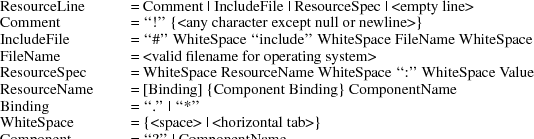
The canonical
modifier names are
|
Ctrl |
Mod1 |
Button1 |
|
Shift |
Mod2 |
Button2 |
|
Lock |
Mod3 |
Button3 |
|
|
Mod4 |
Button4 |
|
|
Mod5 |
Button5 |
The canonical event
types are

Examples
|
• |
|
Always put more
specific events in the table before more general ones: |
Shift
<Btn1Down> : twas()\n\
<Btn1Down> : brillig()
|
• |
|
For double-click on
Button1 Up with Shift, use this specification: |
Shift<Btn1Up>(2)
: and()
This is
equivalent to the following line with appropriate timers set
between events:
Shift<Btn1Down>,Shift<Btn1Up>,Shift<Btn1Down>,Shift<Btn1Up>
: and()
|
• |
|
For double-click on
Button1 Down with Shift, use this specification: |
Shift<Btn1Down>(2)
: the()
This is
equivalent to the following line with appropriate timers set
between events:
Shift<Btn1Down>,Shift<Btn1Up>,Shift<Btn1Down>
: the()
|
• |
|
Mouse motion is
always discarded when it occurs between events in a table
where no motion event is specified: |
<Btn1Down>,<Btn1Up>
: slithy()
This is taken,
even if the pointer moves a bit between the down and up
events. Similarly, any motion event specified in a
translation matches any number of motion events. If the
motion event causes an action procedure to be invoked, the
procedure is invoked after each motion event.
|
• |
|
If an event
sequence consists of a sequence of events that is also a
noninitial subsequence of another translation, it is not
taken if it occurs in the context of the longer sequence.
This occurs mostly in sequences like the following: |
<Btn1Down>,<Btn1Up>
: toves()\n\
<Btn1Up> : did()
The second
translation is taken only if the button release is not
preceded by a button press or if there are intervening
events between the press and the release. Be particularly
aware of this when using the repeat notation, above, with
buttons and keys, because their expansion includes
additional events; and when specifying motion events,
because they are implicitly included between any two other
events. In particular, pointer motion and double-click
translations cannot coexist in the same translation
table.
|
• |
|
For single click on
Button1 Up with Shift and Meta, use this specification: |
Shift Meta
<Btn1Down>, Shift Meta<Btn1Up>: gyre()
|
• |
|
For multiple clicks
greater or equal to a minimum number, a plus sign (+) may be
appended to the final (rightmost) count in an event
sequence. The actions will be invoked on the count-th
click and each subsequent one arriving within the
multi-click time interval. For example: |
Shift
<Btn1Up>(2+) : and()
|
• |
|
To indicate
EnterNotify with any modifiers, use this
specification: |
<Enter> :
gimble()
|
• |
|
To indicate
EnterNotify with no modifiers, use this
specification: |
None
<Enter> : in()
|
• |
|
To indicate
EnterNotify with Button1 Down and Button2 Up and
‘‘don’t care’’ about the other
modifiers, use this specification: |
Button1
~Button2 <Enter> : the()
|
• |
|
To indicate
EnterNotify with Button1 down and Button2 down
exclusively, use this specification: |
! Button1
Button2 <Enter> : wabe()
You do not need
to use a tilde (~) with an exclamation point (!).
15
X Toolkit
Intrinsics X11 Release 6.4
Appendix
C
Compatibility
Functions
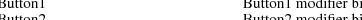
In prototype
versions of the X Toolkit each widget class implemented an
Xt<Widget>Create (for example,
XtLabelCreate) function, in which most of the code
was identical from widget to widget. In the Intrinsics, a
single generic XtCreateWidget performs most of the
common work and then calls the initialize procedure
implemented for the particular widget class.
Each Composite
class also implemented the procedures
Xt<Widget>Add and an
Xt<Widget>Delete (for example,
XtButtonBoxAddButton and
XtButtonBoxDeleteButton). In the Intrinsics, the
Composite generic procedures XtManageChildren and
XtUnmanageChildren perform error checking and
screening out of certain children. Then they call the
change_managed procedure implemented for the widget’s
Composite class. If the widget’s parent has not yet
been realized, the call to the change_managed procedure is
delayed until realization time.
Old-style calls can
be implemented in the X Toolkit by defining one-line
procedures or macros that invoke a generic routine. For
example, you could define the macro XtLabelCreate
as:
#define
XtLabelCreate(name, parent, args,
num_args) \
((LabelWidget) XtCreateWidget(name,
labelWidgetClass, parent, args,
num_args))
Pop-up shells in
some of the prototypes automatically performed an
XtManageChild on their child within their
insert_child procedure. Creators of pop-up children need to
call XtManageChild themselves.
XtAppInitialize
and XtVaAppInitialize have been replaced by
XtOpenApplication and XtVaOpenApplication.
To initialize the
Intrinsics internals, create an application context, open
and initialize a display, and create the initial application
shell instance, an application may use
XtAppInitialize or XtVaAppInitialize. __
│
Widget
XtAppInitialize(app_context_return,
application_class, options,
num_options,
argc_in_out, argv_in_out,
fallback_resources, args, num_args)
XtAppContext *app_context_return;
String application_class;
XrmOptionDescList options;
Cardinal num_options;
int *argc_in_out;
String *argv_in_out;
String *fallback_resources;
ArgList args;
Cardinal num_args;
Returns the application
context, if non-NULL.
Specifies the class name of the
application.
|
options |
|
Specifies the
command line options table. |
|
num_options |
|
Specifies the
number of entries in options. |
|
argc_in_out |
|
Specifies a pointer
to the number of command line arguments. |
|
argv_in_out |
|
Specifies a pointer
to the command line arguments. |
fallback_resources
|
|
Specifies resource values to be used if the
application class resource file cannot be opened or read, or
NULL. |
|
args |
|
Specifies the
argument list to override any other resource specifications
for the created shell widget. |
|
num_args |
|
Specifies the
number of entries in the argument list. |
│__
The
XtAppInitialize function calls
XtToolkitInitialize followed by
XtCreateApplicationContext, then calls
XtOpenDisplay with display_string NULL and
application_name NULL, and finally calls
XtAppCreateShell with application_name NULL,
widget_class applicationShellWidget- Class, and the
specified args and num_args and returns the
created shell. The modified argc and argv
returned by XtDisplayInitialize are returned in
argc_in_out and argv_in_out. If
app_context_return is not NULL, the created
application context is also returned. If the display
specified by the command line cannot be opened, an error
message is issued and XtAppInitialize terminates the
application. If fallback_resources is non-NULL,
XtAppSetFallbackResources is called with the value
prior to calling XtOpenDisplay. __ │
Widget
XtVaAppInitialize(app_context_return,
application_class, options,
num_options,
argc_in_out, argv_in_out,
fallback_resources, ...)
XtAppContext *app_context_return;
String application_class;
XrmOptionDescList options;
Cardinal num_options;
int *argc_in_out;
String *argv_in_out;
String *fallback_resources;
Returns the application
context, if non-NULL.
Specifies the class name of the
application.
|
options |
|
Specifies the
command line options table. |
|
num_options |
|
Specifies the
number of entries in options. |
|
argc_in_out |
|
Specifies a pointer
to the number of command line arguments. |
|
argv_in_out |
|
Specifies the
command line arguments array. |
fallback_resources
|
|
Specifies resource values to be used if the
application class resource file cannot be opened, or
NULL. |
|
... |
|
Specifies the
variable argument list to override any other resource
specifications for the created shell. |
│__
The
XtVaAppInitialize procedure is identical in function
to XtAppInitialize with the args and
num_args parameters replaced by a varargs list, as
described in Section 2.5.1.
As a convenience to
people converting from earlier versions of the toolkit
without application contexts, the following routines exist:
XtInitialize, XtMainLoop, XtNextEvent,
XtProcessEvent, XtPeekEvent, XtPending,
XtAddInput, XtAddTimeOut,
XtAddWorkProc, XtCreateApplicationShell,
XtAddActions, XtSetSelectionTimeout, and
XtGetSelectionTimeout. __ │
Widget
XtInitialize(shell_name, application_class,
options, num_options, argc,
argv)
String shell_name;
String application_class;
XrmOptionDescRec options[];
Cardinal num_options;
int *argc;
String argv[];
|
shell_name |
This parameter is
ignored; therefore, you can specify NULL. |
application_class
|
|
Specifies the class name of this
application. |
|
options |
|
Specifies how to
parse the command line for any application-specific
resources. The options argument is passed as a
parameter to XrmParseCommand. |
num_options
|
|
Specifies the number of entries in the
options list. |
|
argc |
|
Specifies a pointer
to the number of command line parameters. |
|
argv |
|
Specifies the
command line parameters. |
│__
XtInitialize
calls XtToolkitInitialize to initialize the toolkit
internals, creates a default application context for use by
the other convenience routines, calls XtOpenDisplay
with display_string NULL and application_name
NULL, and finally calls XtAppCreateShell with
application_name NULL and returns the created shell.
The semantics of calling XtInitialize more than once
are undefined. This routine has been replaced by
XtOpenApplication. __ │
void
XtMainLoop(void) │__
XtMainLoop
first reads the next alternate input, timer, or X event by
calling XtNextEvent. Then it dispatches this to the
appropriate registered procedure by calling
XtDispatchEvent. This routine has been replaced by
XtAppMainLoop. __ │
void
XtNextEvent(event_return)
XEvent *event_return;
Returns the event information
to the specified event structure. │__
If no input is on
the X input queue for the default application context,
XtNextEvent flushes the X output buffer and waits for
an event while looking at the alternate input sources and
timeout values and calling any callback procedures triggered
by them. This routine has been replaced by
XtAppNextEvent. XtInitialize must be called
before using this routine. __ │
void
XtProcessEvent(mask)
XtInputMask mask;
|
mask |
|
Specifies the type
of input to process. |
|
│__
XtProcessEvent
processes one X event, timeout, or alternate input source
(depending on the value of mask), blocking if
necessary. It has been replaced by XtAppProcessEvent.
XtInitialize must be called before using this
function. __ │
Boolean
XtPeekEvent(event_return)
XEvent *event_return;
Returns the event information
to the specified event structure. │__
If there is an
event in the queue for the default application context,
XtPeekEvent fills in the event and returns a nonzero
value. If no X input is on the queue, XtPeekEvent
flushes the output buffer and blocks until input is
available, possibly calling some timeout callbacks in the
process. If the input is an event, XtPeekEvent fills
in the event and returns a nonzero value. Otherwise, the
input is for an alternate input source, and
XtPeekEvent returns zero. This routine has been
replaced by XtAppPeekEvent. XtInitialize must
be called before using this routine. __ │
Boolean XtPending()
│__
XtPending
returns a nonzero value if there are events pending from the
X server or alternate input sources in the default
application context. If there are no events pending, it
flushes the output buffer and returns a zero value. It has
been replaced by XtAppPending. XtInitialize
must be called before using this routine. __ │
XtInputId
XtAddInput(source, condition, proc,
client_data)
int source;
XtPointer condition;
XtInputCallbackProc proc;
XtPointer client_data;
|
source |
|
Specifies the
source file descriptor on a POSIX-based system or other
operating-system-dependent device specification. |
|
condition |
|
Specifies the mask
that indicates either a read, write, or exception condition
or some operating-system-dependent condition. |
|
proc |
|
Specifies the
procedure called when input is available. |
client_data
|
Specifies the parameter to be passed to
proc when input is available. │__ |
The
XtAddInput function registers in the default
application context a new source of events, which is usually
file input but can also be file output. (The word
file should be loosely interpreted to mean any sink
or source of data.) XtAddInput also specifies the
conditions under which the source can generate events. When
input is pending on this source in the default application
context, the callback procedure is called. This routine has
been replaced by XtAppAddInput. XtInitialize
must be called before using this routine. __ │
XtIntervalId
XtAddTimeOut(interval, proc,
client_data)
unsigned long interval;
XtTimerCallbackProc proc;
XtPointer client_data;
|
interval |
|
Specifies the time
interval in milliseconds. |
|
proc |
|
Specifies the
procedure to be called when time expires. |
client_data
|
Specifies the parameter to be passed to
proc when it is called. │__ |
The
XtAddTimeOut function creates a timeout in the
default application context and returns an identifier for
it. The timeout value is set to interval. The
callback procedure will be called after the time interval
elapses, after which the timeout is removed. This routine
has been replaced by XtAppAddTimeOut.
XtInitialize must be called before using this
routine. __ │
XtWorkProcId
XtAddWorkProc(proc, client_data)
XtWorkProc proc;
XtPointer client_data;
|
proc |
|
Procedure to call
to do the work. |
|
client_data
|
Client data to pass to proc when it
is called. │__ |
This routine
registers a work procedure in the default application
context. It has been replaced by XtAppAddWorkProc.
XtInitialize must be called before using this
routine. __ │
Widget
XtCreateApplicationShell(name, widget_class,
args, num_args)
String name;
WidgetClass widget_class;
ArgList args;
Cardinal num_args;
|
name |
|
This parameter is
ignored; therefore, you can specify NULL. |
widget_class
|
|
Specifies the widget class pointer for the
created application shell widget. This will usually be
topLevelShellWidgetClass or a subclass thereof. |
|
args |
|
Specifies the
argument list to override any other resource
specifications. |
|
num_args |
|
Specifies the
number of entries in args. |
│__
The procedure
XtCreateApplicationShell calls
XtAppCreateShell with application_name NULL,
the application class passed to XtInitialize, and the
default application context created by XtInitialize.
This routine has been replaced by
XtAppCreateShell.
An old-format
resource type converter procedure pointer is of type
XtConverter. __ │
typedef void
(*XtConverter)(XrmValue*, Cardinal*, XrmValue*, XrmValue*);
XrmValue *args;
Cardinal *num_args;
XrmValue *from;
XrmValue *to;
|
args |
|
Specifies a list of
additional XrmValue arguments to the converter if
additional context is needed to perform the conversion, or
NULL. |
|
num_args |
|
Specifies the
number of entries in args. |
|
from |
|
Specifies the value
to convert. |
|
to |
|
Specifies the
descriptor to use to return the converted value. |
│__
Type converters
should perform the following actions:
|
• |
|
Check to see that
the number of arguments passed is correct. |
|
• |
|
Attempt the type
conversion. |
|
• |
|
If successful,
return the size and pointer to the data in the to
argument; otherwise, call XtWarningMsg and return
without modifying the to argument. |
Most type
converters just take the data described by the specified
from argument and return data by writing into the
specified to argument. A few need other information,
which is available in the specified argument list. A type
converter can invoke another type converter, which allows
differing sources that may convert into a common
intermediate result to make maximum use of the type
converter cache.
Note that the
address returned in to->addr cannot be that of a
local variable of the converter because this is not valid
after the converter returns. It should be a pointer to a
static variable.
The procedure type
XtConverter has been replaced by
XtTypeConverter.
The
XtStringConversionWarning function is a convenience
routine for old-format resource converters that convert from
strings. __ │
void
XtStringConversionWarning(src, dst_type)
String src, dst_type;
|
src |
|
Specifies the
string that could not be converted. |
|
dst_type |
|
Specifies the name
of the type to which the string could not be converted. |
│__
The
XtStringConversionWarning function issues a warning
message with name
‘‘conversionError’’, type
‘‘string’’, class
‘‘XtToolkitError, and the default message string
‘‘Cannot convert "src" to type
dst_type’’. This routine has been
superseded by XtDisplayStringConversionWarning.
To register an
old-format converter, use XtAddConverter or
XtAppAddConverter. __ │
void
XtAddConverter(from_type, to_type,
converter, convert_args, num_args)
String from_type;
String to_type;
XtConverter converter;
XtConvertArgList convert_args;
Cardinal num_args;
|
from_type |
|
Specifies the
source type. |
|
|
to_type |
|
Specifies the
destination type. |
|
|
converter |
|
Specifies the type
converter procedure. |
|
convert_args
|
|
Specifies how to compute the additional
arguments to the converter, or NULL. |
|
num_args |
|
Specifies the
number of entries in convert_args. |
│__
XtAddConverter
is equivalent in function to XtSetTypeConverter with
cache_type equal to XtCacheAll for old-format
type converters. It has been superseded by
XtSetTypeConverter. __ │
void
XtAppAddConverter(app_context, from_type,
to_type, converter, convert_args,
num_args)
XtAppContext app_context;
String from_type;
String to_type;
XtConverter converter;
XtConvertArgList convert_args;
Cardinal num_args;
Specifies the application
context.
|
from_type |
|
Specifies the
source type. |
|
|
to_type |
|
Specifies the
destination type. |
|
|
converter |
|
Specifies the type
converter procedure. |
|
convert_args
|
|
Specifies how to compute the additional
arguments to the converter, or NULL. |
|
num_args |
|
Specifies the
number of entries in convert_args. |
│__
XtAppAddConverter
is equivalent in function to XtAppSetTypeConverter
with cache_type equal to XtCacheAll for
old-format type converters. It has been superseded by
XtAppSetTypeConverter.
To invoke resource
conversions, a client may use XtConvert or, for
old-format converters only, XtDirectConvert. __
│
void
XtConvert(w, from_type, from,
to_type, to_return)
Widget w;
String from_type;
XrmValuePtr from;
String to_type;
XrmValuePtr to_return;
|
w |
|
Specifies the
widget to use for additional arguments, if any are
needed. |
|
from_type |
|
Specifies the
source type. |
|
from |
|
Specifies the value
to be converted. |
|
to_type |
|
Specifies the
destination type. |
|
to_return |
|
Returns the
converted value. |
void
XtDirectConvert(converter, args,
num_args, from, to_return)
XtConverter converter;
XrmValuePtr args;
Cardinal num_args;
XrmValuePtr from;
XrmValuePtr to_return;
|
converter |
|
Specifies the
conversion procedure to be called. |
|
args |
|
Specifies the
argument list that contains the additional arguments needed
to perform the conversion (often NULL). |
|
num_args |
|
Specifies the
number of entries in args. |
|
from |
|
Specifies the value
to be converted. |
|
to_return |
|
Returns the
converted value. |
│__
The
XtConvert function looks up the type converter
registered to convert from_type to to_type,
computes any additional arguments needed, and then calls
XtDirectConvert or XtCallConverter. The
XtDirectConvert function looks in the converter cache
to see if this conversion procedure has been called with the
specified arguments. If so, it returns a descriptor for
information stored in the cache; otherwise, it calls the
converter and enters the result in the cache.
Before calling the
specified converter, XtDirectConvert sets the return
value size to zero and the return value address to NULL. To
determine if the conversion was successful, the client
should check to_return.addr for non-NULL. The data
returned by XtConvert must be copied immediately by
the caller, as it may point to static data in the type
converter.
XtConvert
has been replaced by XtConvertAndStore, and
XtDirectConvert has been superseded by
XtCallConverter.
To deallocate a
shared GC when it is no longer needed, use
XtDestroyGC. __ │
void
XtDestroyGC(w, gc)
Widget w;
GC gc;
|
w |
|
Specifies any
object on the display for which the shared GC was created.
Must be of class Object or any subclass thereof. |
|
gc |
|
Specifies the
shared GC to be deallocated. |
│__
References to
sharable GCs are counted and a free request is generated to
the server when the last user of a given GC destroys it.
Note that some earlier versions of XtDestroyGC had
only a gc argument. Therefore, this function is not
very portable, and you are encouraged to use
XtReleaseGC instead.
To declare an
action table in the default application context and register
it with the translation manager, use XtAddActions. __
│
void
XtAddActions(actions, num_actions)
XtActionList actions;
Cardinal num_actions;
|
actions |
|
Specifies the
action table to register. |
|
num_actions
|
Specifies the number of entries in
actions. │__ |
If more than one
action is registered with the same name, the most recently
registered action is used. If duplicate actions exist in an
action table, the first is used. The Intrinsics register an
action table for XtMenuPopup and XtMenuPopdown
as part of X Toolkit initialization. This routine has been
replaced by XtAppAddActions. XtInitialize must
be called before using this routine.
To set the
Intrinsics selection timeout in the default application
context, use XtSetSelectionTimeout. __ │
void
XtSetSelectionTimeout(timeout)
unsigned long timeout;
|
timeout |
|
Specifies the
selection timeout in milliseconds. This routine has been
replaced by XtAppSetSelectionTimeout.
XtInitialize must be called before using this
routine. |
│__
To get the current
selection timeout value in the default application context,
use XtGetSelectionTimeout. __ │
unsigned long
XtGetSelectionTimeout() │__
The selection
timeout is the time within which the two communicating
applications must respond to one another. If one of them
does not respond within this interval, the Intrinsics abort
the selection request.
This routine has
been replaced by XtAppGetSelectionTimeout.
XtInitialize must be called before using this
routine.
To obtain the
global error database (for example, to merge with an
application- or widget-specific database), use
XtGetErrorDatabase. __ │
XrmDatabase
*XtGetErrorDatabase() │__
The
XtGetErrorDatabase function returns the address of
the error database. The Intrinsics do a lazy binding of the
error database and do not merge in the database file until
the first call to XtGetErrorDatbaseText. This routine
has been replaced by XtAppGetErrorDatabase.
An error message
handler can obtain the error database text for an error or a
warning by calling XtGetErrorDatabaseText. __
│
void
XtGetErrorDatabaseText(name, type,
class, default, buffer_return,
nbytes)
String name, type, class;
String default;
String buffer_return;
int nbytes;
|
name |
|
|
|
type |
|
Specify the name and type that are
concatenated to form the resource name of the error
message. |
|
class |
|
Specifies the
resource class of the error message. |
|
default |
|
Specifies the
default message to use if an error database entry is not
found. |
buffer_return
|
|
Specifies the buffer into which the error
message is to be returned. |
|
nbytes |
|
Specifies the size
of the buffer in bytes. |
│__
The
XtGetErrorDatabaseText returns the appropriate
message from the error database associated with the default
application context or returns the specified default message
if one is not found in the error database. To form the full
resource name and class when querying the database, the
name and type are concatenated with a single
‘‘.’’ between them and the
class is concatenated with itself with a single
‘‘.’’ if it does not already contain
a ‘‘.’’. This routine has been
superseded by XtAppGetErrorDatabaseText.
To register a
procedure to be called on fatal error conditions, use
XtSetErrorMsgHandler. __ │
void
XtSetErrorMsgHandler(msg_handler)
XtErrorMsgHandler msg_handler;
Specifies the new fatal error
procedure, which should not return. │__
The default error
handler provided by the Intrinsics constructs a string from
the error resource database and calls XtError. Fatal
error message handlers should not return. If one does,
subsequent Intrinsics behavior is undefined. This routine
has been superseded by XtAppSetErrorMsgHandler.
To call the
high-level error handler, use XtErrorMsg. __
│
void
XtErrorMsg(name, type, class,
default, params, num_params)
String name;
String type;
String class;
String default;
String *params;
Cardinal *num_params;
|
name |
Specifies the
general kind of error. |
|
type |
Specifies the
detailed name of the error. |
|
class |
Specifies the
resource class. |
|
default |
Specifies the
default message to use if an error database entry is not
found. |
|
params |
Specifies a pointer
to a list of values to be stored in the message. |
|
num_params |
Specifies the
number of entries in params. |
│__
This routine has
been superseded by XtAppErrorMsg.
To register a
procedure to be called on nonfatal error conditions, use
XtSetWarningMsgHandler. __ │
void
XtSetWarningMsgHandler(msg_handler)
XtErrorMsgHandler msg_handler;
Specifies the new nonfatal
error procedure, which usually returns. │__
The default warning
handler provided by the Intrinsics constructs a string from
the error resource database and calls XtWarning. This
routine has been superseded by
XtAppSetWarningMsgHandler.
To call the
installed high-level warning handler, use
XtWarningMsg. __ │
void
XtWarningMsg(name, type, class,
default, params, num_params)
String name;
String type;
String class;
String default;
String *params;
Cardinal *num_params;
|
name |
Specifies the
general kind of error. |
|
type |
Specifies the
detailed name of the error. |
|
class |
Specifies the
resource class. |
|
default |
Specifies the
default message to use if an error database entry is not
found. |
|
params |
Specifies a pointer
to a list of values to be stored in the message. |
|
num_params |
Specifies the
number of entries in params. |
│__
This routine has
been superseded by XtAppWarningMsg.
To register a
procedure to be called on fatal error conditions, use
XtSetErrorHandler. __ │
void
XtSetErrorHandler(handler)
XtErrorHandler handler;
|
handler |
|
Specifies the new
fatal error procedure, which should not return. |
│__
The default error
handler provided by the Intrinsics is _XtError. On
POSIX-based systems, it prints the message to standard error
and terminates the application. Fatal error message handlers
should not return. If one does, subsequent X Toolkit
behavior is undefined. This routine has been superseded by
XtAppSetErrorHandler.
To call the
installed fatal error procedure, use XtError. __
│
void
XtError(message)
String message;
|
message |
|
Specifies the
message to be reported. |
|
│__
Most programs
should use XtAppErrorMsg, not XtError, to
provide for customization and internationalization of error
messages. This routine has been superseded by
XtAppError.
To register a
procedure to be called on nonfatal error conditions, use
XtSetWarningHandler. __ │
void
XtSetWarningHandler(handler)
XtErrorHandler handler;
|
handler |
|
Specifies the new
nonfatal error procedure, which usually returns. |
│__
The default warning
handler provided by the Intrinsics is _XtWarning. On
POSIX-based systems, it prints the message to standard error
and returns to the caller. This routine has been superseded
by XtAppSetWarningHandler.
To call the
installed nonfatal error procedure, use XtWarning. __
│
void
XtWarning(message)
String message;
|
message |
|
Specifies the
nonfatal error message to be reported. |
│__
Most programs
should use XtAppWarningMsg, not XtWarning, to
provide for customization and internationalization of
warning messages. This routine has been superseded by
XtAppWarning.
16
X Toolkit
Intrinsics X11 Release 6.4
Appendix
D
Intrinsics
Error Messages
All Intrinsics
errors and warnings have class
‘‘XtToolkitError’’. The following
two tables summarize the common errors and warnings that can
be generated by the Intrinsics. Additional
implementation-dependent messages are permitted.
Error Messages

Warning Messages


17
X Toolkit
Intrinsics X11 Release 6.4
Appendix
E
Defined
Strings
The
StringDefs.h header file contains definitions for the
following resource name, class, and representation type
symbolic constants.
Resource names:
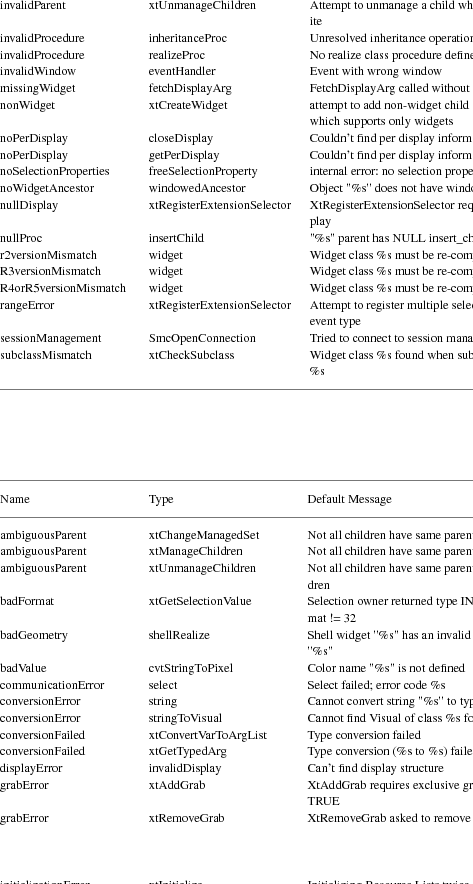
Resource
classes:
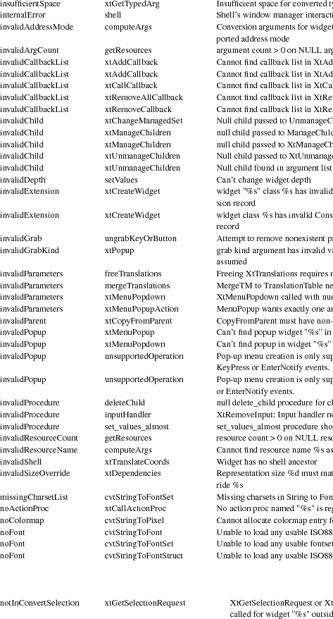
Resource
representation types:
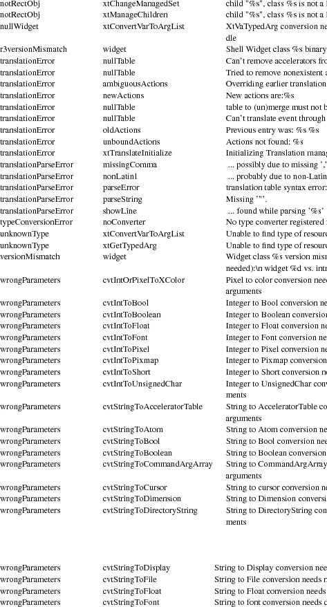
Boolean enumeration
constants:
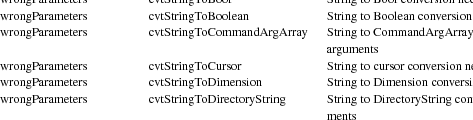
Orientation
enumeration constants:
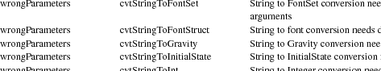
Text edit
enumeration constants:
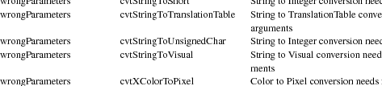
Color enumeration
constants:
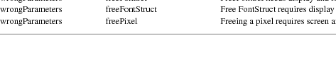
Font constant:

Hooks for External
Agents constants:
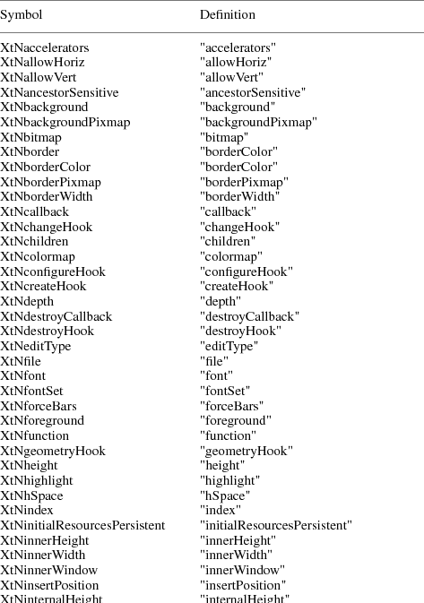
The Shell.h
header file contains definitions for the following resource
name, class, and representation type symbolic constants.
Resource names:
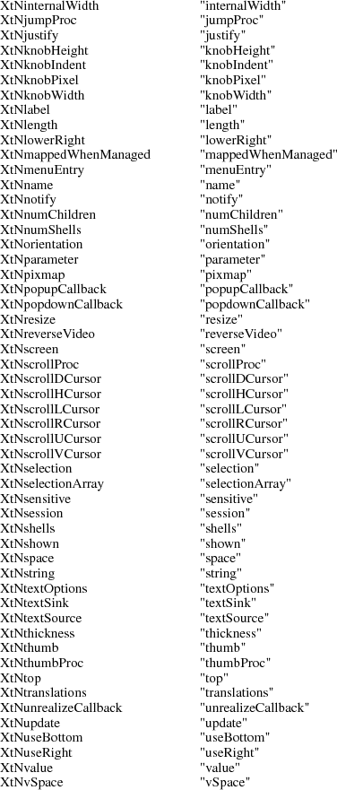
Resource
classes:
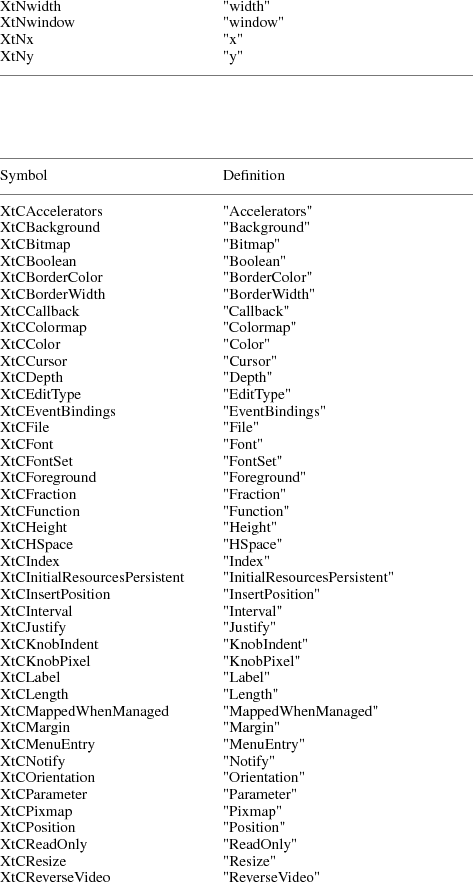
Resource
representation types:
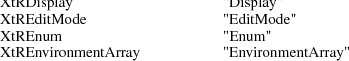
18
X Toolkit
Intrinsics X11 Release 6.4
Appendix
F
Resource
Configuration Management
Setting and
changing resources in X applications can be difficult for
both the application programmer and the end user.
Resource Configuration Management (RCM) addresses
this problem by changing the X Intrinsics to
immediately modify a resource for a specified widget and
each child widget in the hierarchy. In this context,
immediate means: no sourcing of a resource file is required;
the application does not need to be restarted for the new
resource values to take effect; and the change occurs
immediately.
The main difference
between RCM and the Editres protocol is that
the RCM customizing hooks reside in the
Intrinsics and thus are linked with other toolkits
such as Motif and the Athena widgets. However, the
EditRes protocol requires the application to link
with the EditRes routines in the Xmu library and Xmu
is not used by all applications that use Motif. Also, the
EditRes protocol uses ClientMessage, whereas the
RCM Intrinsics hooks use PropertyNotify
events.
X Properties and
the PropertyNotify events are used to implement
RCM and allow on-the-fly resource customization. When
the X Toolkit is initialized, two atoms are interned with
the strings Custom Init and Custom Data. Both
_XtCreatePopupShell and _XtAppCreateShell
register a PropertyNotify event handler to handle
these properties.
A customization
tool uses the Custom Init property to ping an
application to get the application’s toplevel window.
When the application’s property notify event handler
is invoked, the handler deletes the property. No data is
transferred in this property.
A customization
tool uses the Custom Data property to tell an
application that it should change a resource’s value.
The data in the property contains the length of the resource
name (the number of bytes in the resource name), the
resource name and the new value for the resource. This
property’s type is XA_STRING and the format of
the string is:
|
1. |
|
The length of the
resource name (the number of bytes in the resource name) |
|
2. |
|
One space
character |
|
3. |
|
The resource
name |
|
4. |
|
One space
character |
|
5. |
|
The resource
value |
When setting the
application’s resource, the event handler calls
functions to walk the application’s widget tree,
determining which widgets are affected by the resource
string, and then applying the value with XtSetValues.
As the widget tree is recursively descended, at each level
in the widget tree a resource part is tested for a match.
When the entire resource string has been matched, the value
is applied to the widget or widgets.
Before a value is
set on a widget, it is first determined if the last part of
the resource is a valid resource for that widget. It must
also add the resource to the application’s resource
database and then query it using specific resource strings
that is builds from the widget information.
19
20
Table
of Contents
Acknowledgments
. . . . . . . . . . . . . . . . . . . .
ix
. . . . . . . . . . . . . . . . . .
.
xii
|
Chapter 1 — Intrinsics and
Widgets |
|
. . . . . . . . . . .
1
. . . . . . . . . . . . . . . . . .
. .
1
. . . . . . . . . . . . . . . . . .
. . .
1
|
1.3. Procedures and
Macros |
|
. . . . . . . . . . . . . . .
1
. . . . . . . . . . . . . . . . . .
. . . .
1
. . . . . . . . . . . . . . . . . .
1
|
1.4.1.1. CoreClassPart
Structure |
|
. . . . . . . . . . . .
1
|
1.4.1.2. CorePart
Structure |
|
. . . . . . . . . . . . . .
1
. . . . . . . . . . . . . . . .
1
|
1.4.1.4. CorePart Default
Values |
|
. . . . . . . . . . . .
1
. . . . . . . . . . . . . . . .
1
|
1.4.2.1. CompositeClassPart
Structure |
|
. . . . . . . . .
1
|
1.4.2.2. CompositePart
Structure |
|
. . . . . . . . . . . .
1
|
1.4.2.3. Composite
Resources |
|
. . . . . . . . . . . . . .
1
|
1.4.2.4. CompositePart Default
Values |
|
. . . . . . . . .
1
|
1.4.3. Constraint
Widgets |
|
. . . . . . . . . . . . . . .
1
|
1.4.3.1. ConstraintClassPart
Structure |
|
. . . . . . . . .
1
|
1.4.3.2. ConstraintPart
Structure |
|
. . . . . . . . . . .
1
|
1.4.3.3. Constraint
Resources |
|
. . . . . . . . . . . . .
1
|
1.5. Implementation-Specific
Types |
|
. . . . . . . . . . .
1
. . . . . . . . . . . . . . . . . .
1
|
1.6.1. Widget Naming
Conventions |
|
. . . . . . . . . . . .
1
|
1.6.2. Widget Subclassing in Public
.h Files |
|
. . . . . .
1
|
1.6.3. Widget Subclassing in Private
.h Files |
|
. . . . .
1
|
1.6.4. Widget Subclassing in .c
Files |
|
. . . . . . . . .
1
|
1.6.5. Widget Class and Superclass
Look Up |
|
. . . . . . .
1
|
1.6.6. Widget Subclass
Verification |
|
. . . . . . . . . .
1
|
1.6.7. Superclass
Chaining |
|
. . . . . . . . . . . . . . .
1
1.6.8. Class Initialization: class_initialize
and
|
class_part_initialize
Procedures |
|
. . . . . . . . . . . .
1
|
1.6.9. Initializing a Widget
Class |
|
. . . . . . . . . . .
1
|
1.6.10. Inheritance of Superclass
Operations |
|
. . . . . .
1
|
1.6.11. Invocation of Superclass
Operations |
|
. . . . . .
1
|
1.6.12. Class Extension
Records |
|
. . . . . . . . . . . .
1
|
Chapter 2 — Widget
Instantiation |
|
. . . . . . . . . . . .
2
|
2.1. Initializing the X
Toolkit |
|
. . . . . . . . . . . .
2
|
2.2. Establishing the
Locale |
|
. . . . . . . . . . . . . .
2
|
2.3. Loading the Resource
Database |
|
. . . . . . . . . . .
2
|
2.4. Parsing the Command
Line |
|
. . . . . . . . . . . . .
2
. . . . . . . . . . . . . . . . .
2
|
2.5.1. Creating and Merging
Argument Lists |
|
. . . . . . .
2
|
2.5.2. Creating a Widget
Instance |
|
. . . . . . . . . . .
2
|
2.5.3. Creating an Application
Shell Instance |
|
. . . . .
2
2.5.4. Convenience Procedure to Initialize an
Appli-
. . . . . . . . . . . . . . . . . .
. . . . . . .
2
2.5.5. Widget Instance Allocation: The allocate
Pro-
. . . . . . . . . . . . . . . . . .
. . . . . . .
2
2.5.6. Widget Instance Initialization: The
initial-
. . . . . . . . . . . . . . . . . .
. . .
2
2.5.7. Constraint Instance Initialization: The
Con-
|
straintClassPart initialize
Procedure |
|
. . . . . . . . .
2
2.5.8. Nonwidget Data Initialization: The
initial-
. . . . . . . . . . . . . . . . . .
.
2
. . . . . . . . . . . . . . . . .
2
2.6.1. Widget Instance Window Creation: The
realize
. . . . . . . . . . . . . . . . . .
. . . . .
2
|
2.6.2. Window Creation Convenience
Routine |
|
. . . . . . .
2
|
2.7. Obtaining Window Information
from a Widget |
|
. . . .
2
|
2.7.1. Unrealizing
Widgets |
|
. . . . . . . . . . . . . . .
2
. . . . . . . . . . . . . . . .
2
|
2.8.1. Adding and Removing
Destroy Callbacks |
|
. . . . . .
2
2.8.2. Dynamic Data Deallocation: The destroy
Proce-
. . . . . . . . . . . . . . . . . .
. . . . . . . .
2
2.8.3. Dynamic Constraint Data Deallocation: The
|
ConstraintClassPart destroy
Procedure |
|
. . . . . . . . .
2
2.8.4. Widget Instance Deallocation: The
deallocate
. . . . . . . . . . . . . . . . . .
. . . . .
2
|
2.9. Exiting from an
Application |
|
. . . . . . . . . . . .
2
|
Chapter 3 — Composite Widgets
and Their Children |
|
. . . .
3
3.1. Addition of Children to a Composite Widget:
The
. . . . . . . . . . . . . . . . .
3
3.2. Insertion Order of Children: The
insert_posi-
. . . . . . . . . . . . . . . . . .
. . .
3
3.3. Deletion of Children: The delete_child
Proce-
. . . . . . . . . . . . . . . . . .
. . . . . . . .
3
3.4. Adding and Removing Children from the
Managed
. . . . . . . . . . . . . . . . . .
. . . . . . . .
3
. . . . . . . . . . . . . . . .
3
|
3.4.2. Unmanaging
Children |
|
. . . . . . . . . . . . . . .
3
|
3.4.3. Bundling Changes to the
Managed Set |
|
. . . . . . .
3
|
3.4.4. Determining if a Widget Is
Managed |
|
. . . . . . .
3
|
3.5. Controlling When Widgets Get
Mapped |
|
. . . . . . . .
3
|
3.6. Constrained Composite
Widgets |
|
. . . . . . . . . . .
3
|
Chapter 4 — Shell
Widgets |
|
. . . . . . . . . . . . . . .
4
|
4.1. Shell Widget
Definitions |
|
. . . . . . . . . . . . .
4
|
4.1.1. ShellClassPart
Definitions |
|
. . . . . . . . . . .
4
|
4.1.2. ShellPart
Definition |
|
. . . . . . . . . . . . . .
4
. . . . . . . . . . . . . . . . .
4
|
4.1.4. ShellPart Default
Values |
|
. . . . . . . . . . . .
4
|
4.2. Session
Participation |
|
. . . . . . . . . . . . . . .
4
. . . . . . . . . . . . . . . .
4
|
4.2.2. Saving Application
State |
|
. . . . . . . . . . . .
4
|
4.2.2.1. Requesting
Interaction |
|
. . . . . . . . . . . .
4
4.2.2.2. Interacting with the User during a
Check-
. . . . . . . . . . . . . . . . . .
. . . . . . .
4
|
4.2.2.3. Responding to a Shutdown
Cancellation |
|
. . . . .
4
|
4.2.2.4. Completing a
Save |
|
. . . . . . . . . . . . . . .
4
|
4.2.3. Responding to a
Shutdown |
|
. . . . . . . . . . . .
4
|
4.2.4. Resigning from a
Session |
|
. . . . . . . . . . . .
4
|
Chapter 5 — Pop-Up
Widgets |
|
. . . . . . . . . . . . . . .
5
. . . . . . . . . . . . . . . .
5
|
5.2. Creating a Pop-Up
Shell |
|
. . . . . . . . . . . . . .
5
|
5.3. Creating Pop-Up
Children |
|
. . . . . . . . . . . . .
5
|
5.4. Mapping a Pop-Up
Widget |
|
. . . . . . . . . . . . . .
5
|
5.5. Unmapping a Pop-Up
Widget |
|
. . . . . . . . . . . . .
5
|
Chapter 6 — Geometry
Management |
|
. . . . . . . . . . . .
6
|
6.1. Initiating Geometry
Changes |
|
. . . . . . . . . . . .
6
|
6.2. General Geometry Manager
Requests |
|
. . . . . . . . .
6
. . . . . . . . . . . . . . . . . .
6
|
6.4. Potential Geometry
Changes |
|
. . . . . . . . . . . .
6
6.5. Child Geometry Management: The
geometry_manager
. . . . . . . . . . . . . . . . . .
. . . . .
6
|
6.6. Widget Placement and
Sizing |
|
. . . . . . . . . . . .
6
. . . . . . . . . . . . . . . .
6
|
6.8. Size Change Management: The
resize Procedure |
|
. . .
6
|
Chapter 7 — Event
Management |
|
. . . . . . . . . . . . . .
7
|
7.1. Adding and Deleting
Additional Event Sources |
|
. . .
7
|
7.1.1. Adding and Removing Input
Sources |
|
. . . . . . . .
7
|
7.1.2. Adding and Removing
Blocking Notifications |
|
. . .
7
|
7.1.3. Adding and Removing
Timeouts |
|
. . . . . . . . . .
7
|
7.1.4. Adding and Removing Signal
Callbacks |
|
. . . . . .
7
|
7.2. Constraining Events to a
Cascade of Widgets |
|
. . . .
7
|
7.2.1. Requesting Key and Button
Grabs |
|
. . . . . . . . .
7
|
7.3. Focusing Events on a
Child |
|
. . . . . . . . . . . .
7
7.3.1. Events for Drawables That Are Not a
Widget’s
. . . . . . . . . . . . . . . . . .
. . . . . . .
7
|
7.4. Querying Event
Sources |
|
. . . . . . . . . . . . . .
7
. . . . . . . . . . . . . . . .
7
|
7.6. The Application Input
Loop |
|
. . . . . . . . . . . .
7
7.7. Setting and Checking the Sensitivity State of
a
. . . . . . . . . . . . . . . . . .
. . . . . . .
7
|
7.8. Adding Background Work
Procedures |
|
. . . . . . . . .
7
. . . . . . . . . . . . . . . . . .
7
|
7.9.1. Pointer Motion
Compression |
|
. . . . . . . . . . .
7
|
7.9.2. Enter/Leave
Compression |
|
. . . . . . . . . . . . .
7
|
7.9.3. Exposure
Compression |
|
. . . . . . . . . . . . . .
7
|
7.10. Widget Exposure and
Visibility |
|
. . . . . . . . . .
7
7.10.1. Redisplay of a Widget: The expose
Procedure
|
. . . . . . . . . . . . . . . . . .
. . . . . . . . . . |
7
|
7.10.2. Widget
Visibility |
|
. . . . . . . . . . . . . . .
7
. . . . . . . . . . . . . . . . .
7
|
7.11.1. Event Handlers That Select
Events |
|
. . . . . . .
7
|
7.11.2. Event Handlers That Do Not
Select Events |
|
. . . .
7
|
7.11.3. Current Event
Mask |
|
. . . . . . . . . . . . . . .
7
|
7.11.4. Event Handlers for X11
Protocol Extensions |
|
. . .
7
7.12. Using the Intrinsics in a Multi-Threaded
Envi-
. . . . . . . . . . . . . . . . . .
. . . . . .
7
7.12.1. Initializing a Multi-Threaded Intrinsics
Ap-
. . . . . . . . . . . . . . . . . .
. . . . .
7
|
7.12.2. Locking X Toolkit Data
Structures |
|
. . . . . . .
7
|
7.12.2.1. Locking the Application
Context |
|
. . . . . . .
7
|
7.12.2.2. Locking the
Process |
|
. . . . . . . . . . . . .
7
7.12.3. Event Management in a Multi-Threaded
Envi-
. . . . . . . . . . . . . . . . . .
. . . . . .
7
. . . . . . . . . . . . . . . . .
8
8.1. Using Callback Procedure and Callback List
Def-
. . . . . . . . . . . . . . . . . .
. . . . . .
8
|
8.2. Identifying Callback
Lists |
|
. . . . . . . . . . . .
8
|
8.3. Adding Callback
Procedures |
|
. . . . . . . . . . . .
8
|
8.4. Removing Callback
Procedures |
|
. . . . . . . . . . .
8
|
8.5. Executing Callback
Procedures |
|
. . . . . . . . . . .
8
|
8.6. Checking the Status of a
Callback List |
|
. . . . . .
8
|
Chapter 9 — Resource
Management |
|
. . . . . . . . . . . .
9
. . . . . . . . . . . . . . . . . .
9
|
9.2. Byte Offset
Calculations |
|
. . . . . . . . . . . . .
9
9.3. Superclass-to-Subclass Chaining of Resource
. . . . . . . . . . . . . . . . . .
. . . . . . .
9
. . . . . . . . . . . . . . . . . .
.
9
|
9.5. Obtaining Application
Resources |
|
. . . . . . . . . .
9
|
9.6. Resource
Conversions |
|
. . . . . . . . . . . . . . .
9
|
9.6.1. Predefined Resource
Converters |
|
. . . . . . . . .
9
|
9.6.2. New Resource
Converters |
|
. . . . . . . . . . . . .
9
|
9.6.3. Issuing Conversion
Warnings |
|
. . . . . . . . . . .
9
|
9.6.4. Registering a New Resource
Converter |
|
. . . . . .
9
|
9.6.5. Resource Converter
Invocation |
|
. . . . . . . . . .
9
|
9.7. Reading and Writing Widget
State |
|
. . . . . . . . .
9
|
9.7.1. Obtaining Widget
State |
|
. . . . . . . . . . . . .
9
9.7.1.1. Widget Subpart Resource Data: The
get_val-
. . . . . . . . . . . . . . . . . .
.
9
|
9.7.1.2. Widget Subpart
State |
|
. . . . . . . . . . . . .
9
|
9.7.2. Setting Widget
State |
|
. . . . . . . . . . . . . .
9
|
9.7.2.1. Widget State: The
set_values Procedure |
|
. . . .
9
9.7.2.2. Widget State: The set_values_almost
Proce-
. . . . . . . . . . . . . . . . . .
. . . . . . . .
9
9.7.2.3. Widget State: The ConstraintClassPart
. . . . . . . . . . . . . . . . . .
9
|
9.7.2.4. Widget Subpart
State |
|
. . . . . . . . . . . . .
9
9.7.2.5. Widget Subpart Resource Data: The
set_val-
. . . . . . . . . . . . . . . . . .
.
9
|
Chapter 10 — Translation
Management |
|
. . . . . . . . . .
10
. . . . . . . . . . . . . . . . . .
10
|
10.1.1. Action Table
Registration |
|
. . . . . . . . . . .
10
|
10.1.2. Action Names to Procedure
Translations |
|
. . . . .
10
|
10.1.3. Action Hook
Registration |
|
. . . . . . . . . . . .
10
. . . . . . . . . . . . . . . .
10
. . . . . . . . . . . . . . . .
10
. . . . . . . . . . . . . . . .
10
. . . . . . . . . . . . . . . .
10
|
10.3. Translation Table
Management |
|
. . . . . . . . . . .
10
. . . . . . . . . . . . . . . .
10
|
10.5. KeyCode-to-KeySym
Conversions |
|
. . . . . . . . . .
10
|
10.6. Obtaining a KeySym in an
Action Procedure |
|
. . . .
10
|
10.7. KeySym-to-KeyCode
Conversions |
|
. . . . . . . . . .
10
10.8. Registering Button and Key Grabs for
Actions
|
. . . . . . . . . . . . . . . . . .
. . . . . . . . . . |
10
|
10.9. Invoking Actions
Directly |
|
. . . . . . . . . . . .
10
|
10.10. Obtaining a Widget’s
Action List |
|
. . . . . . . .
10
|
Chapter 11 — Utility
Functions |
|
. . . . . . . . . . . . .
11
11.1. Determining the Number of Elements in an
Array
|
. . . . . . . . . . . . . . . . . .
. . . . . . . . . . |
11
|
11.2. Translating Strings to
Widget Instances |
|
. . . . .
11
|
11.3. Managing Memory
Usage |
|
. . . . . . . . . . . . . .
11
|
11.4. Sharing Graphics
Contexts |
|
. . . . . . . . . . . .
11
|
11.5. Managing
Selections |
|
. . . . . . . . . . . . . . .
11
11.5.1. Setting and Getting the Selection
Timeout
. . . . . . . . . . . . . . . . . .
. . . . . . .
11
|
11.5.2. Using Atomic
Transfers |
|
. . . . . . . . . . . . .
11
|
11.5.2.1. Atomic Transfer
Procedures |
|
. . . . . . . . . .
11
|
11.5.2.2. Getting the Selection
Value |
|
. . . . . . . . .
11
|
11.5.2.3. Setting the Selection
Owner |
|
. . . . . . . . .
11
|
11.5.3. Using Incremental
Transfers |
|
. . . . . . . . . .
11
|
11.5.3.1. Incremental Transfer
Procedures |
|
. . . . . . .
11
11.5.3.2. Getting the Selection Value
Incrementally
|
. . . . . . . . . . . . . . . . . .
. . . . . . . . . . |
11
11.5.3.3. Setting the Selection Owner for
Incremen-
. . . . . . . . . . . . . . . . . .
. . .
11
11.5.4. Setting and Retrieving Selection Target
Pa-
. . . . . . . . . . . . . . . . . .
. . . . . .
11
|
11.5.5. Generating MULTIPLE
Requests |
|
. . . . . . . . . .
11
|
11.5.6. Auxiliary Selection
Properties |
|
. . . . . . . . .
11
|
11.5.7. Retrieving the Most Recent
Timestamp |
|
. . . . . .
11
|
11.5.8. Retrieving the Most Recent
Event |
|
. . . . . . . .
11
|
11.6. Merging Exposure Events into a
Region |
|
. . . . . .
11
|
11.7. Translating Widget
Coordinates |
|
. . . . . . . . . .
11
|
11.8. Translating a Window to a
Widget |
|
. . . . . . . . .
11
. . . . . . . . . . . . . . . . .
11
|
11.10. Setting
WM_COLORMAP_WINDOWS |
|
. . . . . . . . . . .
11
|
11.11. Finding File
Names |
|
. . . . . . . . . . . . . . .
11
|
11.12. Hooks for External
Agents |
|
. . . . . . . . . . . .
11
|
11.12.1. Hook Object
Resources |
|
. . . . . . . . . . . . .
11
|
11.12.2. Querying Open
Displays |
|
. . . . . . . . . . . .
11
|
Chapter 12 — Nonwidget
Objects |
|
. . . . . . . . . . . . .
12
. . . . . . . . . . . . . . . . .
12
. . . . . . . . . . . . . . . . . .
12
|
12.2.1. ObjectClassPart
Structure |
|
. . . . . . . . . . .
12
|
12.2.2. ObjectPart
Structure |
|
. . . . . . . . . . . . . .
12
. . . . . . . . . . . . . . . .
12
|
12.2.4. ObjectPart Default
Values |
|
. . . . . . . . . . .
12
|
12.2.5. Object Arguments to
Intrinsics Routines |
|
. . . .
12
. . . . . . . . . . . . . . . . .
12
. . . . . . . . . . . . . . . .
12
|
12.3.1. RectObjClassPart
Structure |
|
. . . . . . . . . . .
12
|
12.3.2. RectObjPart
Structure |
|
. . . . . . . . . . . . .
12
|
12.3.3. RectObj
Resources |
|
. . . . . . . . . . . . . . .
12
|
12.3.4. RectObjPart Default
Values |
|
. . . . . . . . . . .
12
|
12.3.5. Widget Arguments to
Intrinsics Routines |
|
. . . .
12
|
12.3.6. Use of Rectangle
Objects |
|
. . . . . . . . . . . .
12
. . . . . . . . . . . . . . . . .
12
|
12.5. Widget Arguments to Intrinsics
Routines |
|
. . . . .
12
|
Chapter 13 — Evolution of the
Intrinsics |
|
. . . . . . . .
13
|
13.1. Determining Specification
Revision Level |
|
. . . . .
13
|
13.2. Release 3 to Release 4
Compatibility |
|
. . . . . . .
13
|
13.2.1. Additional
Arguments |
|
. . . . . . . . . . . . . .
13
|
13.2.2. set_values_almost
Procedures |
|
. . . . . . . . . .
13
. . . . . . . . . . . . . . . . .
13
|
13.2.4. unrealizeCallback Callback
List |
|
. . . . . . . .
13
|
13.2.5. Subclasses of
WMShell |
|
. . . . . . . . . . . . .
13
|
13.2.6. Resource Type
Converters |
|
. . . . . . . . . . . .
13
|
13.2.7. KeySym Case Conversion
Procedure |
|
. . . . . . . .
13
|
13.2.8. Nonwidget
Objects |
|
. . . . . . . . . . . . . . .
13
|
13.3. Release 4 to Release 5
Compatibility |
|
. . . . . . .
13
|
13.3.1. baseTranslations
Resource |
|
. . . . . . . . . . .
13
|
13.3.2. Resource File Search
Path |
|
. . . . . . . . . . .
13
|
13.3.3. Customization
Resource |
|
. . . . . . . . . . . . .
13
|
13.3.4. Per-Screen Resource
Database |
|
. . . . . . . . . .
13
|
13.3.5. Internationalization of
Applications |
|
. . . . . .
13
|
13.3.6. Permanently Allocated
Strings |
|
. . . . . . . . .
13
|
13.3.7. Arguments to Existing
Functions |
|
. . . . . . . .
13
|
13.4. Release 5 to Release 6
Compatibility |
|
. . . . . . .
13
. . . . . . . . . . . . . . . .
13
|
13.4.2. General Application
Development |
|
. . . . . . . .
13
13.4.3. Communication with Window and Session
Man-
. . . . . . . . . . . . . . . . . .
. . . . . . .
13
|
13.4.4. Geometry
Management |
|
. . . . . . . . . . . . . .
13
. . . . . . . . . . . . . . . .
13
|
13.4.6. Resource
Management |
|
. . . . . . . . . . . . . .
13
|
13.4.7. Translation
Management |
|
. . . . . . . . . . . . .
13
. . . . . . . . . . . . . . . . . .
.
13
|
13.4.9. External Agent
Hooks |
|
. . . . . . . . . . . . . .
13
|
Appendix A — Resource File
Format |
|
. . . . . . . . . . .
14
|
Appendix B — Translation
Table Syntax |
|
. . . . . . . . .
15
|
Appendix C — Compatibility
Functions |
|
. . . . . . . . . .
16
|
Appendix D — Intrinsics
Error Messages |
|
. . . . . . . . .
17
|
Appendix E — Defined
Strings |
|
. . . . . . . . . . . . . .
18
|
Appendix F — Resource
Configuration Management |
|
. . . . .
19
. . . . . . . . . . . . . . . . . .
. . . . . . .
21
iii